モデル間で食い違い（マウスオーバーで相手の値）PDFテキストレイヤに見つからない自動チェックで警告・エラー片方のモデルにしかない行
| 文書 | ページ | 食い違いのあるページ | 食い違いセル | 要確認ページ | claude-haiku-5-5 | claude-sonnet-5-5 | ||||||||
|---|---|---|---|---|---|---|---|---|---|---|---|---|---|---|
| 行数 | error | warn | テキスト不一致 | $（実費） | 行数 | error | warn | テキスト不一致 | $（実費） | |||||
| kaigo_seiho_r0806 | 87 | 22 | 321 | 47 | 1646 | 60 | 68 | 197 | 0.186 | 1646 | 62 | 34 | 196 | 2.661 |
| kaigo_todofuken_r0806 | 69 | 15 | 75 | 22 | 1150 | 4 | 4 | 36 | 0.119 | 1150 | 7 | 4 | 0 | 1.609 |
全 156 ページのうち、要確認（エラー・警告・テキスト不一致・食い違いのいずれかがある）69 ページだけを以下に表示する。
| ページ | 種類 | claude-haiku-5-5 | claude-sonnet-5-5 | 食い違い | ||||||||
|---|---|---|---|---|---|---|---|---|---|---|---|---|
| 行数 | error | warn | テキスト不一致 | $ | 行数 | error | warn | テキスト不一致 | $ | セル | ||
| kaigo_seiho_r0806_p13 (印字p.) | 6 | 0 | 0 | 0/15 | 0.003946 | 6 | 0 | 0 | 0/15 | 0.038476 | 4 | |
| kaigo_seiho_r0806_p14 (印字p.) | 12 | 0 | 0 | 3/30 | 0.004417 | 12 | 0 | 0 | 0/36 | 0.050396 | 13 | |
| kaigo_seiho_r0806_p17 (印字p.) | 18 | 7 | 0 | 1/36 | 0.007517 | 18 | 7 | 0 | 0/36 | 0.085856 | 12 | |
| kaigo_seiho_r0806_p18 (印字p.) | 21 | 0 | 0 | 2/63 | 0.003494 | 21 | 0 | 0 | 0/63 | 0.045536 | 2 | |
| kaigo_seiho_r0806_p21 (印字p.) | 8 | 4 | 0 | 0/16 | 0.002042 | 8 | 4 | 0 | 0/16 | 0.031436 | 0 | |
| kaigo_seiho_r0806_p28 (印字p.) | 25 | 0 | 0 | 2/66 | 0.003045 | 25 | 0 | 0 | 0/66 | 0.047046 | 2 | |
| kaigo_seiho_r0806_p59 (印字p.) | 2 | 0 | 0 | 0/5 | 0.002796 | 2 | 0 | 0 | 0/5 | 0.035136 | 2 | |
| kaigo_seiho_r0806_p98 (印字p.) | 26 | 0 | 0 | 12/73 | 0.004015 | 26 | 0 | 0 | 12/73 | 0.050566 | 0 | |
| kaigo_seiho_r0806_p99 (印字p.) | 24 | 0 | 0 | 24/72 | 0.003922 | 24 | 0 | 0 | 24/72 | 0.051386 | 0 | |
| kaigo_seiho_r0806_p100 (印字p.) | 14 | 0 | 0 | 12/42 | 0.002939 | 14 | 0 | 0 | 12/42 | 0.038456 | 0 | |
| kaigo_seiho_r0806_p102 (印字p.) | 26 | 0 | 0 | 12/73 | 0.003905 | 26 | 0 | 0 | 12/73 | 0.050886 | 0 | |
| kaigo_seiho_r0806_p103 (印字p.) | 24 | 0 | 0 | 24/72 | 0.00374 | 24 | 0 | 0 | 24/72 | 0.050836 | 0 | |
| kaigo_seiho_r0806_p104 (印字p.) | 14 | 0 | 0 | 14/42 | 0.003194 | 14 | 0 | 0 | 12/42 | 0.040726 | 2 | |
| kaigo_seiho_r0806_p106 (印字p.) | 1 | 0 | 2 | 0/2 | 0.002857 | 1 | 0 | 0 | 0/2 | 0.036756 | 1 | |
| kaigo_seiho_r0806_p113 (印字p.) | 17 | 1 | 3 | 0/45 | 0.003131 | 17 | 1 | 3 | 0/45 | 0.043246 | 0 | |
| kaigo_seiho_r0806_p115 (印字p.) | 26 | 1 | 3 | 1/69 | 0.003808 | 26 | 1 | 3 | 0/69 | 0.050346 | 1 | |
| kaigo_seiho_r0806_p119 (印字p.) | 24 | 1 | 3 | 0/60 | 0.003449 | 24 | 1 | 3 | 0/60 | 0.046026 | 0 | |
| kaigo_seiho_r0806_p123 (印字p.) | 25 | 0 | 0 | 0/74 | 0.003576 | 25 | 0 | 0 | 1/74 | 0.046736 | 1 | |
| kaigo_seiho_r0806_p134 (印字p.) | 30 | 0 | 0 | 0/90 | 0.004303 | 30 | 0 | 0 | 1/90 | 0.053406 | 1 | |
| kaigo_seiho_r0806_p142 (印字p.) | 30 | 0 | 0 | 18/30 | 0.007203 | 30 | 0 | 0 | 18/30 | 0.110626 | 2 | |
| kaigo_seiho_r0806_p143 (印字p.) | 32 | 0 | 0 | 30/32 | 0.007747 | 32 | 0 | 0 | 30/32 | 0.127326 | 0 | |
| kaigo_seiho_r0806_p144 (印字p.) | 26 | 0 | 1 | 0/26 | 0.007882 | 26 | 0 | 1 | 0/26 | 0.119386 | 0 | |
| kaigo_seiho_r0806_p145 (印字p.) | 29 | 0 | 1 | 12/29 | 0.009516 | 29 | 0 | 1 | 12/29 | 0.138266 | 0 | |
| kaigo_seiho_r0806_p146 (印字p.) | 30 | 0 | 1 | 30/30 | 0.009007 | 30 | 0 | 1 | 30/30 | 0.141756 | 0 | |
| kaigo_seiho_r0806_p147 (印字p.) | 8 | 0 | 1 | 0/8 | 0.004016 | 8 | 0 | 1 | 0/8 | 0.053916 | 17 | |
| kaigo_seiho_r0806_p148 (印字p.) | 13 | 0 | 1 | 0/13 | 0.004253 | 13 | 0 | 1 | 0/13 | 0.061976 | 0 | |
| kaigo_seiho_r0806_p149 (印字p.) | 32 | 0 | 1 | 0/32 | 0.007447 | 32 | 0 | 1 | 0/32 | 0.126046 | 74 | |
| kaigo_seiho_r0806_p150 (印字p.) | 30 | 1 | 1 | 0/30 | 0.007304 | 30 | 0 | 1 | 0/30 | 0.114396 | 1 | |
| kaigo_seiho_r0806_p151 (印字p.) | 3 | 0 | 1 | 0/3 | 0.002346 | 3 | 0 | 1 | 0/3 | 0.032466 | 7 | |
| kaigo_seiho_r0806_p152 (印字p.) | 32 | 1 | 2 | 0/31 | 0.007489 | 32 | 1 | 2 | 0/31 | 0.121086 | 0 | |
| kaigo_seiho_r0806_p153 (印字p.) | 12 | 0 | 1 | 0/12 | 0.003963 | 12 | 0 | 1 | 0/12 | 0.060576 | 0 | |
| kaigo_seiho_r0806_p154 (印字p.) | 31 | 1 | 2 | 0/30 | 0.007227 | 31 | 1 | 2 | 0/30 | 0.115926 | 0 | |
| kaigo_seiho_r0806_p155 (印字p.) | 24 | 0 | 1 | 0/24 | 0.005948 | 24 | 0 | 1 | 0/24 | 0.096426 | 49 | |
| kaigo_seiho_r0806_p157 (印字p.) | 31 | 1 | 1 | 0/30 | 0.005604 | 31 | 1 | 1 | 0/30 | 0.088586 | 0 | |
| kaigo_seiho_r0806_p158 (印字p.) | 25 | 0 | 1 | 0/25 | 0.006924 | 25 | 0 | 1 | 0/25 | 0.101806 | 0 | |
| kaigo_seiho_r0806_p159 (印字p.) | 16 | 0 | 1 | 0/16 | 0.005304 | 16 | 0 | 1 | 0/16 | 0.073636 | 0 | |
| kaigo_seiho_r0806_p160 (印字p.) | 25 | 18 | 0 | 0/25 | 0.004536 | 25 | 18 | 0 | 0/25 | 0.075816 | 0 | |
| kaigo_seiho_r0806_p161 (印字p.) | 6 | 6 | 0 | 0/6 | 0.002606 | 6 | 6 | 0 | 0/6 | 0.036956 | 0 | |
| kaigo_seiho_r0806_p162 (印字p.) | 19 | 0 | 0 | 0/19 | 0.004316 | 19 | 0 | 0 | 0/19 | 0.062506 | 39 | |
| kaigo_seiho_r0806_p163 (印字p.) | 21 | 0 | 1 | 0/21 | 0.005022 | 21 | 0 | 1 | 0/21 | 0.072046 | 0 | |
| kaigo_seiho_r0806_p164 (印字p.) | 28 | 0 | 1 | 0/28 | 0.006548 | 28 | 0 | 1 | 0/28 | 0.107586 | 0 | |
| kaigo_seiho_r0806_p165 (印字p.) | 28 | 9 | 1 | 0/28 | 0.008295 | 28 | 9 | 1 | 0/28 | 0.126096 | 0 | |
| kaigo_seiho_r0806_p166 (印字p.) | 12 | 0 | 1 | 0/12 | 0.004616 | 12 | 0 | 1 | 0/12 | 0.066806 | 0 | |
| kaigo_seiho_r0806_p167 (印字p.) | 20 | 0 | 1 | 0/21 | 0.006917 | 20 | 3 | 1 | 8/20 | 0.096986 | 47 | |
| kaigo_seiho_r0806_p169 (印字p.) | 32 | 9 | 33 | 0/32 | 0.008532 | 32 | 9 | 1 | 0/32 | 0.136116 | 2 | |
| kaigo_seiho_r0806_p170 (印字p.) | 29 | 0 | 1 | 0/29 | 0.008368 | 29 | 0 | 1 | 0/29 | 0.128006 | 1 | |
| kaigo_seiho_r0806_p171 (印字p.) | 20 | 0 | 1 | 0/20 | 0.00569 | 20 | 0 | 1 | 0/20 | 0.084296 | 41 | |
| kaigo_todofuken_r0806_p6 (印字p.) | 10 | 0 | 0 | 0/21 | 0.003322 | 10 | 0 | 0 | 0/25 | 0.043486 | 9 | |
| kaigo_todofuken_r0806_p8 (印字p.) | 8 | 0 | 0 | 0/20 | 0.003694 | 8 | 0 | 0 | 0/20 | 0.043286 | 4 | |
| kaigo_todofuken_r0806_p10 (印字p.) | 19 | 0 | 0 | 0/44 | 0.004349 | 19 | 1 | 0 | 0/44 | 0.053676 | 0 | |
| kaigo_todofuken_r0806_p11 (印字p.) | 11 | 0 | 0 | 0/15 | 0.003817 | 11 | 0 | 0 | 0/15 | 0.051686 | 18 | |
| kaigo_todofuken_r0806_p13 (印字p.) | 21 | 0 | 0 | 2/51 | 0.004295 | 21 | 0 | 0 | 0/51 | 0.057466 | 2 | |
| kaigo_todofuken_r0806_p16 (印字p.) | 14 | 0 | 0 | 0/42 | 0.004082 | 14 | 0 | 0 | 0/42 | 0.052056 | 4 | |
| kaigo_todofuken_r0806_p19 (印字p.) | 16 | 0 | 0 | 0/48 | 0.00445 | 16 | 1 | 0 | 0/48 | 0.052316 | 0 | |
| kaigo_todofuken_r0806_p20 (印字p.) | 16 | 0 | 0 | 0/48 | 0.003838 | 16 | 1 | 0 | 0/48 | 0.054856 | 0 | |
| kaigo_todofuken_r0806_p23 (印字p.) | 18 | 0 | 0 | 8/54 | 0.003837 | 18 | 0 | 0 | 0/54 | 0.054226 | 8 | |
| kaigo_todofuken_r0806_p32 (印字p.) | 0 | 1 | 1 | 0/0 | 0.002165 | 0 | 1 | 1 | 0/0 | 0.034736 | 0 | |
| kaigo_todofuken_r0806_p33 (印字p.) | 0 | 1 | 1 | 0/0 | 0.001752 | 0 | 1 | 1 | 0/0 | 0.035366 | 0 | |
| kaigo_todofuken_r0806_p34 (印字p.) | 0 | 1 | 1 | 0/0 | 0.001654 | 0 | 1 | 1 | 0/0 | 0.035686 | 0 | |
| kaigo_todofuken_r0806_p49 (印字p.) | 21 | 0 | 0 | 2/45 | 0.003384 | 21 | 0 | 0 | 0/45 | 0.043556 | 2 | |
| kaigo_todofuken_r0806_p52 (印字p.) | 15 | 0 | 0 | 0/40 | 0.00385 | 15 | 0 | 0 | 0/40 | 0.043946 | 4 | |
| kaigo_todofuken_r0806_p69 (印字p.) | 25 | 0 | 0 | 1/56 | 0.003778 | 25 | 0 | 0 | 0/56 | 0.047066 | 1 | |
| kaigo_todofuken_r0806_p71 (印字p.) | 21 | 0 | 0 | 1/60 | 0.003897 | 21 | 0 | 0 | 0/60 | 0.047066 | 1 | |
| kaigo_todofuken_r0806_p75 (印字p.) | 22 | 0 | 0 | 14/66 | 0.003276 | 22 | 0 | 0 | 0/66 | 0.046236 | 14 | |
| kaigo_todofuken_r0806_p80 (印字p.) | 0 | 1 | 1 | 0/0 | 0.001776 | 0 | 1 | 1 | 0/0 | 0.028096 | 0 | |
| kaigo_todofuken_r0806_p82 (印字p.) | 12 | 0 | 0 | 1/30 | 0.001811 | 12 | 0 | 0 | 0/30 | 0.035966 | 1 | |
| kaigo_todofuken_r0806_p90 (印字p.) | 26 | 0 | 0 | 2/59 | 0.0036 | 26 | 0 | 0 | 0/59 | 0.048076 | 2 | |
| kaigo_todofuken_r0806_p92 (印字p.) | 21 | 0 | 0 | 4/60 | 0.004078 | 21 | 0 | 0 | 0/60 | 0.048776 | 4 | |
| kaigo_todofuken_r0806_p102 (印字p.) | 11 | 0 | 0 | 1/27 | 0.001751 | 11 | 0 | 0 | 0/27 | 0.034566 | 1 | |
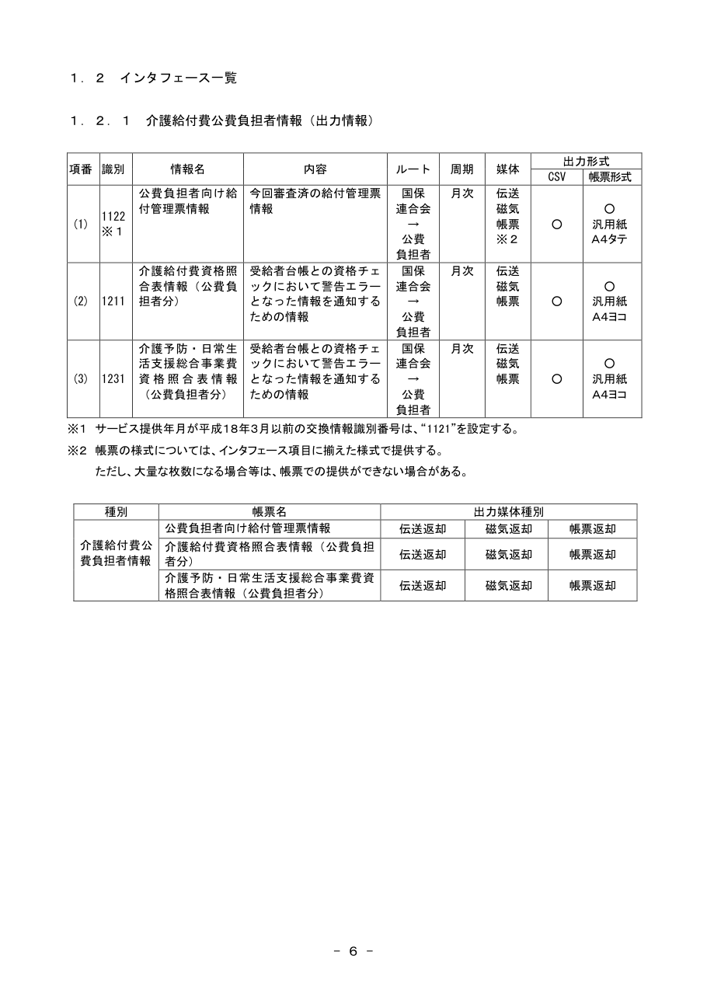
| 項番 | 項目名 | 属性 | 桁数 | 内容 | 必須 | 備考 | その他の列 |
|---|---|---|---|---|---|---|---|
| (1) | 公費負担者向け給付管理票情報 | 今回審査済の給付管理票情報 | 識別: 1122 ※1 ルート: 国保連合会→公費負担者 周期: 月次 媒体: 伝送 磁気 帳票 ※2 出力形式 > CSV: ○ 出力形式 > 帳票形式: ○ 汎用紙 A4タテ | ||||
| (2) | 介護給付費資格照合表情報（公費負担者分） | 受給者台帳との資格チェックにおいて警告エラーとなった情報を通知するための情報 | 識別: 1211 ルート: 国保連合会→公費負担者 周期: 月次 媒体: 伝送 磁気 帳票 出力形式 > CSV: ○ 出力形式 > 帳票形式: ○ 汎用紙 A4ヨコ | ||||
| (3) | 介護予防・日常生活支援総合事業費資格照合表情報（公費負担者分） | 受給者台帳との資格チェックにおいて警告エラーとなった情報を通知するための情報 | 識別: 1231 ルート: 国保連合会→公費負担者 周期: 月次 媒体: 伝送 磁気 帳票 出力形式 > CSV: ○ 出力形式 > 帳票形式: ○ 汎用紙 A4ヨコ |
| 項番 | 項目名 | 属性 | 桁数 | 内容 | 必須 | 備考 | その他の列 |
|---|---|---|---|---|---|---|---|
| 介護給付費公費負担者情報 > 公費負担者向け給付管理票情報 | 種別: － 出力媒体種別 > 伝送返却: 伝送返却 出力媒体種別 > 磁気返却: 磁気返却 出力媒体種別 > 帳票返却: 帳票返却 | ||||||
| 介護給付費公費負担者情報 > 介護給付費資格照合表情報（公費負担者分） | 種別: － 出力媒体種別 > 伝送返却: 伝送返却 出力媒体種別 > 磁気返却: 磁気返却 出力媒体種別 > 帳票返却: 帳票返却 | ||||||
| 介護給付費公費負担者情報 > 介護予防・日常生活支援総合事業費資格照合表情報（公費負担者分） | 種別: － 出力媒体種別 > 伝送返却: 伝送返却 出力媒体種別 > 磁気返却: 磁気返却 出力媒体種別 > 帳票返却: 帳票返却 |
| 項番 | 項目名 | 属性 | 桁数 | 内容 | 必須 | 備考 | その他の列 |
|---|---|---|---|---|---|---|---|
| (1) | 公費負担者向け給付管理票情報 | 今回審査済の給付管理票情報 | 識別: 1122 ※1 ルート: 国保連合会→公費負担者 周期: 月次 媒体: 伝送 磁気 帳票 ※2 出力形式 > CSV: ○ 出力形式 > 帳票形式: ○ 汎用紙 A4タテ | ||||
| (2) | 介護給付費資格照合表情報（公費負担者分） | 受給者台帳との資格チェックにおいて警告エラーとなった情報を通知するための情報 | 識別: 1211 ルート: 国保連合会→公費負担者 周期: 月次 媒体: 伝送 磁気 帳票 出力形式 > CSV: ○ 出力形式 > 帳票形式: ○ 汎用紙 A4ヨコ | ||||
| (3) | 介護予防・日常生活支援総合事業費資格照合表情報（公費負担者分） | 受給者台帳との資格チェックにおいて警告エラーとなった情報を通知するための情報 | 識別: 1231 ルート: 国保連合会→公費負担者 周期: 月次 媒体: 伝送 磁気 帳票 出力形式 > CSV: ○ 出力形式 > 帳票形式: ○ 汎用紙 A4ヨコ |
| 項番 | 項目名 | 属性 | 桁数 | 内容 | 必須 | 備考 | その他の列 |
|---|---|---|---|---|---|---|---|
| 介護給付費公費負担者情報 > 公費負担者向け給付管理票情報 | 種別: 介護給付費公費負担者情報 出力媒体種別: 伝送返却 磁気返却 帳票返却 | ||||||
| 介護給付費公費負担者情報 > 介護給付費資格照合表情報（公費負担者分） | 種別: 介護給付費公費負担者情報 出力媒体種別: 伝送返却 磁気返却 帳票返却 | ||||||
| 介護給付費公費負担者情報 > 介護予防・日常生活支援総合事業費資格照合表情報（公費負担者分） | 種別: 介護給付費公費負担者情報 出力媒体種別: 伝送返却 磁気返却 帳票返却 |
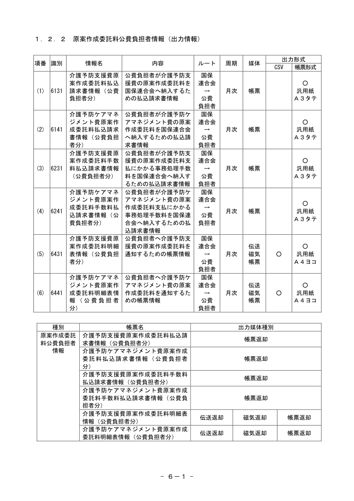
| 項番 | 項目名 | 属性 | 桁数 | 内容 | 必須 | 備考 | その他の列 |
|---|---|---|---|---|---|---|---|
| (1) | 介護予防支援費原案作成委託料払込請求書情報（公費負担者分） | 公費負担者が介護予防支援費の原案作成委託料を国保連合会へ納入するための払込請求書情報 | 識別: 6131 ルート: 国保連合会→公費負担者 周期: 月次 媒体: 帳票 出力形式 > CSV: － 出力形式 > 帳票形式: ○ 汎用紙 Ａ３タテ | ||||
| (2) | 介護予防ケアマネジメント費原案作成委託料払込請求書情報（公費負担者分） | 公費負担者が介護予防ケアマネジメント費の原案作成委託料を国保連合会へ納入するための払込請求書情報 | 識別: 6141 ルート: 国保連合会→公費負担者 周期: 月次 媒体: 帳票 出力形式 > CSV: － 出力形式 > 帳票形式: ○ 汎用紙 Ａ３タテ | ||||
| (3) | 介護予防支援費原案作成委託料手数料払込請求書情報（公費負担者分） | 公費負担者が介護予防支援費の原案作成委託料支払にかかる事務処理手数料を国保連合会へ納入するための払込請求書情報 | 識別: 6231 ルート: 国保連合会→公費負担者 周期: 月次 媒体: 帳票 出力形式 > CSV: － 出力形式 > 帳票形式: ○ 汎用紙 Ａ３タテ | ||||
| (4) | 介護予防ケアマネジメント費原案作成委託料手数料払込請求書情報（公費負担者分） | 公費負担者が介護予防ケアマネジメント費の原案作成委託料支払にかかる事務処理手数料を国保連合会へ納入するための払込請求書情報 | 識別: 6241 ルート: 国保連合会→公費負担者 周期: 月次 媒体: 帳票 出力形式 > CSV: － 出力形式 > 帳票形式: ○ 汎用紙 Ａ３タテ | ||||
| (5) | 介護予防支援費原案作成委託料明細表情報（公費負担者分） | 公費負担者へ介護予防支援費の原案作成委託料を通知するための帳票情報 | 識別: 6431 ルート: 国保連合会→公費負担者 周期: 月次 媒体: 伝送磁気帳票 出力形式 > CSV: ○ 出力形式 > 帳票形式: ○ 汎用紙 Ａ４ヨコ | ||||
| (6) | 介護予防ケアマネジメント費原案作成委託料明細表情報（公費負担者分） | 公費負担者へ介護予防ケアマネジメント費の原案作成委託料を通知するための帳票情報 | 識別: 6441 ルート: 国保連合会→公費負担者 周期: 月次 媒体: 伝送磁気帳票 出力形式 > CSV: ○ 出力形式 > 帳票形式: ○ 汎用紙 Ａ４ヨコ |
| 項番 | 項目名 | 属性 | 桁数 | 内容 | 必須 | 備考 | その他の列 |
|---|---|---|---|---|---|---|---|
| 介護予防支援費原案作成委託料払込請求書情報（公費負担者分） | 種別: 原案作成委託料公費負担者情報 出力媒体種別: 帳票返却 | ||||||
| 介護予防ケアマネジメント費原案作成委託料払込請求書情報（公費負担者分） | 種別: 原案作成委託料公費負担者情報 出力媒体種別: 帳票返却 | ||||||
| 介護予防支援費原作成委託料手数料払込請求書情報（公費負担者分） | 種別: 原案作成委託料公費負担者情報 出力媒体種別: 帳票返却 | ||||||
| 介護予防ケアマネジメント費原案作成委託料手数料払込請求書情報（公費負担者分） | 種別: 原案作成委託料公費負担者情報 出力媒体種別: 帳票返却 | ||||||
| 介護予防支援費原案作成委託料明細表情報（公費負担者分） | 種別: 原案作成委託料公費負担者情報 出力媒体種別: 伝送返却 / 磁気返却 / 帳票返却 | ||||||
| 介護予防ケアマネジメント費原案作成委託料明細表情報（公費負担者分） | 種別: 原案作成委託料公費負担者情報 出力媒体種別: 伝送返却 / 磁気返却 / 帳票返却 |
| 項番 | 項目名 | 属性 | 桁数 | 内容 | 必須 | 備考 | その他の列 |
|---|---|---|---|---|---|---|---|
| (1) | 介護予防支援費原案作成委託料払込請求書情報（公費負担者分） | 公費負担者が介護予防支援費の原案作成委託料を国保連合会へ納入するための払込請求書情報 | 識別: 6131 ルート: 国保連合会 → 公費負担者 周期: 月次 媒体: 帳票 出力形式 > CSV: － 出力形式 > 帳票形式: ○ 汎用紙 Ａ３タテ | ||||
| (2) | 介護予防ケアマネジメント費原案作成委託料払込請求書情報（公費負担者分） | 公費負担者が介護予防ケアマネジメント費の原案作成委託料を国保連合会へ納入するための払込請求書情報 | 識別: 6141 ルート: 国保連合会 → 公費負担者 周期: 月次 媒体: 帳票 出力形式 > CSV: － 出力形式 > 帳票形式: ○ 汎用紙 Ａ３タテ | ||||
| (3) | 介護予防支援費原案作成委託料手数料払込請求書情報（公費負担者分） | 公費負担者が介護予防支援費の原案作成委託料支払にかかる事務処理手数料を国保連合会へ納入するための払込請求書情報 | 識別: 6231 ルート: 国保連合会 → 公費負担者 周期: 月次 媒体: 帳票 出力形式 > CSV: － 出力形式 > 帳票形式: ○ 汎用紙 Ａ３タテ | ||||
| (4) | 介護予防ケアマネジメント費原案作成委託料手数料払込請求書情報（公費負担者分） | 公費負担者が介護予防ケアマネジメント費の原案作成委託料支払にかかる事務処理手数料を国保連合会へ納入するための払込請求書情報 | 識別: 6241 ルート: 国保連合会 → 公費負担者 周期: 月次 媒体: 帳票 出力形式 > CSV: － 出力形式 > 帳票形式: ○ 汎用紙 Ａ３タテ | ||||
| (5) | 介護予防支援費原案作成委託料明細表情報（公費負担者分） | 公費負担者へ介護予防支援費の原案作成委託料を通知するための帳票情報 | 識別: 6431 ルート: 国保連合会 → 公費負担者 周期: 月次 媒体: 伝送 磁気 帳票 出力形式 > CSV: ○ 出力形式 > 帳票形式: ○ 汎用紙 Ａ４ヨコ | ||||
| (6) | 介護予防ケアマネジメント費原案作成委託料明細表情報（公費負担者分） | 公費負担者へ介護予防ケアマネジメント費の原案作成委託料を通知するための帳票情報 | 識別: 6441 ルート: 国保連合会 → 公費負担者 周期: 月次 媒体: 伝送 磁気 帳票 出力形式 > CSV: ○ 出力形式 > 帳票形式: ○ 汎用紙 Ａ４ヨコ |
| 項番 | 項目名 | 属性 | 桁数 | 内容 | 必須 | 備考 | その他の列 |
|---|---|---|---|---|---|---|---|
| 介護予防支援費原案作成委託料払込請求書情報（公費負担者分） | 帳票返却 | 種別: 原案作成委託料公費負担者情報 | |||||
| 介護予防ケアマネジメント費原案作成委託料払込請求書情報（公費負担者分） | 帳票返却 | 種別: 原案作成委託料公費負担者情報 | |||||
| 介護予防支援費原案作成委託料手数料払込請求書情報（公費負担者分） | 帳票返却 | 種別: 原案作成委託料公費負担者情報 | |||||
| 介護予防ケアマネジメント費原案作成委託料手数料払込請求書情報（公費負担者分） | 帳票返却 | 種別: 原案作成委託料公費負担者情報 | |||||
| 介護予防支援費原案作成委託料明細表情報（公費負担者分） | 伝送返却 磁気返却 帳票返却 | 種別: 原案作成委託料公費負担者情報 | |||||
| 介護予防ケアマネジメント費原案作成委託料明細表情報（公費負担者分） | 伝送返却 磁気返却 帳票返却 | 種別: 原案作成委託料公費負担者情報 |
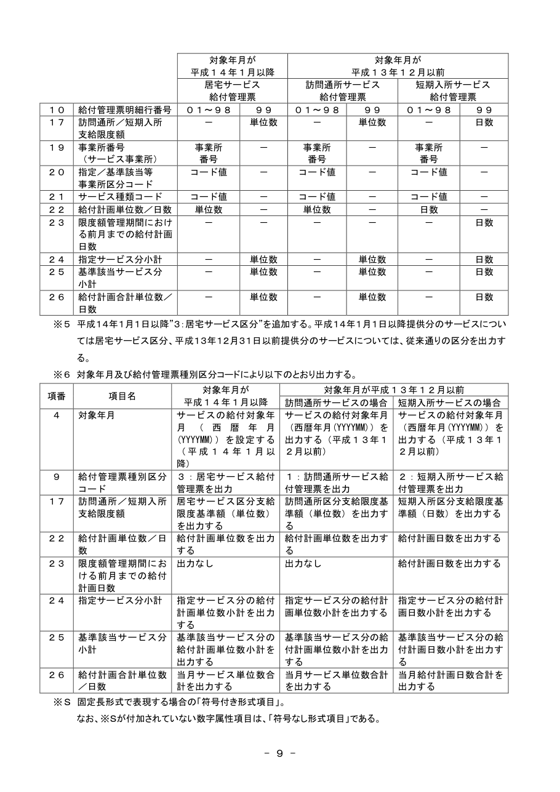
| 項番 | 項目名 | 属性 | 桁数 | 内容 | 必須 | 備考 | その他の列 |
|---|---|---|---|---|---|---|---|
| １０ | 給付管理票明細行番号 | 対象年月が平成14年1月以降 > 居宅サービス給付管理票: 01～98 対象年月が平成14年1月以降 > 居宅サービス給付管理票: 99 対象年月が平成13年12月以前 > 訪問通所サービス給付管理票: 01～98 対象年月が平成13年12月以前 > 訪問通所サービス給付管理票: 99 対象年月が平成13年12月以前 > 短期入所サービス給付管理票: 01～98 対象年月が平成13年12月以前 > 短期入所サービス給付管理票: 99 | |||||
| １７ | 訪問通所／短期入所支給限度額 | 対象年月が平成14年1月以降 > 居宅サービス給付管理票: － 対象年月が平成14年1月以降 > 居宅サービス給付管理票: 単位数 対象年月が平成13年12月以前 > 訪問通所サービス給付管理票: － 対象年月が平成13年12月以前 > 訪問通所サービス給付管理票: 単位数 対象年月が平成13年12月以前 > 短期入所サービス給付管理票: － 対象年月が平成13年12月以前 > 短期入所サービス給付管理票: 日数 | |||||
| １９ | 事業所番号（サービス事業所） | 対象年月が平成14年1月以降 > 居宅サービス給付管理票: 事業所番号 対象年月が平成14年1月以降 > 居宅サービス給付管理票: － 対象年月が平成13年12月以前 > 訪問通所サービス給付管理票: 事業所番号 対象年月が平成13年12月以前 > 訪問通所サービス給付管理票: － 対象年月が平成13年12月以前 > 短期入所サービス給付管理票: 事業所番号 対象年月が平成13年12月以前 > 短期入所サービス給付管理票: － | |||||
| ２０ | 指定／基準該当事業所区分コード | 対象年月が平成14年1月以降 > 居宅サービス給付管理票: コード値 対象年月が平成14年1月以降 > 居宅サービス給付管理票: － 対象年月が平成13年12月以前 > 訪問通所サービス給付管理票: コード値 対象年月が平成13年12月以前 > 訪問通所サービス給付管理票: － 対象年月が平成13年12月以前 > 短期入所サービス給付管理票: コード値 対象年月が平成13年12月以前 > 短期入所サービス給付管理票: － | |||||
| ２１ | サービス種類コード | 対象年月が平成14年1月以降 > 居宅サービス給付管理票: コード値 対象年月が平成14年1月以降 > 居宅サービス給付管理票: － 対象年月が平成13年12月以前 > 訪問通所サービス給付管理票: コード値 対象年月が平成13年12月以前 > 訪問通所サービス給付管理票: － 対象年月が平成13年12月以前 > 短期入所サービス給付管理票: コード値 対象年月が平成13年12月以前 > 短期入所サービス給付管理票: － | |||||
| ２２ | 給付計画単位数／日数 | 対象年月が平成14年1月以降 > 居宅サービス給付管理票: 単位数 対象年月が平成14年1月以降 > 居宅サービス給付管理票: － 対象年月が平成13年12月以前 > 訪問通所サービス給付管理票: 単位数 対象年月が平成13年12月以前 > 訪問通所サービス給付管理票: － 対象年月が平成13年12月以前 > 短期入所サービス給付管理票: 日数 対象年月が平成13年12月以前 > 短期入所サービス給付管理票: － | |||||
| ２３ | 限度額管理期間における前月までの給付計画日数 | 対象年月が平成14年1月以降 > 居宅サービス給付管理票: － 対象年月が平成14年1月以降 > 居宅サービス給付管理票: － 対象年月が平成13年12月以前 > 訪問通所サービス給付管理票: － 対象年月が平成13年12月以前 > 訪問通所サービス給付管理票: － 対象年月が平成13年12月以前 > 短期入所サービス給付管理票: － 対象年月が平成13年12月以前 > 短期入所サービス給付管理票: 日数 | |||||
| ２４ | 指定サービス分小計 | 対象年月が平成14年1月以降 > 居宅サービス給付管理票: － 対象年月が平成14年1月以降 > 居宅サービス給付管理票: 単位数 対象年月が平成13年12月以前 > 訪問通所サービス給付管理票: － 対象年月が平成13年12月以前 > 訪問通所サービス給付管理票: 単位数 対象年月が平成13年12月以前 > 短期入所サービス給付管理票: － 対象年月が平成13年12月以前 > 短期入所サービス給付管理票: 日数 | |||||
| ２５ | 基準該当サービス分小計 | 対象年月が平成14年1月以降 > 居宅サービス給付管理票: － 対象年月が平成14年1月以降 > 居宅サービス給付管理票: 単位数 対象年月が平成13年12月以前 > 訪問通所サービス給付管理票: － 対象年月が平成13年12月以前 > 訪問通所サービス給付管理票: 単位数 対象年月が平成13年12月以前 > 短期入所サービス給付管理票: － 対象年月が平成13年12月以前 > 短期入所サービス給付管理票: 日数 | |||||
| ２６ | 給付計画合計単位数／日数 | 対象年月が平成14年1月以降 > 居宅サービス給付管理票: － 対象年月が平成14年1月以降 > 居宅サービス給付管理票: 単位数 対象年月が平成13年12月以前 > 訪問通所サービス給付管理票: － 対象年月が平成13年12月以前 > 訪問通所サービス給付管理票: 単位数 対象年月が平成13年12月以前 > 短期入所サービス給付管理票: － 対象年月が平成13年12月以前 > 短期入所サービス給付管理票: 日数 |
| 項番 | 項目名 | 属性 | 桁数 | 内容 | 必須 | 備考 | その他の列 |
|---|---|---|---|---|---|---|---|
| ４ | 対象年月 | 対象年月が平成14年1月以降: サービスの給付対象年月（西暦年月(YYYYMM)）を設定する（平成14年1月以降） 対象年月が平成13年12月以前 > 訪問通所サービスの場合: サービスの給付対象年月（西暦年月(YYYYMM)）を出力する（平成13年12月以前） 対象年月が平成13年12月以前 > 短期入所サービスの場合: サービスの給付対象年月（西暦年月(YYYYMM)）を出力する（平成13年12月以前） | |||||
| ９ | 給付管理票種別区分コード | 対象年月が平成14年1月以降: 3：居宅サービス給付管理票を出力 対象年月が平成13年12月以前 > 訪問通所サービスの場合: 1：訪問通所サービス給付管理票を出力 対象年月が平成13年12月以前 > 短期入所サービスの場合: 2：短期入所サービス給付管理票を出力 | |||||
| １７ | 訪問通所／短期入所支給限度額 | 対象年月が平成14年1月以降: 居宅サービス区分支給限度基準額（単位数）を出力する 対象年月が平成13年12月以前 > 訪問通所サービスの場合: 訪問通所区分支給限度基準額（単位数）を出力する 対象年月が平成13年12月以前 > 短期入所サービスの場合: 短期入所区分支給限度基準額（日数）を出力する | |||||
| ２２ | 給付計画単位数／日数 | 対象年月が平成14年1月以降: 給付計画単位数を出力する 対象年月が平成13年12月以前 > 訪問通所サービスの場合: 給付計画単位数を出力する 対象年月が平成13年12月以前 > 短期入所サービスの場合: 給付計画日数を出力する | |||||
| ２３ | 限度額管理期間における前月までの給付計画日数 | 対象年月が平成14年1月以降: 出力なし 対象年月が平成13年12月以前 > 訪問通所サービスの場合: 出力なし 対象年月が平成13年12月以前 > 短期入所サービスの場合: 給付計画日数を出力する | |||||
| ２４ | 指定サービス分小計 | 対象年月が平成14年1月以降: 指定サービス分の給付計画単位数小計を出力する 対象年月が平成13年12月以前 > 訪問通所サービスの場合: 指定サービス分の給付計画単位数小計を出力する 対象年月が平成13年12月以前 > 短期入所サービスの場合: 指定サービス分の給付計画日数小計を出力する | |||||
| ２５ | 基準該当サービス分小計 | 対象年月が平成14年1月以降: 基準該当サービス分の給付計画単位数小計を出力する 対象年月が平成13年12月以前 > 訪問通所サービスの場合: 基準該当サービス分の給付計画単位数小計を出力する 対象年月が平成13年12月以前 > 短期入所サービスの場合: 基準該当サービス分の給付計画日数小計を出力する | |||||
| ２６ | 給付計画合計単位数／日数 | 対象年月が平成14年1月以降: 当月サービス単位数合計を出力する 対象年月が平成13年12月以前 > 訪問通所サービスの場合: 当月サービス単位数合計を出力する 対象年月が平成13年12月以前 > 短期入所サービスの場合: 当月給付計画日数合計を出力する |
| 項番 | 項目名 | 属性 | 桁数 | 内容 | 必須 | 備考 | その他の列 |
|---|---|---|---|---|---|---|---|
| １０ | 給付管理票明細行番号 | 対象年月が平成１４年１月以降 > 居宅サービス給付管理票 > ０１～９８: ０１～９８ 対象年月が平成１４年１月以降 > 居宅サービス給付管理票 > ９９: ９９ 対象年月が平成１３年１２月以前 > 訪問通所サービス給付管理票 > ０１～９８: ０１～９８ 対象年月が平成１３年１２月以前 > 訪問通所サービス給付管理票 > ９９: ９９ 対象年月が平成１３年１２月以前 > 短期入所サービス給付管理票 > ０１～９８: ０１～９８ 対象年月が平成１３年１２月以前 > 短期入所サービス給付管理票 > ９９: ９９ | |||||
| １７ | 訪問通所／短期入所支給限度額 | 対象年月が平成１４年１月以降 > 居宅サービス給付管理票 > ０１～９８: － 対象年月が平成１４年１月以降 > 居宅サービス給付管理票 > ９９: 単位数 対象年月が平成１３年１２月以前 > 訪問通所サービス給付管理票 > ０１～９８: － 対象年月が平成１３年１２月以前 > 訪問通所サービス給付管理票 > ９９: 単位数 対象年月が平成１３年１２月以前 > 短期入所サービス給付管理票 > ０１～９８: － 対象年月が平成１３年１２月以前 > 短期入所サービス給付管理票 > ９９: 日数 | |||||
| １９ | 事業所番号（サービス事業所） | 対象年月が平成１４年１月以降 > 居宅サービス給付管理票 > ０１～９８: 事業所番号 対象年月が平成１４年１月以降 > 居宅サービス給付管理票 > ９９: － 対象年月が平成１３年１２月以前 > 訪問通所サービス給付管理票 > ０１～９８: 事業所番号 対象年月が平成１３年１２月以前 > 訪問通所サービス給付管理票 > ９９: － 対象年月が平成１３年１２月以前 > 短期入所サービス給付管理票 > ０１～９８: 事業所番号 対象年月が平成１３年１２月以前 > 短期入所サービス給付管理票 > ９９: － | |||||
| ２０ | 指定／基準該当等事業所区分コード | 対象年月が平成１４年１月以降 > 居宅サービス給付管理票 > ０１～９８: コード値 対象年月が平成１４年１月以降 > 居宅サービス給付管理票 > ９９: － 対象年月が平成１３年１２月以前 > 訪問通所サービス給付管理票 > ０１～９８: コード値 対象年月が平成１３年１２月以前 > 訪問通所サービス給付管理票 > ９９: － 対象年月が平成１３年１２月以前 > 短期入所サービス給付管理票 > ０１～９８: コード値 対象年月が平成１３年１２月以前 > 短期入所サービス給付管理票 > ９９: － | |||||
| ２１ | サービス種類コード | 対象年月が平成１４年１月以降 > 居宅サービス給付管理票 > ０１～９８: コード値 対象年月が平成１４年１月以降 > 居宅サービス給付管理票 > ９９: － 対象年月が平成１３年１２月以前 > 訪問通所サービス給付管理票 > ０１～９８: コード値 対象年月が平成１３年１２月以前 > 訪問通所サービス給付管理票 > ９９: － 対象年月が平成１３年１２月以前 > 短期入所サービス給付管理票 > ０１～９８: コード値 対象年月が平成１３年１２月以前 > 短期入所サービス給付管理票 > ９９: － | |||||
| ２２ | 給付計画単位数／日数 | 対象年月が平成１４年１月以降 > 居宅サービス給付管理票 > ０１～９８: 単位数 対象年月が平成１４年１月以降 > 居宅サービス給付管理票 > ９９: － 対象年月が平成１３年１２月以前 > 訪問通所サービス給付管理票 > ０１～９８: 単位数 対象年月が平成１３年１２月以前 > 訪問通所サービス給付管理票 > ９９: － 対象年月が平成１３年１２月以前 > 短期入所サービス給付管理票 > ０１～９８: 日数 対象年月が平成１３年１２月以前 > 短期入所サービス給付管理票 > ９９: － | |||||
| ２３ | 限度額管理期間における前月までの給付計画日数 | 対象年月が平成１４年１月以降 > 居宅サービス給付管理票 > ０１～９８: － 対象年月が平成１４年１月以降 > 居宅サービス給付管理票 > ９９: － 対象年月が平成１３年１２月以前 > 訪問通所サービス給付管理票 > ０１～９８: － 対象年月が平成１３年１２月以前 > 訪問通所サービス給付管理票 > ９９: － 対象年月が平成１３年１２月以前 > 短期入所サービス給付管理票 > ０１～９８: － 対象年月が平成１３年１２月以前 > 短期入所サービス給付管理票 > ９９: 日数 | |||||
| ２４ | 指定サービス分小計 | 対象年月が平成１４年１月以降 > 居宅サービス給付管理票 > ０１～９８: － 対象年月が平成１４年１月以降 > 居宅サービス給付管理票 > ９９: 単位数 対象年月が平成１３年１２月以前 > 訪問通所サービス給付管理票 > ０１～９８: － 対象年月が平成１３年１２月以前 > 訪問通所サービス給付管理票 > ９９: 単位数 対象年月が平成１３年１２月以前 > 短期入所サービス給付管理票 > ０１～９８: － 対象年月が平成１３年１２月以前 > 短期入所サービス給付管理票 > ９９: 日数 | |||||
| ２５ | 基準該当サービス分小計 | 対象年月が平成１４年１月以降 > 居宅サービス給付管理票 > ０１～９８: － 対象年月が平成１４年１月以降 > 居宅サービス給付管理票 > ９９: 単位数 対象年月が平成１３年１２月以前 > 訪問通所サービス給付管理票 > ０１～９８: － 対象年月が平成１３年１２月以前 > 訪問通所サービス給付管理票 > ９９: 単位数 対象年月が平成１３年１２月以前 > 短期入所サービス給付管理票 > ０１～９８: － 対象年月が平成１３年１２月以前 > 短期入所サービス給付管理票 > ９９: 日数 | |||||
| ２６ | 給付計画合計単位数／日数 | 対象年月が平成１４年１月以降 > 居宅サービス給付管理票 > ０１～９８: － 対象年月が平成１４年１月以降 > 居宅サービス給付管理票 > ９９: 単位数 対象年月が平成１３年１２月以前 > 訪問通所サービス給付管理票 > ０１～９８: － 対象年月が平成１３年１２月以前 > 訪問通所サービス給付管理票 > ９９: 単位数 対象年月が平成１３年１２月以前 > 短期入所サービス給付管理票 > ０１～９８: － 対象年月が平成１３年１２月以前 > 短期入所サービス給付管理票 > ９９: 日数 |
| 項番 | 項目名 | 属性 | 桁数 | 内容 | 必須 | 備考 | その他の列 |
|---|---|---|---|---|---|---|---|
| ４ | 対象年月 | 対象年月が平成１４年１月以降: サービスの給付対象年月（西暦年月(YYYYMM)）を設定する（平成１４年１月以降） 対象年月が平成１３年１２月以前 > 訪問通所サービスの場合: サービスの給付対象年月（西暦年月(YYYYMM)）を出力する（平成１３年１２月以前） 対象年月が平成１３年１２月以前 > 短期入所サービスの場合: サービスの給付対象年月（西暦年月(YYYYMM)）を出力する（平成１３年１２月以前） | |||||
| ９ | 給付管理票種別区分コード | 対象年月が平成１４年１月以降: ３：居宅サービス給付管理票を出力 対象年月が平成１３年１２月以前 > 訪問通所サービスの場合: １：訪問通所サービス給付管理票を出力 対象年月が平成１３年１２月以前 > 短期入所サービスの場合: ２：短期入所サービス給付管理票を出力 | |||||
| １７ | 訪問通所／短期入所支給限度額 | 対象年月が平成１４年１月以降: 居宅サービス区分支給限度基準額（単位数）を出力する 対象年月が平成１３年１２月以前 > 訪問通所サービスの場合: 訪問通所区分支給限度基準額（単位数）を出力する 対象年月が平成１３年１２月以前 > 短期入所サービスの場合: 短期入所区分支給限度基準額（日数）を出力する | |||||
| ２２ | 給付計画単位数／日数 | 対象年月が平成１４年１月以降: 給付計画単位数を出力する 対象年月が平成１３年１２月以前 > 訪問通所サービスの場合: 給付計画単位数を出力する 対象年月が平成１３年１２月以前 > 短期入所サービスの場合: 給付計画日数を出力する | |||||
| ２３ | 限度額管理期間における前月までの給付計画日数 | 対象年月が平成１４年１月以降: 出力なし 対象年月が平成１３年１２月以前 > 訪問通所サービスの場合: 出力なし 対象年月が平成１３年１２月以前 > 短期入所サービスの場合: 給付計画日数を出力する | |||||
| ２４ | 指定サービス分小計 | 対象年月が平成１４年１月以降: 指定サービス分の給付計画単位数小計を出力する 対象年月が平成１３年１２月以前 > 訪問通所サービスの場合: 指定サービス分の給付計画単位数小計を出力する 対象年月が平成１３年１２月以前 > 短期入所サービスの場合: 指定サービス分の給付計画日数小計を出力する | |||||
| ２５ | 基準該当サービス分小計 | 対象年月が平成１４年１月以降: 基準該当サービス分の給付計画単位数小計を出力する 対象年月が平成１３年１２月以前 > 訪問通所サービスの場合: 基準該当サービス分の給付計画単位数小計を出力する 対象年月が平成１３年１２月以前 > 短期入所サービスの場合: 基準該当サービス分の給付計画日数小計を出力する | |||||
| ２６ | 給付計画合計単位数／日数 | 対象年月が平成１４年１月以降: 当月サービス単位数合計を出力する 対象年月が平成１３年１２月以前 > 訪問通所サービスの場合: 当月サービス単位数合計を出力する 対象年月が平成１３年１２月以前 > 短期入所サービスの場合: 当月給付計画日数合計を出力する |
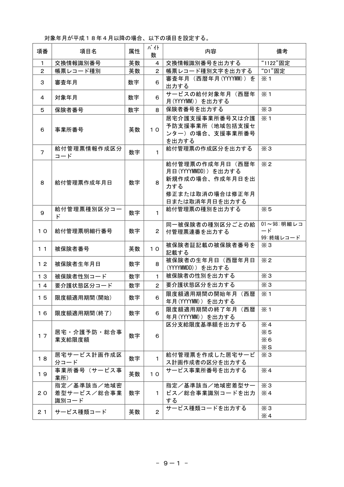
| 項番 | 項目名 | 属性 | 桁数 | 内容 | 必須 | 備考 | その他の列 |
|---|---|---|---|---|---|---|---|
| １ | 交換情報識別番号 | 英数 | 4 | 交換情報識別番号を出力する | "1122"固定 | ||
| ２ | 帳票レコード種別 | 英数 | 2 | 帳票レコード種別文字を出力する | "D1"固定 | ||
| ３ | 審査年月 | 数字 | 6 | 審査年月（西暦年月(YYYYMM)）を出力する | ※１ | ||
| ４ | 対象年月 | 数字 | 6 | サービスの給付対象年月（西暦年月(YYYYMM)）を出力する | ※１ | ||
| ５ | 保険者番号 | 数字 | 8 | 保険者番号を出力する | ※３ | ||
| ６ | 事業所番号 | 英数 | 10 | 居宅介護支援事業所番号又は介護予防支援事業所（地域包括支援センター）の場合、支援事業所番号を出力する | ※１ | ||
| ７ | 給付管理票情報作成区分コード | 数字 | 1 | 給付管理票の作成区分を出力する | ※３ | ||
| ８ | 給付管理票作成年月日 | 数字 | 8 | 給付管理票の作成年月日（西暦年月日(YYYYMMDD)）を出力する 新規作成の場合、作成年月日を出力する 修正または取消の場合は修正年月日または取消年月日を出力する | ※２ | ||
| ９ | 給付管理票種別区分コード | 数字 | 1 | 給付管理票の種別を出力する | ※５ | ||
| １０ | 給付管理票明細行番号 | 数字 | 2 | 同一被保険者の種別区分ごとの給付管理票連番を出力する | 01～98:明細レコード 99:終端レコード | ||
| １１ | 被保険者番号 | 英数 | 10 | 被保険者証記載の被保険者番号を記載する | ※３ | ||
| １２ | 被保険者生年月日 | 数字 | 8 | 被保険者の生年月日（西暦年月日(YYYYMMDD)）を出力する | ※２ | ||
| １３ | 被保険者性別コード | 数字 | 1 | 被保険者の性別を出力する | ※３ | ||
| １４ | 要介護状態区分コード | 数字 | 2 | 要介護状態区分を出力する | ※３ | ||
| １５ | 限度額適用期間(開始) | 数字 | 6 | 限度額適用期間の開始年月（西暦年月(YYYYMM)）を出力する | ※１ | ||
| １６ | 限度額適用期間(終了) | 数字 | 6 | 限度額適用期間の終了年月（西暦年月(YYYYMM)）を出力する | ※１ | ||
| １７ | 居宅・介護予防・総合事業支給限度額 | 数字 | 6 | 区分支給限度基準額を出力する | ※４ ※５ ※６ ※S | ||
| １８ | 居宅サービス計画作成区分コード | 数字 | 1 | 給付管理票を作成した居宅サービス計画作成者の区分を出力する | ※３ | ||
| １９ | 事業所番号（サービス事業所） | 英数 | 10 | サービス事業所番号を出力する | ※４ | ||
| ２０ | 指定／基準該当／地域密着型サービス／総合事業識別コード | 数字 | 1 | 指定／基準該当／地域密着型サービス／総合事業識別コードを出力する | ※３ ※４ | ||
| ２１ | サービス種類コード | 英数 | 2 | サービス種類コードを出力する | ※３ ※４ |
| 項番 | 項目名 | 属性 | 桁数 | 内容 | 必須 | 備考 | その他の列 |
|---|---|---|---|---|---|---|---|
| 1 | 交換情報識別番号 | 英数 | 4 | 交換情報識別番号を出力する | “1122”固定 | ||
| 2 | 帳票レコード種別 | 英数 | 2 | 帳票レコード種別文字を出力する | “D1”固定 | ||
| 3 | 審査年月 | 数字 | 6 | 審査年月（西暦年月(YYYYMM)）を出力する | ※1 | ||
| 4 | 対象年月 | 数字 | 6 | サービスの給付対象年月（西暦年月(YYYYMM)）を出力する | ※1 | ||
| 5 | 保険者番号 | 数字 | 8 | 保険者番号を出力する | ※3 | ||
| 6 | 事業所番号 | 英数 | 10 | 居宅介護支援事業所番号又は介護予防支援事業所（地域包括支援センター）の場合、支援事業所番号を出力する | ※1 | ||
| 7 | 給付管理票情報作成区分コード | 数字 | 1 | 給付管理票の作成区分を出力する | ※3 | ||
| 8 | 給付管理票作成年月日 | 数字 | 8 | 給付管理票の作成年月日（西暦年月日(YYYYMMDD)）を出力する 新規作成の場合、作成年月日を出力する 修正または取消の場合は修正年月日または取消年月日を出力する | ※2 | ||
| 9 | 給付管理票種別区分コード | 数字 | 1 | 給付管理票の種別を出力する | ※5 | ||
| 10 | 給付管理票明細行番号 | 数字 | 2 | 同一被保険者の種別区分ごとの給付管理票連番を出力する | 01～98:明細レコード 99:終端レコード | ||
| 11 | 被保険者番号 | 英数 | 10 | 被保険者証記載の被保険者番号を記載する | ※3 | ||
| 12 | 被保険者生年月日 | 数字 | 8 | 被保険者の生年月日（西暦年月日(YYYYMMDD)）を出力する | ※2 | ||
| 13 | 被保険者性別コード | 数字 | 1 | 被保険者の性別を出力する | ※3 | ||
| 14 | 要介護状態区分コード | 数字 | 2 | 要介護状態区分を出力する | ※3 | ||
| 15 | 限度額適用期間(開始) | 数字 | 6 | 限度額適用期間の開始年月（西暦年月(YYYYMM)）を出力する | ※1 | ||
| 16 | 限度額適用期間(終了) | 数字 | 6 | 限度額適用期間の終了年月（西暦年月(YYYYMM)）を出力する | ※1 | ||
| 17 | 居宅・介護予防・総合事業支給限度額 | 数字 | 6 | 区分支給限度基準額を出力する | ※4 ※5 ※6 ※S | ||
| 18 | 居宅サービス計画作成区分コード | 数字 | 1 | 給付管理票を作成した居宅サービス計画作成者の区分を出力する | ※3 | ||
| 19 | 事業所番号（サービス事業所） | 英数 | 10 | サービス事業所番号を出力する | ※4 | ||
| 20 | 指定／基準該当／地域密着型サービス／総合事業識別コード | 数字 | 1 | 指定／基準該当／地域密着型サービス／総合事業識別コードを出力する | ※3 ※4 | ||
| 21 | サービス種類コード | 英数 | 2 | サービス種類コードを出力する | ※3 ※4 |
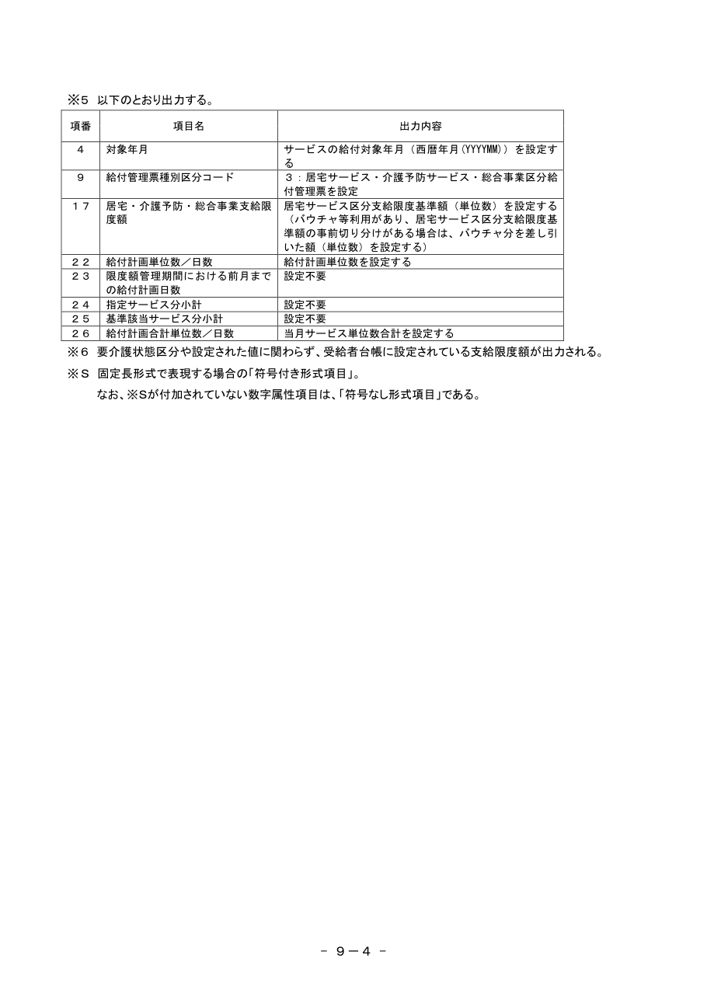
| 項番 | 項目名 | 属性 | 桁数 | 内容 | 必須 | 備考 | その他の列 |
|---|---|---|---|---|---|---|---|
| ４ | 対象年月 | サービスの給付対象年月（西暦年月(YYYYMM)）を設定する | |||||
| ９ | 給付管理票種別区分コード | ３：居宅サービス・介護予防サービス・総合事業区分給付管理票を設定 | |||||
| １７ | 居宅・介護予防・総合事業支給限度額 | 居宅サービス区分支給限度基準額（単位数）を設定する（バウチャ等利用があり、居宅サービス区分支給限度基準額の事前切り分けがある場合は、バウチャ分を差し引いた額（単位数）を設定する） | |||||
| ２２ | 給付計画単位数／日数 | 給付計画単位数を設定する | |||||
| ２３ | 限度額管理期間における前月までの給付計画日数 | 設定不要 | |||||
| ２４ | 指定サービス分小計 | 設定不要 | |||||
| ２５ | 基準該当サービス分小計 | 設定不要 | |||||
| ２６ | 給付計画合計単位数／日数 | 当月サービス単位数合計を設定する |
| 項番 | 項目名 | 属性 | 桁数 | 内容 | 必須 | 備考 | その他の列 |
|---|---|---|---|---|---|---|---|
| ４ | 対象年月 | サービスの給付対象年月（西暦年月(YYYYMM)）を設定する | |||||
| ９ | 給付管理票種別区分コード | ３：居宅サービス・介護予防サービス・総合事業区分給付管理票を設定 | |||||
| １７ | 居宅・介護予防・総合事業支給限度額 | 居宅サービス区分支給限度基準額（単位数）を設定する（バウチャ等利用があり、居宅サービス区分支給限度基準額の事前切り分けがある場合は、バウチャ分を差し引いた額（単位数）を設定する） | |||||
| ２２ | 給付計画単位数／日数 | 給付計画単位数を設定する | |||||
| ２３ | 限度額管理期間における前月までの給付計画日数 | 設定不要 | |||||
| ２４ | 指定サービス分小計 | 設定不要 | |||||
| ２５ | 基準該当サービス分小計 | 設定不要 | |||||
| ２６ | 給付計画合計単位数／日数 | 当月サービス単位数合計を設定する |
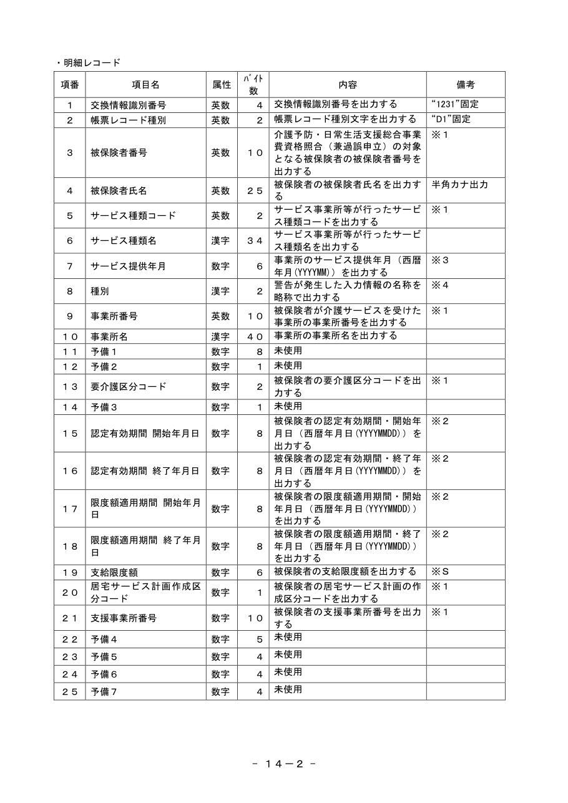
| 項番 | 項目名 | 属性 | 桁数 | 内容 | 必須 | 備考 | その他の列 |
|---|---|---|---|---|---|---|---|
| １ | 交換情報識別番号 | 英数 | 4 | 交換情報識別番号を出力する | "1231"固定 | ||
| ２ | 帳票レコード種別 | 英数 | 2 | 帳票レコード種別文字を出力する | "D1"固定 | ||
| ３ | 被保険者番号 | 英数 | 10 | 介護予防・日常生活支援総合事業費資格照合（兼過誤申立）の対象となる被保険者の被保険者番号を出力する | ※１ | ||
| ４ | 被保険者氏名 | 英数 | 25 | 被保険者の被保険者氏名を出力する | 半角カナ出力 | ||
| ５ | サービス種類コード | 英数 | 2 | サービス事業所等が行ったサービス種類コードを出力する | ※１ | ||
| ６ | サービス種類名 | 漢字 | 34 | サービス事業所等が行ったサービス種類名を出力する | |||
| ７ | サービス提供年月 | 数字 | 6 | 事業所のサービス提供年月（西暦年月(YYYYMM)）を出力する | ※３ | ||
| ８ | 種別 | 漢字 | 2 | 警告が発生した入力情報の名称を略称で出力する | ※４ | ||
| ９ | 事業所番号 | 英数 | 10 | 被保険者が介護サービスを受けた事業所の事業所番号を出力する | ※１ | ||
| １０ | 事業所名 | 漢字 | 40 | 事業所の事業所名を出力する | |||
| １１ | 予備１ | 数字 | 8 | 未使用 | |||
| １２ | 予備２ | 数字 | 1 | 未使用 | |||
| １３ | 要介護区分コード | 数字 | 2 | 被保険者の要介護区分コードを出力する | ※１ | ||
| １４ | 予備３ | 数字 | 1 | 未使用 | |||
| １５ | 認定有効期間 開始年月日 | 数字 | 8 | 被保険者の認定有効期間・開始年月日（西暦年月日(YYYYMMDD)）を出力する | ※２ | ||
| １６ | 認定有効期間 終了年月日 | 数字 | 8 | 被保険者の認定有効期間・終了年月日（西暦年月日(YYYYMMDD)）を出力する | ※２ | ||
| １７ | 限度額適用期間 開始年月日 | 数字 | 8 | 被保険者の限度額適用期間・開始年月日（西暦年月日(YYYYMMDD)）を出力する | ※２ | ||
| １８ | 限度額適用期間 終了年月日 | 数字 | 8 | 被保険者の限度額適用期間・終了年月日（西暦年月日(YYYYMMDD)）を出力する | ※２ | ||
| １９ | 支給限度額 | 数字 | 6 | 被保険者の支給限度額を出力する | ※S | ||
| ２０ | 居宅サービス計画作成区分コード | 数字 | 1 | 被保険者の居宅サービス計画の作成区分コードを出力する | ※１ | ||
| ２１ | 支援事業所番号 | 数字 | 10 | 被保険者の支援事業所番号を出力する | ※１ | ||
| ２２ | 予備４ | 数字 | 5 | 未使用 | |||
| ２３ | 予備５ | 数字 | 4 | 未使用 | |||
| ２４ | 予備６ | 数字 | 4 | 未使用 | |||
| ２５ | 予備７ | 数字 | 4 | 未使用 |
| 項番 | 項目名 | 属性 | 桁数 | 内容 | 必須 | 備考 | その他の列 |
|---|---|---|---|---|---|---|---|
| 1 | 交換情報識別番号 | 英数 | 4 | 交換情報識別番号を出力する | “1231”固定 | ||
| 2 | 帳票レコード種別 | 英数 | 2 | 帳票レコード種別文字を出力する | “D1”固定 | ||
| 3 | 被保険者番号 | 英数 | 10 | 介護予防・日常生活支援総合事業費資格照合（兼過誤申立）の対象となる被保険者の被保険者番号を出力する | ※1 | ||
| 4 | 被保険者氏名 | 英数 | 25 | 被保険者の被保険者氏名を出力する | 半角カナ出力 | ||
| 5 | サービス種類コード | 英数 | 2 | サービス事業所等が行ったサービス種類コードを出力する | ※1 | ||
| 6 | サービス種類名 | 漢字 | 34 | サービス事業所等が行ったサービス種類名を出力する | |||
| 7 | サービス提供年月 | 数字 | 6 | 事業所のサービス提供年月（西暦年月(YYYYMM)）を出力する | ※3 | ||
| 8 | 種別 | 漢字 | 2 | 警告が発生した入力情報の名称を略称で出力する | ※4 | ||
| 9 | 事業所番号 | 英数 | 10 | 被保険者が介護サービスを受けた事業所の事業所番号を出力する | ※1 | ||
| １０ | 事業所名 | 漢字 | 40 | 事業所の事業所名を出力する | |||
| １１ | 予備１ | 数字 | 8 | 未使用 | |||
| １２ | 予備２ | 数字 | 1 | 未使用 | |||
| １３ | 要介護区分コード | 数字 | 2 | 被保険者の要介護区分コードを出力する | ※1 | ||
| １４ | 予備３ | 数字 | 1 | 未使用 | |||
| １５ | 認定有効期間 開始年月日 | 数字 | 8 | 被保険者の認定有効期間・開始年月日（西暦年月日(YYYYMMDD)）を出力する | ※2 | ||
| １６ | 認定有効期間 終了年月日 | 数字 | 8 | 被保険者の認定有効期間・終了年月日（西暦年月日(YYYYMMDD)）を出力する | ※2 | ||
| １７ | 限度額適用期間 開始年月日 | 数字 | 8 | 被保険者の限度額適用期間・開始年月日（西暦年月日(YYYYMMDD)）を出力する | ※2 | ||
| １８ | 限度額適用期間 終了年月日 | 数字 | 8 | 被保険者の限度額適用期間・終了年月日（西暦年月日(YYYYMMDD)）を出力する | ※2 | ||
| １９ | 支給限度額 | 数字 | 6 | 被保険者の支給限度額を出力する | ※S | ||
| ２０ | 居宅サービス計画作成区分コード | 数字 | 1 | 被保険者の居宅サービス計画の作成区分コードを出力する | ※1 | ||
| ２１ | 支援事業所番号 | 数字 | 10 | 被保険者の支援事業所番号を出力する | ※1 | ||
| ２２ | 予備４ | 数字 | 5 | 未使用 | |||
| ２３ | 予備５ | 数字 | 4 | 未使用 | |||
| ２４ | 予備６ | 数字 | 4 | 未使用 | |||
| ２５ | 予備７ | 数字 | 4 | 未使用 |
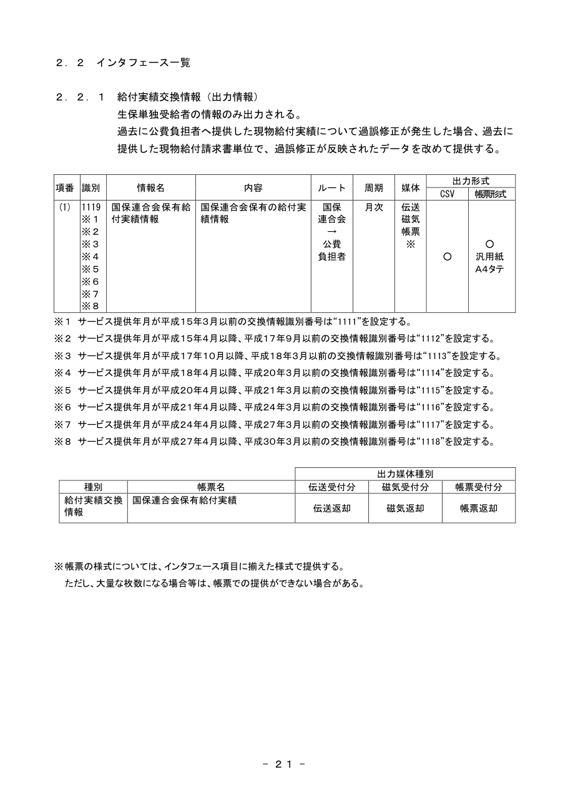
| 項番 | 項目名 | 属性 | 桁数 | 内容 | 必須 | 備考 | その他の列 |
|---|---|---|---|---|---|---|---|
| (1) | 国保連合会保有給付実績情報 | 国保連合会保有の給付実績情報 | 識別: 1119 ※1 ※2 ※3 ※4 ※5 ※6 ※7 ※8 ルート: 国保連合会→公費負担者 周期: 月次 媒体: 伝送 磁気 帳票 ※ 出力形式 > CSV: ○ 出力形式 > 帳票形式: ○ 汎用紙 A4タテ |
| 項番 | 項目名 | 属性 | 桁数 | 内容 | 必須 | 備考 | その他の列 |
|---|---|---|---|---|---|---|---|
| 給付実績交換情報 | 帳票名: 国保連合会保有給付実績 出力媒体種別 > 伝送受付分: 伝送返却 出力媒体種別 > 磁気受付分: 磁気返却 出力媒体種別 > 帳票受付分: 帳票返却 |
| 項番 | 項目名 | 属性 | 桁数 | 内容 | 必須 | 備考 | その他の列 |
|---|---|---|---|---|---|---|---|
| (1) | 国保連合会保有給付実績情報 | 国保連合会保有の給付実績情報 | 識別: 1119 ※1 ※2 ※3 ※4 ※5 ※6 ※7 ※8 ルート: 国保連合会 → 公費負担者 周期: 月次 媒体: 伝送 磁気 帳票 ※ 出力形式 > CSV: ○ 出力形式 > 帳票形式: ○ 汎用紙 A4タテ |
| 項番 | 項目名 | 属性 | 桁数 | 内容 | 必須 | 備考 | その他の列 |
|---|---|---|---|---|---|---|---|
| 国保連合会保有給付実績 | 種別: 給付実績交換情報 出力媒体種別 > 伝送受付分: 伝送返却 出力媒体種別 > 磁気受付分: 磁気返却 出力媒体種別 > 帳票受付分: 帳票返却 |
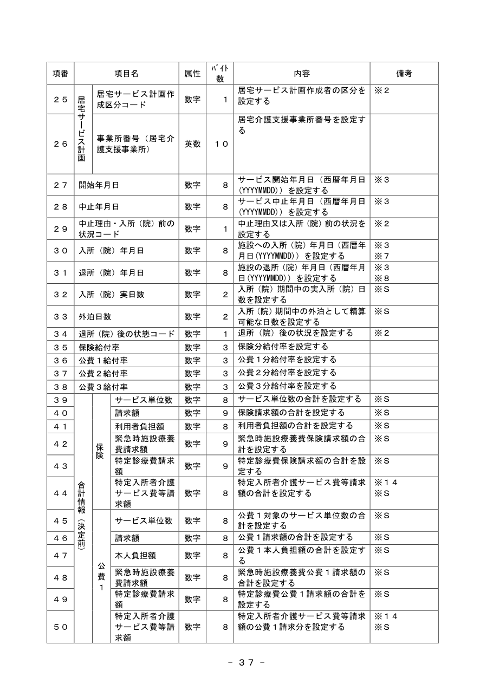
| 項番 | 項目名 | 属性 | 桁数 | 内容 | 必須 | 備考 | その他の列 |
|---|---|---|---|---|---|---|---|
| ２５ | 居宅サービス計画 > 居宅サービス計画作成区分コード | 数字 | 1 | 居宅サービス計画作成者の区分を設定する | ※２ | ||
| ２６ | 居宅サービス計画 > 事業所番号（居宅介護支援事業所） | 英数 | 10 | 居宅介護支援事業所番号を設定する | |||
| ２７ | 開始年月日 | 数字 | 8 | サービス開始年月日（西暦年月日(YYYYMMDD)）を設定する | ※３ | ||
| ２８ | 中止年月日 | 数字 | 8 | サービス中止年月日（西暦年月日(YYYYMMDD)）を設定する | ※３ | ||
| ２９ | 中止理由・入所（院）前の状況コード | 数字 | 1 | 中止理由又は入所（院）前の状況を設定する | ※２ | ||
| ３０ | 入所（院）年月日 | 数字 | 8 | 施設への入所（院）年月日（西暦年月日(YYYYMMDD)）を設定する | ※３ ※７ | ||
| ３１ | 退所（院）年月日 | 数字 | 8 | 施設の退所（院）年月日（西暦年月日(YYYYMMDD)）を設定する | ※３ ※８ | ||
| ３２ | 入所（院）実日数 | 数字 | 2 | 入所（院）期間中の実入所（院）日数を設定する | ※Ｓ | ||
| ３３ | 外泊日数 | 数字 | 2 | 入所（院）期間中の外泊として精算可能な日数を設定する | ※Ｓ | ||
| ３４ | 退所（院）後の状態コード | 数字 | 1 | 退所（院）後の状況を設定する | ※２ | ||
| ３５ | 保険給付率 | 数字 | 3 | 保険分給付率を設定する | |||
| ３６ | 公費１給付率 | 数字 | 3 | 公費１分給付率を設定する | |||
| ３７ | 公費２給付率 | 数字 | 3 | 公費２分給付率を設定する | |||
| ３８ | 公費３給付率 | 数字 | 3 | 公費３分給付率を設定する | |||
| ３９ | 合計情報（決定前） > 保険 > サービス単位数 | 数字 | 8 | サービス単位数の合計を設定する | ※Ｓ | ||
| ４０ | 合計情報（決定前） > 保険 > 請求額 | 数字 | 9 | 保険請求額の合計を設定する | ※Ｓ | ||
| ４１ | 合計情報（決定前） > 保険 > 利用者負担額 | 数字 | 8 | 利用者負担額の合計を設定する | ※Ｓ | ||
| ４２ | 合計情報（決定前） > 保険 > 緊急時施設療養費請求額 | 数字 | 9 | 緊急時施設療養費保険請求額の合計を設定する | ※Ｓ | ||
| ４３ | 合計情報（決定前） > 保険 > 特定診療費請求額 | 数字 | 9 | 特定診療費保険請求額の合計を設定する | ※Ｓ | ||
| ４４ | 合計情報（決定前） > 保険 > 特定入所者介護サービス費等請求額 | 数字 | 8 | 特定入所者介護サービス費等請求額の合計を設定する | ※１４ ※Ｓ | ||
| ４５ | 合計情報（決定前） > 公費１ > サービス単位数 | 数字 | 8 | 公費１対象のサービス単位数の合計を設定する | ※Ｓ | ||
| ４６ | 合計情報（決定前） > 公費１ > 請求額 | 数字 | 8 | 公費１請求額の合計を設定する | ※Ｓ | ||
| ４７ | 合計情報（決定前） > 公費１ > 本人負担額 | 数字 | 8 | 公費１本人負担額の合計を設定する | ※Ｓ | ||
| ４８ | 合計情報（決定前） > 公費１ > 緊急時施設療養費請求額 | 数字 | 8 | 緊急時施設療養費公費１請求額の合計を設定する | ※Ｓ | ||
| ４９ | 合計情報（決定前） > 公費１ > 特定診療費請求額 | 数字 | 8 | 特定診療費公費１請求額の合計を設定する | ※Ｓ | ||
| ５０ | 合計情報（決定前） > 公費１ > 特定入所者介護サービス費等請求額 | 数字 | 8 | 特定入所者介護サービス費等請求額の公費１請求分を設定する | ※１４ ※Ｓ |
| 項番 | 項目名 | 属性 | 桁数 | 内容 | 必須 | 備考 | その他の列 |
|---|---|---|---|---|---|---|---|
| ２５ | 居宅サービス計画 > 居宅サービス計画作成区分コード | 数字 | 1 | 居宅サービス計画作成者の区分を設定する | ※２ | ||
| ２６ | 居宅サービス計画 > 事業所番号（居宅介護支援事業所） | 英数 | 10 | 居宅介護支援事業所番号を設定する | |||
| ２７ | 開始年月日 | 数字 | 8 | サービス開始年月日（西暦年月日(YYYYMMDD)）を設定する | ※３ | ||
| ２８ | 中止年月日 | 数字 | 8 | サービス中止年月日（西暦年月日(YYYYMMDD)）を設定する | ※３ | ||
| ２９ | 中止理由・入所（院）前の状況コード | 数字 | 1 | 中止理由又は入所（院）前の状況を設定する | ※２ | ||
| ３０ | 入所（院）年月日 | 数字 | 8 | 施設への入所（院）年月日（西暦年月日(YYYYMMDD)）を設定する | ※３ ※７ | ||
| ３１ | 退所（院）年月日 | 数字 | 8 | 施設の退所（院）年月日（西暦年月日(YYYYMMDD)）を設定する | ※３ ※８ | ||
| ３２ | 入所（院）実日数 | 数字 | 2 | 入所（院）期間中の実入所（院）日数を設定する | ※Ｓ | ||
| ３３ | 外泊日数 | 数字 | 2 | 入所（院）期間中の外泊として精算可能な日数を設定する | ※Ｓ | ||
| ３４ | 退所（院）後の状態コード | 数字 | 1 | 退所（院）後の状況を設定する | ※２ | ||
| ３５ | 保険給付率 | 数字 | 3 | 保険分給付率を設定する | |||
| ３６ | 公費１給付率 | 数字 | 3 | 公費１分給付率を設定する | |||
| ３７ | 公費２給付率 | 数字 | 3 | 公費２分給付率を設定する | |||
| ３８ | 公費３給付率 | 数字 | 3 | 公費３分給付率を設定する | |||
| ３９ | 合計情報（決定前） > 保険 > サービス単位数 | 数字 | 8 | サービス単位数の合計を設定する | ※Ｓ | ||
| ４０ | 合計情報（決定前） > 保険 > 請求額 | 数字 | 9 | 保険請求額の合計を設定する | ※Ｓ | ||
| ４１ | 合計情報（決定前） > 保険 > 利用者負担額 | 数字 | 8 | 利用者負担額の合計を設定する | ※Ｓ | ||
| ４２ | 合計情報（決定前） > 保険 > 緊急時施設療養費請求額 | 数字 | 9 | 緊急時施設療養費保険請求額の合計を設定する | ※Ｓ | ||
| ４３ | 合計情報（決定前） > 保険 > 特定診療費請求額 | 数字 | 9 | 特定診療費保険請求額の合計を設定する | ※Ｓ | ||
| ４４ | 合計情報（決定前） > 保険 > 特定入所者介護サービス費等請求額 | 数字 | 8 | 特定入所者介護サービス費等請求額の合計を設定する | ※１４ ※Ｓ | ||
| ４５ | 合計情報（決定前） > 公費1 > サービス単位数 | 数字 | 8 | 公費１対象のサービス単位数の合計を設定する | ※Ｓ | ||
| ４６ | 合計情報（決定前） > 公費1 > 請求額 | 数字 | 8 | 公費１請求額の合計を設定する | ※Ｓ | ||
| ４７ | 合計情報（決定前） > 公費1 > 本人負担額 | 数字 | 8 | 公費１本人負担額の合計を設定する | ※Ｓ | ||
| ４８ | 合計情報（決定前） > 公費1 > 緊急時施設療養費請求額 | 数字 | 8 | 緊急時施設療養費公費１請求額の合計を設定する | ※Ｓ | ||
| ４９ | 合計情報（決定前） > 公費1 > 特定診療費請求額 | 数字 | 8 | 特定診療費公費１請求額の合計を設定する | ※Ｓ | ||
| ５０ | 合計情報（決定前） > 公費1 > 特定入所者介護サービス費等請求額 | 数字 | 8 | 特定入所者介護サービス費等請求額の公費１請求分を設定する | ※１４ ※Ｓ |
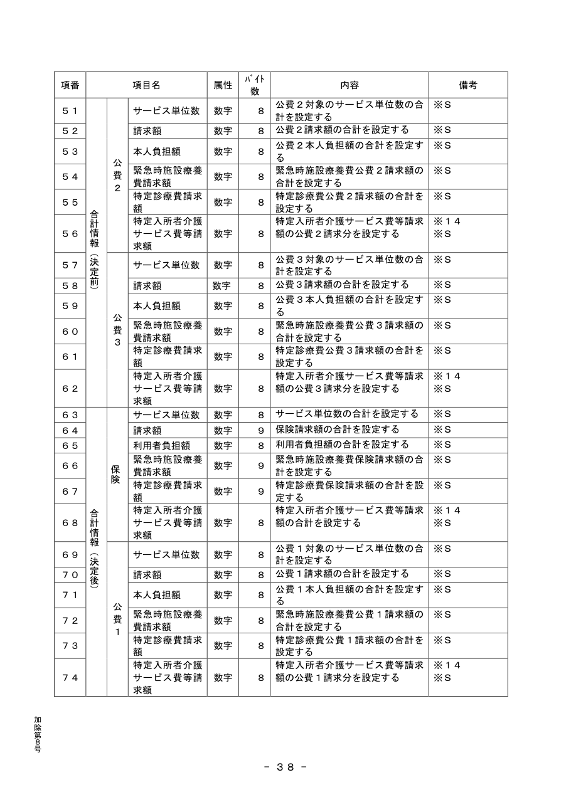
| 項番 | 項目名 | 属性 | 桁数 | 内容 | 必須 | 備考 | その他の列 |
|---|---|---|---|---|---|---|---|
| ５１ | 合計情報（決定前） > 公費２ > サービス単位数 | 数字 | 8 | 公費２対象のサービス単位数の合計を設定する | ※Ｓ | ||
| ５２ | 合計情報（決定前） > 公費２ > 請求額 | 数字 | 8 | 公費２請求額の合計を設定する | ※Ｓ | ||
| ５３ | 合計情報（決定前） > 公費２ > 本人負担額 | 数字 | 8 | 公費２本人負担額の合計を設定する | ※Ｓ | ||
| ５４ | 合計情報（決定前） > 公費２ > 緊急時施設療養費請求額 | 数字 | 8 | 緊急時施設療養費公費２請求額の合計を設定する | ※Ｓ | ||
| ５５ | 合計情報（決定前） > 公費２ > 特定診療費請求額 | 数字 | 8 | 特定診療費公費２請求額の合計を設定する | ※Ｓ | ||
| ５６ | 合計情報（決定前） > 公費２ > 特定入所者介護サービス費等請求額 | 数字 | 8 | 特定入所者介護サービス費等請求額の公費２請求分を設定する | ※１４ ※Ｓ | ||
| ５７ | 合計情報（決定前） > 公費３ > サービス単位数 | 数字 | 8 | 公費３対象のサービス単位数の合計を設定する | ※Ｓ | ||
| ５８ | 合計情報（決定前） > 公費３ > 請求額 | 数字 | 8 | 公費３請求額の合計を設定する | ※Ｓ | ||
| ５９ | 合計情報（決定前） > 公費３ > 本人負担額 | 数字 | 8 | 公費３本人負担額の合計を設定する | ※Ｓ | ||
| ６０ | 合計情報（決定前） > 公費３ > 緊急時施設療養費請求額 | 数字 | 8 | 緊急時施設療養費公費３請求額の合計を設定する | ※Ｓ | ||
| ６１ | 合計情報（決定前） > 公費３ > 特定診療費請求額 | 数字 | 8 | 特定診療費公費３請求額の合計を設定する | ※Ｓ | ||
| ６２ | 合計情報（決定前） > 公費３ > 特定入所者介護サービス費等請求額 | 数字 | 8 | 特定入所者介護サービス費等請求額の公費３請求分を設定する | ※１４ ※Ｓ | ||
| ６３ | 合計情報（決定後） > 保険 > サービス単位数 | 数字 | 8 | サービス単位数の合計を設定する | ※Ｓ | ||
| ６４ | 合計情報（決定後） > 保険 > 請求額 | 数字 | 9 | 保険請求額の合計を設定する | ※Ｓ | ||
| ６５ | 合計情報（決定後） > 保険 > 利用者負担額 | 数字 | 8 | 利用者負担額の合計を設定する | ※Ｓ | ||
| ６６ | 合計情報（決定後） > 保険 > 緊急時施設療養費請求額 | 数字 | 9 | 緊急時施設療養費保険請求額の合計を設定する | ※Ｓ | ||
| ６７ | 合計情報（決定後） > 保険 > 特定診療費請求額 | 数字 | 9 | 特定診療費保険請求額の合計を設定する | ※Ｓ | ||
| ６８ | 合計情報（決定後） > 保険 > 特定入所者介護サービス費等請求額 | 数字 | 8 | 特定入所者介護サービス費等請求額の合計を設定する | ※１４ ※Ｓ | ||
| ６９ | 合計情報（決定後） > 公費１ > サービス単位数 | 数字 | 8 | 公費１対象のサービス単位数の合計を設定する | ※Ｓ | ||
| ７０ | 合計情報（決定後） > 公費１ > 請求額 | 数字 | 8 | 公費１請求額の合計を設定する | ※Ｓ | ||
| ７１ | 合計情報（決定後） > 公費１ > 本人負担額 | 数字 | 8 | 公費１本人負担額の合計を設定する | ※Ｓ | ||
| ７２ | 合計情報（決定後） > 公費１ > 緊急時施設療養費請求額 | 数字 | 8 | 緊急時施設療養費公費１請求額の合計を設定する | ※Ｓ | ||
| ７３ | 合計情報（決定後） > 公費１ > 特定診療費請求額 | 数字 | 8 | 特定診療費公費１請求額の合計を設定する | ※Ｓ | ||
| ７４ | 合計情報（決定後） > 公費１ > 特定入所者介護サービス費等請求額 | 数字 | 8 | 特定入所者介護サービス費等請求額の公費１請求分を設定する | ※１４ ※Ｓ |
| 項番 | 項目名 | 属性 | 桁数 | 内容 | 必須 | 備考 | その他の列 |
|---|---|---|---|---|---|---|---|
| ５１ | 合計情報（決定前） > 公費2 > サービス単位数 | 数字 | 8 | 公費２対象のサービス単位数の合計を設定する | ※Ｓ | ||
| ５２ | 合計情報（決定前） > 公費2 > 請求額 | 数字 | 8 | 公費２請求額の合計を設定する | ※Ｓ | ||
| ５３ | 合計情報（決定前） > 公費2 > 本人負担額 | 数字 | 8 | 公費２本人負担額の合計を設定する | ※Ｓ | ||
| ５４ | 合計情報（決定前） > 公費2 > 緊急時施設療養費請求額 | 数字 | 8 | 緊急時施設療養費公費２請求額の合計を設定する | ※Ｓ | ||
| ５５ | 合計情報（決定前） > 公費2 > 特定診療費請求額 | 数字 | 8 | 特定診療費公費２請求額の合計を設定する | ※Ｓ | ||
| ５６ | 合計情報（決定前） > 公費2 > 特定入所者介護サービス費等請求額 | 数字 | 8 | 特定入所者介護サービス費等請求額の公費２請求分を設定する | ※１４ ※Ｓ | ||
| ５７ | 合計情報（決定前） > 公費3 > サービス単位数 | 数字 | 8 | 公費３対象のサービス単位数の合計を設定する | ※Ｓ | ||
| ５８ | 合計情報（決定前） > 公費3 > 請求額 | 数字 | 8 | 公費３請求額の合計を設定する | ※Ｓ | ||
| ５９ | 合計情報（決定前） > 公費3 > 本人負担額 | 数字 | 8 | 公費３本人負担額の合計を設定する | ※Ｓ | ||
| ６０ | 合計情報（決定前） > 公費3 > 緊急時施設療養費請求額 | 数字 | 8 | 緊急時施設療養費公費３請求額の合計を設定する | ※Ｓ | ||
| ６１ | 合計情報（決定前） > 公費3 > 特定診療費請求額 | 数字 | 8 | 特定診療費公費３請求額の合計を設定する | ※Ｓ | ||
| ６２ | 合計情報（決定前） > 公費3 > 特定入所者介護サービス費等請求額 | 数字 | 8 | 特定入所者介護サービス費等請求額の公費３請求分を設定する | ※１４ ※Ｓ | ||
| ６３ | 合計情報（決定後） > 保険 > サービス単位数 | 数字 | 8 | サービス単位数の合計を設定する | ※Ｓ | ||
| ６４ | 合計情報（決定後） > 保険 > 請求額 | 数字 | 9 | 保険請求額の合計を設定する | ※Ｓ | ||
| ６５ | 合計情報（決定後） > 保険 > 利用者負担額 | 数字 | 8 | 利用者負担額の合計を設定する | ※Ｓ | ||
| ６６ | 合計情報（決定後） > 保険 > 緊急時施設療養費請求額 | 数字 | 9 | 緊急時施設療養費保険請求額の合計を設定する | ※Ｓ | ||
| ６７ | 合計情報（決定後） > 保険 > 特定診療費請求額 | 数字 | 9 | 特定診療費保険請求額の合計を設定する | ※Ｓ | ||
| ６８ | 合計情報（決定後） > 保険 > 特定入所者介護サービス費等請求額 | 数字 | 8 | 特定入所者介護サービス費等請求額の合計を設定する | ※１４ ※Ｓ | ||
| ６９ | 合計情報（決定後） > 公費1 > サービス単位数 | 数字 | 8 | 公費１対象のサービス単位数の合計を設定する | ※Ｓ | ||
| ７０ | 合計情報（決定後） > 公費1 > 請求額 | 数字 | 8 | 公費１請求額の合計を設定する | ※Ｓ | ||
| ７１ | 合計情報（決定後） > 公費1 > 本人負担額 | 数字 | 8 | 公費１本人負担額の合計を設定する | ※Ｓ | ||
| ７２ | 合計情報（決定後） > 公費1 > 緊急時施設療養費請求額 | 数字 | 8 | 緊急時施設療養費公費１請求額の合計を設定する | ※Ｓ | ||
| ７３ | 合計情報（決定後） > 公費1 > 特定診療費請求額 | 数字 | 8 | 特定診療費公費１請求額の合計を設定する | ※Ｓ | ||
| ７４ | 合計情報（決定後） > 公費1 > 特定入所者介護サービス費等請求額 | 数字 | 8 | 特定入所者介護サービス費等請求額の公費１請求分を設定する | ※１４ ※Ｓ |
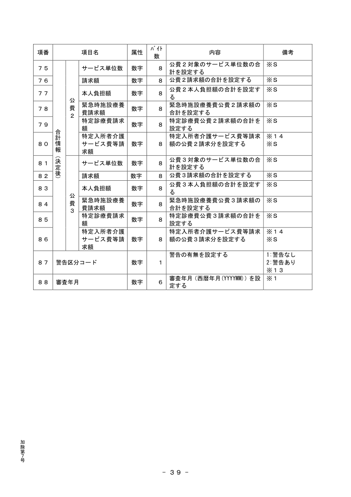
| 項番 | 項目名 | 属性 | 桁数 | 内容 | 必須 | 備考 | その他の列 |
|---|---|---|---|---|---|---|---|
| ７５ | 合計情報（決定後） > 公費２ > サービス単位数 | 数字 | 8 | 公費２対象のサービス単位数の合計を設定する | ※Ｓ | ||
| ７６ | 合計情報（決定後） > 公費２ > 請求額 | 数字 | 8 | 公費２請求額の合計を設定する | ※Ｓ | ||
| ７７ | 合計情報（決定後） > 公費２ > 本人負担額 | 数字 | 8 | 公費２本人負担額の合計を設定する | ※Ｓ | ||
| ７８ | 合計情報（決定後） > 公費２ > 緊急時施設療養費請求額 | 数字 | 8 | 緊急時施設療養費公費２請求額の合計を設定する | ※Ｓ | ||
| ７９ | 合計情報（決定後） > 公費２ > 特定診療費請求額 | 数字 | 8 | 特定診療費公費２請求額の合計を設定する | ※Ｓ | ||
| ８０ | 合計情報（決定後） > 公費２ > 特定入所者介護サービス費等請求額 | 数字 | 8 | 特定入所者介護サービス費等請求額の公費２請求分を設定する | ※１４ ※Ｓ | ||
| ８１ | 合計情報（決定後） > 公費３ > サービス単位数 | 数字 | 8 | 公費３対象のサービス単位数の合計を設定する | ※Ｓ | ||
| ８２ | 合計情報（決定後） > 公費３ > 請求額 | 数字 | 8 | 公費３請求額の合計を設定する | ※Ｓ | ||
| ８３ | 合計情報（決定後） > 公費３ > 本人負担額 | 数字 | 8 | 公費３本人負担額の合計を設定する | ※Ｓ | ||
| ８４ | 合計情報（決定後） > 公費３ > 緊急時施設療養費請求額 | 数字 | 8 | 緊急時施設療養費公費３請求額の合計を設定する | ※Ｓ | ||
| ８５ | 合計情報（決定後） > 公費３ > 特定診療費請求額 | 数字 | 8 | 特定診療費公費３請求額の合計を設定する | ※Ｓ | ||
| ８６ | 合計情報（決定後） > 公費３ > 特定入所者介護サービス費等請求額 | 数字 | 8 | 特定入所者介護サービス費等請求額の公費３請求分を設定する | ※１４ ※Ｓ | ||
| ８７ | 警告区分コード | 数字 | 1 | 警告の有無を設定する | 1:警告なし 2:警告あり ※１３ | ||
| ８８ | 審査年月 | 数字 | 6 | 審査年月（西暦年月(YYYYMM)）を設定する | ※１ |
| 項番 | 項目名 | 属性 | 桁数 | 内容 | 必須 | 備考 | その他の列 |
|---|---|---|---|---|---|---|---|
| 75 | 合計情報(決定後) > 公費2 > サービス単位数 | 数字 | 8 | 公費2対象のサービス単位数の合計を設定する | ※S | ||
| 76 | 合計情報(決定後) > 公費2 > 請求額 | 数字 | 8 | 公費2請求額の合計を設定する | ※S | ||
| 77 | 合計情報(決定後) > 公費2 > 本人負担額 | 数字 | 8 | 公費2本人負担額の合計を設定する | ※S | ||
| 78 | 合計情報(決定後) > 公費2 > 緊急時施設療養費請求額 | 数字 | 8 | 緊急時施設療養費公費2請求額の合計を設定する | ※S | ||
| 79 | 合計情報(決定後) > 公費2 > 特定診療費請求額 | 数字 | 8 | 特定診療費公費2請求額の合計を設定する | ※S | ||
| 80 | 合計情報(決定後) > 公費2 > 特定入所者介護サービス費等請求額 | 数字 | 8 | 特定入所者介護サービス費等請求額の公費2請求分を設定する | ※14 ※S | ||
| 81 | 合計情報(決定後) > 公費3 > サービス単位数 | 数字 | 8 | 公費3対象のサービス単位数の合計を設定する | ※S | ||
| 82 | 合計情報(決定後) > 公費3 > 請求額 | 数字 | 8 | 公費3請求額の合計を設定する | ※S | ||
| 83 | 合計情報(決定後) > 公費3 > 本人負担額 | 数字 | 8 | 公費3本人負担額の合計を設定する | ※S | ||
| 84 | 合計情報(決定後) > 公費3 > 緊急時施設療養費請求額 | 数字 | 8 | 緊急時施設療養費公費3請求額の合計を設定する | ※S | ||
| 85 | 合計情報(決定後) > 公費3 > 特定診療費請求額 | 数字 | 8 | 特定診療費公費3請求額の合計を設定する | ※S | ||
| 86 | 合計情報(決定後) > 公費3 > 特定入所者介護サービス費等請求額 | 数字 | 8 | 特定入所者介護サービス費等請求額の公費3請求分を設定する | ※14 ※S | ||
| 87 | 警告区分コード | 数字 | 1 | 警告の有無を設定する | 1:警告なし 2:警告あり ※13 | ||
| 88 | 審査年月 | 数字 | 6 | 審査年月(西暦年月(YYYYMM))を設定する | ※1 |
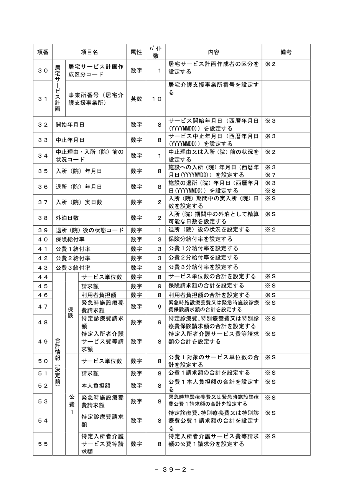
| 項番 | 項目名 | 属性 | 桁数 | 内容 | 必須 | 備考 | その他の列 |
|---|---|---|---|---|---|---|---|
| ３０ | 居宅サービス計画 > 居宅サービス計画作成区分コード | 数字 | 1 | 居宅サービス計画作成者の区分を設定する | ※2 | ||
| ３１ | 居宅サービス計画 > 事業所番号（居宅介護支援事業所） | 英数 | 10 | 居宅介護支援事業所番号を設定する | |||
| ３２ | 開始年月日 | 数字 | 8 | サービス開始年月日（西暦年月日（YYYYMMDD））を設定する | ※3 | ||
| ３３ | 中止年月日 | 数字 | 8 | サービス中止年月日（西暦年月日（YYYYMMDD））を設定する | ※3 | ||
| ３４ | 中止理由・入所（院）前の状況コード | 数字 | 1 | 中止理由又は入所（院）前の状況を設定する | ※2 | ||
| ３５ | 入所（院）年月日 | 数字 | 8 | 施設への入所（院）年月日（西暦年月日(YYYYMMDD)）を設定する | ※3 ※7 | ||
| ３６ | 退所（院）年月日 | 数字 | 8 | 施設の退所（院）年月日（西暦年月日(YYYYMMDD)）を設定する | ※3 ※8 | ||
| ３７ | 入所（院）実日数 | 数字 | 2 | 入所（院）期間中の実入所（院）日数を設定する | ※S | ||
| ３８ | 外泊日数 | 数字 | 2 | 入所（院）期間中の外泊として精算可能な日数を設定する | ※S | ||
| ３９ | 退所（院）後の状態コード | 数字 | 1 | 退所（院）後の状況を設定する | ※2 | ||
| ４０ | 保険給付率 | 数字 | 3 | 保険分給付率を設定する | |||
| ４１ | 公費１給付率 | 数字 | 3 | 公費１分給付率を設定する | |||
| ４２ | 公費２給付率 | 数字 | 3 | 公費２分給付率を設定する | |||
| ４３ | 公費３給付率 | 数字 | 3 | 公費３分給付率を設定する | |||
| ４４ | 合計情報（決定前） > 保険 > サービス単位数 | 数字 | 8 | サービス単位数の合計を設定する | ※S | ||
| ４５ | 合計情報（決定前） > 保険 > 請求額 | 数字 | 9 | 保険請求額の合計を設定する | ※S | ||
| ４６ | 合計情報（決定前） > 保険 > 利用者負担額 | 数字 | 8 | 利用者負担額の合計を設定する | ※S | ||
| ４７ | 合計情報（決定前） > 保険 > 緊急時施設療養費請求額 | 数字 | 9 | 緊急時施設療養費又は緊急時施設診療費保険請求額の合計を設定する | ※S | ||
| ４８ | 合計情報（決定前） > 保険 > 特定診療費請求額 | 数字 | 9 | 特定診療費、特別療養費又は特別診療費保険請求額の合計を設定する | ※S | ||
| ４９ | 合計情報（決定前） > 保険 > 特定入所者介護サービス費等請求額 | 数字 | 8 | 特定入所者介護サービス費等請求額の合計を設定する | ※S | ||
| ５０ | 合計情報（決定前） > 公費１ > サービス単位数 | 数字 | 8 | 公費１対象のサービス単位数の合計を設定する | ※S | ||
| ５１ | 合計情報（決定前） > 公費１ > 請求額 | 数字 | 8 | 公費１請求額の合計を設定する | ※S | ||
| ５２ | 合計情報（決定前） > 公費１ > 本人負担額 | 数字 | 8 | 公費１本人負担額の合計を設定する | ※S | ||
| ５３ | 合計情報（決定前） > 公費１ > 緊急時施設療養費請求額 | 数字 | 8 | 緊急時施設療養費又は緊急時施設診療費公費１請求額の合計を設定する | ※S | ||
| ５４ | 合計情報（決定前） > 公費１ > 特定診療費請求額 | 数字 | 8 | 特定診療費、特別療養費又は特別診療費公費１請求額の合計を設定する | ※S | ||
| ５５ | 合計情報（決定前） > 公費１ > 特定入所者介護サービス費等請求額 | 数字 | 8 | 特定入所者介護サービス費等請求額の公費１請求分を設定する | ※S |
| 項番 | 項目名 | 属性 | 桁数 | 内容 | 必須 | 備考 | その他の列 |
|---|---|---|---|---|---|---|---|
| ３０ | 居宅サービス計画 > 居宅サービス計画作成区分コード | 数字 | 1 | 居宅サービス計画作成者の区分を設定する | ※2 | ||
| ３１ | 居宅サービス計画 > 事業所番号（居宅介護支援事業所） | 英数 | 10 | 居宅介護支援事業所番号を設定する | |||
| ３２ | 開始年月日 | 数字 | 8 | サービス開始年月日（西暦年月日(YYYYMMDD)）を設定する | ※3 | ||
| ３３ | 中止年月日 | 数字 | 8 | サービス中止年月日（西暦年月日(YYYYMMDD)）を設定する | ※3 | ||
| ３４ | 中止理由・入所（院）前の状況コード | 数字 | 1 | 中止理由又は入所（院）前の状況を設定する | ※2 | ||
| ３５ | 入所（院）年月日 | 数字 | 8 | 施設への入所（院）年月日（西暦年月日(YYYYMMDD)）を設定する | ※3 ※7 | ||
| ３６ | 退所（院）年月日 | 数字 | 8 | 施設の退所（院）年月日（西暦年月日(YYYYMMDD)）を設定する | ※3 ※8 | ||
| ３７ | 入所（院）実日数 | 数字 | 2 | 入所（院）期間中の実入所（院）日数を設定する | ※S | ||
| ３８ | 外泊日数 | 数字 | 2 | 入所（院）期間中の外泊として精算可能な日数を設定する | ※S | ||
| ３９ | 退所（院）後の状態コード | 数字 | 1 | 退所（院）後の状況を設定する | ※2 | ||
| ４０ | 保険給付率 | 数字 | 3 | 保険分給付率を設定する | |||
| ４１ | 公費１給付率 | 数字 | 3 | 公費１分給付率を設定する | |||
| ４２ | 公費２給付率 | 数字 | 3 | 公費２分給付率を設定する | |||
| ４３ | 公費３給付率 | 数字 | 3 | 公費３分給付率を設定する | |||
| ４４ | 合計情報（決定前） > 保険 > サービス単位数 | 数字 | 8 | サービス単位数の合計を設定する | ※S | ||
| ４５ | 合計情報（決定前） > 保険 > 請求額 | 数字 | 9 | 保険請求額の合計を設定する | ※S | ||
| ４６ | 合計情報（決定前） > 保険 > 利用者負担額 | 数字 | 8 | 利用者負担額の合計を設定する | ※S | ||
| ４７ | 合計情報（決定前） > 保険 > 緊急時施設療養費請求額 | 数字 | 9 | 緊急時施設療養費又は緊急時施設診療費保険請求額の合計を設定する | ※S | ||
| ４８ | 合計情報（決定前） > 保険 > 特定診療費請求額 | 数字 | 9 | 特定診療費､特別療養費又は特別診療費保険請求額の合計を設定する | ※S | ||
| ４９ | 合計情報（決定前） > 保険 > 特定入所者介護サービス費等請求額 | 数字 | 8 | 特定入所者介護サービス費等請求額の合計を設定する | ※S | ||
| ５０ | 合計情報（決定前） > 公費1 > サービス単位数 | 数字 | 8 | 公費１対象のサービス単位数の合計を設定する | ※S | ||
| ５１ | 合計情報（決定前） > 公費1 > 請求額 | 数字 | 8 | 公費１請求額の合計を設定する | ※S | ||
| ５２ | 合計情報（決定前） > 公費1 > 本人負担額 | 数字 | 8 | 公費１本人負担額の合計を設定する | ※S | ||
| ５３ | 合計情報（決定前） > 公費1 > 緊急時施設療養費請求額 | 数字 | 8 | 緊急時施設療養費又は緊急時施設診療費公費１請求額の合計を設定する | ※S | ||
| ５４ | 合計情報（決定前） > 公費1 > 特定診療費請求額 | 数字 | 8 | 特定診療費､特別療養費又は特別診療費公費１請求額の合計を設定する | ※S | ||
| ５５ | 合計情報（決定前） > 公費1 > 特定入所者介護サービス費等請求額 | 数字 | 8 | 特定入所者介護サービス費等請求額の公費１請求分を設定する | ※S |
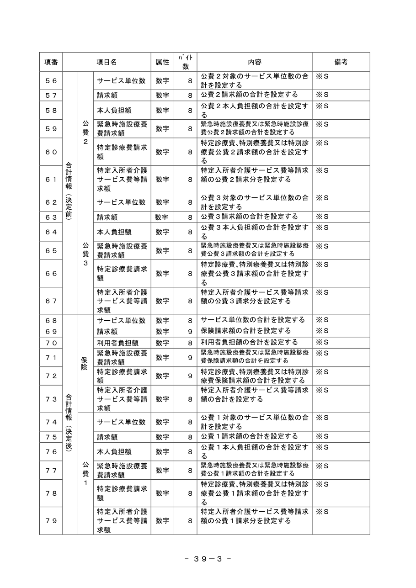
| 項番 | 項目名 | 属性 | 桁数 | 内容 | 必須 | 備考 | その他の列 |
|---|---|---|---|---|---|---|---|
| ５６ | 合計情報（決定前） > 公費２ > サービス単位数 | 数字 | 8 | 公費２対象のサービス単位数の合計を設定する | ※Ｓ | ||
| ５７ | 合計情報（決定前） > 公費２ > 請求額 | 数字 | 8 | 公費２請求額の合計を設定する | ※Ｓ | ||
| ５８ | 合計情報（決定前） > 公費２ > 本人負担額 | 数字 | 8 | 公費２本人負担額の合計を設定する | ※Ｓ | ||
| ５９ | 合計情報（決定前） > 公費２ > 緊急時施設療養費請求額 | 数字 | 8 | 緊急時施設療養費又は緊急時施設診療費公費２請求額の合計を設定する | ※Ｓ | ||
| ６０ | 合計情報（決定前） > 公費２ > 特定診療費請求額 | 数字 | 8 | 特定診療費、特別療養費又は特別診療費公費２請求額の合計を設定する | ※Ｓ | ||
| ６１ | 合計情報（決定前） > 公費２ > 特定入所者介護サービス費等請求額 | 数字 | 8 | 特定入所者介護サービス費等請求額の公費２請求分を設定する | ※Ｓ | ||
| ６２ | 合計情報（決定前） > 公費３ > サービス単位数 | 数字 | 8 | 公費３対象のサービス単位数の合計を設定する | ※Ｓ | ||
| ６３ | 合計情報（決定前） > 公費３ > 請求額 | 数字 | 8 | 公費３請求額の合計を設定する | ※Ｓ | ||
| ６４ | 合計情報（決定前） > 公費３ > 本人負担額 | 数字 | 8 | 公費３本人負担額の合計を設定する | ※Ｓ | ||
| ６５ | 合計情報（決定前） > 公費３ > 緊急時施設療養費請求額 | 数字 | 8 | 緊急時施設療養費又は緊急時施設診療費公費３請求額の合計を設定する | ※Ｓ | ||
| ６６ | 合計情報（決定前） > 公費３ > 特定診療費請求額 | 数字 | 8 | 特定診療費、特別療養費又は特別診療費公費３請求額の合計を設定する | ※Ｓ | ||
| ６７ | 合計情報（決定前） > 公費３ > 特定入所者介護サービス費等請求額 | 数字 | 8 | 特定入所者介護サービス費等請求額の公費３請求分を設定する | ※Ｓ | ||
| ６８ | 合計情報（決定後） > 保険 > サービス単位数 | 数字 | 8 | サービス単位数の合計を設定する | ※Ｓ | ||
| ６９ | 合計情報（決定後） > 保険 > 請求額 | 数字 | 9 | 保険請求額の合計を設定する | ※Ｓ | ||
| ７０ | 合計情報（決定後） > 保険 > 利用者負担額 | 数字 | 8 | 利用者負担額の合計を設定する | ※Ｓ | ||
| ７１ | 合計情報（決定後） > 保険 > 緊急時施設療養費請求額 | 数字 | 9 | 緊急時施設療養費又は緊急時施設診療費保険請求額の合計を設定する | ※Ｓ | ||
| ７２ | 合計情報（決定後） > 保険 > 特定診療費請求額 | 数字 | 9 | 特定診療費、特別療養費又は特別診療費保険請求額の合計を設定する | ※Ｓ | ||
| ７３ | 合計情報（決定後） > 保険 > 特定入所者介護サービス費等請求額 | 数字 | 8 | 特定入所者介護サービス費等請求額の合計を設定する | ※Ｓ | ||
| ７４ | 合計情報（決定後） > 公費１ > サービス単位数 | 数字 | 8 | 公費１対象のサービス単位数の合計を設定する | ※Ｓ | ||
| ７５ | 合計情報（決定後） > 公費１ > 請求額 | 数字 | 8 | 公費１請求額の合計を設定する | ※Ｓ | ||
| ７６ | 合計情報（決定後） > 公費１ > 本人負担額 | 数字 | 8 | 公費１本人負担額の合計を設定する | ※Ｓ | ||
| ７７ | 合計情報（決定後） > 公費１ > 緊急時施設療養費請求額 | 数字 | 8 | 緊急時施設療養費又は緊急時施設診療費公費１請求額の合計を設定する | ※Ｓ | ||
| ７８ | 合計情報（決定後） > 公費１ > 特定診療費請求額 | 数字 | 8 | 特定診療費、特別療養費又は特別診療費公費１請求額の合計を設定する | ※Ｓ | ||
| ７９ | 合計情報（決定後） > 公費１ > 特定入所者介護サービス費等請求額 | 数字 | 8 | 特定入所者介護サービス費等請求額の公費１請求分を設定する | ※Ｓ |
| 項番 | 項目名 | 属性 | 桁数 | 内容 | 必須 | 備考 | その他の列 |
|---|---|---|---|---|---|---|---|
| ５６ | 合計情報（決定前） > 公費2 > サービス単位数 | 数字 | 8 | 公費２対象のサービス単位数の合計を設定する | ※S | ||
| ５７ | 合計情報（決定前） > 公費2 > 請求額 | 数字 | 8 | 公費２請求額の合計を設定する | ※S | ||
| ５８ | 合計情報（決定前） > 公費2 > 本人負担額 | 数字 | 8 | 公費２本人負担額の合計を設定する | ※S | ||
| ５９ | 合計情報（決定前） > 公費2 > 緊急時施設療養費請求額 | 数字 | 8 | 緊急時施設療養費又は緊急時施設診療費公費２請求額の合計を設定する | ※S | ||
| ６０ | 合計情報（決定前） > 公費2 > 特定診療費請求額 | 数字 | 8 | 特定診療費、特別療養費又は特別診療費公費２請求額の合計を設定する | ※S | ||
| ６１ | 合計情報（決定前） > 公費2 > 特定入所者介護サービス費等請求額 | 数字 | 8 | 特定入所者介護サービス費等請求額の公費２請求分を設定する | ※S | ||
| ６２ | 合計情報（決定前） > 公費3 > サービス単位数 | 数字 | 8 | 公費３対象のサービス単位数の合計を設定する | ※S | ||
| ６３ | 合計情報（決定前） > 公費3 > 請求額 | 数字 | 8 | 公費３請求額の合計を設定する | ※S | ||
| ６４ | 合計情報（決定前） > 公費3 > 本人負担額 | 数字 | 8 | 公費３本人負担額の合計を設定する | ※S | ||
| ６５ | 合計情報（決定前） > 公費3 > 緊急時施設療養費請求額 | 数字 | 8 | 緊急時施設療養費又は緊急時施設診療費公費３請求額の合計を設定する | ※S | ||
| ６６ | 合計情報（決定前） > 公費3 > 特定診療費請求額 | 数字 | 8 | 特定診療費、特別療養費又は特別診療費公費３請求額の合計を設定する | ※S | ||
| ６７ | 合計情報（決定前） > 公費3 > 特定入所者介護サービス費等請求額 | 数字 | 8 | 特定入所者介護サービス費等請求額の公費３請求分を設定する | ※S | ||
| ６８ | 合計情報（決定後） > 保険 > サービス単位数 | 数字 | 8 | サービス単位数の合計を設定する | ※S | ||
| ６９ | 合計情報（決定後） > 保険 > 請求額 | 数字 | 9 | 保険請求額の合計を設定する | ※S | ||
| ７０ | 合計情報（決定後） > 保険 > 利用者負担額 | 数字 | 8 | 利用者負担額の合計を設定する | ※S | ||
| ７１ | 合計情報（決定後） > 保険 > 緊急時施設療養費請求額 | 数字 | 9 | 緊急時施設療養費又は緊急時施設診療費保険請求額の合計を設定する | ※S | ||
| ７２ | 合計情報（決定後） > 保険 > 特定診療費請求額 | 数字 | 9 | 特定診療費、特別療養費又は特別診療費保険請求額の合計を設定する | ※S | ||
| ７３ | 合計情報（決定後） > 保険 > 特定入所者介護サービス費等請求額 | 数字 | 8 | 特定入所者介護サービス費等請求額の合計を設定する | ※S | ||
| ７４ | 合計情報（決定後） > 公費1 > サービス単位数 | 数字 | 8 | 公費１対象のサービス単位数の合計を設定する | ※S | ||
| ７５ | 合計情報（決定後） > 公費1 > 請求額 | 数字 | 8 | 公費１請求額の合計を設定する | ※S | ||
| ７６ | 合計情報（決定後） > 公費1 > 本人負担額 | 数字 | 8 | 公費１本人負担額の合計を設定する | ※S | ||
| ７７ | 合計情報（決定後） > 公費1 > 緊急時施設療養費請求額 | 数字 | 8 | 緊急時施設療養費又は緊急時施設診療費公費１請求額の合計を設定する | ※S | ||
| ７８ | 合計情報（決定後） > 公費1 > 特定診療費請求額 | 数字 | 8 | 特定診療費、特別療養費又は特別診療費公費１請求額の合計を設定する | ※S | ||
| ７９ | 合計情報（決定後） > 公費1 > 特定入所者介護サービス費等請求額 | 数字 | 8 | 特定入所者介護サービス費等請求額の公費１請求分を設定する | ※S |
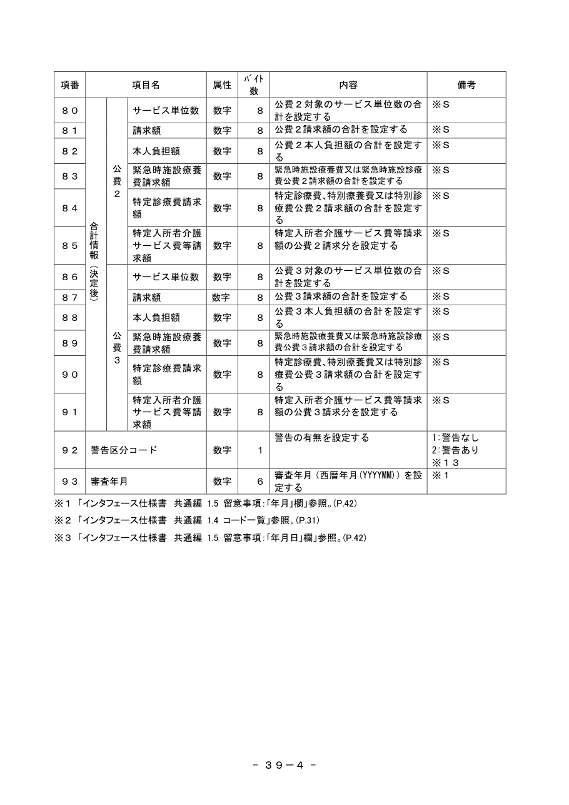
| 項番 | 項目名 | 属性 | 桁数 | 内容 | 必須 | 備考 | その他の列 |
|---|---|---|---|---|---|---|---|
| ８０ | 合計情報（決定後） > 公費２ > サービス単位数 | 数字 | 8 | 公費２対象のサービス単位数の合計を設定する | ※Ｓ | ||
| ８１ | 合計情報（決定後） > 公費２ > 請求額 | 数字 | 8 | 公費２請求額の合計を設定する | ※Ｓ | ||
| ８２ | 合計情報（決定後） > 公費２ > 本人負担額 | 数字 | 8 | 公費２本人負担額の合計を設定する | ※Ｓ | ||
| ８３ | 合計情報（決定後） > 公費２ > 緊急時施設療養費請求額 | 数字 | 8 | 緊急時施設療養費又は緊急時施設療養費公費２請求額の合計を設定する | ※Ｓ | ||
| ８４ | 合計情報（決定後） > 公費２ > 特定診療費請求額 | 数字 | 8 | 特定診療費、特別療養費又は特別診療費公費２請求額の合計を設定する | ※Ｓ | ||
| ８５ | 合計情報（決定後） > 公費２ > 特定入所者介護サービス費等請求額 | 数字 | 8 | 特定入所者介護サービス費等請求額の公費２請求分を設定する | ※Ｓ | ||
| ８６ | 合計情報（決定後） > 公費３ > サービス単位数 | 数字 | 8 | 公費３対象のサービス単位数の合計を設定する | ※Ｓ | ||
| ８７ | 合計情報（決定後） > 公費３ > 請求額 | 数字 | 8 | 公費３請求額の合計を設定する | ※Ｓ | ||
| ８８ | 合計情報（決定後） > 公費３ > 本人負担額 | 数字 | 8 | 公費３本人負担額の合計を設定する | ※Ｓ | ||
| ８９ | 合計情報（決定後） > 公費３ > 緊急時施設療養費請求額 | 数字 | 8 | 緊急時施設療養費又は緊急時施設療養費公費３請求額の合計を設定する | ※Ｓ | ||
| ９０ | 合計情報（決定後） > 公費３ > 特定診療費請求額 | 数字 | 8 | 特定診療費、特別療養費又は特別診療費公費３請求額の合計を設定する | ※Ｓ | ||
| ９１ | 合計情報（決定後） > 公費３ > 特定入所者介護サービス費等請求額 | 数字 | 8 | 特定入所者介護サービス費等請求額の公費３請求分を設定する | ※Ｓ | ||
| ９２ | 警告区分コード | 数字 | 1 | 警告の有無を設定する | 1:警告なし 2:警告あり ※１３ | ||
| ９３ | 審査年月 | 数字 | 6 | 審査年月（西暦年月(YYYYMM)）を設定する | ※１ |
| 項番 | 項目名 | 属性 | 桁数 | 内容 | 必須 | 備考 | その他の列 |
|---|---|---|---|---|---|---|---|
| ８０ | 合計情報（決定後） > 公費2 > サービス単位数 | 数字 | 8 | 公費２対象のサービス単位数の合計を設定する | ※S | ||
| ８１ | 合計情報（決定後） > 公費2 > 請求額 | 数字 | 8 | 公費２請求額の合計を設定する | ※S | ||
| ８２ | 合計情報（決定後） > 公費2 > 本人負担額 | 数字 | 8 | 公費２本人負担額の合計を設定する | ※S | ||
| ８３ | 合計情報（決定後） > 公費2 > 緊急時施設療養費請求額 | 数字 | 8 | 緊急時施設療養費又は緊急時施設診療費公費２請求額の合計を設定する | ※S | ||
| ８４ | 合計情報（決定後） > 公費2 > 特定診療費請求額 | 数字 | 8 | 特定診療費、特別療養費又は特別診療費公費２請求額の合計を設定する | ※S | ||
| ８５ | 合計情報（決定後） > 公費2 > 特定入所者介護サービス費等請求額 | 数字 | 8 | 特定入所者介護サービス費等請求額の公費２請求分を設定する | ※S | ||
| ８６ | 合計情報（決定後） > 公費3 > サービス単位数 | 数字 | 8 | 公費３対象のサービス単位数の合計を設定する | ※S | ||
| ８７ | 合計情報（決定後） > 公費3 > 請求額 | 数字 | 8 | 公費３請求額の合計を設定する | ※S | ||
| ８８ | 合計情報（決定後） > 公費3 > 本人負担額 | 数字 | 8 | 公費３本人負担額の合計を設定する | ※S | ||
| ８９ | 合計情報（決定後） > 公費3 > 緊急時施設療養費請求額 | 数字 | 8 | 緊急時施設療養費又は緊急時施設診療費公費３請求額の合計を設定する | ※S | ||
| ９０ | 合計情報（決定後） > 公費3 > 特定診療費請求額 | 数字 | 8 | 特定診療費、特別療養費又は特別診療費公費３請求額の合計を設定する | ※S | ||
| ９１ | 合計情報（決定後） > 公費3 > 特定入所者介護サービス費等請求額 | 数字 | 8 | 特定入所者介護サービス費等請求額の公費３請求分を設定する | ※S | ||
| ９２ | 警告区分コード | 数字 | 1 | 警告の有無を設定する | 1:警告なし 2:警告あり ※１３ | ||
| ９３ | 審査年月 | 数字 | 6 | 審査年月（西暦年月(YYYYMM)）を設定する | ※１ |
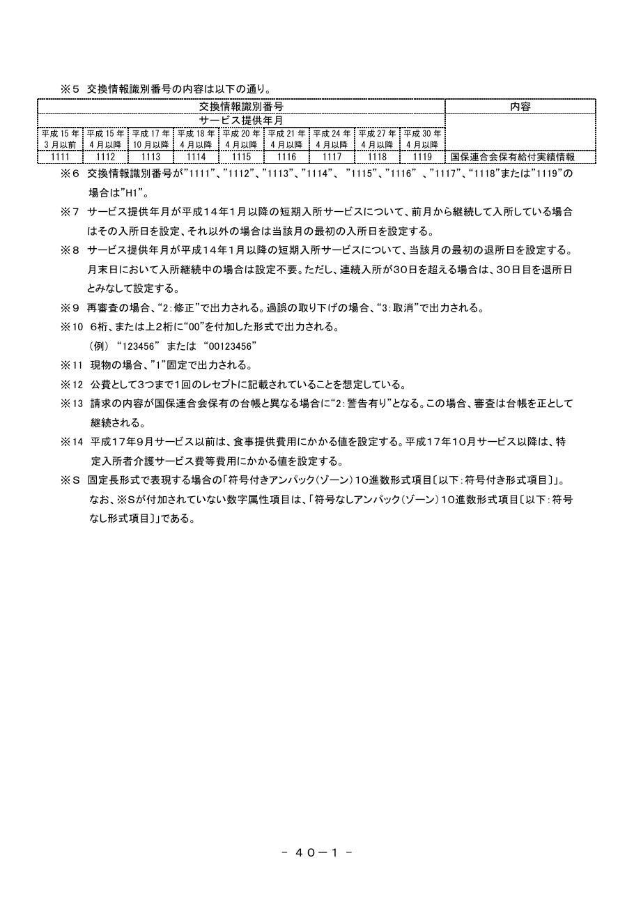
| 項番 | 項目名 | 属性 | 桁数 | 内容 | 必須 | 備考 | その他の列 |
|---|---|---|---|---|---|---|---|
| 国保連合会保有給付実績情報 | 交換情報識別番号 > サービス提供年月 > 平成15年3月以前: 1111 交換情報識別番号 > サービス提供年月 > 平成15年4月以降: 1112 交換情報識別番号 > サービス提供年月 > 平成17年10月以降: 1113 交換情報識別番号 > サービス提供年月 > 平成18年4月以降: 1114 交換情報識別番号 > サービス提供年月 > 平成20年4月以降: 1115 交換情報識別番号 > サービス提供年月 > 平成21年4月以降: 1116 交換情報識別番号 > サービス提供年月 > 平成24年4月以降: 1117 交換情報識別番号 > サービス提供年月 > 平成27年4月以降: 1118 交換情報識別番号 > サービス提供年月 > 平成30年4月以降: 1119 |
| 項番 | 項目名 | 属性 | 桁数 | 内容 | 必須 | 備考 | その他の列 |
|---|---|---|---|---|---|---|---|
| 国保連合会保有給付実績情報 | 交換情報識別番号 > サービス提供年月 > 平成15年3月以前: 1111 交換情報識別番号 > サービス提供年月 > 平成15年4月以降: 1112 交換情報識別番号 > サービス提供年月 > 平成17年10月以降: 1113 交換情報識別番号 > サービス提供年月 > 平成18年4月以降: 1114 交換情報識別番号 > サービス提供年月 > 平成20年4月以降: 1115 交換情報識別番号 > サービス提供年月 > 平成21年4月以降: 1116 交換情報識別番号 > サービス提供年月 > 平成24年4月以降: 1117 交換情報識別番号 > サービス提供年月 > 平成27年4月以降: 1118 交換情報識別番号 > サービス提供年月 > 平成30年4月以降: 1119 |
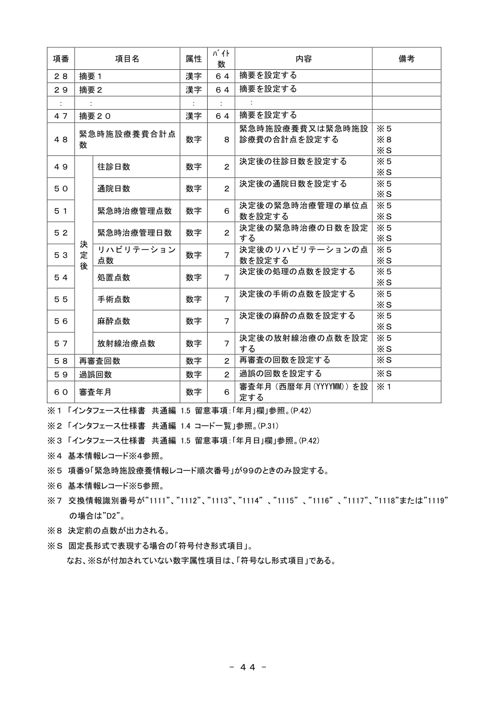
| 項番 | 項目名 | 属性 | 桁数 | 内容 | 必須 | 備考 | その他の列 |
|---|---|---|---|---|---|---|---|
| ２８ | 摘要１ | 漢字 | 64 | 摘要を設定する | |||
| ２９ | 摘要２ | 漢字 | 64 | 摘要を設定する | |||
| ： | ： | ： | ： | ： | |||
| ４７ | 摘要２０ | 漢字 | 64 | 摘要を設定する | |||
| ４８ | 緊急時施設療養費合計点数 | 数字 | 8 | 緊急時施設療養費又は緊急時施設診療費の合計点を設定する | ※５ ※８ ※Ｓ | ||
| ４９ | 決定後 > 往診日数 | 数字 | 2 | 決定後の往診日数を設定する | ※５ ※Ｓ | ||
| ５０ | 決定後 > 通院日数 | 数字 | 2 | 決定後の通院日数を設定する | ※５ ※Ｓ | ||
| ５１ | 決定後 > 緊急時治療管理点数 | 数字 | 6 | 決定後の緊急時治療管理の単位点数を設定する | ※５ ※Ｓ | ||
| ５２ | 決定後 > 緊急時治療管理日数 | 数字 | 2 | 決定後の緊急時治療の日数を設定する | ※５ ※Ｓ | ||
| ５３ | 決定後 > リハビリテーション点数 | 数字 | 7 | 決定後のリハビリテーションの点数を設定する | ※５ ※Ｓ | ||
| ５４ | 決定後 > 処置点数 | 数字 | 7 | 決定後の処理の点数を設定する | ※５ ※Ｓ | ||
| ５５ | 決定後 > 手術点数 | 数字 | 7 | 決定後の手術の点数を設定する | ※５ ※Ｓ | ||
| ５６ | 決定後 > 麻酔点数 | 数字 | 7 | 決定後の麻酔の点数を設定する | ※５ ※Ｓ | ||
| ５７ | 決定後 > 放射線治療点数 | 数字 | 7 | 決定後の放射線治療の点数を設定する | ※５ ※Ｓ | ||
| ５８ | 再審査回数 | 数字 | 2 | 再審査の回数を設定する | ※Ｓ | ||
| ５９ | 過誤回数 | 数字 | 2 | 過誤の回数を設定する | ※Ｓ | ||
| ６０ | 審査年月 | 数字 | 6 | 審査年月（西暦年月(YYYYMM)）を設定する | ※１ |
| 項番 | 項目名 | 属性 | 桁数 | 内容 | 必須 | 備考 | その他の列 |
|---|---|---|---|---|---|---|---|
| ２８ | 摘要１ | 漢字 | 64 | 摘要を設定する | |||
| ２９ | 摘要２ | 漢字 | 64 | 摘要を設定する | |||
| : | : | : | : | : | |||
| ４７ | 摘要２０ | 漢字 | 64 | 摘要を設定する | |||
| ４８ | 緊急時施設療養費合計点数 | 数字 | 8 | 緊急時施設療養費又は緊急時施設診療費の合計点を設定する | ※５ ※８ ※S | ||
| ４９ | 決定後 > 往診日数 | 数字 | 2 | 決定後の往診日数を設定する | ※５ ※S | ||
| ５０ | 決定後 > 通院日数 | 数字 | 2 | 決定後の通院日数を設定する | ※５ ※S | ||
| ５１ | 決定後 > 緊急時治療管理点数 | 数字 | 6 | 決定後の緊急時治療管理の単位点数を設定する | ※５ ※S | ||
| ５２ | 決定後 > 緊急時治療管理日数 | 数字 | 2 | 決定後の緊急時治療の日数を設定する | ※５ ※S | ||
| ５３ | 決定後 > リハビリテーション点数 | 数字 | 7 | 決定後のリハビリテーションの点数を設定する | ※５ ※S | ||
| ５４ | 決定後 > 処置点数 | 数字 | 7 | 決定後の処理の点数を設定する | ※５ ※S | ||
| ５５ | 決定後 > 手術点数 | 数字 | 7 | 決定後の手術の点数を設定する | ※５ ※S | ||
| ５６ | 決定後 > 麻酔点数 | 数字 | 7 | 決定後の麻酔の点数を設定する | ※５ ※S | ||
| ５７ | 決定後 > 放射線治療点数 | 数字 | 7 | 決定後の放射線治療の点数を設定する | ※５ ※S | ||
| ５８ | 再審査回数 | 数字 | 2 | 再審査の回数を設定する | ※S | ||
| ５９ | 過誤回数 | 数字 | 2 | 過誤の回数を設定する | ※S | ||
| ６０ | 審査年月 | 数字 | 6 | 審査年月（西暦年月(YYYYMM)）を設定する | ※１ |
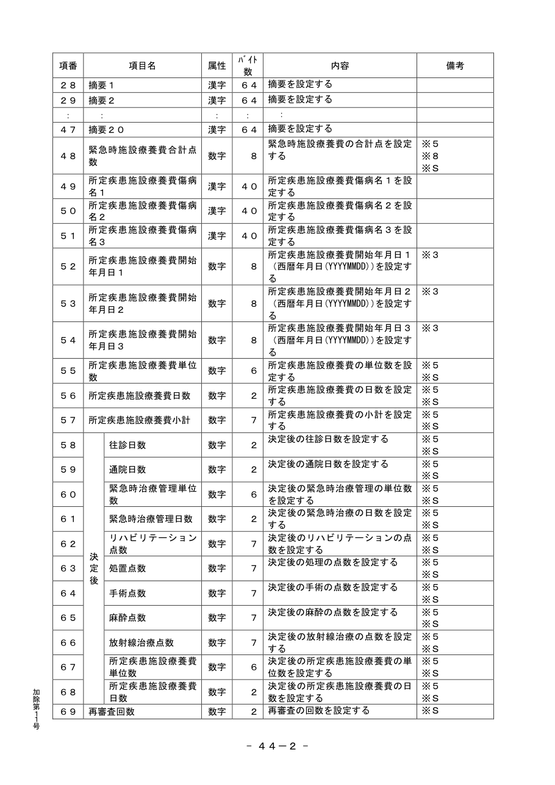
| 項番 | 項目名 | 属性 | 桁数 | 内容 | 必須 | 備考 | その他の列 |
|---|---|---|---|---|---|---|---|
| ２８ | 摘要１ | 漢字 | 64 | 摘要を設定する | |||
| ２９ | 摘要２ | 漢字 | 64 | 摘要を設定する | |||
| : | : | : | : | : | |||
| ４７ | 摘要２０ | 漢字 | 64 | 摘要を設定する | |||
| ４８ | 緊急時施設療養費合計点数 | 数字 | 8 | 緊急時施設療養費の合計点数を設定する | ※5 ※8 ※S | ||
| ４９ | 所定疾患施設療養費傷病名１ | 漢字 | 40 | 所定疾患施設療養費傷病名１を設定する | |||
| ５０ | 所定疾患施設療養費傷病名２ | 漢字 | 40 | 所定疾患施設療養費傷病名２を設定する | |||
| ５１ | 所定疾患施設療養費傷病名３ | 漢字 | 40 | 所定疾患施設療養費傷病名３を設定する | |||
| ５２ | 所定疾患施設療養費開始年月日１ | 数字 | 8 | 所定疾患施設療養費開始年月日１（西暦年月日(YYYYMMDD)）を設定する | ※3 | ||
| ５３ | 所定疾患施設療養費開始年月日２ | 数字 | 8 | 所定疾患施設療養費開始年月日２（西暦年月日(YYYYMMDD)）を設定する | ※3 | ||
| ５４ | 所定疾患施設療養費開始年月日３ | 数字 | 8 | 所定疾患施設療養費開始年月日３（西暦年月日(YYYYMMDD)）を設定する | ※3 | ||
| ５５ | 所定疾患施設療養費単位数 | 数字 | 6 | 所定疾患施設療養費の単位数を設定する | ※5 ※S | ||
| ５６ | 所定疾患施設療養費日数 | 数字 | 2 | 所定疾患施設療養費の日数を設定する | ※5 ※S | ||
| ５７ | 所定疾患施設療養費小計 | 数字 | 7 | 所定疾患施設療養費の小計を設定する | ※5 ※S | ||
| ５８ | 決定後 > 往診日数 | 数字 | 2 | 決定後の往診日数を設定する | ※5 ※S | ||
| ５９ | 決定後 > 通院日数 | 数字 | 2 | 決定後の通院日数を設定する | ※5 ※S | ||
| ６０ | 決定後 > 緊急時治療管理単位数 | 数字 | 6 | 決定後の緊急時治療管理の単位数を設定する | ※5 ※S | ||
| ６１ | 決定後 > 緊急時治療管理日数 | 数字 | 2 | 決定後の緊急時治療の日数を設定する | ※5 ※S | ||
| ６２ | 決定後 > リハビリテーション点数 | 数字 | 7 | 決定後のリハビリテーションの点数を設定する | ※5 ※S | ||
| ６３ | 決定後 > 処置点数 | 数字 | 7 | 決定後の処理の点数を設定する | ※5 ※S | ||
| ６４ | 決定後 > 手術点数 | 数字 | 7 | 決定後の手術の点数を設定する | ※5 ※S | ||
| ６５ | 決定後 > 麻酔点数 | 数字 | 7 | 決定後の麻酔の点数を設定する | ※5 ※S | ||
| ６６ | 決定後 > 放射線治療点数 | 数字 | 7 | 決定後の放射線治療の点数を設定する | ※5 ※S | ||
| ６７ | 決定後 > 所定疾患施設療養費単位数 | 数字 | 6 | 決定後の所定疾患施設療養費の単位数を設定する | ※5 ※S | ||
| ６８ | 決定後 > 所定疾患施設療養費日数 | 数字 | 2 | 決定後の所定疾患施設療養費の日数を設定する | ※5 ※S | ||
| ６９ | 再審査回数 | 数字 | 2 | 再審査の回数を設定する | ※S |
| 項番 | 項目名 | 属性 | 桁数 | 内容 | 必須 | 備考 | その他の列 |
|---|---|---|---|---|---|---|---|
| ２８ | 摘要１ | 漢字 | 64 | 摘要を設定する | |||
| ２９ | 摘要２ | 漢字 | 64 | 摘要を設定する | |||
| : | : | : | : | : | |||
| ４７ | 摘要２０ | 漢字 | 64 | 摘要を設定する | |||
| ４８ | 緊急時施設療養費合計点数 | 数字 | 8 | 緊急時施設療養費の合計点を設定する | ※５ ※８ ※Ｓ | ||
| ４９ | 所定疾患施設療養費傷病名１ | 漢字 | 40 | 所定疾患施設療養費傷病名１を設定する | |||
| ５０ | 所定疾患施設療養費傷病名２ | 漢字 | 40 | 所定疾患施設療養費傷病名２を設定する | |||
| ５１ | 所定疾患施設療養費傷病名３ | 漢字 | 40 | 所定疾患施設療養費傷病名３を設定する | |||
| ５２ | 所定疾患施設療養費開始年月日１ | 数字 | 8 | 所定疾患施設療養費開始年月日１（西暦年月日(YYYYMMDD)）を設定する | ※３ | ||
| ５３ | 所定疾患施設療養費開始年月日２ | 数字 | 8 | 所定疾患施設療養費開始年月日２（西暦年月日(YYYYMMDD)）を設定する | ※３ | ||
| ５４ | 所定疾患施設療養費開始年月日３ | 数字 | 8 | 所定疾患施設療養費開始年月日３（西暦年月日(YYYYMMDD)）を設定する | ※３ | ||
| ５５ | 所定疾患施設療養費単位数 | 数字 | 6 | 所定疾患施設療養費の単位数を設定する | ※５ ※Ｓ | ||
| ５６ | 所定疾患施設療養費日数 | 数字 | 2 | 所定疾患施設療養費の日数を設定する | ※５ ※Ｓ | ||
| ５７ | 所定疾患施設療養費小計 | 数字 | 7 | 所定疾患施設療養費の小計を設定する | ※５ ※Ｓ | ||
| ５８ | 決定後 > 往診日数 | 数字 | 2 | 決定後の往診日数を設定する | ※５ ※Ｓ | ||
| ５９ | 決定後 > 通院日数 | 数字 | 2 | 決定後の通院日数を設定する | ※５ ※Ｓ | ||
| ６０ | 決定後 > 緊急時治療管理単位数 | 数字 | 6 | 決定後の緊急時治療管理の単位数を設定する | ※５ ※Ｓ | ||
| ６１ | 決定後 > 緊急時治療管理日数 | 数字 | 2 | 決定後の緊急時治療の日数を設定する | ※５ ※Ｓ | ||
| ６２ | 決定後 > リハビリテーション点数 | 数字 | 7 | 決定後のリハビリテーションの点数を設定する | ※５ ※Ｓ | ||
| ６３ | 決定後 > 処置点数 | 数字 | 7 | 決定後の処理の点数を設定する | ※５ ※Ｓ | ||
| ６４ | 決定後 > 手術点数 | 数字 | 7 | 決定後の手術の点数を設定する | ※５ ※Ｓ | ||
| ６５ | 決定後 > 麻酔点数 | 数字 | 7 | 決定後の麻酔の点数を設定する | ※５ ※Ｓ | ||
| ６６ | 決定後 > 放射線治療点数 | 数字 | 7 | 決定後の放射線治療の点数を設定する | ※５ ※Ｓ | ||
| ６７ | 決定後 > 所定疾患施設療養費単位数 | 数字 | 6 | 決定後の所定疾患施設療養費の単位数を設定する | ※５ ※Ｓ | ||
| ６８ | 決定後 > 所定疾患施設療養費日数 | 数字 | 2 | 決定後の所定疾患施設療養費の日数を設定する | ※５ ※Ｓ | ||
| ６９ | 再審査回数 | 数字 | 2 | 再審査の回数を設定する | ※Ｓ |
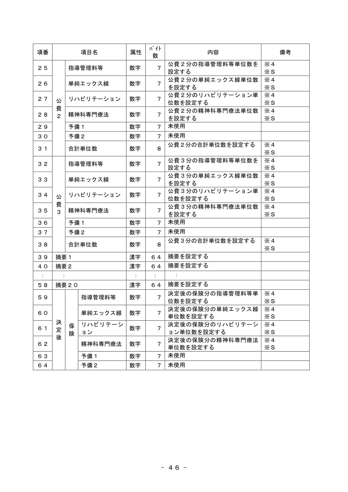
| 項番 | 項目名 | 属性 | 桁数 | 内容 | 必須 | 備考 | その他の列 |
|---|---|---|---|---|---|---|---|
| ２５ | 公費2 > 指導管理料等 | 数字 | 7 | 公費２分の指導管理料等単位数を設定する | ※4 ※S | ||
| ２６ | 公費2 > 単純エックス線 | 数字 | 7 | 公費２分の単純エックス線単位数を設定する | ※4 ※S | ||
| ２７ | 公費2 > リハビリテーション | 数字 | 7 | 公費２分のリハビリテーション単位数を設定する | ※4 ※S | ||
| ２８ | 公費2 > 精神科専門療法 | 数字 | 7 | 公費２分の精神科専門療法単位数を設定する | ※4 ※S | ||
| ２９ | 公費2 > 予備１ | 数字 | 7 | 未使用 | |||
| ３０ | 公費2 > 予備２ | 数字 | 7 | 未使用 | |||
| ３１ | 公費2 > 合計単位数 | 数字 | 8 | 公費２分の合計単位数を設定する | ※4 ※S | ||
| ３２ | 公費3 > 指導管理料等 | 数字 | 7 | 公費３分の指導管理料等単位数を設定する | ※4 ※S | ||
| ３３ | 公費3 > 単純エックス線 | 数字 | 7 | 公費３分の単純エックス線単位数を設定する | ※4 ※S | ||
| ３４ | 公費3 > リハビリテーション | 数字 | 7 | 公費３分のリハビリテーション単位数を設定する | ※4 ※S | ||
| ３５ | 公費3 > 精神科専門療法 | 数字 | 7 | 公費３分の精神科専門療法単位数を設定する | ※4 ※S | ||
| ３６ | 公費3 > 予備１ | 数字 | 7 | 未使用 | |||
| ３７ | 公費3 > 予備２ | 数字 | 7 | 未使用 | |||
| ３８ | 公費3 > 合計単位数 | 数字 | 8 | 公費３分の合計単位数を設定する | ※4 ※S | ||
| ３９ | 摘要１ | 漢字 | 64 | 摘要を設定する | |||
| ４０ | 摘要２ | 漢字 | 64 | 摘要を設定する | |||
| : | : | : | : | : | |||
| ５８ | 摘要２０ | 漢字 | 64 | 摘要を設定する | |||
| ５９ | 決定後 > 保険 > 指導管理料等 | 数字 | 7 | 決定後の保険分の指導管理料等単位数を設定する | ※4 ※S | ||
| ６０ | 決定後 > 保険 > 単純エックス線 | 数字 | 7 | 決定後の保険分の単純エックス線単位数を設定する | ※4 ※S | ||
| ６１ | 決定後 > 保険 > リハビリテーション | 数字 | 7 | 決定後の保険分のリハビリテーション単位数を設定する | ※4 ※S | ||
| ６２ | 決定後 > 保険 > 精神科専門療法 | 数字 | 7 | 決定後の保険分の精神科専門療法単位数を設定する | ※4 ※S | ||
| ６３ | 決定後 > 保険 > 予備１ | 数字 | 7 | 未使用 | |||
| ６４ | 決定後 > 保険 > 予備２ | 数字 | 7 | 未使用 |
| 項番 | 項目名 | 属性 | 桁数 | 内容 | 必須 | 備考 | その他の列 |
|---|---|---|---|---|---|---|---|
| ２５ | 公費2 > 指導管理料等 | 数字 | 7 | 公費２分の指導管理料等単位数を設定する | ※４ ※Ｓ | ||
| ２６ | 公費2 > 単純エックス線 | 数字 | 7 | 公費２分の単純エックス線単位数を設定する | ※４ ※Ｓ | ||
| ２７ | 公費2 > リハビリテーション | 数字 | 7 | 公費２分のリハビリテーション単位数を設定する | ※４ ※Ｓ | ||
| ２８ | 公費2 > 精神科専門療法 | 数字 | 7 | 公費２分の精神科専門療法単位数を設定する | ※４ ※Ｓ | ||
| ２９ | 公費2 > 予備１ | 数字 | 7 | 未使用 | |||
| ３０ | 公費2 > 予備２ | 数字 | 7 | 未使用 | |||
| ３１ | 公費2 > 合計単位数 | 数字 | 8 | 公費２分の合計単位数を設定する | ※４ ※Ｓ | ||
| ３２ | 公費3 > 指導管理料等 | 数字 | 7 | 公費３分の指導管理料等単位数を設定する | ※４ ※Ｓ | ||
| ３３ | 公費3 > 単純エックス線 | 数字 | 7 | 公費３分の単純エックス線単位数を設定する | ※４ ※Ｓ | ||
| ３４ | 公費3 > リハビリテーション | 数字 | 7 | 公費３分のリハビリテーション単位数を設定する | ※４ ※Ｓ | ||
| ３５ | 公費3 > 精神科専門療法 | 数字 | 7 | 公費３分の精神科専門療法単位数を設定する | ※４ ※Ｓ | ||
| ３６ | 公費3 > 予備１ | 数字 | 7 | 未使用 | |||
| ３７ | 公費3 > 予備２ | 数字 | 7 | 未使用 | |||
| ３８ | 公費3 > 合計単位数 | 数字 | 8 | 公費３分の合計単位数を設定する | ※４ ※Ｓ | ||
| ３９ | 摘要１ | 漢字 | 64 | 摘要を設定する | |||
| ４０ | 摘要２ | 漢字 | 64 | 摘要を設定する | |||
| : | : | : | : | : | |||
| ５８ | 摘要２０ | 漢字 | 64 | 摘要を設定する | |||
| ５９ | 決定後 > 保険 > 指導管理料等 | 数字 | 7 | 決定後の保険分の指導管理料等単位数を設定する | ※４ ※Ｓ | ||
| ６０ | 決定後 > 保険 > 単純エックス線 | 数字 | 7 | 決定後の保険分の単純エックス線単位数を設定する | ※４ ※Ｓ | ||
| ６１ | 決定後 > 保険 > リハビリテーション | 数字 | 7 | 決定後の保険分のリハビリテーション単位数を設定する | ※４ ※Ｓ | ||
| ６２ | 決定後 > 保険 > 精神科専門療法 | 数字 | 7 | 決定後の保険分の精神科専門療法単位数を設定する | ※４ ※Ｓ | ||
| ６３ | 決定後 > 保険 > 予備１ | 数字 | 7 | 未使用 | |||
| ６４ | 決定後 > 保険 > 予備２ | 数字 | 7 | 未使用 |
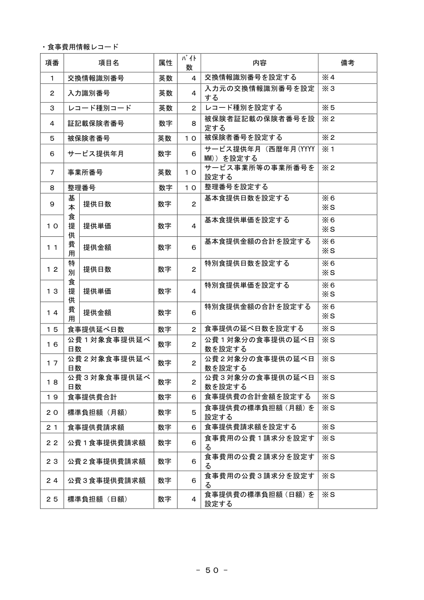
| 項番 | 項目名 | 属性 | 桁数 | 内容 | 必須 | 備考 | その他の列 |
|---|---|---|---|---|---|---|---|
| １ | 交換情報識別番号 | 英数 | 4 | 交換情報識別番号を設定する | ※４ | ||
| ２ | 入力識別番号 | 英数 | 4 | 入力元の交換情報識別番号を設定する | ※３ | ||
| ３ | レコード種別コード | 英数 | 2 | レコード種別を設定する | ※５ | ||
| ４ | 証記載保険者番号 | 数字 | 8 | 被保険者証記載の保険者番号を設定する | ※２ | ||
| ５ | 被保険者番号 | 英数 | 10 | 被保険者番号を設定する | ※２ | ||
| ６ | サービス提供年月 | 数字 | 6 | サービス提供年月（西暦年月(YYYYMM)）を設定する | ※１ | ||
| ７ | 事業所番号 | 英数 | 10 | サービス事業所等の事業所番号を設定する | ※２ | ||
| ８ | 整理番号 | 数字 | 10 | 整理番号を設定する | |||
| ９ | 基本食提供費用 > 提供日数 | 数字 | 2 | 基本食提供日数を設定する | ※６ ※S | ||
| １０ | 基本食提供費用 > 提供単価 | 数字 | 4 | 基本食提供単価を設定する | ※６ ※S | ||
| １１ | 基本食提供費用 > 提供金額 | 数字 | 6 | 基本食提供金額の合計を設定する | ※６ ※S | ||
| １２ | 特別食提供費用 > 提供日数 | 数字 | 2 | 特別食提供日数を設定する | ※６ ※S | ||
| １３ | 特別食提供費用 > 提供単価 | 数字 | 4 | 特別食提供単価を設定する | ※６ ※S | ||
| １４ | 特別食提供費用 > 提供金額 | 数字 | 6 | 特別食提供金額の合計を設定する | ※６ ※S | ||
| １５ | 食事提供延べ日数 | 数字 | 2 | 食事提供の延べ日数を設定する | ※S | ||
| １６ | 公費１対象食事提供延べ日数 | 数字 | 2 | 公費１対象分の食事提供の延べ日数を設定する | ※S | ||
| １７ | 公費２対象食事提供延べ日数 | 数字 | 2 | 公費２対象分の食事提供の延べ日数を設定する | ※S | ||
| １８ | 公費３対象食事提供延べ日数 | 数字 | 2 | 公費３対象分の食事提供の延べ日数を設定する | ※S | ||
| １９ | 食事提供費合計 | 数字 | 6 | 食事提供費の合計金額を設定する | ※S | ||
| ２０ | 標準負担額（月額） | 数字 | 5 | 食事提供費の標準負担額（月額）を設定する | ※S | ||
| ２１ | 食事提供費請求額 | 数字 | 6 | 食事提供費請求額を設定する | ※S | ||
| ２２ | 公費１食事提供費請求額 | 数字 | 6 | 食事費用の公費１請求分を設定する | ※S | ||
| ２３ | 公費２食事提供費請求額 | 数字 | 6 | 食事費用の公費２請求分を設定する | ※S | ||
| ２４ | 公費３食事提供費請求額 | 数字 | 6 | 食事費用の公費３請求分を設定する | ※S | ||
| ２５ | 標準負担額（日額） | 数字 | 4 | 食事提供費の標準負担額（日額）を設定する | ※S |
| 項番 | 項目名 | 属性 | 桁数 | 内容 | 必須 | 備考 | その他の列 |
|---|---|---|---|---|---|---|---|
| 1 | 交換情報識別番号 | 英数 | 4 | 交換情報識別番号を設定する | ※4 | ||
| 2 | 入力識別番号 | 英数 | 4 | 入力元の交換情報識別番号を設定する | ※3 | ||
| 3 | レコード種別コード | 英数 | 2 | レコード種別を設定する | ※5 | ||
| 4 | 証記載保険者番号 | 数字 | 8 | 被保険者証記載の保険者番号を設定する | ※2 | ||
| 5 | 被保険者番号 | 英数 | 10 | 被保険者番号を設定する | ※2 | ||
| 6 | サービス提供年月 | 数字 | 6 | サービス提供年月（西暦年月(YYYYMM)）を設定する | ※1 | ||
| 7 | 事業所番号 | 英数 | 10 | サービス事業所等の事業所番号を設定する | ※2 | ||
| 8 | 整理番号 | 数字 | 10 | 整理番号を設定する | |||
| 9 | 基本食提供費用 > 提供日数 | 数字 | 2 | 基本食提供日数を設定する | ※6 ※S | ||
| 10 | 基本食提供費用 > 提供単価 | 数字 | 4 | 基本食提供単価を設定する | ※6 ※S | ||
| 11 | 基本食提供費用 > 提供金額 | 数字 | 6 | 基本食提供金額の合計を設定する | ※6 ※S | ||
| 12 | 特別食提供費用 > 提供日数 | 数字 | 2 | 特別食提供日数を設定する | ※6 ※S | ||
| 13 | 特別食提供費用 > 提供単価 | 数字 | 4 | 特別食提供単価を設定する | ※6 ※S | ||
| 14 | 特別食提供費用 > 提供金額 | 数字 | 6 | 特別食提供金額の合計を設定する | ※6 ※S | ||
| 15 | 食事提供延べ日数 | 数字 | 2 | 食事提供の延べ日数を設定する | ※S | ||
| 16 | 公費1対象食事提供延べ日数 | 数字 | 2 | 公費1対象分の食事提供の延べ日数を設定する | ※S | ||
| 17 | 公費2対象食事提供延べ日数 | 数字 | 2 | 公費2対象分の食事提供の延べ日数を設定する | ※S | ||
| 18 | 公費3対象食事提供延べ日数 | 数字 | 2 | 公費3対象分の食事提供の延べ日数を設定する | ※S | ||
| 19 | 食事提供費合計 | 数字 | 6 | 食事提供費の合計金額を設定する | ※S | ||
| 20 | 標準負担額（月額） | 数字 | 5 | 食事提供費の標準負担額（月額）を設定する | ※S | ||
| 21 | 食事提供費請求額 | 数字 | 6 | 食事提供費請求額を設定する | ※S | ||
| 22 | 公費1食事提供費請求額 | 数字 | 6 | 食事費用の公費1請求分を設定する | ※S | ||
| 23 | 公費2食事提供費請求額 | 数字 | 6 | 食事費用の公費2請求分を設定する | ※S | ||
| 24 | 公費3食事提供費請求額 | 数字 | 6 | 食事費用の公費3請求分を設定する | ※S | ||
| 25 | 標準負担（日額） | 数字 | 4 | 食事提供費の標準負担額（日額）を設定する | ※S |
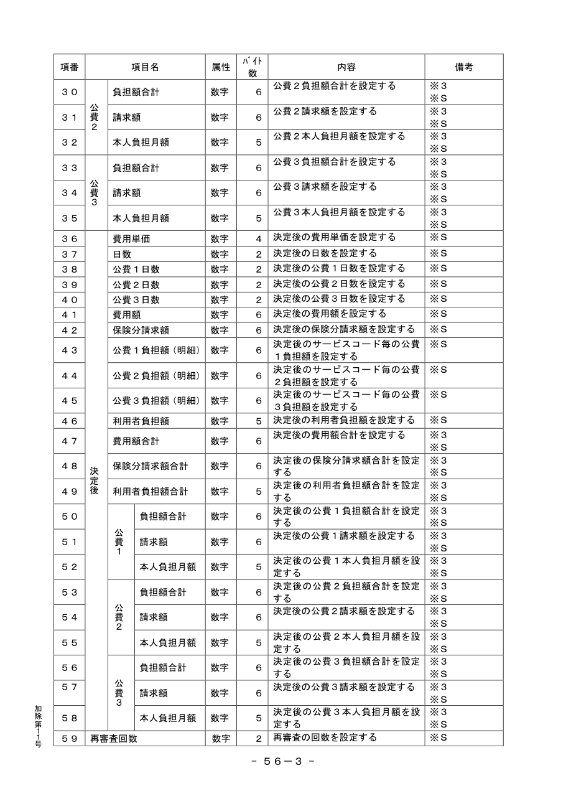
| 項番 | 項目名 | 属性 | 桁数 | 内容 | 必須 | 備考 | その他の列 |
|---|---|---|---|---|---|---|---|
| ３０ | 公費２ > 負担額合計 | 数字 | 6 | 公費２負担額合計を設定する | ※３ ※Ｓ | ||
| ３１ | 公費２ > 請求額 | 数字 | 6 | 公費２請求額を設定する | ※３ ※Ｓ | ||
| ３２ | 公費２ > 本人負担月額 | 数字 | 5 | 公費２本人負担月額を設定する | ※３ ※Ｓ | ||
| ３３ | 公費３ > 負担額合計 | 数字 | 6 | 公費３負担額合計を設定する | ※３ ※Ｓ | ||
| ３４ | 公費３ > 請求額 | 数字 | 6 | 公費３請求額を設定する | ※３ ※Ｓ | ||
| ３５ | 公費３ > 本人負担月額 | 数字 | 5 | 公費３本人負担月額を設定する | ※３ ※Ｓ | ||
| ３６ | 決定後 > 費用単価 | 数字 | 4 | 決定後の費用単価を設定する | ※Ｓ | ||
| ３７ | 決定後 > 日数 | 数字 | 2 | 決定後の日数を設定する | ※Ｓ | ||
| ３８ | 決定後 > 公費１日数 | 数字 | 2 | 決定後の公費１日数を設定する | ※Ｓ | ||
| ３９ | 決定後 > 公費２日数 | 数字 | 2 | 決定後の公費２日数を設定する | ※Ｓ | ||
| ４０ | 決定後 > 公費３日数 | 数字 | 2 | 決定後の公費３日数を設定する | ※Ｓ | ||
| ４１ | 決定後 > 費用額 | 数字 | 6 | 決定後の費用額を設定する | ※Ｓ | ||
| ４２ | 決定後 > 保険分請求額 | 数字 | 6 | 決定後の保険分請求額を設定する | ※Ｓ | ||
| ４３ | 決定後 > 公費１負担額（明細） | 数字 | 6 | 決定後のサービスコード毎の公費１負担額を設定する | ※Ｓ | ||
| ４４ | 決定後 > 公費２負担額（明細） | 数字 | 6 | 決定後のサービスコード毎の公費２負担額を設定する | ※Ｓ | ||
| ４５ | 決定後 > 公費３負担額（明細） | 数字 | 6 | 決定後のサービスコード毎の公費３負担額を設定する | ※Ｓ | ||
| ４６ | 決定後 > 利用者負担額 | 数字 | 5 | 決定後の利用者負担額を設定する | ※Ｓ | ||
| ４７ | 決定後 > 費用額合計 | 数字 | 6 | 決定後の費用額合計を設定する | ※３ ※Ｓ | ||
| ４８ | 決定後 > 保険分請求額合計 | 数字 | 6 | 決定後の保険分請求額合計を設定する | ※３ ※Ｓ | ||
| ４９ | 決定後 > 利用者負担額合計 | 数字 | 5 | 決定後の利用者負担額合計を設定する | ※３ ※Ｓ | ||
| ５０ | 決定後 > 公費１ > 負担額合計 | 数字 | 6 | 決定後の公費１負担額合計を設定する | ※３ ※Ｓ | ||
| ５１ | 決定後 > 公費１ > 請求額 | 数字 | 6 | 決定後の公費１請求額を設定する | ※３ ※Ｓ | ||
| ５２ | 決定後 > 公費１ > 本人負担月額 | 数字 | 5 | 決定後の公費１本人負担月額を設定する | ※３ ※Ｓ | ||
| ５３ | 決定後 > 公費２ > 負担額合計 | 数字 | 6 | 決定後の公費２負担額合計を設定する | ※３ ※Ｓ | ||
| ５４ | 決定後 > 公費２ > 請求額 | 数字 | 6 | 決定後の公費２請求額を設定する | ※３ ※Ｓ | ||
| ５５ | 決定後 > 公費２ > 本人負担月額 | 数字 | 5 | 決定後の公費２本人負担月額を設定する | ※３ ※Ｓ | ||
| ５６ | 決定後 > 公費３ > 負担額合計 | 数字 | 6 | 決定後の公費３負担額合計を設定する | ※３ ※Ｓ | ||
| ５７ | 決定後 > 公費３ > 請求額 | 数字 | 6 | 決定後の公費３請求額を設定する | ※３ ※Ｓ | ||
| ５８ | 決定後 > 公費３ > 本人負担月額 | 数字 | 5 | 決定後の公費３本人負担月額を設定する | ※３ ※Ｓ | ||
| ５９ | 再審査回数 | 数字 | 2 | 再審査の回数を設定する | ※Ｓ |
| 項番 | 項目名 | 属性 | 桁数 | 内容 | 必須 | 備考 | その他の列 |
|---|---|---|---|---|---|---|---|
| ３０ | 公費2 > 負担額合計 | 数字 | 6 | 公費２負担額合計を設定する | ※３ ※Ｓ | ||
| ３１ | 公費2 > 請求額 | 数字 | 6 | 公費２請求額を設定する | ※３ ※Ｓ | ||
| ３２ | 公費2 > 本人負担月額 | 数字 | 5 | 公費２本人負担月額を設定する | ※３ ※Ｓ | ||
| ３３ | 公費3 > 負担額合計 | 数字 | 6 | 公費３負担額合計を設定する | ※３ ※Ｓ | ||
| ３４ | 公費3 > 請求額 | 数字 | 6 | 公費３請求額を設定する | ※３ ※Ｓ | ||
| ３５ | 公費3 > 本人負担月額 | 数字 | 5 | 公費３本人負担月額を設定する | ※３ ※Ｓ | ||
| ３６ | 決定後 > 費用単価 | 数字 | 4 | 決定後の費用単価を設定する | ※Ｓ | ||
| ３７ | 決定後 > 日数 | 数字 | 2 | 決定後の日数を設定する | ※Ｓ | ||
| ３８ | 決定後 > 公費１日数 | 数字 | 2 | 決定後の公費１日数を設定する | ※Ｓ | ||
| ３９ | 決定後 > 公費２日数 | 数字 | 2 | 決定後の公費２日数を設定する | ※Ｓ | ||
| ４０ | 決定後 > 公費３日数 | 数字 | 2 | 決定後の公費３日数を設定する | ※Ｓ | ||
| ４１ | 決定後 > 費用額 | 数字 | 6 | 決定後の費用額を設定する | ※Ｓ | ||
| ４２ | 決定後 > 保険分請求額 | 数字 | 6 | 決定後の保険分請求額を設定する | ※Ｓ | ||
| ４３ | 決定後 > 公費１負担額（明細） | 数字 | 6 | 決定後のサービスコード毎の公費１負担額を設定する | ※Ｓ | ||
| ４４ | 決定後 > 公費２負担額（明細） | 数字 | 6 | 決定後のサービスコード毎の公費２負担額を設定する | ※Ｓ | ||
| ４５ | 決定後 > 公費３負担額（明細） | 数字 | 6 | 決定後のサービスコード毎の公費３負担額を設定する | ※Ｓ | ||
| ４６ | 決定後 > 利用者負担額 | 数字 | 5 | 決定後の利用者負担額を設定する | ※Ｓ | ||
| ４７ | 決定後 > 費用額合計 | 数字 | 6 | 決定後の費用額合計を設定する | ※３ ※Ｓ | ||
| ４８ | 決定後 > 保険分請求額合計 | 数字 | 6 | 決定後の保険分請求額合計を設定する | ※３ ※Ｓ | ||
| ４９ | 決定後 > 利用者負担額合計 | 数字 | 5 | 決定後の利用者負担合計を設定する | ※３ ※Ｓ | ||
| ５０ | 決定後 > 公費1 > 負担額合計 | 数字 | 6 | 決定後の公費１負担額合計を設定する | ※３ ※Ｓ | ||
| ５１ | 決定後 > 公費1 > 請求額 | 数字 | 6 | 決定後の公費１請求額を設定する | ※３ ※Ｓ | ||
| ５２ | 決定後 > 公費1 > 本人負担月額 | 数字 | 5 | 決定後の公費１本人負担月額を設定する | ※３ ※Ｓ | ||
| ５３ | 決定後 > 公費2 > 負担額合計 | 数字 | 6 | 決定後の公費２負担額合計を設定する | ※３ ※Ｓ | ||
| ５４ | 決定後 > 公費2 > 請求額 | 数字 | 6 | 決定後の公費２請求額を設定する | ※３ ※Ｓ | ||
| ５５ | 決定後 > 公費2 > 本人負担月額 | 数字 | 5 | 決定後の公費２本人負担月額を設定する | ※３ ※Ｓ | ||
| ５６ | 決定後 > 公費3 > 負担額合計 | 数字 | 6 | 決定後の公費３負担額合計を設定する | ※３ ※Ｓ | ||
| ５７ | 決定後 > 公費3 > 請求額 | 数字 | 6 | 決定後の公費３請求額を設定する | ※３ ※Ｓ | ||
| ５８ | 決定後 > 公費3 > 本人負担月額 | 数字 | 5 | 決定後の公費３本人負担月額を設定する | ※３ ※Ｓ | ||
| ５９ | 再審査回数 | 数字 | 2 | 再審査の回数を設定する | ※Ｓ |
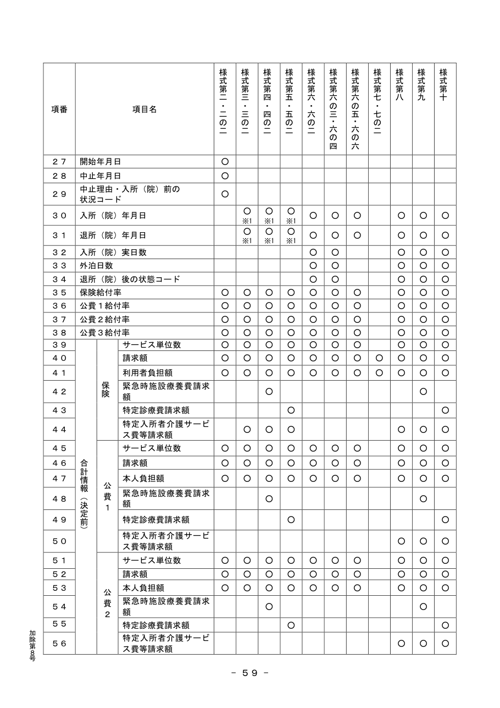
| 項番 | 項目名 | 属性 | 桁数 | 内容 | 必須 | 備考 | その他の列 |
|---|---|---|---|---|---|---|---|
| ２７ | 開始年月日 | 様式第二・二の二:○ 様式第三・三の二:－ 様式第四・四の二:－ 様式第五・五の二:－ 様式第六・六の二:－ 様式第六の三・六の四:－ 様式第六の五・六の六:－ 様式第七・七の二:－ 様式第八:－ 様式第九:－ 様式第十:－ | |||||
| ２８ | 中止年月日 | 様式第二・二の二:○ 様式第三・三の二:－ 様式第四・四の二:－ 様式第五・五の二:－ 様式第六・六の二:－ 様式第六の三・六の四:－ 様式第六の五・六の六:－ 様式第七・七の二:－ 様式第八:－ 様式第九:－ 様式第十:－ | |||||
| ２９ | 中止理由・入所（院）前の状況コード | 様式第二・二の二:○ 様式第三・三の二:－ 様式第四・四の二:－ 様式第五・五の二:－ 様式第六・六の二:－ 様式第六の三・六の四:－ 様式第六の五・六の六:－ 様式第七・七の二:－ 様式第八:－ 様式第九:－ 様式第十:－ | |||||
| ３０ | 入所（院）年月日 | 様式第二・二の二:－ 様式第三・三の二:○ 様式第四・四の二:○ 様式第五・五の二:○ 様式第六・六の二:○ 様式第六の三・六の四:○ 様式第六の五・六の六:○ 様式第七・七の二:－ 様式第八:○ 様式第九:○ 様式第十:○ | |||||
| ３１ | 退所（院）年月日 | 様式第二・二の二:－ 様式第三・三の二:○ 様式第四・四の二:○ 様式第五・五の二:○ 様式第六・六の二:○ 様式第六の三・六の四:○ 様式第六の五・六の六:○ 様式第七・七の二:－ 様式第八:○ 様式第九:○ 様式第十:○ | |||||
| ３２ | 入所（院）実日数 | 様式第二・二の二:－ 様式第三・三の二:－ 様式第四・四の二:－ 様式第五・五の二:－ 様式第六・六の二:○ 様式第六の三・六の四:○ 様式第六の五・六の六:－ 様式第七・七の二:－ 様式第八:○ 様式第九:○ 様式第十:○ | |||||
| ３３ | 外泊日数 | 様式第二・二の二:－ 様式第三・三の二:－ 様式第四・四の二:－ 様式第五・五の二:－ 様式第六・六の二:○ 様式第六の三・六の四:○ 様式第六の五・六の六:－ 様式第七・七の二:－ 様式第八:○ 様式第九:○ 様式第十:○ | |||||
| ３４ | 退所（院）後の状態コード | 様式第二・二の二:－ 様式第三・三の二:－ 様式第四・四の二:－ 様式第五・五の二:－ 様式第六・六の二:○ 様式第六の三・六の四:○ 様式第六の五・六の六:－ 様式第七・七の二:－ 様式第八:○ 様式第九:○ 様式第十:○ | |||||
| ３５ | 保険給付率 | 様式第二・二の二:○ 様式第三・三の二:○ 様式第四・四の二:○ 様式第五・五の二:○ 様式第六・六の二:○ 様式第六の三・六の四:○ 様式第六の五・六の六:○ 様式第七・七の二:－ 様式第八:○ 様式第九:○ 様式第十:○ | |||||
| ３６ | 公費１給付率 | 様式第二・二の二:○ 様式第三・三の二:○ 様式第四・四の二:○ 様式第五・五の二:○ 様式第六・六の二:○ 様式第六の三・六の四:○ 様式第六の五・六の六:○ 様式第七・七の二:－ 様式第八:○ 様式第九:○ 様式第十:○ | |||||
| ３７ | 公費２給付率 | 様式第二・二の二:○ 様式第三・三の二:○ 様式第四・四の二:○ 様式第五・五の二:○ 様式第六・六の二:○ 様式第六の三・六の四:○ 様式第六の五・六の六:○ 様式第七・七の二:－ 様式第八:○ 様式第九:○ 様式第十:○ | |||||
| ３８ | 公費３給付率 | 様式第二・二の二:○ 様式第三・三の二:○ 様式第四・四の二:○ 様式第五・五の二:○ 様式第六・六の二:○ 様式第六の三・六の四:○ 様式第六の五・六の六:○ 様式第七・七の二:－ 様式第八:○ 様式第九:○ 様式第十:○ | |||||
| ３９ | 合計情報（決定前） > 保険 > サービス単位数 | 様式第二・二の二:○ 様式第三・三の二:○ 様式第四・四の二:○ 様式第五・五の二:○ 様式第六・六の二:○ 様式第六の三・六の四:○ 様式第六の五・六の六:○ 様式第七・七の二:－ 様式第八:○ 様式第九:○ 様式第十:○ | |||||
| ４０ | 合計情報（決定前） > 保険 > 請求額 | 様式第二・二の二:○ 様式第三・三の二:○ 様式第四・四の二:○ 様式第五・五の二:○ 様式第六・六の二:○ 様式第六の三・六の四:○ 様式第六の五・六の六:○ 様式第七・七の二:○ 様式第八:○ 様式第九:○ 様式第十:○ | |||||
| ４１ | 合計情報（決定前） > 保険 > 利用者負担額 | 様式第二・二の二:○ 様式第三・三の二:○ 様式第四・四の二:○ 様式第五・五の二:○ 様式第六・六の二:○ 様式第六の三・六の四:○ 様式第六の五・六の六:○ 様式第七・七の二:○ 様式第八:○ 様式第九:○ 様式第十:○ | |||||
| ４２ | 合計情報（決定前） > 保険 > 緊急時施設療養費請求額 | 様式第二・二の二:－ 様式第三・三の二:－ 様式第四・四の二:○ 様式第五・五の二:－ 様式第六・六の二:－ 様式第六の三・六の四:－ 様式第六の五・六の六:－ 様式第七・七の二:－ 様式第八:－ 様式第九:○ 様式第十:－ | |||||
| ４３ | 合計情報（決定前） > 保険 > 特定診療費請求額 | 様式第二・二の二:－ 様式第三・三の二:－ 様式第四・四の二:－ 様式第五・五の二:○ 様式第六・六の二:－ 様式第六の三・六の四:－ 様式第六の五・六の六:－ 様式第七・七の二:－ 様式第八:－ 様式第九:－ 様式第十:○ | |||||
| ４４ | 合計情報（決定前） > 保険 > 特定入所者介護サービス費等請求額 | 様式第二・二の二:－ 様式第三・三の二:○ 様式第四・四の二:○ 様式第五・五の二:○ 様式第六・六の二:－ 様式第六の三・六の四:－ 様式第六の五・六の六:－ 様式第七・七の二:－ 様式第八:○ 様式第九:○ 様式第十:○ | |||||
| ４５ | 合計情報（決定前） > 公費１ > サービス単位数 | 様式第二・二の二:○ 様式第三・三の二:○ 様式第四・四の二:○ 様式第五・五の二:○ 様式第六・六の二:○ 様式第六の三・六の四:○ 様式第六の五・六の六:○ 様式第七・七の二:－ 様式第八:○ 様式第九:○ 様式第十:○ | |||||
| ４６ | 合計情報（決定前） > 公費１ > 請求額 | 様式第二・二の二:○ 様式第三・三の二:○ 様式第四・四の二:○ 様式第五・五の二:○ 様式第六・六の二:○ 様式第六の三・六の四:○ 様式第六の五・六の六:○ 様式第七・七の二:－ 様式第八:○ 様式第九:○ 様式第十:○ | |||||
| ４７ | 合計情報（決定前） > 公費１ > 本人負担額 | 様式第二・二の二:○ 様式第三・三の二:○ 様式第四・四の二:○ 様式第五・五の二:○ 様式第六・六の二:○ 様式第六の三・六の四:○ 様式第六の五・六の六:○ 様式第七・七の二:－ 様式第八:○ 様式第九:○ 様式第十:○ | |||||
| ４８ | 合計情報（決定前） > 公費１ > 緊急時施設療養費請求額 | 様式第二・二の二:－ 様式第三・三の二:－ 様式第四・四の二:○ 様式第五・五の二:－ 様式第六・六の二:－ 様式第六の三・六の四:－ 様式第六の五・六の六:－ 様式第七・七の二:－ 様式第八:－ 様式第九:○ 様式第十:－ | |||||
| ４９ | 合計情報（決定前） > 公費１ > 特定診療費請求額 | 様式第二・二の二:－ 様式第三・三の二:－ 様式第四・四の二:－ 様式第五・五の二:○ 様式第六・六の二:－ 様式第六の三・六の四:－ 様式第六の五・六の六:－ 様式第七・七の二:－ 様式第八:－ 様式第九:－ 様式第十:○ | |||||
| ５０ | 合計情報（決定前） > 公費１ > 特定入所者介護サービス費等請求額 | 様式第二・二の二:－ 様式第三・三の二:－ 様式第四・四の二:－ 様式第五・五の二:－ 様式第六・六の二:－ 様式第六の三・六の四:－ 様式第六の五・六の六:－ 様式第七・七の二:－ 様式第八:○ 様式第九:○ 様式第十:○ | |||||
| ５１ | 合計情報（決定前） > 公費２ > サービス単位数 | 様式第二・二の二:○ 様式第三・三の二:○ 様式第四・四の二:○ 様式第五・五の二:○ 様式第六・六の二:○ 様式第六の三・六の四:○ 様式第六の五・六の六:○ 様式第七・七の二:－ 様式第八:○ 様式第九:○ 様式第十:○ | |||||
| ５２ | 合計情報（決定前） > 公費２ > 請求額 | 様式第二・二の二:○ 様式第三・三の二:○ 様式第四・四の二:○ 様式第五・五の二:○ 様式第六・六の二:○ 様式第六の三・六の四:○ 様式第六の五・六の六:○ 様式第七・七の二:－ 様式第八:○ 様式第九:○ 様式第十:○ | |||||
| ５３ | 合計情報（決定前） > 公費２ > 本人負担額 | 様式第二・二の二:○ 様式第三・三の二:○ 様式第四・四の二:○ 様式第五・五の二:○ 様式第六・六の二:○ 様式第六の三・六の四:○ 様式第六の五・六の六:○ 様式第七・七の二:－ 様式第八:○ 様式第九:○ 様式第十:○ | |||||
| ５４ | 合計情報（決定前） > 公費２ > 緊急時施設療養費請求額 | 様式第二・二の二:－ 様式第三・三の二:－ 様式第四・四の二:○ 様式第五・五の二:－ 様式第六・六の二:－ 様式第六の三・六の四:－ 様式第六の五・六の六:－ 様式第七・七の二:－ 様式第八:－ 様式第九:○ 様式第十:－ | |||||
| ５５ | 合計情報（決定前） > 公費２ > 特定診療費請求額 | 様式第二・二の二:－ 様式第三・三の二:－ 様式第四・四の二:－ 様式第五・五の二:○ 様式第六・六の二:－ 様式第六の三・六の四:－ 様式第六の五・六の六:－ 様式第七・七の二:－ 様式第八:－ 様式第九:－ 様式第十:○ | |||||
| ５６ | 合計情報（決定前） > 公費２ > 特定入所者介護サービス費等請求額 | 様式第二・二の二:－ 様式第三・三の二:－ 様式第四・四の二:－ 様式第五・五の二:－ 様式第六・六の二:－ 様式第六の三・六の四:－ 様式第六の五・六の六:－ 様式第七・七の二:－ 様式第八:○ 様式第九:○ 様式第十:○ |
| 項番 | 項目名 | 属性 | 桁数 | 内容 | 必須 | 備考 | その他の列 |
|---|---|---|---|---|---|---|---|
| 27 | 開始年月日 | 様式第二・二の二:○ 様式第三・三の二:－ 様式第四・四の二:－ 様式第五・五の二:－ 様式第六・六の二:－ 様式第六の三・六の四:－ 様式第六の五・六の六:－ 様式第七・七の二:－ 様式第八:－ 様式第九:－ 様式第十:－ | |||||
| 28 | 中止年月日 | 様式第二・二の二:○ 様式第三・三の二:－ 様式第四・四の二:－ 様式第五・五の二:－ 様式第六・六の二:－ 様式第六の三・六の四:－ 様式第六の五・六の六:－ 様式第七・七の二:－ 様式第八:－ 様式第九:－ 様式第十:－ | |||||
| 29 | 中止理由・入所（院）前の状況コード | 様式第二・二の二:○ 様式第三・三の二:－ 様式第四・四の二:－ 様式第五・五の二:－ 様式第六・六の二:－ 様式第六の三・六の四:－ 様式第六の五・六の六:－ 様式第七・七の二:－ 様式第八:－ 様式第九:－ 様式第十:－ | |||||
| 30 | 入所（院）年月日 | 様式第二・二の二:－ 様式第三・三の二:○※1 様式第四・四の二:○※1 様式第五・五の二:○※1 様式第六・六の二:○ 様式第六の三・六の四:○ 様式第六の五・六の六:○ 様式第七・七の二:－ 様式第八:○ 様式第九:○ 様式第十:○ | |||||
| 31 | 退所（院）年月日 | 様式第二・二の二:－ 様式第三・三の二:○※1 様式第四・四の二:○※1 様式第五・五の二:○※1 様式第六・六の二:○ 様式第六の三・六の四:○ 様式第六の五・六の六:○ 様式第七・七の二:－ 様式第八:○ 様式第九:○ 様式第十:○ | |||||
| 32 | 入所（院）実日数 | 様式第二・二の二:－ 様式第三・三の二:－ 様式第四・四の二:－ 様式第五・五の二:－ 様式第六・六の二:○ 様式第六の三・六の四:○ 様式第六の五・六の六:－ 様式第七・七の二:－ 様式第八:○ 様式第九:○ 様式第十:○ | |||||
| 33 | 外泊日数 | 様式第二・二の二:－ 様式第三・三の二:－ 様式第四・四の二:－ 様式第五・五の二:－ 様式第六・六の二:○ 様式第六の三・六の四:○ 様式第六の五・六の六:－ 様式第七・七の二:－ 様式第八:○ 様式第九:○ 様式第十:○ | |||||
| 34 | 退所（院）後の状態コード | 様式第二・二の二:－ 様式第三・三の二:－ 様式第四・四の二:－ 様式第五・五の二:－ 様式第六・六の二:○ 様式第六の三・六の四:○ 様式第六の五・六の六:－ 様式第七・七の二:－ 様式第八:○ 様式第九:○ 様式第十:○ | |||||
| 35 | 保険給付率 | 様式第二・二の二:○ 様式第三・三の二:○ 様式第四・四の二:○ 様式第五・五の二:○ 様式第六・六の二:○ 様式第六の三・六の四:○ 様式第六の五・六の六:○ 様式第七・七の二:－ 様式第八:○ 様式第九:○ 様式第十:○ | |||||
| 36 | 公費1給付率 | 様式第二・二の二:○ 様式第三・三の二:○ 様式第四・四の二:○ 様式第五・五の二:○ 様式第六・六の二:○ 様式第六の三・六の四:○ 様式第六の五・六の六:○ 様式第七・七の二:－ 様式第八:○ 様式第九:○ 様式第十:○ | |||||
| 37 | 公費2給付率 | 様式第二・二の二:○ 様式第三・三の二:○ 様式第四・四の二:○ 様式第五・五の二:○ 様式第六・六の二:○ 様式第六の三・六の四:○ 様式第六の五・六の六:○ 様式第七・七の二:－ 様式第八:○ 様式第九:○ 様式第十:○ | |||||
| 38 | 公費3給付率 | 様式第二・二の二:○ 様式第三・三の二:○ 様式第四・四の二:○ 様式第五・五の二:○ 様式第六・六の二:○ 様式第六の三・六の四:○ 様式第六の五・六の六:○ 様式第七・七の二:－ 様式第八:○ 様式第九:○ 様式第十:○ | |||||
| 39 | 合計情報（決定前） > 保険 > サービス単位数 | 様式第二・二の二:○ 様式第三・三の二:○ 様式第四・四の二:○ 様式第五・五の二:○ 様式第六・六の二:○ 様式第六の三・六の四:○ 様式第六の五・六の六:○ 様式第七・七の二:－ 様式第八:○ 様式第九:○ 様式第十:○ | |||||
| 40 | 合計情報（決定前） > 保険 > 請求額 | 様式第二・二の二:○ 様式第三・三の二:○ 様式第四・四の二:○ 様式第五・五の二:○ 様式第六・六の二:○ 様式第六の三・六の四:○ 様式第六の五・六の六:○ 様式第七・七の二:○ 様式第八:○ 様式第九:○ 様式第十:○ | |||||
| 41 | 合計情報（決定前） > 保険 > 利用者負担額 | 様式第二・二の二:○ 様式第三・三の二:○ 様式第四・四の二:○ 様式第五・五の二:○ 様式第六・六の二:○ 様式第六の三・六の四:○ 様式第六の五・六の六:○ 様式第七・七の二:○ 様式第八:○ 様式第九:○ 様式第十:○ | |||||
| 42 | 合計情報（決定前） > 保険 > 緊急時施設療養費請求額 | 様式第二・二の二:－ 様式第三・三の二:－ 様式第四・四の二:○ 様式第五・五の二:－ 様式第六・六の二:－ 様式第六の三・六の四:－ 様式第六の五・六の六:－ 様式第七・七の二:－ 様式第八:－ 様式第九:○ 様式第十:－ | |||||
| 43 | 合計情報（決定前） > 保険 > 特定診療費請求額 | 様式第二・二の二:－ 様式第三・三の二:－ 様式第四・四の二:－ 様式第五・五の二:○ 様式第六・六の二:－ 様式第六の三・六の四:－ 様式第六の五・六の六:－ 様式第七・七の二:－ 様式第八:－ 様式第九:－ 様式第十:○ | |||||
| 44 | 合計情報（決定前） > 保険 > 特定入所者介護サービス費等請求額 | 様式第二・二の二:－ 様式第三・三の二:○ 様式第四・四の二:○ 様式第五・五の二:○ 様式第六・六の二:－ 様式第六の三・六の四:－ 様式第六の五・六の六:－ 様式第七・七の二:－ 様式第八:○ 様式第九:○ 様式第十:○ | |||||
| 45 | 合計情報（決定前） > 公費1 > サービス単位数 | 様式第二・二の二:○ 様式第三・三の二:○ 様式第四・四の二:○ 様式第五・五の二:○ 様式第六・六の二:○ 様式第六の三・六の四:○ 様式第六の五・六の六:○ 様式第七・七の二:－ 様式第八:○ 様式第九:○ 様式第十:○ | |||||
| 46 | 合計情報（決定前） > 公費1 > 請求額 | 様式第二・二の二:○ 様式第三・三の二:○ 様式第四・四の二:○ 様式第五・五の二:○ 様式第六・六の二:○ 様式第六の三・六の四:○ 様式第六の五・六の六:○ 様式第七・七の二:－ 様式第八:○ 様式第九:○ 様式第十:○ | |||||
| 47 | 合計情報（決定前） > 公費1 > 本人負担額 | 様式第二・二の二:○ 様式第三・三の二:○ 様式第四・四の二:○ 様式第五・五の二:○ 様式第六・六の二:○ 様式第六の三・六の四:○ 様式第六の五・六の六:○ 様式第七・七の二:－ 様式第八:○ 様式第九:○ 様式第十:○ | |||||
| 48 | 合計情報（決定前） > 公費1 > 緊急時施設療養費請求額 | 様式第二・二の二:－ 様式第三・三の二:－ 様式第四・四の二:○ 様式第五・五の二:－ 様式第六・六の二:－ 様式第六の三・六の四:－ 様式第六の五・六の六:－ 様式第七・七の二:－ 様式第八:－ 様式第九:○ 様式第十:－ | |||||
| 49 | 合計情報（決定前） > 公費1 > 特定診療費請求額 | 様式第二・二の二:－ 様式第三・三の二:－ 様式第四・四の二:－ 様式第五・五の二:○ 様式第六・六の二:－ 様式第六の三・六の四:－ 様式第六の五・六の六:－ 様式第七・七の二:－ 様式第八:－ 様式第九:－ 様式第十:○ | |||||
| 50 | 合計情報（決定前） > 公費1 > 特定入所者介護サービス費等請求額 | 様式第二・二の二:－ 様式第三・三の二:－ 様式第四・四の二:－ 様式第五・五の二:－ 様式第六・六の二:－ 様式第六の三・六の四:－ 様式第六の五・六の六:－ 様式第七・七の二:－ 様式第八:○ 様式第九:○ 様式第十:○ | |||||
| 51 | 合計情報（決定前） > 公費2 > サービス単位数 | 様式第二・二の二:○ 様式第三・三の二:○ 様式第四・四の二:○ 様式第五・五の二:○ 様式第六・六の二:○ 様式第六の三・六の四:○ 様式第六の五・六の六:○ 様式第七・七の二:－ 様式第八:○ 様式第九:○ 様式第十:○ | |||||
| 52 | 合計情報（決定前） > 公費2 > 請求額 | 様式第二・二の二:○ 様式第三・三の二:○ 様式第四・四の二:○ 様式第五・五の二:○ 様式第六・六の二:○ 様式第六の三・六の四:○ 様式第六の五・六の六:○ 様式第七・七の二:－ 様式第八:○ 様式第九:○ 様式第十:○ | |||||
| 53 | 合計情報（決定前） > 公費2 > 本人負担額 | 様式第二・二の二:○ 様式第三・三の二:○ 様式第四・四の二:○ 様式第五・五の二:○ 様式第六・六の二:○ 様式第六の三・六の四:○ 様式第六の五・六の六:○ 様式第七・七の二:－ 様式第八:○ 様式第九:○ 様式第十:○ | |||||
| 54 | 合計情報（決定前） > 公費2 > 緊急時施設療養費請求額 | 様式第二・二の二:－ 様式第三・三の二:－ 様式第四・四の二:○ 様式第五・五の二:－ 様式第六・六の二:－ 様式第六の三・六の四:－ 様式第六の五・六の六:－ 様式第七・七の二:－ 様式第八:－ 様式第九:○ 様式第十:－ | |||||
| 55 | 合計情報（決定前） > 公費2 > 特定診療費請求額 | 様式第二・二の二:－ 様式第三・三の二:－ 様式第四・四の二:－ 様式第五・五の二:○ 様式第六・六の二:－ 様式第六の三・六の四:－ 様式第六の五・六の六:－ 様式第七・七の二:－ 様式第八:－ 様式第九:－ 様式第十:○ | |||||
| 56 | 合計情報（決定前） > 公費2 > 特定入所者介護サービス費等請求額 | 様式第二・二の二:－ 様式第三・三の二:－ 様式第四・四の二:－ 様式第五・五の二:－ 様式第六・六の二:－ 様式第六の三・六の四:－ 様式第六の五・六の六:－ 様式第七・七の二:－ 様式第八:○ 様式第九:○ 様式第十:○ |
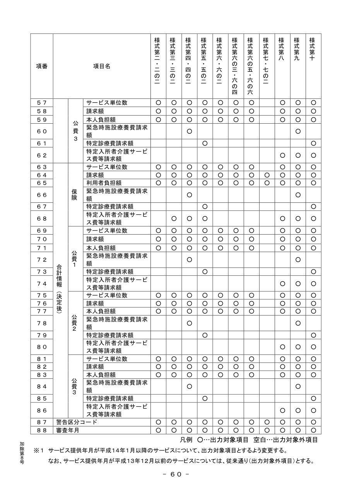
| 項番 | 項目名 | 属性 | 桁数 | 内容 | 必須 | 備考 | その他の列 |
|---|---|---|---|---|---|---|---|
| 57 | 合計情報（決定後） > 公費3 > サービス単位数 | 様式第二・二の二:○ 様式第三・三の二:○ 様式第四・四の二:○ 様式第五・五の二:○ 様式第六・六の二:○ 様式第六の三・六の四:○ 様式第六の五・六の六:○ 様式第七・七の二:－ 様式第八:○ 様式第九:○ 様式第十:○ | |||||
| 58 | 合計情報（決定後） > 公費3 > 請求額 | 様式第二・二の二:○ 様式第三・三の二:○ 様式第四・四の二:○ 様式第五・五の二:○ 様式第六・六の二:○ 様式第六の三・六の四:○ 様式第六の五・六の六:○ 様式第七・七の二:－ 様式第八:○ 様式第九:○ 様式第十:○ | |||||
| 59 | 合計情報（決定後） > 公費3 > 本人負担額 | 様式第二・二の二:○ 様式第三・三の二:○ 様式第四・四の二:○ 様式第五・五の二:○ 様式第六・六の二:○ 様式第六の三・六の四:○ 様式第六の五・六の六:○ 様式第七・七の二:－ 様式第八:○ 様式第九:○ 様式第十:○ | |||||
| 60 | 合計情報（決定後） > 公費3 > 緊急時施設療養費請求額 | 様式第二・二の二:－ 様式第三・三の二:－ 様式第四・四の二:○ 様式第五・五の二:－ 様式第六・六の二:－ 様式第六の三・六の四:－ 様式第六の五・六の六:－ 様式第七・七の二:－ 様式第八:－ 様式第九:○ 様式第十:－ | |||||
| 61 | 合計情報（決定後） > 公費3 > 特定診療費請求額 | 様式第二・二の二:－ 様式第三・三の二:－ 様式第四・四の二:－ 様式第五・五の二:○ 様式第六・六の二:－ 様式第六の三・六の四:－ 様式第六の五・六の六:－ 様式第七・七の二:－ 様式第八:－ 様式第九:－ 様式第十:○ | |||||
| 62 | 合計情報（決定後） > 公費3 > 特定入所者介護サービス費等請求額 | 様式第二・二の二:－ 様式第三・三の二:－ 様式第四・四の二:－ 様式第五・五の二:－ 様式第六・六の二:－ 様式第六の三・六の四:－ 様式第六の五・六の六:－ 様式第七・七の二:－ 様式第八:○ 様式第九:○ 様式第十:○ | |||||
| 63 | 合計情報（決定後） > 保険 > サービス単位数 | 様式第二・二の二:○ 様式第三・三の二:○ 様式第四・四の二:○ 様式第五・五の二:○ 様式第六・六の二:○ 様式第六の三・六の四:○ 様式第六の五・六の六:○ 様式第七・七の二:－ 様式第八:○ 様式第九:○ 様式第十:○ | |||||
| 64 | 合計情報（決定後） > 保険 > 請求額 | 様式第二・二の二:○ 様式第三・三の二:○ 様式第四・四の二:○ 様式第五・五の二:○ 様式第六・六の二:○ 様式第六の三・六の四:○ 様式第六の五・六の六:○ 様式第七・七の二:○ 様式第八:○ 様式第九:○ 様式第十:○ | |||||
| 65 | 合計情報（決定後） > 保険 > 利用者負担額 | 様式第二・二の二:○ 様式第三・三の二:○ 様式第四・四の二:○ 様式第五・五の二:○ 様式第六・六の二:○ 様式第六の三・六の四:○ 様式第六の五・六の六:○ 様式第七・七の二:○ 様式第八:○ 様式第九:○ 様式第十:○ | |||||
| 66 | 合計情報（決定後） > 保険 > 緊急時施設療養費請求額 | 様式第二・二の二:－ 様式第三・三の二:－ 様式第四・四の二:○ 様式第五・五の二:－ 様式第六・六の二:－ 様式第六の三・六の四:－ 様式第六の五・六の六:－ 様式第七・七の二:－ 様式第八:－ 様式第九:○ 様式第十:－ | |||||
| 67 | 合計情報（決定後） > 保険 > 特定診療費請求額 | 様式第二・二の二:－ 様式第三・三の二:－ 様式第四・四の二:－ 様式第五・五の二:○ 様式第六・六の二:－ 様式第六の三・六の四:－ 様式第六の五・六の六:－ 様式第七・七の二:－ 様式第八:－ 様式第九:－ 様式第十:○ | |||||
| 68 | 合計情報（決定後） > 保険 > 特定入所者介護サービス費等請求額 | 様式第二・二の二:－ 様式第三・三の二:○ 様式第四・四の二:○ 様式第五・五の二:○ 様式第六・六の二:－ 様式第六の三・六の四:－ 様式第六の五・六の六:－ 様式第七・七の二:－ 様式第八:○ 様式第九:○ 様式第十:○ | |||||
| 69 | 合計情報（決定後） > 公費1 > サービス単位数 | 様式第二・二の二:○ 様式第三・三の二:○ 様式第四・四の二:○ 様式第五・五の二:○ 様式第六・六の二:○ 様式第六の三・六の四:○ 様式第六の五・六の六:○ 様式第七・七の二:－ 様式第八:○ 様式第九:○ 様式第十:○ | |||||
| 70 | 合計情報（決定後） > 公費1 > 請求額 | 様式第二・二の二:○ 様式第三・三の二:○ 様式第四・四の二:○ 様式第五・五の二:○ 様式第六・六の二:○ 様式第六の三・六の四:○ 様式第六の五・六の六:○ 様式第七・七の二:－ 様式第八:○ 様式第九:○ 様式第十:○ | |||||
| 71 | 合計情報（決定後） > 公費1 > 本人負担額 | 様式第二・二の二:○ 様式第三・三の二:○ 様式第四・四の二:○ 様式第五・五の二:○ 様式第六・六の二:○ 様式第六の三・六の四:○ 様式第六の五・六の六:○ 様式第七・七の二:－ 様式第八:○ 様式第九:○ 様式第十:○ | |||||
| 72 | 合計情報（決定後） > 公費1 > 緊急時施設療養費請求額 | 様式第二・二の二:－ 様式第三・三の二:－ 様式第四・四の二:○ 様式第五・五の二:－ 様式第六・六の二:－ 様式第六の三・六の四:－ 様式第六の五・六の六:－ 様式第七・七の二:－ 様式第八:－ 様式第九:○ 様式第十:－ | |||||
| 73 | 合計情報（決定後） > 公費1 > 特定診療費請求額 | 様式第二・二の二:－ 様式第三・三の二:－ 様式第四・四の二:－ 様式第五・五の二:○ 様式第六・六の二:－ 様式第六の三・六の四:－ 様式第六の五・六の六:－ 様式第七・七の二:－ 様式第八:－ 様式第九:－ 様式第十:○ | |||||
| 74 | 合計情報（決定後） > 公費1 > 特定入所者介護サービス費等請求額 | 様式第二・二の二:－ 様式第三・三の二:－ 様式第四・四の二:－ 様式第五・五の二:－ 様式第六・六の二:－ 様式第六の三・六の四:－ 様式第六の五・六の六:－ 様式第七・七の二:－ 様式第八:○ 様式第九:○ 様式第十:○ | |||||
| 75 | 合計情報（決定後） > 公費2 > サービス単位数 | 様式第二・二の二:○ 様式第三・三の二:○ 様式第四・四の二:○ 様式第五・五の二:○ 様式第六・六の二:○ 様式第六の三・六の四:○ 様式第六の五・六の六:○ 様式第七・七の二:－ 様式第八:○ 様式第九:○ 様式第十:○ | |||||
| 76 | 合計情報（決定後） > 公費2 > 請求額 | 様式第二・二の二:○ 様式第三・三の二:○ 様式第四・四の二:○ 様式第五・五の二:○ 様式第六・六の二:○ 様式第六の三・六の四:○ 様式第六の五・六の六:○ 様式第七・七の二:－ 様式第八:○ 様式第九:○ 様式第十:○ | |||||
| 77 | 合計情報（決定後） > 公費2 > 本人負担額 | 様式第二・二の二:○ 様式第三・三の二:○ 様式第四・四の二:○ 様式第五・五の二:○ 様式第六・六の二:○ 様式第六の三・六の四:○ 様式第六の五・六の六:○ 様式第七・七の二:－ 様式第八:○ 様式第九:○ 様式第十:○ | |||||
| 78 | 合計情報（決定後） > 公費2 > 緊急時施設療養費請求額 | 様式第二・二の二:－ 様式第三・三の二:－ 様式第四・四の二:○ 様式第五・五の二:－ 様式第六・六の二:－ 様式第六の三・六の四:－ 様式第六の五・六の六:－ 様式第七・七の二:－ 様式第八:－ 様式第九:○ 様式第十:－ | |||||
| 79 | 合計情報（決定後） > 公費2 > 特定診療費請求額 | 様式第二・二の二:－ 様式第三・三の二:－ 様式第四・四の二:－ 様式第五・五の二:○ 様式第六・六の二:－ 様式第六の三・六の四:－ 様式第六の五・六の六:－ 様式第七・七の二:－ 様式第八:－ 様式第九:－ 様式第十:○ | |||||
| 80 | 合計情報（決定後） > 公費2 > 特定入所者介護サービス費等請求額 | 様式第二・二の二:－ 様式第三・三の二:－ 様式第四・四の二:－ 様式第五・五の二:－ 様式第六・六の二:－ 様式第六の三・六の四:－ 様式第六の五・六の六:－ 様式第七・七の二:－ 様式第八:○ 様式第九:○ 様式第十:○ | |||||
| 81 | 合計情報（決定後） > 公費3 > サービス単位数 | 様式第二・二の二:○ 様式第三・三の二:○ 様式第四・四の二:○ 様式第五・五の二:○ 様式第六・六の二:○ 様式第六の三・六の四:○ 様式第六の五・六の六:○ 様式第七・七の二:－ 様式第八:○ 様式第九:○ 様式第十:○ | |||||
| 82 | 合計情報（決定後） > 公費3 > 請求額 | 様式第二・二の二:○ 様式第三・三の二:○ 様式第四・四の二:○ 様式第五・五の二:○ 様式第六・六の二:○ 様式第六の三・六の四:○ 様式第六の五・六の六:○ 様式第七・七の二:－ 様式第八:○ 様式第九:○ 様式第十:○ | |||||
| 83 | 合計情報（決定後） > 公費3 > 本人負担額 | 様式第二・二の二:○ 様式第三・三の二:○ 様式第四・四の二:○ 様式第五・五の二:○ 様式第六・六の二:○ 様式第六の三・六の四:○ 様式第六の五・六の六:○ 様式第七・七の二:－ 様式第八:○ 様式第九:○ 様式第十:○ | |||||
| 84 | 合計情報（決定後） > 公費3 > 緊急時施設療養費請求額 | 様式第二・二の二:－ 様式第三・三の二:－ 様式第四・四の二:○ 様式第五・五の二:－ 様式第六・六の二:－ 様式第六の三・六の四:－ 様式第六の五・六の六:－ 様式第七・七の二:－ 様式第八:－ 様式第九:○ 様式第十:－ | |||||
| 85 | 合計情報（決定後） > 公費3 > 特定診療費請求額 | 様式第二・二の二:－ 様式第三・三の二:－ 様式第四・四の二:－ 様式第五・五の二:○ 様式第六・六の二:－ 様式第六の三・六の四:－ 様式第六の五・六の六:－ 様式第七・七の二:－ 様式第八:－ 様式第九:－ 様式第十:○ | |||||
| 86 | 合計情報（決定後） > 公費3 > 特定入所者介護サービス費等請求額 | 様式第二・二の二:－ 様式第三・三の二:－ 様式第四・四の二:－ 様式第五・五の二:－ 様式第六・六の二:－ 様式第六の三・六の四:－ 様式第六の五・六の六:－ 様式第七・七の二:－ 様式第八:○ 様式第九:○ 様式第十:○ | |||||
| 87 | 警告区分コード | 様式第二・二の二:○ 様式第三・三の二:○ 様式第四・四の二:○ 様式第五・五の二:○ 様式第六・六の二:○ 様式第六の三・六の四:○ 様式第六の五・六の六:○ 様式第七・七の二:○ 様式第八:○ 様式第九:○ 様式第十:○ | |||||
| 88 | 審査年月 | 様式第二・二の二:○ 様式第三・三の二:○ 様式第四・四の二:○ 様式第五・五の二:○ 様式第六・六の二:○ 様式第六の三・六の四:○ 様式第六の五・六の六:○ 様式第七・七の二:○ 様式第八:○ 様式第九:○ 様式第十:○ |
| 項番 | 項目名 | 属性 | 桁数 | 内容 | 必須 | 備考 | その他の列 |
|---|---|---|---|---|---|---|---|
| 57 | 合計情報（決定後） > 公費3 > サービス単位数 | 様式第二・二の二:○ 様式第三・三の二:○ 様式第四・四の二:○ 様式第五・五の二:○ 様式第六・六の二:○ 様式第六の三・六の四:○ 様式第六の五・六の六:○ 様式第七・七の二:－ 様式第八:○ 様式第九:○ 様式第十:○ | |||||
| 58 | 合計情報（決定後） > 公費3 > 請求額 | 様式第二・二の二:○ 様式第三・三の二:○ 様式第四・四の二:○ 様式第五・五の二:○ 様式第六・六の二:○ 様式第六の三・六の四:○ 様式第六の五・六の六:○ 様式第七・七の二:－ 様式第八:○ 様式第九:○ 様式第十:○ | |||||
| 59 | 合計情報（決定後） > 公費3 > 本人負担額 | 様式第二・二の二:○ 様式第三・三の二:○ 様式第四・四の二:○ 様式第五・五の二:○ 様式第六・六の二:○ 様式第六の三・六の四:○ 様式第六の五・六の六:○ 様式第七・七の二:－ 様式第八:○ 様式第九:○ 様式第十:○ | |||||
| 60 | 合計情報（決定後） > 公費3 > 緊急時施設療養費請求額 | 様式第二・二の二:－ 様式第三・三の二:－ 様式第四・四の二:○ 様式第五・五の二:－ 様式第六・六の二:－ 様式第六の三・六の四:－ 様式第六の五・六の六:－ 様式第七・七の二:－ 様式第八:－ 様式第九:○ 様式第十:－ | |||||
| 61 | 合計情報（決定後） > 公費3 > 特定診療費請求額 | 様式第二・二の二:－ 様式第三・三の二:－ 様式第四・四の二:－ 様式第五・五の二:○ 様式第六・六の二:－ 様式第六の三・六の四:－ 様式第六の五・六の六:－ 様式第七・七の二:－ 様式第八:－ 様式第九:－ 様式第十:○ | |||||
| 62 | 合計情報（決定後） > 公費3 > 特定入所者介護サービス費等請求額 | 様式第二・二の二:－ 様式第三・三の二:－ 様式第四・四の二:－ 様式第五・五の二:－ 様式第六・六の二:－ 様式第六の三・六の四:－ 様式第六の五・六の六:－ 様式第七・七の二:－ 様式第八:○ 様式第九:○ 様式第十:○ | |||||
| 63 | 合計情報（決定後） > 保険 > サービス単位数 | 様式第二・二の二:○ 様式第三・三の二:○ 様式第四・四の二:○ 様式第五・五の二:○ 様式第六・六の二:○ 様式第六の三・六の四:○ 様式第六の五・六の六:○ 様式第七・七の二:－ 様式第八:○ 様式第九:○ 様式第十:○ | |||||
| 64 | 合計情報（決定後） > 保険 > 請求額 | 様式第二・二の二:○ 様式第三・三の二:○ 様式第四・四の二:○ 様式第五・五の二:○ 様式第六・六の二:○ 様式第六の三・六の四:○ 様式第六の五・六の六:○ 様式第七・七の二:○ 様式第八:○ 様式第九:○ 様式第十:○ | |||||
| 65 | 合計情報（決定後） > 保険 > 利用者負担額 | 様式第二・二の二:○ 様式第三・三の二:○ 様式第四・四の二:○ 様式第五・五の二:○ 様式第六・六の二:○ 様式第六の三・六の四:○ 様式第六の五・六の六:○ 様式第七・七の二:○ 様式第八:○ 様式第九:○ 様式第十:○ | |||||
| 66 | 合計情報（決定後） > 保険 > 緊急時施設療養費請求額 | 様式第二・二の二:－ 様式第三・三の二:－ 様式第四・四の二:○ 様式第五・五の二:－ 様式第六・六の二:－ 様式第六の三・六の四:－ 様式第六の五・六の六:－ 様式第七・七の二:－ 様式第八:－ 様式第九:○ 様式第十:－ | |||||
| 67 | 合計情報（決定後） > 保険 > 特定診療費請求額 | 様式第二・二の二:－ 様式第三・三の二:－ 様式第四・四の二:－ 様式第五・五の二:○ 様式第六・六の二:－ 様式第六の三・六の四:－ 様式第六の五・六の六:－ 様式第七・七の二:－ 様式第八:－ 様式第九:－ 様式第十:○ | |||||
| 68 | 合計情報（決定後） > 保険 > 特定入所者介護サービス費等請求額 | 様式第二・二の二:－ 様式第三・三の二:○ 様式第四・四の二:○ 様式第五・五の二:○ 様式第六・六の二:－ 様式第六の三・六の四:－ 様式第六の五・六の六:－ 様式第七・七の二:－ 様式第八:○ 様式第九:○ 様式第十:○ | |||||
| 69 | 合計情報（決定後） > 公費1 > サービス単位数 | 様式第二・二の二:○ 様式第三・三の二:○ 様式第四・四の二:○ 様式第五・五の二:○ 様式第六・六の二:○ 様式第六の三・六の四:○ 様式第六の五・六の六:○ 様式第七・七の二:－ 様式第八:○ 様式第九:○ 様式第十:○ | |||||
| 70 | 合計情報（決定後） > 公費1 > 請求額 | 様式第二・二の二:○ 様式第三・三の二:○ 様式第四・四の二:○ 様式第五・五の二:○ 様式第六・六の二:○ 様式第六の三・六の四:○ 様式第六の五・六の六:○ 様式第七・七の二:－ 様式第八:○ 様式第九:○ 様式第十:○ | |||||
| 71 | 合計情報（決定後） > 公費1 > 本人負担額 | 様式第二・二の二:○ 様式第三・三の二:○ 様式第四・四の二:○ 様式第五・五の二:○ 様式第六・六の二:○ 様式第六の三・六の四:○ 様式第六の五・六の六:○ 様式第七・七の二:－ 様式第八:○ 様式第九:○ 様式第十:○ | |||||
| 72 | 合計情報（決定後） > 公費1 > 緊急時施設療養費請求額 | 様式第二・二の二:－ 様式第三・三の二:－ 様式第四・四の二:○ 様式第五・五の二:－ 様式第六・六の二:－ 様式第六の三・六の四:－ 様式第六の五・六の六:－ 様式第七・七の二:－ 様式第八:－ 様式第九:○ 様式第十:－ | |||||
| 73 | 合計情報（決定後） > 公費1 > 特定診療費請求額 | 様式第二・二の二:－ 様式第三・三の二:－ 様式第四・四の二:－ 様式第五・五の二:○ 様式第六・六の二:－ 様式第六の三・六の四:－ 様式第六の五・六の六:－ 様式第七・七の二:－ 様式第八:－ 様式第九:－ 様式第十:○ | |||||
| 74 | 合計情報（決定後） > 公費1 > 特定入所者介護サービス費等請求額 | 様式第二・二の二:－ 様式第三・三の二:－ 様式第四・四の二:－ 様式第五・五の二:－ 様式第六・六の二:－ 様式第六の三・六の四:－ 様式第六の五・六の六:－ 様式第七・七の二:－ 様式第八:○ 様式第九:○ 様式第十:○ | |||||
| 75 | 合計情報（決定後） > 公費2 > サービス単位数 | 様式第二・二の二:○ 様式第三・三の二:○ 様式第四・四の二:○ 様式第五・五の二:○ 様式第六・六の二:○ 様式第六の三・六の四:○ 様式第六の五・六の六:○ 様式第七・七の二:－ 様式第八:○ 様式第九:○ 様式第十:○ | |||||
| 76 | 合計情報（決定後） > 公費2 > 請求額 | 様式第二・二の二:○ 様式第三・三の二:○ 様式第四・四の二:○ 様式第五・五の二:○ 様式第六・六の二:○ 様式第六の三・六の四:○ 様式第六の五・六の六:○ 様式第七・七の二:－ 様式第八:○ 様式第九:○ 様式第十:○ | |||||
| 77 | 合計情報（決定後） > 公費2 > 本人負担額 | 様式第二・二の二:○ 様式第三・三の二:○ 様式第四・四の二:○ 様式第五・五の二:○ 様式第六・六の二:○ 様式第六の三・六の四:○ 様式第六の五・六の六:○ 様式第七・七の二:－ 様式第八:○ 様式第九:○ 様式第十:○ | |||||
| 78 | 合計情報（決定後） > 公費2 > 緊急時施設療養費請求額 | 様式第二・二の二:－ 様式第三・三の二:－ 様式第四・四の二:○ 様式第五・五の二:－ 様式第六・六の二:－ 様式第六の三・六の四:－ 様式第六の五・六の六:－ 様式第七・七の二:－ 様式第八:－ 様式第九:○ 様式第十:－ | |||||
| 79 | 合計情報（決定後） > 公費2 > 特定診療費請求額 | 様式第二・二の二:－ 様式第三・三の二:－ 様式第四・四の二:－ 様式第五・五の二:○ 様式第六・六の二:－ 様式第六の三・六の四:－ 様式第六の五・六の六:－ 様式第七・七の二:－ 様式第八:－ 様式第九:－ 様式第十:○ | |||||
| 80 | 合計情報（決定後） > 公費2 > 特定入所者介護サービス費等請求額 | 様式第二・二の二:－ 様式第三・三の二:－ 様式第四・四の二:－ 様式第五・五の二:－ 様式第六・六の二:－ 様式第六の三・六の四:－ 様式第六の五・六の六:－ 様式第七・七の二:－ 様式第八:○ 様式第九:○ 様式第十:○ | |||||
| 81 | 合計情報（決定後） > 公費3 > サービス単位数 | 様式第二・二の二:○ 様式第三・三の二:○ 様式第四・四の二:○ 様式第五・五の二:○ 様式第六・六の二:○ 様式第六の三・六の四:○ 様式第六の五・六の六:○ 様式第七・七の二:－ 様式第八:○ 様式第九:○ 様式第十:○ | |||||
| 82 | 合計情報（決定後） > 公費3 > 請求額 | 様式第二・二の二:○ 様式第三・三の二:○ 様式第四・四の二:○ 様式第五・五の二:○ 様式第六・六の二:○ 様式第六の三・六の四:○ 様式第六の五・六の六:○ 様式第七・七の二:－ 様式第八:○ 様式第九:○ 様式第十:○ | |||||
| 83 | 合計情報（決定後） > 公費3 > 本人負担額 | 様式第二・二の二:○ 様式第三・三の二:○ 様式第四・四の二:○ 様式第五・五の二:○ 様式第六・六の二:○ 様式第六の三・六の四:○ 様式第六の五・六の六:○ 様式第七・七の二:－ 様式第八:○ 様式第九:○ 様式第十:○ | |||||
| 84 | 合計情報（決定後） > 公費3 > 緊急時施設療養費請求額 | 様式第二・二の二:－ 様式第三・三の二:－ 様式第四・四の二:○ 様式第五・五の二:－ 様式第六・六の二:－ 様式第六の三・六の四:－ 様式第六の五・六の六:－ 様式第七・七の二:－ 様式第八:－ 様式第九:○ 様式第十:－ | |||||
| 85 | 合計情報（決定後） > 公費3 > 特定診療費請求額 | 様式第二・二の二:－ 様式第三・三の二:－ 様式第四・四の二:－ 様式第五・五の二:○ 様式第六・六の二:－ 様式第六の三・六の四:－ 様式第六の五・六の六:－ 様式第七・七の二:－ 様式第八:－ 様式第九:－ 様式第十:○ | |||||
| 86 | 合計情報（決定後） > 公費3 > 特定入所者介護サービス費等請求額 | 様式第二・二の二:－ 様式第三・三の二:－ 様式第四・四の二:－ 様式第五・五の二:－ 様式第六・六の二:－ 様式第六の三・六の四:－ 様式第六の五・六の六:－ 様式第七・七の二:－ 様式第八:○ 様式第九:○ 様式第十:○ | |||||
| 87 | 警告区分コード | 様式第二・二の二:○ 様式第三・三の二:○ 様式第四・四の二:○ 様式第五・五の二:○ 様式第六・六の二:○ 様式第六の三・六の四:○ 様式第六の五・六の六:○ 様式第七・七の二:○ 様式第八:○ 様式第九:○ 様式第十:○ | |||||
| 88 | 審査年月 | 様式第二・二の二:○ 様式第三・三の二:○ 様式第四・四の二:○ 様式第五・五の二:○ 様式第六・六の二:○ 様式第六の三・六の四:○ 様式第六の五・六の六:○ 様式第七・七の二:○ 様式第八:○ 様式第九:○ 様式第十:○ |
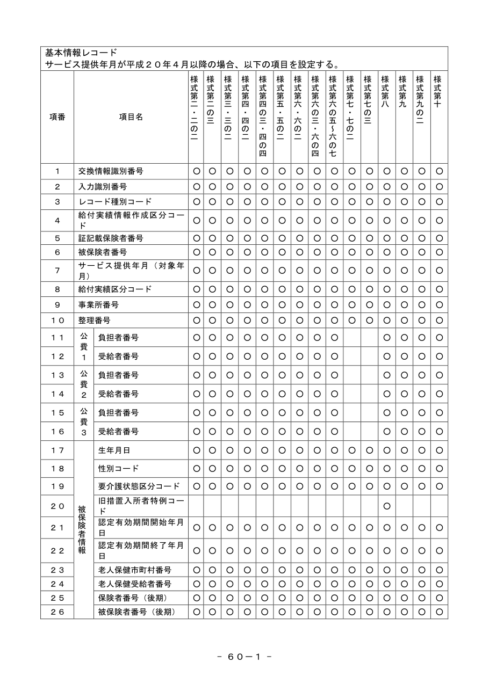
| 項番 | 項目名 | 属性 | 桁数 | 内容 | 必須 | 備考 | その他の列 |
|---|---|---|---|---|---|---|---|
| １ | 交換情報識別番号 | 様式第二・二の二:○ 様式第二の三:○ 様式第三・三の二:○ 様式第四・四の二:○ 様式第四の三・四の四:○ 様式第五・五の二:○ 様式第六・六の二:○ 様式第六の三・六の四:○ 様式第六の五～六の七:○ 様式第七・七の二:○ 様式第七の三:○ 様式第八:○ 様式第九:○ 様式第九の二:○ 様式第十:○ | |||||
| ２ | 入力識別番号 | 様式第二・二の二:○ 様式第二の三:○ 様式第三・三の二:○ 様式第四・四の二:○ 様式第四の三・四の四:○ 様式第五・五の二:○ 様式第六・六の二:○ 様式第六の三・六の四:○ 様式第六の五～六の七:○ 様式第七・七の二:○ 様式第七の三:○ 様式第八:○ 様式第九:○ 様式第九の二:○ 様式第十:○ | |||||
| ３ | レコード種別コード | 様式第二・二の二:○ 様式第二の三:○ 様式第三・三の二:○ 様式第四・四の二:○ 様式第四の三・四の四:○ 様式第五・五の二:○ 様式第六・六の二:○ 様式第六の三・六の四:○ 様式第六の五～六の七:○ 様式第七・七の二:○ 様式第七の三:○ 様式第八:○ 様式第九:○ 様式第九の二:○ 様式第十:○ | |||||
| ４ | 給付実績情報作成区分コード | 様式第二・二の二:○ 様式第二の三:○ 様式第三・三の二:○ 様式第四・四の二:○ 様式第四の三・四の四:○ 様式第五・五の二:○ 様式第六・六の二:○ 様式第六の三・六の四:○ 様式第六の五～六の七:○ 様式第七・七の二:○ 様式第七の三:○ 様式第八:○ 様式第九:○ 様式第九の二:○ 様式第十:○ | |||||
| ５ | 証記載保険者番号 | 様式第二・二の二:○ 様式第二の三:○ 様式第三・三の二:○ 様式第四・四の二:○ 様式第四の三・四の四:○ 様式第五・五の二:○ 様式第六・六の二:○ 様式第六の三・六の四:○ 様式第六の五～六の七:○ 様式第七・七の二:○ 様式第七の三:○ 様式第八:○ 様式第九:○ 様式第九の二:○ 様式第十:○ | |||||
| ６ | 被保険者番号 | 様式第二・二の二:○ 様式第二の三:○ 様式第三・三の二:○ 様式第四・四の二:○ 様式第四の三・四の四:○ 様式第五・五の二:○ 様式第六・六の二:○ 様式第六の三・六の四:○ 様式第六の五～六の七:○ 様式第七・七の二:○ 様式第七の三:○ 様式第八:○ 様式第九:○ 様式第九の二:○ 様式第十:○ | |||||
| ７ | サービス提供年月（対象年月） | 様式第二・二の二:○ 様式第二の三:○ 様式第三・三の二:○ 様式第四・四の二:○ 様式第四の三・四の四:○ 様式第五・五の二:○ 様式第六・六の二:○ 様式第六の三・六の四:○ 様式第六の五～六の七:○ 様式第七・七の二:○ 様式第七の三:○ 様式第八:○ 様式第九:○ 様式第九の二:○ 様式第十:○ | |||||
| ８ | 給付実績区分コード | 様式第二・二の二:○ 様式第二の三:○ 様式第三・三の二:○ 様式第四・四の二:○ 様式第四の三・四の四:○ 様式第五・五の二:○ 様式第六・六の二:○ 様式第六の三・六の四:○ 様式第六の五～六の七:○ 様式第七・七の二:○ 様式第七の三:○ 様式第八:○ 様式第九:○ 様式第九の二:○ 様式第十:○ | |||||
| ９ | 事業所番号 | 様式第二・二の二:○ 様式第二の三:○ 様式第三・三の二:○ 様式第四・四の二:○ 様式第四の三・四の四:○ 様式第五・五の二:○ 様式第六・六の二:○ 様式第六の三・六の四:○ 様式第六の五～六の七:○ 様式第七・七の二:○ 様式第七の三:○ 様式第八:○ 様式第九:○ 様式第九の二:○ 様式第十:○ | |||||
| １０ | 整理番号 | 様式第二・二の二:○ 様式第二の三:○ 様式第三・三の二:○ 様式第四・四の二:○ 様式第四の三・四の四:○ 様式第五・五の二:○ 様式第六・六の二:○ 様式第六の三・六の四:○ 様式第六の五～六の七:○ 様式第七・七の二:○ 様式第七の三:○ 様式第八:○ 様式第九:○ 様式第九の二:○ 様式第十:○ | |||||
| １１ | 公費1 > 負担者番号 | 様式第二・二の二:○ 様式第二の三:○ 様式第三・三の二:○ 様式第四・四の二:○ 様式第四の三・四の四:○ 様式第五・五の二:○ 様式第六・六の二:○ 様式第六の三・六の四:○ 様式第六の五～六の七:○ 様式第七・七の二:－ 様式第七の三:－ 様式第八:○ 様式第九:○ 様式第九の二:○ 様式第十:○ | |||||
| １２ | 公費1 > 受給者番号 | 様式第二・二の二:○ 様式第二の三:○ 様式第三・三の二:○ 様式第四・四の二:○ 様式第四の三・四の四:○ 様式第五・五の二:○ 様式第六・六の二:○ 様式第六の三・六の四:○ 様式第六の五～六の七:○ 様式第七・七の二:－ 様式第七の三:－ 様式第八:○ 様式第九:○ 様式第九の二:○ 様式第十:○ | |||||
| １３ | 公費2 > 負担者番号 | 様式第二・二の二:○ 様式第二の三:○ 様式第三・三の二:○ 様式第四・四の二:○ 様式第四の三・四の四:○ 様式第五・五の二:○ 様式第六・六の二:○ 様式第六の三・六の四:○ 様式第六の五～六の七:○ 様式第七・七の二:－ 様式第七の三:－ 様式第八:○ 様式第九:○ 様式第九の二:○ 様式第十:○ | |||||
| １４ | 公費2 > 受給者番号 | 様式第二・二の二:○ 様式第二の三:○ 様式第三・三の二:○ 様式第四・四の二:○ 様式第四の三・四の四:○ 様式第五・五の二:○ 様式第六・六の二:○ 様式第六の三・六の四:○ 様式第六の五～六の七:○ 様式第七・七の二:－ 様式第七の三:－ 様式第八:○ 様式第九:○ 様式第九の二:○ 様式第十:○ | |||||
| １５ | 公費3 > 負担者番号 | 様式第二・二の二:○ 様式第二の三:○ 様式第三・三の二:○ 様式第四・四の二:○ 様式第四の三・四の四:○ 様式第五・五の二:○ 様式第六・六の二:○ 様式第六の三・六の四:○ 様式第六の五～六の七:○ 様式第七・七の二:－ 様式第七の三:－ 様式第八:○ 様式第九:○ 様式第九の二:○ 様式第十:○ | |||||
| １６ | 公費3 > 受給者番号 | 様式第二・二の二:○ 様式第二の三:○ 様式第三・三の二:○ 様式第四・四の二:○ 様式第四の三・四の四:○ 様式第五・五の二:○ 様式第六・六の二:○ 様式第六の三・六の四:○ 様式第六の五～六の七:○ 様式第七・七の二:－ 様式第七の三:－ 様式第八:○ 様式第九:○ 様式第九の二:○ 様式第十:○ | |||||
| １７ | 被保険者情報 > 生年月日 | 様式第二・二の二:○ 様式第二の三:○ 様式第三・三の二:○ 様式第四・四の二:○ 様式第四の三・四の四:○ 様式第五・五の二:○ 様式第六・六の二:○ 様式第六の三・六の四:○ 様式第六の五～六の七:○ 様式第七・七の二:○ 様式第七の三:○ 様式第八:○ 様式第九:○ 様式第九の二:○ 様式第十:○ | |||||
| １８ | 被保険者情報 > 性別コード | 様式第二・二の二:○ 様式第二の三:○ 様式第三・三の二:○ 様式第四・四の二:○ 様式第四の三・四の四:○ 様式第五・五の二:○ 様式第六・六の二:○ 様式第六の三・六の四:○ 様式第六の五～六の七:○ 様式第七・七の二:○ 様式第七の三:○ 様式第八:○ 様式第九:○ 様式第九の二:○ 様式第十:○ | |||||
| １９ | 被保険者情報 > 要介護状態区分コード | 様式第二・二の二:○ 様式第二の三:○ 様式第三・三の二:○ 様式第四・四の二:○ 様式第四の三・四の四:○ 様式第五・五の二:○ 様式第六・六の二:○ 様式第六の三・六の四:○ 様式第六の五～六の七:○ 様式第七・七の二:○ 様式第七の三:○ 様式第八:○ 様式第九:○ 様式第九の二:○ 様式第十:○ | |||||
| ２０ | 被保険者情報 > 旧措置入所者特例コード | 様式第二・二の二:－ 様式第二の三:－ 様式第三・三の二:－ 様式第四・四の二:－ 様式第四の三・四の四:－ 様式第五・五の二:－ 様式第六・六の二:－ 様式第六の三・六の四:－ 様式第六の五～六の七:－ 様式第七・七の二:－ 様式第七の三:－ 様式第八:○ 様式第九:－ 様式第九の二:－ 様式第十:－ | |||||
| ２１ | 被保険者情報 > 認定有効期間開始年月日 | 様式第二・二の二:○ 様式第二の三:○ 様式第三・三の二:○ 様式第四・四の二:○ 様式第四の三・四の四:○ 様式第五・五の二:○ 様式第六・六の二:○ 様式第六の三・六の四:○ 様式第六の五～六の七:○ 様式第七・七の二:○ 様式第七の三:○ 様式第八:○ 様式第九:○ 様式第九の二:○ 様式第十:○ | |||||
| ２２ | 被保険者情報 > 認定有効期間終了年月日 | 様式第二・二の二:○ 様式第二の三:○ 様式第三・三の二:○ 様式第四・四の二:○ 様式第四の三・四の四:○ 様式第五・五の二:○ 様式第六・六の二:○ 様式第六の三・六の四:○ 様式第六の五～六の七:○ 様式第七・七の二:○ 様式第七の三:○ 様式第八:○ 様式第九:○ 様式第九の二:○ 様式第十:○ | |||||
| ２３ | 被保険者情報 > 老人保健市町村番号 | 様式第二・二の二:○ 様式第二の三:○ 様式第三・三の二:○ 様式第四・四の二:○ 様式第四の三・四の四:○ 様式第五・五の二:○ 様式第六・六の二:○ 様式第六の三・六の四:○ 様式第六の五～六の七:○ 様式第七・七の二:○ 様式第七の三:○ 様式第八:○ 様式第九:○ 様式第九の二:○ 様式第十:○ | |||||
| ２４ | 被保険者情報 > 老人保健受給者番号 | 様式第二・二の二:○ 様式第二の三:○ 様式第三・三の二:○ 様式第四・四の二:○ 様式第四の三・四の四:○ 様式第五・五の二:○ 様式第六・六の二:○ 様式第六の三・六の四:○ 様式第六の五～六の七:○ 様式第七・七の二:○ 様式第七の三:○ 様式第八:○ 様式第九:○ 様式第九の二:○ 様式第十:○ | |||||
| ２５ | 被保険者情報 > 保険者番号（後期） | 様式第二・二の二:○ 様式第二の三:○ 様式第三・三の二:○ 様式第四・四の二:○ 様式第四の三・四の四:○ 様式第五・五の二:○ 様式第六・六の二:○ 様式第六の三・六の四:○ 様式第六の五～六の七:○ 様式第七・七の二:○ 様式第七の三:○ 様式第八:○ 様式第九:○ 様式第九の二:○ 様式第十:○ | |||||
| ２６ | 被保険者情報 > 被保険者番号（後期） | 様式第二・二の二:○ 様式第二の三:○ 様式第三・三の二:○ 様式第四・四の二:○ 様式第四の三・四の四:○ 様式第五・五の二:○ 様式第六・六の二:○ 様式第六の三・六の四:○ 様式第六の五～六の七:○ 様式第七・七の二:○ 様式第七の三:○ 様式第八:○ 様式第九:○ 様式第九の二:○ 様式第十:○ |
| 項番 | 項目名 | 属性 | 桁数 | 内容 | 必須 | 備考 | その他の列 |
|---|---|---|---|---|---|---|---|
| 1 | 交換情報識別番号 | 様式第二・二の二:○ 様式第二の三:○ 様式第三・三の二:○ 様式第四・四の二:○ 様式第四の三・四の四:○ 様式第五・五の二:○ 様式第六・六の二:○ 様式第六の三・六の四:○ 様式第六の五～六の七:○ 様式第七・七の二:○ 様式第七の三:○ 様式第八:○ 様式第九:○ 様式第九の二:○ 様式第十:○ | |||||
| 2 | 入力識別番号 | 様式第二・二の二:○ 様式第二の三:○ 様式第三・三の二:○ 様式第四・四の二:○ 様式第四の三・四の四:○ 様式第五・五の二:○ 様式第六・六の二:○ 様式第六の三・六の四:○ 様式第六の五～六の七:○ 様式第七・七の二:○ 様式第七の三:○ 様式第八:○ 様式第九:○ 様式第九の二:○ 様式第十:○ | |||||
| 3 | レコード種別コード | 様式第二・二の二:○ 様式第二の三:○ 様式第三・三の二:○ 様式第四・四の二:○ 様式第四の三・四の四:○ 様式第五・五の二:○ 様式第六・六の二:○ 様式第六の三・六の四:○ 様式第六の五～六の七:○ 様式第七・七の二:○ 様式第七の三:○ 様式第八:○ 様式第九:○ 様式第九の二:○ 様式第十:○ | |||||
| 4 | 給付実績情報作成区分コード | 様式第二・二の二:○ 様式第二の三:○ 様式第三・三の二:○ 様式第四・四の二:○ 様式第四の三・四の四:○ 様式第五・五の二:○ 様式第六・六の二:○ 様式第六の三・六の四:○ 様式第六の五～六の七:○ 様式第七・七の二:○ 様式第七の三:○ 様式第八:○ 様式第九:○ 様式第九の二:○ 様式第十:○ | |||||
| 5 | 証記載保険者番号 | 様式第二・二の二:○ 様式第二の三:○ 様式第三・三の二:○ 様式第四・四の二:○ 様式第四の三・四の四:○ 様式第五・五の二:○ 様式第六・六の二:○ 様式第六の三・六の四:○ 様式第六の五～六の七:○ 様式第七・七の二:○ 様式第七の三:○ 様式第八:○ 様式第九:○ 様式第九の二:○ 様式第十:○ | |||||
| 6 | 被保険者番号 | 様式第二・二の二:○ 様式第二の三:○ 様式第三・三の二:○ 様式第四・四の二:○ 様式第四の三・四の四:○ 様式第五・五の二:○ 様式第六・六の二:○ 様式第六の三・六の四:○ 様式第六の五～六の七:○ 様式第七・七の二:○ 様式第七の三:○ 様式第八:○ 様式第九:○ 様式第九の二:○ 様式第十:○ | |||||
| 7 | サービス提供年月（対象年月） | 様式第二・二の二:○ 様式第二の三:○ 様式第三・三の二:○ 様式第四・四の二:○ 様式第四の三・四の四:○ 様式第五・五の二:○ 様式第六・六の二:○ 様式第六の三・六の四:○ 様式第六の五～六の七:○ 様式第七・七の二:○ 様式第七の三:○ 様式第八:○ 様式第九:○ 様式第九の二:○ 様式第十:○ | |||||
| 8 | 給付実績区分コード | 様式第二・二の二:○ 様式第二の三:○ 様式第三・三の二:○ 様式第四・四の二:○ 様式第四の三・四の四:○ 様式第五・五の二:○ 様式第六・六の二:○ 様式第六の三・六の四:○ 様式第六の五～六の七:○ 様式第七・七の二:○ 様式第七の三:○ 様式第八:○ 様式第九:○ 様式第九の二:○ 様式第十:○ | |||||
| 9 | 事業所番号 | 様式第二・二の二:○ 様式第二の三:○ 様式第三・三の二:○ 様式第四・四の二:○ 様式第四の三・四の四:○ 様式第五・五の二:○ 様式第六・六の二:○ 様式第六の三・六の四:○ 様式第六の五～六の七:○ 様式第七・七の二:○ 様式第七の三:○ 様式第八:○ 様式第九:○ 様式第九の二:○ 様式第十:○ | |||||
| 10 | 整理番号 | 様式第二・二の二:○ 様式第二の三:○ 様式第三・三の二:○ 様式第四・四の二:○ 様式第四の三・四の四:○ 様式第五・五の二:○ 様式第六・六の二:○ 様式第六の三・六の四:○ 様式第六の五～六の七:○ 様式第七・七の二:○ 様式第七の三:○ 様式第八:○ 様式第九:○ 様式第九の二:○ 様式第十:○ | |||||
| 11 | 公費1 > 負担者番号 | 様式第二・二の二:○ 様式第二の三:○ 様式第三・三の二:○ 様式第四・四の二:○ 様式第四の三・四の四:○ 様式第五・五の二:○ 様式第六・六の二:○ 様式第六の三・六の四:○ 様式第六の五～六の七:○ 様式第七・七の二:－ 様式第七の三:－ 様式第八:○ 様式第九:○ 様式第九の二:○ 様式第十:○ | |||||
| 12 | 公費1 > 受給者番号 | 様式第二・二の二:○ 様式第二の三:○ 様式第三・三の二:○ 様式第四・四の二:○ 様式第四の三・四の四:○ 様式第五・五の二:○ 様式第六・六の二:○ 様式第六の三・六の四:○ 様式第六の五～六の七:○ 様式第七・七の二:－ 様式第七の三:－ 様式第八:○ 様式第九:○ 様式第九の二:○ 様式第十:○ | |||||
| 13 | 公費2 > 負担者番号 | 様式第二・二の二:○ 様式第二の三:○ 様式第三・三の二:○ 様式第四・四の二:○ 様式第四の三・四の四:○ 様式第五・五の二:○ 様式第六・六の二:○ 様式第六の三・六の四:○ 様式第六の五～六の七:○ 様式第七・七の二:－ 様式第七の三:－ 様式第八:○ 様式第九:○ 様式第九の二:○ 様式第十:○ | |||||
| 14 | 公費2 > 受給者番号 | 様式第二・二の二:○ 様式第二の三:○ 様式第三・三の二:○ 様式第四・四の二:○ 様式第四の三・四の四:○ 様式第五・五の二:○ 様式第六・六の二:○ 様式第六の三・六の四:○ 様式第六の五～六の七:○ 様式第七・七の二:－ 様式第七の三:－ 様式第八:○ 様式第九:○ 様式第九の二:○ 様式第十:○ | |||||
| 15 | 公費3 > 負担者番号 | 様式第二・二の二:○ 様式第二の三:○ 様式第三・三の二:○ 様式第四・四の二:○ 様式第四の三・四の四:○ 様式第五・五の二:○ 様式第六・六の二:○ 様式第六の三・六の四:○ 様式第六の五～六の七:○ 様式第七・七の二:－ 様式第七の三:－ 様式第八:○ 様式第九:○ 様式第九の二:○ 様式第十:○ | |||||
| 16 | 公費3 > 受給者番号 | 様式第二・二の二:○ 様式第二の三:○ 様式第三・三の二:○ 様式第四・四の二:○ 様式第四の三・四の四:○ 様式第五・五の二:○ 様式第六・六の二:○ 様式第六の三・六の四:○ 様式第六の五～六の七:○ 様式第七・七の二:－ 様式第七の三:－ 様式第八:○ 様式第九:○ 様式第九の二:○ 様式第十:○ | |||||
| 17 | 被保険者情報 > 生年月日 | 様式第二・二の二:○ 様式第二の三:○ 様式第三・三の二:○ 様式第四・四の二:○ 様式第四の三・四の四:○ 様式第五・五の二:○ 様式第六・六の二:○ 様式第六の三・六の四:○ 様式第六の五～六の七:○ 様式第七・七の二:○ 様式第七の三:○ 様式第八:○ 様式第九:○ 様式第九の二:○ 様式第十:○ | |||||
| 18 | 被保険者情報 > 性別コード | 様式第二・二の二:○ 様式第二の三:○ 様式第三・三の二:○ 様式第四・四の二:○ 様式第四の三・四の四:○ 様式第五・五の二:○ 様式第六・六の二:○ 様式第六の三・六の四:○ 様式第六の五～六の七:○ 様式第七・七の二:○ 様式第七の三:○ 様式第八:○ 様式第九:○ 様式第九の二:○ 様式第十:○ | |||||
| 19 | 被保険者情報 > 要介護状態区分コード | 様式第二・二の二:○ 様式第二の三:○ 様式第三・三の二:○ 様式第四・四の二:○ 様式第四の三・四の四:○ 様式第五・五の二:○ 様式第六・六の二:○ 様式第六の三・六の四:○ 様式第六の五～六の七:○ 様式第七・七の二:○ 様式第七の三:○ 様式第八:○ 様式第九:○ 様式第九の二:○ 様式第十:○ | |||||
| 20 | 被保険者情報 > 旧措置入所者特例コード | 様式第二・二の二:－ 様式第二の三:－ 様式第三・三の二:－ 様式第四・四の二:－ 様式第四の三・四の四:－ 様式第五・五の二:－ 様式第六・六の二:－ 様式第六の三・六の四:－ 様式第六の五～六の七:－ 様式第七・七の二:－ 様式第七の三:－ 様式第八:○ 様式第九:－ 様式第九の二:－ 様式第十:－ | |||||
| 21 | 被保険者情報 > 認定有効期間開始年月日 | 様式第二・二の二:○ 様式第二の三:○ 様式第三・三の二:○ 様式第四・四の二:○ 様式第四の三・四の四:○ 様式第五・五の二:○ 様式第六・六の二:○ 様式第六の三・六の四:○ 様式第六の五～六の七:○ 様式第七・七の二:○ 様式第七の三:○ 様式第八:○ 様式第九:○ 様式第九の二:○ 様式第十:○ | |||||
| 22 | 被保険者情報 > 認定有効期間終了年月日 | 様式第二・二の二:○ 様式第二の三:○ 様式第三・三の二:○ 様式第四・四の二:○ 様式第四の三・四の四:○ 様式第五・五の二:○ 様式第六・六の二:○ 様式第六の三・六の四:○ 様式第六の五～六の七:○ 様式第七・七の二:○ 様式第七の三:○ 様式第八:○ 様式第九:○ 様式第九の二:○ 様式第十:○ | |||||
| 23 | 被保険者情報 > 老人保健市町村番号 | 様式第二・二の二:○ 様式第二の三:○ 様式第三・三の二:○ 様式第四・四の二:○ 様式第四の三・四の四:○ 様式第五・五の二:○ 様式第六・六の二:○ 様式第六の三・六の四:○ 様式第六の五～六の七:○ 様式第七・七の二:○ 様式第七の三:○ 様式第八:○ 様式第九:○ 様式第九の二:○ 様式第十:○ | |||||
| 24 | 被保険者情報 > 老人保健受給者番号 | 様式第二・二の二:○ 様式第二の三:○ 様式第三・三の二:○ 様式第四・四の二:○ 様式第四の三・四の四:○ 様式第五・五の二:○ 様式第六・六の二:○ 様式第六の三・六の四:○ 様式第六の五～六の七:○ 様式第七・七の二:○ 様式第七の三:○ 様式第八:○ 様式第九:○ 様式第九の二:○ 様式第十:○ | |||||
| 25 | 被保険者情報 > 保険者番号（後期） | 様式第二・二の二:○ 様式第二の三:○ 様式第三・三の二:○ 様式第四・四の二:○ 様式第四の三・四の四:○ 様式第五・五の二:○ 様式第六・六の二:○ 様式第六の三・六の四:○ 様式第六の五～六の七:○ 様式第七・七の二:○ 様式第七の三:○ 様式第八:○ 様式第九:○ 様式第九の二:○ 様式第十:○ | |||||
| 26 | 被保険者情報 > 被保険者番号（後期） | 様式第二・二の二:○ 様式第二の三:○ 様式第三・三の二:○ 様式第四・四の二:○ 様式第四の三・四の四:○ 様式第五・五の二:○ 様式第六・六の二:○ 様式第六の三・六の四:○ 様式第六の五～六の七:○ 様式第七・七の二:○ 様式第七の三:○ 様式第八:○ 様式第九:○ 様式第九の二:○ 様式第十:○ |
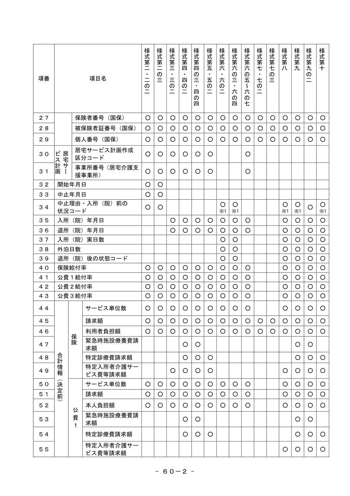
| 項番 | 項目名 | 属性 | 桁数 | 内容 | 必須 | 備考 | その他の列 |
|---|---|---|---|---|---|---|---|
| 27 | 保険者番号（国保） | 様式第二・二の二:○ 様式第二の三:○ 様式第三・三の二:○ 様式第四・四の二:○ 様式第四の三・四の四:○ 様式第五・五の二:○ 様式第六・六の二:○ 様式第六の三・六の四:○ 様式第六の五～六の七:○ 様式第七・七の二:○ 様式第七の三:○ 様式第八:○ 様式第九:○ 様式第九の二:○ 様式第十:○ | |||||
| 28 | 被保険者証番号（国保） | 様式第二・二の二:○ 様式第二の三:○ 様式第三・三の二:○ 様式第四・四の二:○ 様式第四の三・四の四:○ 様式第五・五の二:○ 様式第六・六の二:○ 様式第六の三・六の四:○ 様式第六の五～六の七:○ 様式第七・七の二:○ 様式第七の三:○ 様式第八:○ 様式第九:○ 様式第九の二:○ 様式第十:○ | |||||
| 29 | 個人番号（国保） | 様式第二・二の二:○ 様式第二の三:○ 様式第三・三の二:○ 様式第四・四の二:○ 様式第四の三・四の四:○ 様式第五・五の二:○ 様式第六・六の二:○ 様式第六の三・六の四:○ 様式第六の五～六の七:○ 様式第七・七の二:○ 様式第七の三:○ 様式第八:○ 様式第九:○ 様式第九の二:○ 様式第十:○ | |||||
| 30 | 居宅サービス計画 > 居宅サービス計画作成区分コード | 様式第二・二の二:○ 様式第二の三:○ 様式第三・三の二:○ 様式第四・四の二:○ 様式第四の三・四の四:○ 様式第五・五の二:○ 様式第六・六の二:－ 様式第六の三・六の四:－ 様式第六の五～六の七:○ 様式第七・七の二:－ 様式第七の三:－ 様式第八:－ 様式第九:－ 様式第九の二:－ 様式第十:－ | |||||
| 31 | 居宅サービス計画 > 事業所番号（居宅介護支援事業所） | 様式第二・二の二:○ 様式第二の三:○ 様式第三・三の二:○ 様式第四・四の二:○ 様式第四の三・四の四:○ 様式第五・五の二:○ 様式第六・六の二:－ 様式第六の三・六の四:－ 様式第六の五～六の七:○ 様式第七・七の二:－ 様式第七の三:－ 様式第八:－ 様式第九:－ 様式第九の二:－ 様式第十:－ | |||||
| 32 | 開始年月日 | 様式第二・二の二:○ 様式第二の三:○ 様式第三・三の二:－ 様式第四・四の二:－ 様式第四の三・四の四:－ 様式第五・五の二:－ 様式第六・六の二:－ 様式第六の三・六の四:－ 様式第六の五～六の七:－ 様式第七・七の二:－ 様式第七の三:－ 様式第八:－ 様式第九:－ 様式第九の二:－ 様式第十:－ | |||||
| 33 | 中止年月日 | 様式第二・二の二:○ 様式第二の三:○ 様式第三・三の二:－ 様式第四・四の二:－ 様式第四の三・四の四:－ 様式第五・五の二:－ 様式第六・六の二:－ 様式第六の三・六の四:－ 様式第六の五～六の七:－ 様式第七・七の二:－ 様式第七の三:－ 様式第八:－ 様式第九:－ 様式第九の二:－ 様式第十:－ | |||||
| 34 | 中止理由・入所（院）前の状況コード | 様式第二・二の二:○ 様式第二の三:○ 様式第三・三の二:－ 様式第四・四の二:－ 様式第四の三・四の四:－ 様式第五・五の二:－ 様式第六・六の二:○※1 様式第六の三・六の四:○※1 様式第六の五～六の七:－ 様式第七・七の二:－ 様式第七の三:－ 様式第八:○※1 様式第九:○※1 様式第九の二:○ 様式第十:○※1 | |||||
| 35 | 入所（院）年月日 | 様式第二・二の二:－ 様式第二の三:－ 様式第三・三の二:○ 様式第四・四の二:○ 様式第四の三・四の四:○ 様式第五・五の二:○ 様式第六・六の二:○ 様式第六の三・六の四:○ 様式第六の五～六の七:○ 様式第七・七の二:－ 様式第七の三:－ 様式第八:○ 様式第九:○ 様式第九の二:○ 様式第十:○ | |||||
| 36 | 退所（院）年月日 | 様式第二・二の二:－ 様式第二の三:－ 様式第三・三の二:○ 様式第四・四の二:○ 様式第四の三・四の四:○ 様式第五・五の二:○ 様式第六・六の二:○ 様式第六の三・六の四:○ 様式第六の五～六の七:○ 様式第七・七の二:－ 様式第七の三:－ 様式第八:○ 様式第九:○ 様式第九の二:○ 様式第十:○ | |||||
| 37 | 入所（院）実日数 | 様式第二・二の二:－ 様式第二の三:－ 様式第三・三の二:－ 様式第四・四の二:－ 様式第四の三・四の四:－ 様式第五・五の二:－ 様式第六・六の二:○ 様式第六の三・六の四:○ 様式第六の五～六の七:－ 様式第七・七の二:－ 様式第七の三:－ 様式第八:○ 様式第九:○ 様式第九の二:○ 様式第十:○ | |||||
| 38 | 外泊日数 | 様式第二・二の二:－ 様式第二の三:－ 様式第三・三の二:－ 様式第四・四の二:－ 様式第四の三・四の四:－ 様式第五・五の二:－ 様式第六・六の二:○ 様式第六の三・六の四:○ 様式第六の五～六の七:－ 様式第七・七の二:－ 様式第七の三:－ 様式第八:○ 様式第九:○ 様式第九の二:○ 様式第十:○ | |||||
| 39 | 退所（院）後の状態コード | 様式第二・二の二:－ 様式第二の三:－ 様式第三・三の二:－ 様式第四・四の二:－ 様式第四の三・四の四:－ 様式第五・五の二:－ 様式第六・六の二:○ 様式第六の三・六の四:○ 様式第六の五～六の七:－ 様式第七・七の二:－ 様式第七の三:－ 様式第八:○ 様式第九:○ 様式第九の二:○ 様式第十:○ | |||||
| 40 | 保険給付率 | 様式第二・二の二:○ 様式第二の三:○ 様式第三・三の二:○ 様式第四・四の二:○ 様式第四の三・四の四:○ 様式第五・五の二:○ 様式第六・六の二:○ 様式第六の三・六の四:○ 様式第六の五～六の七:○ 様式第七・七の二:－ 様式第七の三:－ 様式第八:○ 様式第九:○ 様式第九の二:○ 様式第十:○ | |||||
| 41 | 公費1給付率 | 様式第二・二の二:○ 様式第二の三:○ 様式第三・三の二:○ 様式第四・四の二:○ 様式第四の三・四の四:○ 様式第五・五の二:○ 様式第六・六の二:○ 様式第六の三・六の四:○ 様式第六の五～六の七:○ 様式第七・七の二:－ 様式第七の三:－ 様式第八:○ 様式第九:○ 様式第九の二:○ 様式第十:○ | |||||
| 42 | 公費2給付率 | 様式第二・二の二:○ 様式第二の三:○ 様式第三・三の二:○ 様式第四・四の二:○ 様式第四の三・四の四:○ 様式第五・五の二:○ 様式第六・六の二:○ 様式第六の三・六の四:○ 様式第六の五～六の七:○ 様式第七・七の二:－ 様式第七の三:－ 様式第八:○ 様式第九:○ 様式第九の二:○ 様式第十:○ | |||||
| 43 | 公費3給付率 | 様式第二・二の二:○ 様式第二の三:○ 様式第三・三の二:○ 様式第四・四の二:○ 様式第四の三・四の四:○ 様式第五・五の二:○ 様式第六・六の二:○ 様式第六の三・六の四:○ 様式第六の五～六の七:○ 様式第七・七の二:－ 様式第七の三:－ 様式第八:○ 様式第九:○ 様式第九の二:○ 様式第十:○ | |||||
| 44 | 合計情報（決定前） > 保険 > サービス単位数 | 様式第二・二の二:○ 様式第二の三:○ 様式第三・三の二:○ 様式第四・四の二:○ 様式第四の三・四の四:○ 様式第五・五の二:○ 様式第六・六の二:○ 様式第六の三・六の四:○ 様式第六の五～六の七:○ 様式第七・七の二:－ 様式第七の三:－ 様式第八:○ 様式第九:○ 様式第九の二:○ 様式第十:○ | |||||
| 45 | 合計情報（決定前） > 保険 > 請求額 | 様式第二・二の二:○ 様式第二の三:○ 様式第三・三の二:○ 様式第四・四の二:○ 様式第四の三・四の四:○ 様式第五・五の二:○ 様式第六・六の二:○ 様式第六の三・六の四:○ 様式第六の五～六の七:○ 様式第七・七の二:○ 様式第七の三:○ 様式第八:○ 様式第九:○ 様式第九の二:○ 様式第十:○ | |||||
| 46 | 合計情報（決定前） > 保険 > 利用者負担額 | 様式第二・二の二:○ 様式第二の三:○ 様式第三・三の二:○ 様式第四・四の二:○ 様式第四の三・四の四:○ 様式第五・五の二:○ 様式第六・六の二:○ 様式第六の三・六の四:○ 様式第六の五～六の七:○ 様式第七・七の二:○ 様式第七の三:○ 様式第八:○ 様式第九:○ 様式第九の二:○ 様式第十:○ | |||||
| 47 | 合計情報（決定前） > 保険 > 緊急時施設療養費請求額 | 様式第二・二の二:－ 様式第二の三:－ 様式第三・三の二:－ 様式第四・四の二:○ 様式第四の三・四の四:○ 様式第五・五の二:－ 様式第六・六の二:－ 様式第六の三・六の四:－ 様式第六の五～六の七:－ 様式第七・七の二:－ 様式第七の三:－ 様式第八:－ 様式第九:○ 様式第九の二:○ 様式第十:－ | |||||
| 48 | 合計情報（決定前） > 保険 > 特定診療費請求額 | 様式第二・二の二:－ 様式第二の三:－ 様式第三・三の二:－ 様式第四・四の二:○ 様式第四の三・四の四:○ 様式第五・五の二:○ 様式第六・六の二:－ 様式第六の三・六の四:－ 様式第六の五～六の七:－ 様式第七・七の二:－ 様式第七の三:－ 様式第八:－ 様式第九:○ 様式第九の二:○ 様式第十:○ | |||||
| 49 | 合計情報（決定前） > 保険 > 特定入所者介護サービス費等請求額 | 様式第二・二の二:－ 様式第二の三:－ 様式第三・三の二:○ 様式第四・四の二:○ 様式第四の三・四の四:○ 様式第五・五の二:○ 様式第六・六の二:－ 様式第六の三・六の四:－ 様式第六の五～六の七:－ 様式第七・七の二:－ 様式第七の三:－ 様式第八:○ 様式第九:○ 様式第九の二:○ 様式第十:○ | |||||
| 50 | 合計情報（決定前） > 公費1 > サービス単位数 | 様式第二・二の二:○ 様式第二の三:○ 様式第三・三の二:○ 様式第四・四の二:○ 様式第四の三・四の四:○ 様式第五・五の二:○ 様式第六・六の二:○ 様式第六の三・六の四:○ 様式第六の五～六の七:○ 様式第七・七の二:－ 様式第七の三:－ 様式第八:○ 様式第九:○ 様式第九の二:○ 様式第十:○ | |||||
| 51 | 合計情報（決定前） > 公費1 > 請求額 | 様式第二・二の二:○ 様式第二の三:○ 様式第三・三の二:○ 様式第四・四の二:○ 様式第四の三・四の四:○ 様式第五・五の二:○ 様式第六・六の二:○ 様式第六の三・六の四:○ 様式第六の五～六の七:○ 様式第七・七の二:－ 様式第七の三:－ 様式第八:○ 様式第九:○ 様式第九の二:○ 様式第十:○ | |||||
| 52 | 合計情報（決定前） > 公費1 > 本人負担額 | 様式第二・二の二:○ 様式第二の三:○ 様式第三・三の二:○ 様式第四・四の二:○ 様式第四の三・四の四:○ 様式第五・五の二:○ 様式第六・六の二:○ 様式第六の三・六の四:○ 様式第六の五～六の七:○ 様式第七・七の二:－ 様式第七の三:－ 様式第八:○ 様式第九:○ 様式第九の二:○ 様式第十:○ | |||||
| 53 | 合計情報（決定前） > 公費1 > 緊急時施設療養費請求額 | 様式第二・二の二:－ 様式第二の三:－ 様式第三・三の二:－ 様式第四・四の二:○ 様式第四の三・四の四:○ 様式第五・五の二:－ 様式第六・六の二:－ 様式第六の三・六の四:－ 様式第六の五～六の七:－ 様式第七・七の二:－ 様式第七の三:－ 様式第八:－ 様式第九:○ 様式第九の二:○ 様式第十:－ | |||||
| 54 | 合計情報（決定前） > 公費1 > 特定診療費請求額 | 様式第二・二の二:－ 様式第二の三:－ 様式第三・三の二:－ 様式第四・四の二:○ 様式第四の三・四の四:○ 様式第五・五の二:○ 様式第六・六の二:－ 様式第六の三・六の四:－ 様式第六の五～六の七:－ 様式第七・七の二:－ 様式第七の三:－ 様式第八:－ 様式第九:○ 様式第九の二:○ 様式第十:○ | |||||
| 55 | 合計情報（決定前） > 公費1 > 特定入所者介護サービス費等請求額 | 様式第二・二の二:－ 様式第二の三:－ 様式第三・三の二:－ 様式第四・四の二:－ 様式第四の三・四の四:－ 様式第五・五の二:－ 様式第六・六の二:－ 様式第六の三・六の四:－ 様式第六の五～六の七:－ 様式第七・七の二:－ 様式第七の三:－ 様式第八:○ 様式第九:○ 様式第九の二:○ 様式第十:○ |
| 項番 | 項目名 | 属性 | 桁数 | 内容 | 必須 | 備考 | その他の列 |
|---|---|---|---|---|---|---|---|
| 27 | 保険者番号（国保） | 様式第二・二の二:○ 様式第二の三:○ 様式第三・三の二:○ 様式第四・四の二:○ 様式第四の三・四の四:○ 様式第五・五の二:○ 様式第六・六の二:○ 様式第六の三・六の四:○ 様式第六の五～六の七:○ 様式第七・七の二:○ 様式第七の三:○ 様式第八:○ 様式第九:○ 様式第九の二:○ 様式第十:○ | |||||
| 28 | 被保険者証番号（国保） | 様式第二・二の二:○ 様式第二の三:○ 様式第三・三の二:○ 様式第四・四の二:○ 様式第四の三・四の四:○ 様式第五・五の二:○ 様式第六・六の二:○ 様式第六の三・六の四:○ 様式第六の五～六の七:○ 様式第七・七の二:○ 様式第七の三:○ 様式第八:○ 様式第九:○ 様式第九の二:○ 様式第十:○ | |||||
| 29 | 個人番号（国保） | 様式第二・二の二:○ 様式第二の三:○ 様式第三・三の二:○ 様式第四・四の二:○ 様式第四の三・四の四:○ 様式第五・五の二:○ 様式第六・六の二:○ 様式第六の三・六の四:○ 様式第六の五～六の七:○ 様式第七・七の二:○ 様式第七の三:○ 様式第八:○ 様式第九:○ 様式第九の二:○ 様式第十:○ | |||||
| 30 | 居宅サービス計画 > 居宅サービス計画作成区分コード | 様式第二・二の二:○ 様式第二の三:○ 様式第三・三の二:○ 様式第四・四の二:○ 様式第四の三・四の四:○ 様式第五・五の二:○ 様式第六・六の二:－ 様式第六の三・六の四:－ 様式第六の五～六の七:○ 様式第七・七の二:－ 様式第七の三:－ 様式第八:－ 様式第九:－ 様式第九の二:－ 様式第十:－ | |||||
| 31 | 居宅サービス計画 > 事業所番号（居宅介護支援事業所） | 様式第二・二の二:○ 様式第二の三:○ 様式第三・三の二:○ 様式第四・四の二:○ 様式第四の三・四の四:○ 様式第五・五の二:○ 様式第六・六の二:－ 様式第六の三・六の四:－ 様式第六の五～六の七:○ 様式第七・七の二:－ 様式第七の三:－ 様式第八:－ 様式第九:－ 様式第九の二:－ 様式第十:－ | |||||
| 32 | 開始年月日 | 様式第二・二の二:○ 様式第二の三:○ 様式第三・三の二:－ 様式第四・四の二:－ 様式第四の三・四の四:－ 様式第五・五の二:－ 様式第六・六の二:－ 様式第六の三・六の四:－ 様式第六の五～六の七:－ 様式第七・七の二:－ 様式第七の三:－ 様式第八:－ 様式第九:－ 様式第九の二:－ 様式第十:－ | |||||
| 33 | 中止年月日 | 様式第二・二の二:○ 様式第二の三:○ 様式第三・三の二:－ 様式第四・四の二:－ 様式第四の三・四の四:－ 様式第五・五の二:－ 様式第六・六の二:－ 様式第六の三・六の四:－ 様式第六の五～六の七:－ 様式第七・七の二:－ 様式第七の三:－ 様式第八:－ 様式第九:－ 様式第九の二:－ 様式第十:－ | |||||
| 34 | 中止理由・入所（院）前の状況コード | 様式第二・二の二:○ 様式第二の三:○ 様式第三・三の二:－ 様式第四・四の二:－ 様式第四の三・四の四:－ 様式第五・五の二:－ 様式第六・六の二:○※1 様式第六の三・六の四:○※1 様式第六の五～六の七:－ 様式第七・七の二:－ 様式第七の三:－ 様式第八:○※1 様式第九:○※1 様式第九の二:○ 様式第十:○※1 | |||||
| 35 | 入所（院）年月日 | 様式第二・二の二:－ 様式第二の三:－ 様式第三・三の二:○ 様式第四・四の二:○ 様式第四の三・四の四:○ 様式第五・五の二:○ 様式第六・六の二:○ 様式第六の三・六の四:○ 様式第六の五～六の七:○ 様式第七・七の二:－ 様式第七の三:－ 様式第八:○ 様式第九:○ 様式第九の二:○ 様式第十:○ | |||||
| 36 | 退所（院）年月日 | 様式第二・二の二:－ 様式第二の三:－ 様式第三・三の二:○ 様式第四・四の二:○ 様式第四の三・四の四:○ 様式第五・五の二:○ 様式第六・六の二:○ 様式第六の三・六の四:○ 様式第六の五～六の七:○ 様式第七・七の二:－ 様式第七の三:－ 様式第八:○ 様式第九:○ 様式第九の二:○ 様式第十:○ | |||||
| 37 | 入所（院）実日数 | 様式第二・二の二:－ 様式第二の三:－ 様式第三・三の二:－ 様式第四・四の二:－ 様式第四の三・四の四:－ 様式第五・五の二:－ 様式第六・六の二:○ 様式第六の三・六の四:○ 様式第六の五～六の七:－ 様式第七・七の二:－ 様式第七の三:－ 様式第八:○ 様式第九:○ 様式第九の二:○ 様式第十:○ | |||||
| 38 | 外泊日数 | 様式第二・二の二:－ 様式第二の三:－ 様式第三・三の二:－ 様式第四・四の二:－ 様式第四の三・四の四:－ 様式第五・五の二:－ 様式第六・六の二:○ 様式第六の三・六の四:○ 様式第六の五～六の七:－ 様式第七・七の二:－ 様式第七の三:－ 様式第八:○ 様式第九:○ 様式第九の二:○ 様式第十:○ | |||||
| 39 | 退所（院）後の状態コード | 様式第二・二の二:－ 様式第二の三:－ 様式第三・三の二:－ 様式第四・四の二:－ 様式第四の三・四の四:－ 様式第五・五の二:－ 様式第六・六の二:○ 様式第六の三・六の四:○ 様式第六の五～六の七:－ 様式第七・七の二:－ 様式第七の三:－ 様式第八:○ 様式第九:○ 様式第九の二:○ 様式第十:○ | |||||
| 40 | 保険給付率 | 様式第二・二の二:○ 様式第二の三:○ 様式第三・三の二:○ 様式第四・四の二:○ 様式第四の三・四の四:○ 様式第五・五の二:○ 様式第六・六の二:○ 様式第六の三・六の四:○ 様式第六の五～六の七:○ 様式第七・七の二:－ 様式第七の三:－ 様式第八:○ 様式第九:○ 様式第九の二:○ 様式第十:○ | |||||
| 41 | 公費１給付率 | 様式第二・二の二:○ 様式第二の三:○ 様式第三・三の二:○ 様式第四・四の二:○ 様式第四の三・四の四:○ 様式第五・五の二:○ 様式第六・六の二:○ 様式第六の三・六の四:○ 様式第六の五～六の七:○ 様式第七・七の二:－ 様式第七の三:－ 様式第八:○ 様式第九:○ 様式第九の二:○ 様式第十:○ | |||||
| 42 | 公費２給付率 | 様式第二・二の二:○ 様式第二の三:○ 様式第三・三の二:○ 様式第四・四の二:○ 様式第四の三・四の四:○ 様式第五・五の二:○ 様式第六・六の二:○ 様式第六の三・六の四:○ 様式第六の五～六の七:○ 様式第七・七の二:－ 様式第七の三:－ 様式第八:○ 様式第九:○ 様式第九の二:○ 様式第十:○ | |||||
| 43 | 公費３給付率 | 様式第二・二の二:○ 様式第二の三:○ 様式第三・三の二:○ 様式第四・四の二:○ 様式第四の三・四の四:○ 様式第五・五の二:○ 様式第六・六の二:○ 様式第六の三・六の四:○ 様式第六の五～六の七:○ 様式第七・七の二:－ 様式第七の三:－ 様式第八:○ 様式第九:○ 様式第九の二:○ 様式第十:○ | |||||
| 44 | 合計情報（決定前） > 保険 > サービス単位数 | 様式第二・二の二:○ 様式第二の三:○ 様式第三・三の二:○ 様式第四・四の二:○ 様式第四の三・四の四:○ 様式第五・五の二:○ 様式第六・六の二:○ 様式第六の三・六の四:○ 様式第六の五～六の七:○ 様式第七・七の二:－ 様式第七の三:－ 様式第八:○ 様式第九:○ 様式第九の二:○ 様式第十:○ | |||||
| 45 | 合計情報（決定前） > 保険 > 請求額 | 様式第二・二の二:○ 様式第二の三:○ 様式第三・三の二:○ 様式第四・四の二:○ 様式第四の三・四の四:○ 様式第五・五の二:○ 様式第六・六の二:○ 様式第六の三・六の四:○ 様式第六の五～六の七:○ 様式第七・七の二:○ 様式第七の三:○ 様式第八:○ 様式第九:○ 様式第九の二:○ 様式第十:○ | |||||
| 46 | 合計情報（決定前） > 保険 > 利用者負担額 | 様式第二・二の二:○ 様式第二の三:○ 様式第三・三の二:○ 様式第四・四の二:○ 様式第四の三・四の四:○ 様式第五・五の二:○ 様式第六・六の二:○ 様式第六の三・六の四:○ 様式第六の五～六の七:○ 様式第七・七の二:○ 様式第七の三:○ 様式第八:○ 様式第九:○ 様式第九の二:○ 様式第十:○ | |||||
| 47 | 合計情報（決定前） > 保険 > 緊急時施設療養費請求額 | 様式第二・二の二:－ 様式第二の三:－ 様式第三・三の二:－ 様式第四・四の二:○ 様式第四の三・四の四:○ 様式第五・五の二:－ 様式第六・六の二:－ 様式第六の三・六の四:－ 様式第六の五～六の七:－ 様式第七・七の二:－ 様式第七の三:－ 様式第八:－ 様式第九:○ 様式第九の二:○ 様式第十:－ | |||||
| 48 | 合計情報（決定前） > 保険 > 特定診療費請求額 | 様式第二・二の二:－ 様式第二の三:－ 様式第三・三の二:－ 様式第四・四の二:○ 様式第四の三・四の四:○ 様式第五・五の二:○ 様式第六・六の二:－ 様式第六の三・六の四:－ 様式第六の五～六の七:－ 様式第七・七の二:－ 様式第七の三:－ 様式第八:－ 様式第九:○ 様式第九の二:○ 様式第十:○ | |||||
| 49 | 合計情報（決定前） > 保険 > 特定入所者介護サービス費等請求額 | 様式第二・二の二:－ 様式第二の三:－ 様式第三・三の二:○ 様式第四・四の二:○ 様式第四の三・四の四:○ 様式第五・五の二:○ 様式第六・六の二:－ 様式第六の三・六の四:－ 様式第六の五～六の七:－ 様式第七・七の二:－ 様式第七の三:－ 様式第八:○ 様式第九:○ 様式第九の二:○ 様式第十:○ | |||||
| 50 | 合計情報（決定前） > 公費1 > サービス単位数 | 様式第二・二の二:○ 様式第二の三:○ 様式第三・三の二:○ 様式第四・四の二:○ 様式第四の三・四の四:○ 様式第五・五の二:○ 様式第六・六の二:○ 様式第六の三・六の四:○ 様式第六の五～六の七:○ 様式第七・七の二:－ 様式第七の三:－ 様式第八:○ 様式第九:○ 様式第九の二:○ 様式第十:○ | |||||
| 51 | 合計情報（決定前） > 公費1 > 請求額 | 様式第二・二の二:○ 様式第二の三:○ 様式第三・三の二:○ 様式第四・四の二:○ 様式第四の三・四の四:○ 様式第五・五の二:○ 様式第六・六の二:○ 様式第六の三・六の四:○ 様式第六の五～六の七:○ 様式第七・七の二:－ 様式第七の三:－ 様式第八:○ 様式第九:○ 様式第九の二:○ 様式第十:○ | |||||
| 52 | 合計情報（決定前） > 公費1 > 本人負担額 | 様式第二・二の二:○ 様式第二の三:○ 様式第三・三の二:○ 様式第四・四の二:○ 様式第四の三・四の四:○ 様式第五・五の二:○ 様式第六・六の二:○ 様式第六の三・六の四:○ 様式第六の五～六の七:○ 様式第七・七の二:－ 様式第七の三:－ 様式第八:○ 様式第九:○ 様式第九の二:○ 様式第十:○ | |||||
| 53 | 合計情報（決定前） > 公費1 > 緊急時施設療養費請求額 | 様式第二・二の二:－ 様式第二の三:－ 様式第三・三の二:－ 様式第四・四の二:○ 様式第四の三・四の四:○ 様式第五・五の二:－ 様式第六・六の二:－ 様式第六の三・六の四:－ 様式第六の五～六の七:－ 様式第七・七の二:－ 様式第七の三:－ 様式第八:－ 様式第九:○ 様式第九の二:○ 様式第十:－ | |||||
| 54 | 合計情報（決定前） > 公費1 > 特定診療費請求額 | 様式第二・二の二:－ 様式第二の三:－ 様式第三・三の二:－ 様式第四・四の二:○ 様式第四の三・四の四:○ 様式第五・五の二:○ 様式第六・六の二:－ 様式第六の三・六の四:－ 様式第六の五～六の七:－ 様式第七・七の二:－ 様式第七の三:－ 様式第八:－ 様式第九:○ 様式第九の二:○ 様式第十:○ | |||||
| 55 | 合計情報（決定前） > 公費1 > 特定入所者介護サービス費等請求額 | 様式第二・二の二:－ 様式第二の三:－ 様式第三・三の二:－ 様式第四・四の二:－ 様式第四の三・四の四:－ 様式第五・五の二:－ 様式第六・六の二:－ 様式第六の三・六の四:－ 様式第六の五～六の七:－ 様式第七・七の二:－ 様式第七の三:－ 様式第八:○ 様式第九:○ 様式第九の二:○ 様式第十:○ |
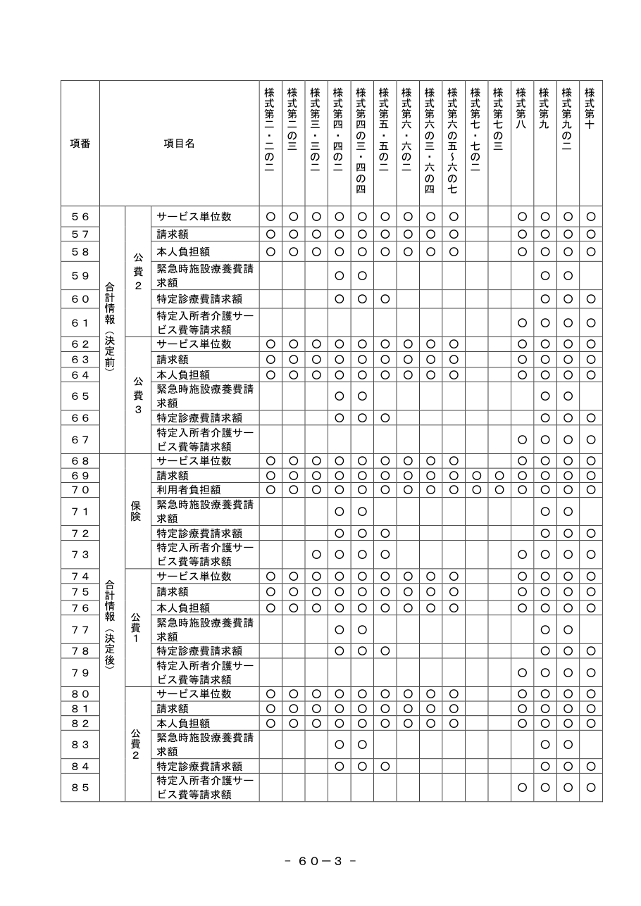
| 項番 | 項目名 | 属性 | 桁数 | 内容 | 必須 | 備考 | その他の列 |
|---|---|---|---|---|---|---|---|
| ５６ | 合計情報（決定前） > 公費2 > サービス単位数 | 様式第二・二の二:○ 様式第二の三:○ 様式第三・三の二:○ 様式第四・四の二:○ 様式第四の三・四の四:○ 様式第五・五の二:○ 様式第六・六の二:○ 様式第六の三・六の四:○ 様式第六の五～六の七:○ 様式第七・七の二:－ 様式第七の三:－ 様式第八:○ 様式第九:○ 様式第九の二:○ 様式第十:○ | |||||
| ５７ | 合計情報（決定前） > 公費2 > 請求額 | 様式第二・二の二:○ 様式第二の三:○ 様式第三・三の二:○ 様式第四・四の二:○ 様式第四の三・四の四:○ 様式第五・五の二:○ 様式第六・六の二:○ 様式第六の三・六の四:○ 様式第六の五～六の七:○ 様式第七・七の二:－ 様式第七の三:－ 様式第八:○ 様式第九:○ 様式第九の二:○ 様式第十:○ | |||||
| ５８ | 合計情報（決定前） > 公費2 > 本人負担額 | 様式第二・二の二:○ 様式第二の三:○ 様式第三・三の二:○ 様式第四・四の二:○ 様式第四の三・四の四:○ 様式第五・五の二:○ 様式第六・六の二:○ 様式第六の三・六の四:○ 様式第六の五～六の七:○ 様式第七・七の二:－ 様式第七の三:－ 様式第八:○ 様式第九:○ 様式第九の二:○ 様式第十:○ | |||||
| ５９ | 合計情報（決定前） > 公費2 > 緊急時施設療養費請求額 | 様式第二・二の二:－ 様式第二の三:－ 様式第三・三の二:－ 様式第四・四の二:○ 様式第四の三・四の四:○ 様式第五・五の二:－ 様式第六・六の二:－ 様式第六の三・六の四:－ 様式第六の五～六の七:－ 様式第七・七の二:－ 様式第七の三:－ 様式第八:－ 様式第九:○ 様式第九の二:○ 様式第十:－ | |||||
| ６０ | 合計情報（決定前） > 公費2 > 特定診療費請求額 | 様式第二・二の二:－ 様式第二の三:－ 様式第三・三の二:－ 様式第四・四の二:○ 様式第四の三・四の四:○ 様式第五・五の二:○ 様式第六・六の二:－ 様式第六の三・六の四:－ 様式第六の五～六の七:－ 様式第七・七の二:－ 様式第七の三:－ 様式第八:－ 様式第九:○ 様式第九の二:○ 様式第十:○ | |||||
| ６１ | 合計情報（決定前） > 公費2 > 特定入所者介護サービス費等請求額 | 様式第二・二の二:－ 様式第二の三:－ 様式第三・三の二:－ 様式第四・四の二:－ 様式第四の三・四の四:－ 様式第五・五の二:－ 様式第六・六の二:－ 様式第六の三・六の四:－ 様式第六の五～六の七:－ 様式第七・七の二:－ 様式第七の三:－ 様式第八:○ 様式第九:○ 様式第九の二:○ 様式第十:○ | |||||
| ６２ | 合計情報（決定前） > 公費3 > サービス単位数 | 様式第二・二の二:○ 様式第二の三:○ 様式第三・三の二:○ 様式第四・四の二:○ 様式第四の三・四の四:○ 様式第五・五の二:○ 様式第六・六の二:○ 様式第六の三・六の四:○ 様式第六の五～六の七:○ 様式第七・七の二:－ 様式第七の三:－ 様式第八:○ 様式第九:○ 様式第九の二:○ 様式第十:○ | |||||
| ６３ | 合計情報（決定前） > 公費3 > 請求額 | 様式第二・二の二:○ 様式第二の三:○ 様式第三・三の二:○ 様式第四・四の二:○ 様式第四の三・四の四:○ 様式第五・五の二:○ 様式第六・六の二:○ 様式第六の三・六の四:○ 様式第六の五～六の七:○ 様式第七・七の二:－ 様式第七の三:－ 様式第八:○ 様式第九:○ 様式第九の二:○ 様式第十:○ | |||||
| ６４ | 合計情報（決定前） > 公費3 > 本人負担額 | 様式第二・二の二:○ 様式第二の三:○ 様式第三・三の二:○ 様式第四・四の二:○ 様式第四の三・四の四:○ 様式第五・五の二:○ 様式第六・六の二:○ 様式第六の三・六の四:○ 様式第六の五～六の七:○ 様式第七・七の二:－ 様式第七の三:－ 様式第八:○ 様式第九:○ 様式第九の二:○ 様式第十:○ | |||||
| ６５ | 合計情報（決定前） > 公費3 > 緊急時施設療養費請求額 | 様式第二・二の二:－ 様式第二の三:－ 様式第三・三の二:－ 様式第四・四の二:○ 様式第四の三・四の四:○ 様式第五・五の二:－ 様式第六・六の二:－ 様式第六の三・六の四:－ 様式第六の五～六の七:－ 様式第七・七の二:－ 様式第七の三:－ 様式第八:－ 様式第九:○ 様式第九の二:○ 様式第十:－ | |||||
| ６６ | 合計情報（決定前） > 公費3 > 特定診療費請求額 | 様式第二・二の二:－ 様式第二の三:－ 様式第三・三の二:－ 様式第四・四の二:○ 様式第四の三・四の四:○ 様式第五・五の二:○ 様式第六・六の二:－ 様式第六の三・六の四:－ 様式第六の五～六の七:－ 様式第七・七の二:－ 様式第七の三:－ 様式第八:－ 様式第九:○ 様式第九の二:○ 様式第十:○ | |||||
| ６７ | 合計情報（決定前） > 公費3 > 特定入所者介護サービス費等請求額 | 様式第二・二の二:－ 様式第二の三:－ 様式第三・三の二:－ 様式第四・四の二:－ 様式第四の三・四の四:－ 様式第五・五の二:－ 様式第六・六の二:－ 様式第六の三・六の四:－ 様式第六の五～六の七:－ 様式第七・七の二:－ 様式第七の三:－ 様式第八:○ 様式第九:○ 様式第九の二:○ 様式第十:○ | |||||
| ６８ | 合計情報（決定後） > 保険 > サービス単位数 | 様式第二・二の二:○ 様式第二の三:○ 様式第三・三の二:○ 様式第四・四の二:○ 様式第四の三・四の四:○ 様式第五・五の二:○ 様式第六・六の二:○ 様式第六の三・六の四:○ 様式第六の五～六の七:○ 様式第七・七の二:－ 様式第七の三:－ 様式第八:○ 様式第九:○ 様式第九の二:○ 様式第十:○ | |||||
| ６９ | 合計情報（決定後） > 保険 > 請求額 | 様式第二・二の二:○ 様式第二の三:○ 様式第三・三の二:○ 様式第四・四の二:○ 様式第四の三・四の四:○ 様式第五・五の二:○ 様式第六・六の二:○ 様式第六の三・六の四:○ 様式第六の五～六の七:○ 様式第七・七の二:○ 様式第七の三:○ 様式第八:○ 様式第九:○ 様式第九の二:○ 様式第十:○ | |||||
| ７０ | 合計情報（決定後） > 保険 > 利用者負担額 | 様式第二・二の二:○ 様式第二の三:○ 様式第三・三の二:○ 様式第四・四の二:○ 様式第四の三・四の四:○ 様式第五・五の二:○ 様式第六・六の二:○ 様式第六の三・六の四:○ 様式第六の五～六の七:○ 様式第七・七の二:○ 様式第七の三:○ 様式第八:○ 様式第九:○ 様式第九の二:○ 様式第十:○ | |||||
| ７１ | 合計情報（決定後） > 保険 > 緊急時施設療養費請求額 | 様式第二・二の二:－ 様式第二の三:－ 様式第三・三の二:－ 様式第四・四の二:○ 様式第四の三・四の四:○ 様式第五・五の二:－ 様式第六・六の二:－ 様式第六の三・六の四:－ 様式第六の五～六の七:－ 様式第七・七の二:－ 様式第七の三:－ 様式第八:－ 様式第九:○ 様式第九の二:○ 様式第十:－ | |||||
| ７２ | 合計情報（決定後） > 保険 > 特定診療費請求額 | 様式第二・二の二:－ 様式第二の三:－ 様式第三・三の二:－ 様式第四・四の二:○ 様式第四の三・四の四:○ 様式第五・五の二:○ 様式第六・六の二:－ 様式第六の三・六の四:－ 様式第六の五～六の七:－ 様式第七・七の二:－ 様式第七の三:－ 様式第八:－ 様式第九:○ 様式第九の二:○ 様式第十:○ | |||||
| ７３ | 合計情報（決定後） > 保険 > 特定入所者介護サービス費等請求額 | 様式第二・二の二:－ 様式第二の三:－ 様式第三・三の二:○ 様式第四・四の二:○ 様式第四の三・四の四:○ 様式第五・五の二:○ 様式第六・六の二:－ 様式第六の三・六の四:－ 様式第六の五～六の七:－ 様式第七・七の二:－ 様式第七の三:－ 様式第八:○ 様式第九:○ 様式第九の二:○ 様式第十:○ | |||||
| ７４ | 合計情報（決定後） > 公費1 > サービス単位数 | 様式第二・二の二:○ 様式第二の三:○ 様式第三・三の二:○ 様式第四・四の二:○ 様式第四の三・四の四:○ 様式第五・五の二:○ 様式第六・六の二:○ 様式第六の三・六の四:○ 様式第六の五～六の七:○ 様式第七・七の二:－ 様式第七の三:－ 様式第八:○ 様式第九:○ 様式第九の二:○ 様式第十:○ | |||||
| ７５ | 合計情報（決定後） > 公費1 > 請求額 | 様式第二・二の二:○ 様式第二の三:○ 様式第三・三の二:○ 様式第四・四の二:○ 様式第四の三・四の四:○ 様式第五・五の二:○ 様式第六・六の二:○ 様式第六の三・六の四:○ 様式第六の五～六の七:○ 様式第七・七の二:－ 様式第七の三:－ 様式第八:○ 様式第九:○ 様式第九の二:○ 様式第十:○ | |||||
| ７６ | 合計情報（決定後） > 公費1 > 本人負担額 | 様式第二・二の二:○ 様式第二の三:○ 様式第三・三の二:○ 様式第四・四の二:○ 様式第四の三・四の四:○ 様式第五・五の二:○ 様式第六・六の二:○ 様式第六の三・六の四:○ 様式第六の五～六の七:○ 様式第七・七の二:－ 様式第七の三:－ 様式第八:○ 様式第九:○ 様式第九の二:○ 様式第十:○ | |||||
| ７７ | 合計情報（決定後） > 公費1 > 緊急時施設療養費請求額 | 様式第二・二の二:－ 様式第二の三:－ 様式第三・三の二:－ 様式第四・四の二:○ 様式第四の三・四の四:○ 様式第五・五の二:－ 様式第六・六の二:－ 様式第六の三・六の四:－ 様式第六の五～六の七:－ 様式第七・七の二:－ 様式第七の三:－ 様式第八:－ 様式第九:○ 様式第九の二:○ 様式第十:－ | |||||
| ７８ | 合計情報（決定後） > 公費1 > 特定診療費請求額 | 様式第二・二の二:－ 様式第二の三:－ 様式第三・三の二:－ 様式第四・四の二:○ 様式第四の三・四の四:○ 様式第五・五の二:○ 様式第六・六の二:－ 様式第六の三・六の四:－ 様式第六の五～六の七:－ 様式第七・七の二:－ 様式第七の三:－ 様式第八:－ 様式第九:○ 様式第九の二:○ 様式第十:○ | |||||
| ７９ | 合計情報（決定後） > 公費1 > 特定入所者介護サービス費等請求額 | 様式第二・二の二:－ 様式第二の三:－ 様式第三・三の二:－ 様式第四・四の二:－ 様式第四の三・四の四:－ 様式第五・五の二:－ 様式第六・六の二:－ 様式第六の三・六の四:－ 様式第六の五～六の七:－ 様式第七・七の二:－ 様式第七の三:－ 様式第八:○ 様式第九:○ 様式第九の二:○ 様式第十:○ | |||||
| ８０ | 合計情報（決定後） > 公費2 > サービス単位数 | 様式第二・二の二:○ 様式第二の三:○ 様式第三・三の二:○ 様式第四・四の二:○ 様式第四の三・四の四:○ 様式第五・五の二:○ 様式第六・六の二:○ 様式第六の三・六の四:○ 様式第六の五～六の七:○ 様式第七・七の二:－ 様式第七の三:－ 様式第八:○ 様式第九:○ 様式第九の二:○ 様式第十:○ | |||||
| ８１ | 合計情報（決定後） > 公費2 > 請求額 | 様式第二・二の二:○ 様式第二の三:○ 様式第三・三の二:○ 様式第四・四の二:○ 様式第四の三・四の四:○ 様式第五・五の二:○ 様式第六・六の二:○ 様式第六の三・六の四:○ 様式第六の五～六の七:○ 様式第七・七の二:－ 様式第七の三:－ 様式第八:○ 様式第九:○ 様式第九の二:○ 様式第十:○ | |||||
| ８２ | 合計情報（決定後） > 公費2 > 本人負担額 | 様式第二・二の二:○ 様式第二の三:○ 様式第三・三の二:○ 様式第四・四の二:○ 様式第四の三・四の四:○ 様式第五・五の二:○ 様式第六・六の二:○ 様式第六の三・六の四:○ 様式第六の五～六の七:○ 様式第七・七の二:－ 様式第七の三:－ 様式第八:○ 様式第九:○ 様式第九の二:○ 様式第十:○ | |||||
| ８３ | 合計情報（決定後） > 公費2 > 緊急時施設療養費請求額 | 様式第二・二の二:－ 様式第二の三:－ 様式第三・三の二:－ 様式第四・四の二:○ 様式第四の三・四の四:○ 様式第五・五の二:－ 様式第六・六の二:－ 様式第六の三・六の四:－ 様式第六の五～六の七:－ 様式第七・七の二:－ 様式第七の三:－ 様式第八:－ 様式第九:○ 様式第九の二:○ 様式第十:－ | |||||
| ８４ | 合計情報（決定後） > 公費2 > 特定診療費請求額 | 様式第二・二の二:－ 様式第二の三:－ 様式第三・三の二:－ 様式第四・四の二:○ 様式第四の三・四の四:○ 様式第五・五の二:○ 様式第六・六の二:－ 様式第六の三・六の四:－ 様式第六の五～六の七:－ 様式第七・七の二:－ 様式第七の三:－ 様式第八:－ 様式第九:○ 様式第九の二:○ 様式第十:○ | |||||
| ８５ | 合計情報（決定後） > 公費2 > 特定入所者介護サービス費等請求額 | 様式第二・二の二:－ 様式第二の三:－ 様式第三・三の二:－ 様式第四・四の二:－ 様式第四の三・四の四:－ 様式第五・五の二:－ 様式第六・六の二:－ 様式第六の三・六の四:－ 様式第六の五～六の七:－ 様式第七・七の二:－ 様式第七の三:－ 様式第八:○ 様式第九:○ 様式第九の二:○ 様式第十:○ |
| 項番 | 項目名 | 属性 | 桁数 | 内容 | 必須 | 備考 | その他の列 |
|---|---|---|---|---|---|---|---|
| 56 | 合計情報（決定前） > 公費2 > サービス単位数 | 様式第二・二の二:○ 様式第二の三:○ 様式第三・三の二:○ 様式第四・四の二:○ 様式第四の三・四の四:○ 様式第五・五の二:○ 様式第六・六の二:○ 様式第六の三・六の四:○ 様式第六の五～六の七:○ 様式第七・七の二:－ 様式第七の三:－ 様式第八:○ 様式第九:○ 様式第九の二:○ 様式第十:○ | |||||
| 57 | 合計情報（決定前） > 公費2 > 請求額 | 様式第二・二の二:○ 様式第二の三:○ 様式第三・三の二:○ 様式第四・四の二:○ 様式第四の三・四の四:○ 様式第五・五の二:○ 様式第六・六の二:○ 様式第六の三・六の四:○ 様式第六の五～六の七:○ 様式第七・七の二:－ 様式第七の三:－ 様式第八:○ 様式第九:○ 様式第九の二:○ 様式第十:○ | |||||
| 58 | 合計情報（決定前） > 公費2 > 本人負担額 | 様式第二・二の二:○ 様式第二の三:○ 様式第三・三の二:○ 様式第四・四の二:○ 様式第四の三・四の四:○ 様式第五・五の二:○ 様式第六・六の二:○ 様式第六の三・六の四:○ 様式第六の五～六の七:○ 様式第七・七の二:－ 様式第七の三:－ 様式第八:○ 様式第九:○ 様式第九の二:○ 様式第十:○ | |||||
| 59 | 合計情報（決定前） > 公費2 > 緊急時施設療養費請求額 | 様式第二・二の二:－ 様式第二の三:－ 様式第三・三の二:－ 様式第四・四の二:○ 様式第四の三・四の四:○ 様式第五・五の二:－ 様式第六・六の二:－ 様式第六の三・六の四:－ 様式第六の五～六の七:－ 様式第七・七の二:－ 様式第七の三:－ 様式第八:－ 様式第九:○ 様式第九の二:○ 様式第十:－ | |||||
| 60 | 合計情報（決定前） > 公費2 > 特定診療費請求額 | 様式第二・二の二:－ 様式第二の三:－ 様式第三・三の二:－ 様式第四・四の二:○ 様式第四の三・四の四:○ 様式第五・五の二:○ 様式第六・六の二:－ 様式第六の三・六の四:－ 様式第六の五～六の七:－ 様式第七・七の二:－ 様式第七の三:－ 様式第八:－ 様式第九:○ 様式第九の二:○ 様式第十:○ | |||||
| 61 | 合計情報（決定前） > 公費2 > 特定入所者介護サービス費等請求額 | 様式第二・二の二:－ 様式第二の三:－ 様式第三・三の二:－ 様式第四・四の二:－ 様式第四の三・四の四:－ 様式第五・五の二:－ 様式第六・六の二:－ 様式第六の三・六の四:－ 様式第六の五～六の七:－ 様式第七・七の二:－ 様式第七の三:－ 様式第八:○ 様式第九:○ 様式第九の二:○ 様式第十:○ | |||||
| 62 | 合計情報（決定前） > 公費3 > サービス単位数 | 様式第二・二の二:○ 様式第二の三:○ 様式第三・三の二:○ 様式第四・四の二:○ 様式第四の三・四の四:○ 様式第五・五の二:○ 様式第六・六の二:○ 様式第六の三・六の四:○ 様式第六の五～六の七:○ 様式第七・七の二:－ 様式第七の三:－ 様式第八:○ 様式第九:○ 様式第九の二:○ 様式第十:○ | |||||
| 63 | 合計情報（決定前） > 公費3 > 請求額 | 様式第二・二の二:○ 様式第二の三:○ 様式第三・三の二:○ 様式第四・四の二:○ 様式第四の三・四の四:○ 様式第五・五の二:○ 様式第六・六の二:○ 様式第六の三・六の四:○ 様式第六の五～六の七:○ 様式第七・七の二:－ 様式第七の三:－ 様式第八:○ 様式第九:○ 様式第九の二:○ 様式第十:○ | |||||
| 64 | 合計情報（決定前） > 公費3 > 本人負担額 | 様式第二・二の二:○ 様式第二の三:○ 様式第三・三の二:○ 様式第四・四の二:○ 様式第四の三・四の四:○ 様式第五・五の二:○ 様式第六・六の二:○ 様式第六の三・六の四:○ 様式第六の五～六の七:○ 様式第七・七の二:－ 様式第七の三:－ 様式第八:○ 様式第九:○ 様式第九の二:○ 様式第十:○ | |||||
| 65 | 合計情報（決定前） > 公費3 > 緊急時施設療養費請求額 | 様式第二・二の二:－ 様式第二の三:－ 様式第三・三の二:－ 様式第四・四の二:○ 様式第四の三・四の四:○ 様式第五・五の二:－ 様式第六・六の二:－ 様式第六の三・六の四:－ 様式第六の五～六の七:－ 様式第七・七の二:－ 様式第七の三:－ 様式第八:－ 様式第九:○ 様式第九の二:○ 様式第十:－ | |||||
| 66 | 合計情報（決定前） > 公費3 > 特定診療費請求額 | 様式第二・二の二:－ 様式第二の三:－ 様式第三・三の二:－ 様式第四・四の二:○ 様式第四の三・四の四:○ 様式第五・五の二:○ 様式第六・六の二:－ 様式第六の三・六の四:－ 様式第六の五～六の七:－ 様式第七・七の二:－ 様式第七の三:－ 様式第八:－ 様式第九:○ 様式第九の二:○ 様式第十:○ | |||||
| 67 | 合計情報（決定前） > 公費3 > 特定入所者介護サービス費等請求額 | 様式第二・二の二:－ 様式第二の三:－ 様式第三・三の二:－ 様式第四・四の二:－ 様式第四の三・四の四:－ 様式第五・五の二:－ 様式第六・六の二:－ 様式第六の三・六の四:－ 様式第六の五～六の七:－ 様式第七・七の二:－ 様式第七の三:－ 様式第八:○ 様式第九:○ 様式第九の二:○ 様式第十:○ | |||||
| 68 | 合計情報（決定後） > 保険 > サービス単位数 | 様式第二・二の二:○ 様式第二の三:○ 様式第三・三の二:○ 様式第四・四の二:○ 様式第四の三・四の四:○ 様式第五・五の二:○ 様式第六・六の二:○ 様式第六の三・六の四:○ 様式第六の五～六の七:○ 様式第七・七の二:－ 様式第七の三:－ 様式第八:○ 様式第九:○ 様式第九の二:○ 様式第十:○ | |||||
| 69 | 合計情報（決定後） > 保険 > 請求額 | 様式第二・二の二:○ 様式第二の三:○ 様式第三・三の二:○ 様式第四・四の二:○ 様式第四の三・四の四:○ 様式第五・五の二:○ 様式第六・六の二:○ 様式第六の三・六の四:○ 様式第六の五～六の七:○ 様式第七・七の二:○ 様式第七の三:○ 様式第八:○ 様式第九:○ 様式第九の二:○ 様式第十:○ | |||||
| 70 | 合計情報（決定後） > 保険 > 利用者負担額 | 様式第二・二の二:○ 様式第二の三:○ 様式第三・三の二:○ 様式第四・四の二:○ 様式第四の三・四の四:○ 様式第五・五の二:○ 様式第六・六の二:○ 様式第六の三・六の四:○ 様式第六の五～六の七:○ 様式第七・七の二:○ 様式第七の三:○ 様式第八:○ 様式第九:○ 様式第九の二:○ 様式第十:○ | |||||
| 71 | 合計情報（決定後） > 保険 > 緊急時施設療養費請求額 | 様式第二・二の二:－ 様式第二の三:－ 様式第三・三の二:－ 様式第四・四の二:○ 様式第四の三・四の四:○ 様式第五・五の二:－ 様式第六・六の二:－ 様式第六の三・六の四:－ 様式第六の五～六の七:－ 様式第七・七の二:－ 様式第七の三:－ 様式第八:－ 様式第九:○ 様式第九の二:○ 様式第十:－ | |||||
| 72 | 合計情報（決定後） > 保険 > 特定診療費請求額 | 様式第二・二の二:－ 様式第二の三:－ 様式第三・三の二:－ 様式第四・四の二:○ 様式第四の三・四の四:○ 様式第五・五の二:○ 様式第六・六の二:－ 様式第六の三・六の四:－ 様式第六の五～六の七:－ 様式第七・七の二:－ 様式第七の三:－ 様式第八:－ 様式第九:○ 様式第九の二:○ 様式第十:○ | |||||
| 73 | 合計情報（決定後） > 保険 > 特定入所者介護サービス費等請求額 | 様式第二・二の二:－ 様式第二の三:－ 様式第三・三の二:○ 様式第四・四の二:○ 様式第四の三・四の四:○ 様式第五・五の二:○ 様式第六・六の二:－ 様式第六の三・六の四:－ 様式第六の五～六の七:－ 様式第七・七の二:－ 様式第七の三:－ 様式第八:○ 様式第九:○ 様式第九の二:○ 様式第十:○ | |||||
| 74 | 合計情報（決定後） > 公費1 > サービス単位数 | 様式第二・二の二:○ 様式第二の三:○ 様式第三・三の二:○ 様式第四・四の二:○ 様式第四の三・四の四:○ 様式第五・五の二:○ 様式第六・六の二:○ 様式第六の三・六の四:○ 様式第六の五～六の七:○ 様式第七・七の二:－ 様式第七の三:－ 様式第八:○ 様式第九:○ 様式第九の二:○ 様式第十:○ | |||||
| 75 | 合計情報（決定後） > 公費1 > 請求額 | 様式第二・二の二:○ 様式第二の三:○ 様式第三・三の二:○ 様式第四・四の二:○ 様式第四の三・四の四:○ 様式第五・五の二:○ 様式第六・六の二:○ 様式第六の三・六の四:○ 様式第六の五～六の七:○ 様式第七・七の二:－ 様式第七の三:－ 様式第八:○ 様式第九:○ 様式第九の二:○ 様式第十:○ | |||||
| 76 | 合計情報（決定後） > 公費1 > 本人負担額 | 様式第二・二の二:○ 様式第二の三:○ 様式第三・三の二:○ 様式第四・四の二:○ 様式第四の三・四の四:○ 様式第五・五の二:○ 様式第六・六の二:○ 様式第六の三・六の四:○ 様式第六の五～六の七:○ 様式第七・七の二:－ 様式第七の三:－ 様式第八:○ 様式第九:○ 様式第九の二:○ 様式第十:○ | |||||
| 77 | 合計情報（決定後） > 公費1 > 緊急時施設療養費請求額 | 様式第二・二の二:－ 様式第二の三:－ 様式第三・三の二:－ 様式第四・四の二:○ 様式第四の三・四の四:○ 様式第五・五の二:－ 様式第六・六の二:－ 様式第六の三・六の四:－ 様式第六の五～六の七:－ 様式第七・七の二:－ 様式第七の三:－ 様式第八:－ 様式第九:○ 様式第九の二:○ 様式第十:－ | |||||
| 78 | 合計情報（決定後） > 公費1 > 特定診療費請求額 | 様式第二・二の二:－ 様式第二の三:－ 様式第三・三の二:－ 様式第四・四の二:○ 様式第四の三・四の四:○ 様式第五・五の二:○ 様式第六・六の二:－ 様式第六の三・六の四:－ 様式第六の五～六の七:－ 様式第七・七の二:－ 様式第七の三:－ 様式第八:－ 様式第九:○ 様式第九の二:○ 様式第十:○ | |||||
| 79 | 合計情報（決定後） > 公費1 > 特定入所者介護サービス費等請求額 | 様式第二・二の二:－ 様式第二の三:－ 様式第三・三の二:－ 様式第四・四の二:－ 様式第四の三・四の四:－ 様式第五・五の二:－ 様式第六・六の二:－ 様式第六の三・六の四:－ 様式第六の五～六の七:－ 様式第七・七の二:－ 様式第七の三:－ 様式第八:○ 様式第九:○ 様式第九の二:○ 様式第十:○ | |||||
| 80 | 合計情報（決定後） > 公費2 > サービス単位数 | 様式第二・二の二:○ 様式第二の三:○ 様式第三・三の二:○ 様式第四・四の二:○ 様式第四の三・四の四:○ 様式第五・五の二:○ 様式第六・六の二:○ 様式第六の三・六の四:○ 様式第六の五～六の七:○ 様式第七・七の二:－ 様式第七の三:－ 様式第八:○ 様式第九:○ 様式第九の二:○ 様式第十:○ | |||||
| 81 | 合計情報（決定後） > 公費2 > 請求額 | 様式第二・二の二:○ 様式第二の三:○ 様式第三・三の二:○ 様式第四・四の二:○ 様式第四の三・四の四:○ 様式第五・五の二:○ 様式第六・六の二:○ 様式第六の三・六の四:○ 様式第六の五～六の七:○ 様式第七・七の二:－ 様式第七の三:－ 様式第八:○ 様式第九:○ 様式第九の二:○ 様式第十:○ | |||||
| 82 | 合計情報（決定後） > 公費2 > 本人負担額 | 様式第二・二の二:○ 様式第二の三:○ 様式第三・三の二:○ 様式第四・四の二:○ 様式第四の三・四の四:○ 様式第五・五の二:○ 様式第六・六の二:○ 様式第六の三・六の四:○ 様式第六の五～六の七:○ 様式第七・七の二:－ 様式第七の三:－ 様式第八:○ 様式第九:○ 様式第九の二:○ 様式第十:○ | |||||
| 83 | 合計情報（決定後） > 公費2 > 緊急時施設療養費請求額 | 様式第二・二の二:－ 様式第二の三:－ 様式第三・三の二:－ 様式第四・四の二:○ 様式第四の三・四の四:○ 様式第五・五の二:－ 様式第六・六の二:－ 様式第六の三・六の四:－ 様式第六の五～六の七:－ 様式第七・七の二:－ 様式第七の三:－ 様式第八:－ 様式第九:○ 様式第九の二:○ 様式第十:－ | |||||
| 84 | 合計情報（決定後） > 公費2 > 特定診療費請求額 | 様式第二・二の二:－ 様式第二の三:－ 様式第三・三の二:－ 様式第四・四の二:○ 様式第四の三・四の四:○ 様式第五・五の二:○ 様式第六・六の二:－ 様式第六の三・六の四:－ 様式第六の五～六の七:－ 様式第七・七の二:－ 様式第七の三:－ 様式第八:－ 様式第九:○ 様式第九の二:○ 様式第十:○ | |||||
| 85 | 合計情報（決定後） > 公費2 > 特定入所者介護サービス費等請求額 | 様式第二・二の二:－ 様式第二の三:－ 様式第三・三の二:－ 様式第四・四の二:－ 様式第四の三・四の四:－ 様式第五・五の二:－ 様式第六・六の二:－ 様式第六の三・六の四:－ 様式第六の五～六の七:－ 様式第七・七の二:－ 様式第七の三:－ 様式第八:○ 様式第九:○ 様式第九の二:○ 様式第十:○ |
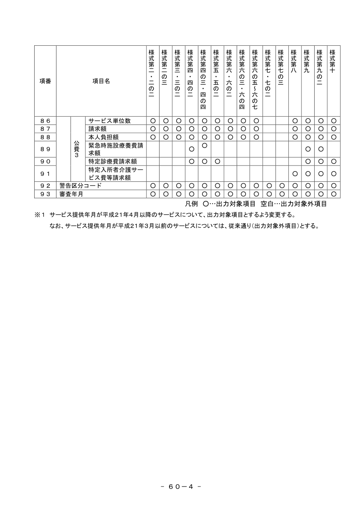
| 項番 | 項目名 | 属性 | 桁数 | 内容 | 必須 | 備考 | その他の列 |
|---|---|---|---|---|---|---|---|
| 86 | 公費3 > サービス単位数 | 様式第二・二の二: ○ 様式第二の三: ○ 様式第三・三の二: ○ 様式第四・四の二: ○ 様式第四の三・四の四: ○ 様式第五・五の二: ○ 様式第六・六の二: ○ 様式第六の三・六の四: ○ 様式第六の五～六の七: ○ 様式第七・七の二: － 様式第七の三: － 様式第八: ○ 様式第九: ○ 様式第九の二: ○ 様式第十: ○ | |||||
| 87 | 公費3 > 請求額 | 様式第二・二の二: ○ 様式第二の三: ○ 様式第三・三の二: ○ 様式第四・四の二: ○ 様式第四の三・四の四: ○ 様式第五・五の二: ○ 様式第六・六の二: ○ 様式第六の三・六の四: ○ 様式第六の五～六の七: ○ 様式第七・七の二: － 様式第七の三: － 様式第八: ○ 様式第九: ○ 様式第九の二: ○ 様式第十: ○ | |||||
| 88 | 公費3 > 本人負担額 | 様式第二・二の二: ○ 様式第二の三: ○ 様式第三・三の二: ○ 様式第四・四の二: ○ 様式第四の三・四の四: ○ 様式第五・五の二: ○ 様式第六・六の二: ○ 様式第六の三・六の四: ○ 様式第六の五～六の七: ○ 様式第七・七の二: － 様式第七の三: － 様式第八: ○ 様式第九: ○ 様式第九の二: ○ 様式第十: ○ | |||||
| 89 | 公費3 > 緊急時施設療養費請求額 | 様式第二・二の二: － 様式第二の三: － 様式第三・三の二: － 様式第四・四の二: ○ 様式第四の三・四の四: ○ 様式第五・五の二: － 様式第六・六の二: － 様式第六の三・六の四: － 様式第六の五～六の七: － 様式第七・七の二: － 様式第七の三: － 様式第八: － 様式第九: ○ 様式第九の二: ○ 様式第十: － | |||||
| 90 | 公費3 > 特定診療費請求額 | 様式第二・二の二: － 様式第二の三: － 様式第三・三の二: － 様式第四・四の二: ○ 様式第四の三・四の四: ○ 様式第五・五の二: ○ 様式第六・六の二: － 様式第六の三・六の四: － 様式第六の五～六の七: － 様式第七・七の二: － 様式第七の三: － 様式第八: － 様式第九: ○ 様式第九の二: ○ 様式第十: ○ | |||||
| 91 | 公費3 > 特定入所者介護サービス費等請求額 | 様式第二・二の二: － 様式第二の三: － 様式第三・三の二: － 様式第四・四の二: － 様式第四の三・四の四: － 様式第五・五の二: － 様式第六・六の二: － 様式第六の三・六の四: － 様式第六の五～六の七: － 様式第七・七の二: － 様式第七の三: － 様式第八: ○ 様式第九: ○ 様式第九の二: ○ 様式第十: ○ | |||||
| 92 | 警告区分コード | 様式第二・二の二: ○ 様式第二の三: ○ 様式第三・三の二: ○ 様式第四・四の二: ○ 様式第四の三・四の四: ○ 様式第五・五の二: ○ 様式第六・六の二: ○ 様式第六の三・六の四: ○ 様式第六の五～六の七: ○ 様式第七・七の二: ○ 様式第七の三: ○ 様式第八: ○ 様式第九: ○ 様式第九の二: ○ 様式第十: ○ | |||||
| 93 | 審査年月 | 様式第二・二の二: ○ 様式第二の三: ○ 様式第三・三の二: ○ 様式第四・四の二: ○ 様式第四の三・四の四: ○ 様式第五・五の二: ○ 様式第六・六の二: ○ 様式第六の三・六の四: ○ 様式第六の五～六の七: ○ 様式第七・七の二: ○ 様式第七の三: ○ 様式第八: ○ 様式第九: ○ 様式第九の二: ○ 様式第十: ○ |
| 項番 | 項目名 | 属性 | 桁数 | 内容 | 必須 | 備考 | その他の列 |
|---|---|---|---|---|---|---|---|
| ８６ | 公費3 > サービス単位数 | 様式第二・二の二:○ 様式第二の三:○ 様式第三・三の二:○ 様式第四・四の二:○ 様式第四の三・四の四:○ 様式第五・五の二:○ 様式第六・六の二:○ 様式第六の三・六の四:○ 様式第六の五～六の七:○ 様式第七・七の二:－ 様式第七の三:－ 様式第八:○ 様式第九:○ 様式第九の二:○ 様式第十:○ | |||||
| ８７ | 公費3 > 請求額 | 様式第二・二の二:○ 様式第二の三:○ 様式第三・三の二:○ 様式第四・四の二:○ 様式第四の三・四の四:○ 様式第五・五の二:○ 様式第六・六の二:○ 様式第六の三・六の四:○ 様式第六の五～六の七:○ 様式第七・七の二:－ 様式第七の三:－ 様式第八:○ 様式第九:○ 様式第九の二:○ 様式第十:○ | |||||
| ８８ | 公費3 > 本人負担額 | 様式第二・二の二:○ 様式第二の三:○ 様式第三・三の二:○ 様式第四・四の二:○ 様式第四の三・四の四:○ 様式第五・五の二:○ 様式第六・六の二:○ 様式第六の三・六の四:○ 様式第六の五～六の七:○ 様式第七・七の二:－ 様式第七の三:－ 様式第八:○ 様式第九:○ 様式第九の二:○ 様式第十:○ | |||||
| ８９ | 公費3 > 緊急時施設療養費請求額 | 様式第二・二の二:－ 様式第二の三:－ 様式第三・三の二:－ 様式第四・四の二:○ 様式第四の三・四の四:○ 様式第五・五の二:－ 様式第六・六の二:－ 様式第六の三・六の四:－ 様式第六の五～六の七:－ 様式第七・七の二:－ 様式第七の三:－ 様式第八:－ 様式第九:○ 様式第九の二:○ 様式第十:－ | |||||
| ９０ | 公費3 > 特定診療費請求額 | 様式第二・二の二:－ 様式第二の三:－ 様式第三・三の二:－ 様式第四・四の二:○ 様式第四の三・四の四:○ 様式第五・五の二:○ 様式第六・六の二:－ 様式第六の三・六の四:－ 様式第六の五～六の七:－ 様式第七・七の二:－ 様式第七の三:－ 様式第八:－ 様式第九:○ 様式第九の二:○ 様式第十:○ | |||||
| ９１ | 公費3 > 特定入所者介護サービス費等請求額 | 様式第二・二の二:－ 様式第二の三:－ 様式第三・三の二:－ 様式第四・四の二:－ 様式第四の三・四の四:－ 様式第五・五の二:－ 様式第六・六の二:－ 様式第六の三・六の四:－ 様式第六の五～六の七:－ 様式第七・七の二:－ 様式第七の三:－ 様式第八:○ 様式第九:○ 様式第九の二:○ 様式第十:○ | |||||
| ９２ | 警告区分コード | 様式第二・二の二:○ 様式第二の三:○ 様式第三・三の二:○ 様式第四・四の二:○ 様式第四の三・四の四:○ 様式第五・五の二:○ 様式第六・六の二:○ 様式第六の三・六の四:○ 様式第六の五～六の七:○ 様式第七・七の二:○ 様式第七の三:○ 様式第八:○ 様式第九:○ 様式第九の二:○ 様式第十:○ | |||||
| ９３ | 審査年月 | 様式第二・二の二:○ 様式第二の三:○ 様式第三・三の二:○ 様式第四・四の二:○ 様式第四の三・四の四:○ 様式第五・五の二:○ 様式第六・六の二:○ 様式第六の三・六の四:○ 様式第六の五～六の七:○ 様式第七・七の二:○ 様式第七の三:○ 様式第八:○ 様式第九:○ 様式第九の二:○ 様式第十:○ |
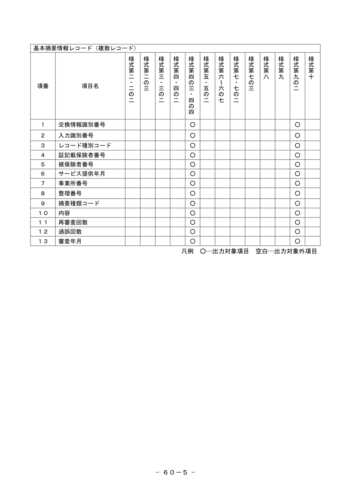
| 項番 | 項目名 | 属性 | 桁数 | 内容 | 必須 | 備考 | その他の列 |
|---|---|---|---|---|---|---|---|
| １ | 交換情報識別番号 | 様式第二・二の二:－ 様式第二の三:－ 様式第三・三の二:－ 様式第四・四の二:－ 様式第四の三・四の四:○ 様式第五・五の二:－ 様式第六～六の七:－ 様式第七・七の二:－ 様式第七の三:－ 様式第八:－ 様式第九:－ 様式第九の二:○ 様式第十:－ | |||||
| ２ | 入力識別番号 | 様式第二・二の二:－ 様式第二の三:－ 様式第三・三の二:－ 様式第四・四の二:－ 様式第四の三・四の四:○ 様式第五・五の二:－ 様式第六～六の七:－ 様式第七・七の二:－ 様式第七の三:－ 様式第八:－ 様式第九:－ 様式第九の二:○ 様式第十:－ | |||||
| ３ | レコード種別コード | 様式第二・二の二:－ 様式第二の三:－ 様式第三・三の二:－ 様式第四・四の二:－ 様式第四の三・四の四:○ 様式第五・五の二:－ 様式第六～六の七:－ 様式第七・七の二:－ 様式第七の三:－ 様式第八:－ 様式第九:－ 様式第九の二:○ 様式第十:－ | |||||
| ４ | 証記載保険者番号 | 様式第二・二の二:－ 様式第二の三:－ 様式第三・三の二:－ 様式第四・四の二:－ 様式第四の三・四の四:○ 様式第五・五の二:－ 様式第六～六の七:－ 様式第七・七の二:－ 様式第七の三:－ 様式第八:－ 様式第九:－ 様式第九の二:○ 様式第十:－ | |||||
| ５ | 被保険者番号 | 様式第二・二の二:－ 様式第二の三:－ 様式第三・三の二:－ 様式第四・四の二:－ 様式第四の三・四の四:○ 様式第五・五の二:－ 様式第六～六の七:－ 様式第七・七の二:－ 様式第七の三:－ 様式第八:－ 様式第九:－ 様式第九の二:○ 様式第十:－ | |||||
| ６ | サービス提供年月 | 様式第二・二の二:－ 様式第二の三:－ 様式第三・三の二:－ 様式第四・四の二:－ 様式第四の三・四の四:○ 様式第五・五の二:－ 様式第六～六の七:－ 様式第七・七の二:－ 様式第七の三:－ 様式第八:－ 様式第九:－ 様式第九の二:○ 様式第十:－ | |||||
| ７ | 事業所番号 | 様式第二・二の二:－ 様式第二の三:－ 様式第三・三の二:－ 様式第四・四の二:－ 様式第四の三・四の四:○ 様式第五・五の二:－ 様式第六～六の七:－ 様式第七・七の二:－ 様式第七の三:－ 様式第八:－ 様式第九:－ 様式第九の二:○ 様式第十:－ | |||||
| ８ | 整理番号 | 様式第二・二の二:－ 様式第二の三:－ 様式第三・三の二:－ 様式第四・四の二:－ 様式第四の三・四の四:○ 様式第五・五の二:－ 様式第六～六の七:－ 様式第七・七の二:－ 様式第七の三:－ 様式第八:－ 様式第九:－ 様式第九の二:○ 様式第十:－ | |||||
| ９ | 摘要種類コード | 様式第二・二の二:－ 様式第二の三:－ 様式第三・三の二:－ 様式第四・四の二:－ 様式第四の三・四の四:○ 様式第五・五の二:－ 様式第六～六の七:－ 様式第七・七の二:－ 様式第七の三:－ 様式第八:－ 様式第九:－ 様式第九の二:○ 様式第十:－ | |||||
| １０ | 内容 | 様式第二・二の二:－ 様式第二の三:－ 様式第三・三の二:－ 様式第四・四の二:－ 様式第四の三・四の四:○ 様式第五・五の二:－ 様式第六～六の七:－ 様式第七・七の二:－ 様式第七の三:－ 様式第八:－ 様式第九:－ 様式第九の二:○ 様式第十:－ | |||||
| １１ | 再審査回数 | 様式第二・二の二:－ 様式第二の三:－ 様式第三・三の二:－ 様式第四・四の二:－ 様式第四の三・四の四:○ 様式第五・五の二:－ 様式第六～六の七:－ 様式第七・七の二:－ 様式第七の三:－ 様式第八:－ 様式第九:－ 様式第九の二:○ 様式第十:－ | |||||
| １２ | 過誤回数 | 様式第二・二の二:－ 様式第二の三:－ 様式第三・三の二:－ 様式第四・四の二:－ 様式第四の三・四の四:○ 様式第五・五の二:－ 様式第六～六の七:－ 様式第七・七の二:－ 様式第七の三:－ 様式第八:－ 様式第九:－ 様式第九の二:○ 様式第十:－ | |||||
| １３ | 審査年月 | 様式第二・二の二:－ 様式第二の三:－ 様式第三・三の二:－ 様式第四・四の二:－ 様式第四の三・四の四:○ 様式第五・五の二:－ 様式第六～六の七:－ 様式第七・七の二:－ 様式第七の三:－ 様式第八:－ 様式第九:－ 様式第九の二:○ 様式第十:－ |
| 項番 | 項目名 | 属性 | 桁数 | 内容 | 必須 | 備考 | その他の列 |
|---|---|---|---|---|---|---|---|
| 1 | 交換情報識別番号 | 様式第二・二の二:－ 様式第二の三:－ 様式第三・三の二:－ 様式第四・四の二:－ 様式第四の三・四の四:○ 様式第五・五の二:－ 様式第六～六の七:－ 様式第七・七の二:－ 様式第七の三:－ 様式第八:－ 様式第九:－ 様式第九の二:○ 様式第十:－ | |||||
| 2 | 入力識別番号 | 様式第二・二の二:－ 様式第二の三:－ 様式第三・三の二:－ 様式第四・四の二:－ 様式第四の三・四の四:○ 様式第五・五の二:－ 様式第六～六の七:－ 様式第七・七の二:－ 様式第七の三:－ 様式第八:－ 様式第九:－ 様式第九の二:○ 様式第十:－ | |||||
| 3 | レコード種別コード | 様式第二・二の二:－ 様式第二の三:－ 様式第三・三の二:－ 様式第四・四の二:－ 様式第四の三・四の四:○ 様式第五・五の二:－ 様式第六～六の七:－ 様式第七・七の二:－ 様式第七の三:－ 様式第八:－ 様式第九:－ 様式第九の二:○ 様式第十:－ | |||||
| 4 | 証記載保険者番号 | 様式第二・二の二:－ 様式第二の三:－ 様式第三・三の二:－ 様式第四・四の二:－ 様式第四の三・四の四:○ 様式第五・五の二:－ 様式第六～六の七:－ 様式第七・七の二:－ 様式第七の三:－ 様式第八:－ 様式第九:－ 様式第九の二:○ 様式第十:－ | |||||
| 5 | 被保険者番号 | 様式第二・二の二:－ 様式第二の三:－ 様式第三・三の二:－ 様式第四・四の二:－ 様式第四の三・四の四:○ 様式第五・五の二:－ 様式第六～六の七:－ 様式第七・七の二:－ 様式第七の三:－ 様式第八:－ 様式第九:－ 様式第九の二:○ 様式第十:－ | |||||
| 6 | サービス提供年月 | 様式第二・二の二:－ 様式第二の三:－ 様式第三・三の二:－ 様式第四・四の二:－ 様式第四の三・四の四:○ 様式第五・五の二:－ 様式第六～六の七:－ 様式第七・七の二:－ 様式第七の三:－ 様式第八:－ 様式第九:－ 様式第九の二:○ 様式第十:－ | |||||
| 7 | 事業所番号 | 様式第二・二の二:－ 様式第二の三:－ 様式第三・三の二:－ 様式第四・四の二:－ 様式第四の三・四の四:○ 様式第五・五の二:－ 様式第六～六の七:－ 様式第七・七の二:－ 様式第七の三:－ 様式第八:－ 様式第九:－ 様式第九の二:○ 様式第十:－ | |||||
| 8 | 整理番号 | 様式第二・二の二:－ 様式第二の三:－ 様式第三・三の二:－ 様式第四・四の二:－ 様式第四の三・四の四:○ 様式第五・五の二:－ 様式第六～六の七:－ 様式第七・七の二:－ 様式第七の三:－ 様式第八:－ 様式第九:－ 様式第九の二:○ 様式第十:－ | |||||
| 9 | 摘要種類コード | 様式第二・二の二:－ 様式第二の三:－ 様式第三・三の二:－ 様式第四・四の二:－ 様式第四の三・四の四:○ 様式第五・五の二:－ 様式第六～六の七:－ 様式第七・七の二:－ 様式第七の三:－ 様式第八:－ 様式第九:－ 様式第九の二:○ 様式第十:－ | |||||
| 10 | 内容 | 様式第二・二の二:－ 様式第二の三:－ 様式第三・三の二:－ 様式第四・四の二:－ 様式第四の三・四の四:○ 様式第五・五の二:－ 様式第六～六の七:－ 様式第七・七の二:－ 様式第七の三:－ 様式第八:－ 様式第九:－ 様式第九の二:○ 様式第十:－ | |||||
| 11 | 再審査回数 | 様式第二・二の二:－ 様式第二の三:－ 様式第三・三の二:－ 様式第四・四の二:－ 様式第四の三・四の四:○ 様式第五・五の二:－ 様式第六～六の七:－ 様式第七・七の二:－ 様式第七の三:－ 様式第八:－ 様式第九:－ 様式第九の二:○ 様式第十:－ | |||||
| 12 | 過誤回数 | 様式第二・二の二:－ 様式第二の三:－ 様式第三・三の二:－ 様式第四・四の二:－ 様式第四の三・四の四:○ 様式第五・五の二:－ 様式第六～六の七:－ 様式第七・七の二:－ 様式第七の三:－ 様式第八:－ 様式第九:－ 様式第九の二:○ 様式第十:－ | |||||
| 13 | 審査年月 | 様式第二・二の二:－ 様式第二の三:－ 様式第三・三の二:－ 様式第四・四の二:－ 様式第四の三・四の四:○ 様式第五・五の二:－ 様式第六～六の七:－ 様式第七・七の二:－ 様式第七の三:－ 様式第八:－ 様式第九:－ 様式第九の二:○ 様式第十:－ |
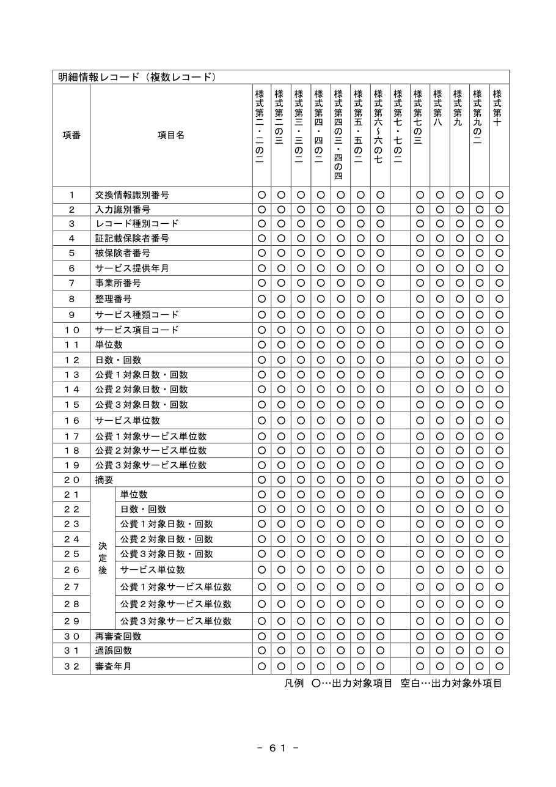
| 項番 | 項目名 | 属性 | 桁数 | 内容 | 必須 | 備考 | その他の列 |
|---|---|---|---|---|---|---|---|
| １ | 交換情報識別番号 | 様式第二・二の二: ○ 様式第二の三: ○ 様式第三・三の二: ○ 様式第四・四の二: ○ 様式第四の三・四の四: ○ 様式第五・五の二: ○ 様式第六～六の七: ○ 様式第七・七の二: － 様式第七の三: ○ 様式第八: ○ 様式第九: ○ 様式第九の二: ○ 様式第十: ○ | |||||
| ２ | 入力識別番号 | 様式第二・二の二: ○ 様式第二の三: ○ 様式第三・三の二: ○ 様式第四・四の二: ○ 様式第四の三・四の四: ○ 様式第五・五の二: ○ 様式第六～六の七: ○ 様式第七・七の二: － 様式第七の三: ○ 様式第八: ○ 様式第九: ○ 様式第九の二: ○ 様式第十: ○ | |||||
| ３ | レコード種別コード | 様式第二・二の二: ○ 様式第二の三: ○ 様式第三・三の二: ○ 様式第四・四の二: ○ 様式第四の三・四の四: ○ 様式第五・五の二: ○ 様式第六～六の七: ○ 様式第七・七の二: － 様式第七の三: ○ 様式第八: ○ 様式第九: ○ 様式第九の二: ○ 様式第十: ○ | |||||
| ４ | 証記載保険者番号 | 様式第二・二の二: ○ 様式第二の三: ○ 様式第三・三の二: ○ 様式第四・四の二: ○ 様式第四の三・四の四: ○ 様式第五・五の二: ○ 様式第六～六の七: ○ 様式第七・七の二: － 様式第七の三: ○ 様式第八: ○ 様式第九: ○ 様式第九の二: ○ 様式第十: ○ | |||||
| ５ | 被保険者番号 | 様式第二・二の二: ○ 様式第二の三: ○ 様式第三・三の二: ○ 様式第四・四の二: ○ 様式第四の三・四の四: ○ 様式第五・五の二: ○ 様式第六～六の七: ○ 様式第七・七の二: － 様式第七の三: ○ 様式第八: ○ 様式第九: ○ 様式第九の二: ○ 様式第十: ○ | |||||
| ６ | サービス提供年月 | 様式第二・二の二: ○ 様式第二の三: ○ 様式第三・三の二: ○ 様式第四・四の二: ○ 様式第四の三・四の四: ○ 様式第五・五の二: ○ 様式第六～六の七: ○ 様式第七・七の二: － 様式第七の三: ○ 様式第八: ○ 様式第九: ○ 様式第九の二: ○ 様式第十: ○ | |||||
| ７ | 事業所番号 | 様式第二・二の二: ○ 様式第二の三: ○ 様式第三・三の二: ○ 様式第四・四の二: ○ 様式第四の三・四の四: ○ 様式第五・五の二: ○ 様式第六～六の七: ○ 様式第七・七の二: － 様式第七の三: ○ 様式第八: ○ 様式第九: ○ 様式第九の二: ○ 様式第十: ○ | |||||
| ８ | 整理番号 | 様式第二・二の二: ○ 様式第二の三: ○ 様式第三・三の二: ○ 様式第四・四の二: ○ 様式第四の三・四の四: ○ 様式第五・五の二: ○ 様式第六～六の七: ○ 様式第七・七の二: － 様式第七の三: ○ 様式第八: ○ 様式第九: ○ 様式第九の二: ○ 様式第十: ○ | |||||
| ９ | サービス種類コード | 様式第二・二の二: ○ 様式第二の三: ○ 様式第三・三の二: ○ 様式第四・四の二: ○ 様式第四の三・四の四: ○ 様式第五・五の二: ○ 様式第六～六の七: ○ 様式第七・七の二: － 様式第七の三: ○ 様式第八: ○ 様式第九: ○ 様式第九の二: ○ 様式第十: ○ | |||||
| １０ | サービス項目コード | 様式第二・二の二: ○ 様式第二の三: ○ 様式第三・三の二: ○ 様式第四・四の二: ○ 様式第四の三・四の四: ○ 様式第五・五の二: ○ 様式第六～六の七: ○ 様式第七・七の二: － 様式第七の三: ○ 様式第八: ○ 様式第九: ○ 様式第九の二: ○ 様式第十: ○ | |||||
| １１ | 単位数 | 様式第二・二の二: ○ 様式第二の三: ○ 様式第三・三の二: ○ 様式第四・四の二: ○ 様式第四の三・四の四: ○ 様式第五・五の二: ○ 様式第六～六の七: ○ 様式第七・七の二: － 様式第七の三: ○ 様式第八: ○ 様式第九: ○ 様式第九の二: ○ 様式第十: ○ | |||||
| １２ | 日数・回数 | 様式第二・二の二: ○ 様式第二の三: ○ 様式第三・三の二: ○ 様式第四・四の二: ○ 様式第四の三・四の四: ○ 様式第五・五の二: ○ 様式第六～六の七: ○ 様式第七・七の二: － 様式第七の三: ○ 様式第八: ○ 様式第九: ○ 様式第九の二: ○ 様式第十: ○ | |||||
| １３ | 公費１対象日数・回数 | 様式第二・二の二: ○ 様式第二の三: ○ 様式第三・三の二: ○ 様式第四・四の二: ○ 様式第四の三・四の四: ○ 様式第五・五の二: ○ 様式第六～六の七: ○ 様式第七・七の二: － 様式第七の三: ○ 様式第八: ○ 様式第九: ○ 様式第九の二: ○ 様式第十: ○ | |||||
| １４ | 公費２対象日数・回数 | 様式第二・二の二: ○ 様式第二の三: ○ 様式第三・三の二: ○ 様式第四・四の二: ○ 様式第四の三・四の四: ○ 様式第五・五の二: ○ 様式第六～六の七: ○ 様式第七・七の二: － 様式第七の三: ○ 様式第八: ○ 様式第九: ○ 様式第九の二: ○ 様式第十: ○ | |||||
| １５ | 公費３対象日数・回数 | 様式第二・二の二: ○ 様式第二の三: ○ 様式第三・三の二: ○ 様式第四・四の二: ○ 様式第四の三・四の四: ○ 様式第五・五の二: ○ 様式第六～六の七: ○ 様式第七・七の二: － 様式第七の三: ○ 様式第八: ○ 様式第九: ○ 様式第九の二: ○ 様式第十: ○ | |||||
| １６ | サービス単位数 | 様式第二・二の二: ○ 様式第二の三: ○ 様式第三・三の二: ○ 様式第四・四の二: ○ 様式第四の三・四の四: ○ 様式第五・五の二: ○ 様式第六～六の七: ○ 様式第七・七の二: － 様式第七の三: ○ 様式第八: ○ 様式第九: ○ 様式第九の二: ○ 様式第十: ○ | |||||
| １７ | 公費１対象サービス単位数 | 様式第二・二の二: ○ 様式第二の三: ○ 様式第三・三の二: ○ 様式第四・四の二: ○ 様式第四の三・四の四: ○ 様式第五・五の二: ○ 様式第六～六の七: ○ 様式第七・七の二: － 様式第七の三: ○ 様式第八: ○ 様式第九: ○ 様式第九の二: ○ 様式第十: ○ | |||||
| １８ | 公費２対象サービス単位数 | 様式第二・二の二: ○ 様式第二の三: ○ 様式第三・三の二: ○ 様式第四・四の二: ○ 様式第四の三・四の四: ○ 様式第五・五の二: ○ 様式第六～六の七: ○ 様式第七・七の二: － 様式第七の三: ○ 様式第八: ○ 様式第九: ○ 様式第九の二: ○ 様式第十: ○ | |||||
| １９ | 公費３対象サービス単位数 | 様式第二・二の二: ○ 様式第二の三: ○ 様式第三・三の二: ○ 様式第四・四の二: ○ 様式第四の三・四の四: ○ 様式第五・五の二: ○ 様式第六～六の七: ○ 様式第七・七の二: － 様式第七の三: ○ 様式第八: ○ 様式第九: ○ 様式第九の二: ○ 様式第十: ○ | |||||
| ２０ | 摘要 | 様式第二・二の二: ○ 様式第二の三: ○ 様式第三・三の二: ○ 様式第四・四の二: ○ 様式第四の三・四の四: ○ 様式第五・五の二: ○ 様式第六～六の七: ○ 様式第七・七の二: － 様式第七の三: ○ 様式第八: ○ 様式第九: ○ 様式第九の二: ○ 様式第十: ○ | |||||
| ２１ | 摘要 > 決定後 > 単位数 | 様式第二・二の二: ○ 様式第二の三: ○ 様式第三・三の二: ○ 様式第四・四の二: ○ 様式第四の三・四の四: ○ 様式第五・五の二: ○ 様式第六～六の七: ○ 様式第七・七の二: － 様式第七の三: ○ 様式第八: ○ 様式第九: ○ 様式第九の二: ○ 様式第十: ○ | |||||
| ２２ | 摘要 > 決定後 > 日数・回数 | 様式第二・二の二: ○ 様式第二の三: ○ 様式第三・三の二: ○ 様式第四・四の二: ○ 様式第四の三・四の四: ○ 様式第五・五の二: ○ 様式第六～六の七: ○ 様式第七・七の二: － 様式第七の三: ○ 様式第八: ○ 様式第九: ○ 様式第九の二: ○ 様式第十: ○ | |||||
| ２３ | 摘要 > 決定後 > 公費１対象日数・回数 | 様式第二・二の二: ○ 様式第二の三: ○ 様式第三・三の二: ○ 様式第四・四の二: ○ 様式第四の三・四の四: ○ 様式第五・五の二: ○ 様式第六～六の七: ○ 様式第七・七の二: － 様式第七の三: ○ 様式第八: ○ 様式第九: ○ 様式第九の二: ○ 様式第十: ○ | |||||
| ２４ | 摘要 > 決定後 > 公費２対象日数・回数 | 様式第二・二の二: ○ 様式第二の三: ○ 様式第三・三の二: ○ 様式第四・四の二: ○ 様式第四の三・四の四: ○ 様式第五・五の二: ○ 様式第六～六の七: ○ 様式第七・七の二: － 様式第七の三: ○ 様式第八: ○ 様式第九: ○ 様式第九の二: ○ 様式第十: ○ | |||||
| ２５ | 摘要 > 決定後 > 公費３対象日数・回数 | 様式第二・二の二: ○ 様式第二の三: ○ 様式第三・三の二: ○ 様式第四・四の二: ○ 様式第四の三・四の四: ○ 様式第五・五の二: ○ 様式第六～六の七: ○ 様式第七・七の二: － 様式第七の三: ○ 様式第八: ○ 様式第九: ○ 様式第九の二: ○ 様式第十: ○ | |||||
| ２６ | 摘要 > 決定後 > サービス単位数 | 様式第二・二の二: ○ 様式第二の三: ○ 様式第三・三の二: ○ 様式第四・四の二: ○ 様式第四の三・四の四: ○ 様式第五・五の二: ○ 様式第六～六の七: ○ 様式第七・七の二: － 様式第七の三: ○ 様式第八: ○ 様式第九: ○ 様式第九の二: ○ 様式第十: ○ | |||||
| ２７ | 摘要 > 決定後 > 公費１対象サービス単位数 | 様式第二・二の二: ○ 様式第二の三: ○ 様式第三・三の二: ○ 様式第四・四の二: ○ 様式第四の三・四の四: ○ 様式第五・五の二: ○ 様式第六～六の七: ○ 様式第七・七の二: － 様式第七の三: ○ 様式第八: ○ 様式第九: ○ 様式第九の二: ○ 様式第十: ○ | |||||
| ２８ | 摘要 > 決定後 > 公費２対象サービス単位数 | 様式第二・二の二: ○ 様式第二の三: ○ 様式第三・三の二: ○ 様式第四・四の二: ○ 様式第四の三・四の四: ○ 様式第五・五の二: ○ 様式第六～六の七: ○ 様式第七・七の二: － 様式第七の三: ○ 様式第八: ○ 様式第九: ○ 様式第九の二: ○ 様式第十: ○ | |||||
| ２９ | 摘要 > 決定後 > 公費３対象サービス単位数 | 様式第二・二の二: ○ 様式第二の三: ○ 様式第三・三の二: ○ 様式第四・四の二: ○ 様式第四の三・四の四: ○ 様式第五・五の二: ○ 様式第六～六の七: ○ 様式第七・七の二: － 様式第七の三: ○ 様式第八: ○ 様式第九: ○ 様式第九の二: ○ 様式第十: ○ | |||||
| ３０ | 再審査回数 | 様式第二・二の二: ○ 様式第二の三: ○ 様式第三・三の二: ○ 様式第四・四の二: ○ 様式第四の三・四の四: ○ 様式第五・五の二: ○ 様式第六～六の七: ○ 様式第七・七の二: － 様式第七の三: ○ 様式第八: ○ 様式第九: ○ 様式第九の二: ○ 様式第十: ○ | |||||
| ３１ | 過誤回数 | 様式第二・二の二: ○ 様式第二の三: ○ 様式第三・三の二: ○ 様式第四・四の二: ○ 様式第四の三・四の四: ○ 様式第五・五の二: ○ 様式第六～六の七: ○ 様式第七・七の二: － 様式第七の三: ○ 様式第八: ○ 様式第九: ○ 様式第九の二: ○ 様式第十: ○ | |||||
| ３２ | 審査年月 | 様式第二・二の二: ○ 様式第二の三: ○ 様式第三・三の二: ○ 様式第四・四の二: ○ 様式第四の三・四の四: ○ 様式第五・五の二: ○ 様式第六～六の七: ○ 様式第七・七の二: － 様式第七の三: ○ 様式第八: ○ 様式第九: ○ 様式第九の二: ○ 様式第十: ○ |
| 項番 | 項目名 | 属性 | 桁数 | 内容 | 必須 | 備考 | その他の列 |
|---|---|---|---|---|---|---|---|
| 1 | 交換情報識別番号 | 様式第二・二の二:○ 様式第二の三:○ 様式第三・三の二:○ 様式第四・四の二:○ 様式第四の三・四の四:○ 様式第五・五の二:○ 様式第六～六の七:○ 様式第七・七の二:－ 様式第七の三:○ 様式第八:○ 様式第九:○ 様式第九の二:○ 様式第十:○ | |||||
| 2 | 入力識別番号 | 様式第二・二の二:○ 様式第二の三:○ 様式第三・三の二:○ 様式第四・四の二:○ 様式第四の三・四の四:○ 様式第五・五の二:○ 様式第六～六の七:○ 様式第七・七の二:－ 様式第七の三:○ 様式第八:○ 様式第九:○ 様式第九の二:○ 様式第十:○ | |||||
| 3 | レコード種別コード | 様式第二・二の二:○ 様式第二の三:○ 様式第三・三の二:○ 様式第四・四の二:○ 様式第四の三・四の四:○ 様式第五・五の二:○ 様式第六～六の七:○ 様式第七・七の二:－ 様式第七の三:○ 様式第八:○ 様式第九:○ 様式第九の二:○ 様式第十:○ | |||||
| 4 | 証記載保険者番号 | 様式第二・二の二:○ 様式第二の三:○ 様式第三・三の二:○ 様式第四・四の二:○ 様式第四の三・四の四:○ 様式第五・五の二:○ 様式第六～六の七:○ 様式第七・七の二:－ 様式第七の三:○ 様式第八:○ 様式第九:○ 様式第九の二:○ 様式第十:○ | |||||
| 5 | 被保険者番号 | 様式第二・二の二:○ 様式第二の三:○ 様式第三・三の二:○ 様式第四・四の二:○ 様式第四の三・四の四:○ 様式第五・五の二:○ 様式第六～六の七:○ 様式第七・七の二:－ 様式第七の三:○ 様式第八:○ 様式第九:○ 様式第九の二:○ 様式第十:○ | |||||
| 6 | サービス提供年月 | 様式第二・二の二:○ 様式第二の三:○ 様式第三・三の二:○ 様式第四・四の二:○ 様式第四の三・四の四:○ 様式第五・五の二:○ 様式第六～六の七:○ 様式第七・七の二:－ 様式第七の三:○ 様式第八:○ 様式第九:○ 様式第九の二:○ 様式第十:○ | |||||
| 7 | 事業所番号 | 様式第二・二の二:○ 様式第二の三:○ 様式第三・三の二:○ 様式第四・四の二:○ 様式第四の三・四の四:○ 様式第五・五の二:○ 様式第六～六の七:○ 様式第七・七の二:－ 様式第七の三:○ 様式第八:○ 様式第九:○ 様式第九の二:○ 様式第十:○ | |||||
| 8 | 整理番号 | 様式第二・二の二:○ 様式第二の三:○ 様式第三・三の二:○ 様式第四・四の二:○ 様式第四の三・四の四:○ 様式第五・五の二:○ 様式第六～六の七:○ 様式第七・七の二:－ 様式第七の三:○ 様式第八:○ 様式第九:○ 様式第九の二:○ 様式第十:○ | |||||
| 9 | サービス種類コード | 様式第二・二の二:○ 様式第二の三:○ 様式第三・三の二:○ 様式第四・四の二:○ 様式第四の三・四の四:○ 様式第五・五の二:○ 様式第六～六の七:○ 様式第七・七の二:－ 様式第七の三:○ 様式第八:○ 様式第九:○ 様式第九の二:○ 様式第十:○ | |||||
| 10 | サービス項目コード | 様式第二・二の二:○ 様式第二の三:○ 様式第三・三の二:○ 様式第四・四の二:○ 様式第四の三・四の四:○ 様式第五・五の二:○ 様式第六～六の七:○ 様式第七・七の二:－ 様式第七の三:○ 様式第八:○ 様式第九:○ 様式第九の二:○ 様式第十:○ | |||||
| 11 | 単位数 | 様式第二・二の二:○ 様式第二の三:○ 様式第三・三の二:○ 様式第四・四の二:○ 様式第四の三・四の四:○ 様式第五・五の二:○ 様式第六～六の七:○ 様式第七・七の二:－ 様式第七の三:○ 様式第八:○ 様式第九:○ 様式第九の二:○ 様式第十:○ | |||||
| 12 | 日数・回数 | 様式第二・二の二:○ 様式第二の三:○ 様式第三・三の二:○ 様式第四・四の二:○ 様式第四の三・四の四:○ 様式第五・五の二:○ 様式第六～六の七:○ 様式第七・七の二:－ 様式第七の三:○ 様式第八:○ 様式第九:○ 様式第九の二:○ 様式第十:○ | |||||
| 13 | 公費1対象日数・回数 | 様式第二・二の二:○ 様式第二の三:○ 様式第三・三の二:○ 様式第四・四の二:○ 様式第四の三・四の四:○ 様式第五・五の二:○ 様式第六～六の七:○ 様式第七・七の二:－ 様式第七の三:○ 様式第八:○ 様式第九:○ 様式第九の二:○ 様式第十:○ | |||||
| 14 | 公費2対象日数・回数 | 様式第二・二の二:○ 様式第二の三:○ 様式第三・三の二:○ 様式第四・四の二:○ 様式第四の三・四の四:○ 様式第五・五の二:○ 様式第六～六の七:○ 様式第七・七の二:－ 様式第七の三:○ 様式第八:○ 様式第九:○ 様式第九の二:○ 様式第十:○ | |||||
| 15 | 公費3対象日数・回数 | 様式第二・二の二:○ 様式第二の三:○ 様式第三・三の二:○ 様式第四・四の二:○ 様式第四の三・四の四:○ 様式第五・五の二:○ 様式第六～六の七:○ 様式第七・七の二:－ 様式第七の三:○ 様式第八:○ 様式第九:○ 様式第九の二:○ 様式第十:○ | |||||
| 16 | サービス単位数 | 様式第二・二の二:○ 様式第二の三:○ 様式第三・三の二:○ 様式第四・四の二:○ 様式第四の三・四の四:○ 様式第五・五の二:○ 様式第六～六の七:○ 様式第七・七の二:－ 様式第七の三:○ 様式第八:○ 様式第九:○ 様式第九の二:○ 様式第十:○ | |||||
| 17 | 公費1対象サービス単位数 | 様式第二・二の二:○ 様式第二の三:○ 様式第三・三の二:○ 様式第四・四の二:○ 様式第四の三・四の四:○ 様式第五・五の二:○ 様式第六～六の七:○ 様式第七・七の二:－ 様式第七の三:○ 様式第八:○ 様式第九:○ 様式第九の二:○ 様式第十:○ | |||||
| 18 | 公費2対象サービス単位数 | 様式第二・二の二:○ 様式第二の三:○ 様式第三・三の二:○ 様式第四・四の二:○ 様式第四の三・四の四:○ 様式第五・五の二:○ 様式第六～六の七:○ 様式第七・七の二:－ 様式第七の三:○ 様式第八:○ 様式第九:○ 様式第九の二:○ 様式第十:○ | |||||
| 19 | 公費3対象サービス単位数 | 様式第二・二の二:○ 様式第二の三:○ 様式第三・三の二:○ 様式第四・四の二:○ 様式第四の三・四の四:○ 様式第五・五の二:○ 様式第六～六の七:○ 様式第七・七の二:－ 様式第七の三:○ 様式第八:○ 様式第九:○ 様式第九の二:○ 様式第十:○ | |||||
| 20 | 摘要 | 様式第二・二の二:○ 様式第二の三:○ 様式第三・三の二:○ 様式第四・四の二:○ 様式第四の三・四の四:○ 様式第五・五の二:○ 様式第六～六の七:○ 様式第七・七の二:－ 様式第七の三:○ 様式第八:○ 様式第九:○ 様式第九の二:○ 様式第十:○ | |||||
| 21 | 決定後 > 単位数 | 様式第二・二の二:○ 様式第二の三:○ 様式第三・三の二:○ 様式第四・四の二:○ 様式第四の三・四の四:○ 様式第五・五の二:○ 様式第六～六の七:○ 様式第七・七の二:－ 様式第七の三:○ 様式第八:○ 様式第九:○ 様式第九の二:○ 様式第十:○ | |||||
| 22 | 決定後 > 日数・回数 | 様式第二・二の二:○ 様式第二の三:○ 様式第三・三の二:○ 様式第四・四の二:○ 様式第四の三・四の四:○ 様式第五・五の二:○ 様式第六～六の七:○ 様式第七・七の二:－ 様式第七の三:○ 様式第八:○ 様式第九:○ 様式第九の二:○ 様式第十:○ | |||||
| 23 | 決定後 > 公費1対象日数・回数 | 様式第二・二の二:○ 様式第二の三:○ 様式第三・三の二:○ 様式第四・四の二:○ 様式第四の三・四の四:○ 様式第五・五の二:○ 様式第六～六の七:○ 様式第七・七の二:－ 様式第七の三:○ 様式第八:○ 様式第九:○ 様式第九の二:○ 様式第十:○ | |||||
| 24 | 決定後 > 公費2対象日数・回数 | 様式第二・二の二:○ 様式第二の三:○ 様式第三・三の二:○ 様式第四・四の二:○ 様式第四の三・四の四:○ 様式第五・五の二:○ 様式第六～六の七:○ 様式第七・七の二:－ 様式第七の三:○ 様式第八:○ 様式第九:○ 様式第九の二:○ 様式第十:○ | |||||
| 25 | 決定後 > 公費3対象日数・回数 | 様式第二・二の二:○ 様式第二の三:○ 様式第三・三の二:○ 様式第四・四の二:○ 様式第四の三・四の四:○ 様式第五・五の二:○ 様式第六～六の七:○ 様式第七・七の二:－ 様式第七の三:○ 様式第八:○ 様式第九:○ 様式第九の二:○ 様式第十:○ | |||||
| 26 | 決定後 > サービス単位数 | 様式第二・二の二:○ 様式第二の三:○ 様式第三・三の二:○ 様式第四・四の二:○ 様式第四の三・四の四:○ 様式第五・五の二:○ 様式第六～六の七:○ 様式第七・七の二:－ 様式第七の三:○ 様式第八:○ 様式第九:○ 様式第九の二:○ 様式第十:○ | |||||
| 27 | 決定後 > 公費1対象サービス単位数 | 様式第二・二の二:○ 様式第二の三:○ 様式第三・三の二:○ 様式第四・四の二:○ 様式第四の三・四の四:○ 様式第五・五の二:○ 様式第六～六の七:○ 様式第七・七の二:－ 様式第七の三:○ 様式第八:○ 様式第九:○ 様式第九の二:○ 様式第十:○ | |||||
| 28 | 決定後 > 公費2対象サービス単位数 | 様式第二・二の二:○ 様式第二の三:○ 様式第三・三の二:○ 様式第四・四の二:○ 様式第四の三・四の四:○ 様式第五・五の二:○ 様式第六～六の七:○ 様式第七・七の二:－ 様式第七の三:○ 様式第八:○ 様式第九:○ 様式第九の二:○ 様式第十:○ | |||||
| 29 | 決定後 > 公費3対象サービス単位数 | 様式第二・二の二:○ 様式第二の三:○ 様式第三・三の二:○ 様式第四・四の二:○ 様式第四の三・四の四:○ 様式第五・五の二:○ 様式第六～六の七:○ 様式第七・七の二:－ 様式第七の三:○ 様式第八:○ 様式第九:○ 様式第九の二:○ 様式第十:○ | |||||
| 30 | 再審査回数 | 様式第二・二の二:○ 様式第二の三:○ 様式第三・三の二:○ 様式第四・四の二:○ 様式第四の三・四の四:○ 様式第五・五の二:○ 様式第六～六の七:○ 様式第七・七の二:－ 様式第七の三:○ 様式第八:○ 様式第九:○ 様式第九の二:○ 様式第十:○ | |||||
| 31 | 過誤回数 | 様式第二・二の二:○ 様式第二の三:○ 様式第三・三の二:○ 様式第四・四の二:○ 様式第四の三・四の四:○ 様式第五・五の二:○ 様式第六～六の七:○ 様式第七・七の二:－ 様式第七の三:○ 様式第八:○ 様式第九:○ 様式第九の二:○ 様式第十:○ | |||||
| 32 | 審査年月 | 様式第二・二の二:○ 様式第二の三:○ 様式第三・三の二:○ 様式第四・四の二:○ 様式第四の三・四の四:○ 様式第五・五の二:○ 様式第六～六の七:○ 様式第七・七の二:－ 様式第七の三:○ 様式第八:○ 様式第九:○ 様式第九の二:○ 様式第十:○ |
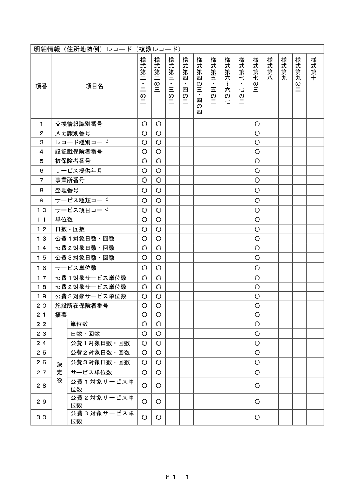
| 項番 | 項目名 | 属性 | 桁数 | 内容 | 必須 | 備考 | その他の列 |
|---|---|---|---|---|---|---|---|
| １ | 交換情報識別番号 | 様式第二・二の二:○ 様式第二の三:○ 様式第三・三の二:－ 様式第四・四の二:－ 様式第四の三・四の四:－ 様式第五・五の二:－ 様式第六〜六の七:－ 様式第七・七の二:－ 様式第七の三:○ 様式第八:－ 様式第九:－ 様式第九の二:－ 様式第十:－ | |||||
| ２ | 入力識別番号 | 様式第二・二の二:○ 様式第二の三:○ 様式第三・三の二:－ 様式第四・四の二:－ 様式第四の三・四の四:－ 様式第五・五の二:－ 様式第六〜六の七:－ 様式第七・七の二:－ 様式第七の三:○ 様式第八:－ 様式第九:－ 様式第九の二:－ 様式第十:－ | |||||
| ３ | レコード種別コード | 様式第二・二の二:○ 様式第二の三:○ 様式第三・三の二:－ 様式第四・四の二:－ 様式第四の三・四の四:－ 様式第五・五の二:－ 様式第六〜六の七:－ 様式第七・七の二:－ 様式第七の三:○ 様式第八:－ 様式第九:－ 様式第九の二:－ 様式第十:－ | |||||
| ４ | 証記載保険者番号 | 様式第二・二の二:○ 様式第二の三:○ 様式第三・三の二:－ 様式第四・四の二:－ 様式第四の三・四の四:－ 様式第五・五の二:－ 様式第六〜六の七:－ 様式第七・七の二:－ 様式第七の三:○ 様式第八:－ 様式第九:－ 様式第九の二:－ 様式第十:－ | |||||
| ５ | 被保険者番号 | 様式第二・二の二:○ 様式第二の三:○ 様式第三・三の二:－ 様式第四・四の二:－ 様式第四の三・四の四:－ 様式第五・五の二:－ 様式第六〜六の七:－ 様式第七・七の二:－ 様式第七の三:○ 様式第八:－ 様式第九:－ 様式第九の二:－ 様式第十:－ | |||||
| ６ | サービス提供年月 | 様式第二・二の二:○ 様式第二の三:○ 様式第三・三の二:－ 様式第四・四の二:－ 様式第四の三・四の四:－ 様式第五・五の二:－ 様式第六〜六の七:－ 様式第七・七の二:－ 様式第七の三:○ 様式第八:－ 様式第九:－ 様式第九の二:－ 様式第十:－ | |||||
| ７ | 事業所番号 | 様式第二・二の二:○ 様式第二の三:○ 様式第三・三の二:－ 様式第四・四の二:－ 様式第四の三・四の四:－ 様式第五・五の二:－ 様式第六〜六の七:－ 様式第七・七の二:－ 様式第七の三:○ 様式第八:－ 様式第九:－ 様式第九の二:－ 様式第十:－ | |||||
| ８ | 整理番号 | 様式第二・二の二:○ 様式第二の三:○ 様式第三・三の二:－ 様式第四・四の二:－ 様式第四の三・四の四:－ 様式第五・五の二:－ 様式第六〜六の七:－ 様式第七・七の二:－ 様式第七の三:○ 様式第八:－ 様式第九:－ 様式第九の二:－ 様式第十:－ | |||||
| ９ | サービス種類コード | 様式第二・二の二:○ 様式第二の三:○ 様式第三・三の二:－ 様式第四・四の二:－ 様式第四の三・四の四:－ 様式第五・五の二:－ 様式第六〜六の七:－ 様式第七・七の二:－ 様式第七の三:○ 様式第八:－ 様式第九:－ 様式第九の二:－ 様式第十:－ | |||||
| １０ | サービス項目コード | 様式第二・二の二:○ 様式第二の三:○ 様式第三・三の二:－ 様式第四・四の二:－ 様式第四の三・四の四:－ 様式第五・五の二:－ 様式第六〜六の七:－ 様式第七・七の二:－ 様式第七の三:○ 様式第八:－ 様式第九:－ 様式第九の二:－ 様式第十:－ | |||||
| １１ | 単位数 | 様式第二・二の二:○ 様式第二の三:○ 様式第三・三の二:－ 様式第四・四の二:－ 様式第四の三・四の四:－ 様式第五・五の二:－ 様式第六〜六の七:－ 様式第七・七の二:－ 様式第七の三:○ 様式第八:－ 様式第九:－ 様式第九の二:－ 様式第十:－ | |||||
| １２ | 日数・回数 | 様式第二・二の二:○ 様式第二の三:○ 様式第三・三の二:－ 様式第四・四の二:－ 様式第四の三・四の四:－ 様式第五・五の二:－ 様式第六〜六の七:－ 様式第七・七の二:－ 様式第七の三:○ 様式第八:－ 様式第九:－ 様式第九の二:－ 様式第十:－ | |||||
| １３ | 公費１対象日数・回数 | 様式第二・二の二:○ 様式第二の三:○ 様式第三・三の二:－ 様式第四・四の二:－ 様式第四の三・四の四:－ 様式第五・五の二:－ 様式第六〜六の七:－ 様式第七・七の二:－ 様式第七の三:○ 様式第八:－ 様式第九:－ 様式第九の二:－ 様式第十:－ | |||||
| １４ | 公費２対象日数・回数 | 様式第二・二の二:○ 様式第二の三:○ 様式第三・三の二:－ 様式第四・四の二:－ 様式第四の三・四の四:－ 様式第五・五の二:－ 様式第六〜六の七:－ 様式第七・七の二:－ 様式第七の三:○ 様式第八:－ 様式第九:－ 様式第九の二:－ 様式第十:－ | |||||
| １５ | 公費３対象日数・回数 | 様式第二・二の二:○ 様式第二の三:○ 様式第三・三の二:－ 様式第四・四の二:－ 様式第四の三・四の四:－ 様式第五・五の二:－ 様式第六〜六の七:－ 様式第七・七の二:－ 様式第七の三:○ 様式第八:－ 様式第九:－ 様式第九の二:－ 様式第十:－ | |||||
| １６ | サービス単位数 | 様式第二・二の二:○ 様式第二の三:○ 様式第三・三の二:－ 様式第四・四の二:－ 様式第四の三・四の四:－ 様式第五・五の二:－ 様式第六〜六の七:－ 様式第七・七の二:－ 様式第七の三:○ 様式第八:－ 様式第九:－ 様式第九の二:－ 様式第十:－ | |||||
| １７ | 公費１対象サービス単位数 | 様式第二・二の二:○ 様式第二の三:○ 様式第三・三の二:－ 様式第四・四の二:－ 様式第四の三・四の四:－ 様式第五・五の二:－ 様式第六〜六の七:－ 様式第七・七の二:－ 様式第七の三:○ 様式第八:－ 様式第九:－ 様式第九の二:－ 様式第十:－ | |||||
| １８ | 公費２対象サービス単位数 | 様式第二・二の二:○ 様式第二の三:○ 様式第三・三の二:－ 様式第四・四の二:－ 様式第四の三・四の四:－ 様式第五・五の二:－ 様式第六〜六の七:－ 様式第七・七の二:－ 様式第七の三:○ 様式第八:－ 様式第九:－ 様式第九の二:－ 様式第十:－ | |||||
| １９ | 公費３対象サービス単位数 | 様式第二・二の二:○ 様式第二の三:○ 様式第三・三の二:－ 様式第四・四の二:－ 様式第四の三・四の四:－ 様式第五・五の二:－ 様式第六〜六の七:－ 様式第七・七の二:－ 様式第七の三:○ 様式第八:－ 様式第九:－ 様式第九の二:－ 様式第十:－ | |||||
| ２０ | 施設所在保険者番号 | 様式第二・二の二:○ 様式第二の三:○ 様式第三・三の二:－ 様式第四・四の二:－ 様式第四の三・四の四:－ 様式第五・五の二:－ 様式第六〜六の七:－ 様式第七・七の二:－ 様式第七の三:○ 様式第八:－ 様式第九:－ 様式第九の二:－ 様式第十:－ | |||||
| ２１ | 摘要 | 様式第二・二の二:○ 様式第二の三:○ 様式第三・三の二:－ 様式第四・四の二:－ 様式第四の三・四の四:－ 様式第五・五の二:－ 様式第六〜六の七:－ 様式第七・七の二:－ 様式第七の三:○ 様式第八:－ 様式第九:－ 様式第九の二:－ 様式第十:－ | |||||
| ２２ | 決定後 > 単位数 | 様式第二・二の二:○ 様式第二の三:○ 様式第三・三の二:－ 様式第四・四の二:－ 様式第四の三・四の四:－ 様式第五・五の二:－ 様式第六〜六の七:－ 様式第七・七の二:－ 様式第七の三:○ 様式第八:－ 様式第九:－ 様式第九の二:－ 様式第十:－ | |||||
| ２３ | 決定後 > 日数・回数 | 様式第二・二の二:○ 様式第二の三:○ 様式第三・三の二:－ 様式第四・四の二:－ 様式第四の三・四の四:－ 様式第五・五の二:－ 様式第六〜六の七:－ 様式第七・七の二:－ 様式第七の三:○ 様式第八:－ 様式第九:－ 様式第九の二:－ 様式第十:－ | |||||
| ２４ | 決定後 > 公費１対象日数・回数 | 様式第二・二の二:○ 様式第二の三:○ 様式第三・三の二:－ 様式第四・四の二:－ 様式第四の三・四の四:－ 様式第五・五の二:－ 様式第六〜六の七:－ 様式第七・七の二:－ 様式第七の三:○ 様式第八:－ 様式第九:－ 様式第九の二:－ 様式第十:－ | |||||
| ２５ | 決定後 > 公費２対象日数・回数 | 様式第二・二の二:○ 様式第二の三:○ 様式第三・三の二:－ 様式第四・四の二:－ 様式第四の三・四の四:－ 様式第五・五の二:－ 様式第六〜六の七:－ 様式第七・七の二:－ 様式第七の三:○ 様式第八:－ 様式第九:－ 様式第九の二:－ 様式第十:－ | |||||
| ２６ | 決定後 > 公費３対象日数・回数 | 様式第二・二の二:○ 様式第二の三:○ 様式第三・三の二:－ 様式第四・四の二:－ 様式第四の三・四の四:－ 様式第五・五の二:－ 様式第六〜六の七:－ 様式第七・七の二:－ 様式第七の三:○ 様式第八:－ 様式第九:－ 様式第九の二:－ 様式第十:－ | |||||
| ２７ | 決定後 > サービス単位数 | 様式第二・二の二:○ 様式第二の三:○ 様式第三・三の二:－ 様式第四・四の二:－ 様式第四の三・四の四:－ 様式第五・五の二:－ 様式第六〜六の七:－ 様式第七・七の二:－ 様式第七の三:○ 様式第八:－ 様式第九:－ 様式第九の二:－ 様式第十:－ | |||||
| ２８ | 決定後 > 公費１対象サービス単位数 | 様式第二・二の二:○ 様式第二の三:○ 様式第三・三の二:－ 様式第四・四の二:－ 様式第四の三・四の四:－ 様式第五・五の二:－ 様式第六〜六の七:－ 様式第七・七の二:－ 様式第七の三:○ 様式第八:－ 様式第九:－ 様式第九の二:－ 様式第十:－ | |||||
| ２９ | 決定後 > 公費２対象サービス単位数 | 様式第二・二の二:○ 様式第二の三:○ 様式第三・三の二:－ 様式第四・四の二:－ 様式第四の三・四の四:－ 様式第五・五の二:－ 様式第六〜六の七:－ 様式第七・七の二:－ 様式第七の三:○ 様式第八:－ 様式第九:－ 様式第九の二:－ 様式第十:－ | |||||
| ３０ | 決定後 > 公費３対象サービス単位数 | 様式第二・二の二:○ 様式第二の三:○ 様式第三・三の二:－ 様式第四・四の二:－ 様式第四の三・四の四:－ 様式第五・五の二:－ 様式第六〜六の七:－ 様式第七・七の二:－ 様式第七の三:○ 様式第八:－ 様式第九:－ 様式第九の二:－ 様式第十:－ |
| 項番 | 項目名 | 属性 | 桁数 | 内容 | 必須 | 備考 | その他の列 |
|---|---|---|---|---|---|---|---|
| 1 | 交換情報識別番号 | 様式第二・二の二:○ 様式第二の三:○ 様式第三・三の二:－ 様式第四・四の二:－ 様式第四の三・四の四:－ 様式第五・五の二:－ 様式第六～六の七:－ 様式第七・七の二:－ 様式第七の三:○ 様式第八:－ 様式第九:－ 様式第九の二:－ 様式第十:－ | |||||
| 2 | 入力識別番号 | 様式第二・二の二:○ 様式第二の三:○ 様式第三・三の二:－ 様式第四・四の二:－ 様式第四の三・四の四:－ 様式第五・五の二:－ 様式第六～六の七:－ 様式第七・七の二:－ 様式第七の三:○ 様式第八:－ 様式第九:－ 様式第九の二:－ 様式第十:－ | |||||
| 3 | レコード種別コード | 様式第二・二の二:○ 様式第二の三:○ 様式第三・三の二:－ 様式第四・四の二:－ 様式第四の三・四の四:－ 様式第五・五の二:－ 様式第六～六の七:－ 様式第七・七の二:－ 様式第七の三:○ 様式第八:－ 様式第九:－ 様式第九の二:－ 様式第十:－ | |||||
| 4 | 証記載保険者番号 | 様式第二・二の二:○ 様式第二の三:○ 様式第三・三の二:－ 様式第四・四の二:－ 様式第四の三・四の四:－ 様式第五・五の二:－ 様式第六～六の七:－ 様式第七・七の二:－ 様式第七の三:○ 様式第八:－ 様式第九:－ 様式第九の二:－ 様式第十:－ | |||||
| 5 | 被保険者番号 | 様式第二・二の二:○ 様式第二の三:○ 様式第三・三の二:－ 様式第四・四の二:－ 様式第四の三・四の四:－ 様式第五・五の二:－ 様式第六～六の七:－ 様式第七・七の二:－ 様式第七の三:○ 様式第八:－ 様式第九:－ 様式第九の二:－ 様式第十:－ | |||||
| 6 | サービス提供年月 | 様式第二・二の二:○ 様式第二の三:○ 様式第三・三の二:－ 様式第四・四の二:－ 様式第四の三・四の四:－ 様式第五・五の二:－ 様式第六～六の七:－ 様式第七・七の二:－ 様式第七の三:○ 様式第八:－ 様式第九:－ 様式第九の二:－ 様式第十:－ | |||||
| 7 | 事業所番号 | 様式第二・二の二:○ 様式第二の三:○ 様式第三・三の二:－ 様式第四・四の二:－ 様式第四の三・四の四:－ 様式第五・五の二:－ 様式第六～六の七:－ 様式第七・七の二:－ 様式第七の三:○ 様式第八:－ 様式第九:－ 様式第九の二:－ 様式第十:－ | |||||
| 8 | 整理番号 | 様式第二・二の二:○ 様式第二の三:○ 様式第三・三の二:－ 様式第四・四の二:－ 様式第四の三・四の四:－ 様式第五・五の二:－ 様式第六～六の七:－ 様式第七・七の二:－ 様式第七の三:○ 様式第八:－ 様式第九:－ 様式第九の二:－ 様式第十:－ | |||||
| 9 | サービス種類コード | 様式第二・二の二:○ 様式第二の三:○ 様式第三・三の二:－ 様式第四・四の二:－ 様式第四の三・四の四:－ 様式第五・五の二:－ 様式第六～六の七:－ 様式第七・七の二:－ 様式第七の三:○ 様式第八:－ 様式第九:－ 様式第九の二:－ 様式第十:－ | |||||
| 10 | サービス項目コード | 様式第二・二の二:○ 様式第二の三:○ 様式第三・三の二:－ 様式第四・四の二:－ 様式第四の三・四の四:－ 様式第五・五の二:－ 様式第六～六の七:－ 様式第七・七の二:－ 様式第七の三:○ 様式第八:－ 様式第九:－ 様式第九の二:－ 様式第十:－ | |||||
| 11 | 単位数 | 様式第二・二の二:○ 様式第二の三:○ 様式第三・三の二:－ 様式第四・四の二:－ 様式第四の三・四の四:－ 様式第五・五の二:－ 様式第六～六の七:－ 様式第七・七の二:－ 様式第七の三:○ 様式第八:－ 様式第九:－ 様式第九の二:－ 様式第十:－ | |||||
| 12 | 日数・回数 | 様式第二・二の二:○ 様式第二の三:○ 様式第三・三の二:－ 様式第四・四の二:－ 様式第四の三・四の四:－ 様式第五・五の二:－ 様式第六～六の七:－ 様式第七・七の二:－ 様式第七の三:○ 様式第八:－ 様式第九:－ 様式第九の二:－ 様式第十:－ | |||||
| 13 | 公費1対象日数・回数 | 様式第二・二の二:○ 様式第二の三:○ 様式第三・三の二:－ 様式第四・四の二:－ 様式第四の三・四の四:－ 様式第五・五の二:－ 様式第六～六の七:－ 様式第七・七の二:－ 様式第七の三:○ 様式第八:－ 様式第九:－ 様式第九の二:－ 様式第十:－ | |||||
| 14 | 公費2対象日数・回数 | 様式第二・二の二:○ 様式第二の三:○ 様式第三・三の二:－ 様式第四・四の二:－ 様式第四の三・四の四:－ 様式第五・五の二:－ 様式第六～六の七:－ 様式第七・七の二:－ 様式第七の三:○ 様式第八:－ 様式第九:－ 様式第九の二:－ 様式第十:－ | |||||
| 15 | 公費3対象日数・回数 | 様式第二・二の二:○ 様式第二の三:○ 様式第三・三の二:－ 様式第四・四の二:－ 様式第四の三・四の四:－ 様式第五・五の二:－ 様式第六～六の七:－ 様式第七・七の二:－ 様式第七の三:○ 様式第八:－ 様式第九:－ 様式第九の二:－ 様式第十:－ | |||||
| 16 | サービス単位数 | 様式第二・二の二:○ 様式第二の三:○ 様式第三・三の二:－ 様式第四・四の二:－ 様式第四の三・四の四:－ 様式第五・五の二:－ 様式第六～六の七:－ 様式第七・七の二:－ 様式第七の三:○ 様式第八:－ 様式第九:－ 様式第九の二:－ 様式第十:－ | |||||
| 17 | 公費1対象サービス単位数 | 様式第二・二の二:○ 様式第二の三:○ 様式第三・三の二:－ 様式第四・四の二:－ 様式第四の三・四の四:－ 様式第五・五の二:－ 様式第六～六の七:－ 様式第七・七の二:－ 様式第七の三:○ 様式第八:－ 様式第九:－ 様式第九の二:－ 様式第十:－ | |||||
| 18 | 公費2対象サービス単位数 | 様式第二・二の二:○ 様式第二の三:○ 様式第三・三の二:－ 様式第四・四の二:－ 様式第四の三・四の四:－ 様式第五・五の二:－ 様式第六～六の七:－ 様式第七・七の二:－ 様式第七の三:○ 様式第八:－ 様式第九:－ 様式第九の二:－ 様式第十:－ | |||||
| 19 | 公費3対象サービス単位数 | 様式第二・二の二:○ 様式第二の三:○ 様式第三・三の二:－ 様式第四・四の二:－ 様式第四の三・四の四:－ 様式第五・五の二:－ 様式第六～六の七:－ 様式第七・七の二:－ 様式第七の三:○ 様式第八:－ 様式第九:－ 様式第九の二:－ 様式第十:－ | |||||
| 20 | 施設所在保険者番号 | 様式第二・二の二:○ 様式第二の三:○ 様式第三・三の二:－ 様式第四・四の二:－ 様式第四の三・四の四:－ 様式第五・五の二:－ 様式第六～六の七:－ 様式第七・七の二:－ 様式第七の三:○ 様式第八:－ 様式第九:－ 様式第九の二:－ 様式第十:－ | |||||
| 21 | 摘要 | 様式第二・二の二:○ 様式第二の三:○ 様式第三・三の二:－ 様式第四・四の二:－ 様式第四の三・四の四:－ 様式第五・五の二:－ 様式第六～六の七:－ 様式第七・七の二:－ 様式第七の三:○ 様式第八:－ 様式第九:－ 様式第九の二:－ 様式第十:－ | |||||
| 22 | 決定後 > 単位数 | 様式第二・二の二:○ 様式第二の三:○ 様式第三・三の二:－ 様式第四・四の二:－ 様式第四の三・四の四:－ 様式第五・五の二:－ 様式第六～六の七:－ 様式第七・七の二:－ 様式第七の三:○ 様式第八:－ 様式第九:－ 様式第九の二:－ 様式第十:－ | |||||
| 23 | 決定後 > 日数・回数 | 様式第二・二の二:○ 様式第二の三:○ 様式第三・三の二:－ 様式第四・四の二:－ 様式第四の三・四の四:－ 様式第五・五の二:－ 様式第六～六の七:－ 様式第七・七の二:－ 様式第七の三:○ 様式第八:－ 様式第九:－ 様式第九の二:－ 様式第十:－ | |||||
| 24 | 決定後 > 公費1対象日数・回数 | 様式第二・二の二:○ 様式第二の三:○ 様式第三・三の二:－ 様式第四・四の二:－ 様式第四の三・四の四:－ 様式第五・五の二:－ 様式第六～六の七:－ 様式第七・七の二:－ 様式第七の三:○ 様式第八:－ 様式第九:－ 様式第九の二:－ 様式第十:－ | |||||
| 25 | 決定後 > 公費2対象日数・回数 | 様式第二・二の二:○ 様式第二の三:○ 様式第三・三の二:－ 様式第四・四の二:－ 様式第四の三・四の四:－ 様式第五・五の二:－ 様式第六～六の七:－ 様式第七・七の二:－ 様式第七の三:○ 様式第八:－ 様式第九:－ 様式第九の二:－ 様式第十:－ | |||||
| 26 | 決定後 > 公費3対象日数・回数 | 様式第二・二の二:○ 様式第二の三:○ 様式第三・三の二:－ 様式第四・四の二:－ 様式第四の三・四の四:－ 様式第五・五の二:－ 様式第六～六の七:－ 様式第七・七の二:－ 様式第七の三:○ 様式第八:－ 様式第九:－ 様式第九の二:－ 様式第十:－ | |||||
| 27 | 決定後 > サービス単位数 | 様式第二・二の二:○ 様式第二の三:○ 様式第三・三の二:－ 様式第四・四の二:－ 様式第四の三・四の四:－ 様式第五・五の二:－ 様式第六～六の七:－ 様式第七・七の二:－ 様式第七の三:○ 様式第八:－ 様式第九:－ 様式第九の二:－ 様式第十:－ | |||||
| 28 | 決定後 > 公費1対象サービス単位数 | 様式第二・二の二:○ 様式第二の三:○ 様式第三・三の二:－ 様式第四・四の二:－ 様式第四の三・四の四:－ 様式第五・五の二:－ 様式第六～六の七:－ 様式第七・七の二:－ 様式第七の三:○ 様式第八:－ 様式第九:－ 様式第九の二:－ 様式第十:－ | |||||
| 29 | 決定後 > 公費2対象サービス単位数 | 様式第二・二の二:○ 様式第二の三:○ 様式第三・三の二:－ 様式第四・四の二:－ 様式第四の三・四の四:－ 様式第五・五の二:－ 様式第六～六の七:－ 様式第七・七の二:－ 様式第七の三:○ 様式第八:－ 様式第九:－ 様式第九の二:－ 様式第十:－ | |||||
| 30 | 決定後 > 公費3対象サービス単位数 | 様式第二・二の二:○ 様式第二の三:○ 様式第三・三の二:－ 様式第四・四の二:－ 様式第四の三・四の四:－ 様式第五・五の二:－ 様式第六～六の七:－ 様式第七・七の二:－ 様式第七の三:○ 様式第八:－ 様式第九:－ 様式第九の二:－ 様式第十:－ |
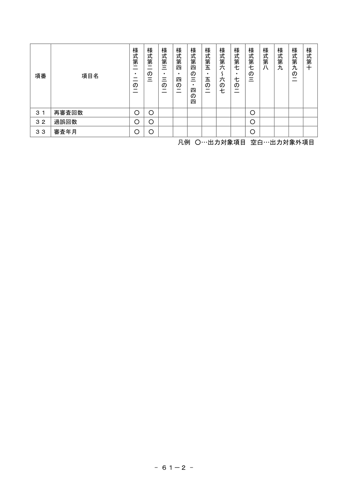
| 項番 | 項目名 | 属性 | 桁数 | 内容 | 必須 | 備考 | その他の列 |
|---|---|---|---|---|---|---|---|
| ３１ | 再審査回数 | 様式第二・二の二: ○ 様式第二の三: ○ 様式第三・三の二: － 様式第四・四の二: － 様式第四の三・四の四: － 様式第五・五の二: － 様式第六～六の七: － 様式第七・七の二: － 様式第七の三: ○ 様式第八: － 様式第九: － 様式第九の二: － 様式第十: － | |||||
| ３２ | 過誤回数 | 様式第二・二の二: ○ 様式第二の三: ○ 様式第三・三の二: － 様式第四・四の二: － 様式第四の三・四の四: － 様式第五・五の二: － 様式第六～六の七: － 様式第七・七の二: － 様式第七の三: ○ 様式第八: － 様式第九: － 様式第九の二: － 様式第十: － | |||||
| ３３ | 審査年月 | 様式第二・二の二: ○ 様式第二の三: ○ 様式第三・三の二: － 様式第四・四の二: － 様式第四の三・四の四: － 様式第五・五の二: － 様式第六～六の七: － 様式第七・七の二: － 様式第七の三: ○ 様式第八: － 様式第九: － 様式第九の二: － 様式第十: － |
| 項番 | 項目名 | 属性 | 桁数 | 内容 | 必須 | 備考 | その他の列 |
|---|---|---|---|---|---|---|---|
| ３１ | 再審査回数 | 様式第二・二の二:○ 様式第二の三:○ 様式第三・三の二:－ 様式第四・四の二:－ 様式第四の三・四の四:－ 様式第五・五の二:－ 様式第六～六の七:－ 様式第七・七の二:－ 様式第七の三:○ 様式第八:－ 様式第九:－ 様式第九の二:－ 様式第十:－ | |||||
| ３２ | 過誤回数 | 様式第二・二の二:○ 様式第二の三:○ 様式第三・三の二:－ 様式第四・四の二:－ 様式第四の三・四の四:－ 様式第五・五の二:－ 様式第六～六の七:－ 様式第七・七の二:－ 様式第七の三:○ 様式第八:－ 様式第九:－ 様式第九の二:－ 様式第十:－ | |||||
| ３３ | 審査年月 | 様式第二・二の二:○ 様式第二の三:○ 様式第三・三の二:－ 様式第四・四の二:－ 様式第四の三・四の四:－ 様式第五・五の二:－ 様式第六～六の七:－ 様式第七・七の二:－ 様式第七の三:○ 様式第八:－ 様式第九:－ 様式第九の二:－ 様式第十:－ |
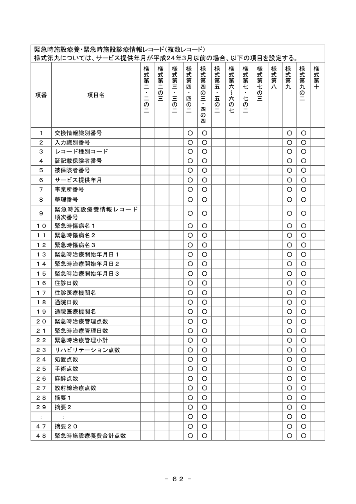
| 項番 | 項目名 | 属性 | 桁数 | 内容 | 必須 | 備考 | その他の列 |
|---|---|---|---|---|---|---|---|
| １ | 交換情報識別番号 | 様式第二・二の二:－ 様式第二の三:－ 様式第三・三の二:－ 様式第四・四の二:○ 様式第四の三・四の四:○ 様式第五・五の二:－ 様式第六～六の七:－ 様式第七・七の二:－ 様式第七の三:－ 様式第八:－ 様式第九:○ 様式第九の二:○ 様式第十:－ | |||||
| ２ | 入力識別番号 | 様式第二・二の二:－ 様式第二の三:－ 様式第三・三の二:－ 様式第四・四の二:○ 様式第四の三・四の四:○ 様式第五・五の二:－ 様式第六～六の七:－ 様式第七・七の二:－ 様式第七の三:－ 様式第八:－ 様式第九:○ 様式第九の二:○ 様式第十:－ | |||||
| ３ | レコード種別コード | 様式第二・二の二:－ 様式第二の三:－ 様式第三・三の二:－ 様式第四・四の二:○ 様式第四の三・四の四:○ 様式第五・五の二:－ 様式第六～六の七:－ 様式第七・七の二:－ 様式第七の三:－ 様式第八:－ 様式第九:○ 様式第九の二:○ 様式第十:－ | |||||
| ４ | 証記載保険者番号 | 様式第二・二の二:－ 様式第二の三:－ 様式第三・三の二:－ 様式第四・四の二:○ 様式第四の三・四の四:○ 様式第五・五の二:－ 様式第六～六の七:－ 様式第七・七の二:－ 様式第七の三:－ 様式第八:－ 様式第九:○ 様式第九の二:○ 様式第十:－ | |||||
| ５ | 被保険者番号 | 様式第二・二の二:－ 様式第二の三:－ 様式第三・三の二:－ 様式第四・四の二:○ 様式第四の三・四の四:○ 様式第五・五の二:－ 様式第六～六の七:－ 様式第七・七の二:－ 様式第七の三:－ 様式第八:－ 様式第九:○ 様式第九の二:○ 様式第十:－ | |||||
| ６ | サービス提供年月 | 様式第二・二の二:－ 様式第二の三:－ 様式第三・三の二:－ 様式第四・四の二:○ 様式第四の三・四の四:○ 様式第五・五の二:－ 様式第六～六の七:－ 様式第七・七の二:－ 様式第七の三:－ 様式第八:－ 様式第九:○ 様式第九の二:○ 様式第十:－ | |||||
| ７ | 事業所番号 | 様式第二・二の二:－ 様式第二の三:－ 様式第三・三の二:－ 様式第四・四の二:○ 様式第四の三・四の四:○ 様式第五・五の二:－ 様式第六～六の七:－ 様式第七・七の二:－ 様式第七の三:－ 様式第八:－ 様式第九:○ 様式第九の二:○ 様式第十:－ | |||||
| ８ | 整理番号 | 様式第二・二の二:－ 様式第二の三:－ 様式第三・三の二:－ 様式第四・四の二:○ 様式第四の三・四の四:○ 様式第五・五の二:－ 様式第六～六の七:－ 様式第七・七の二:－ 様式第七の三:－ 様式第八:－ 様式第九:○ 様式第九の二:○ 様式第十:－ | |||||
| ９ | 緊急時施設療養情報レコード順次番号 | 様式第二・二の二:－ 様式第二の三:－ 様式第三・三の二:－ 様式第四・四の二:○ 様式第四の三・四の四:○ 様式第五・五の二:－ 様式第六～六の七:－ 様式第七・七の二:－ 様式第七の三:－ 様式第八:－ 様式第九:○ 様式第九の二:○ 様式第十:－ | |||||
| １０ | 緊急時傷病名１ | 様式第二・二の二:－ 様式第二の三:－ 様式第三・三の二:－ 様式第四・四の二:○ 様式第四の三・四の四:○ 様式第五・五の二:－ 様式第六～六の七:－ 様式第七・七の二:－ 様式第七の三:－ 様式第八:－ 様式第九:○ 様式第九の二:○ 様式第十:－ | |||||
| １１ | 緊急時傷病名２ | 様式第二・二の二:－ 様式第二の三:－ 様式第三・三の二:－ 様式第四・四の二:○ 様式第四の三・四の四:○ 様式第五・五の二:－ 様式第六～六の七:－ 様式第七・七の二:－ 様式第七の三:－ 様式第八:－ 様式第九:○ 様式第九の二:○ 様式第十:－ | |||||
| １２ | 緊急時傷病名３ | 様式第二・二の二:－ 様式第二の三:－ 様式第三・三の二:－ 様式第四・四の二:○ 様式第四の三・四の四:○ 様式第五・五の二:－ 様式第六～六の七:－ 様式第七・七の二:－ 様式第七の三:－ 様式第八:－ 様式第九:○ 様式第九の二:○ 様式第十:－ | |||||
| １３ | 緊急時治療開始年月日１ | 様式第二・二の二:－ 様式第二の三:－ 様式第三・三の二:－ 様式第四・四の二:○ 様式第四の三・四の四:○ 様式第五・五の二:－ 様式第六～六の七:－ 様式第七・七の二:－ 様式第七の三:－ 様式第八:－ 様式第九:○ 様式第九の二:○ 様式第十:－ | |||||
| １４ | 緊急時治療開始年月日２ | 様式第二・二の二:－ 様式第二の三:－ 様式第三・三の二:－ 様式第四・四の二:○ 様式第四の三・四の四:○ 様式第五・五の二:－ 様式第六～六の七:－ 様式第七・七の二:－ 様式第七の三:－ 様式第八:－ 様式第九:○ 様式第九の二:○ 様式第十:－ | |||||
| １５ | 緊急時治療開始年月日３ | 様式第二・二の二:－ 様式第二の三:－ 様式第三・三の二:－ 様式第四・四の二:○ 様式第四の三・四の四:○ 様式第五・五の二:－ 様式第六～六の七:－ 様式第七・七の二:－ 様式第七の三:－ 様式第八:－ 様式第九:○ 様式第九の二:○ 様式第十:－ | |||||
| １６ | 往診日数 | 様式第二・二の二:－ 様式第二の三:－ 様式第三・三の二:－ 様式第四・四の二:○ 様式第四の三・四の四:○ 様式第五・五の二:－ 様式第六～六の七:－ 様式第七・七の二:－ 様式第七の三:－ 様式第八:－ 様式第九:○ 様式第九の二:○ 様式第十:－ | |||||
| １７ | 往診医療機関名 | 様式第二・二の二:－ 様式第二の三:－ 様式第三・三の二:－ 様式第四・四の二:○ 様式第四の三・四の四:○ 様式第五・五の二:－ 様式第六～六の七:－ 様式第七・七の二:－ 様式第七の三:－ 様式第八:－ 様式第九:○ 様式第九の二:○ 様式第十:－ | |||||
| １８ | 通院日数 | 様式第二・二の二:－ 様式第二の三:－ 様式第三・三の二:－ 様式第四・四の二:○ 様式第四の三・四の四:○ 様式第五・五の二:－ 様式第六～六の七:－ 様式第七・七の二:－ 様式第七の三:－ 様式第八:－ 様式第九:○ 様式第九の二:○ 様式第十:－ | |||||
| １９ | 通院医療機関名 | 様式第二・二の二:－ 様式第二の三:－ 様式第三・三の二:－ 様式第四・四の二:○ 様式第四の三・四の四:○ 様式第五・五の二:－ 様式第六～六の七:－ 様式第七・七の二:－ 様式第七の三:－ 様式第八:－ 様式第九:○ 様式第九の二:○ 様式第十:－ | |||||
| ２０ | 緊急時治療管理点数 | 様式第二・二の二:－ 様式第二の三:－ 様式第三・三の二:－ 様式第四・四の二:○ 様式第四の三・四の四:○ 様式第五・五の二:－ 様式第六～六の七:－ 様式第七・七の二:－ 様式第七の三:－ 様式第八:－ 様式第九:○ 様式第九の二:○ 様式第十:－ | |||||
| ２１ | 緊急時治療管理日数 | 様式第二・二の二:－ 様式第二の三:－ 様式第三・三の二:－ 様式第四・四の二:○ 様式第四の三・四の四:○ 様式第五・五の二:－ 様式第六～六の七:－ 様式第七・七の二:－ 様式第七の三:－ 様式第八:－ 様式第九:○ 様式第九の二:○ 様式第十:－ | |||||
| ２２ | 緊急時治療管理小計 | 様式第二・二の二:－ 様式第二の三:－ 様式第三・三の二:－ 様式第四・四の二:○ 様式第四の三・四の四:○ 様式第五・五の二:－ 様式第六～六の七:－ 様式第七・七の二:－ 様式第七の三:－ 様式第八:－ 様式第九:○ 様式第九の二:○ 様式第十:－ | |||||
| ２３ | リハビリテーション点数 | 様式第二・二の二:－ 様式第二の三:－ 様式第三・三の二:－ 様式第四・四の二:○ 様式第四の三・四の四:○ 様式第五・五の二:－ 様式第六～六の七:－ 様式第七・七の二:－ 様式第七の三:－ 様式第八:－ 様式第九:○ 様式第九の二:○ 様式第十:－ | |||||
| ２４ | 処置点数 | 様式第二・二の二:－ 様式第二の三:－ 様式第三・三の二:－ 様式第四・四の二:○ 様式第四の三・四の四:○ 様式第五・五の二:－ 様式第六～六の七:－ 様式第七・七の二:－ 様式第七の三:－ 様式第八:－ 様式第九:○ 様式第九の二:○ 様式第十:－ | |||||
| ２５ | 手術点数 | 様式第二・二の二:－ 様式第二の三:－ 様式第三・三の二:－ 様式第四・四の二:○ 様式第四の三・四の四:○ 様式第五・五の二:－ 様式第六～六の七:－ 様式第七・七の二:－ 様式第七の三:－ 様式第八:－ 様式第九:○ 様式第九の二:○ 様式第十:－ | |||||
| ２６ | 麻酔点数 | 様式第二・二の二:－ 様式第二の三:－ 様式第三・三の二:－ 様式第四・四の二:○ 様式第四の三・四の四:○ 様式第五・五の二:－ 様式第六～六の七:－ 様式第七・七の二:－ 様式第七の三:－ 様式第八:－ 様式第九:○ 様式第九の二:○ 様式第十:－ | |||||
| ２７ | 放射線治療点数 | 様式第二・二の二:－ 様式第二の三:－ 様式第三・三の二:－ 様式第四・四の二:○ 様式第四の三・四の四:○ 様式第五・五の二:－ 様式第六～六の七:－ 様式第七・七の二:－ 様式第七の三:－ 様式第八:－ 様式第九:○ 様式第九の二:○ 様式第十:－ | |||||
| ２８ | 摘要１ | 様式第二・二の二:－ 様式第二の三:－ 様式第三・三の二:－ 様式第四・四の二:○ 様式第四の三・四の四:○ 様式第五・五の二:－ 様式第六～六の七:－ 様式第七・七の二:－ 様式第七の三:－ 様式第八:－ 様式第九:○ 様式第九の二:○ 様式第十:－ | |||||
| ２９ | 摘要２ | 様式第二・二の二:－ 様式第二の三:－ 様式第三・三の二:－ 様式第四・四の二:○ 様式第四の三・四の四:○ 様式第五・五の二:－ 様式第六～六の七:－ 様式第七・七の二:－ 様式第七の三:－ 様式第八:－ 様式第九:○ 様式第九の二:○ 様式第十:－ | |||||
| ： | ： | 様式第二・二の二:－ 様式第二の三:－ 様式第三・三の二:－ 様式第四・四の二:○ 様式第四の三・四の四:○ 様式第五・五の二:－ 様式第六～六の七:－ 様式第七・七の二:－ 様式第七の三:－ 様式第八:－ 様式第九:○ 様式第九の二:○ 様式第十:－ | |||||
| ４７ | 摘要２０ | 様式第二・二の二:－ 様式第二の三:－ 様式第三・三の二:－ 様式第四・四の二:○ 様式第四の三・四の四:○ 様式第五・五の二:－ 様式第六～六の七:－ 様式第七・七の二:－ 様式第七の三:－ 様式第八:－ 様式第九:○ 様式第九の二:○ 様式第十:－ | |||||
| ４８ | 緊急時施設療養費合計点数 | 様式第二・二の二:－ 様式第二の三:－ 様式第三・三の二:－ 様式第四・四の二:○ 様式第四の三・四の四:○ 様式第五・五の二:－ 様式第六～六の七:－ 様式第七・七の二:－ 様式第七の三:－ 様式第八:－ 様式第九:○ 様式第九の二:○ 様式第十:－ |
| 項番 | 項目名 | 属性 | 桁数 | 内容 | 必須 | 備考 | その他の列 |
|---|---|---|---|---|---|---|---|
| 1 | 交換情報識別番号 | 様式第二・二の二:－ 様式第二の三:－ 様式第三・三の二:－ 様式第四・四の二:○ 様式第四の三・四の四:○ 様式第五・五の二:－ 様式第六～六の七:－ 様式第七・七の二:－ 様式第七の三:－ 様式第八:－ 様式第九:○ 様式第九の二:○ 様式第十:－ | |||||
| 2 | 入力識別番号 | 様式第二・二の二:－ 様式第二の三:－ 様式第三・三の二:－ 様式第四・四の二:○ 様式第四の三・四の四:○ 様式第五・五の二:－ 様式第六～六の七:－ 様式第七・七の二:－ 様式第七の三:－ 様式第八:－ 様式第九:○ 様式第九の二:○ 様式第十:－ | |||||
| 3 | レコード種別コード | 様式第二・二の二:－ 様式第二の三:－ 様式第三・三の二:－ 様式第四・四の二:○ 様式第四の三・四の四:○ 様式第五・五の二:－ 様式第六～六の七:－ 様式第七・七の二:－ 様式第七の三:－ 様式第八:－ 様式第九:○ 様式第九の二:○ 様式第十:－ | |||||
| 4 | 証記載保険者番号 | 様式第二・二の二:－ 様式第二の三:－ 様式第三・三の二:－ 様式第四・四の二:○ 様式第四の三・四の四:○ 様式第五・五の二:－ 様式第六～六の七:－ 様式第七・七の二:－ 様式第七の三:－ 様式第八:－ 様式第九:○ 様式第九の二:○ 様式第十:－ | |||||
| 5 | 被保険者番号 | 様式第二・二の二:－ 様式第二の三:－ 様式第三・三の二:－ 様式第四・四の二:○ 様式第四の三・四の四:○ 様式第五・五の二:－ 様式第六～六の七:－ 様式第七・七の二:－ 様式第七の三:－ 様式第八:－ 様式第九:○ 様式第九の二:○ 様式第十:－ | |||||
| 6 | サービス提供年月 | 様式第二・二の二:－ 様式第二の三:－ 様式第三・三の二:－ 様式第四・四の二:○ 様式第四の三・四の四:○ 様式第五・五の二:－ 様式第六～六の七:－ 様式第七・七の二:－ 様式第七の三:－ 様式第八:－ 様式第九:○ 様式第九の二:○ 様式第十:－ | |||||
| 7 | 事業所番号 | 様式第二・二の二:－ 様式第二の三:－ 様式第三・三の二:－ 様式第四・四の二:○ 様式第四の三・四の四:○ 様式第五・五の二:－ 様式第六～六の七:－ 様式第七・七の二:－ 様式第七の三:－ 様式第八:－ 様式第九:○ 様式第九の二:○ 様式第十:－ | |||||
| 8 | 整理番号 | 様式第二・二の二:－ 様式第二の三:－ 様式第三・三の二:－ 様式第四・四の二:○ 様式第四の三・四の四:○ 様式第五・五の二:－ 様式第六～六の七:－ 様式第七・七の二:－ 様式第七の三:－ 様式第八:－ 様式第九:○ 様式第九の二:○ 様式第十:－ | |||||
| 9 | 緊急時施設療養情報レコード順次番号 | 様式第二・二の二:－ 様式第二の三:－ 様式第三・三の二:－ 様式第四・四の二:○ 様式第四の三・四の四:○ 様式第五・五の二:－ 様式第六～六の七:－ 様式第七・七の二:－ 様式第七の三:－ 様式第八:－ 様式第九:○ 様式第九の二:○ 様式第十:－ | |||||
| 10 | 緊急時傷病名1 | 様式第二・二の二:－ 様式第二の三:－ 様式第三・三の二:－ 様式第四・四の二:○ 様式第四の三・四の四:○ 様式第五・五の二:－ 様式第六～六の七:－ 様式第七・七の二:－ 様式第七の三:－ 様式第八:－ 様式第九:○ 様式第九の二:○ 様式第十:－ | |||||
| 11 | 緊急時傷病名2 | 様式第二・二の二:－ 様式第二の三:－ 様式第三・三の二:－ 様式第四・四の二:○ 様式第四の三・四の四:○ 様式第五・五の二:－ 様式第六～六の七:－ 様式第七・七の二:－ 様式第七の三:－ 様式第八:－ 様式第九:○ 様式第九の二:○ 様式第十:－ | |||||
| 12 | 緊急時傷病名3 | 様式第二・二の二:－ 様式第二の三:－ 様式第三・三の二:－ 様式第四・四の二:○ 様式第四の三・四の四:○ 様式第五・五の二:－ 様式第六～六の七:－ 様式第七・七の二:－ 様式第七の三:－ 様式第八:－ 様式第九:○ 様式第九の二:○ 様式第十:－ | |||||
| 13 | 緊急時治療開始年月日1 | 様式第二・二の二:－ 様式第二の三:－ 様式第三・三の二:－ 様式第四・四の二:○ 様式第四の三・四の四:○ 様式第五・五の二:－ 様式第六～六の七:－ 様式第七・七の二:－ 様式第七の三:－ 様式第八:－ 様式第九:○ 様式第九の二:○ 様式第十:－ | |||||
| 14 | 緊急時治療開始年月日2 | 様式第二・二の二:－ 様式第二の三:－ 様式第三・三の二:－ 様式第四・四の二:○ 様式第四の三・四の四:○ 様式第五・五の二:－ 様式第六～六の七:－ 様式第七・七の二:－ 様式第七の三:－ 様式第八:－ 様式第九:○ 様式第九の二:○ 様式第十:－ | |||||
| 15 | 緊急時治療開始年月日3 | 様式第二・二の二:－ 様式第二の三:－ 様式第三・三の二:－ 様式第四・四の二:○ 様式第四の三・四の四:○ 様式第五・五の二:－ 様式第六～六の七:－ 様式第七・七の二:－ 様式第七の三:－ 様式第八:－ 様式第九:○ 様式第九の二:○ 様式第十:－ | |||||
| 16 | 往診日数 | 様式第二・二の二:－ 様式第二の三:－ 様式第三・三の二:－ 様式第四・四の二:○ 様式第四の三・四の四:○ 様式第五・五の二:－ 様式第六～六の七:－ 様式第七・七の二:－ 様式第七の三:－ 様式第八:－ 様式第九:○ 様式第九の二:○ 様式第十:－ | |||||
| 17 | 往診医療機関名 | 様式第二・二の二:－ 様式第二の三:－ 様式第三・三の二:－ 様式第四・四の二:○ 様式第四の三・四の四:○ 様式第五・五の二:－ 様式第六～六の七:－ 様式第七・七の二:－ 様式第七の三:－ 様式第八:－ 様式第九:○ 様式第九の二:○ 様式第十:－ | |||||
| 18 | 通院日数 | 様式第二・二の二:－ 様式第二の三:－ 様式第三・三の二:－ 様式第四・四の二:○ 様式第四の三・四の四:○ 様式第五・五の二:－ 様式第六～六の七:－ 様式第七・七の二:－ 様式第七の三:－ 様式第八:－ 様式第九:○ 様式第九の二:○ 様式第十:－ | |||||
| 19 | 通院医療機関名 | 様式第二・二の二:－ 様式第二の三:－ 様式第三・三の二:－ 様式第四・四の二:○ 様式第四の三・四の四:○ 様式第五・五の二:－ 様式第六～六の七:－ 様式第七・七の二:－ 様式第七の三:－ 様式第八:－ 様式第九:○ 様式第九の二:○ 様式第十:－ | |||||
| 20 | 緊急時治療管理点数 | 様式第二・二の二:－ 様式第二の三:－ 様式第三・三の二:－ 様式第四・四の二:○ 様式第四の三・四の四:○ 様式第五・五の二:－ 様式第六～六の七:－ 様式第七・七の二:－ 様式第七の三:－ 様式第八:－ 様式第九:○ 様式第九の二:○ 様式第十:－ | |||||
| 21 | 緊急時治療管理日数 | 様式第二・二の二:－ 様式第二の三:－ 様式第三・三の二:－ 様式第四・四の二:○ 様式第四の三・四の四:○ 様式第五・五の二:－ 様式第六～六の七:－ 様式第七・七の二:－ 様式第七の三:－ 様式第八:－ 様式第九:○ 様式第九の二:○ 様式第十:－ | |||||
| 22 | 緊急時治療管理小計 | 様式第二・二の二:－ 様式第二の三:－ 様式第三・三の二:－ 様式第四・四の二:○ 様式第四の三・四の四:○ 様式第五・五の二:－ 様式第六～六の七:－ 様式第七・七の二:－ 様式第七の三:－ 様式第八:－ 様式第九:○ 様式第九の二:○ 様式第十:－ | |||||
| 23 | リハビリテーション点数 | 様式第二・二の二:－ 様式第二の三:－ 様式第三・三の二:－ 様式第四・四の二:○ 様式第四の三・四の四:○ 様式第五・五の二:－ 様式第六～六の七:－ 様式第七・七の二:－ 様式第七の三:－ 様式第八:－ 様式第九:○ 様式第九の二:○ 様式第十:－ | |||||
| 24 | 処置点数 | 様式第二・二の二:－ 様式第二の三:－ 様式第三・三の二:－ 様式第四・四の二:○ 様式第四の三・四の四:○ 様式第五・五の二:－ 様式第六～六の七:－ 様式第七・七の二:－ 様式第七の三:－ 様式第八:－ 様式第九:○ 様式第九の二:○ 様式第十:－ | |||||
| 25 | 手術点数 | 様式第二・二の二:－ 様式第二の三:－ 様式第三・三の二:－ 様式第四・四の二:○ 様式第四の三・四の四:○ 様式第五・五の二:－ 様式第六～六の七:－ 様式第七・七の二:－ 様式第七の三:－ 様式第八:－ 様式第九:○ 様式第九の二:○ 様式第十:－ | |||||
| 26 | 麻酔点数 | 様式第二・二の二:－ 様式第二の三:－ 様式第三・三の二:－ 様式第四・四の二:○ 様式第四の三・四の四:○ 様式第五・五の二:－ 様式第六～六の七:－ 様式第七・七の二:－ 様式第七の三:－ 様式第八:－ 様式第九:○ 様式第九の二:○ 様式第十:－ | |||||
| 27 | 放射線治療点数 | 様式第二・二の二:－ 様式第二の三:－ 様式第三・三の二:－ 様式第四・四の二:○ 様式第四の三・四の四:○ 様式第五・五の二:－ 様式第六～六の七:－ 様式第七・七の二:－ 様式第七の三:－ 様式第八:－ 様式第九:○ 様式第九の二:○ 様式第十:－ | |||||
| 28 | 摘要1 | 様式第二・二の二:－ 様式第二の三:－ 様式第三・三の二:－ 様式第四・四の二:○ 様式第四の三・四の四:○ 様式第五・五の二:－ 様式第六～六の七:－ 様式第七・七の二:－ 様式第七の三:－ 様式第八:－ 様式第九:○ 様式第九の二:○ 様式第十:－ | |||||
| 29 | 摘要2 | 様式第二・二の二:－ 様式第二の三:－ 様式第三・三の二:－ 様式第四・四の二:○ 様式第四の三・四の四:○ 様式第五・五の二:－ 様式第六～六の七:－ 様式第七・七の二:－ 様式第七の三:－ 様式第八:－ 様式第九:○ 様式第九の二:○ 様式第十:－ | |||||
| : | : | 様式第二・二の二:－ 様式第二の三:－ 様式第三・三の二:－ 様式第四・四の二:○ 様式第四の三・四の四:○ 様式第五・五の二:－ 様式第六～六の七:－ 様式第七・七の二:－ 様式第七の三:－ 様式第八:－ 様式第九:○ 様式第九の二:○ 様式第十:－ | |||||
| 47 | 摘要20 | 様式第二・二の二:－ 様式第二の三:－ 様式第三・三の二:－ 様式第四・四の二:○ 様式第四の三・四の四:○ 様式第五・五の二:－ 様式第六～六の七:－ 様式第七・七の二:－ 様式第七の三:－ 様式第八:－ 様式第九:○ 様式第九の二:○ 様式第十:－ | |||||
| 48 | 緊急時施設療養費合計点数 | 様式第二・二の二:－ 様式第二の三:－ 様式第三・三の二:－ 様式第四・四の二:○ 様式第四の三・四の四:○ 様式第五・五の二:－ 様式第六～六の七:－ 様式第七・七の二:－ 様式第七の三:－ 様式第八:－ 様式第九:○ 様式第九の二:○ 様式第十:－ |
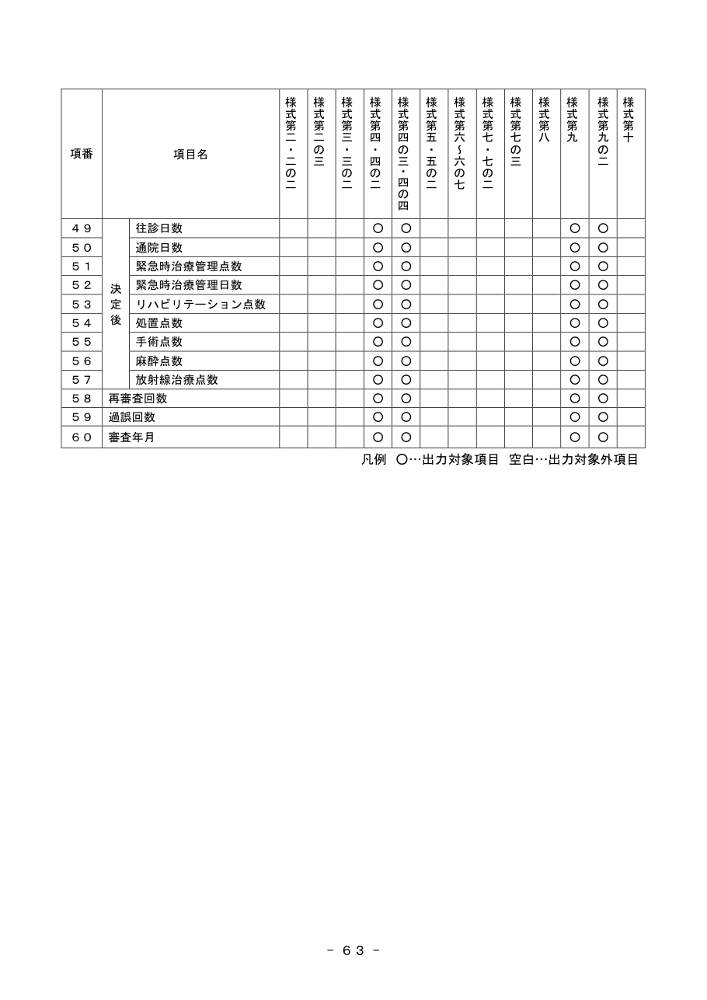
| 項番 | 項目名 | 属性 | 桁数 | 内容 | 必須 | 備考 | その他の列 |
|---|---|---|---|---|---|---|---|
| ４９ | 決定後 > 往診日数 | 様式第二・二の二:－ 様式第二の三:－ 様式第三・三の二:－ 様式第四・四の二:○ 様式第四の三・四の四:○ 様式第五・五の二:－ 様式第六～六の七:－ 様式第七・七の二:－ 様式第七の三:－ 様式第八:－ 様式第九:○ 様式第九の二:○ 様式第十:－ | |||||
| ５０ | 決定後 > 通院日数 | 様式第二・二の二:－ 様式第二の三:－ 様式第三・三の二:－ 様式第四・四の二:○ 様式第四の三・四の四:○ 様式第五・五の二:－ 様式第六～六の七:－ 様式第七・七の二:－ 様式第七の三:－ 様式第八:－ 様式第九:○ 様式第九の二:○ 様式第十:－ | |||||
| ５１ | 決定後 > 緊急時治療管理点数 | 様式第二・二の二:－ 様式第二の三:－ 様式第三・三の二:－ 様式第四・四の二:○ 様式第四の三・四の四:○ 様式第五・五の二:－ 様式第六～六の七:－ 様式第七・七の二:－ 様式第七の三:－ 様式第八:－ 様式第九:○ 様式第九の二:○ 様式第十:－ | |||||
| ５２ | 決定後 > 緊急時治療管理日数 | 様式第二・二の二:－ 様式第二の三:－ 様式第三・三の二:－ 様式第四・四の二:○ 様式第四の三・四の四:○ 様式第五・五の二:－ 様式第六～六の七:－ 様式第七・七の二:－ 様式第七の三:－ 様式第八:－ 様式第九:○ 様式第九の二:○ 様式第十:－ | |||||
| ５３ | 決定後 > リハビリテーション点数 | 様式第二・二の二:－ 様式第二の三:－ 様式第三・三の二:－ 様式第四・四の二:○ 様式第四の三・四の四:○ 様式第五・五の二:－ 様式第六～六の七:－ 様式第七・七の二:－ 様式第七の三:－ 様式第八:－ 様式第九:○ 様式第九の二:○ 様式第十:－ | |||||
| ５４ | 決定後 > 処置点数 | 様式第二・二の二:－ 様式第二の三:－ 様式第三・三の二:－ 様式第四・四の二:○ 様式第四の三・四の四:○ 様式第五・五の二:－ 様式第六～六の七:－ 様式第七・七の二:－ 様式第七の三:－ 様式第八:－ 様式第九:○ 様式第九の二:○ 様式第十:－ | |||||
| ５５ | 決定後 > 手術点数 | 様式第二・二の二:－ 様式第二の三:－ 様式第三・三の二:－ 様式第四・四の二:○ 様式第四の三・四の四:○ 様式第五・五の二:－ 様式第六～六の七:－ 様式第七・七の二:－ 様式第七の三:－ 様式第八:－ 様式第九:○ 様式第九の二:○ 様式第十:－ | |||||
| ５６ | 決定後 > 麻酔点数 | 様式第二・二の二:－ 様式第二の三:－ 様式第三・三の二:－ 様式第四・四の二:○ 様式第四の三・四の四:○ 様式第五・五の二:－ 様式第六～六の七:－ 様式第七・七の二:－ 様式第七の三:－ 様式第八:－ 様式第九:○ 様式第九の二:○ 様式第十:－ | |||||
| ５７ | 決定後 > 放射線治療点数 | 様式第二・二の二:－ 様式第二の三:－ 様式第三・三の二:－ 様式第四・四の二:○ 様式第四の三・四の四:○ 様式第五・五の二:－ 様式第六～六の七:－ 様式第七・七の二:－ 様式第七の三:－ 様式第八:－ 様式第九:○ 様式第九の二:○ 様式第十:－ | |||||
| ５８ | 再審査回数 | 様式第二・二の二:－ 様式第二の三:－ 様式第三・三の二:－ 様式第四・四の二:○ 様式第四の三・四の四:○ 様式第五・五の二:－ 様式第六～六の七:－ 様式第七・七の二:－ 様式第七の三:－ 様式第八:－ 様式第九:○ 様式第九の二:○ 様式第十:－ | |||||
| ５９ | 過誤回数 | 様式第二・二の二:－ 様式第二の三:－ 様式第三・三の二:－ 様式第四・四の二:○ 様式第四の三・四の四:○ 様式第五・五の二:－ 様式第六～六の七:－ 様式第七・七の二:－ 様式第七の三:－ 様式第八:－ 様式第九:○ 様式第九の二:○ 様式第十:－ | |||||
| ６０ | 審査年月 | 様式第二・二の二:－ 様式第二の三:－ 様式第三・三の二:－ 様式第四・四の二:○ 様式第四の三・四の四:○ 様式第五・五の二:－ 様式第六～六の七:－ 様式第七・七の二:－ 様式第七の三:－ 様式第八:－ 様式第九:○ 様式第九の二:○ 様式第十:－ |
| 項番 | 項目名 | 属性 | 桁数 | 内容 | 必須 | 備考 | その他の列 |
|---|---|---|---|---|---|---|---|
| ４９ | 決定後 > 往診日数 | 様式第二・二の二:－ 様式第二の三:－ 様式第三・三の二:－ 様式第四・四の二:○ 様式第四の三・四の四:○ 様式第五・五の二:－ 様式第六～六の七:－ 様式第七・七の二:－ 様式第七の三:－ 様式第八:－ 様式第九:○ 様式第九の二:○ 様式第十:－ | |||||
| ５０ | 決定後 > 通院日数 | 様式第二・二の二:－ 様式第二の三:－ 様式第三・三の二:－ 様式第四・四の二:○ 様式第四の三・四の四:○ 様式第五・五の二:－ 様式第六～六の七:－ 様式第七・七の二:－ 様式第七の三:－ 様式第八:－ 様式第九:○ 様式第九の二:○ 様式第十:－ | |||||
| ５１ | 決定後 > 緊急時治療管理点数 | 様式第二・二の二:－ 様式第二の三:－ 様式第三・三の二:－ 様式第四・四の二:○ 様式第四の三・四の四:○ 様式第五・五の二:－ 様式第六～六の七:－ 様式第七・七の二:－ 様式第七の三:－ 様式第八:－ 様式第九:○ 様式第九の二:○ 様式第十:－ | |||||
| ５２ | 決定後 > 緊急時治療管理日数 | 様式第二・二の二:－ 様式第二の三:－ 様式第三・三の二:－ 様式第四・四の二:○ 様式第四の三・四の四:○ 様式第五・五の二:－ 様式第六～六の七:－ 様式第七・七の二:－ 様式第七の三:－ 様式第八:－ 様式第九:○ 様式第九の二:○ 様式第十:－ | |||||
| ５３ | 決定後 > リハビリテーション点数 | 様式第二・二の二:－ 様式第二の三:－ 様式第三・三の二:－ 様式第四・四の二:○ 様式第四の三・四の四:○ 様式第五・五の二:－ 様式第六～六の七:－ 様式第七・七の二:－ 様式第七の三:－ 様式第八:－ 様式第九:○ 様式第九の二:○ 様式第十:－ | |||||
| ５４ | 決定後 > 処置点数 | 様式第二・二の二:－ 様式第二の三:－ 様式第三・三の二:－ 様式第四・四の二:○ 様式第四の三・四の四:○ 様式第五・五の二:－ 様式第六～六の七:－ 様式第七・七の二:－ 様式第七の三:－ 様式第八:－ 様式第九:○ 様式第九の二:○ 様式第十:－ | |||||
| ５５ | 決定後 > 手術点数 | 様式第二・二の二:－ 様式第二の三:－ 様式第三・三の二:－ 様式第四・四の二:○ 様式第四の三・四の四:○ 様式第五・五の二:－ 様式第六～六の七:－ 様式第七・七の二:－ 様式第七の三:－ 様式第八:－ 様式第九:○ 様式第九の二:○ 様式第十:－ | |||||
| ５６ | 決定後 > 麻酔点数 | 様式第二・二の二:－ 様式第二の三:－ 様式第三・三の二:－ 様式第四・四の二:○ 様式第四の三・四の四:○ 様式第五・五の二:－ 様式第六～六の七:－ 様式第七・七の二:－ 様式第七の三:－ 様式第八:－ 様式第九:○ 様式第九の二:○ 様式第十:－ | |||||
| ５７ | 決定後 > 放射線治療点数 | 様式第二・二の二:－ 様式第二の三:－ 様式第三・三の二:－ 様式第四・四の二:○ 様式第四の三・四の四:○ 様式第五・五の二:－ 様式第六～六の七:－ 様式第七・七の二:－ 様式第七の三:－ 様式第八:－ 様式第九:○ 様式第九の二:○ 様式第十:－ | |||||
| ５８ | 再審査回数 | 様式第二・二の二:－ 様式第二の三:－ 様式第三・三の二:－ 様式第四・四の二:○ 様式第四の三・四の四:○ 様式第五・五の二:－ 様式第六～六の七:－ 様式第七・七の二:－ 様式第七の三:－ 様式第八:－ 様式第九:○ 様式第九の二:○ 様式第十:－ | |||||
| ５９ | 過誤回数 | 様式第二・二の二:－ 様式第二の三:－ 様式第三・三の二:－ 様式第四・四の二:○ 様式第四の三・四の四:○ 様式第五・五の二:－ 様式第六～六の七:－ 様式第七・七の二:－ 様式第七の三:－ 様式第八:－ 様式第九:○ 様式第九の二:○ 様式第十:－ | |||||
| ６０ | 審査年月 | 様式第二・二の二:－ 様式第二の三:－ 様式第三・三の二:－ 様式第四・四の二:○ 様式第四の三・四の四:○ 様式第五・五の二:－ 様式第六～六の七:－ 様式第七・七の二:－ 様式第七の三:－ 様式第八:－ 様式第九:○ 様式第九の二:○ 様式第十:－ |
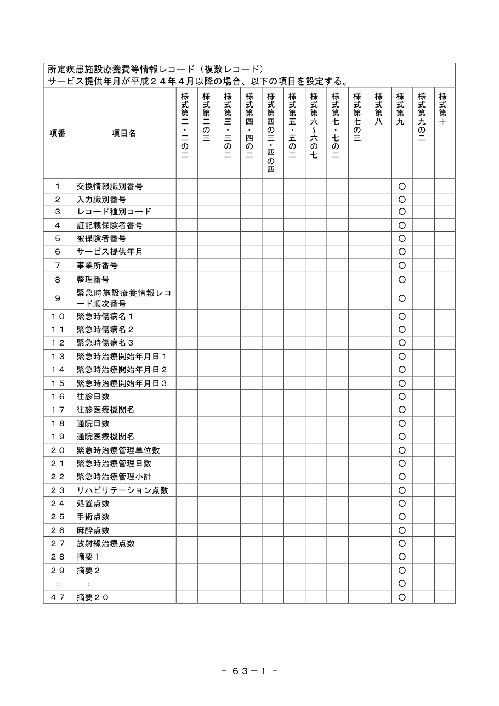
| 項番 | 項目名 | 属性 | 桁数 | 内容 | 必須 | 備考 | その他の列 |
|---|---|---|---|---|---|---|---|
| １ | 交換情報識別番号 | 様式第二・二の二:－ 様式第二の三:－ 様式第三・三の二:－ 様式第四・四の二:－ 様式第四の三・四の四:－ 様式第五・五の二:－ 様式第六～六の七:－ 様式第七・七の二:－ 様式第七の三:－ 様式第八:－ 様式第九:○ 様式第九の二:－ 様式第十:－ | |||||
| ２ | 入力識別番号 | 様式第二・二の二:－ 様式第二の三:－ 様式第三・三の二:－ 様式第四・四の二:－ 様式第四の三・四の四:－ 様式第五・五の二:－ 様式第六～六の七:－ 様式第七・七の二:－ 様式第七の三:－ 様式第八:－ 様式第九:○ 様式第九の二:－ 様式第十:－ | |||||
| ３ | レコード種別コード | 様式第二・二の二:－ 様式第二の三:－ 様式第三・三の二:－ 様式第四・四の二:－ 様式第四の三・四の四:－ 様式第五・五の二:－ 様式第六～六の七:－ 様式第七・七の二:－ 様式第七の三:－ 様式第八:－ 様式第九:○ 様式第九の二:－ 様式第十:－ | |||||
| ４ | 証記載保険者番号 | 様式第二・二の二:－ 様式第二の三:－ 様式第三・三の二:－ 様式第四・四の二:－ 様式第四の三・四の四:－ 様式第五・五の二:－ 様式第六～六の七:－ 様式第七・七の二:－ 様式第七の三:－ 様式第八:－ 様式第九:○ 様式第九の二:－ 様式第十:－ | |||||
| ５ | 被保険者番号 | 様式第二・二の二:－ 様式第二の三:－ 様式第三・三の二:－ 様式第四・四の二:－ 様式第四の三・四の四:－ 様式第五・五の二:－ 様式第六～六の七:－ 様式第七・七の二:－ 様式第七の三:－ 様式第八:－ 様式第九:○ 様式第九の二:－ 様式第十:－ | |||||
| ６ | サービス提供年月 | 様式第二・二の二:－ 様式第二の三:－ 様式第三・三の二:－ 様式第四・四の二:－ 様式第四の三・四の四:－ 様式第五・五の二:－ 様式第六～六の七:－ 様式第七・七の二:－ 様式第七の三:－ 様式第八:－ 様式第九:○ 様式第九の二:－ 様式第十:－ | |||||
| ７ | 事業所番号 | 様式第二・二の二:－ 様式第二の三:－ 様式第三・三の二:－ 様式第四・四の二:－ 様式第四の三・四の四:－ 様式第五・五の二:－ 様式第六～六の七:－ 様式第七・七の二:－ 様式第七の三:－ 様式第八:－ 様式第九:○ 様式第九の二:－ 様式第十:－ | |||||
| ８ | 整理番号 | 様式第二・二の二:－ 様式第二の三:－ 様式第三・三の二:－ 様式第四・四の二:－ 様式第四の三・四の四:－ 様式第五・五の二:－ 様式第六～六の七:－ 様式第七・七の二:－ 様式第七の三:－ 様式第八:－ 様式第九:○ 様式第九の二:－ 様式第十:－ | |||||
| ９ | 緊急時施設療養情報レコード順次番号 | 様式第二・二の二:－ 様式第二の三:－ 様式第三・三の二:－ 様式第四・四の二:－ 様式第四の三・四の四:－ 様式第五・五の二:－ 様式第六～六の七:－ 様式第七・七の二:－ 様式第七の三:－ 様式第八:－ 様式第九:○ 様式第九の二:－ 様式第十:－ | |||||
| １０ | 緊急時傷病名１ | 様式第二・二の二:－ 様式第二の三:－ 様式第三・三の二:－ 様式第四・四の二:－ 様式第四の三・四の四:－ 様式第五・五の二:－ 様式第六～六の七:－ 様式第七・七の二:－ 様式第七の三:－ 様式第八:－ 様式第九:○ 様式第九の二:－ 様式第十:－ | |||||
| １１ | 緊急時傷病名２ | 様式第二・二の二:－ 様式第二の三:－ 様式第三・三の二:－ 様式第四・四の二:－ 様式第四の三・四の四:－ 様式第五・五の二:－ 様式第六～六の七:－ 様式第七・七の二:－ 様式第七の三:－ 様式第八:－ 様式第九:○ 様式第九の二:－ 様式第十:－ | |||||
| １２ | 緊急時傷病名３ | 様式第二・二の二:－ 様式第二の三:－ 様式第三・三の二:－ 様式第四・四の二:－ 様式第四の三・四の四:－ 様式第五・五の二:－ 様式第六～六の七:－ 様式第七・七の二:－ 様式第七の三:－ 様式第八:－ 様式第九:○ 様式第九の二:－ 様式第十:－ | |||||
| １３ | 緊急時治療開始年月日１ | 様式第二・二の二:－ 様式第二の三:－ 様式第三・三の二:－ 様式第四・四の二:－ 様式第四の三・四の四:－ 様式第五・五の二:－ 様式第六～六の七:－ 様式第七・七の二:－ 様式第七の三:－ 様式第八:－ 様式第九:○ 様式第九の二:－ 様式第十:－ | |||||
| １４ | 緊急時治療開始年月日２ | 様式第二・二の二:－ 様式第二の三:－ 様式第三・三の二:－ 様式第四・四の二:－ 様式第四の三・四の四:－ 様式第五・五の二:－ 様式第六～六の七:－ 様式第七・七の二:－ 様式第七の三:－ 様式第八:－ 様式第九:○ 様式第九の二:－ 様式第十:－ | |||||
| １５ | 緊急時治療開始年月日３ | 様式第二・二の二:－ 様式第二の三:－ 様式第三・三の二:－ 様式第四・四の二:－ 様式第四の三・四の四:－ 様式第五・五の二:－ 様式第六～六の七:－ 様式第七・七の二:－ 様式第七の三:－ 様式第八:－ 様式第九:○ 様式第九の二:－ 様式第十:－ | |||||
| １６ | 往診日数 | 様式第二・二の二:－ 様式第二の三:－ 様式第三・三の二:－ 様式第四・四の二:－ 様式第四の三・四の四:－ 様式第五・五の二:－ 様式第六～六の七:－ 様式第七・七の二:－ 様式第七の三:－ 様式第八:－ 様式第九:○ 様式第九の二:－ 様式第十:－ | |||||
| １７ | 往診医療機関名 | 様式第二・二の二:－ 様式第二の三:－ 様式第三・三の二:－ 様式第四・四の二:－ 様式第四の三・四の四:－ 様式第五・五の二:－ 様式第六～六の七:－ 様式第七・七の二:－ 様式第七の三:－ 様式第八:－ 様式第九:○ 様式第九の二:－ 様式第十:－ | |||||
| １８ | 通院日数 | 様式第二・二の二:－ 様式第二の三:－ 様式第三・三の二:－ 様式第四・四の二:－ 様式第四の三・四の四:－ 様式第五・五の二:－ 様式第六～六の七:－ 様式第七・七の二:－ 様式第七の三:－ 様式第八:－ 様式第九:○ 様式第九の二:－ 様式第十:－ | |||||
| １９ | 通院医療機関名 | 様式第二・二の二:－ 様式第二の三:－ 様式第三・三の二:－ 様式第四・四の二:－ 様式第四の三・四の四:－ 様式第五・五の二:－ 様式第六～六の七:－ 様式第七・七の二:－ 様式第七の三:－ 様式第八:－ 様式第九:○ 様式第九の二:－ 様式第十:－ | |||||
| ２０ | 緊急時治療管理単位数 | 様式第二・二の二:－ 様式第二の三:－ 様式第三・三の二:－ 様式第四・四の二:－ 様式第四の三・四の四:－ 様式第五・五の二:－ 様式第六～六の七:－ 様式第七・七の二:－ 様式第七の三:－ 様式第八:－ 様式第九:○ 様式第九の二:－ 様式第十:－ | |||||
| ２１ | 緊急時治療管理日数 | 様式第二・二の二:－ 様式第二の三:－ 様式第三・三の二:－ 様式第四・四の二:－ 様式第四の三・四の四:－ 様式第五・五の二:－ 様式第六～六の七:－ 様式第七・七の二:－ 様式第七の三:－ 様式第八:－ 様式第九:○ 様式第九の二:－ 様式第十:－ | |||||
| ２２ | 緊急時治療管理小計 | 様式第二・二の二:－ 様式第二の三:－ 様式第三・三の二:－ 様式第四・四の二:－ 様式第四の三・四の四:－ 様式第五・五の二:－ 様式第六～六の七:－ 様式第七・七の二:－ 様式第七の三:－ 様式第八:－ 様式第九:○ 様式第九の二:－ 様式第十:－ | |||||
| ２３ | リハビリテーション点数 | 様式第二・二の二:－ 様式第二の三:－ 様式第三・三の二:－ 様式第四・四の二:－ 様式第四の三・四の四:－ 様式第五・五の二:－ 様式第六～六の七:－ 様式第七・七の二:－ 様式第七の三:－ 様式第八:－ 様式第九:○ 様式第九の二:－ 様式第十:－ | |||||
| ２４ | 処置点数 | 様式第二・二の二:－ 様式第二の三:－ 様式第三・三の二:－ 様式第四・四の二:－ 様式第四の三・四の四:－ 様式第五・五の二:－ 様式第六～六の七:－ 様式第七・七の二:－ 様式第七の三:－ 様式第八:－ 様式第九:○ 様式第九の二:－ 様式第十:－ | |||||
| ２５ | 手術点数 | 様式第二・二の二:－ 様式第二の三:－ 様式第三・三の二:－ 様式第四・四の二:－ 様式第四の三・四の四:－ 様式第五・五の二:－ 様式第六～六の七:－ 様式第七・七の二:－ 様式第七の三:－ 様式第八:－ 様式第九:○ 様式第九の二:－ 様式第十:－ | |||||
| ２６ | 麻酔点数 | 様式第二・二の二:－ 様式第二の三:－ 様式第三・三の二:－ 様式第四・四の二:－ 様式第四の三・四の四:－ 様式第五・五の二:－ 様式第六～六の七:－ 様式第七・七の二:－ 様式第七の三:－ 様式第八:－ 様式第九:○ 様式第九の二:－ 様式第十:－ | |||||
| ２７ | 放射線治療点数 | 様式第二・二の二:－ 様式第二の三:－ 様式第三・三の二:－ 様式第四・四の二:－ 様式第四の三・四の四:－ 様式第五・五の二:－ 様式第六～六の七:－ 様式第七・七の二:－ 様式第七の三:－ 様式第八:－ 様式第九:○ 様式第九の二:－ 様式第十:－ | |||||
| ２８ | 摘要１ | 様式第二・二の二:－ 様式第二の三:－ 様式第三・三の二:－ 様式第四・四の二:－ 様式第四の三・四の四:－ 様式第五・五の二:－ 様式第六～六の七:－ 様式第七・七の二:－ 様式第七の三:－ 様式第八:－ 様式第九:○ 様式第九の二:－ 様式第十:－ | |||||
| ２９ | 摘要２ | 様式第二・二の二:－ 様式第二の三:－ 様式第三・三の二:－ 様式第四・四の二:－ 様式第四の三・四の四:－ 様式第五・五の二:－ 様式第六～六の七:－ 様式第七・七の二:－ 様式第七の三:－ 様式第八:－ 様式第九:○ 様式第九の二:－ 様式第十:－ | |||||
| : | : | 様式第二・二の二:－ 様式第二の三:－ 様式第三・三の二:－ 様式第四・四の二:－ 様式第四の三・四の四:－ 様式第五・五の二:－ 様式第六～六の七:－ 様式第七・七の二:－ 様式第七の三:－ 様式第八:－ 様式第九:○ 様式第九の二:－ 様式第十:－ | |||||
| ４７ | 摘要２０ | 様式第二・二の二:－ 様式第二の三:－ 様式第三・三の二:－ 様式第四・四の二:－ 様式第四の三・四の四:－ 様式第五・五の二:－ 様式第六～六の七:－ 様式第七・七の二:－ 様式第七の三:－ 様式第八:－ 様式第九:○ 様式第九の二:－ 様式第十:－ |
| 項番 | 項目名 | 属性 | 桁数 | 内容 | 必須 | 備考 | その他の列 |
|---|---|---|---|---|---|---|---|
| 1 | 交換情報識別番号 | 様式第二・二の二:－ 様式第二の三:－ 様式第三・三の二:－ 様式第四・四の二:－ 様式第四の三・四の四:－ 様式第五・五の二:－ 様式第六～六の七:－ 様式第七・七の二:－ 様式第七の三:－ 様式第八:－ 様式第九:○ 様式第九の二:－ 様式第十:－ | |||||
| 2 | 入力識別番号 | 様式第二・二の二:－ 様式第二の三:－ 様式第三・三の二:－ 様式第四・四の二:－ 様式第四の三・四の四:－ 様式第五・五の二:－ 様式第六～六の七:－ 様式第七・七の二:－ 様式第七の三:－ 様式第八:－ 様式第九:○ 様式第九の二:－ 様式第十:－ | |||||
| 3 | レコード種別コード | 様式第二・二の二:－ 様式第二の三:－ 様式第三・三の二:－ 様式第四・四の二:－ 様式第四の三・四の四:－ 様式第五・五の二:－ 様式第六～六の七:－ 様式第七・七の二:－ 様式第七の三:－ 様式第八:－ 様式第九:○ 様式第九の二:－ 様式第十:－ | |||||
| 4 | 証記載保険者番号 | 様式第二・二の二:－ 様式第二の三:－ 様式第三・三の二:－ 様式第四・四の二:－ 様式第四の三・四の四:－ 様式第五・五の二:－ 様式第六～六の七:－ 様式第七・七の二:－ 様式第七の三:－ 様式第八:－ 様式第九:○ 様式第九の二:－ 様式第十:－ | |||||
| 5 | 被保険者番号 | 様式第二・二の二:－ 様式第二の三:－ 様式第三・三の二:－ 様式第四・四の二:－ 様式第四の三・四の四:－ 様式第五・五の二:－ 様式第六～六の七:－ 様式第七・七の二:－ 様式第七の三:－ 様式第八:－ 様式第九:○ 様式第九の二:－ 様式第十:－ | |||||
| 6 | サービス提供年月 | 様式第二・二の二:－ 様式第二の三:－ 様式第三・三の二:－ 様式第四・四の二:－ 様式第四の三・四の四:－ 様式第五・五の二:－ 様式第六～六の七:－ 様式第七・七の二:－ 様式第七の三:－ 様式第八:－ 様式第九:○ 様式第九の二:－ 様式第十:－ | |||||
| 7 | 事業所番号 | 様式第二・二の二:－ 様式第二の三:－ 様式第三・三の二:－ 様式第四・四の二:－ 様式第四の三・四の四:－ 様式第五・五の二:－ 様式第六～六の七:－ 様式第七・七の二:－ 様式第七の三:－ 様式第八:－ 様式第九:○ 様式第九の二:－ 様式第十:－ | |||||
| 8 | 整理番号 | 様式第二・二の二:－ 様式第二の三:－ 様式第三・三の二:－ 様式第四・四の二:－ 様式第四の三・四の四:－ 様式第五・五の二:－ 様式第六～六の七:－ 様式第七・七の二:－ 様式第七の三:－ 様式第八:－ 様式第九:○ 様式第九の二:－ 様式第十:－ | |||||
| 9 | 緊急時施設療養情報レコード順次番号 | 様式第二・二の二:－ 様式第二の三:－ 様式第三・三の二:－ 様式第四・四の二:－ 様式第四の三・四の四:－ 様式第五・五の二:－ 様式第六～六の七:－ 様式第七・七の二:－ 様式第七の三:－ 様式第八:－ 様式第九:○ 様式第九の二:－ 様式第十:－ | |||||
| 10 | 緊急時傷病名１ | 様式第二・二の二:－ 様式第二の三:－ 様式第三・三の二:－ 様式第四・四の二:－ 様式第四の三・四の四:－ 様式第五・五の二:－ 様式第六～六の七:－ 様式第七・七の二:－ 様式第七の三:－ 様式第八:－ 様式第九:○ 様式第九の二:－ 様式第十:－ | |||||
| 11 | 緊急時傷病名２ | 様式第二・二の二:－ 様式第二の三:－ 様式第三・三の二:－ 様式第四・四の二:－ 様式第四の三・四の四:－ 様式第五・五の二:－ 様式第六～六の七:－ 様式第七・七の二:－ 様式第七の三:－ 様式第八:－ 様式第九:○ 様式第九の二:－ 様式第十:－ | |||||
| 12 | 緊急時傷病名３ | 様式第二・二の二:－ 様式第二の三:－ 様式第三・三の二:－ 様式第四・四の二:－ 様式第四の三・四の四:－ 様式第五・五の二:－ 様式第六～六の七:－ 様式第七・七の二:－ 様式第七の三:－ 様式第八:－ 様式第九:○ 様式第九の二:－ 様式第十:－ | |||||
| 13 | 緊急時治療開始年月日１ | 様式第二・二の二:－ 様式第二の三:－ 様式第三・三の二:－ 様式第四・四の二:－ 様式第四の三・四の四:－ 様式第五・五の二:－ 様式第六～六の七:－ 様式第七・七の二:－ 様式第七の三:－ 様式第八:－ 様式第九:○ 様式第九の二:－ 様式第十:－ | |||||
| 14 | 緊急時治療開始年月日２ | 様式第二・二の二:－ 様式第二の三:－ 様式第三・三の二:－ 様式第四・四の二:－ 様式第四の三・四の四:－ 様式第五・五の二:－ 様式第六～六の七:－ 様式第七・七の二:－ 様式第七の三:－ 様式第八:－ 様式第九:○ 様式第九の二:－ 様式第十:－ | |||||
| 15 | 緊急時治療開始年月日３ | 様式第二・二の二:－ 様式第二の三:－ 様式第三・三の二:－ 様式第四・四の二:－ 様式第四の三・四の四:－ 様式第五・五の二:－ 様式第六～六の七:－ 様式第七・七の二:－ 様式第七の三:－ 様式第八:－ 様式第九:○ 様式第九の二:－ 様式第十:－ | |||||
| 16 | 往診日数 | 様式第二・二の二:－ 様式第二の三:－ 様式第三・三の二:－ 様式第四・四の二:－ 様式第四の三・四の四:－ 様式第五・五の二:－ 様式第六～六の七:－ 様式第七・七の二:－ 様式第七の三:－ 様式第八:－ 様式第九:○ 様式第九の二:－ 様式第十:－ | |||||
| 17 | 往診医療機関名 | 様式第二・二の二:－ 様式第二の三:－ 様式第三・三の二:－ 様式第四・四の二:－ 様式第四の三・四の四:－ 様式第五・五の二:－ 様式第六～六の七:－ 様式第七・七の二:－ 様式第七の三:－ 様式第八:－ 様式第九:○ 様式第九の二:－ 様式第十:－ | |||||
| 18 | 通院日数 | 様式第二・二の二:－ 様式第二の三:－ 様式第三・三の二:－ 様式第四・四の二:－ 様式第四の三・四の四:－ 様式第五・五の二:－ 様式第六～六の七:－ 様式第七・七の二:－ 様式第七の三:－ 様式第八:－ 様式第九:○ 様式第九の二:－ 様式第十:－ | |||||
| 19 | 通院医療機関名 | 様式第二・二の二:－ 様式第二の三:－ 様式第三・三の二:－ 様式第四・四の二:－ 様式第四の三・四の四:－ 様式第五・五の二:－ 様式第六～六の七:－ 様式第七・七の二:－ 様式第七の三:－ 様式第八:－ 様式第九:○ 様式第九の二:－ 様式第十:－ | |||||
| 20 | 緊急時治療管理単位数 | 様式第二・二の二:－ 様式第二の三:－ 様式第三・三の二:－ 様式第四・四の二:－ 様式第四の三・四の四:－ 様式第五・五の二:－ 様式第六～六の七:－ 様式第七・七の二:－ 様式第七の三:－ 様式第八:－ 様式第九:○ 様式第九の二:－ 様式第十:－ | |||||
| 21 | 緊急時治療管理日数 | 様式第二・二の二:－ 様式第二の三:－ 様式第三・三の二:－ 様式第四・四の二:－ 様式第四の三・四の四:－ 様式第五・五の二:－ 様式第六～六の七:－ 様式第七・七の二:－ 様式第七の三:－ 様式第八:－ 様式第九:○ 様式第九の二:－ 様式第十:－ | |||||
| 22 | 緊急時治療管理小計 | 様式第二・二の二:－ 様式第二の三:－ 様式第三・三の二:－ 様式第四・四の二:－ 様式第四の三・四の四:－ 様式第五・五の二:－ 様式第六～六の七:－ 様式第七・七の二:－ 様式第七の三:－ 様式第八:－ 様式第九:○ 様式第九の二:－ 様式第十:－ | |||||
| 23 | リハビリテーション点数 | 様式第二・二の二:－ 様式第二の三:－ 様式第三・三の二:－ 様式第四・四の二:－ 様式第四の三・四の四:－ 様式第五・五の二:－ 様式第六～六の七:－ 様式第七・七の二:－ 様式第七の三:－ 様式第八:－ 様式第九:○ 様式第九の二:－ 様式第十:－ | |||||
| 24 | 処置点数 | 様式第二・二の二:－ 様式第二の三:－ 様式第三・三の二:－ 様式第四・四の二:－ 様式第四の三・四の四:－ 様式第五・五の二:－ 様式第六～六の七:－ 様式第七・七の二:－ 様式第七の三:－ 様式第八:－ 様式第九:○ 様式第九の二:－ 様式第十:－ | |||||
| 25 | 手術点数 | 様式第二・二の二:－ 様式第二の三:－ 様式第三・三の二:－ 様式第四・四の二:－ 様式第四の三・四の四:－ 様式第五・五の二:－ 様式第六～六の七:－ 様式第七・七の二:－ 様式第七の三:－ 様式第八:－ 様式第九:○ 様式第九の二:－ 様式第十:－ | |||||
| 26 | 麻酔点数 | 様式第二・二の二:－ 様式第二の三:－ 様式第三・三の二:－ 様式第四・四の二:－ 様式第四の三・四の四:－ 様式第五・五の二:－ 様式第六～六の七:－ 様式第七・七の二:－ 様式第七の三:－ 様式第八:－ 様式第九:○ 様式第九の二:－ 様式第十:－ | |||||
| 27 | 放射線治療点数 | 様式第二・二の二:－ 様式第二の三:－ 様式第三・三の二:－ 様式第四・四の二:－ 様式第四の三・四の四:－ 様式第五・五の二:－ 様式第六～六の七:－ 様式第七・七の二:－ 様式第七の三:－ 様式第八:－ 様式第九:○ 様式第九の二:－ 様式第十:－ | |||||
| 28 | 摘要１ | 様式第二・二の二:－ 様式第二の三:－ 様式第三・三の二:－ 様式第四・四の二:－ 様式第四の三・四の四:－ 様式第五・五の二:－ 様式第六～六の七:－ 様式第七・七の二:－ 様式第七の三:－ 様式第八:－ 様式第九:○ 様式第九の二:－ 様式第十:－ | |||||
| 29 | 摘要２ | 様式第二・二の二:－ 様式第二の三:－ 様式第三・三の二:－ 様式第四・四の二:－ 様式第四の三・四の四:－ 様式第五・五の二:－ 様式第六～六の七:－ 様式第七・七の二:－ 様式第七の三:－ 様式第八:－ 様式第九:○ 様式第九の二:－ 様式第十:－ | |||||
| : | : | 様式第二・二の二:－ 様式第二の三:－ 様式第三・三の二:－ 様式第四・四の二:－ 様式第四の三・四の四:－ 様式第五・五の二:－ 様式第六～六の七:－ 様式第七・七の二:－ 様式第七の三:－ 様式第八:－ 様式第九:○ 様式第九の二:－ 様式第十:－ | |||||
| 47 | 摘要２０ | 様式第二・二の二:－ 様式第二の三:－ 様式第三・三の二:－ 様式第四・四の二:－ 様式第四の三・四の四:－ 様式第五・五の二:－ 様式第六～六の七:－ 様式第七・七の二:－ 様式第七の三:－ 様式第八:－ 様式第九:○ 様式第九の二:－ 様式第十:－ |
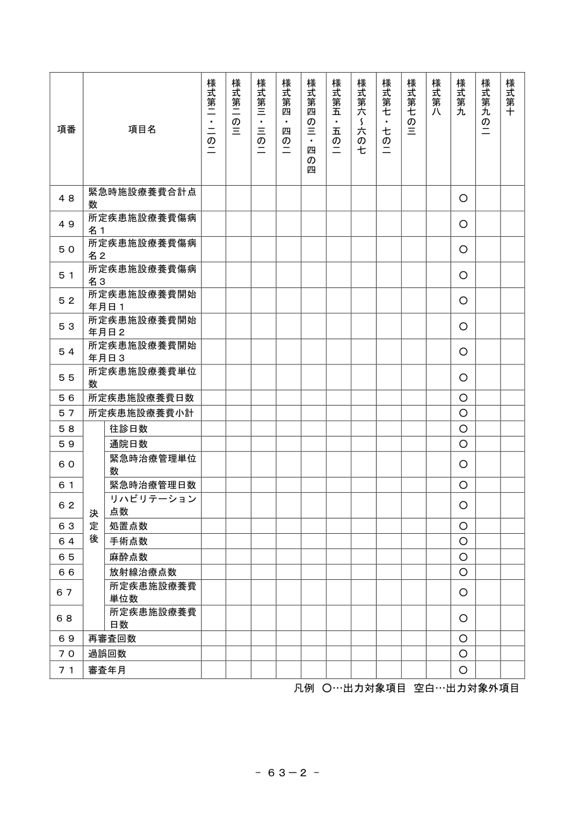
| 項番 | 項目名 | 属性 | 桁数 | 内容 | 必須 | 備考 | その他の列 |
|---|---|---|---|---|---|---|---|
| ４８ | 緊急時施設療養費合計点数 | 様式第二・二の二: － 様式第二の三: － 様式第三・三の二: － 様式第四・四の二: － 様式第四の三・四の四: － 様式第五・五の二: － 様式第六～六の七: － 様式第七・七の二: － 様式第七の三: － 様式第八: － 様式第九: ○ 様式第九の二: － 様式第十: － | |||||
| ４９ | 所定疾患施設療養費傷病名１ | 様式第二・二の二: － 様式第二の三: － 様式第三・三の二: － 様式第四・四の二: － 様式第四の三・四の四: － 様式第五・五の二: － 様式第六～六の七: － 様式第七・七の二: － 様式第七の三: － 様式第八: － 様式第九: ○ 様式第九の二: － 様式第十: － | |||||
| ５０ | 所定疾患施設療養費傷病名２ | 様式第二・二の二: － 様式第二の三: － 様式第三・三の二: － 様式第四・四の二: － 様式第四の三・四の四: － 様式第五・五の二: － 様式第六～六の七: － 様式第七・七の二: － 様式第七の三: － 様式第八: － 様式第九: ○ 様式第九の二: － 様式第十: － | |||||
| ５１ | 所定疾患施設療養費傷病名３ | 様式第二・二の二: － 様式第二の三: － 様式第三・三の二: － 様式第四・四の二: － 様式第四の三・四の四: － 様式第五・五の二: － 様式第六～六の七: － 様式第七・七の二: － 様式第七の三: － 様式第八: － 様式第九: ○ 様式第九の二: － 様式第十: － | |||||
| ５２ | 所定疾患施設療養費開始年月日１ | 様式第二・二の二: － 様式第二の三: － 様式第三・三の二: － 様式第四・四の二: － 様式第四の三・四の四: － 様式第五・五の二: － 様式第六～六の七: － 様式第七・七の二: － 様式第七の三: － 様式第八: － 様式第九: ○ 様式第九の二: － 様式第十: － | |||||
| ５３ | 所定疾患施設療養費開始年月日２ | 様式第二・二の二: － 様式第二の三: － 様式第三・三の二: － 様式第四・四の二: － 様式第四の三・四の四: － 様式第五・五の二: － 様式第六～六の七: － 様式第七・七の二: － 様式第七の三: － 様式第八: － 様式第九: ○ 様式第九の二: － 様式第十: － | |||||
| ５４ | 所定疾患施設療養費開始年月日３ | 様式第二・二の二: － 様式第二の三: － 様式第三・三の二: － 様式第四・四の二: － 様式第四の三・四の四: － 様式第五・五の二: － 様式第六～六の七: － 様式第七・七の二: － 様式第七の三: － 様式第八: － 様式第九: ○ 様式第九の二: － 様式第十: － | |||||
| ５５ | 所定疾患施設療養費単位数 | 様式第二・二の二: － 様式第二の三: － 様式第三・三の二: － 様式第四・四の二: － 様式第四の三・四の四: － 様式第五・五の二: － 様式第六～六の七: － 様式第七・七の二: － 様式第七の三: － 様式第八: － 様式第九: ○ 様式第九の二: － 様式第十: － | |||||
| ５６ | 所定疾患施設療養費日数 | 様式第二・二の二: － 様式第二の三: － 様式第三・三の二: － 様式第四・四の二: － 様式第四の三・四の四: － 様式第五・五の二: － 様式第六～六の七: － 様式第七・七の二: － 様式第七の三: － 様式第八: － 様式第九: ○ 様式第九の二: － 様式第十: － | |||||
| ５７ | 所定疾患施設療養費小計 | 様式第二・二の二: － 様式第二の三: － 様式第三・三の二: － 様式第四・四の二: － 様式第四の三・四の四: － 様式第五・五の二: － 様式第六～六の七: － 様式第七・七の二: － 様式第七の三: － 様式第八: － 様式第九: ○ 様式第九の二: － 様式第十: － | |||||
| ５８ | 決定後 > 往診日数 | 様式第二・二の二: － 様式第二の三: － 様式第三・三の二: － 様式第四・四の二: － 様式第四の三・四の四: － 様式第五・五の二: － 様式第六～六の七: － 様式第七・七の二: － 様式第七の三: － 様式第八: － 様式第九: ○ 様式第九の二: － 様式第十: － | |||||
| ５９ | 決定後 > 通院日数 | 様式第二・二の二: － 様式第二の三: － 様式第三・三の二: － 様式第四・四の二: － 様式第四の三・四の四: － 様式第五・五の二: － 様式第六～六の七: － 様式第七・七の二: － 様式第七の三: － 様式第八: － 様式第九: ○ 様式第九の二: － 様式第十: － | |||||
| ６０ | 決定後 > 緊急時治療管理単位数 | 様式第二・二の二: － 様式第二の三: － 様式第三・三の二: － 様式第四・四の二: － 様式第四の三・四の四: － 様式第五・五の二: － 様式第六～六の七: － 様式第七・七の二: － 様式第七の三: － 様式第八: － 様式第九: ○ 様式第九の二: － 様式第十: － | |||||
| ６１ | 決定後 > 緊急時治療管理日数 | 様式第二・二の二: － 様式第二の三: － 様式第三・三の二: － 様式第四・四の二: － 様式第四の三・四の四: － 様式第五・五の二: － 様式第六～六の七: － 様式第七・七の二: － 様式第七の三: － 様式第八: － 様式第九: ○ 様式第九の二: － 様式第十: － | |||||
| ６２ | 決定後 > リハビリテーション点数 | 様式第二・二の二: － 様式第二の三: － 様式第三・三の二: － 様式第四・四の二: － 様式第四の三・四の四: － 様式第五・五の二: － 様式第六～六の七: － 様式第七・七の二: － 様式第七の三: － 様式第八: － 様式第九: ○ 様式第九の二: － 様式第十: － | |||||
| ６３ | 決定後 > 処置点数 | 様式第二・二の二: － 様式第二の三: － 様式第三・三の二: － 様式第四・四の二: － 様式第四の三・四の四: － 様式第五・五の二: － 様式第六～六の七: － 様式第七・七の二: － 様式第七の三: － 様式第八: － 様式第九: ○ 様式第九の二: － 様式第十: － | |||||
| ６４ | 決定後 > 手術点数 | 様式第二・二の二: － 様式第二の三: － 様式第三・三の二: － 様式第四・四の二: － 様式第四の三・四の四: － 様式第五・五の二: － 様式第六～六の七: － 様式第七・七の二: － 様式第七の三: － 様式第八: － 様式第九: ○ 様式第九の二: － 様式第十: － | |||||
| ６５ | 決定後 > 麻酔点数 | 様式第二・二の二: － 様式第二の三: － 様式第三・三の二: － 様式第四・四の二: － 様式第四の三・四の四: － 様式第五・五の二: － 様式第六～六の七: － 様式第七・七の二: － 様式第七の三: － 様式第八: － 様式第九: ○ 様式第九の二: － 様式第十: － | |||||
| ６６ | 決定後 > 放射線治療点数 | 様式第二・二の二: － 様式第二の三: － 様式第三・三の二: － 様式第四・四の二: － 様式第四の三・四の四: － 様式第五・五の二: － 様式第六～六の七: － 様式第七・七の二: － 様式第七の三: － 様式第八: － 様式第九: ○ 様式第九の二: － 様式第十: － | |||||
| ６７ | 決定後 > 所定疾患施設療養費単位数 | 様式第二・二の二: － 様式第二の三: － 様式第三・三の二: － 様式第四・四の二: － 様式第四の三・四の四: － 様式第五・五の二: － 様式第六～六の七: － 様式第七・七の二: － 様式第七の三: － 様式第八: － 様式第九: ○ 様式第九の二: － 様式第十: － | |||||
| ６８ | 決定後 > 所定疾患施設療養費日数 | 様式第二・二の二: － 様式第二の三: － 様式第三・三の二: － 様式第四・四の二: － 様式第四の三・四の四: － 様式第五・五の二: － 様式第六～六の七: － 様式第七・七の二: － 様式第七の三: － 様式第八: － 様式第九: ○ 様式第九の二: － 様式第十: － | |||||
| ６９ | 再審査回数 | 様式第二・二の二: － 様式第二の三: － 様式第三・三の二: － 様式第四・四の二: － 様式第四の三・四の四: － 様式第五・五の二: － 様式第六～六の七: － 様式第七・七の二: － 様式第七の三: － 様式第八: － 様式第九: ○ 様式第九の二: － 様式第十: － | |||||
| ７０ | 過誤回数 | 様式第二・二の二: － 様式第二の三: － 様式第三・三の二: － 様式第四・四の二: － 様式第四の三・四の四: － 様式第五・五の二: － 様式第六～六の七: － 様式第七・七の二: － 様式第七の三: － 様式第八: － 様式第九: ○ 様式第九の二: － 様式第十: － | |||||
| ７１ | 審査年月 | 様式第二・二の二: － 様式第二の三: － 様式第三・三の二: － 様式第四・四の二: － 様式第四の三・四の四: － 様式第五・五の二: － 様式第六～六の七: － 様式第七・七の二: － 様式第七の三: － 様式第八: － 様式第九: ○ 様式第九の二: － 様式第十: － |
| 項番 | 項目名 | 属性 | 桁数 | 内容 | 必須 | 備考 | その他の列 |
|---|---|---|---|---|---|---|---|
| ４８ | 緊急時施設療養費合計点数 | 様式第二・二の二:－ 様式第二の三:－ 様式第三・三の二:－ 様式第四・四の二:－ 様式第四の三・四の四:－ 様式第五・五の二:－ 様式第六～六の七:－ 様式第七・七の二:－ 様式第七の三:－ 様式第八:－ 様式第九:○ 様式第九の二:－ 様式第十:－ | |||||
| ４９ | 所定疾患施設療養費傷病名1 | 様式第二・二の二:－ 様式第二の三:－ 様式第三・三の二:－ 様式第四・四の二:－ 様式第四の三・四の四:－ 様式第五・五の二:－ 様式第六～六の七:－ 様式第七・七の二:－ 様式第七の三:－ 様式第八:－ 様式第九:○ 様式第九の二:－ 様式第十:－ | |||||
| ５０ | 所定疾患施設療養費傷病名2 | 様式第二・二の二:－ 様式第二の三:－ 様式第三・三の二:－ 様式第四・四の二:－ 様式第四の三・四の四:－ 様式第五・五の二:－ 様式第六～六の七:－ 様式第七・七の二:－ 様式第七の三:－ 様式第八:－ 様式第九:○ 様式第九の二:－ 様式第十:－ | |||||
| ５１ | 所定疾患施設療養費傷病名3 | 様式第二・二の二:－ 様式第二の三:－ 様式第三・三の二:－ 様式第四・四の二:－ 様式第四の三・四の四:－ 様式第五・五の二:－ 様式第六～六の七:－ 様式第七・七の二:－ 様式第七の三:－ 様式第八:－ 様式第九:○ 様式第九の二:－ 様式第十:－ | |||||
| ５２ | 所定疾患施設療養費開始年月日1 | 様式第二・二の二:－ 様式第二の三:－ 様式第三・三の二:－ 様式第四・四の二:－ 様式第四の三・四の四:－ 様式第五・五の二:－ 様式第六～六の七:－ 様式第七・七の二:－ 様式第七の三:－ 様式第八:－ 様式第九:○ 様式第九の二:－ 様式第十:－ | |||||
| ５３ | 所定疾患施設療養費開始年月日2 | 様式第二・二の二:－ 様式第二の三:－ 様式第三・三の二:－ 様式第四・四の二:－ 様式第四の三・四の四:－ 様式第五・五の二:－ 様式第六～六の七:－ 様式第七・七の二:－ 様式第七の三:－ 様式第八:－ 様式第九:○ 様式第九の二:－ 様式第十:－ | |||||
| ５４ | 所定疾患施設療養費開始年月日3 | 様式第二・二の二:－ 様式第二の三:－ 様式第三・三の二:－ 様式第四・四の二:－ 様式第四の三・四の四:－ 様式第五・五の二:－ 様式第六～六の七:－ 様式第七・七の二:－ 様式第七の三:－ 様式第八:－ 様式第九:○ 様式第九の二:－ 様式第十:－ | |||||
| ５５ | 所定疾患施設療養費単位数 | 様式第二・二の二:－ 様式第二の三:－ 様式第三・三の二:－ 様式第四・四の二:－ 様式第四の三・四の四:－ 様式第五・五の二:－ 様式第六～六の七:－ 様式第七・七の二:－ 様式第七の三:－ 様式第八:－ 様式第九:○ 様式第九の二:－ 様式第十:－ | |||||
| ５６ | 所定疾患施設療養費日数 | 様式第二・二の二:－ 様式第二の三:－ 様式第三・三の二:－ 様式第四・四の二:－ 様式第四の三・四の四:－ 様式第五・五の二:－ 様式第六～六の七:－ 様式第七・七の二:－ 様式第七の三:－ 様式第八:－ 様式第九:○ 様式第九の二:－ 様式第十:－ | |||||
| ５７ | 所定疾患施設療養費小計 | 様式第二・二の二:－ 様式第二の三:－ 様式第三・三の二:－ 様式第四・四の二:－ 様式第四の三・四の四:－ 様式第五・五の二:－ 様式第六～六の七:－ 様式第七・七の二:－ 様式第七の三:－ 様式第八:－ 様式第九:○ 様式第九の二:－ 様式第十:－ | |||||
| ５８ | 決定後 > 往診日数 | 様式第二・二の二:－ 様式第二の三:－ 様式第三・三の二:－ 様式第四・四の二:－ 様式第四の三・四の四:－ 様式第五・五の二:－ 様式第六～六の七:－ 様式第七・七の二:－ 様式第七の三:－ 様式第八:－ 様式第九:○ 様式第九の二:－ 様式第十:－ | |||||
| ５９ | 決定後 > 通院日数 | 様式第二・二の二:－ 様式第二の三:－ 様式第三・三の二:－ 様式第四・四の二:－ 様式第四の三・四の四:－ 様式第五・五の二:－ 様式第六～六の七:－ 様式第七・七の二:－ 様式第七の三:－ 様式第八:－ 様式第九:○ 様式第九の二:－ 様式第十:－ | |||||
| ６０ | 決定後 > 緊急時治療管理単位数 | 様式第二・二の二:－ 様式第二の三:－ 様式第三・三の二:－ 様式第四・四の二:－ 様式第四の三・四の四:－ 様式第五・五の二:－ 様式第六～六の七:－ 様式第七・七の二:－ 様式第七の三:－ 様式第八:－ 様式第九:○ 様式第九の二:－ 様式第十:－ | |||||
| ６１ | 決定後 > 緊急時治療管理日数 | 様式第二・二の二:－ 様式第二の三:－ 様式第三・三の二:－ 様式第四・四の二:－ 様式第四の三・四の四:－ 様式第五・五の二:－ 様式第六～六の七:－ 様式第七・七の二:－ 様式第七の三:－ 様式第八:－ 様式第九:○ 様式第九の二:－ 様式第十:－ | |||||
| ６２ | 決定後 > リハビリテーション点数 | 様式第二・二の二:－ 様式第二の三:－ 様式第三・三の二:－ 様式第四・四の二:－ 様式第四の三・四の四:－ 様式第五・五の二:－ 様式第六～六の七:－ 様式第七・七の二:－ 様式第七の三:－ 様式第八:－ 様式第九:○ 様式第九の二:－ 様式第十:－ | |||||
| ６３ | 決定後 > 処置点数 | 様式第二・二の二:－ 様式第二の三:－ 様式第三・三の二:－ 様式第四・四の二:－ 様式第四の三・四の四:－ 様式第五・五の二:－ 様式第六～六の七:－ 様式第七・七の二:－ 様式第七の三:－ 様式第八:－ 様式第九:○ 様式第九の二:－ 様式第十:－ | |||||
| ６４ | 決定後 > 手術点数 | 様式第二・二の二:－ 様式第二の三:－ 様式第三・三の二:－ 様式第四・四の二:－ 様式第四の三・四の四:－ 様式第五・五の二:－ 様式第六～六の七:－ 様式第七・七の二:－ 様式第七の三:－ 様式第八:－ 様式第九:○ 様式第九の二:－ 様式第十:－ | |||||
| ６５ | 決定後 > 麻酔点数 | 様式第二・二の二:－ 様式第二の三:－ 様式第三・三の二:－ 様式第四・四の二:－ 様式第四の三・四の四:－ 様式第五・五の二:－ 様式第六～六の七:－ 様式第七・七の二:－ 様式第七の三:－ 様式第八:－ 様式第九:○ 様式第九の二:－ 様式第十:－ | |||||
| ６６ | 決定後 > 放射線治療点数 | 様式第二・二の二:－ 様式第二の三:－ 様式第三・三の二:－ 様式第四・四の二:－ 様式第四の三・四の四:－ 様式第五・五の二:－ 様式第六～六の七:－ 様式第七・七の二:－ 様式第七の三:－ 様式第八:－ 様式第九:○ 様式第九の二:－ 様式第十:－ | |||||
| ６７ | 決定後 > 所定疾患施設療養費単位数 | 様式第二・二の二:－ 様式第二の三:－ 様式第三・三の二:－ 様式第四・四の二:－ 様式第四の三・四の四:－ 様式第五・五の二:－ 様式第六～六の七:－ 様式第七・七の二:－ 様式第七の三:－ 様式第八:－ 様式第九:○ 様式第九の二:－ 様式第十:－ | |||||
| ６８ | 決定後 > 所定疾患施設療養費日数 | 様式第二・二の二:－ 様式第二の三:－ 様式第三・三の二:－ 様式第四・四の二:－ 様式第四の三・四の四:－ 様式第五・五の二:－ 様式第六～六の七:－ 様式第七・七の二:－ 様式第七の三:－ 様式第八:－ 様式第九:○ 様式第九の二:－ 様式第十:－ | |||||
| ６９ | 再審査回数 | 様式第二・二の二:－ 様式第二の三:－ 様式第三・三の二:－ 様式第四・四の二:－ 様式第四の三・四の四:－ 様式第五・五の二:－ 様式第六～六の七:－ 様式第七・七の二:－ 様式第七の三:－ 様式第八:－ 様式第九:○ 様式第九の二:－ 様式第十:－ | |||||
| ７０ | 過誤回数 | 様式第二・二の二:－ 様式第二の三:－ 様式第三・三の二:－ 様式第四・四の二:－ 様式第四の三・四の四:－ 様式第五・五の二:－ 様式第六～六の七:－ 様式第七・七の二:－ 様式第七の三:－ 様式第八:－ 様式第九:○ 様式第九の二:－ 様式第十:－ | |||||
| ７１ | 審査年月 | 様式第二・二の二:－ 様式第二の三:－ 様式第三・三の二:－ 様式第四・四の二:－ 様式第四の三・四の四:－ 様式第五・五の二:－ 様式第六～六の七:－ 様式第七・七の二:－ 様式第七の三:－ 様式第八:－ 様式第九:○ 様式第九の二:－ 様式第十:－ |
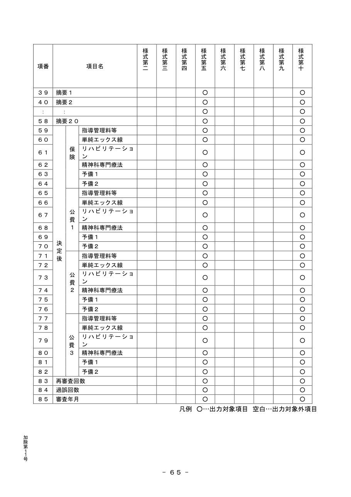
| 項番 | 項目名 | 属性 | 桁数 | 内容 | 必須 | 備考 | その他の列 |
|---|---|---|---|---|---|---|---|
| ３９ | 摘要１ | 様式第二:－ 様式第三:－ 様式第四:－ 様式第五:○ 様式第六:－ 様式第七:－ 様式第八:－ 様式第九:－ 様式第十:○ | |||||
| ４０ | 摘要２ | 様式第二:－ 様式第三:－ 様式第四:－ 様式第五:○ 様式第六:－ 様式第七:－ 様式第八:－ 様式第九:－ 様式第十:○ | |||||
| : | : | 様式第二:－ 様式第三:－ 様式第四:－ 様式第五:○ 様式第六:－ 様式第七:－ 様式第八:－ 様式第九:－ 様式第十:○ | |||||
| ５８ | 摘要２０ | 様式第二:－ 様式第三:－ 様式第四:－ 様式第五:○ 様式第六:－ 様式第七:－ 様式第八:－ 様式第九:－ 様式第十:○ | |||||
| ５９ | 決定後 > 保険 > 指導管理料等 | 様式第二:－ 様式第三:－ 様式第四:－ 様式第五:○ 様式第六:－ 様式第七:－ 様式第八:－ 様式第九:－ 様式第十:○ | |||||
| ６０ | 決定後 > 保険 > 単純エックス線 | 様式第二:－ 様式第三:－ 様式第四:－ 様式第五:○ 様式第六:－ 様式第七:－ 様式第八:－ 様式第九:－ 様式第十:○ | |||||
| ６１ | 決定後 > 保険 > リハビリテーション | 様式第二:－ 様式第三:－ 様式第四:－ 様式第五:○ 様式第六:－ 様式第七:－ 様式第八:－ 様式第九:－ 様式第十:○ | |||||
| ６２ | 決定後 > 保険 > 精神科専門療法 | 様式第二:－ 様式第三:－ 様式第四:－ 様式第五:○ 様式第六:－ 様式第七:－ 様式第八:－ 様式第九:－ 様式第十:○ | |||||
| ６３ | 決定後 > 保険 > 予備１ | 様式第二:－ 様式第三:－ 様式第四:－ 様式第五:○ 様式第六:－ 様式第七:－ 様式第八:－ 様式第九:－ 様式第十:○ | |||||
| ６４ | 決定後 > 保険 > 予備２ | 様式第二:－ 様式第三:－ 様式第四:－ 様式第五:○ 様式第六:－ 様式第七:－ 様式第八:－ 様式第九:－ 様式第十:○ | |||||
| ６５ | 決定後 > 公費１ > 指導管理料等 | 様式第二:－ 様式第三:－ 様式第四:－ 様式第五:○ 様式第六:－ 様式第七:－ 様式第八:－ 様式第九:－ 様式第十:○ | |||||
| ６６ | 決定後 > 公費１ > 単純エックス線 | 様式第二:－ 様式第三:－ 様式第四:－ 様式第五:○ 様式第六:－ 様式第七:－ 様式第八:－ 様式第九:－ 様式第十:○ | |||||
| ６７ | 決定後 > 公費１ > リハビリテーション | 様式第二:－ 様式第三:－ 様式第四:－ 様式第五:○ 様式第六:－ 様式第七:－ 様式第八:－ 様式第九:－ 様式第十:○ | |||||
| ６８ | 決定後 > 公費１ > 精神科専門療法 | 様式第二:－ 様式第三:－ 様式第四:－ 様式第五:○ 様式第六:－ 様式第七:－ 様式第八:－ 様式第九:－ 様式第十:○ | |||||
| ６９ | 決定後 > 公費１ > 予備１ | 様式第二:－ 様式第三:－ 様式第四:－ 様式第五:○ 様式第六:－ 様式第七:－ 様式第八:－ 様式第九:－ 様式第十:○ | |||||
| ７０ | 決定後 > 公費１ > 予備２ | 様式第二:－ 様式第三:－ 様式第四:－ 様式第五:○ 様式第六:－ 様式第七:－ 様式第八:－ 様式第九:－ 様式第十:○ | |||||
| ７１ | 決定後 > 公費２ > 指導管理料等 | 様式第二:－ 様式第三:－ 様式第四:－ 様式第五:○ 様式第六:－ 様式第七:－ 様式第八:－ 様式第九:－ 様式第十:○ | |||||
| ７２ | 決定後 > 公費２ > 単純エックス線 | 様式第二:－ 様式第三:－ 様式第四:－ 様式第五:○ 様式第六:－ 様式第七:－ 様式第八:－ 様式第九:－ 様式第十:○ | |||||
| ７３ | 決定後 > 公費２ > リハビリテーション | 様式第二:－ 様式第三:－ 様式第四:－ 様式第五:○ 様式第六:－ 様式第七:－ 様式第八:－ 様式第九:－ 様式第十:○ | |||||
| ７４ | 決定後 > 公費２ > 精神科専門療法 | 様式第二:－ 様式第三:－ 様式第四:－ 様式第五:○ 様式第六:－ 様式第七:－ 様式第八:－ 様式第九:－ 様式第十:○ | |||||
| ７５ | 決定後 > 公費２ > 予備１ | 様式第二:－ 様式第三:－ 様式第四:－ 様式第五:○ 様式第六:－ 様式第七:－ 様式第八:－ 様式第九:－ 様式第十:○ | |||||
| ７６ | 決定後 > 公費２ > 予備２ | 様式第二:－ 様式第三:－ 様式第四:－ 様式第五:○ 様式第六:－ 様式第七:－ 様式第八:－ 様式第九:－ 様式第十:○ | |||||
| ７７ | 決定後 > 公費３ > 指導管理料等 | 様式第二:－ 様式第三:－ 様式第四:－ 様式第五:○ 様式第六:－ 様式第七:－ 様式第八:－ 様式第九:－ 様式第十:○ | |||||
| ７８ | 決定後 > 公費３ > 単純エックス線 | 様式第二:－ 様式第三:－ 様式第四:－ 様式第五:○ 様式第六:－ 様式第七:－ 様式第八:－ 様式第九:－ 様式第十:○ | |||||
| ７９ | 決定後 > 公費３ > リハビリテーション | 様式第二:－ 様式第三:－ 様式第四:－ 様式第五:○ 様式第六:－ 様式第七:－ 様式第八:－ 様式第九:－ 様式第十:○ | |||||
| ８０ | 決定後 > 公費３ > 精神科専門療法 | 様式第二:－ 様式第三:－ 様式第四:－ 様式第五:○ 様式第六:－ 様式第七:－ 様式第八:－ 様式第九:－ 様式第十:○ | |||||
| ８１ | 決定後 > 公費３ > 予備１ | 様式第二:－ 様式第三:－ 様式第四:－ 様式第五:○ 様式第六:－ 様式第七:－ 様式第八:－ 様式第九:－ 様式第十:○ | |||||
| ８２ | 決定後 > 公費３ > 予備２ | 様式第二:－ 様式第三:－ 様式第四:－ 様式第五:○ 様式第六:－ 様式第七:－ 様式第八:－ 様式第九:－ 様式第十:○ | |||||
| ８３ | 再審査回数 | 様式第二:－ 様式第三:－ 様式第四:－ 様式第五:○ 様式第六:－ 様式第七:－ 様式第八:－ 様式第九:－ 様式第十:○ | |||||
| ８４ | 過誤回数 | 様式第二:－ 様式第三:－ 様式第四:－ 様式第五:○ 様式第六:－ 様式第七:－ 様式第八:－ 様式第九:－ 様式第十:○ | |||||
| ８５ | 審査年月 | 様式第二:－ 様式第三:－ 様式第四:－ 様式第五:○ 様式第六:－ 様式第七:－ 様式第八:－ 様式第九:－ 様式第十:○ |
| 項番 | 項目名 | 属性 | 桁数 | 内容 | 必須 | 備考 | その他の列 |
|---|---|---|---|---|---|---|---|
| 39 | 摘要1 | 様式第二:－ 様式第三:－ 様式第四:－ 様式第五:○ 様式第六:－ 様式第七:－ 様式第八:－ 様式第九:－ 様式第十:○ | |||||
| 40 | 摘要2 | 様式第二:－ 様式第三:－ 様式第四:－ 様式第五:○ 様式第六:－ 様式第七:－ 様式第八:－ 様式第九:－ 様式第十:○ | |||||
| : | : | 様式第二:－ 様式第三:－ 様式第四:－ 様式第五:○ 様式第六:－ 様式第七:－ 様式第八:－ 様式第九:－ 様式第十:○ | |||||
| 58 | 摘要20 | 様式第二:－ 様式第三:－ 様式第四:－ 様式第五:○ 様式第六:－ 様式第七:－ 様式第八:－ 様式第九:－ 様式第十:○ | |||||
| 59 | 決定後 > 保険 > 指導管理料等 | 様式第二:－ 様式第三:－ 様式第四:－ 様式第五:○ 様式第六:－ 様式第七:－ 様式第八:－ 様式第九:－ 様式第十:○ | |||||
| 60 | 決定後 > 保険 > 単純エックス線 | 様式第二:－ 様式第三:－ 様式第四:－ 様式第五:○ 様式第六:－ 様式第七:－ 様式第八:－ 様式第九:－ 様式第十:○ | |||||
| 61 | 決定後 > 保険 > リハビリテーション | 様式第二:－ 様式第三:－ 様式第四:－ 様式第五:○ 様式第六:－ 様式第七:－ 様式第八:－ 様式第九:－ 様式第十:○ | |||||
| 62 | 決定後 > 保険 > 精神科専門療法 | 様式第二:－ 様式第三:－ 様式第四:－ 様式第五:○ 様式第六:－ 様式第七:－ 様式第八:－ 様式第九:－ 様式第十:○ | |||||
| 63 | 決定後 > 保険 > 予備1 | 様式第二:－ 様式第三:－ 様式第四:－ 様式第五:○ 様式第六:－ 様式第七:－ 様式第八:－ 様式第九:－ 様式第十:○ | |||||
| 64 | 決定後 > 保険 > 予備2 | 様式第二:－ 様式第三:－ 様式第四:－ 様式第五:○ 様式第六:－ 様式第七:－ 様式第八:－ 様式第九:－ 様式第十:○ | |||||
| 65 | 決定後 > 公費1 > 指導管理料等 | 様式第二:－ 様式第三:－ 様式第四:－ 様式第五:○ 様式第六:－ 様式第七:－ 様式第八:－ 様式第九:－ 様式第十:○ | |||||
| 66 | 決定後 > 公費1 > 単純エックス線 | 様式第二:－ 様式第三:－ 様式第四:－ 様式第五:○ 様式第六:－ 様式第七:－ 様式第八:－ 様式第九:－ 様式第十:○ | |||||
| 67 | 決定後 > 公費1 > リハビリテーション | 様式第二:－ 様式第三:－ 様式第四:－ 様式第五:○ 様式第六:－ 様式第七:－ 様式第八:－ 様式第九:－ 様式第十:○ | |||||
| 68 | 決定後 > 公費1 > 精神科専門療法 | 様式第二:－ 様式第三:－ 様式第四:－ 様式第五:○ 様式第六:－ 様式第七:－ 様式第八:－ 様式第九:－ 様式第十:○ | |||||
| 69 | 決定後 > 公費1 > 予備1 | 様式第二:－ 様式第三:－ 様式第四:－ 様式第五:○ 様式第六:－ 様式第七:－ 様式第八:－ 様式第九:－ 様式第十:○ | |||||
| 70 | 決定後 > 公費1 > 予備2 | 様式第二:－ 様式第三:－ 様式第四:－ 様式第五:○ 様式第六:－ 様式第七:－ 様式第八:－ 様式第九:－ 様式第十:○ | |||||
| 71 | 決定後 > 公費2 > 指導管理料等 | 様式第二:－ 様式第三:－ 様式第四:－ 様式第五:○ 様式第六:－ 様式第七:－ 様式第八:－ 様式第九:－ 様式第十:○ | |||||
| 72 | 決定後 > 公費2 > 単純エックス線 | 様式第二:－ 様式第三:－ 様式第四:－ 様式第五:○ 様式第六:－ 様式第七:－ 様式第八:－ 様式第九:－ 様式第十:○ | |||||
| 73 | 決定後 > 公費2 > リハビリテーション | 様式第二:－ 様式第三:－ 様式第四:－ 様式第五:○ 様式第六:－ 様式第七:－ 様式第八:－ 様式第九:－ 様式第十:○ | |||||
| 74 | 決定後 > 公費2 > 精神科専門療法 | 様式第二:－ 様式第三:－ 様式第四:－ 様式第五:○ 様式第六:－ 様式第七:－ 様式第八:－ 様式第九:－ 様式第十:○ | |||||
| 75 | 決定後 > 公費2 > 予備1 | 様式第二:－ 様式第三:－ 様式第四:－ 様式第五:○ 様式第六:－ 様式第七:－ 様式第八:－ 様式第九:－ 様式第十:○ | |||||
| 76 | 決定後 > 公費2 > 予備2 | 様式第二:－ 様式第三:－ 様式第四:－ 様式第五:○ 様式第六:－ 様式第七:－ 様式第八:－ 様式第九:－ 様式第十:○ | |||||
| 77 | 決定後 > 公費3 > 指導管理料等 | 様式第二:－ 様式第三:－ 様式第四:－ 様式第五:○ 様式第六:－ 様式第七:－ 様式第八:－ 様式第九:－ 様式第十:○ | |||||
| 78 | 決定後 > 公費3 > 単純エックス線 | 様式第二:－ 様式第三:－ 様式第四:－ 様式第五:○ 様式第六:－ 様式第七:－ 様式第八:－ 様式第九:－ 様式第十:○ | |||||
| 79 | 決定後 > 公費3 > リハビリテーション | 様式第二:－ 様式第三:－ 様式第四:－ 様式第五:○ 様式第六:－ 様式第七:－ 様式第八:－ 様式第九:－ 様式第十:○ | |||||
| 80 | 決定後 > 公費3 > 精神科専門療法 | 様式第二:－ 様式第三:－ 様式第四:－ 様式第五:○ 様式第六:－ 様式第七:－ 様式第八:－ 様式第九:－ 様式第十:○ | |||||
| 81 | 決定後 > 公費3 > 予備1 | 様式第二:－ 様式第三:－ 様式第四:－ 様式第五:○ 様式第六:－ 様式第七:－ 様式第八:－ 様式第九:－ 様式第十:○ | |||||
| 82 | 決定後 > 公費3 > 予備2 | 様式第二:－ 様式第三:－ 様式第四:－ 様式第五:○ 様式第六:－ 様式第七:－ 様式第八:－ 様式第九:－ 様式第十:○ | |||||
| 83 | 再審査回数 | 様式第二:－ 様式第三:－ 様式第四:－ 様式第五:○ 様式第六:－ 様式第七:－ 様式第八:－ 様式第九:－ 様式第十:○ | |||||
| 84 | 過誤回数 | 様式第二:－ 様式第三:－ 様式第四:－ 様式第五:○ 様式第六:－ 様式第七:－ 様式第八:－ 様式第九:－ 様式第十:○ | |||||
| 85 | 審査年月 | 様式第二:－ 様式第三:－ 様式第四:－ 様式第五:○ 様式第六:－ 様式第七:－ 様式第八:－ 様式第九:－ 様式第十:○ |
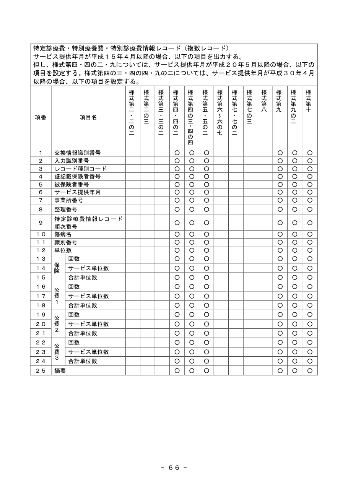
| 項番 | 項目名 | 属性 | 桁数 | 内容 | 必須 | 備考 | その他の列 |
|---|---|---|---|---|---|---|---|
| １ | 交換情報識別番号 | 様式第二・二の二:－ 様式第二の三:－ 様式第三・三の二:－ 様式第四・四の二:○ 様式第四の三・四の四:○ 様式第五・五の二:○ 様式第六～六の七:－ 様式第七・七の二:－ 様式第七の三:－ 様式第八:－ 様式第九:○ 様式第九の二:○ 様式第十:○ | |||||
| ２ | 入力識別番号 | 様式第二・二の二:－ 様式第二の三:－ 様式第三・三の二:－ 様式第四・四の二:○ 様式第四の三・四の四:○ 様式第五・五の二:○ 様式第六～六の七:－ 様式第七・七の二:－ 様式第七の三:－ 様式第八:－ 様式第九:○ 様式第九の二:○ 様式第十:○ | |||||
| ３ | レコード種別コード | 様式第二・二の二:－ 様式第二の三:－ 様式第三・三の二:－ 様式第四・四の二:○ 様式第四の三・四の四:○ 様式第五・五の二:○ 様式第六～六の七:－ 様式第七・七の二:－ 様式第七の三:－ 様式第八:－ 様式第九:○ 様式第九の二:○ 様式第十:○ | |||||
| ４ | 証記載保険者番号 | 様式第二・二の二:－ 様式第二の三:－ 様式第三・三の二:－ 様式第四・四の二:○ 様式第四の三・四の四:○ 様式第五・五の二:○ 様式第六～六の七:－ 様式第七・七の二:－ 様式第七の三:－ 様式第八:－ 様式第九:○ 様式第九の二:○ 様式第十:○ | |||||
| ５ | 被保険者番号 | 様式第二・二の二:－ 様式第二の三:－ 様式第三・三の二:－ 様式第四・四の二:○ 様式第四の三・四の四:○ 様式第五・五の二:○ 様式第六～六の七:－ 様式第七・七の二:－ 様式第七の三:－ 様式第八:－ 様式第九:○ 様式第九の二:○ 様式第十:○ | |||||
| ６ | サービス提供年月 | 様式第二・二の二:－ 様式第二の三:－ 様式第三・三の二:－ 様式第四・四の二:○ 様式第四の三・四の四:○ 様式第五・五の二:○ 様式第六～六の七:－ 様式第七・七の二:－ 様式第七の三:－ 様式第八:－ 様式第九:○ 様式第九の二:○ 様式第十:○ | |||||
| ７ | 事業所番号 | 様式第二・二の二:－ 様式第二の三:－ 様式第三・三の二:－ 様式第四・四の二:○ 様式第四の三・四の四:○ 様式第五・五の二:○ 様式第六～六の七:－ 様式第七・七の二:－ 様式第七の三:－ 様式第八:－ 様式第九:○ 様式第九の二:○ 様式第十:○ | |||||
| ８ | 整理番号 | 様式第二・二の二:－ 様式第二の三:－ 様式第三・三の二:－ 様式第四・四の二:○ 様式第四の三・四の四:○ 様式第五・五の二:○ 様式第六～六の七:－ 様式第七・七の二:－ 様式第七の三:－ 様式第八:－ 様式第九:○ 様式第九の二:○ 様式第十:○ | |||||
| ９ | 特定診療費情報レコード順次番号 | 様式第二・二の二:－ 様式第二の三:－ 様式第三・三の二:－ 様式第四・四の二:○ 様式第四の三・四の四:○ 様式第五・五の二:○ 様式第六～六の七:－ 様式第七・七の二:－ 様式第七の三:－ 様式第八:－ 様式第九:○ 様式第九の二:○ 様式第十:○ | |||||
| １０ | 傷病名 | 様式第二・二の二:－ 様式第二の三:－ 様式第三・三の二:－ 様式第四・四の二:○ 様式第四の三・四の四:○ 様式第五・五の二:○ 様式第六～六の七:－ 様式第七・七の二:－ 様式第七の三:－ 様式第八:－ 様式第九:○ 様式第九の二:○ 様式第十:○ | |||||
| １１ | 識別番号 | 様式第二・二の二:－ 様式第二の三:－ 様式第三・三の二:－ 様式第四・四の二:○ 様式第四の三・四の四:○ 様式第五・五の二:○ 様式第六～六の七:－ 様式第七・七の二:－ 様式第七の三:－ 様式第八:－ 様式第九:○ 様式第九の二:○ 様式第十:○ | |||||
| １２ | 単位数 | 様式第二・二の二:－ 様式第二の三:－ 様式第三・三の二:－ 様式第四・四の二:○ 様式第四の三・四の四:○ 様式第五・五の二:○ 様式第六～六の七:－ 様式第七・七の二:－ 様式第七の三:－ 様式第八:－ 様式第九:○ 様式第九の二:○ 様式第十:○ | |||||
| １３ | 保険 > 回数 | 様式第二・二の二:－ 様式第二の三:－ 様式第三・三の二:－ 様式第四・四の二:○ 様式第四の三・四の四:○ 様式第五・五の二:○ 様式第六～六の七:－ 様式第七・七の二:－ 様式第七の三:－ 様式第八:－ 様式第九:○ 様式第九の二:○ 様式第十:○ | |||||
| １４ | 保険 > サービス単位数 | 様式第二・二の二:－ 様式第二の三:－ 様式第三・三の二:－ 様式第四・四の二:○ 様式第四の三・四の四:○ 様式第五・五の二:○ 様式第六～六の七:－ 様式第七・七の二:－ 様式第七の三:－ 様式第八:－ 様式第九:○ 様式第九の二:○ 様式第十:○ | |||||
| １５ | 保険 > 合計単位数 | 様式第二・二の二:－ 様式第二の三:－ 様式第三・三の二:－ 様式第四・四の二:○ 様式第四の三・四の四:○ 様式第五・五の二:○ 様式第六～六の七:－ 様式第七・七の二:－ 様式第七の三:－ 様式第八:－ 様式第九:○ 様式第九の二:○ 様式第十:○ | |||||
| １６ | 公費１ > 回数 | 様式第二・二の二:－ 様式第二の三:－ 様式第三・三の二:－ 様式第四・四の二:○ 様式第四の三・四の四:○ 様式第五・五の二:○ 様式第六～六の七:－ 様式第七・七の二:－ 様式第七の三:－ 様式第八:－ 様式第九:○ 様式第九の二:○ 様式第十:○ | |||||
| １７ | 公費１ > サービス単位数 | 様式第二・二の二:－ 様式第二の三:－ 様式第三・三の二:－ 様式第四・四の二:○ 様式第四の三・四の四:○ 様式第五・五の二:○ 様式第六～六の七:－ 様式第七・七の二:－ 様式第七の三:－ 様式第八:－ 様式第九:○ 様式第九の二:○ 様式第十:○ | |||||
| １８ | 公費１ > 合計単位数 | 様式第二・二の二:－ 様式第二の三:－ 様式第三・三の二:－ 様式第四・四の二:○ 様式第四の三・四の四:○ 様式第五・五の二:○ 様式第六～六の七:－ 様式第七・七の二:－ 様式第七の三:－ 様式第八:－ 様式第九:○ 様式第九の二:○ 様式第十:○ | |||||
| １９ | 公費２ > 回数 | 様式第二・二の二:－ 様式第二の三:－ 様式第三・三の二:－ 様式第四・四の二:○ 様式第四の三・四の四:○ 様式第五・五の二:○ 様式第六～六の七:－ 様式第七・七の二:－ 様式第七の三:－ 様式第八:－ 様式第九:○ 様式第九の二:○ 様式第十:○ | |||||
| ２０ | 公費２ > サービス単位数 | 様式第二・二の二:－ 様式第二の三:－ 様式第三・三の二:－ 様式第四・四の二:○ 様式第四の三・四の四:○ 様式第五・五の二:○ 様式第六～六の七:－ 様式第七・七の二:－ 様式第七の三:－ 様式第八:－ 様式第九:○ 様式第九の二:○ 様式第十:○ | |||||
| ２１ | 公費２ > 合計単位数 | 様式第二・二の二:－ 様式第二の三:－ 様式第三・三の二:－ 様式第四・四の二:○ 様式第四の三・四の四:○ 様式第五・五の二:○ 様式第六～六の七:－ 様式第七・七の二:－ 様式第七の三:－ 様式第八:－ 様式第九:○ 様式第九の二:○ 様式第十:○ | |||||
| ２２ | 公費３ > 回数 | 様式第二・二の二:－ 様式第二の三:－ 様式第三・三の二:－ 様式第四・四の二:○ 様式第四の三・四の四:○ 様式第五・五の二:○ 様式第六～六の七:－ 様式第七・七の二:－ 様式第七の三:－ 様式第八:－ 様式第九:○ 様式第九の二:○ 様式第十:○ | |||||
| ２３ | 公費３ > サービス単位数 | 様式第二・二の二:－ 様式第二の三:－ 様式第三・三の二:－ 様式第四・四の二:○ 様式第四の三・四の四:○ 様式第五・五の二:○ 様式第六～六の七:－ 様式第七・七の二:－ 様式第七の三:－ 様式第八:－ 様式第九:○ 様式第九の二:○ 様式第十:○ | |||||
| ２４ | 公費３ > 合計単位数 | 様式第二・二の二:－ 様式第二の三:－ 様式第三・三の二:－ 様式第四・四の二:○ 様式第四の三・四の四:○ 様式第五・五の二:○ 様式第六～六の七:－ 様式第七・七の二:－ 様式第七の三:－ 様式第八:－ 様式第九:○ 様式第九の二:○ 様式第十:○ | |||||
| ２５ | 摘要 | 様式第二・二の二:－ 様式第二の三:－ 様式第三・三の二:－ 様式第四・四の二:○ 様式第四の三・四の四:○ 様式第五・五の二:○ 様式第六～六の七:－ 様式第七・七の二:－ 様式第七の三:－ 様式第八:－ 様式第九:○ 様式第九の二:○ 様式第十:○ |
| 項番 | 項目名 | 属性 | 桁数 | 内容 | 必須 | 備考 | その他の列 |
|---|---|---|---|---|---|---|---|
| 1 | 交換情報識別番号 | 様式第二・二の二:－ 様式第二の三:－ 様式第三・三の二:－ 様式第四・四の二:○ 様式第四の三・四の四:○ 様式第五・五の二:○ 様式第六～六の七:－ 様式第七・七の二:－ 様式第七の三:－ 様式第八:－ 様式第九:○ 様式第九の二:○ 様式第十:○ | |||||
| 2 | 入力識別番号 | 様式第二・二の二:－ 様式第二の三:－ 様式第三・三の二:－ 様式第四・四の二:○ 様式第四の三・四の四:○ 様式第五・五の二:○ 様式第六～六の七:－ 様式第七・七の二:－ 様式第七の三:－ 様式第八:－ 様式第九:○ 様式第九の二:○ 様式第十:○ | |||||
| 3 | レコード種別コード | 様式第二・二の二:－ 様式第二の三:－ 様式第三・三の二:－ 様式第四・四の二:○ 様式第四の三・四の四:○ 様式第五・五の二:○ 様式第六～六の七:－ 様式第七・七の二:－ 様式第七の三:－ 様式第八:－ 様式第九:○ 様式第九の二:○ 様式第十:○ | |||||
| 4 | 証記載保険者番号 | 様式第二・二の二:－ 様式第二の三:－ 様式第三・三の二:－ 様式第四・四の二:○ 様式第四の三・四の四:○ 様式第五・五の二:○ 様式第六～六の七:－ 様式第七・七の二:－ 様式第七の三:－ 様式第八:－ 様式第九:○ 様式第九の二:○ 様式第十:○ | |||||
| 5 | 被保険者番号 | 様式第二・二の二:－ 様式第二の三:－ 様式第三・三の二:－ 様式第四・四の二:○ 様式第四の三・四の四:○ 様式第五・五の二:○ 様式第六～六の七:－ 様式第七・七の二:－ 様式第七の三:－ 様式第八:－ 様式第九:○ 様式第九の二:○ 様式第十:○ | |||||
| 6 | サービス提供年月 | 様式第二・二の二:－ 様式第二の三:－ 様式第三・三の二:－ 様式第四・四の二:○ 様式第四の三・四の四:○ 様式第五・五の二:○ 様式第六～六の七:－ 様式第七・七の二:－ 様式第七の三:－ 様式第八:－ 様式第九:○ 様式第九の二:○ 様式第十:○ | |||||
| 7 | 事業所番号 | 様式第二・二の二:－ 様式第二の三:－ 様式第三・三の二:－ 様式第四・四の二:○ 様式第四の三・四の四:○ 様式第五・五の二:○ 様式第六～六の七:－ 様式第七・七の二:－ 様式第七の三:－ 様式第八:－ 様式第九:○ 様式第九の二:○ 様式第十:○ | |||||
| 8 | 整理番号 | 様式第二・二の二:－ 様式第二の三:－ 様式第三・三の二:－ 様式第四・四の二:○ 様式第四の三・四の四:○ 様式第五・五の二:○ 様式第六～六の七:－ 様式第七・七の二:－ 様式第七の三:－ 様式第八:－ 様式第九:○ 様式第九の二:○ 様式第十:○ | |||||
| 9 | 特定診療費情報レコード順次番号 | 様式第二・二の二:－ 様式第二の三:－ 様式第三・三の二:－ 様式第四・四の二:○ 様式第四の三・四の四:○ 様式第五・五の二:○ 様式第六～六の七:－ 様式第七・七の二:－ 様式第七の三:－ 様式第八:－ 様式第九:○ 様式第九の二:○ 様式第十:○ | |||||
| 10 | 傷病名 | 様式第二・二の二:－ 様式第二の三:－ 様式第三・三の二:－ 様式第四・四の二:○ 様式第四の三・四の四:○ 様式第五・五の二:○ 様式第六～六の七:－ 様式第七・七の二:－ 様式第七の三:－ 様式第八:－ 様式第九:○ 様式第九の二:○ 様式第十:○ | |||||
| 11 | 識別番号 | 様式第二・二の二:－ 様式第二の三:－ 様式第三・三の二:－ 様式第四・四の二:○ 様式第四の三・四の四:○ 様式第五・五の二:○ 様式第六～六の七:－ 様式第七・七の二:－ 様式第七の三:－ 様式第八:－ 様式第九:○ 様式第九の二:○ 様式第十:○ | |||||
| 12 | 単位数 | 様式第二・二の二:－ 様式第二の三:－ 様式第三・三の二:－ 様式第四・四の二:○ 様式第四の三・四の四:○ 様式第五・五の二:○ 様式第六～六の七:－ 様式第七・七の二:－ 様式第七の三:－ 様式第八:－ 様式第九:○ 様式第九の二:○ 様式第十:○ | |||||
| 13 | 保険 > 回数 | 様式第二・二の二:－ 様式第二の三:－ 様式第三・三の二:－ 様式第四・四の二:○ 様式第四の三・四の四:○ 様式第五・五の二:○ 様式第六～六の七:－ 様式第七・七の二:－ 様式第七の三:－ 様式第八:－ 様式第九:○ 様式第九の二:○ 様式第十:○ | |||||
| 14 | 保険 > サービス単位数 | 様式第二・二の二:－ 様式第二の三:－ 様式第三・三の二:－ 様式第四・四の二:○ 様式第四の三・四の四:○ 様式第五・五の二:○ 様式第六～六の七:－ 様式第七・七の二:－ 様式第七の三:－ 様式第八:－ 様式第九:○ 様式第九の二:○ 様式第十:○ | |||||
| 15 | 保険 > 合計単位数 | 様式第二・二の二:－ 様式第二の三:－ 様式第三・三の二:－ 様式第四・四の二:○ 様式第四の三・四の四:○ 様式第五・五の二:○ 様式第六～六の七:－ 様式第七・七の二:－ 様式第七の三:－ 様式第八:－ 様式第九:○ 様式第九の二:○ 様式第十:○ | |||||
| 16 | 公費1 > 回数 | 様式第二・二の二:－ 様式第二の三:－ 様式第三・三の二:－ 様式第四・四の二:○ 様式第四の三・四の四:○ 様式第五・五の二:○ 様式第六～六の七:－ 様式第七・七の二:－ 様式第七の三:－ 様式第八:－ 様式第九:○ 様式第九の二:○ 様式第十:○ | |||||
| 17 | 公費1 > サービス単位数 | 様式第二・二の二:－ 様式第二の三:－ 様式第三・三の二:－ 様式第四・四の二:○ 様式第四の三・四の四:○ 様式第五・五の二:○ 様式第六～六の七:－ 様式第七・七の二:－ 様式第七の三:－ 様式第八:－ 様式第九:○ 様式第九の二:○ 様式第十:○ | |||||
| 18 | 公費1 > 合計単位数 | 様式第二・二の二:－ 様式第二の三:－ 様式第三・三の二:－ 様式第四・四の二:○ 様式第四の三・四の四:○ 様式第五・五の二:○ 様式第六～六の七:－ 様式第七・七の二:－ 様式第七の三:－ 様式第八:－ 様式第九:○ 様式第九の二:○ 様式第十:○ | |||||
| 19 | 公費2 > 回数 | 様式第二・二の二:－ 様式第二の三:－ 様式第三・三の二:－ 様式第四・四の二:○ 様式第四の三・四の四:○ 様式第五・五の二:○ 様式第六～六の七:－ 様式第七・七の二:－ 様式第七の三:－ 様式第八:－ 様式第九:○ 様式第九の二:○ 様式第十:○ | |||||
| 20 | 公費2 > サービス単位数 | 様式第二・二の二:－ 様式第二の三:－ 様式第三・三の二:－ 様式第四・四の二:○ 様式第四の三・四の四:○ 様式第五・五の二:○ 様式第六～六の七:－ 様式第七・七の二:－ 様式第七の三:－ 様式第八:－ 様式第九:○ 様式第九の二:○ 様式第十:○ | |||||
| 21 | 公費2 > 合計単位数 | 様式第二・二の二:－ 様式第二の三:－ 様式第三・三の二:－ 様式第四・四の二:○ 様式第四の三・四の四:○ 様式第五・五の二:○ 様式第六～六の七:－ 様式第七・七の二:－ 様式第七の三:－ 様式第八:－ 様式第九:○ 様式第九の二:○ 様式第十:○ | |||||
| 22 | 公費3 > 回数 | 様式第二・二の二:－ 様式第二の三:－ 様式第三・三の二:－ 様式第四・四の二:○ 様式第四の三・四の四:○ 様式第五・五の二:○ 様式第六～六の七:－ 様式第七・七の二:－ 様式第七の三:－ 様式第八:－ 様式第九:○ 様式第九の二:○ 様式第十:○ | |||||
| 23 | 公費3 > サービス単位数 | 様式第二・二の二:－ 様式第二の三:－ 様式第三・三の二:－ 様式第四・四の二:○ 様式第四の三・四の四:○ 様式第五・五の二:○ 様式第六～六の七:－ 様式第七・七の二:－ 様式第七の三:－ 様式第八:－ 様式第九:○ 様式第九の二:○ 様式第十:○ | |||||
| 24 | 公費3 > 合計単位数 | 様式第二・二の二:－ 様式第二の三:－ 様式第三・三の二:－ 様式第四・四の二:○ 様式第四の三・四の四:○ 様式第五・五の二:○ 様式第六～六の七:－ 様式第七・七の二:－ 様式第七の三:－ 様式第八:－ 様式第九:○ 様式第九の二:○ 様式第十:○ | |||||
| 25 | 摘要 | 様式第二・二の二:－ 様式第二の三:－ 様式第三・三の二:－ 様式第四・四の二:○ 様式第四の三・四の四:○ 様式第五・五の二:○ 様式第六～六の七:－ 様式第七・七の二:－ 様式第七の三:－ 様式第八:－ 様式第九:○ 様式第九の二:○ 様式第十:○ |
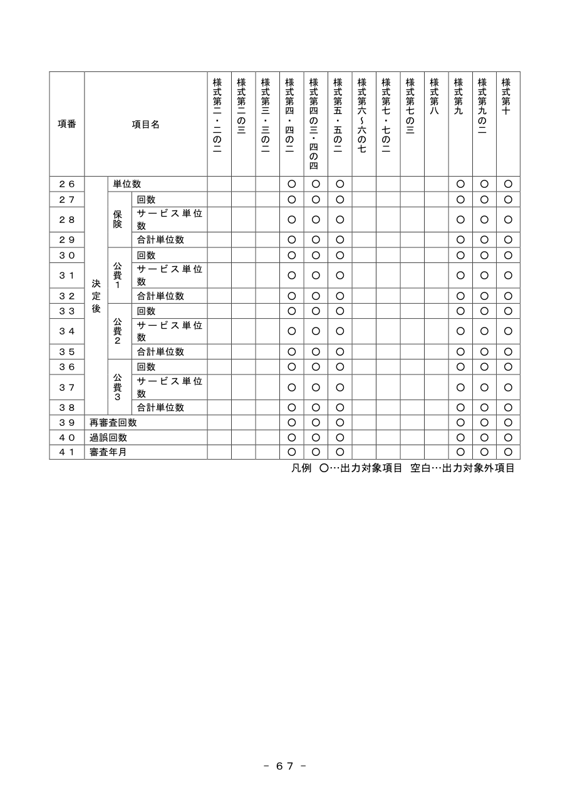
| 項番 | 項目名 | 属性 | 桁数 | 内容 | 必須 | 備考 | その他の列 |
|---|---|---|---|---|---|---|---|
| ２６ | 決定後 > 単位数 | 様式第二・二の二:－ 様式第二の三:－ 様式第三・三の二:－ 様式第四・四の二:○ 様式第四の三・四の四:○ 様式第五・五の二:○ 様式第六～六の七:－ 様式第七・七の二:－ 様式第七の三:－ 様式第八:－ 様式第九:○ 様式第九の二:○ 様式第十:○ | |||||
| ２７ | 決定後 > 保険 > 回数 | 様式第二・二の二:－ 様式第二の三:－ 様式第三・三の二:－ 様式第四・四の二:○ 様式第四の三・四の四:○ 様式第五・五の二:○ 様式第六～六の七:－ 様式第七・七の二:－ 様式第七の三:－ 様式第八:－ 様式第九:○ 様式第九の二:○ 様式第十:○ | |||||
| ２８ | 決定後 > 保険 > サービス単位数 | 様式第二・二の二:－ 様式第二の三:－ 様式第三・三の二:－ 様式第四・四の二:○ 様式第四の三・四の四:○ 様式第五・五の二:○ 様式第六～六の七:－ 様式第七・七の二:－ 様式第七の三:－ 様式第八:－ 様式第九:○ 様式第九の二:○ 様式第十:○ | |||||
| ２９ | 決定後 > 保険 > 合計単位数 | 様式第二・二の二:－ 様式第二の三:－ 様式第三・三の二:－ 様式第四・四の二:○ 様式第四の三・四の四:○ 様式第五・五の二:○ 様式第六～六の七:－ 様式第七・七の二:－ 様式第七の三:－ 様式第八:－ 様式第九:○ 様式第九の二:○ 様式第十:○ | |||||
| ３０ | 決定後 > 公費1 > 回数 | 様式第二・二の二:－ 様式第二の三:－ 様式第三・三の二:－ 様式第四・四の二:○ 様式第四の三・四の四:○ 様式第五・五の二:○ 様式第六～六の七:－ 様式第七・七の二:－ 様式第七の三:－ 様式第八:－ 様式第九:○ 様式第九の二:○ 様式第十:○ | |||||
| ３１ | 決定後 > 公費1 > サービス単位数 | 様式第二・二の二:－ 様式第二の三:－ 様式第三・三の二:－ 様式第四・四の二:○ 様式第四の三・四の四:○ 様式第五・五の二:○ 様式第六～六の七:－ 様式第七・七の二:－ 様式第七の三:－ 様式第八:－ 様式第九:○ 様式第九の二:○ 様式第十:○ | |||||
| ３２ | 決定後 > 公費1 > 合計単位数 | 様式第二・二の二:－ 様式第二の三:－ 様式第三・三の二:－ 様式第四・四の二:○ 様式第四の三・四の四:○ 様式第五・五の二:○ 様式第六～六の七:－ 様式第七・七の二:－ 様式第七の三:－ 様式第八:－ 様式第九:○ 様式第九の二:○ 様式第十:○ | |||||
| ３３ | 決定後 > 公費2 > 回数 | 様式第二・二の二:－ 様式第二の三:－ 様式第三・三の二:－ 様式第四・四の二:○ 様式第四の三・四の四:○ 様式第五・五の二:○ 様式第六～六の七:－ 様式第七・七の二:－ 様式第七の三:－ 様式第八:－ 様式第九:○ 様式第九の二:○ 様式第十:○ | |||||
| ３４ | 決定後 > 公費2 > サービス単位数 | 様式第二・二の二:－ 様式第二の三:－ 様式第三・三の二:－ 様式第四・四の二:○ 様式第四の三・四の四:○ 様式第五・五の二:○ 様式第六～六の七:－ 様式第七・七の二:－ 様式第七の三:－ 様式第八:－ 様式第九:○ 様式第九の二:○ 様式第十:○ | |||||
| ３５ | 決定後 > 公費2 > 合計単位数 | 様式第二・二の二:－ 様式第二の三:－ 様式第三・三の二:－ 様式第四・四の二:○ 様式第四の三・四の四:○ 様式第五・五の二:○ 様式第六～六の七:－ 様式第七・七の二:－ 様式第七の三:－ 様式第八:－ 様式第九:○ 様式第九の二:○ 様式第十:○ | |||||
| ３６ | 決定後 > 公費3 > 回数 | 様式第二・二の二:－ 様式第二の三:－ 様式第三・三の二:－ 様式第四・四の二:○ 様式第四の三・四の四:○ 様式第五・五の二:○ 様式第六～六の七:－ 様式第七・七の二:－ 様式第七の三:－ 様式第八:－ 様式第九:○ 様式第九の二:○ 様式第十:○ | |||||
| ３７ | 決定後 > 公費3 > サービス単位数 | 様式第二・二の二:－ 様式第二の三:－ 様式第三・三の二:－ 様式第四・四の二:○ 様式第四の三・四の四:○ 様式第五・五の二:○ 様式第六～六の七:－ 様式第七・七の二:－ 様式第七の三:－ 様式第八:－ 様式第九:○ 様式第九の二:○ 様式第十:○ | |||||
| ３８ | 決定後 > 公費3 > 合計単位数 | 様式第二・二の二:－ 様式第二の三:－ 様式第三・三の二:－ 様式第四・四の二:○ 様式第四の三・四の四:○ 様式第五・五の二:○ 様式第六～六の七:－ 様式第七・七の二:－ 様式第七の三:－ 様式第八:－ 様式第九:○ 様式第九の二:○ 様式第十:○ | |||||
| ３９ | 再審査回数 | 様式第二・二の二:－ 様式第二の三:－ 様式第三・三の二:－ 様式第四・四の二:○ 様式第四の三・四の四:○ 様式第五・五の二:○ 様式第六～六の七:－ 様式第七・七の二:－ 様式第七の三:－ 様式第八:－ 様式第九:○ 様式第九の二:○ 様式第十:○ | |||||
| ４０ | 過誤回数 | 様式第二・二の二:－ 様式第二の三:－ 様式第三・三の二:－ 様式第四・四の二:○ 様式第四の三・四の四:○ 様式第五・五の二:○ 様式第六～六の七:－ 様式第七・七の二:－ 様式第七の三:－ 様式第八:－ 様式第九:○ 様式第九の二:○ 様式第十:○ | |||||
| ４１ | 審査年月 | 様式第二・二の二:－ 様式第二の三:－ 様式第三・三の二:－ 様式第四・四の二:○ 様式第四の三・四の四:○ 様式第五・五の二:○ 様式第六～六の七:－ 様式第七・七の二:－ 様式第七の三:－ 様式第八:－ 様式第九:○ 様式第九の二:○ 様式第十:○ |
| 項番 | 項目名 | 属性 | 桁数 | 内容 | 必須 | 備考 | その他の列 |
|---|---|---|---|---|---|---|---|
| ２６ | 決定後 > 単位数 | 様式第二・二の二:－ 様式第二の三:－ 様式第三・三の二:－ 様式第四・四の二:○ 様式第四の三・四の四:○ 様式第五・五の二:○ 様式第六～六の七:－ 様式第七・七の二:－ 様式第七の三:－ 様式第八:－ 様式第九:○ 様式第九の二:○ 様式第十:○ | |||||
| ２７ | 決定後 > 保険 > 回数 | 様式第二・二の二:－ 様式第二の三:－ 様式第三・三の二:－ 様式第四・四の二:○ 様式第四の三・四の四:○ 様式第五・五の二:○ 様式第六～六の七:－ 様式第七・七の二:－ 様式第七の三:－ 様式第八:－ 様式第九:○ 様式第九の二:○ 様式第十:○ | |||||
| ２８ | 決定後 > 保険 > サービス単位数 | 様式第二・二の二:－ 様式第二の三:－ 様式第三・三の二:－ 様式第四・四の二:○ 様式第四の三・四の四:○ 様式第五・五の二:○ 様式第六～六の七:－ 様式第七・七の二:－ 様式第七の三:－ 様式第八:－ 様式第九:○ 様式第九の二:○ 様式第十:○ | |||||
| ２９ | 決定後 > 保険 > 合計単位数 | 様式第二・二の二:－ 様式第二の三:－ 様式第三・三の二:－ 様式第四・四の二:○ 様式第四の三・四の四:○ 様式第五・五の二:○ 様式第六～六の七:－ 様式第七・七の二:－ 様式第七の三:－ 様式第八:－ 様式第九:○ 様式第九の二:○ 様式第十:○ | |||||
| ３０ | 決定後 > 公費1 > 回数 | 様式第二・二の二:－ 様式第二の三:－ 様式第三・三の二:－ 様式第四・四の二:○ 様式第四の三・四の四:○ 様式第五・五の二:○ 様式第六～六の七:－ 様式第七・七の二:－ 様式第七の三:－ 様式第八:－ 様式第九:○ 様式第九の二:○ 様式第十:○ | |||||
| ３１ | 決定後 > 公費1 > サービス単位数 | 様式第二・二の二:－ 様式第二の三:－ 様式第三・三の二:－ 様式第四・四の二:○ 様式第四の三・四の四:○ 様式第五・五の二:○ 様式第六～六の七:－ 様式第七・七の二:－ 様式第七の三:－ 様式第八:－ 様式第九:○ 様式第九の二:○ 様式第十:○ | |||||
| ３２ | 決定後 > 公費1 > 合計単位数 | 様式第二・二の二:－ 様式第二の三:－ 様式第三・三の二:－ 様式第四・四の二:○ 様式第四の三・四の四:○ 様式第五・五の二:○ 様式第六～六の七:－ 様式第七・七の二:－ 様式第七の三:－ 様式第八:－ 様式第九:○ 様式第九の二:○ 様式第十:○ | |||||
| ３３ | 決定後 > 公費2 > 回数 | 様式第二・二の二:－ 様式第二の三:－ 様式第三・三の二:－ 様式第四・四の二:○ 様式第四の三・四の四:○ 様式第五・五の二:○ 様式第六～六の七:－ 様式第七・七の二:－ 様式第七の三:－ 様式第八:－ 様式第九:○ 様式第九の二:○ 様式第十:○ | |||||
| ３４ | 決定後 > 公費2 > サービス単位数 | 様式第二・二の二:－ 様式第二の三:－ 様式第三・三の二:－ 様式第四・四の二:○ 様式第四の三・四の四:○ 様式第五・五の二:○ 様式第六～六の七:－ 様式第七・七の二:－ 様式第七の三:－ 様式第八:－ 様式第九:○ 様式第九の二:○ 様式第十:○ | |||||
| ３５ | 決定後 > 公費2 > 合計単位数 | 様式第二・二の二:－ 様式第二の三:－ 様式第三・三の二:－ 様式第四・四の二:○ 様式第四の三・四の四:○ 様式第五・五の二:○ 様式第六～六の七:－ 様式第七・七の二:－ 様式第七の三:－ 様式第八:－ 様式第九:○ 様式第九の二:○ 様式第十:○ | |||||
| ３６ | 決定後 > 公費3 > 回数 | 様式第二・二の二:－ 様式第二の三:－ 様式第三・三の二:－ 様式第四・四の二:○ 様式第四の三・四の四:○ 様式第五・五の二:○ 様式第六～六の七:－ 様式第七・七の二:－ 様式第七の三:－ 様式第八:－ 様式第九:○ 様式第九の二:○ 様式第十:○ | |||||
| ３７ | 決定後 > 公費3 > サービス単位数 | 様式第二・二の二:－ 様式第二の三:－ 様式第三・三の二:－ 様式第四・四の二:○ 様式第四の三・四の四:○ 様式第五・五の二:○ 様式第六～六の七:－ 様式第七・七の二:－ 様式第七の三:－ 様式第八:－ 様式第九:○ 様式第九の二:○ 様式第十:○ | |||||
| ３８ | 決定後 > 公費3 > 合計単位数 | 様式第二・二の二:－ 様式第二の三:－ 様式第三・三の二:－ 様式第四・四の二:○ 様式第四の三・四の四:○ 様式第五・五の二:○ 様式第六～六の七:－ 様式第七・七の二:－ 様式第七の三:－ 様式第八:－ 様式第九:○ 様式第九の二:○ 様式第十:○ | |||||
| ３９ | 再審査回数 | 様式第二・二の二:－ 様式第二の三:－ 様式第三・三の二:－ 様式第四・四の二:○ 様式第四の三・四の四:○ 様式第五・五の二:○ 様式第六～六の七:－ 様式第七・七の二:－ 様式第七の三:－ 様式第八:－ 様式第九:○ 様式第九の二:○ 様式第十:○ | |||||
| ４０ | 過誤回数 | 様式第二・二の二:－ 様式第二の三:－ 様式第三・三の二:－ 様式第四・四の二:○ 様式第四の三・四の四:○ 様式第五・五の二:○ 様式第六～六の七:－ 様式第七・七の二:－ 様式第七の三:－ 様式第八:－ 様式第九:○ 様式第九の二:○ 様式第十:○ | |||||
| ４１ | 審査年月 | 様式第二・二の二:－ 様式第二の三:－ 様式第三・三の二:－ 様式第四・四の二:○ 様式第四の三・四の四:○ 様式第五・五の二:○ 様式第六～六の七:－ 様式第七・七の二:－ 様式第七の三:－ 様式第八:－ 様式第九:○ 様式第九の二:○ 様式第十:○ |
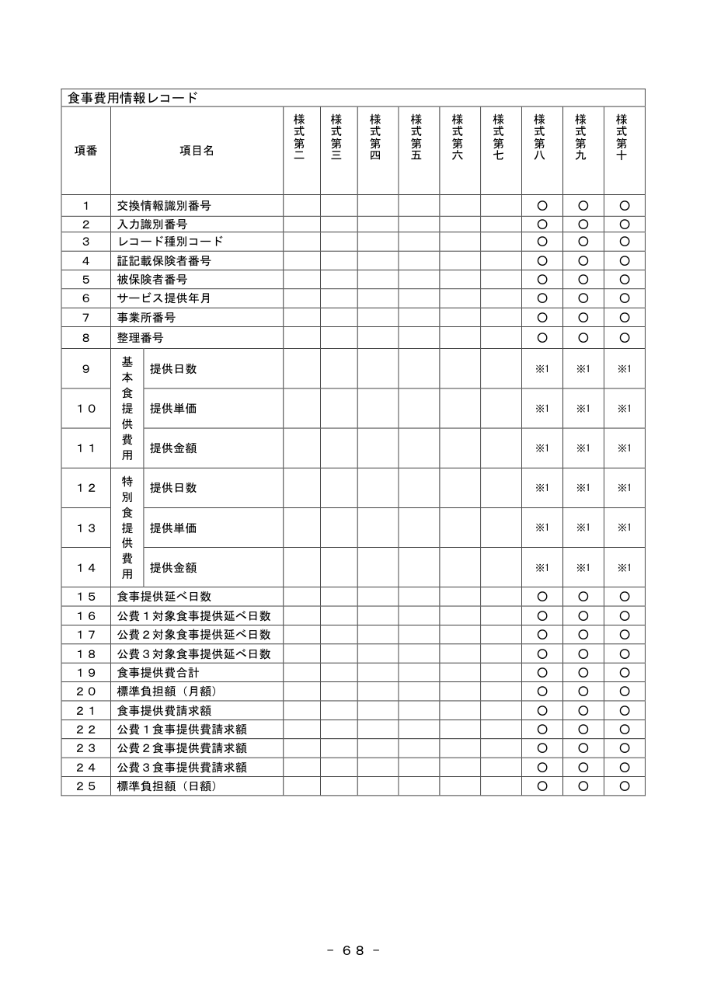
| 項番 | 項目名 | 属性 | 桁数 | 内容 | 必須 | 備考 | その他の列 |
|---|---|---|---|---|---|---|---|
| １ | 交換情報識別番号 | 様式第二:－ 様式第三:－ 様式第四:－ 様式第五:－ 様式第六:－ 様式第七:－ 様式第八:○ 様式第九:○ 様式第十:○ | |||||
| ２ | 入力識別番号 | 様式第二:－ 様式第三:－ 様式第四:－ 様式第五:－ 様式第六:－ 様式第七:－ 様式第八:○ 様式第九:○ 様式第十:○ | |||||
| ３ | レコード種別コード | 様式第二:－ 様式第三:－ 様式第四:－ 様式第五:－ 様式第六:－ 様式第七:－ 様式第八:○ 様式第九:○ 様式第十:○ | |||||
| ４ | 証記載保険者番号 | 様式第二:－ 様式第三:－ 様式第四:－ 様式第五:－ 様式第六:－ 様式第七:－ 様式第八:○ 様式第九:○ 様式第十:○ | |||||
| ５ | 被保険者番号 | 様式第二:－ 様式第三:－ 様式第四:－ 様式第五:－ 様式第六:－ 様式第七:－ 様式第八:○ 様式第九:○ 様式第十:○ | |||||
| ６ | サービス提供年月 | 様式第二:－ 様式第三:－ 様式第四:－ 様式第五:－ 様式第六:－ 様式第七:－ 様式第八:○ 様式第九:○ 様式第十:○ | |||||
| ７ | 事業所番号 | 様式第二:－ 様式第三:－ 様式第四:－ 様式第五:－ 様式第六:－ 様式第七:－ 様式第八:○ 様式第九:○ 様式第十:○ | |||||
| ８ | 整理番号 | 様式第二:－ 様式第三:－ 様式第四:－ 様式第五:－ 様式第六:－ 様式第七:－ 様式第八:○ 様式第九:○ 様式第十:○ | |||||
| ９ | 基本食提供費用 > 提供日数 | 様式第二:－ 様式第三:－ 様式第四:－ 様式第五:－ 様式第六:－ 様式第七:－ 様式第八:※1 様式第九:※1 様式第十:※1 | |||||
| １０ | 基本食提供費用 > 提供単価 | 様式第二:－ 様式第三:－ 様式第四:－ 様式第五:－ 様式第六:－ 様式第七:－ 様式第八:※1 様式第九:※1 様式第十:※1 | |||||
| １１ | 基本食提供費用 > 提供金額 | 様式第二:－ 様式第三:－ 様式第四:－ 様式第五:－ 様式第六:－ 様式第七:－ 様式第八:※1 様式第九:※1 様式第十:※1 | |||||
| １２ | 特別食提供費用 > 提供日数 | 様式第二:－ 様式第三:－ 様式第四:－ 様式第五:－ 様式第六:－ 様式第七:－ 様式第八:※1 様式第九:※1 様式第十:※1 | |||||
| １３ | 特別食提供費用 > 提供単価 | 様式第二:－ 様式第三:－ 様式第四:－ 様式第五:－ 様式第六:－ 様式第七:－ 様式第八:※1 様式第九:※1 様式第十:※1 | |||||
| １４ | 特別食提供費用 > 提供金額 | 様式第二:－ 様式第三:－ 様式第四:－ 様式第五:－ 様式第六:－ 様式第七:－ 様式第八:※1 様式第九:※1 様式第十:※1 | |||||
| １５ | 食事提供延べ日数 | 様式第二:－ 様式第三:－ 様式第四:－ 様式第五:－ 様式第六:－ 様式第七:－ 様式第八:○ 様式第九:○ 様式第十:○ | |||||
| １６ | 公費１対象食事提供延べ日数 | 様式第二:－ 様式第三:－ 様式第四:－ 様式第五:－ 様式第六:－ 様式第七:－ 様式第八:○ 様式第九:○ 様式第十:○ | |||||
| １７ | 公費２対象食事提供延べ日数 | 様式第二:－ 様式第三:－ 様式第四:－ 様式第五:－ 様式第六:－ 様式第七:－ 様式第八:○ 様式第九:○ 様式第十:○ | |||||
| １８ | 公費３対象食事提供延べ日数 | 様式第二:－ 様式第三:－ 様式第四:－ 様式第五:－ 様式第六:－ 様式第七:－ 様式第八:○ 様式第九:○ 様式第十:○ | |||||
| １９ | 食事提供費合計 | 様式第二:－ 様式第三:－ 様式第四:－ 様式第五:－ 様式第六:－ 様式第七:－ 様式第八:○ 様式第九:○ 様式第十:○ | |||||
| ２０ | 標準負担額（月額） | 様式第二:－ 様式第三:－ 様式第四:－ 様式第五:－ 様式第六:－ 様式第七:－ 様式第八:○ 様式第九:○ 様式第十:○ | |||||
| ２１ | 食事提供費請求額 | 様式第二:－ 様式第三:－ 様式第四:－ 様式第五:－ 様式第六:－ 様式第七:－ 様式第八:○ 様式第九:○ 様式第十:○ | |||||
| ２２ | 公費１食事提供費請求額 | 様式第二:－ 様式第三:－ 様式第四:－ 様式第五:－ 様式第六:－ 様式第七:－ 様式第八:○ 様式第九:○ 様式第十:○ | |||||
| ２３ | 公費２食事提供費請求額 | 様式第二:－ 様式第三:－ 様式第四:－ 様式第五:－ 様式第六:－ 様式第七:－ 様式第八:○ 様式第九:○ 様式第十:○ | |||||
| ２４ | 公費３食事提供費請求額 | 様式第二:－ 様式第三:－ 様式第四:－ 様式第五:－ 様式第六:－ 様式第七:－ 様式第八:○ 様式第九:○ 様式第十:○ | |||||
| ２５ | 標準負担額（日額） | 様式第二:－ 様式第三:－ 様式第四:－ 様式第五:－ 様式第六:－ 様式第七:－ 様式第八:○ 様式第九:○ 様式第十:○ |
| 項番 | 項目名 | 属性 | 桁数 | 内容 | 必須 | 備考 | その他の列 |
|---|---|---|---|---|---|---|---|
| 1 | 交換情報識別番号 | 様式第二:－ 様式第三:－ 様式第四:－ 様式第五:－ 様式第六:－ 様式第七:－ 様式第八:○ 様式第九:○ 様式第十:○ | |||||
| 2 | 入力識別番号 | 様式第二:－ 様式第三:－ 様式第四:－ 様式第五:－ 様式第六:－ 様式第七:－ 様式第八:○ 様式第九:○ 様式第十:○ | |||||
| 3 | レコード種別コード | 様式第二:－ 様式第三:－ 様式第四:－ 様式第五:－ 様式第六:－ 様式第七:－ 様式第八:○ 様式第九:○ 様式第十:○ | |||||
| 4 | 証記載保険者番号 | 様式第二:－ 様式第三:－ 様式第四:－ 様式第五:－ 様式第六:－ 様式第七:－ 様式第八:○ 様式第九:○ 様式第十:○ | |||||
| 5 | 被保険者番号 | 様式第二:－ 様式第三:－ 様式第四:－ 様式第五:－ 様式第六:－ 様式第七:－ 様式第八:○ 様式第九:○ 様式第十:○ | |||||
| 6 | サービス提供年月 | 様式第二:－ 様式第三:－ 様式第四:－ 様式第五:－ 様式第六:－ 様式第七:－ 様式第八:○ 様式第九:○ 様式第十:○ | |||||
| 7 | 事業所番号 | 様式第二:－ 様式第三:－ 様式第四:－ 様式第五:－ 様式第六:－ 様式第七:－ 様式第八:○ 様式第九:○ 様式第十:○ | |||||
| 8 | 整理番号 | 様式第二:－ 様式第三:－ 様式第四:－ 様式第五:－ 様式第六:－ 様式第七:－ 様式第八:○ 様式第九:○ 様式第十:○ | |||||
| 9 | 基本食提供費用 > 提供日数 | 様式第二:－ 様式第三:－ 様式第四:－ 様式第五:－ 様式第六:－ 様式第七:－ 様式第八:※1 様式第九:※1 様式第十:※1 | |||||
| 10 | 基本食提供費用 > 提供単価 | 様式第二:－ 様式第三:－ 様式第四:－ 様式第五:－ 様式第六:－ 様式第七:－ 様式第八:※1 様式第九:※1 様式第十:※1 | |||||
| 11 | 基本食提供費用 > 提供金額 | 様式第二:－ 様式第三:－ 様式第四:－ 様式第五:－ 様式第六:－ 様式第七:－ 様式第八:※1 様式第九:※1 様式第十:※1 | |||||
| 12 | 特別食提供費用 > 提供日数 | 様式第二:－ 様式第三:－ 様式第四:－ 様式第五:－ 様式第六:－ 様式第七:－ 様式第八:※1 様式第九:※1 様式第十:※1 | |||||
| 13 | 特別食提供費用 > 提供単価 | 様式第二:－ 様式第三:－ 様式第四:－ 様式第五:－ 様式第六:－ 様式第七:－ 様式第八:※1 様式第九:※1 様式第十:※1 | |||||
| 14 | 特別食提供費用 > 提供金額 | 様式第二:－ 様式第三:－ 様式第四:－ 様式第五:－ 様式第六:－ 様式第七:－ 様式第八:※1 様式第九:※1 様式第十:※1 | |||||
| 15 | 食事提供延べ日数 | 様式第二:－ 様式第三:－ 様式第四:－ 様式第五:－ 様式第六:－ 様式第七:－ 様式第八:○ 様式第九:○ 様式第十:○ | |||||
| 16 | 公費1対象食事提供延べ日数 | 様式第二:－ 様式第三:－ 様式第四:－ 様式第五:－ 様式第六:－ 様式第七:－ 様式第八:○ 様式第九:○ 様式第十:○ | |||||
| 17 | 公費2対象食事提供延べ日数 | 様式第二:－ 様式第三:－ 様式第四:－ 様式第五:－ 様式第六:－ 様式第七:－ 様式第八:○ 様式第九:○ 様式第十:○ | |||||
| 18 | 公費3対象食事提供延べ日数 | 様式第二:－ 様式第三:－ 様式第四:－ 様式第五:－ 様式第六:－ 様式第七:－ 様式第八:○ 様式第九:○ 様式第十:○ | |||||
| 19 | 食事提供費合計 | 様式第二:－ 様式第三:－ 様式第四:－ 様式第五:－ 様式第六:－ 様式第七:－ 様式第八:○ 様式第九:○ 様式第十:○ | |||||
| 20 | 標準負担額（月額） | 様式第二:－ 様式第三:－ 様式第四:－ 様式第五:－ 様式第六:－ 様式第七:－ 様式第八:○ 様式第九:○ 様式第十:○ | |||||
| 21 | 食事提供費請求額 | 様式第二:－ 様式第三:－ 様式第四:－ 様式第五:－ 様式第六:－ 様式第七:－ 様式第八:○ 様式第九:○ 様式第十:○ | |||||
| 22 | 公費1食事提供費請求額 | 様式第二:－ 様式第三:－ 様式第四:－ 様式第五:－ 様式第六:－ 様式第七:－ 様式第八:○ 様式第九:○ 様式第十:○ | |||||
| 23 | 公費2食事提供費請求額 | 様式第二:－ 様式第三:－ 様式第四:－ 様式第五:－ 様式第六:－ 様式第七:－ 様式第八:○ 様式第九:○ 様式第十:○ | |||||
| 24 | 公費3食事提供費請求額 | 様式第二:－ 様式第三:－ 様式第四:－ 様式第五:－ 様式第六:－ 様式第七:－ 様式第八:○ 様式第九:○ 様式第十:○ | |||||
| 25 | 標準負担額（日額） | 様式第二:－ 様式第三:－ 様式第四:－ 様式第五:－ 様式第六:－ 様式第七:－ 様式第八:○ 様式第九:○ 様式第十:○ |
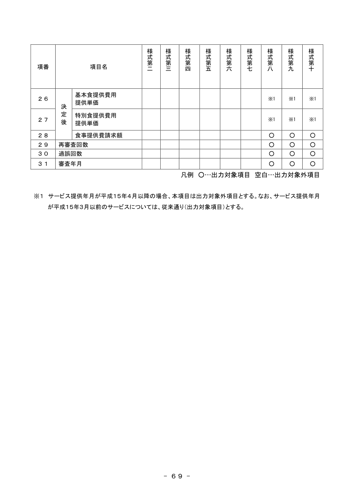
| 項番 | 項目名 | 属性 | 桁数 | 内容 | 必須 | 備考 | その他の列 |
|---|---|---|---|---|---|---|---|
| ２６ | 決定後 > 基本食提供費用提供単価 | 様式第二:－ 様式第三:－ 様式第四:－ 様式第五:－ 様式第六:－ 様式第七:－ 様式第八:※1 様式第九:※1 様式第十:※1 | |||||
| ２７ | 決定後 > 特別食提供費用提供単価 | 様式第二:－ 様式第三:－ 様式第四:－ 様式第五:－ 様式第六:－ 様式第七:－ 様式第八:※1 様式第九:※1 様式第十:※1 | |||||
| ２８ | 決定後 > 食事提供費請求額 | 様式第二:－ 様式第三:－ 様式第四:－ 様式第五:－ 様式第六:－ 様式第七:－ 様式第八:○ 様式第九:○ 様式第十:○ | |||||
| ２９ | 再審査回数 | 様式第二:－ 様式第三:－ 様式第四:－ 様式第五:－ 様式第六:－ 様式第七:－ 様式第八:○ 様式第九:○ 様式第十:○ | |||||
| ３０ | 過誤回数 | 様式第二:－ 様式第三:－ 様式第四:－ 様式第五:－ 様式第六:－ 様式第七:－ 様式第八:○ 様式第九:○ 様式第十:○ | |||||
| ３１ | 審査年月 | 様式第二:－ 様式第三:－ 様式第四:－ 様式第五:－ 様式第六:－ 様式第七:－ 様式第八:○ 様式第九:○ 様式第十:○ |
| 項番 | 項目名 | 属性 | 桁数 | 内容 | 必須 | 備考 | その他の列 |
|---|---|---|---|---|---|---|---|
| ２６ | 決定後 > 基本食提供費用提供単価 | 様式第二:－ 様式第三:－ 様式第四:－ 様式第五:－ 様式第六:－ 様式第七:－ 様式第八:※1 様式第九:※1 様式第十:※1 | |||||
| ２７ | 決定後 > 特別食提供費用提供単価 | 様式第二:－ 様式第三:－ 様式第四:－ 様式第五:－ 様式第六:－ 様式第七:－ 様式第八:※1 様式第九:※1 様式第十:※1 | |||||
| ２８ | 決定後 > 食事提供費請求額 | 様式第二:－ 様式第三:－ 様式第四:－ 様式第五:－ 様式第六:－ 様式第七:－ 様式第八:○ 様式第九:○ 様式第十:○ | |||||
| ２９ | 再審査回数 | 様式第二:－ 様式第三:－ 様式第四:－ 様式第五:－ 様式第六:－ 様式第七:－ 様式第八:○ 様式第九:○ 様式第十:○ | |||||
| ３０ | 過誤回数 | 様式第二:－ 様式第三:－ 様式第四:－ 様式第五:－ 様式第六:－ 様式第七:－ 様式第八:○ 様式第九:○ 様式第十:○ | |||||
| ３１ | 審査年月 | 様式第二:－ 様式第三:－ 様式第四:－ 様式第五:－ 様式第六:－ 様式第七:－ 様式第八:○ 様式第九:○ 様式第十:○ |
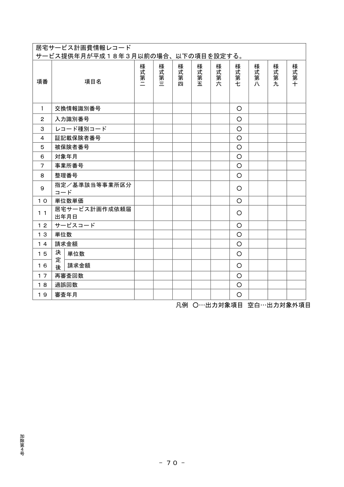
| 項番 | 項目名 | 属性 | 桁数 | 内容 | 必須 | 備考 | その他の列 |
|---|---|---|---|---|---|---|---|
| １ | 交換情報識別番号 | 様式第二: － 様式第三: － 様式第四: － 様式第五: － 様式第六: － 様式第七: ○ 様式第八: － 様式第九: － 様式第十: － | |||||
| ２ | 入力識別番号 | 様式第二: － 様式第三: － 様式第四: － 様式第五: － 様式第六: － 様式第七: ○ 様式第八: － 様式第九: － 様式第十: － | |||||
| ３ | レコード種別コード | 様式第二: － 様式第三: － 様式第四: － 様式第五: － 様式第六: － 様式第七: ○ 様式第八: － 様式第九: － 様式第十: － | |||||
| ４ | 証記載保険者番号 | 様式第二: － 様式第三: － 様式第四: － 様式第五: － 様式第六: － 様式第七: ○ 様式第八: － 様式第九: － 様式第十: － | |||||
| ５ | 被保険者番号 | 様式第二: － 様式第三: － 様式第四: － 様式第五: － 様式第六: － 様式第七: ○ 様式第八: － 様式第九: － 様式第十: － | |||||
| ６ | 対象年月 | 様式第二: － 様式第三: － 様式第四: － 様式第五: － 様式第六: － 様式第七: ○ 様式第八: － 様式第九: － 様式第十: － | |||||
| ７ | 事業所番号 | 様式第二: － 様式第三: － 様式第四: － 様式第五: － 様式第六: － 様式第七: ○ 様式第八: － 様式第九: － 様式第十: － | |||||
| ８ | 整理番号 | 様式第二: － 様式第三: － 様式第四: － 様式第五: － 様式第六: － 様式第七: ○ 様式第八: － 様式第九: － 様式第十: － | |||||
| ９ | 指定／基準該当等事業所区分コード | 様式第二: － 様式第三: － 様式第四: － 様式第五: － 様式第六: － 様式第七: ○ 様式第八: － 様式第九: － 様式第十: － | |||||
| １０ | 単位数単価 | 様式第二: － 様式第三: － 様式第四: － 様式第五: － 様式第六: － 様式第七: ○ 様式第八: － 様式第九: － 様式第十: － | |||||
| １１ | 居宅サービス計画作成依頼届出年月日 | 様式第二: － 様式第三: － 様式第四: － 様式第五: － 様式第六: － 様式第七: ○ 様式第八: － 様式第九: － 様式第十: － | |||||
| １２ | サービスコード | 様式第二: － 様式第三: － 様式第四: － 様式第五: － 様式第六: － 様式第七: ○ 様式第八: － 様式第九: － 様式第十: － | |||||
| １３ | 単位数 | 様式第二: － 様式第三: － 様式第四: － 様式第五: － 様式第六: － 様式第七: ○ 様式第八: － 様式第九: － 様式第十: － | |||||
| １４ | 請求金額 | 様式第二: － 様式第三: － 様式第四: － 様式第五: － 様式第六: － 様式第七: ○ 様式第八: － 様式第九: － 様式第十: － | |||||
| １５ | 決定後 > 単位数 | 様式第二: － 様式第三: － 様式第四: － 様式第五: － 様式第六: － 様式第七: ○ 様式第八: － 様式第九: － 様式第十: － | |||||
| １６ | 決定後 > 請求金額 | 様式第二: － 様式第三: － 様式第四: － 様式第五: － 様式第六: － 様式第七: ○ 様式第八: － 様式第九: － 様式第十: － | |||||
| １７ | 再審査回数 | 様式第二: － 様式第三: － 様式第四: － 様式第五: － 様式第六: － 様式第七: ○ 様式第八: － 様式第九: － 様式第十: － | |||||
| １８ | 過誤回数 | 様式第二: － 様式第三: － 様式第四: － 様式第五: － 様式第六: － 様式第七: ○ 様式第八: － 様式第九: － 様式第十: － | |||||
| １９ | 審査年月 | 様式第二: － 様式第三: － 様式第四: － 様式第五: － 様式第六: － 様式第七: ○ 様式第八: － 様式第九: － 様式第十: － |
| 項番 | 項目名 | 属性 | 桁数 | 内容 | 必須 | 備考 | その他の列 |
|---|---|---|---|---|---|---|---|
| １ | 交換情報識別番号 | 様式第二:－ 様式第三:－ 様式第四:－ 様式第五:－ 様式第六:－ 様式第七:○ 様式第八:－ 様式第九:－ 様式第十:－ | |||||
| ２ | 入力識別番号 | 様式第二:－ 様式第三:－ 様式第四:－ 様式第五:－ 様式第六:－ 様式第七:○ 様式第八:－ 様式第九:－ 様式第十:－ | |||||
| ３ | レコード種別コード | 様式第二:－ 様式第三:－ 様式第四:－ 様式第五:－ 様式第六:－ 様式第七:○ 様式第八:－ 様式第九:－ 様式第十:－ | |||||
| ４ | 証記載保険者番号 | 様式第二:－ 様式第三:－ 様式第四:－ 様式第五:－ 様式第六:－ 様式第七:○ 様式第八:－ 様式第九:－ 様式第十:－ | |||||
| ５ | 被保険者番号 | 様式第二:－ 様式第三:－ 様式第四:－ 様式第五:－ 様式第六:－ 様式第七:○ 様式第八:－ 様式第九:－ 様式第十:－ | |||||
| ６ | 対象年月 | 様式第二:－ 様式第三:－ 様式第四:－ 様式第五:－ 様式第六:－ 様式第七:○ 様式第八:－ 様式第九:－ 様式第十:－ | |||||
| ７ | 事業所番号 | 様式第二:－ 様式第三:－ 様式第四:－ 様式第五:－ 様式第六:－ 様式第七:○ 様式第八:－ 様式第九:－ 様式第十:－ | |||||
| ８ | 整理番号 | 様式第二:－ 様式第三:－ 様式第四:－ 様式第五:－ 様式第六:－ 様式第七:○ 様式第八:－ 様式第九:－ 様式第十:－ | |||||
| ９ | 指定／基準該当等事業所区分コード | 様式第二:－ 様式第三:－ 様式第四:－ 様式第五:－ 様式第六:－ 様式第七:○ 様式第八:－ 様式第九:－ 様式第十:－ | |||||
| １０ | 単位数単価 | 様式第二:－ 様式第三:－ 様式第四:－ 様式第五:－ 様式第六:－ 様式第七:○ 様式第八:－ 様式第九:－ 様式第十:－ | |||||
| １１ | 居宅サービス計画作成依頼届出年月日 | 様式第二:－ 様式第三:－ 様式第四:－ 様式第五:－ 様式第六:－ 様式第七:○ 様式第八:－ 様式第九:－ 様式第十:－ | |||||
| １２ | サービスコード | 様式第二:－ 様式第三:－ 様式第四:－ 様式第五:－ 様式第六:－ 様式第七:○ 様式第八:－ 様式第九:－ 様式第十:－ | |||||
| １３ | 単位数 | 様式第二:－ 様式第三:－ 様式第四:－ 様式第五:－ 様式第六:－ 様式第七:○ 様式第八:－ 様式第九:－ 様式第十:－ | |||||
| １４ | 請求金額 | 様式第二:－ 様式第三:－ 様式第四:－ 様式第五:－ 様式第六:－ 様式第七:○ 様式第八:－ 様式第九:－ 様式第十:－ | |||||
| １５ | 決定後 > 単位数 | 様式第二:－ 様式第三:－ 様式第四:－ 様式第五:－ 様式第六:－ 様式第七:○ 様式第八:－ 様式第九:－ 様式第十:－ | |||||
| １６ | 決定後 > 請求金額 | 様式第二:－ 様式第三:－ 様式第四:－ 様式第五:－ 様式第六:－ 様式第七:○ 様式第八:－ 様式第九:－ 様式第十:－ | |||||
| １７ | 再審査回数 | 様式第二:－ 様式第三:－ 様式第四:－ 様式第五:－ 様式第六:－ 様式第七:○ 様式第八:－ 様式第九:－ 様式第十:－ | |||||
| １８ | 過誤回数 | 様式第二:－ 様式第三:－ 様式第四:－ 様式第五:－ 様式第六:－ 様式第七:○ 様式第八:－ 様式第九:－ 様式第十:－ | |||||
| １９ | 審査年月 | 様式第二:－ 様式第三:－ 様式第四:－ 様式第五:－ 様式第六:－ 様式第七:○ 様式第八:－ 様式第九:－ 様式第十:－ |
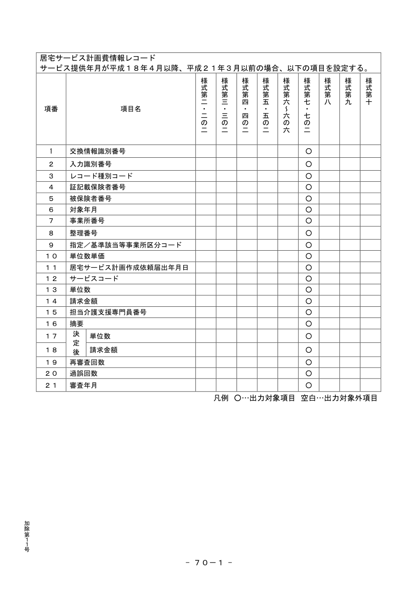
| 項番 | 項目名 | 属性 | 桁数 | 内容 | 必須 | 備考 | その他の列 |
|---|---|---|---|---|---|---|---|
| １ | 交換情報識別番号 | 様式第二・二の二:－ 様式第三・三の二:－ 様式第四・四の二:－ 様式第五・五の二:－ 様式第六～六の六:－ 様式第七・七の二:○ 様式第八:－ 様式第九:－ 様式第十:－ | |||||
| ２ | 入力識別番号 | 様式第二・二の二:－ 様式第三・三の二:－ 様式第四・四の二:－ 様式第五・五の二:－ 様式第六～六の六:－ 様式第七・七の二:○ 様式第八:－ 様式第九:－ 様式第十:－ | |||||
| ３ | レコード種別コード | 様式第二・二の二:－ 様式第三・三の二:－ 様式第四・四の二:－ 様式第五・五の二:－ 様式第六～六の六:－ 様式第七・七の二:○ 様式第八:－ 様式第九:－ 様式第十:－ | |||||
| ４ | 証記載保険者番号 | 様式第二・二の二:－ 様式第三・三の二:－ 様式第四・四の二:－ 様式第五・五の二:－ 様式第六～六の六:－ 様式第七・七の二:○ 様式第八:－ 様式第九:－ 様式第十:－ | |||||
| ５ | 被保険者番号 | 様式第二・二の二:－ 様式第三・三の二:－ 様式第四・四の二:－ 様式第五・五の二:－ 様式第六～六の六:－ 様式第七・七の二:○ 様式第八:－ 様式第九:－ 様式第十:－ | |||||
| ６ | 対象年月 | 様式第二・二の二:－ 様式第三・三の二:－ 様式第四・四の二:－ 様式第五・五の二:－ 様式第六～六の六:－ 様式第七・七の二:○ 様式第八:－ 様式第九:－ 様式第十:－ | |||||
| ７ | 事業所番号 | 様式第二・二の二:－ 様式第三・三の二:－ 様式第四・四の二:－ 様式第五・五の二:－ 様式第六～六の六:－ 様式第七・七の二:○ 様式第八:－ 様式第九:－ 様式第十:－ | |||||
| ８ | 整理番号 | 様式第二・二の二:－ 様式第三・三の二:－ 様式第四・四の二:－ 様式第五・五の二:－ 様式第六～六の六:－ 様式第七・七の二:○ 様式第八:－ 様式第九:－ 様式第十:－ | |||||
| ９ | 指定／基準該当等事業所区分コード | 様式第二・二の二:－ 様式第三・三の二:－ 様式第四・四の二:－ 様式第五・五の二:－ 様式第六～六の六:－ 様式第七・七の二:○ 様式第八:－ 様式第九:－ 様式第十:－ | |||||
| １０ | 単位数単価 | 様式第二・二の二:－ 様式第三・三の二:－ 様式第四・四の二:－ 様式第五・五の二:－ 様式第六～六の六:－ 様式第七・七の二:○ 様式第八:－ 様式第九:－ 様式第十:－ | |||||
| １１ | 居宅サービス計画作成依頼届出年月日 | 様式第二・二の二:－ 様式第三・三の二:－ 様式第四・四の二:－ 様式第五・五の二:－ 様式第六～六の六:－ 様式第七・七の二:○ 様式第八:－ 様式第九:－ 様式第十:－ | |||||
| １２ | サービスコード | 様式第二・二の二:－ 様式第三・三の二:－ 様式第四・四の二:－ 様式第五・五の二:－ 様式第六～六の六:－ 様式第七・七の二:○ 様式第八:－ 様式第九:－ 様式第十:－ | |||||
| １３ | 単位数 | 様式第二・二の二:－ 様式第三・三の二:－ 様式第四・四の二:－ 様式第五・五の二:－ 様式第六～六の六:－ 様式第七・七の二:○ 様式第八:－ 様式第九:－ 様式第十:－ | |||||
| １４ | 請求金額 | 様式第二・二の二:－ 様式第三・三の二:－ 様式第四・四の二:－ 様式第五・五の二:－ 様式第六～六の六:－ 様式第七・七の二:○ 様式第八:－ 様式第九:－ 様式第十:－ | |||||
| １５ | 担当介護支援専門員番号 | 様式第二・二の二:－ 様式第三・三の二:－ 様式第四・四の二:－ 様式第五・五の二:－ 様式第六～六の六:－ 様式第七・七の二:○ 様式第八:－ 様式第九:－ 様式第十:－ | |||||
| １６ | 摘要 | 様式第二・二の二:－ 様式第三・三の二:－ 様式第四・四の二:－ 様式第五・五の二:－ 様式第六～六の六:－ 様式第七・七の二:○ 様式第八:－ 様式第九:－ 様式第十:－ | |||||
| １７ | 決定後 > 単位数 | 様式第二・二の二:－ 様式第三・三の二:－ 様式第四・四の二:－ 様式第五・五の二:－ 様式第六～六の六:－ 様式第七・七の二:○ 様式第八:－ 様式第九:－ 様式第十:－ | |||||
| １８ | 決定後 > 請求金額 | 様式第二・二の二:－ 様式第三・三の二:－ 様式第四・四の二:－ 様式第五・五の二:－ 様式第六～六の六:－ 様式第七・七の二:○ 様式第八:－ 様式第九:－ 様式第十:－ | |||||
| １９ | 再審査回数 | 様式第二・二の二:－ 様式第三・三の二:－ 様式第四・四の二:－ 様式第五・五の二:－ 様式第六～六の六:－ 様式第七・七の二:○ 様式第八:－ 様式第九:－ 様式第十:－ | |||||
| ２０ | 過誤回数 | 様式第二・二の二:－ 様式第三・三の二:－ 様式第四・四の二:－ 様式第五・五の二:－ 様式第六～六の六:－ 様式第七・七の二:○ 様式第八:－ 様式第九:－ 様式第十:－ | |||||
| ２１ | 審査年月 | 様式第二・二の二:－ 様式第三・三の二:－ 様式第四・四の二:－ 様式第五・五の二:－ 様式第六～六の六:－ 様式第七・七の二:○ 様式第八:－ 様式第九:－ 様式第十:－ |
| 項番 | 項目名 | 属性 | 桁数 | 内容 | 必須 | 備考 | その他の列 |
|---|---|---|---|---|---|---|---|
| 1 | 交換情報識別番号 | 様式第二・二の二:－ 様式第三・三の二:－ 様式第四・四の二:－ 様式第五・五の二:－ 様式第六～六の六:－ 様式第七・七の二:○ 様式第八:－ 様式第九:－ 様式第十:－ | |||||
| 2 | 入力識別番号 | 様式第二・二の二:－ 様式第三・三の二:－ 様式第四・四の二:－ 様式第五・五の二:－ 様式第六～六の六:－ 様式第七・七の二:○ 様式第八:－ 様式第九:－ 様式第十:－ | |||||
| 3 | レコード種別コード | 様式第二・二の二:－ 様式第三・三の二:－ 様式第四・四の二:－ 様式第五・五の二:－ 様式第六～六の六:－ 様式第七・七の二:○ 様式第八:－ 様式第九:－ 様式第十:－ | |||||
| 4 | 証記載保険者番号 | 様式第二・二の二:－ 様式第三・三の二:－ 様式第四・四の二:－ 様式第五・五の二:－ 様式第六～六の六:－ 様式第七・七の二:○ 様式第八:－ 様式第九:－ 様式第十:－ | |||||
| 5 | 被保険者番号 | 様式第二・二の二:－ 様式第三・三の二:－ 様式第四・四の二:－ 様式第五・五の二:－ 様式第六～六の六:－ 様式第七・七の二:○ 様式第八:－ 様式第九:－ 様式第十:－ | |||||
| 6 | 対象年月 | 様式第二・二の二:－ 様式第三・三の二:－ 様式第四・四の二:－ 様式第五・五の二:－ 様式第六～六の六:－ 様式第七・七の二:○ 様式第八:－ 様式第九:－ 様式第十:－ | |||||
| 7 | 事業所番号 | 様式第二・二の二:－ 様式第三・三の二:－ 様式第四・四の二:－ 様式第五・五の二:－ 様式第六～六の六:－ 様式第七・七の二:○ 様式第八:－ 様式第九:－ 様式第十:－ | |||||
| 8 | 整理番号 | 様式第二・二の二:－ 様式第三・三の二:－ 様式第四・四の二:－ 様式第五・五の二:－ 様式第六～六の六:－ 様式第七・七の二:○ 様式第八:－ 様式第九:－ 様式第十:－ | |||||
| 9 | 指定／基準該当等事業所区分コード | 様式第二・二の二:－ 様式第三・三の二:－ 様式第四・四の二:－ 様式第五・五の二:－ 様式第六～六の六:－ 様式第七・七の二:○ 様式第八:－ 様式第九:－ 様式第十:－ | |||||
| 10 | 単位数単価 | 様式第二・二の二:－ 様式第三・三の二:－ 様式第四・四の二:－ 様式第五・五の二:－ 様式第六～六の六:－ 様式第七・七の二:○ 様式第八:－ 様式第九:－ 様式第十:－ | |||||
| 11 | 居宅サービス計画作成依頼届出年月日 | 様式第二・二の二:－ 様式第三・三の二:－ 様式第四・四の二:－ 様式第五・五の二:－ 様式第六～六の六:－ 様式第七・七の二:○ 様式第八:－ 様式第九:－ 様式第十:－ | |||||
| 12 | サービスコード | 様式第二・二の二:－ 様式第三・三の二:－ 様式第四・四の二:－ 様式第五・五の二:－ 様式第六～六の六:－ 様式第七・七の二:○ 様式第八:－ 様式第九:－ 様式第十:－ | |||||
| 13 | 単位数 | 様式第二・二の二:－ 様式第三・三の二:－ 様式第四・四の二:－ 様式第五・五の二:－ 様式第六～六の六:－ 様式第七・七の二:○ 様式第八:－ 様式第九:－ 様式第十:－ | |||||
| 14 | 請求金額 | 様式第二・二の二:－ 様式第三・三の二:－ 様式第四・四の二:－ 様式第五・五の二:－ 様式第六～六の六:－ 様式第七・七の二:○ 様式第八:－ 様式第九:－ 様式第十:－ | |||||
| 15 | 担当介護支援専門員番号 | 様式第二・二の二:－ 様式第三・三の二:－ 様式第四・四の二:－ 様式第五・五の二:－ 様式第六～六の六:－ 様式第七・七の二:○ 様式第八:－ 様式第九:－ 様式第十:－ | |||||
| 16 | 摘要 | 様式第二・二の二:－ 様式第三・三の二:－ 様式第四・四の二:－ 様式第五・五の二:－ 様式第六～六の六:－ 様式第七・七の二:○ 様式第八:－ 様式第九:－ 様式第十:－ | |||||
| 17 | 決定後 > 単位数 | 様式第二・二の二:－ 様式第三・三の二:－ 様式第四・四の二:－ 様式第五・五の二:－ 様式第六～六の六:－ 様式第七・七の二:○ 様式第八:－ 様式第九:－ 様式第十:－ | |||||
| 18 | 決定後 > 請求金額 | 様式第二・二の二:－ 様式第三・三の二:－ 様式第四・四の二:－ 様式第五・五の二:－ 様式第六～六の六:－ 様式第七・七の二:○ 様式第八:－ 様式第九:－ 様式第十:－ | |||||
| 19 | 再審査回数 | 様式第二・二の二:－ 様式第三・三の二:－ 様式第四・四の二:－ 様式第五・五の二:－ 様式第六～六の六:－ 様式第七・七の二:○ 様式第八:－ 様式第九:－ 様式第十:－ | |||||
| 20 | 過誤回数 | 様式第二・二の二:－ 様式第三・三の二:－ 様式第四・四の二:－ 様式第五・五の二:－ 様式第六～六の六:－ 様式第七・七の二:○ 様式第八:－ 様式第九:－ 様式第十:－ | |||||
| 21 | 審査年月 | 様式第二・二の二:－ 様式第三・三の二:－ 様式第四・四の二:－ 様式第五・五の二:－ 様式第六～六の六:－ 様式第七・七の二:○ 様式第八:－ 様式第九:－ 様式第十:－ |
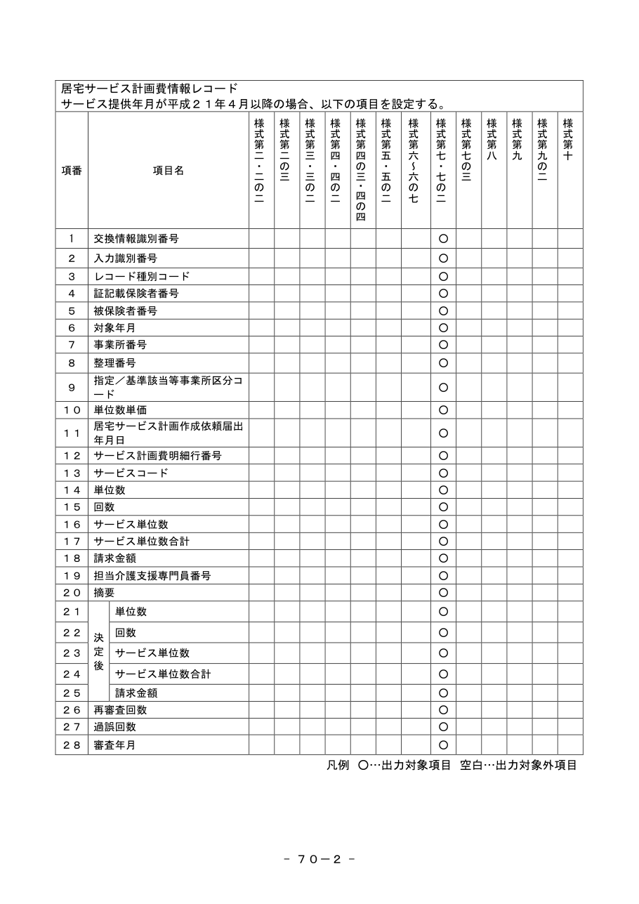
| 項番 | 項目名 | 属性 | 桁数 | 内容 | 必須 | 備考 | その他の列 |
|---|---|---|---|---|---|---|---|
| １ | 交換情報識別番号 | 様式第二・二の二:－ 様式第二の三:－ 様式第三・三の二:－ 様式第四・四の二:－ 様式第四の三・四の四:－ 様式第五・五の二:－ 様式第六～六の七:－ 様式第七・七の二:○ 様式第七の三:－ 様式第八:－ 様式第九:－ 様式第九の二:－ 様式第十:－ | |||||
| ２ | 入力識別番号 | 様式第二・二の二:－ 様式第二の三:－ 様式第三・三の二:－ 様式第四・四の二:－ 様式第四の三・四の四:－ 様式第五・五の二:－ 様式第六～六の七:－ 様式第七・七の二:○ 様式第七の三:－ 様式第八:－ 様式第九:－ 様式第九の二:－ 様式第十:－ | |||||
| ３ | レコード種別コード | 様式第二・二の二:－ 様式第二の三:－ 様式第三・三の二:－ 様式第四・四の二:－ 様式第四の三・四の四:－ 様式第五・五の二:－ 様式第六～六の七:－ 様式第七・七の二:○ 様式第七の三:－ 様式第八:－ 様式第九:－ 様式第九の二:－ 様式第十:－ | |||||
| ４ | 証記載保険者番号 | 様式第二・二の二:－ 様式第二の三:－ 様式第三・三の二:－ 様式第四・四の二:－ 様式第四の三・四の四:－ 様式第五・五の二:－ 様式第六～六の七:－ 様式第七・七の二:○ 様式第七の三:－ 様式第八:－ 様式第九:－ 様式第九の二:－ 様式第十:－ | |||||
| ５ | 被保険者番号 | 様式第二・二の二:－ 様式第二の三:－ 様式第三・三の二:－ 様式第四・四の二:－ 様式第四の三・四の四:－ 様式第五・五の二:－ 様式第六～六の七:－ 様式第七・七の二:○ 様式第七の三:－ 様式第八:－ 様式第九:－ 様式第九の二:－ 様式第十:－ | |||||
| ６ | 対象年月 | 様式第二・二の二:－ 様式第二の三:－ 様式第三・三の二:－ 様式第四・四の二:－ 様式第四の三・四の四:－ 様式第五・五の二:－ 様式第六～六の七:－ 様式第七・七の二:○ 様式第七の三:－ 様式第八:－ 様式第九:－ 様式第九の二:－ 様式第十:－ | |||||
| ７ | 事業所番号 | 様式第二・二の二:－ 様式第二の三:－ 様式第三・三の二:－ 様式第四・四の二:－ 様式第四の三・四の四:－ 様式第五・五の二:－ 様式第六～六の七:－ 様式第七・七の二:○ 様式第七の三:－ 様式第八:－ 様式第九:－ 様式第九の二:－ 様式第十:－ | |||||
| ８ | 整理番号 | 様式第二・二の二:－ 様式第二の三:－ 様式第三・三の二:－ 様式第四・四の二:－ 様式第四の三・四の四:－ 様式第五・五の二:－ 様式第六～六の七:－ 様式第七・七の二:○ 様式第七の三:－ 様式第八:－ 様式第九:－ 様式第九の二:－ 様式第十:－ | |||||
| ９ | 指定／基準該当等事業所区分コード | 様式第二・二の二:－ 様式第二の三:－ 様式第三・三の二:－ 様式第四・四の二:－ 様式第四の三・四の四:－ 様式第五・五の二:－ 様式第六～六の七:－ 様式第七・七の二:○ 様式第七の三:－ 様式第八:－ 様式第九:－ 様式第九の二:－ 様式第十:－ | |||||
| １０ | 単位数単価 | 様式第二・二の二:－ 様式第二の三:－ 様式第三・三の二:－ 様式第四・四の二:－ 様式第四の三・四の四:－ 様式第五・五の二:－ 様式第六～六の七:－ 様式第七・七の二:○ 様式第七の三:－ 様式第八:－ 様式第九:－ 様式第九の二:－ 様式第十:－ | |||||
| １１ | 居宅サービス計画作成依頼届出年月日 | 様式第二・二の二:－ 様式第二の三:－ 様式第三・三の二:－ 様式第四・四の二:－ 様式第四の三・四の四:－ 様式第五・五の二:－ 様式第六～六の七:－ 様式第七・七の二:○ 様式第七の三:－ 様式第八:－ 様式第九:－ 様式第九の二:－ 様式第十:－ | |||||
| １２ | サービス計画費明細行番号 | 様式第二・二の二:－ 様式第二の三:－ 様式第三・三の二:－ 様式第四・四の二:－ 様式第四の三・四の四:－ 様式第五・五の二:－ 様式第六～六の七:－ 様式第七・七の二:○ 様式第七の三:－ 様式第八:－ 様式第九:－ 様式第九の二:－ 様式第十:－ | |||||
| １３ | サービスコード | 様式第二・二の二:－ 様式第二の三:－ 様式第三・三の二:－ 様式第四・四の二:－ 様式第四の三・四の四:－ 様式第五・五の二:－ 様式第六～六の七:－ 様式第七・七の二:○ 様式第七の三:－ 様式第八:－ 様式第九:－ 様式第九の二:－ 様式第十:－ | |||||
| １４ | 単位数 | 様式第二・二の二:－ 様式第二の三:－ 様式第三・三の二:－ 様式第四・四の二:－ 様式第四の三・四の四:－ 様式第五・五の二:－ 様式第六～六の七:－ 様式第七・七の二:○ 様式第七の三:－ 様式第八:－ 様式第九:－ 様式第九の二:－ 様式第十:－ | |||||
| １５ | 回数 | 様式第二・二の二:－ 様式第二の三:－ 様式第三・三の二:－ 様式第四・四の二:－ 様式第四の三・四の四:－ 様式第五・五の二:－ 様式第六～六の七:－ 様式第七・七の二:○ 様式第七の三:－ 様式第八:－ 様式第九:－ 様式第九の二:－ 様式第十:－ | |||||
| １６ | サービス単位数 | 様式第二・二の二:－ 様式第二の三:－ 様式第三・三の二:－ 様式第四・四の二:－ 様式第四の三・四の四:－ 様式第五・五の二:－ 様式第六～六の七:－ 様式第七・七の二:○ 様式第七の三:－ 様式第八:－ 様式第九:－ 様式第九の二:－ 様式第十:－ | |||||
| １７ | サービス単位数合計 | 様式第二・二の二:－ 様式第二の三:－ 様式第三・三の二:－ 様式第四・四の二:－ 様式第四の三・四の四:－ 様式第五・五の二:－ 様式第六～六の七:－ 様式第七・七の二:○ 様式第七の三:－ 様式第八:－ 様式第九:－ 様式第九の二:－ 様式第十:－ | |||||
| １８ | 請求金額 | 様式第二・二の二:－ 様式第二の三:－ 様式第三・三の二:－ 様式第四・四の二:－ 様式第四の三・四の四:－ 様式第五・五の二:－ 様式第六～六の七:－ 様式第七・七の二:○ 様式第七の三:－ 様式第八:－ 様式第九:－ 様式第九の二:－ 様式第十:－ | |||||
| １９ | 担当介護支援専門員番号 | 様式第二・二の二:－ 様式第二の三:－ 様式第三・三の二:－ 様式第四・四の二:－ 様式第四の三・四の四:－ 様式第五・五の二:－ 様式第六～六の七:－ 様式第七・七の二:○ 様式第七の三:－ 様式第八:－ 様式第九:－ 様式第九の二:－ 様式第十:－ | |||||
| ２０ | 摘要 | 様式第二・二の二:－ 様式第二の三:－ 様式第三・三の二:－ 様式第四・四の二:－ 様式第四の三・四の四:－ 様式第五・五の二:－ 様式第六～六の七:－ 様式第七・七の二:○ 様式第七の三:－ 様式第八:－ 様式第九:－ 様式第九の二:－ 様式第十:－ | |||||
| ２１ | 決定後 > 単位数 | 様式第二・二の二:－ 様式第二の三:－ 様式第三・三の二:－ 様式第四・四の二:－ 様式第四の三・四の四:－ 様式第五・五の二:－ 様式第六～六の七:－ 様式第七・七の二:○ 様式第七の三:－ 様式第八:－ 様式第九:－ 様式第九の二:－ 様式第十:－ | |||||
| ２２ | 決定後 > 回数 | 様式第二・二の二:－ 様式第二の三:－ 様式第三・三の二:－ 様式第四・四の二:－ 様式第四の三・四の四:－ 様式第五・五の二:－ 様式第六～六の七:－ 様式第七・七の二:○ 様式第七の三:－ 様式第八:－ 様式第九:－ 様式第九の二:－ 様式第十:－ | |||||
| ２３ | 決定後 > サービス単位数 | 様式第二・二の二:－ 様式第二の三:－ 様式第三・三の二:－ 様式第四・四の二:－ 様式第四の三・四の四:－ 様式第五・五の二:－ 様式第六～六の七:－ 様式第七・七の二:○ 様式第七の三:－ 様式第八:－ 様式第九:－ 様式第九の二:－ 様式第十:－ | |||||
| ２４ | 決定後 > サービス単位数合計 | 様式第二・二の二:－ 様式第二の三:－ 様式第三・三の二:－ 様式第四・四の二:－ 様式第四の三・四の四:－ 様式第五・五の二:－ 様式第六～六の七:－ 様式第七・七の二:○ 様式第七の三:－ 様式第八:－ 様式第九:－ 様式第九の二:－ 様式第十:－ | |||||
| ２５ | 決定後 > 請求金額 | 様式第二・二の二:－ 様式第二の三:－ 様式第三・三の二:－ 様式第四・四の二:－ 様式第四の三・四の四:－ 様式第五・五の二:－ 様式第六～六の七:－ 様式第七・七の二:○ 様式第七の三:－ 様式第八:－ 様式第九:－ 様式第九の二:－ 様式第十:－ | |||||
| ２６ | 再審査回数 | 様式第二・二の二:－ 様式第二の三:－ 様式第三・三の二:－ 様式第四・四の二:－ 様式第四の三・四の四:－ 様式第五・五の二:－ 様式第六～六の七:－ 様式第七・七の二:○ 様式第七の三:－ 様式第八:－ 様式第九:－ 様式第九の二:－ 様式第十:－ | |||||
| ２７ | 過誤回数 | 様式第二・二の二:－ 様式第二の三:－ 様式第三・三の二:－ 様式第四・四の二:－ 様式第四の三・四の四:－ 様式第五・五の二:－ 様式第六～六の七:－ 様式第七・七の二:○ 様式第七の三:－ 様式第八:－ 様式第九:－ 様式第九の二:－ 様式第十:－ | |||||
| ２８ | 審査年月 | 様式第二・二の二:－ 様式第二の三:－ 様式第三・三の二:－ 様式第四・四の二:－ 様式第四の三・四の四:－ 様式第五・五の二:－ 様式第六～六の七:－ 様式第七・七の二:○ 様式第七の三:－ 様式第八:－ 様式第九:－ 様式第九の二:－ 様式第十:－ |
| 項番 | 項目名 | 属性 | 桁数 | 内容 | 必須 | 備考 | その他の列 |
|---|---|---|---|---|---|---|---|
| １ | 交換情報識別番号 | 様式第二・二の二:－ 様式第二の三:－ 様式第三・三の二:－ 様式第四・四の二:－ 様式第四の三・四の四:－ 様式第五・五の二:－ 様式第六～六の七:－ 様式第七・七の二:○ 様式第七の三:－ 様式第八:－ 様式第九:－ 様式第九の二:－ 様式第十:－ | |||||
| ２ | 入力識別番号 | 様式第二・二の二:－ 様式第二の三:－ 様式第三・三の二:－ 様式第四・四の二:－ 様式第四の三・四の四:－ 様式第五・五の二:－ 様式第六～六の七:－ 様式第七・七の二:○ 様式第七の三:－ 様式第八:－ 様式第九:－ 様式第九の二:－ 様式第十:－ | |||||
| ３ | レコード種別コード | 様式第二・二の二:－ 様式第二の三:－ 様式第三・三の二:－ 様式第四・四の二:－ 様式第四の三・四の四:－ 様式第五・五の二:－ 様式第六～六の七:－ 様式第七・七の二:○ 様式第七の三:－ 様式第八:－ 様式第九:－ 様式第九の二:－ 様式第十:－ | |||||
| ４ | 証記載保険者番号 | 様式第二・二の二:－ 様式第二の三:－ 様式第三・三の二:－ 様式第四・四の二:－ 様式第四の三・四の四:－ 様式第五・五の二:－ 様式第六～六の七:－ 様式第七・七の二:○ 様式第七の三:－ 様式第八:－ 様式第九:－ 様式第九の二:－ 様式第十:－ | |||||
| ５ | 被保険者番号 | 様式第二・二の二:－ 様式第二の三:－ 様式第三・三の二:－ 様式第四・四の二:－ 様式第四の三・四の四:－ 様式第五・五の二:－ 様式第六～六の七:－ 様式第七・七の二:○ 様式第七の三:－ 様式第八:－ 様式第九:－ 様式第九の二:－ 様式第十:－ | |||||
| ６ | 対象年月 | 様式第二・二の二:－ 様式第二の三:－ 様式第三・三の二:－ 様式第四・四の二:－ 様式第四の三・四の四:－ 様式第五・五の二:－ 様式第六～六の七:－ 様式第七・七の二:○ 様式第七の三:－ 様式第八:－ 様式第九:－ 様式第九の二:－ 様式第十:－ | |||||
| ７ | 事業所番号 | 様式第二・二の二:－ 様式第二の三:－ 様式第三・三の二:－ 様式第四・四の二:－ 様式第四の三・四の四:－ 様式第五・五の二:－ 様式第六～六の七:－ 様式第七・七の二:○ 様式第七の三:－ 様式第八:－ 様式第九:－ 様式第九の二:－ 様式第十:－ | |||||
| ８ | 整理番号 | 様式第二・二の二:－ 様式第二の三:－ 様式第三・三の二:－ 様式第四・四の二:－ 様式第四の三・四の四:－ 様式第五・五の二:－ 様式第六～六の七:－ 様式第七・七の二:○ 様式第七の三:－ 様式第八:－ 様式第九:－ 様式第九の二:－ 様式第十:－ | |||||
| ９ | 指定／基準該当等事業所区分コード | 様式第二・二の二:－ 様式第二の三:－ 様式第三・三の二:－ 様式第四・四の二:－ 様式第四の三・四の四:－ 様式第五・五の二:－ 様式第六～六の七:－ 様式第七・七の二:○ 様式第七の三:－ 様式第八:－ 様式第九:－ 様式第九の二:－ 様式第十:－ | |||||
| １０ | 単位数単価 | 様式第二・二の二:－ 様式第二の三:－ 様式第三・三の二:－ 様式第四・四の二:－ 様式第四の三・四の四:－ 様式第五・五の二:－ 様式第六～六の七:－ 様式第七・七の二:○ 様式第七の三:－ 様式第八:－ 様式第九:－ 様式第九の二:－ 様式第十:－ | |||||
| １１ | 居宅サービス計画作成依頼届出年月日 | 様式第二・二の二:－ 様式第二の三:－ 様式第三・三の二:－ 様式第四・四の二:－ 様式第四の三・四の四:－ 様式第五・五の二:－ 様式第六～六の七:－ 様式第七・七の二:○ 様式第七の三:－ 様式第八:－ 様式第九:－ 様式第九の二:－ 様式第十:－ | |||||
| １２ | サービス計画費明細行番号 | 様式第二・二の二:－ 様式第二の三:－ 様式第三・三の二:－ 様式第四・四の二:－ 様式第四の三・四の四:－ 様式第五・五の二:－ 様式第六～六の七:－ 様式第七・七の二:○ 様式第七の三:－ 様式第八:－ 様式第九:－ 様式第九の二:－ 様式第十:－ | |||||
| １３ | サービスコード | 様式第二・二の二:－ 様式第二の三:－ 様式第三・三の二:－ 様式第四・四の二:－ 様式第四の三・四の四:－ 様式第五・五の二:－ 様式第六～六の七:－ 様式第七・七の二:○ 様式第七の三:－ 様式第八:－ 様式第九:－ 様式第九の二:－ 様式第十:－ | |||||
| １４ | 単位数 | 様式第二・二の二:－ 様式第二の三:－ 様式第三・三の二:－ 様式第四・四の二:－ 様式第四の三・四の四:－ 様式第五・五の二:－ 様式第六～六の七:－ 様式第七・七の二:○ 様式第七の三:－ 様式第八:－ 様式第九:－ 様式第九の二:－ 様式第十:－ | |||||
| １５ | 回数 | 様式第二・二の二:－ 様式第二の三:－ 様式第三・三の二:－ 様式第四・四の二:－ 様式第四の三・四の四:－ 様式第五・五の二:－ 様式第六～六の七:－ 様式第七・七の二:○ 様式第七の三:－ 様式第八:－ 様式第九:－ 様式第九の二:－ 様式第十:－ | |||||
| １６ | サービス単位数 | 様式第二・二の二:－ 様式第二の三:－ 様式第三・三の二:－ 様式第四・四の二:－ 様式第四の三・四の四:－ 様式第五・五の二:－ 様式第六～六の七:－ 様式第七・七の二:○ 様式第七の三:－ 様式第八:－ 様式第九:－ 様式第九の二:－ 様式第十:－ | |||||
| １７ | サービス単位数合計 | 様式第二・二の二:－ 様式第二の三:－ 様式第三・三の二:－ 様式第四・四の二:－ 様式第四の三・四の四:－ 様式第五・五の二:－ 様式第六～六の七:－ 様式第七・七の二:○ 様式第七の三:－ 様式第八:－ 様式第九:－ 様式第九の二:－ 様式第十:－ | |||||
| １８ | 請求金額 | 様式第二・二の二:－ 様式第二の三:－ 様式第三・三の二:－ 様式第四・四の二:－ 様式第四の三・四の四:－ 様式第五・五の二:－ 様式第六～六の七:－ 様式第七・七の二:○ 様式第七の三:－ 様式第八:－ 様式第九:－ 様式第九の二:－ 様式第十:－ | |||||
| １９ | 担当介護支援専門員番号 | 様式第二・二の二:－ 様式第二の三:－ 様式第三・三の二:－ 様式第四・四の二:－ 様式第四の三・四の四:－ 様式第五・五の二:－ 様式第六～六の七:－ 様式第七・七の二:○ 様式第七の三:－ 様式第八:－ 様式第九:－ 様式第九の二:－ 様式第十:－ | |||||
| ２０ | 摘要 | 様式第二・二の二:－ 様式第二の三:－ 様式第三・三の二:－ 様式第四・四の二:－ 様式第四の三・四の四:－ 様式第五・五の二:－ 様式第六～六の七:－ 様式第七・七の二:○ 様式第七の三:－ 様式第八:－ 様式第九:－ 様式第九の二:－ 様式第十:－ | |||||
| ２１ | 決定後 > 単位数 | 様式第二・二の二:－ 様式第二の三:－ 様式第三・三の二:－ 様式第四・四の二:－ 様式第四の三・四の四:－ 様式第五・五の二:－ 様式第六～六の七:－ 様式第七・七の二:○ 様式第七の三:－ 様式第八:－ 様式第九:－ 様式第九の二:－ 様式第十:－ | |||||
| ２２ | 決定後 > 回数 | 様式第二・二の二:－ 様式第二の三:－ 様式第三・三の二:－ 様式第四・四の二:－ 様式第四の三・四の四:－ 様式第五・五の二:－ 様式第六～六の七:－ 様式第七・七の二:○ 様式第七の三:－ 様式第八:－ 様式第九:－ 様式第九の二:－ 様式第十:－ | |||||
| ２３ | 決定後 > サービス単位数 | 様式第二・二の二:－ 様式第二の三:－ 様式第三・三の二:－ 様式第四・四の二:－ 様式第四の三・四の四:－ 様式第五・五の二:－ 様式第六～六の七:－ 様式第七・七の二:○ 様式第七の三:－ 様式第八:－ 様式第九:－ 様式第九の二:－ 様式第十:－ | |||||
| ２４ | 決定後 > サービス単位数合計 | 様式第二・二の二:－ 様式第二の三:－ 様式第三・三の二:－ 様式第四・四の二:－ 様式第四の三・四の四:－ 様式第五・五の二:－ 様式第六～六の七:－ 様式第七・七の二:○ 様式第七の三:－ 様式第八:－ 様式第九:－ 様式第九の二:－ 様式第十:－ | |||||
| ２５ | 決定後 > 請求金額 | 様式第二・二の二:－ 様式第二の三:－ 様式第三・三の二:－ 様式第四・四の二:－ 様式第四の三・四の四:－ 様式第五・五の二:－ 様式第六～六の七:－ 様式第七・七の二:○ 様式第七の三:－ 様式第八:－ 様式第九:－ 様式第九の二:－ 様式第十:－ | |||||
| ２６ | 再審査回数 | 様式第二・二の二:－ 様式第二の三:－ 様式第三・三の二:－ 様式第四・四の二:－ 様式第四の三・四の四:－ 様式第五・五の二:－ 様式第六～六の七:－ 様式第七・七の二:○ 様式第七の三:－ 様式第八:－ 様式第九:－ 様式第九の二:－ 様式第十:－ | |||||
| ２７ | 過誤回数 | 様式第二・二の二:－ 様式第二の三:－ 様式第三・三の二:－ 様式第四・四の二:－ 様式第四の三・四の四:－ 様式第五・五の二:－ 様式第六～六の七:－ 様式第七・七の二:○ 様式第七の三:－ 様式第八:－ 様式第九:－ 様式第九の二:－ 様式第十:－ | |||||
| ２８ | 審査年月 | 様式第二・二の二:－ 様式第二の三:－ 様式第三・三の二:－ 様式第四・四の二:－ 様式第四の三・四の四:－ 様式第五・五の二:－ 様式第六～六の七:－ 様式第七・七の二:○ 様式第七の三:－ 様式第八:－ 様式第九:－ 様式第九の二:－ 様式第十:－ |
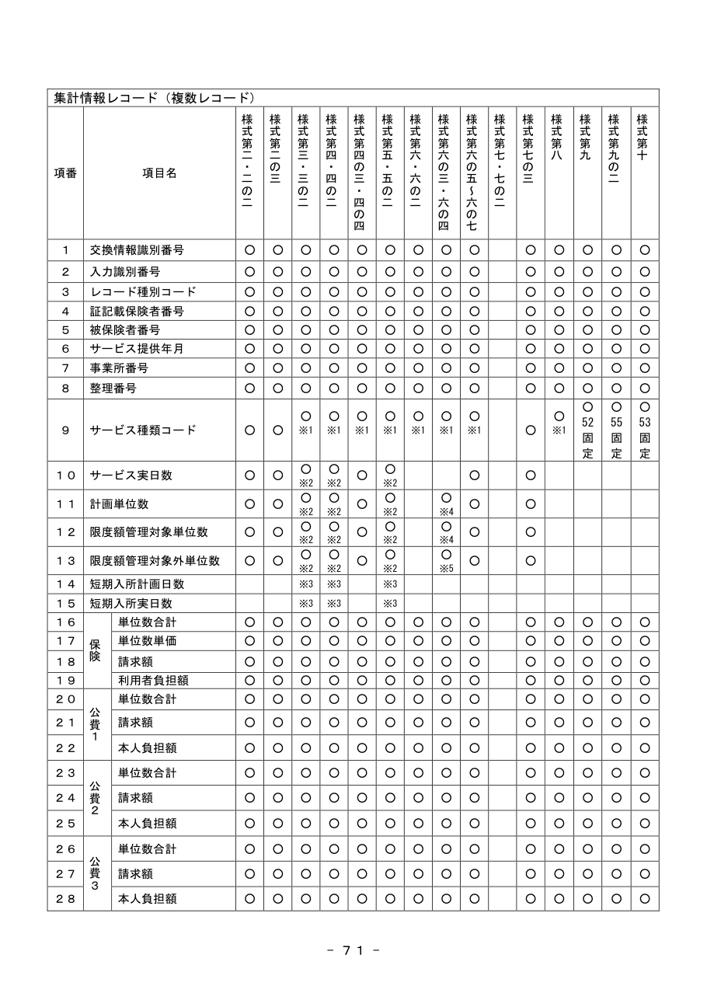
| 項番 | 項目名 | 属性 | 桁数 | 内容 | 必須 | 備考 | その他の列 |
|---|---|---|---|---|---|---|---|
| １ | 交換情報識別番号 | 様式第二・二の二:○ 様式第二の三:○ 様式第三・三の二:○ 様式第四・四の二:○ 様式第四の三・四の四:○ 様式第五・五の二:○ 様式第六・六の二:○ 様式第六の三・六の四:○ 様式第六の五～六の七:○ 様式第七・七の二:－ 様式第七の三:○ 様式第八:○ 様式第九:○ 様式第九の二:○ 様式第十:○ | |||||
| ２ | 入力識別番号 | 様式第二・二の二:○ 様式第二の三:○ 様式第三・三の二:○ 様式第四・四の二:○ 様式第四の三・四の四:○ 様式第五・五の二:○ 様式第六・六の二:○ 様式第六の三・六の四:○ 様式第六の五～六の七:○ 様式第七・七の二:－ 様式第七の三:○ 様式第八:○ 様式第九:○ 様式第九の二:○ 様式第十:○ | |||||
| ３ | レコード種別コード | 様式第二・二の二:○ 様式第二の三:○ 様式第三・三の二:○ 様式第四・四の二:○ 様式第四の三・四の四:○ 様式第五・五の二:○ 様式第六・六の二:○ 様式第六の三・六の四:○ 様式第六の五～六の七:○ 様式第七・七の二:－ 様式第七の三:○ 様式第八:○ 様式第九:○ 様式第九の二:○ 様式第十:○ | |||||
| ４ | 証記載保険者番号 | 様式第二・二の二:○ 様式第二の三:○ 様式第三・三の二:○ 様式第四・四の二:○ 様式第四の三・四の四:○ 様式第五・五の二:○ 様式第六・六の二:○ 様式第六の三・六の四:○ 様式第六の五～六の七:○ 様式第七・七の二:－ 様式第七の三:○ 様式第八:○ 様式第九:○ 様式第九の二:○ 様式第十:○ | |||||
| ５ | 被保険者番号 | 様式第二・二の二:○ 様式第二の三:○ 様式第三・三の二:○ 様式第四・四の二:○ 様式第四の三・四の四:○ 様式第五・五の二:○ 様式第六・六の二:○ 様式第六の三・六の四:○ 様式第六の五～六の七:○ 様式第七・七の二:－ 様式第七の三:○ 様式第八:○ 様式第九:○ 様式第九の二:○ 様式第十:○ | |||||
| ６ | サービス提供年月 | 様式第二・二の二:○ 様式第二の三:○ 様式第三・三の二:○ 様式第四・四の二:○ 様式第四の三・四の四:○ 様式第五・五の二:○ 様式第六・六の二:○ 様式第六の三・六の四:○ 様式第六の五～六の七:○ 様式第七・七の二:－ 様式第七の三:○ 様式第八:○ 様式第九:○ 様式第九の二:○ 様式第十:○ | |||||
| ７ | 事業所番号 | 様式第二・二の二:○ 様式第二の三:○ 様式第三・三の二:○ 様式第四・四の二:○ 様式第四の三・四の四:○ 様式第五・五の二:○ 様式第六・六の二:○ 様式第六の三・六の四:○ 様式第六の五～六の七:○ 様式第七・七の二:－ 様式第七の三:○ 様式第八:○ 様式第九:○ 様式第九の二:○ 様式第十:○ | |||||
| ８ | 整理番号 | 様式第二・二の二:○ 様式第二の三:○ 様式第三・三の二:○ 様式第四・四の二:○ 様式第四の三・四の四:○ 様式第五・五の二:○ 様式第六・六の二:○ 様式第六の三・六の四:○ 様式第六の五～六の七:○ 様式第七・七の二:－ 様式第七の三:○ 様式第八:○ 様式第九:○ 様式第九の二:○ 様式第十:○ | |||||
| ９ | サービス種類コード | 様式第二・二の二:○ 様式第二の三:○ 様式第三・三の二:○※1 様式第四・四の二:○※1 様式第四の三・四の四:○※1 様式第五・五の二:○※1 様式第六・六の二:○※1 様式第六の三・六の四:○※1 様式第六の五～六の七:○※1 様式第七・七の二:－ 様式第七の三:○ 様式第八:○※1 様式第九:○52固定 様式第九の二:○55固定 様式第十:○53固定 | |||||
| １０ | サービス実日数 | 様式第二・二の二:○ 様式第二の三:○ 様式第三・三の二:○※2 様式第四・四の二:○※2 様式第四の三・四の四:○ 様式第五・五の二:○※2 様式第六・六の二:－ 様式第六の三・六の四:－ 様式第六の五～六の七:○ 様式第七・七の二:－ 様式第七の三:○ 様式第八:－ 様式第九:－ 様式第九の二:－ 様式第十:－ | |||||
| １１ | 計画単位数 | 様式第二・二の二:○ 様式第二の三:○ 様式第三・三の二:○※2 様式第四・四の二:○※2 様式第四の三・四の四:○ 様式第五・五の二:○※2 様式第六・六の二:－ 様式第六の三・六の四:○※4 様式第六の五～六の七:○ 様式第七・七の二:－ 様式第七の三:○ 様式第八:－ 様式第九:－ 様式第九の二:－ 様式第十:－ | |||||
| １２ | 限度額管理対象単位数 | 様式第二・二の二:○ 様式第二の三:○ 様式第三・三の二:○※2 様式第四・四の二:○※2 様式第四の三・四の四:○ 様式第五・五の二:○※2 様式第六・六の二:－ 様式第六の三・六の四:○※4 様式第六の五～六の七:○ 様式第七・七の二:－ 様式第七の三:○ 様式第八:－ 様式第九:－ 様式第九の二:－ 様式第十:－ | |||||
| １３ | 限度額管理対象外単位数 | 様式第二・二の二:○ 様式第二の三:○ 様式第三・三の二:○※2 様式第四・四の二:○※2 様式第四の三・四の四:○ 様式第五・五の二:○※2 様式第六・六の二:－ 様式第六の三・六の四:○※5 様式第六の五～六の七:○ 様式第七・七の二:－ 様式第七の三:○ 様式第八:－ 様式第九:－ 様式第九の二:－ 様式第十:－ | |||||
| １４ | 短期入所計画日数 | 様式第二・二の二:－ 様式第二の三:－ 様式第三・三の二:※3 様式第四・四の二:※3 様式第四の三・四の四:－ 様式第五・五の二:※3 様式第六・六の二:－ 様式第六の三・六の四:－ 様式第六の五～六の七:－ 様式第七・七の二:－ 様式第七の三:－ 様式第八:－ 様式第九:－ 様式第九の二:－ 様式第十:－ | |||||
| １５ | 短期入所実日数 | 様式第二・二の二:－ 様式第二の三:－ 様式第三・三の二:※3 様式第四・四の二:※3 様式第四の三・四の四:－ 様式第五・五の二:※3 様式第六・六の二:－ 様式第六の三・六の四:－ 様式第六の五～六の七:－ 様式第七・七の二:－ 様式第七の三:－ 様式第八:－ 様式第九:－ 様式第九の二:－ 様式第十:－ | |||||
| １６ | 保険 > 単位数合計 | 様式第二・二の二:○ 様式第二の三:○ 様式第三・三の二:○ 様式第四・四の二:○ 様式第四の三・四の四:○ 様式第五・五の二:○ 様式第六・六の二:○ 様式第六の三・六の四:○ 様式第六の五～六の七:○ 様式第七・七の二:－ 様式第七の三:○ 様式第八:○ 様式第九:○ 様式第九の二:○ 様式第十:○ | |||||
| １７ | 保険 > 単位数単価 | 様式第二・二の二:○ 様式第二の三:○ 様式第三・三の二:○ 様式第四・四の二:○ 様式第四の三・四の四:○ 様式第五・五の二:○ 様式第六・六の二:○ 様式第六の三・六の四:○ 様式第六の五～六の七:○ 様式第七・七の二:－ 様式第七の三:○ 様式第八:○ 様式第九:○ 様式第九の二:○ 様式第十:○ | |||||
| １８ | 保険 > 請求額 | 様式第二・二の二:○ 様式第二の三:○ 様式第三・三の二:○ 様式第四・四の二:○ 様式第四の三・四の四:○ 様式第五・五の二:○ 様式第六・六の二:○ 様式第六の三・六の四:○ 様式第六の五～六の七:○ 様式第七・七の二:－ 様式第七の三:○ 様式第八:○ 様式第九:○ 様式第九の二:○ 様式第十:○ | |||||
| １９ | 保険 > 利用者負担額 | 様式第二・二の二:○ 様式第二の三:○ 様式第三・三の二:○ 様式第四・四の二:○ 様式第四の三・四の四:○ 様式第五・五の二:○ 様式第六・六の二:○ 様式第六の三・六の四:○ 様式第六の五～六の七:○ 様式第七・七の二:－ 様式第七の三:○ 様式第八:○ 様式第九:○ 様式第九の二:○ 様式第十:○ | |||||
| ２０ | 公費1 > 単位数合計 | 様式第二・二の二:○ 様式第二の三:○ 様式第三・三の二:○ 様式第四・四の二:○ 様式第四の三・四の四:○ 様式第五・五の二:○ 様式第六・六の二:○ 様式第六の三・六の四:○ 様式第六の五～六の七:○ 様式第七・七の二:－ 様式第七の三:○ 様式第八:○ 様式第九:○ 様式第九の二:○ 様式第十:○ | |||||
| ２１ | 公費1 > 請求額 | 様式第二・二の二:○ 様式第二の三:○ 様式第三・三の二:○ 様式第四・四の二:○ 様式第四の三・四の四:○ 様式第五・五の二:○ 様式第六・六の二:○ 様式第六の三・六の四:○ 様式第六の五～六の七:○ 様式第七・七の二:－ 様式第七の三:○ 様式第八:○ 様式第九:○ 様式第九の二:○ 様式第十:○ | |||||
| ２２ | 公費1 > 本人負担額 | 様式第二・二の二:○ 様式第二の三:○ 様式第三・三の二:○ 様式第四・四の二:○ 様式第四の三・四の四:○ 様式第五・五の二:○ 様式第六・六の二:○ 様式第六の三・六の四:○ 様式第六の五～六の七:○ 様式第七・七の二:－ 様式第七の三:○ 様式第八:○ 様式第九:○ 様式第九の二:○ 様式第十:○ | |||||
| ２３ | 公費2 > 単位数合計 | 様式第二・二の二:○ 様式第二の三:○ 様式第三・三の二:○ 様式第四・四の二:○ 様式第四の三・四の四:○ 様式第五・五の二:○ 様式第六・六の二:○ 様式第六の三・六の四:○ 様式第六の五～六の七:○ 様式第七・七の二:－ 様式第七の三:○ 様式第八:○ 様式第九:○ 様式第九の二:○ 様式第十:○ | |||||
| ２４ | 公費2 > 請求額 | 様式第二・二の二:○ 様式第二の三:○ 様式第三・三の二:○ 様式第四・四の二:○ 様式第四の三・四の四:○ 様式第五・五の二:○ 様式第六・六の二:○ 様式第六の三・六の四:○ 様式第六の五～六の七:○ 様式第七・七の二:－ 様式第七の三:○ 様式第八:○ 様式第九:○ 様式第九の二:○ 様式第十:○ | |||||
| ２５ | 公費2 > 本人負担額 | 様式第二・二の二:○ 様式第二の三:○ 様式第三・三の二:○ 様式第四・四の二:○ 様式第四の三・四の四:○ 様式第五・五の二:○ 様式第六・六の二:○ 様式第六の三・六の四:○ 様式第六の五～六の七:○ 様式第七・七の二:－ 様式第七の三:○ 様式第八:○ 様式第九:○ 様式第九の二:○ 様式第十:○ | |||||
| ２６ | 公費3 > 単位数合計 | 様式第二・二の二:○ 様式第二の三:○ 様式第三・三の二:○ 様式第四・四の二:○ 様式第四の三・四の四:○ 様式第五・五の二:○ 様式第六・六の二:○ 様式第六の三・六の四:○ 様式第六の五～六の七:○ 様式第七・七の二:－ 様式第七の三:○ 様式第八:○ 様式第九:○ 様式第九の二:○ 様式第十:○ | |||||
| ２７ | 公費3 > 請求額 | 様式第二・二の二:○ 様式第二の三:○ 様式第三・三の二:○ 様式第四・四の二:○ 様式第四の三・四の四:○ 様式第五・五の二:○ 様式第六・六の二:○ 様式第六の三・六の四:○ 様式第六の五～六の七:○ 様式第七・七の二:－ 様式第七の三:○ 様式第八:○ 様式第九:○ 様式第九の二:○ 様式第十:○ | |||||
| ２８ | 公費3 > 本人負担額 | 様式第二・二の二:○ 様式第二の三:○ 様式第三・三の二:○ 様式第四・四の二:○ 様式第四の三・四の四:○ 様式第五・五の二:○ 様式第六・六の二:○ 様式第六の三・六の四:○ 様式第六の五～六の七:○ 様式第七・七の二:－ 様式第七の三:○ 様式第八:○ 様式第九:○ 様式第九の二:○ 様式第十:○ |
| 項番 | 項目名 | 属性 | 桁数 | 内容 | 必須 | 備考 | その他の列 |
|---|---|---|---|---|---|---|---|
| 1 | 交換情報識別番号 | 様式第二・二の二:○ 様式第二の三:○ 様式第三・三の二:○ 様式第四・四の二:○ 様式第四の三・四の四:○ 様式第五・五の二:○ 様式第六・六の二:○ 様式第六の三・六の四:○ 様式第六の五～六の七:○ 様式第七・七の二:－ 様式第七の三:○ 様式第八:○ 様式第九:○ 様式第九の二:○ 様式第十:○ | |||||
| 2 | 入力識別番号 | 様式第二・二の二:○ 様式第二の三:○ 様式第三・三の二:○ 様式第四・四の二:○ 様式第四の三・四の四:○ 様式第五・五の二:○ 様式第六・六の二:○ 様式第六の三・六の四:○ 様式第六の五～六の七:○ 様式第七・七の二:－ 様式第七の三:○ 様式第八:○ 様式第九:○ 様式第九の二:○ 様式第十:○ | |||||
| 3 | レコード種別コード | 様式第二・二の二:○ 様式第二の三:○ 様式第三・三の二:○ 様式第四・四の二:○ 様式第四の三・四の四:○ 様式第五・五の二:○ 様式第六・六の二:○ 様式第六の三・六の四:○ 様式第六の五～六の七:○ 様式第七・七の二:－ 様式第七の三:○ 様式第八:○ 様式第九:○ 様式第九の二:○ 様式第十:○ | |||||
| 4 | 証記載保険者番号 | 様式第二・二の二:○ 様式第二の三:○ 様式第三・三の二:○ 様式第四・四の二:○ 様式第四の三・四の四:○ 様式第五・五の二:○ 様式第六・六の二:○ 様式第六の三・六の四:○ 様式第六の五～六の七:○ 様式第七・七の二:－ 様式第七の三:○ 様式第八:○ 様式第九:○ 様式第九の二:○ 様式第十:○ | |||||
| 5 | 被保険者番号 | 様式第二・二の二:○ 様式第二の三:○ 様式第三・三の二:○ 様式第四・四の二:○ 様式第四の三・四の四:○ 様式第五・五の二:○ 様式第六・六の二:○ 様式第六の三・六の四:○ 様式第六の五～六の七:○ 様式第七・七の二:－ 様式第七の三:○ 様式第八:○ 様式第九:○ 様式第九の二:○ 様式第十:○ | |||||
| 6 | サービス提供年月 | 様式第二・二の二:○ 様式第二の三:○ 様式第三・三の二:○ 様式第四・四の二:○ 様式第四の三・四の四:○ 様式第五・五の二:○ 様式第六・六の二:○ 様式第六の三・六の四:○ 様式第六の五～六の七:○ 様式第七・七の二:－ 様式第七の三:○ 様式第八:○ 様式第九:○ 様式第九の二:○ 様式第十:○ | |||||
| 7 | 事業所番号 | 様式第二・二の二:○ 様式第二の三:○ 様式第三・三の二:○ 様式第四・四の二:○ 様式第四の三・四の四:○ 様式第五・五の二:○ 様式第六・六の二:○ 様式第六の三・六の四:○ 様式第六の五～六の七:○ 様式第七・七の二:－ 様式第七の三:○ 様式第八:○ 様式第九:○ 様式第九の二:○ 様式第十:○ | |||||
| 8 | 整理番号 | 様式第二・二の二:○ 様式第二の三:○ 様式第三・三の二:○ 様式第四・四の二:○ 様式第四の三・四の四:○ 様式第五・五の二:○ 様式第六・六の二:○ 様式第六の三・六の四:○ 様式第六の五～六の七:○ 様式第七・七の二:－ 様式第七の三:○ 様式第八:○ 様式第九:○ 様式第九の二:○ 様式第十:○ | |||||
| 9 | サービス種類コード | 様式第二・二の二:○ 様式第二の三:○ 様式第三・三の二:○ ※1 様式第四・四の二:○ ※1 様式第四の三・四の四:○ ※1 様式第五・五の二:○ ※1 様式第六・六の二:○ ※1 様式第六の三・六の四:○ ※1 様式第六の五～六の七:○ ※1 様式第七・七の二:－ 様式第七の三:○ 様式第八:○ ※1 様式第九:○ 52固定 様式第九の二:○ 55固定 様式第十:○ 53固定 | |||||
| 10 | サービス実日数 | 様式第二・二の二:○ 様式第二の三:○ 様式第三・三の二:○ ※2 様式第四・四の二:○ ※2 様式第四の三・四の四:○ 様式第五・五の二:○ ※2 様式第六・六の二:－ 様式第六の三・六の四:－ 様式第六の五～六の七:○ 様式第七・七の二:－ 様式第七の三:○ 様式第八:－ 様式第九:－ 様式第九の二:－ 様式第十:－ | |||||
| 11 | 計画単位数 | 様式第二・二の二:○ 様式第二の三:○ 様式第三・三の二:○ ※2 様式第四・四の二:○ ※2 様式第四の三・四の四:○ 様式第五・五の二:○ ※2 様式第六・六の二:－ 様式第六の三・六の四:○ ※4 様式第六の五～六の七:○ 様式第七・七の二:－ 様式第七の三:○ 様式第八:－ 様式第九:－ 様式第九の二:－ 様式第十:－ | |||||
| 12 | 限度額管理対象単位数 | 様式第二・二の二:○ 様式第二の三:○ 様式第三・三の二:○ ※2 様式第四・四の二:○ ※2 様式第四の三・四の四:○ 様式第五・五の二:○ ※2 様式第六・六の二:－ 様式第六の三・六の四:○ ※4 様式第六の五～六の七:○ 様式第七・七の二:－ 様式第七の三:○ 様式第八:－ 様式第九:－ 様式第九の二:－ 様式第十:－ | |||||
| 13 | 限度額管理対象外単位数 | 様式第二・二の二:○ 様式第二の三:○ 様式第三・三の二:○ ※2 様式第四・四の二:○ ※2 様式第四の三・四の四:○ 様式第五・五の二:○ ※2 様式第六・六の二:－ 様式第六の三・六の四:○ ※5 様式第六の五～六の七:○ 様式第七・七の二:－ 様式第七の三:○ 様式第八:－ 様式第九:－ 様式第九の二:－ 様式第十:－ | |||||
| 14 | 短期入所計画日数 | 様式第二・二の二:－ 様式第二の三:－ 様式第三・三の二:※3 様式第四・四の二:※3 様式第四の三・四の四:－ 様式第五・五の二:※3 様式第六・六の二:－ 様式第六の三・六の四:－ 様式第六の五～六の七:－ 様式第七・七の二:－ 様式第七の三:－ 様式第八:－ 様式第九:－ 様式第九の二:－ 様式第十:－ | |||||
| 15 | 短期入所実日数 | 様式第二・二の二:－ 様式第二の三:－ 様式第三・三の二:※3 様式第四・四の二:※3 様式第四の三・四の四:－ 様式第五・五の二:※3 様式第六・六の二:－ 様式第六の三・六の四:－ 様式第六の五～六の七:－ 様式第七・七の二:－ 様式第七の三:－ 様式第八:－ 様式第九:－ 様式第九の二:－ 様式第十:－ | |||||
| 16 | 保険 > 単位数合計 | 様式第二・二の二:○ 様式第二の三:○ 様式第三・三の二:○ 様式第四・四の二:○ 様式第四の三・四の四:○ 様式第五・五の二:○ 様式第六・六の二:○ 様式第六の三・六の四:○ 様式第六の五～六の七:○ 様式第七・七の二:－ 様式第七の三:○ 様式第八:○ 様式第九:○ 様式第九の二:○ 様式第十:○ | |||||
| 17 | 保険 > 単位数単価 | 様式第二・二の二:○ 様式第二の三:○ 様式第三・三の二:○ 様式第四・四の二:○ 様式第四の三・四の四:○ 様式第五・五の二:○ 様式第六・六の二:○ 様式第六の三・六の四:○ 様式第六の五～六の七:○ 様式第七・七の二:－ 様式第七の三:○ 様式第八:○ 様式第九:○ 様式第九の二:○ 様式第十:○ | |||||
| 18 | 保険 > 請求額 | 様式第二・二の二:○ 様式第二の三:○ 様式第三・三の二:○ 様式第四・四の二:○ 様式第四の三・四の四:○ 様式第五・五の二:○ 様式第六・六の二:○ 様式第六の三・六の四:○ 様式第六の五～六の七:○ 様式第七・七の二:－ 様式第七の三:○ 様式第八:○ 様式第九:○ 様式第九の二:○ 様式第十:○ | |||||
| 19 | 保険 > 利用者負担額 | 様式第二・二の二:○ 様式第二の三:○ 様式第三・三の二:○ 様式第四・四の二:○ 様式第四の三・四の四:○ 様式第五・五の二:○ 様式第六・六の二:○ 様式第六の三・六の四:○ 様式第六の五～六の七:○ 様式第七・七の二:－ 様式第七の三:○ 様式第八:○ 様式第九:○ 様式第九の二:○ 様式第十:○ | |||||
| 20 | 公費1 > 単位数合計 | 様式第二・二の二:○ 様式第二の三:○ 様式第三・三の二:○ 様式第四・四の二:○ 様式第四の三・四の四:○ 様式第五・五の二:○ 様式第六・六の二:○ 様式第六の三・六の四:○ 様式第六の五～六の七:○ 様式第七・七の二:－ 様式第七の三:○ 様式第八:○ 様式第九:○ 様式第九の二:○ 様式第十:○ | |||||
| 21 | 公費1 > 請求額 | 様式第二・二の二:○ 様式第二の三:○ 様式第三・三の二:○ 様式第四・四の二:○ 様式第四の三・四の四:○ 様式第五・五の二:○ 様式第六・六の二:○ 様式第六の三・六の四:○ 様式第六の五～六の七:○ 様式第七・七の二:－ 様式第七の三:○ 様式第八:○ 様式第九:○ 様式第九の二:○ 様式第十:○ | |||||
| 22 | 公費1 > 本人負担額 | 様式第二・二の二:○ 様式第二の三:○ 様式第三・三の二:○ 様式第四・四の二:○ 様式第四の三・四の四:○ 様式第五・五の二:○ 様式第六・六の二:○ 様式第六の三・六の四:○ 様式第六の五～六の七:○ 様式第七・七の二:－ 様式第七の三:○ 様式第八:○ 様式第九:○ 様式第九の二:○ 様式第十:○ | |||||
| 23 | 公費2 > 単位数合計 | 様式第二・二の二:○ 様式第二の三:○ 様式第三・三の二:○ 様式第四・四の二:○ 様式第四の三・四の四:○ 様式第五・五の二:○ 様式第六・六の二:○ 様式第六の三・六の四:○ 様式第六の五～六の七:○ 様式第七・七の二:－ 様式第七の三:○ 様式第八:○ 様式第九:○ 様式第九の二:○ 様式第十:○ | |||||
| 24 | 公費2 > 請求額 | 様式第二・二の二:○ 様式第二の三:○ 様式第三・三の二:○ 様式第四・四の二:○ 様式第四の三・四の四:○ 様式第五・五の二:○ 様式第六・六の二:○ 様式第六の三・六の四:○ 様式第六の五～六の七:○ 様式第七・七の二:－ 様式第七の三:○ 様式第八:○ 様式第九:○ 様式第九の二:○ 様式第十:○ | |||||
| 25 | 公費2 > 本人負担額 | 様式第二・二の二:○ 様式第二の三:○ 様式第三・三の二:○ 様式第四・四の二:○ 様式第四の三・四の四:○ 様式第五・五の二:○ 様式第六・六の二:○ 様式第六の三・六の四:○ 様式第六の五～六の七:○ 様式第七・七の二:－ 様式第七の三:○ 様式第八:○ 様式第九:○ 様式第九の二:○ 様式第十:○ | |||||
| 26 | 公費3 > 単位数合計 | 様式第二・二の二:○ 様式第二の三:○ 様式第三・三の二:○ 様式第四・四の二:○ 様式第四の三・四の四:○ 様式第五・五の二:○ 様式第六・六の二:○ 様式第六の三・六の四:○ 様式第六の五～六の七:○ 様式第七・七の二:－ 様式第七の三:○ 様式第八:○ 様式第九:○ 様式第九の二:○ 様式第十:○ | |||||
| 27 | 公費3 > 請求額 | 様式第二・二の二:○ 様式第二の三:○ 様式第三・三の二:○ 様式第四・四の二:○ 様式第四の三・四の四:○ 様式第五・五の二:○ 様式第六・六の二:○ 様式第六の三・六の四:○ 様式第六の五～六の七:○ 様式第七・七の二:－ 様式第七の三:○ 様式第八:○ 様式第九:○ 様式第九の二:○ 様式第十:○ | |||||
| 28 | 公費3 > 本人負担額 | 様式第二・二の二:○ 様式第二の三:○ 様式第三・三の二:○ 様式第四・四の二:○ 様式第四の三・四の四:○ 様式第五・五の二:○ 様式第六・六の二:○ 様式第六の三・六の四:○ 様式第六の五～六の七:○ 様式第七・七の二:－ 様式第七の三:○ 様式第八:○ 様式第九:○ 様式第九の二:○ 様式第十:○ |
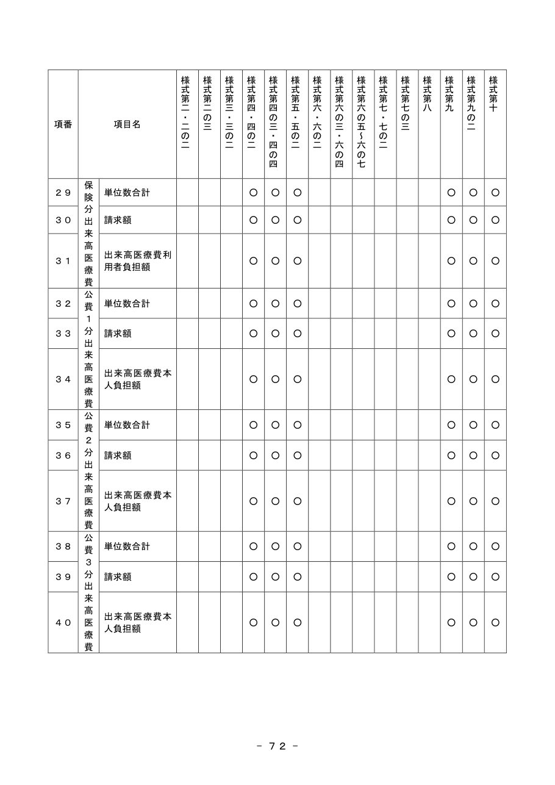
| 項番 | 項目名 | 属性 | 桁数 | 内容 | 必須 | 備考 | その他の列 |
|---|---|---|---|---|---|---|---|
| 29 | 保険分出来高医療費 > 単位数合計 | 様式第二・二の二:－ 様式第二の三:－ 様式第三・三の二:－ 様式第四・四の二:○ 様式第四の三・四の四:○ 様式第五・五の二:○ 様式第六・六の二:－ 様式第六の三・六の四:－ 様式第六の五～六の七:－ 様式第七・七の二:－ 様式第七の三:－ 様式第八:－ 様式第九:○ 様式第九の二:○ 様式第十:○ | |||||
| 30 | 保険分出来高医療費 > 請求額 | 様式第二・二の二:－ 様式第二の三:－ 様式第三・三の二:－ 様式第四・四の二:○ 様式第四の三・四の四:○ 様式第五・五の二:○ 様式第六・六の二:－ 様式第六の三・六の四:－ 様式第六の五～六の七:－ 様式第七・七の二:－ 様式第七の三:－ 様式第八:－ 様式第九:○ 様式第九の二:○ 様式第十:○ | |||||
| 31 | 保険分出来高医療費 > 出来高医療費利用者負担額 | 様式第二・二の二:－ 様式第二の三:－ 様式第三・三の二:－ 様式第四・四の二:○ 様式第四の三・四の四:○ 様式第五・五の二:○ 様式第六・六の二:－ 様式第六の三・六の四:－ 様式第六の五～六の七:－ 様式第七・七の二:－ 様式第七の三:－ 様式第八:－ 様式第九:○ 様式第九の二:○ 様式第十:○ | |||||
| 32 | 公費1分出来高医療費 > 単位数合計 | 様式第二・二の二:－ 様式第二の三:－ 様式第三・三の二:－ 様式第四・四の二:○ 様式第四の三・四の四:○ 様式第五・五の二:○ 様式第六・六の二:－ 様式第六の三・六の四:－ 様式第六の五～六の七:－ 様式第七・七の二:－ 様式第七の三:－ 様式第八:－ 様式第九:○ 様式第九の二:○ 様式第十:○ | |||||
| 33 | 公費1分出来高医療費 > 請求額 | 様式第二・二の二:－ 様式第二の三:－ 様式第三・三の二:－ 様式第四・四の二:○ 様式第四の三・四の四:○ 様式第五・五の二:○ 様式第六・六の二:－ 様式第六の三・六の四:－ 様式第六の五～六の七:－ 様式第七・七の二:－ 様式第七の三:－ 様式第八:－ 様式第九:○ 様式第九の二:○ 様式第十:○ | |||||
| 34 | 公費1分出来高医療費 > 出来高医療費本人負担額 | 様式第二・二の二:－ 様式第二の三:－ 様式第三・三の二:－ 様式第四・四の二:○ 様式第四の三・四の四:○ 様式第五・五の二:○ 様式第六・六の二:－ 様式第六の三・六の四:－ 様式第六の五～六の七:－ 様式第七・七の二:－ 様式第七の三:－ 様式第八:－ 様式第九:○ 様式第九の二:○ 様式第十:○ | |||||
| 35 | 公費2分出来高医療費 > 単位数合計 | 様式第二・二の二:－ 様式第二の三:－ 様式第三・三の二:－ 様式第四・四の二:○ 様式第四の三・四の四:○ 様式第五・五の二:○ 様式第六・六の二:－ 様式第六の三・六の四:－ 様式第六の五～六の七:－ 様式第七・七の二:－ 様式第七の三:－ 様式第八:－ 様式第九:○ 様式第九の二:○ 様式第十:○ | |||||
| 36 | 公費2分出来高医療費 > 請求額 | 様式第二・二の二:－ 様式第二の三:－ 様式第三・三の二:－ 様式第四・四の二:○ 様式第四の三・四の四:○ 様式第五・五の二:○ 様式第六・六の二:－ 様式第六の三・六の四:－ 様式第六の五～六の七:－ 様式第七・七の二:－ 様式第七の三:－ 様式第八:－ 様式第九:○ 様式第九の二:○ 様式第十:○ | |||||
| 37 | 公費2分出来高医療費 > 出来高医療費本人負担額 | 様式第二・二の二:－ 様式第二の三:－ 様式第三・三の二:－ 様式第四・四の二:○ 様式第四の三・四の四:○ 様式第五・五の二:○ 様式第六・六の二:－ 様式第六の三・六の四:－ 様式第六の五～六の七:－ 様式第七・七の二:－ 様式第七の三:－ 様式第八:－ 様式第九:○ 様式第九の二:○ 様式第十:○ | |||||
| 38 | 公費3分出来高医療費 > 単位数合計 | 様式第二・二の二:－ 様式第二の三:－ 様式第三・三の二:－ 様式第四・四の二:○ 様式第四の三・四の四:○ 様式第五・五の二:○ 様式第六・六の二:－ 様式第六の三・六の四:－ 様式第六の五～六の七:－ 様式第七・七の二:－ 様式第七の三:－ 様式第八:－ 様式第九:○ 様式第九の二:○ 様式第十:○ | |||||
| 39 | 公費3分出来高医療費 > 請求額 | 様式第二・二の二:－ 様式第二の三:－ 様式第三・三の二:－ 様式第四・四の二:○ 様式第四の三・四の四:○ 様式第五・五の二:○ 様式第六・六の二:－ 様式第六の三・六の四:－ 様式第六の五～六の七:－ 様式第七・七の二:－ 様式第七の三:－ 様式第八:－ 様式第九:○ 様式第九の二:○ 様式第十:○ | |||||
| 40 | 公費3分出来高医療費 > 出来高医療費本人負担額 | 様式第二・二の二:－ 様式第二の三:－ 様式第三・三の二:－ 様式第四・四の二:○ 様式第四の三・四の四:○ 様式第五・五の二:○ 様式第六・六の二:－ 様式第六の三・六の四:－ 様式第六の五～六の七:－ 様式第七・七の二:－ 様式第七の三:－ 様式第八:－ 様式第九:○ 様式第九の二:○ 様式第十:○ |
| 項番 | 項目名 | 属性 | 桁数 | 内容 | 必須 | 備考 | その他の列 |
|---|---|---|---|---|---|---|---|
| ２９ | 保険分出来高医療費 > 単位数合計 | 様式第二・二の二:－ 様式第二の三:－ 様式第三・三の二:－ 様式第四・四の二:○ 様式第四の三・四の四:○ 様式第五・五の二:○ 様式第六・六の二:－ 様式第六の三・六の四:－ 様式第六の五～六の七:－ 様式第七・七の二:－ 様式第七の三:－ 様式第八:－ 様式第九:○ 様式第九の二:○ 様式第十:○ | |||||
| ３０ | 保険分出来高医療費 > 請求額 | 様式第二・二の二:－ 様式第二の三:－ 様式第三・三の二:－ 様式第四・四の二:○ 様式第四の三・四の四:○ 様式第五・五の二:○ 様式第六・六の二:－ 様式第六の三・六の四:－ 様式第六の五～六の七:－ 様式第七・七の二:－ 様式第七の三:－ 様式第八:－ 様式第九:○ 様式第九の二:○ 様式第十:○ | |||||
| ３１ | 保険分出来高医療費 > 出来高医療費利用者負担額 | 様式第二・二の二:－ 様式第二の三:－ 様式第三・三の二:－ 様式第四・四の二:○ 様式第四の三・四の四:○ 様式第五・五の二:○ 様式第六・六の二:－ 様式第六の三・六の四:－ 様式第六の五～六の七:－ 様式第七・七の二:－ 様式第七の三:－ 様式第八:－ 様式第九:○ 様式第九の二:○ 様式第十:○ | |||||
| ３２ | 公費1分出来高医療費 > 単位数合計 | 様式第二・二の二:－ 様式第二の三:－ 様式第三・三の二:－ 様式第四・四の二:○ 様式第四の三・四の四:○ 様式第五・五の二:○ 様式第六・六の二:－ 様式第六の三・六の四:－ 様式第六の五～六の七:－ 様式第七・七の二:－ 様式第七の三:－ 様式第八:－ 様式第九:○ 様式第九の二:○ 様式第十:○ | |||||
| ３３ | 公費1分出来高医療費 > 請求額 | 様式第二・二の二:－ 様式第二の三:－ 様式第三・三の二:－ 様式第四・四の二:○ 様式第四の三・四の四:○ 様式第五・五の二:○ 様式第六・六の二:－ 様式第六の三・六の四:－ 様式第六の五～六の七:－ 様式第七・七の二:－ 様式第七の三:－ 様式第八:－ 様式第九:○ 様式第九の二:○ 様式第十:○ | |||||
| ３４ | 公費1分出来高医療費 > 出来高医療費本人負担額 | 様式第二・二の二:－ 様式第二の三:－ 様式第三・三の二:－ 様式第四・四の二:○ 様式第四の三・四の四:○ 様式第五・五の二:○ 様式第六・六の二:－ 様式第六の三・六の四:－ 様式第六の五～六の七:－ 様式第七・七の二:－ 様式第七の三:－ 様式第八:－ 様式第九:○ 様式第九の二:○ 様式第十:○ | |||||
| ３５ | 公費2分出来高医療費 > 単位数合計 | 様式第二・二の二:－ 様式第二の三:－ 様式第三・三の二:－ 様式第四・四の二:○ 様式第四の三・四の四:○ 様式第五・五の二:○ 様式第六・六の二:－ 様式第六の三・六の四:－ 様式第六の五～六の七:－ 様式第七・七の二:－ 様式第七の三:－ 様式第八:－ 様式第九:○ 様式第九の二:○ 様式第十:○ | |||||
| ３６ | 公費2分出来高医療費 > 請求額 | 様式第二・二の二:－ 様式第二の三:－ 様式第三・三の二:－ 様式第四・四の二:○ 様式第四の三・四の四:○ 様式第五・五の二:○ 様式第六・六の二:－ 様式第六の三・六の四:－ 様式第六の五～六の七:－ 様式第七・七の二:－ 様式第七の三:－ 様式第八:－ 様式第九:○ 様式第九の二:○ 様式第十:○ | |||||
| ３７ | 公費2分出来高医療費 > 出来高医療費本人負担額 | 様式第二・二の二:－ 様式第二の三:－ 様式第三・三の二:－ 様式第四・四の二:○ 様式第四の三・四の四:○ 様式第五・五の二:○ 様式第六・六の二:－ 様式第六の三・六の四:－ 様式第六の五～六の七:－ 様式第七・七の二:－ 様式第七の三:－ 様式第八:－ 様式第九:○ 様式第九の二:○ 様式第十:○ | |||||
| ３８ | 公費3分出来高医療費 > 単位数合計 | 様式第二・二の二:－ 様式第二の三:－ 様式第三・三の二:－ 様式第四・四の二:○ 様式第四の三・四の四:○ 様式第五・五の二:○ 様式第六・六の二:－ 様式第六の三・六の四:－ 様式第六の五～六の七:－ 様式第七・七の二:－ 様式第七の三:－ 様式第八:－ 様式第九:○ 様式第九の二:○ 様式第十:○ | |||||
| ３９ | 公費3分出来高医療費 > 請求額 | 様式第二・二の二:－ 様式第二の三:－ 様式第三・三の二:－ 様式第四・四の二:○ 様式第四の三・四の四:○ 様式第五・五の二:○ 様式第六・六の二:－ 様式第六の三・六の四:－ 様式第六の五～六の七:－ 様式第七・七の二:－ 様式第七の三:－ 様式第八:－ 様式第九:○ 様式第九の二:○ 様式第十:○ | |||||
| ４０ | 公費3分出来高医療費 > 出来高医療費本人負担額 | 様式第二・二の二:－ 様式第二の三:－ 様式第三・三の二:－ 様式第四・四の二:○ 様式第四の三・四の四:○ 様式第五・五の二:○ 様式第六・六の二:－ 様式第六の三・六の四:－ 様式第六の五～六の七:－ 様式第七・七の二:－ 様式第七の三:－ 様式第八:－ 様式第九:○ 様式第九の二:○ 様式第十:○ |
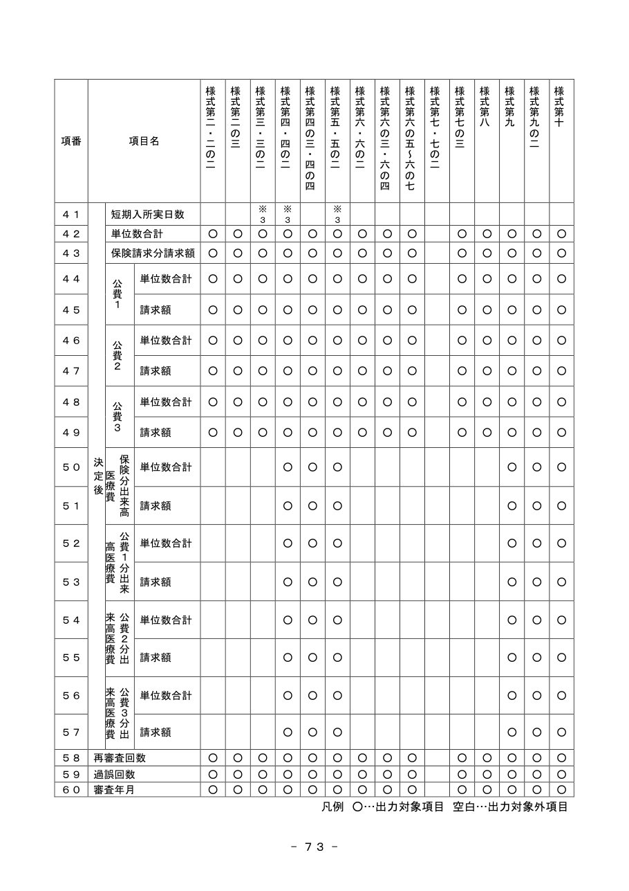
| 項番 | 項目名 | 属性 | 桁数 | 内容 | 必須 | 備考 | その他の列 |
|---|---|---|---|---|---|---|---|
| 41 | 決定後 > 短期入所実日数 | 様式第二・二の二: － 様式第二の三: － 様式第三・三の二: ※3 様式第四・四の二: ※3 様式第四の三・四の四: － 様式第五・五の二: ※3 様式第六・六の二: － 様式第六の三・六の四: － 様式第六の五～六の七: － 様式第七・七の二: － 様式第七の三: － 様式第八: － 様式第九: － 様式第九の二: － 様式第十: － | |||||
| 42 | 決定後 > 単位数合計 | 様式第二・二の二: ○ 様式第二の三: ○ 様式第三・三の二: ○ 様式第四・四の二: ○ 様式第四の三・四の四: ○ 様式第五・五の二: ○ 様式第六・六の二: ○ 様式第六の三・六の四: ○ 様式第六の五～六の七: ○ 様式第七・七の二: － 様式第七の三: ○ 様式第八: ○ 様式第九: ○ 様式第九の二: ○ 様式第十: ○ | |||||
| 43 | 決定後 > 保険請求分請求額 | 様式第二・二の二: ○ 様式第二の三: ○ 様式第三・三の二: ○ 様式第四・四の二: ○ 様式第四の三・四の四: ○ 様式第五・五の二: ○ 様式第六・六の二: ○ 様式第六の三・六の四: ○ 様式第六の五～六の七: ○ 様式第七・七の二: － 様式第七の三: ○ 様式第八: ○ 様式第九: ○ 様式第九の二: ○ 様式第十: ○ | |||||
| 44 | 決定後 > 公費1 > 単位数合計 | 様式第二・二の二: ○ 様式第二の三: ○ 様式第三・三の二: ○ 様式第四・四の二: ○ 様式第四の三・四の四: ○ 様式第五・五の二: ○ 様式第六・六の二: ○ 様式第六の三・六の四: ○ 様式第六の五～六の七: ○ 様式第七・七の二: － 様式第七の三: ○ 様式第八: ○ 様式第九: ○ 様式第九の二: ○ 様式第十: ○ | |||||
| 45 | 決定後 > 公費1 > 請求額 | 様式第二・二の二: ○ 様式第二の三: ○ 様式第三・三の二: ○ 様式第四・四の二: ○ 様式第四の三・四の四: ○ 様式第五・五の二: ○ 様式第六・六の二: ○ 様式第六の三・六の四: ○ 様式第六の五～六の七: ○ 様式第七・七の二: － 様式第七の三: ○ 様式第八: ○ 様式第九: ○ 様式第九の二: ○ 様式第十: ○ | |||||
| 46 | 決定後 > 公費2 > 単位数合計 | 様式第二・二の二: ○ 様式第二の三: ○ 様式第三・三の二: ○ 様式第四・四の二: ○ 様式第四の三・四の四: ○ 様式第五・五の二: ○ 様式第六・六の二: ○ 様式第六の三・六の四: ○ 様式第六の五～六の七: ○ 様式第七・七の二: － 様式第七の三: ○ 様式第八: ○ 様式第九: ○ 様式第九の二: ○ 様式第十: ○ | |||||
| 47 | 決定後 > 公費2 > 請求額 | 様式第二・二の二: ○ 様式第二の三: ○ 様式第三・三の二: ○ 様式第四・四の二: ○ 様式第四の三・四の四: ○ 様式第五・五の二: ○ 様式第六・六の二: ○ 様式第六の三・六の四: ○ 様式第六の五～六の七: ○ 様式第七・七の二: － 様式第七の三: ○ 様式第八: ○ 様式第九: ○ 様式第九の二: ○ 様式第十: ○ | |||||
| 48 | 決定後 > 公費3 > 単位数合計 | 様式第二・二の二: ○ 様式第二の三: ○ 様式第三・三の二: ○ 様式第四・四の二: ○ 様式第四の三・四の四: ○ 様式第五・五の二: ○ 様式第六・六の二: ○ 様式第六の三・六の四: ○ 様式第六の五～六の七: ○ 様式第七・七の二: － 様式第七の三: ○ 様式第八: ○ 様式第九: ○ 様式第九の二: ○ 様式第十: ○ | |||||
| 49 | 決定後 > 公費3 > 請求額 | 様式第二・二の二: ○ 様式第二の三: ○ 様式第三・三の二: ○ 様式第四・四の二: ○ 様式第四の三・四の四: ○ 様式第五・五の二: ○ 様式第六・六の二: ○ 様式第六の三・六の四: ○ 様式第六の五～六の七: ○ 様式第七・七の二: － 様式第七の三: ○ 様式第八: ○ 様式第九: ○ 様式第九の二: ○ 様式第十: ○ | |||||
| 50 | 決定後 > 医療費 > 保険分出来高 > 単位数合計 | 様式第二・二の二: － 様式第二の三: － 様式第三・三の二: － 様式第四・四の二: ○ 様式第四の三・四の四: ○ 様式第五・五の二: ○ 様式第六・六の二: － 様式第六の三・六の四: － 様式第六の五～六の七: － 様式第七・七の二: － 様式第七の三: － 様式第八: － 様式第九: ○ 様式第九の二: ○ 様式第十: ○ | |||||
| 51 | 決定後 > 医療費 > 保険分出来高 > 請求額 | 様式第二・二の二: － 様式第二の三: － 様式第三・三の二: － 様式第四・四の二: ○ 様式第四の三・四の四: ○ 様式第五・五の二: ○ 様式第六・六の二: － 様式第六の三・六の四: － 様式第六の五～六の七: － 様式第七・七の二: － 様式第七の三: － 様式第八: － 様式第九: ○ 様式第九の二: ○ 様式第十: ○ | |||||
| 52 | 決定後 > 高医療費 > 公費1分出来 > 単位数合計 | 様式第二・二の二: － 様式第二の三: － 様式第三・三の二: － 様式第四・四の二: ○ 様式第四の三・四の四: ○ 様式第五・五の二: ○ 様式第六・六の二: － 様式第六の三・六の四: － 様式第六の五～六の七: － 様式第七・七の二: － 様式第七の三: － 様式第八: － 様式第九: ○ 様式第九の二: ○ 様式第十: ○ | |||||
| 53 | 決定後 > 高医療費 > 公費1分出来 > 請求額 | 様式第二・二の二: － 様式第二の三: － 様式第三・三の二: － 様式第四・四の二: ○ 様式第四の三・四の四: ○ 様式第五・五の二: ○ 様式第六・六の二: － 様式第六の三・六の四: － 様式第六の五～六の七: － 様式第七・七の二: － 様式第七の三: － 様式第八: － 様式第九: ○ 様式第九の二: ○ 様式第十: ○ | |||||
| 54 | 決定後 > 来高医療費 > 公費2分出 > 単位数合計 | 様式第二・二の二: － 様式第二の三: － 様式第三・三の二: － 様式第四・四の二: ○ 様式第四の三・四の四: ○ 様式第五・五の二: ○ 様式第六・六の二: － 様式第六の三・六の四: － 様式第六の五～六の七: － 様式第七・七の二: － 様式第七の三: － 様式第八: － 様式第九: ○ 様式第九の二: ○ 様式第十: ○ | |||||
| 55 | 決定後 > 来高医療費 > 公費2分出 > 請求額 | 様式第二・二の二: － 様式第二の三: － 様式第三・三の二: － 様式第四・四の二: ○ 様式第四の三・四の四: ○ 様式第五・五の二: ○ 様式第六・六の二: － 様式第六の三・六の四: － 様式第六の五～六の七: － 様式第七・七の二: － 様式第七の三: － 様式第八: － 様式第九: ○ 様式第九の二: ○ 様式第十: ○ | |||||
| 56 | 決定後 > 来高医療費 > 公費3分出 > 単位数合計 | 様式第二・二の二: － 様式第二の三: － 様式第三・三の二: － 様式第四・四の二: ○ 様式第四の三・四の四: ○ 様式第五・五の二: ○ 様式第六・六の二: － 様式第六の三・六の四: － 様式第六の五～六の七: － 様式第七・七の二: － 様式第七の三: － 様式第八: － 様式第九: ○ 様式第九の二: ○ 様式第十: ○ | |||||
| 57 | 決定後 > 来高医療費 > 公費3分出 > 請求額 | 様式第二・二の二: － 様式第二の三: － 様式第三・三の二: － 様式第四・四の二: ○ 様式第四の三・四の四: ○ 様式第五・五の二: ○ 様式第六・六の二: － 様式第六の三・六の四: － 様式第六の五～六の七: － 様式第七・七の二: － 様式第七の三: － 様式第八: － 様式第九: ○ 様式第九の二: ○ 様式第十: ○ | |||||
| 58 | 再審査回数 | 様式第二・二の二: ○ 様式第二の三: ○ 様式第三・三の二: ○ 様式第四・四の二: ○ 様式第四の三・四の四: ○ 様式第五・五の二: ○ 様式第六・六の二: ○ 様式第六の三・六の四: ○ 様式第六の五～六の七: ○ 様式第七・七の二: － 様式第七の三: ○ 様式第八: ○ 様式第九: ○ 様式第九の二: ○ 様式第十: ○ | |||||
| 59 | 過誤回数 | 様式第二・二の二: ○ 様式第二の三: ○ 様式第三・三の二: ○ 様式第四・四の二: ○ 様式第四の三・四の四: ○ 様式第五・五の二: ○ 様式第六・六の二: ○ 様式第六の三・六の四: ○ 様式第六の五～六の七: ○ 様式第七・七の二: － 様式第七の三: ○ 様式第八: ○ 様式第九: ○ 様式第九の二: ○ 様式第十: ○ | |||||
| 60 | 審査年月 | 様式第二・二の二: ○ 様式第二の三: ○ 様式第三・三の二: ○ 様式第四・四の二: ○ 様式第四の三・四の四: ○ 様式第五・五の二: ○ 様式第六・六の二: ○ 様式第六の三・六の四: ○ 様式第六の五～六の七: ○ 様式第七・七の二: － 様式第七の三: ○ 様式第八: ○ 様式第九: ○ 様式第九の二: ○ 様式第十: ○ |
| 項番 | 項目名 | 属性 | 桁数 | 内容 | 必須 | 備考 | その他の列 |
|---|---|---|---|---|---|---|---|
| 41 | 決定後 > 短期入所実日数 | 様式第二・二の二:－ 様式第二の三:－ 様式第三・三の二:※3 様式第四・四の二:※3 様式第四の三・四の四:－ 様式第五・五の二:※3 様式第六・六の二:－ 様式第六の三・六の四:－ 様式第六の五～六の七:－ 様式第七・七の二:－ 様式第七の三:－ 様式第八:－ 様式第九:－ 様式第九の二:－ 様式第十:－ | |||||
| 42 | 決定後 > 単位数合計 | 様式第二・二の二:○ 様式第二の三:○ 様式第三・三の二:○ 様式第四・四の二:○ 様式第四の三・四の四:○ 様式第五・五の二:○ 様式第六・六の二:○ 様式第六の三・六の四:○ 様式第六の五～六の七:○ 様式第七・七の二:－ 様式第七の三:○ 様式第八:○ 様式第九:○ 様式第九の二:○ 様式第十:○ | |||||
| 43 | 決定後 > 保険請求分請求額 | 様式第二・二の二:○ 様式第二の三:○ 様式第三・三の二:○ 様式第四・四の二:○ 様式第四の三・四の四:○ 様式第五・五の二:○ 様式第六・六の二:○ 様式第六の三・六の四:○ 様式第六の五～六の七:○ 様式第七・七の二:－ 様式第七の三:○ 様式第八:○ 様式第九:○ 様式第九の二:○ 様式第十:○ | |||||
| 44 | 決定後 > 公費1 > 単位数合計 | 様式第二・二の二:○ 様式第二の三:○ 様式第三・三の二:○ 様式第四・四の二:○ 様式第四の三・四の四:○ 様式第五・五の二:○ 様式第六・六の二:○ 様式第六の三・六の四:○ 様式第六の五～六の七:○ 様式第七・七の二:－ 様式第七の三:○ 様式第八:○ 様式第九:○ 様式第九の二:○ 様式第十:○ | |||||
| 45 | 決定後 > 公費1 > 請求額 | 様式第二・二の二:○ 様式第二の三:○ 様式第三・三の二:○ 様式第四・四の二:○ 様式第四の三・四の四:○ 様式第五・五の二:○ 様式第六・六の二:○ 様式第六の三・六の四:○ 様式第六の五～六の七:○ 様式第七・七の二:－ 様式第七の三:○ 様式第八:○ 様式第九:○ 様式第九の二:○ 様式第十:○ | |||||
| 46 | 決定後 > 公費2 > 単位数合計 | 様式第二・二の二:○ 様式第二の三:○ 様式第三・三の二:○ 様式第四・四の二:○ 様式第四の三・四の四:○ 様式第五・五の二:○ 様式第六・六の二:○ 様式第六の三・六の四:○ 様式第六の五～六の七:○ 様式第七・七の二:－ 様式第七の三:○ 様式第八:○ 様式第九:○ 様式第九の二:○ 様式第十:○ | |||||
| 47 | 決定後 > 公費2 > 請求額 | 様式第二・二の二:○ 様式第二の三:○ 様式第三・三の二:○ 様式第四・四の二:○ 様式第四の三・四の四:○ 様式第五・五の二:○ 様式第六・六の二:○ 様式第六の三・六の四:○ 様式第六の五～六の七:○ 様式第七・七の二:－ 様式第七の三:○ 様式第八:○ 様式第九:○ 様式第九の二:○ 様式第十:○ | |||||
| 48 | 決定後 > 公費3 > 単位数合計 | 様式第二・二の二:○ 様式第二の三:○ 様式第三・三の二:○ 様式第四・四の二:○ 様式第四の三・四の四:○ 様式第五・五の二:○ 様式第六・六の二:○ 様式第六の三・六の四:○ 様式第六の五～六の七:○ 様式第七・七の二:－ 様式第七の三:○ 様式第八:○ 様式第九:○ 様式第九の二:○ 様式第十:○ | |||||
| 49 | 決定後 > 公費3 > 請求額 | 様式第二・二の二:○ 様式第二の三:○ 様式第三・三の二:○ 様式第四・四の二:○ 様式第四の三・四の四:○ 様式第五・五の二:○ 様式第六・六の二:○ 様式第六の三・六の四:○ 様式第六の五～六の七:○ 様式第七・七の二:－ 様式第七の三:○ 様式第八:○ 様式第九:○ 様式第九の二:○ 様式第十:○ | |||||
| 50 | 決定後 > 医療費 保険分出来高 > 単位数合計 | 様式第二・二の二:－ 様式第二の三:－ 様式第三・三の二:－ 様式第四・四の二:○ 様式第四の三・四の四:○ 様式第五・五の二:○ 様式第六・六の二:－ 様式第六の三・六の四:－ 様式第六の五～六の七:－ 様式第七・七の二:－ 様式第七の三:－ 様式第八:－ 様式第九:○ 様式第九の二:○ 様式第十:○ | |||||
| 51 | 決定後 > 医療費 保険分出来高 > 請求額 | 様式第二・二の二:－ 様式第二の三:－ 様式第三・三の二:－ 様式第四・四の二:○ 様式第四の三・四の四:○ 様式第五・五の二:○ 様式第六・六の二:－ 様式第六の三・六の四:－ 様式第六の五～六の七:－ 様式第七・七の二:－ 様式第七の三:－ 様式第八:－ 様式第九:○ 様式第九の二:○ 様式第十:○ | |||||
| 52 | 決定後 > 医療費 公費1分出来高 > 単位数合計 | 様式第二・二の二:－ 様式第二の三:－ 様式第三・三の二:－ 様式第四・四の二:○ 様式第四の三・四の四:○ 様式第五・五の二:○ 様式第六・六の二:－ 様式第六の三・六の四:－ 様式第六の五～六の七:－ 様式第七・七の二:－ 様式第七の三:－ 様式第八:－ 様式第九:○ 様式第九の二:○ 様式第十:○ | |||||
| 53 | 決定後 > 医療費 公費1分出来高 > 請求額 | 様式第二・二の二:－ 様式第二の三:－ 様式第三・三の二:－ 様式第四・四の二:○ 様式第四の三・四の四:○ 様式第五・五の二:○ 様式第六・六の二:－ 様式第六の三・六の四:－ 様式第六の五～六の七:－ 様式第七・七の二:－ 様式第七の三:－ 様式第八:－ 様式第九:○ 様式第九の二:○ 様式第十:○ | |||||
| 54 | 決定後 > 医療費 公費2分出来高 > 単位数合計 | 様式第二・二の二:－ 様式第二の三:－ 様式第三・三の二:－ 様式第四・四の二:○ 様式第四の三・四の四:○ 様式第五・五の二:○ 様式第六・六の二:－ 様式第六の三・六の四:－ 様式第六の五～六の七:－ 様式第七・七の二:－ 様式第七の三:－ 様式第八:－ 様式第九:○ 様式第九の二:○ 様式第十:○ | |||||
| 55 | 決定後 > 医療費 公費2分出来高 > 請求額 | 様式第二・二の二:－ 様式第二の三:－ 様式第三・三の二:－ 様式第四・四の二:○ 様式第四の三・四の四:○ 様式第五・五の二:○ 様式第六・六の二:－ 様式第六の三・六の四:－ 様式第六の五～六の七:－ 様式第七・七の二:－ 様式第七の三:－ 様式第八:－ 様式第九:○ 様式第九の二:○ 様式第十:○ | |||||
| 56 | 決定後 > 医療費 公費3分出来高 > 単位数合計 | 様式第二・二の二:－ 様式第二の三:－ 様式第三・三の二:－ 様式第四・四の二:○ 様式第四の三・四の四:○ 様式第五・五の二:○ 様式第六・六の二:－ 様式第六の三・六の四:－ 様式第六の五～六の七:－ 様式第七・七の二:－ 様式第七の三:－ 様式第八:－ 様式第九:○ 様式第九の二:○ 様式第十:○ | |||||
| 57 | 決定後 > 医療費 公費3分出来高 > 請求額 | 様式第二・二の二:－ 様式第二の三:－ 様式第三・三の二:－ 様式第四・四の二:○ 様式第四の三・四の四:○ 様式第五・五の二:○ 様式第六・六の二:－ 様式第六の三・六の四:－ 様式第六の五～六の七:－ 様式第七・七の二:－ 様式第七の三:－ 様式第八:－ 様式第九:○ 様式第九の二:○ 様式第十:○ | |||||
| 58 | 再審査回数 | 様式第二・二の二:○ 様式第二の三:○ 様式第三・三の二:○ 様式第四・四の二:○ 様式第四の三・四の四:○ 様式第五・五の二:○ 様式第六・六の二:○ 様式第六の三・六の四:○ 様式第六の五～六の七:○ 様式第七・七の二:－ 様式第七の三:○ 様式第八:○ 様式第九:○ 様式第九の二:○ 様式第十:○ | |||||
| 59 | 過誤回数 | 様式第二・二の二:○ 様式第二の三:○ 様式第三・三の二:○ 様式第四・四の二:○ 様式第四の三・四の四:○ 様式第五・五の二:○ 様式第六・六の二:○ 様式第六の三・六の四:○ 様式第六の五～六の七:○ 様式第七・七の二:－ 様式第七の三:○ 様式第八:○ 様式第九:○ 様式第九の二:○ 様式第十:○ | |||||
| 60 | 審査年月 | 様式第二・二の二:○ 様式第二の三:○ 様式第三・三の二:○ 様式第四・四の二:○ 様式第四の三・四の四:○ 様式第五・五の二:○ 様式第六・六の二:○ 様式第六の三・六の四:○ 様式第六の五～六の七:○ 様式第七・七の二:－ 様式第七の三:○ 様式第八:○ 様式第九:○ 様式第九の二:○ 様式第十:○ |
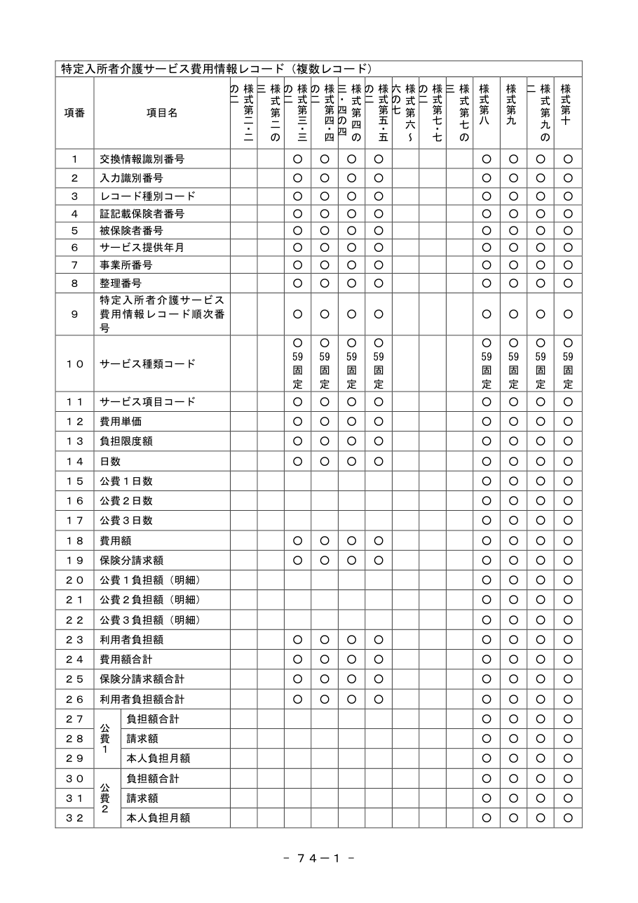
| 項番 | 項目名 | 属性 | 桁数 | 内容 | 必須 | 備考 | その他の列 |
|---|---|---|---|---|---|---|---|
| １ | 交換情報識別番号 | 様式第二・二の二:－ 様式第二の三:－ 様式第三・三の二:○ 様式第四・四の二:○ 様式第四の三・四の四:○ 様式第五・五の二:○ 様式第六～六の七:－ 様式第七・七の二:－ 様式第七の三:－ 様式第八:○ 様式第九:○ 様式第九の二:○ 様式第十:○ | |||||
| ２ | 入力識別番号 | 様式第二・二の二:－ 様式第二の三:－ 様式第三・三の二:○ 様式第四・四の二:○ 様式第四の三・四の四:○ 様式第五・五の二:○ 様式第六～六の七:－ 様式第七・七の二:－ 様式第七の三:－ 様式第八:○ 様式第九:○ 様式第九の二:○ 様式第十:○ | |||||
| ３ | レコード種別コード | 様式第二・二の二:－ 様式第二の三:－ 様式第三・三の二:○ 様式第四・四の二:○ 様式第四の三・四の四:○ 様式第五・五の二:○ 様式第六～六の七:－ 様式第七・七の二:－ 様式第七の三:－ 様式第八:○ 様式第九:○ 様式第九の二:○ 様式第十:○ | |||||
| ４ | 証記載保険者番号 | 様式第二・二の二:－ 様式第二の三:－ 様式第三・三の二:○ 様式第四・四の二:○ 様式第四の三・四の四:○ 様式第五・五の二:○ 様式第六～六の七:－ 様式第七・七の二:－ 様式第七の三:－ 様式第八:○ 様式第九:○ 様式第九の二:○ 様式第十:○ | |||||
| ５ | 被保険者番号 | 様式第二・二の二:－ 様式第二の三:－ 様式第三・三の二:○ 様式第四・四の二:○ 様式第四の三・四の四:○ 様式第五・五の二:○ 様式第六～六の七:－ 様式第七・七の二:－ 様式第七の三:－ 様式第八:○ 様式第九:○ 様式第九の二:○ 様式第十:○ | |||||
| ６ | サービス提供年月 | 様式第二・二の二:－ 様式第二の三:－ 様式第三・三の二:○ 様式第四・四の二:○ 様式第四の三・四の四:○ 様式第五・五の二:○ 様式第六～六の七:－ 様式第七・七の二:－ 様式第七の三:－ 様式第八:○ 様式第九:○ 様式第九の二:○ 様式第十:○ | |||||
| ７ | 事業所番号 | 様式第二・二の二:－ 様式第二の三:－ 様式第三・三の二:○ 様式第四・四の二:○ 様式第四の三・四の四:○ 様式第五・五の二:○ 様式第六～六の七:－ 様式第七・七の二:－ 様式第七の三:－ 様式第八:○ 様式第九:○ 様式第九の二:○ 様式第十:○ | |||||
| ８ | 整理番号 | 様式第二・二の二:－ 様式第二の三:－ 様式第三・三の二:○ 様式第四・四の二:○ 様式第四の三・四の四:○ 様式第五・五の二:○ 様式第六～六の七:－ 様式第七・七の二:－ 様式第七の三:－ 様式第八:○ 様式第九:○ 様式第九の二:○ 様式第十:○ | |||||
| ９ | 特定入所者介護サービス費用情報レコード順次番号 | 様式第二・二の二:－ 様式第二の三:－ 様式第三・三の二:○ 様式第四・四の二:○ 様式第四の三・四の四:○ 様式第五・五の二:○ 様式第六～六の七:－ 様式第七・七の二:－ 様式第七の三:－ 様式第八:○ 様式第九:○ 様式第九の二:○ 様式第十:○ | |||||
| １０ | サービス種類コード | 様式第二・二の二:－ 様式第二の三:－ 様式第三・三の二:○59固定 様式第四・四の二:○59固定 様式第四の三・四の四:○59固定 様式第五・五の二:○59固定 様式第六～六の七:－ 様式第七・七の二:－ 様式第七の三:－ 様式第八:○59固定 様式第九:○59固定 様式第九の二:○59固定 様式第十:○59固定 | |||||
| １１ | サービス項目コード | 様式第二・二の二:－ 様式第二の三:－ 様式第三・三の二:○ 様式第四・四の二:○ 様式第四の三・四の四:○ 様式第五・五の二:○ 様式第六～六の七:－ 様式第七・七の二:－ 様式第七の三:－ 様式第八:○ 様式第九:○ 様式第九の二:○ 様式第十:○ | |||||
| １２ | 費用単価 | 様式第二・二の二:－ 様式第二の三:－ 様式第三・三の二:○ 様式第四・四の二:○ 様式第四の三・四の四:○ 様式第五・五の二:○ 様式第六～六の七:－ 様式第七・七の二:－ 様式第七の三:－ 様式第八:○ 様式第九:○ 様式第九の二:○ 様式第十:○ | |||||
| １３ | 負担限度額 | 様式第二・二の二:－ 様式第二の三:－ 様式第三・三の二:○ 様式第四・四の二:○ 様式第四の三・四の四:○ 様式第五・五の二:○ 様式第六～六の七:－ 様式第七・七の二:－ 様式第七の三:－ 様式第八:○ 様式第九:○ 様式第九の二:○ 様式第十:○ | |||||
| １４ | 日数 | 様式第二・二の二:－ 様式第二の三:－ 様式第三・三の二:○ 様式第四・四の二:○ 様式第四の三・四の四:○ 様式第五・五の二:○ 様式第六～六の七:－ 様式第七・七の二:－ 様式第七の三:－ 様式第八:○ 様式第九:○ 様式第九の二:○ 様式第十:○ | |||||
| １５ | 公費１日数 | 様式第二・二の二:－ 様式第二の三:－ 様式第三・三の二:－ 様式第四・四の二:－ 様式第四の三・四の四:－ 様式第五・五の二:－ 様式第六～六の七:－ 様式第七・七の二:－ 様式第七の三:－ 様式第八:○ 様式第九:○ 様式第九の二:○ 様式第十:○ | |||||
| １６ | 公費２日数 | 様式第二・二の二:－ 様式第二の三:－ 様式第三・三の二:－ 様式第四・四の二:－ 様式第四の三・四の四:－ 様式第五・五の二:－ 様式第六～六の七:－ 様式第七・七の二:－ 様式第七の三:－ 様式第八:○ 様式第九:○ 様式第九の二:○ 様式第十:○ | |||||
| １７ | 公費３日数 | 様式第二・二の二:－ 様式第二の三:－ 様式第三・三の二:－ 様式第四・四の二:－ 様式第四の三・四の四:－ 様式第五・五の二:－ 様式第六～六の七:－ 様式第七・七の二:－ 様式第七の三:－ 様式第八:○ 様式第九:○ 様式第九の二:○ 様式第十:○ | |||||
| １８ | 費用額 | 様式第二・二の二:－ 様式第二の三:－ 様式第三・三の二:○ 様式第四・四の二:○ 様式第四の三・四の四:○ 様式第五・五の二:○ 様式第六～六の七:－ 様式第七・七の二:－ 様式第七の三:－ 様式第八:○ 様式第九:○ 様式第九の二:○ 様式第十:○ | |||||
| １９ | 保険分請求額 | 様式第二・二の二:－ 様式第二の三:－ 様式第三・三の二:○ 様式第四・四の二:○ 様式第四の三・四の四:○ 様式第五・五の二:○ 様式第六～六の七:－ 様式第七・七の二:－ 様式第七の三:－ 様式第八:○ 様式第九:○ 様式第九の二:○ 様式第十:○ | |||||
| ２０ | 公費１負担額（明細） | 様式第二・二の二:－ 様式第二の三:－ 様式第三・三の二:－ 様式第四・四の二:－ 様式第四の三・四の四:－ 様式第五・五の二:－ 様式第六～六の七:－ 様式第七・七の二:－ 様式第七の三:－ 様式第八:○ 様式第九:○ 様式第九の二:○ 様式第十:○ | |||||
| ２１ | 公費２負担額（明細） | 様式第二・二の二:－ 様式第二の三:－ 様式第三・三の二:－ 様式第四・四の二:－ 様式第四の三・四の四:－ 様式第五・五の二:－ 様式第六～六の七:－ 様式第七・七の二:－ 様式第七の三:－ 様式第八:○ 様式第九:○ 様式第九の二:○ 様式第十:○ | |||||
| ２２ | 公費３負担額（明細） | 様式第二・二の二:－ 様式第二の三:－ 様式第三・三の二:－ 様式第四・四の二:－ 様式第四の三・四の四:－ 様式第五・五の二:－ 様式第六～六の七:－ 様式第七・七の二:－ 様式第七の三:－ 様式第八:○ 様式第九:○ 様式第九の二:○ 様式第十:○ | |||||
| ２３ | 利用者負担額 | 様式第二・二の二:－ 様式第二の三:－ 様式第三・三の二:○ 様式第四・四の二:○ 様式第四の三・四の四:○ 様式第五・五の二:○ 様式第六～六の七:－ 様式第七・七の二:－ 様式第七の三:－ 様式第八:○ 様式第九:○ 様式第九の二:○ 様式第十:○ | |||||
| ２４ | 費用額合計 | 様式第二・二の二:－ 様式第二の三:－ 様式第三・三の二:○ 様式第四・四の二:○ 様式第四の三・四の四:○ 様式第五・五の二:○ 様式第六～六の七:－ 様式第七・七の二:－ 様式第七の三:－ 様式第八:○ 様式第九:○ 様式第九の二:○ 様式第十:○ | |||||
| ２５ | 保険分請求額合計 | 様式第二・二の二:－ 様式第二の三:－ 様式第三・三の二:○ 様式第四・四の二:○ 様式第四の三・四の四:○ 様式第五・五の二:○ 様式第六～六の七:－ 様式第七・七の二:－ 様式第七の三:－ 様式第八:○ 様式第九:○ 様式第九の二:○ 様式第十:○ | |||||
| ２６ | 利用者負担額合計 | 様式第二・二の二:－ 様式第二の三:－ 様式第三・三の二:○ 様式第四・四の二:○ 様式第四の三・四の四:○ 様式第五・五の二:○ 様式第六～六の七:－ 様式第七・七の二:－ 様式第七の三:－ 様式第八:○ 様式第九:○ 様式第九の二:○ 様式第十:○ | |||||
| ２７ | 公費1 > 負担額合計 | 様式第二・二の二:－ 様式第二の三:－ 様式第三・三の二:－ 様式第四・四の二:－ 様式第四の三・四の四:－ 様式第五・五の二:－ 様式第六～六の七:－ 様式第七・七の二:－ 様式第七の三:－ 様式第八:○ 様式第九:○ 様式第九の二:○ 様式第十:○ | |||||
| ２８ | 公費1 > 請求額 | 様式第二・二の二:－ 様式第二の三:－ 様式第三・三の二:－ 様式第四・四の二:－ 様式第四の三・四の四:－ 様式第五・五の二:－ 様式第六～六の七:－ 様式第七・七の二:－ 様式第七の三:－ 様式第八:○ 様式第九:○ 様式第九の二:○ 様式第十:○ | |||||
| ２９ | 公費1 > 本人負担月額 | 様式第二・二の二:－ 様式第二の三:－ 様式第三・三の二:－ 様式第四・四の二:－ 様式第四の三・四の四:－ 様式第五・五の二:－ 様式第六～六の七:－ 様式第七・七の二:－ 様式第七の三:－ 様式第八:○ 様式第九:○ 様式第九の二:○ 様式第十:○ | |||||
| ３０ | 公費2 > 負担額合計 | 様式第二・二の二:－ 様式第二の三:－ 様式第三・三の二:－ 様式第四・四の二:－ 様式第四の三・四の四:－ 様式第五・五の二:－ 様式第六～六の七:－ 様式第七・七の二:－ 様式第七の三:－ 様式第八:○ 様式第九:○ 様式第九の二:○ 様式第十:○ | |||||
| ３１ | 公費2 > 請求額 | 様式第二・二の二:－ 様式第二の三:－ 様式第三・三の二:－ 様式第四・四の二:－ 様式第四の三・四の四:－ 様式第五・五の二:－ 様式第六～六の七:－ 様式第七・七の二:－ 様式第七の三:－ 様式第八:○ 様式第九:○ 様式第九の二:○ 様式第十:○ | |||||
| ３２ | 公費2 > 本人負担月額 | 様式第二・二の二:－ 様式第二の三:－ 様式第三・三の二:－ 様式第四・四の二:－ 様式第四の三・四の四:－ 様式第五・五の二:－ 様式第六～六の七:－ 様式第七・七の二:－ 様式第七の三:－ 様式第八:○ 様式第九:○ 様式第九の二:○ 様式第十:○ |
| 項番 | 項目名 | 属性 | 桁数 | 内容 | 必須 | 備考 | その他の列 |
|---|---|---|---|---|---|---|---|
| 1 | 交換情報識別番号 | 様式第二・二の二:－ 様式第二の三:－ 様式第三・三の二:○ 様式第四・四の二:○ 様式第四の三・四の四:○ 様式第五・五の二:○ 様式第六〜六の七:－ 様式第七・七の二:－ 様式第七の三:－ 様式第八:○ 様式第九:○ 様式第九の二:○ 様式第十:○ | |||||
| 2 | 入力識別番号 | 様式第二・二の二:－ 様式第二の三:－ 様式第三・三の二:○ 様式第四・四の二:○ 様式第四の三・四の四:○ 様式第五・五の二:○ 様式第六〜六の七:－ 様式第七・七の二:－ 様式第七の三:－ 様式第八:○ 様式第九:○ 様式第九の二:○ 様式第十:○ | |||||
| 3 | レコード種別コード | 様式第二・二の二:－ 様式第二の三:－ 様式第三・三の二:○ 様式第四・四の二:○ 様式第四の三・四の四:○ 様式第五・五の二:○ 様式第六〜六の七:－ 様式第七・七の二:－ 様式第七の三:－ 様式第八:○ 様式第九:○ 様式第九の二:○ 様式第十:○ | |||||
| 4 | 証記載保険者番号 | 様式第二・二の二:－ 様式第二の三:－ 様式第三・三の二:○ 様式第四・四の二:○ 様式第四の三・四の四:○ 様式第五・五の二:○ 様式第六〜六の七:－ 様式第七・七の二:－ 様式第七の三:－ 様式第八:○ 様式第九:○ 様式第九の二:○ 様式第十:○ | |||||
| 5 | 被保険者番号 | 様式第二・二の二:－ 様式第二の三:－ 様式第三・三の二:○ 様式第四・四の二:○ 様式第四の三・四の四:○ 様式第五・五の二:○ 様式第六〜六の七:－ 様式第七・七の二:－ 様式第七の三:－ 様式第八:○ 様式第九:○ 様式第九の二:○ 様式第十:○ | |||||
| 6 | サービス提供年月 | 様式第二・二の二:－ 様式第二の三:－ 様式第三・三の二:○ 様式第四・四の二:○ 様式第四の三・四の四:○ 様式第五・五の二:○ 様式第六〜六の七:－ 様式第七・七の二:－ 様式第七の三:－ 様式第八:○ 様式第九:○ 様式第九の二:○ 様式第十:○ | |||||
| 7 | 事業所番号 | 様式第二・二の二:－ 様式第二の三:－ 様式第三・三の二:○ 様式第四・四の二:○ 様式第四の三・四の四:○ 様式第五・五の二:○ 様式第六〜六の七:－ 様式第七・七の二:－ 様式第七の三:－ 様式第八:○ 様式第九:○ 様式第九の二:○ 様式第十:○ | |||||
| 8 | 整理番号 | 様式第二・二の二:－ 様式第二の三:－ 様式第三・三の二:○ 様式第四・四の二:○ 様式第四の三・四の四:○ 様式第五・五の二:○ 様式第六〜六の七:－ 様式第七・七の二:－ 様式第七の三:－ 様式第八:○ 様式第九:○ 様式第九の二:○ 様式第十:○ | |||||
| 9 | 特定入所者介護サービス費用情報レコード順次番号 | 様式第二・二の二:－ 様式第二の三:－ 様式第三・三の二:○ 様式第四・四の二:○ 様式第四の三・四の四:○ 様式第五・五の二:○ 様式第六〜六の七:－ 様式第七・七の二:－ 様式第七の三:－ 様式第八:○ 様式第九:○ 様式第九の二:○ 様式第十:○ | |||||
| １０ | サービス種類コード | 様式第二・二の二:－ 様式第二の三:－ 様式第三・三の二:○59固定 様式第四・四の二:○59固定 様式第四の三・四の四:○59固定 様式第五・五の二:○59固定 様式第六〜六の七:－ 様式第七・七の二:－ 様式第七の三:－ 様式第八:○59固定 様式第九:○59固定 様式第九の二:○59固定 様式第十:○59固定 | |||||
| １１ | サービス項目コード | 様式第二・二の二:－ 様式第二の三:－ 様式第三・三の二:○ 様式第四・四の二:○ 様式第四の三・四の四:○ 様式第五・五の二:○ 様式第六〜六の七:－ 様式第七・七の二:－ 様式第七の三:－ 様式第八:○ 様式第九:○ 様式第九の二:○ 様式第十:○ | |||||
| １２ | 費用単価 | 様式第二・二の二:－ 様式第二の三:－ 様式第三・三の二:○ 様式第四・四の二:○ 様式第四の三・四の四:○ 様式第五・五の二:○ 様式第六〜六の七:－ 様式第七・七の二:－ 様式第七の三:－ 様式第八:○ 様式第九:○ 様式第九の二:○ 様式第十:○ | |||||
| １３ | 負担限度額 | 様式第二・二の二:－ 様式第二の三:－ 様式第三・三の二:○ 様式第四・四の二:○ 様式第四の三・四の四:○ 様式第五・五の二:○ 様式第六〜六の七:－ 様式第七・七の二:－ 様式第七の三:－ 様式第八:○ 様式第九:○ 様式第九の二:○ 様式第十:○ | |||||
| １４ | 日数 | 様式第二・二の二:－ 様式第二の三:－ 様式第三・三の二:○ 様式第四・四の二:○ 様式第四の三・四の四:○ 様式第五・五の二:○ 様式第六〜六の七:－ 様式第七・七の二:－ 様式第七の三:－ 様式第八:○ 様式第九:○ 様式第九の二:○ 様式第十:○ | |||||
| １５ | 公費１日数 | 様式第二・二の二:－ 様式第二の三:－ 様式第三・三の二:－ 様式第四・四の二:－ 様式第四の三・四の四:－ 様式第五・五の二:－ 様式第六〜六の七:－ 様式第七・七の二:－ 様式第七の三:－ 様式第八:○ 様式第九:○ 様式第九の二:○ 様式第十:○ | |||||
| １６ | 公費２日数 | 様式第二・二の二:－ 様式第二の三:－ 様式第三・三の二:－ 様式第四・四の二:－ 様式第四の三・四の四:－ 様式第五・五の二:－ 様式第六〜六の七:－ 様式第七・七の二:－ 様式第七の三:－ 様式第八:○ 様式第九:○ 様式第九の二:○ 様式第十:○ | |||||
| １７ | 公費３日数 | 様式第二・二の二:－ 様式第二の三:－ 様式第三・三の二:－ 様式第四・四の二:－ 様式第四の三・四の四:－ 様式第五・五の二:－ 様式第六〜六の七:－ 様式第七・七の二:－ 様式第七の三:－ 様式第八:○ 様式第九:○ 様式第九の二:○ 様式第十:○ | |||||
| １８ | 費用額 | 様式第二・二の二:－ 様式第二の三:－ 様式第三・三の二:○ 様式第四・四の二:○ 様式第四の三・四の四:○ 様式第五・五の二:○ 様式第六〜六の七:－ 様式第七・七の二:－ 様式第七の三:－ 様式第八:○ 様式第九:○ 様式第九の二:○ 様式第十:○ | |||||
| １９ | 保険分請求額 | 様式第二・二の二:－ 様式第二の三:－ 様式第三・三の二:○ 様式第四・四の二:○ 様式第四の三・四の四:○ 様式第五・五の二:○ 様式第六〜六の七:－ 様式第七・七の二:－ 様式第七の三:－ 様式第八:○ 様式第九:○ 様式第九の二:○ 様式第十:○ | |||||
| ２０ | 公費１負担額（明細） | 様式第二・二の二:－ 様式第二の三:－ 様式第三・三の二:－ 様式第四・四の二:－ 様式第四の三・四の四:－ 様式第五・五の二:－ 様式第六〜六の七:－ 様式第七・七の二:－ 様式第七の三:－ 様式第八:○ 様式第九:○ 様式第九の二:○ 様式第十:○ | |||||
| ２１ | 公費２負担額（明細） | 様式第二・二の二:－ 様式第二の三:－ 様式第三・三の二:－ 様式第四・四の二:－ 様式第四の三・四の四:－ 様式第五・五の二:－ 様式第六〜六の七:－ 様式第七・七の二:－ 様式第七の三:－ 様式第八:○ 様式第九:○ 様式第九の二:○ 様式第十:○ | |||||
| ２２ | 公費３負担額（明細） | 様式第二・二の二:－ 様式第二の三:－ 様式第三・三の二:－ 様式第四・四の二:－ 様式第四の三・四の四:－ 様式第五・五の二:－ 様式第六〜六の七:－ 様式第七・七の二:－ 様式第七の三:－ 様式第八:○ 様式第九:○ 様式第九の二:○ 様式第十:○ | |||||
| ２３ | 利用者負担額 | 様式第二・二の二:－ 様式第二の三:－ 様式第三・三の二:○ 様式第四・四の二:○ 様式第四の三・四の四:○ 様式第五・五の二:○ 様式第六〜六の七:－ 様式第七・七の二:－ 様式第七の三:－ 様式第八:○ 様式第九:○ 様式第九の二:○ 様式第十:○ | |||||
| ２４ | 費用額合計 | 様式第二・二の二:－ 様式第二の三:－ 様式第三・三の二:○ 様式第四・四の二:○ 様式第四の三・四の四:○ 様式第五・五の二:○ 様式第六〜六の七:－ 様式第七・七の二:－ 様式第七の三:－ 様式第八:○ 様式第九:○ 様式第九の二:○ 様式第十:○ | |||||
| ２５ | 保険分請求額合計 | 様式第二・二の二:－ 様式第二の三:－ 様式第三・三の二:○ 様式第四・四の二:○ 様式第四の三・四の四:○ 様式第五・五の二:○ 様式第六〜六の七:－ 様式第七・七の二:－ 様式第七の三:－ 様式第八:○ 様式第九:○ 様式第九の二:○ 様式第十:○ | |||||
| ２６ | 利用者負担額合計 | 様式第二・二の二:－ 様式第二の三:－ 様式第三・三の二:○ 様式第四・四の二:○ 様式第四の三・四の四:○ 様式第五・五の二:○ 様式第六〜六の七:－ 様式第七・七の二:－ 様式第七の三:－ 様式第八:○ 様式第九:○ 様式第九の二:○ 様式第十:○ | |||||
| ２７ | 公費1 > 負担額合計 | 様式第二・二の二:－ 様式第二の三:－ 様式第三・三の二:－ 様式第四・四の二:－ 様式第四の三・四の四:－ 様式第五・五の二:－ 様式第六〜六の七:－ 様式第七・七の二:－ 様式第七の三:－ 様式第八:○ 様式第九:○ 様式第九の二:○ 様式第十:○ | |||||
| ２８ | 公費1 > 請求額 | 様式第二・二の二:－ 様式第二の三:－ 様式第三・三の二:－ 様式第四・四の二:－ 様式第四の三・四の四:－ 様式第五・五の二:－ 様式第六〜六の七:－ 様式第七・七の二:－ 様式第七の三:－ 様式第八:○ 様式第九:○ 様式第九の二:○ 様式第十:○ | |||||
| ２９ | 公費1 > 本人負担月額 | 様式第二・二の二:－ 様式第二の三:－ 様式第三・三の二:－ 様式第四・四の二:－ 様式第四の三・四の四:－ 様式第五・五の二:－ 様式第六〜六の七:－ 様式第七・七の二:－ 様式第七の三:－ 様式第八:○ 様式第九:○ 様式第九の二:○ 様式第十:○ | |||||
| ３０ | 公費2 > 負担額合計 | 様式第二・二の二:－ 様式第二の三:－ 様式第三・三の二:－ 様式第四・四の二:－ 様式第四の三・四の四:－ 様式第五・五の二:－ 様式第六〜六の七:－ 様式第七・七の二:－ 様式第七の三:－ 様式第八:○ 様式第九:○ 様式第九の二:○ 様式第十:○ | |||||
| ３１ | 公費2 > 請求額 | 様式第二・二の二:－ 様式第二の三:－ 様式第三・三の二:－ 様式第四・四の二:－ 様式第四の三・四の四:－ 様式第五・五の二:－ 様式第六〜六の七:－ 様式第七・七の二:－ 様式第七の三:－ 様式第八:○ 様式第九:○ 様式第九の二:○ 様式第十:○ | |||||
| ３２ | 公費2 > 本人負担月額 | 様式第二・二の二:－ 様式第二の三:－ 様式第三・三の二:－ 様式第四・四の二:－ 様式第四の三・四の四:－ 様式第五・五の二:－ 様式第六〜六の七:－ 様式第七・七の二:－ 様式第七の三:－ 様式第八:○ 様式第九:○ 様式第九の二:○ 様式第十:○ |
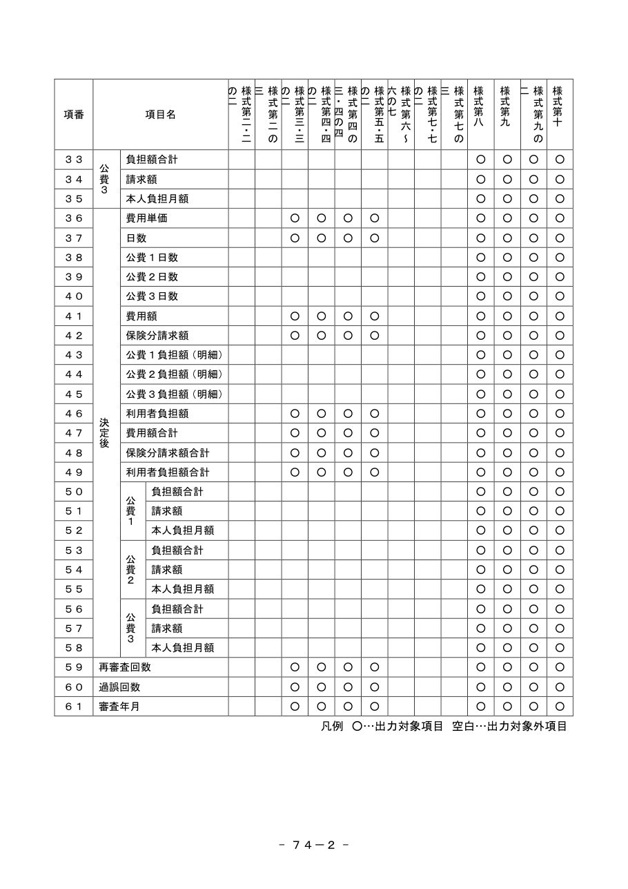
| 項番 | 項目名 | 属性 | 桁数 | 内容 | 必須 | 備考 | その他の列 |
|---|---|---|---|---|---|---|---|
| 33 | 公費3 > 負担額合計 | 様式第二・二の二:－ 様式第二の二:－ 様式第三・三の二:－ 様式第四・四の二:－ 様式第三・四の四:－ 様式第五・五の二:－ 様式第六～六の七:－ 様式第七・七の二:－ 様式第七の三:－ 様式第八:○ 様式第九:○ 様式第九の二:○ 様式第十:○ | |||||
| 34 | 公費3 > 請求額 | 様式第二・二の二:－ 様式第二の二:－ 様式第三・三の二:－ 様式第四・四の二:－ 様式第三・四の四:－ 様式第五・五の二:－ 様式第六～六の七:－ 様式第七・七の二:－ 様式第七の三:－ 様式第八:○ 様式第九:○ 様式第九の二:○ 様式第十:○ | |||||
| 35 | 公費3 > 本人負担月額 | 様式第二・二の二:－ 様式第二の二:－ 様式第三・三の二:－ 様式第四・四の二:－ 様式第三・四の四:－ 様式第五・五の二:－ 様式第六～六の七:－ 様式第七・七の二:－ 様式第七の三:－ 様式第八:○ 様式第九:○ 様式第九の二:○ 様式第十:○ | |||||
| 36 | 決定後 > 費用単価 | 様式第二・二の二:－ 様式第二の二:－ 様式第三・三の二:○ 様式第四・四の二:○ 様式第三・四の四:○ 様式第五・五の二:○ 様式第六～六の七:－ 様式第七・七の二:－ 様式第七の三:－ 様式第八:○ 様式第九:○ 様式第九の二:○ 様式第十:○ | |||||
| 37 | 決定後 > 日数 | 様式第二・二の二:－ 様式第二の二:－ 様式第三・三の二:○ 様式第四・四の二:○ 様式第三・四の四:○ 様式第五・五の二:○ 様式第六～六の七:－ 様式第七・七の二:－ 様式第七の三:－ 様式第八:○ 様式第九:○ 様式第九の二:○ 様式第十:○ | |||||
| 38 | 決定後 > 公費１日数 | 様式第二・二の二:－ 様式第二の二:－ 様式第三・三の二:－ 様式第四・四の二:－ 様式第三・四の四:－ 様式第五・五の二:－ 様式第六～六の七:－ 様式第七・七の二:－ 様式第七の三:－ 様式第八:○ 様式第九:○ 様式第九の二:○ 様式第十:○ | |||||
| 39 | 決定後 > 公費２日数 | 様式第二・二の二:－ 様式第二の二:－ 様式第三・三の二:－ 様式第四・四の二:－ 様式第三・四の四:－ 様式第五・五の二:－ 様式第六～六の七:－ 様式第七・七の二:－ 様式第七の三:－ 様式第八:○ 様式第九:○ 様式第九の二:○ 様式第十:○ | |||||
| 40 | 決定後 > 公費３日数 | 様式第二・二の二:－ 様式第二の二:－ 様式第三・三の二:－ 様式第四・四の二:－ 様式第三・四の四:－ 様式第五・五の二:－ 様式第六～六の七:－ 様式第七・七の二:－ 様式第七の三:－ 様式第八:○ 様式第九:○ 様式第九の二:○ 様式第十:○ | |||||
| 41 | 決定後 > 費用額 | 様式第二・二の二:－ 様式第二の二:－ 様式第三・三の二:○ 様式第四・四の二:○ 様式第三・四の四:○ 様式第五・五の二:○ 様式第六～六の七:－ 様式第七・七の二:－ 様式第七の三:－ 様式第八:○ 様式第九:○ 様式第九の二:○ 様式第十:○ | |||||
| 42 | 決定後 > 保険分請求額 | 様式第二・二の二:－ 様式第二の二:－ 様式第三・三の二:○ 様式第四・四の二:○ 様式第三・四の四:○ 様式第五・五の二:○ 様式第六～六の七:－ 様式第七・七の二:－ 様式第七の三:－ 様式第八:○ 様式第九:○ 様式第九の二:○ 様式第十:○ | |||||
| 43 | 決定後 > 公費１負担額（明細） | 様式第二・二の二:－ 様式第二の二:－ 様式第三・三の二:－ 様式第四・四の二:－ 様式第三・四の四:－ 様式第五・五の二:－ 様式第六～六の七:－ 様式第七・七の二:－ 様式第七の三:－ 様式第八:○ 様式第九:○ 様式第九の二:○ 様式第十:○ | |||||
| 44 | 決定後 > 公費２負担額（明細） | 様式第二・二の二:－ 様式第二の二:－ 様式第三・三の二:－ 様式第四・四の二:－ 様式第三・四の四:－ 様式第五・五の二:－ 様式第六～六の七:－ 様式第七・七の二:－ 様式第七の三:－ 様式第八:○ 様式第九:○ 様式第九の二:○ 様式第十:○ | |||||
| 45 | 決定後 > 公費３負担額（明細） | 様式第二・二の二:－ 様式第二の二:－ 様式第三・三の二:－ 様式第四・四の二:－ 様式第三・四の四:－ 様式第五・五の二:－ 様式第六～六の七:－ 様式第七・七の二:－ 様式第七の三:－ 様式第八:○ 様式第九:○ 様式第九の二:○ 様式第十:○ | |||||
| 46 | 決定後 > 利用者負担額 | 様式第二・二の二:－ 様式第二の二:－ 様式第三・三の二:○ 様式第四・四の二:○ 様式第三・四の四:○ 様式第五・五の二:○ 様式第六～六の七:－ 様式第七・七の二:－ 様式第七の三:－ 様式第八:○ 様式第九:○ 様式第九の二:○ 様式第十:○ | |||||
| 47 | 決定後 > 費用額合計 | 様式第二・二の二:－ 様式第二の二:－ 様式第三・三の二:○ 様式第四・四の二:○ 様式第三・四の四:○ 様式第五・五の二:○ 様式第六～六の七:－ 様式第七・七の二:－ 様式第七の三:－ 様式第八:○ 様式第九:○ 様式第九の二:○ 様式第十:○ | |||||
| 48 | 決定後 > 保険分請求額合計 | 様式第二・二の二:－ 様式第二の二:－ 様式第三・三の二:○ 様式第四・四の二:○ 様式第三・四の四:○ 様式第五・五の二:○ 様式第六～六の七:－ 様式第七・七の二:－ 様式第七の三:－ 様式第八:○ 様式第九:○ 様式第九の二:○ 様式第十:○ | |||||
| 49 | 決定後 > 利用者負担額合計 | 様式第二・二の二:－ 様式第二の二:－ 様式第三・三の二:○ 様式第四・四の二:○ 様式第三・四の四:○ 様式第五・五の二:○ 様式第六～六の七:－ 様式第七・七の二:－ 様式第七の三:－ 様式第八:○ 様式第九:○ 様式第九の二:○ 様式第十:○ | |||||
| 50 | 決定後 > 公費1 > 負担額合計 | 様式第二・二の二:－ 様式第二の二:－ 様式第三・三の二:－ 様式第四・四の二:－ 様式第三・四の四:－ 様式第五・五の二:－ 様式第六～六の七:－ 様式第七・七の二:－ 様式第七の三:－ 様式第八:○ 様式第九:○ 様式第九の二:○ 様式第十:○ | |||||
| 51 | 決定後 > 公費1 > 請求額 | 様式第二・二の二:－ 様式第二の二:－ 様式第三・三の二:－ 様式第四・四の二:－ 様式第三・四の四:－ 様式第五・五の二:－ 様式第六～六の七:－ 様式第七・七の二:－ 様式第七の三:－ 様式第八:○ 様式第九:○ 様式第九の二:○ 様式第十:○ | |||||
| 52 | 決定後 > 公費1 > 本人負担月額 | 様式第二・二の二:－ 様式第二の二:－ 様式第三・三の二:－ 様式第四・四の二:－ 様式第三・四の四:－ 様式第五・五の二:－ 様式第六～六の七:－ 様式第七・七の二:－ 様式第七の三:－ 様式第八:○ 様式第九:○ 様式第九の二:○ 様式第十:○ | |||||
| 53 | 決定後 > 公費2 > 負担額合計 | 様式第二・二の二:－ 様式第二の二:－ 様式第三・三の二:－ 様式第四・四の二:－ 様式第三・四の四:－ 様式第五・五の二:－ 様式第六～六の七:－ 様式第七・七の二:－ 様式第七の三:－ 様式第八:○ 様式第九:○ 様式第九の二:○ 様式第十:○ | |||||
| 54 | 決定後 > 公費2 > 請求額 | 様式第二・二の二:－ 様式第二の二:－ 様式第三・三の二:－ 様式第四・四の二:－ 様式第三・四の四:－ 様式第五・五の二:－ 様式第六～六の七:－ 様式第七・七の二:－ 様式第七の三:－ 様式第八:○ 様式第九:○ 様式第九の二:○ 様式第十:○ | |||||
| 55 | 決定後 > 公費2 > 本人負担月額 | 様式第二・二の二:－ 様式第二の二:－ 様式第三・三の二:－ 様式第四・四の二:－ 様式第三・四の四:－ 様式第五・五の二:－ 様式第六～六の七:－ 様式第七・七の二:－ 様式第七の三:－ 様式第八:○ 様式第九:○ 様式第九の二:○ 様式第十:○ | |||||
| 56 | 決定後 > 公費3 > 負担額合計 | 様式第二・二の二:－ 様式第二の二:－ 様式第三・三の二:－ 様式第四・四の二:－ 様式第三・四の四:－ 様式第五・五の二:－ 様式第六～六の七:－ 様式第七・七の二:－ 様式第七の三:－ 様式第八:○ 様式第九:○ 様式第九の二:○ 様式第十:○ | |||||
| 57 | 決定後 > 公費3 > 請求額 | 様式第二・二の二:－ 様式第二の二:－ 様式第三・三の二:－ 様式第四・四の二:－ 様式第三・四の四:－ 様式第五・五の二:－ 様式第六～六の七:－ 様式第七・七の二:－ 様式第七の三:－ 様式第八:○ 様式第九:○ 様式第九の二:○ 様式第十:○ | |||||
| 58 | 決定後 > 公費3 > 本人負担月額 | 様式第二・二の二:－ 様式第二の二:－ 様式第三・三の二:－ 様式第四・四の二:－ 様式第三・四の四:－ 様式第五・五の二:－ 様式第六～六の七:－ 様式第七・七の二:－ 様式第七の三:－ 様式第八:○ 様式第九:○ 様式第九の二:○ 様式第十:○ | |||||
| 59 | 再審査回数 | 様式第二・二の二:－ 様式第二の二:－ 様式第三・三の二:○ 様式第四・四の二:○ 様式第三・四の四:○ 様式第五・五の二:○ 様式第六～六の七:－ 様式第七・七の二:－ 様式第七の三:－ 様式第八:○ 様式第九:○ 様式第九の二:○ 様式第十:○ | |||||
| 60 | 過誤回数 | 様式第二・二の二:－ 様式第二の二:－ 様式第三・三の二:○ 様式第四・四の二:○ 様式第三・四の四:○ 様式第五・五の二:○ 様式第六～六の七:－ 様式第七・七の二:－ 様式第七の三:－ 様式第八:○ 様式第九:○ 様式第九の二:○ 様式第十:○ | |||||
| 61 | 審査年月 | 様式第二・二の二:－ 様式第二の二:－ 様式第三・三の二:○ 様式第四・四の二:○ 様式第三・四の四:○ 様式第五・五の二:○ 様式第六～六の七:－ 様式第七・七の二:－ 様式第七の三:－ 様式第八:○ 様式第九:○ 様式第九の二:○ 様式第十:○ |
| 項番 | 項目名 | 属性 | 桁数 | 内容 | 必須 | 備考 | その他の列 |
|---|---|---|---|---|---|---|---|
| 33 | 公費3 > 負担額合計 | 様式第二・二の二:－ 様式第二の三:－ 様式第三・三の二:－ 様式第四・四の二:－ 様式第四の三・四の四:－ 様式第五・五の二:－ 様式第六～六の七:－ 様式第七・七の二:－ 様式第七の三:－ 様式第八:○ 様式第九:○ 様式第九の二:○ 様式第十:○ | |||||
| 34 | 公費3 > 請求額 | 様式第二・二の二:－ 様式第二の三:－ 様式第三・三の二:－ 様式第四・四の二:－ 様式第四の三・四の四:－ 様式第五・五の二:－ 様式第六～六の七:－ 様式第七・七の二:－ 様式第七の三:－ 様式第八:○ 様式第九:○ 様式第九の二:○ 様式第十:○ | |||||
| 35 | 公費3 > 本人負担月額 | 様式第二・二の二:－ 様式第二の三:－ 様式第三・三の二:－ 様式第四・四の二:－ 様式第四の三・四の四:－ 様式第五・五の二:－ 様式第六～六の七:－ 様式第七・七の二:－ 様式第七の三:－ 様式第八:○ 様式第九:○ 様式第九の二:○ 様式第十:○ | |||||
| 36 | 決定後 > 費用単価 | 様式第二・二の二:－ 様式第二の三:－ 様式第三・三の二:○ 様式第四・四の二:○ 様式第四の三・四の四:○ 様式第五・五の二:○ 様式第六～六の七:－ 様式第七・七の二:－ 様式第七の三:－ 様式第八:○ 様式第九:○ 様式第九の二:○ 様式第十:○ | |||||
| 37 | 決定後 > 日数 | 様式第二・二の二:－ 様式第二の三:－ 様式第三・三の二:○ 様式第四・四の二:○ 様式第四の三・四の四:○ 様式第五・五の二:○ 様式第六～六の七:－ 様式第七・七の二:－ 様式第七の三:－ 様式第八:○ 様式第九:○ 様式第九の二:○ 様式第十:○ | |||||
| 38 | 決定後 > 公費１日数 | 様式第二・二の二:－ 様式第二の三:－ 様式第三・三の二:－ 様式第四・四の二:－ 様式第四の三・四の四:－ 様式第五・五の二:－ 様式第六～六の七:－ 様式第七・七の二:－ 様式第七の三:－ 様式第八:○ 様式第九:○ 様式第九の二:○ 様式第十:○ | |||||
| 39 | 決定後 > 公費２日数 | 様式第二・二の二:－ 様式第二の三:－ 様式第三・三の二:－ 様式第四・四の二:－ 様式第四の三・四の四:－ 様式第五・五の二:－ 様式第六～六の七:－ 様式第七・七の二:－ 様式第七の三:－ 様式第八:○ 様式第九:○ 様式第九の二:○ 様式第十:○ | |||||
| 40 | 決定後 > 公費３日数 | 様式第二・二の二:－ 様式第二の三:－ 様式第三・三の二:－ 様式第四・四の二:－ 様式第四の三・四の四:－ 様式第五・五の二:－ 様式第六～六の七:－ 様式第七・七の二:－ 様式第七の三:－ 様式第八:○ 様式第九:○ 様式第九の二:○ 様式第十:○ | |||||
| 41 | 決定後 > 費用額 | 様式第二・二の二:－ 様式第二の三:－ 様式第三・三の二:○ 様式第四・四の二:○ 様式第四の三・四の四:○ 様式第五・五の二:○ 様式第六～六の七:－ 様式第七・七の二:－ 様式第七の三:－ 様式第八:○ 様式第九:○ 様式第九の二:○ 様式第十:○ | |||||
| 42 | 決定後 > 保険分請求額 | 様式第二・二の二:－ 様式第二の三:－ 様式第三・三の二:○ 様式第四・四の二:○ 様式第四の三・四の四:○ 様式第五・五の二:○ 様式第六～六の七:－ 様式第七・七の二:－ 様式第七の三:－ 様式第八:○ 様式第九:○ 様式第九の二:○ 様式第十:○ | |||||
| 43 | 決定後 > 公費１負担額（明細） | 様式第二・二の二:－ 様式第二の三:－ 様式第三・三の二:－ 様式第四・四の二:－ 様式第四の三・四の四:－ 様式第五・五の二:－ 様式第六～六の七:－ 様式第七・七の二:－ 様式第七の三:－ 様式第八:○ 様式第九:○ 様式第九の二:○ 様式第十:○ | |||||
| 44 | 決定後 > 公費２負担額（明細） | 様式第二・二の二:－ 様式第二の三:－ 様式第三・三の二:－ 様式第四・四の二:－ 様式第四の三・四の四:－ 様式第五・五の二:－ 様式第六～六の七:－ 様式第七・七の二:－ 様式第七の三:－ 様式第八:○ 様式第九:○ 様式第九の二:○ 様式第十:○ | |||||
| 45 | 決定後 > 公費３負担額（明細） | 様式第二・二の二:－ 様式第二の三:－ 様式第三・三の二:－ 様式第四・四の二:－ 様式第四の三・四の四:－ 様式第五・五の二:－ 様式第六～六の七:－ 様式第七・七の二:－ 様式第七の三:－ 様式第八:○ 様式第九:○ 様式第九の二:○ 様式第十:○ | |||||
| 46 | 決定後 > 利用者負担額 | 様式第二・二の二:－ 様式第二の三:－ 様式第三・三の二:○ 様式第四・四の二:○ 様式第四の三・四の四:○ 様式第五・五の二:○ 様式第六～六の七:－ 様式第七・七の二:－ 様式第七の三:－ 様式第八:○ 様式第九:○ 様式第九の二:○ 様式第十:○ | |||||
| 47 | 決定後 > 費用額合計 | 様式第二・二の二:－ 様式第二の三:－ 様式第三・三の二:○ 様式第四・四の二:○ 様式第四の三・四の四:○ 様式第五・五の二:○ 様式第六～六の七:－ 様式第七・七の二:－ 様式第七の三:－ 様式第八:○ 様式第九:○ 様式第九の二:○ 様式第十:○ | |||||
| 48 | 決定後 > 保険分請求額合計 | 様式第二・二の二:－ 様式第二の三:－ 様式第三・三の二:○ 様式第四・四の二:○ 様式第四の三・四の四:○ 様式第五・五の二:○ 様式第六～六の七:－ 様式第七・七の二:－ 様式第七の三:－ 様式第八:○ 様式第九:○ 様式第九の二:○ 様式第十:○ | |||||
| 49 | 決定後 > 利用者負担額合計 | 様式第二・二の二:－ 様式第二の三:－ 様式第三・三の二:○ 様式第四・四の二:○ 様式第四の三・四の四:○ 様式第五・五の二:○ 様式第六～六の七:－ 様式第七・七の二:－ 様式第七の三:－ 様式第八:○ 様式第九:○ 様式第九の二:○ 様式第十:○ | |||||
| 50 | 決定後 > 公費1 > 負担額合計 | 様式第二・二の二:－ 様式第二の三:－ 様式第三・三の二:－ 様式第四・四の二:－ 様式第四の三・四の四:－ 様式第五・五の二:－ 様式第六～六の七:－ 様式第七・七の二:－ 様式第七の三:－ 様式第八:○ 様式第九:○ 様式第九の二:○ 様式第十:○ | |||||
| 51 | 決定後 > 公費1 > 請求額 | 様式第二・二の二:－ 様式第二の三:－ 様式第三・三の二:－ 様式第四・四の二:－ 様式第四の三・四の四:－ 様式第五・五の二:－ 様式第六～六の七:－ 様式第七・七の二:－ 様式第七の三:－ 様式第八:○ 様式第九:○ 様式第九の二:○ 様式第十:○ | |||||
| 52 | 決定後 > 公費1 > 本人負担月額 | 様式第二・二の二:－ 様式第二の三:－ 様式第三・三の二:－ 様式第四・四の二:－ 様式第四の三・四の四:－ 様式第五・五の二:－ 様式第六～六の七:－ 様式第七・七の二:－ 様式第七の三:－ 様式第八:○ 様式第九:○ 様式第九の二:○ 様式第十:○ | |||||
| 53 | 決定後 > 公費2 > 負担額合計 | 様式第二・二の二:－ 様式第二の三:－ 様式第三・三の二:－ 様式第四・四の二:－ 様式第四の三・四の四:－ 様式第五・五の二:－ 様式第六～六の七:－ 様式第七・七の二:－ 様式第七の三:－ 様式第八:○ 様式第九:○ 様式第九の二:○ 様式第十:○ | |||||
| 54 | 決定後 > 公費2 > 請求額 | 様式第二・二の二:－ 様式第二の三:－ 様式第三・三の二:－ 様式第四・四の二:－ 様式第四の三・四の四:－ 様式第五・五の二:－ 様式第六～六の七:－ 様式第七・七の二:－ 様式第七の三:－ 様式第八:○ 様式第九:○ 様式第九の二:○ 様式第十:○ | |||||
| 55 | 決定後 > 公費2 > 本人負担月額 | 様式第二・二の二:－ 様式第二の三:－ 様式第三・三の二:－ 様式第四・四の二:－ 様式第四の三・四の四:－ 様式第五・五の二:－ 様式第六～六の七:－ 様式第七・七の二:－ 様式第七の三:－ 様式第八:○ 様式第九:○ 様式第九の二:○ 様式第十:○ | |||||
| 56 | 決定後 > 公費3 > 負担額合計 | 様式第二・二の二:－ 様式第二の三:－ 様式第三・三の二:－ 様式第四・四の二:－ 様式第四の三・四の四:－ 様式第五・五の二:－ 様式第六～六の七:－ 様式第七・七の二:－ 様式第七の三:－ 様式第八:○ 様式第九:○ 様式第九の二:○ 様式第十:○ | |||||
| 57 | 決定後 > 公費3 > 請求額 | 様式第二・二の二:－ 様式第二の三:－ 様式第三・三の二:－ 様式第四・四の二:－ 様式第四の三・四の四:－ 様式第五・五の二:－ 様式第六～六の七:－ 様式第七・七の二:－ 様式第七の三:－ 様式第八:○ 様式第九:○ 様式第九の二:○ 様式第十:○ | |||||
| 58 | 決定後 > 公費3 > 本人負担月額 | 様式第二・二の二:－ 様式第二の三:－ 様式第三・三の二:－ 様式第四・四の二:－ 様式第四の三・四の四:－ 様式第五・五の二:－ 様式第六～六の七:－ 様式第七・七の二:－ 様式第七の三:－ 様式第八:○ 様式第九:○ 様式第九の二:○ 様式第十:○ | |||||
| 59 | 再審査回数 | 様式第二・二の二:－ 様式第二の三:－ 様式第三・三の二:○ 様式第四・四の二:○ 様式第四の三・四の四:○ 様式第五・五の二:○ 様式第六～六の七:－ 様式第七・七の二:－ 様式第七の三:－ 様式第八:○ 様式第九:○ 様式第九の二:○ 様式第十:○ | |||||
| 60 | 過誤回数 | 様式第二・二の二:－ 様式第二の三:－ 様式第三・三の二:○ 様式第四・四の二:○ 様式第四の三・四の四:○ 様式第五・五の二:○ 様式第六～六の七:－ 様式第七・七の二:－ 様式第七の三:－ 様式第八:○ 様式第九:○ 様式第九の二:○ 様式第十:○ | |||||
| 61 | 審査年月 | 様式第二・二の二:－ 様式第二の三:－ 様式第三・三の二:○ 様式第四・四の二:○ 様式第四の三・四の四:○ 様式第五・五の二:○ 様式第六～六の七:－ 様式第七・七の二:－ 様式第七の三:－ 様式第八:○ 様式第九:○ 様式第九の二:○ 様式第十:○ |
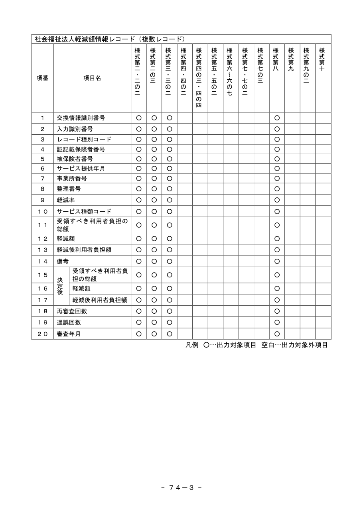
| 項番 | 項目名 | 属性 | 桁数 | 内容 | 必須 | 備考 | その他の列 |
|---|---|---|---|---|---|---|---|
| １ | 交換情報識別番号 | 様式第二・二の二: ○ 様式第二の三: ○ 様式第三・三の二: ○ 様式第四・四の二: － 様式第四の三・四の四: － 様式第五・五の二: － 様式第六～六の七: － 様式第七・七の二: － 様式第七の三: － 様式第八: ○ 様式第九: － 様式第九の二: － 様式第十: － | |||||
| ２ | 入力識別番号 | 様式第二・二の二: ○ 様式第二の三: ○ 様式第三・三の二: ○ 様式第四・四の二: － 様式第四の三・四の四: － 様式第五・五の二: － 様式第六～六の七: － 様式第七・七の二: － 様式第七の三: － 様式第八: ○ 様式第九: － 様式第九の二: － 様式第十: － | |||||
| ３ | レコード種別コード | 様式第二・二の二: ○ 様式第二の三: ○ 様式第三・三の二: ○ 様式第四・四の二: － 様式第四の三・四の四: － 様式第五・五の二: － 様式第六～六の七: － 様式第七・七の二: － 様式第七の三: － 様式第八: ○ 様式第九: － 様式第九の二: － 様式第十: － | |||||
| ４ | 証記載保険者番号 | 様式第二・二の二: ○ 様式第二の三: ○ 様式第三・三の二: ○ 様式第四・四の二: － 様式第四の三・四の四: － 様式第五・五の二: － 様式第六～六の七: － 様式第七・七の二: － 様式第七の三: － 様式第八: ○ 様式第九: － 様式第九の二: － 様式第十: － | |||||
| ５ | 被保険者番号 | 様式第二・二の二: ○ 様式第二の三: ○ 様式第三・三の二: ○ 様式第四・四の二: － 様式第四の三・四の四: － 様式第五・五の二: － 様式第六～六の七: － 様式第七・七の二: － 様式第七の三: － 様式第八: ○ 様式第九: － 様式第九の二: － 様式第十: － | |||||
| ６ | サービス提供年月 | 様式第二・二の二: ○ 様式第二の三: ○ 様式第三・三の二: ○ 様式第四・四の二: － 様式第四の三・四の四: － 様式第五・五の二: － 様式第六～六の七: － 様式第七・七の二: － 様式第七の三: － 様式第八: ○ 様式第九: － 様式第九の二: － 様式第十: － | |||||
| ７ | 事業所番号 | 様式第二・二の二: ○ 様式第二の三: ○ 様式第三・三の二: ○ 様式第四・四の二: － 様式第四の三・四の四: － 様式第五・五の二: － 様式第六～六の七: － 様式第七・七の二: － 様式第七の三: － 様式第八: ○ 様式第九: － 様式第九の二: － 様式第十: － | |||||
| ８ | 整理番号 | 様式第二・二の二: ○ 様式第二の三: ○ 様式第三・三の二: ○ 様式第四・四の二: － 様式第四の三・四の四: － 様式第五・五の二: － 様式第六～六の七: － 様式第七・七の二: － 様式第七の三: － 様式第八: ○ 様式第九: － 様式第九の二: － 様式第十: － | |||||
| ９ | 軽減率 | 様式第二・二の二: ○ 様式第二の三: ○ 様式第三・三の二: ○ 様式第四・四の二: － 様式第四の三・四の四: － 様式第五・五の二: － 様式第六～六の七: － 様式第七・七の二: － 様式第七の三: － 様式第八: ○ 様式第九: － 様式第九の二: － 様式第十: － | |||||
| １０ | サービス種類コード | 様式第二・二の二: ○ 様式第二の三: ○ 様式第三・三の二: ○ 様式第四・四の二: － 様式第四の三・四の四: － 様式第五・五の二: － 様式第六～六の七: － 様式第七・七の二: － 様式第七の三: － 様式第八: ○ 様式第九: － 様式第九の二: － 様式第十: － | |||||
| １１ | 受領すべき利用者負担の総額 | 様式第二・二の二: ○ 様式第二の三: ○ 様式第三・三の二: ○ 様式第四・四の二: － 様式第四の三・四の四: － 様式第五・五の二: － 様式第六～六の七: － 様式第七・七の二: － 様式第七の三: － 様式第八: ○ 様式第九: － 様式第九の二: － 様式第十: － | |||||
| １２ | 軽減額 | 様式第二・二の二: ○ 様式第二の三: ○ 様式第三・三の二: ○ 様式第四・四の二: － 様式第四の三・四の四: － 様式第五・五の二: － 様式第六～六の七: － 様式第七・七の二: － 様式第七の三: － 様式第八: ○ 様式第九: － 様式第九の二: － 様式第十: － | |||||
| １３ | 軽減後利用者負担額 | 様式第二・二の二: ○ 様式第二の三: ○ 様式第三・三の二: ○ 様式第四・四の二: － 様式第四の三・四の四: － 様式第五・五の二: － 様式第六～六の七: － 様式第七・七の二: － 様式第七の三: － 様式第八: ○ 様式第九: － 様式第九の二: － 様式第十: － | |||||
| １４ | 備考 | 様式第二・二の二: ○ 様式第二の三: ○ 様式第三・三の二: ○ 様式第四・四の二: － 様式第四の三・四の四: － 様式第五・五の二: － 様式第六～六の七: － 様式第七・七の二: － 様式第七の三: － 様式第八: ○ 様式第九: － 様式第九の二: － 様式第十: － | |||||
| １５ | 決定後 > 受領すべき利用者負担の総額 | 様式第二・二の二: ○ 様式第二の三: ○ 様式第三・三の二: ○ 様式第四・四の二: － 様式第四の三・四の四: － 様式第五・五の二: － 様式第六～六の七: － 様式第七・七の二: － 様式第七の三: － 様式第八: ○ 様式第九: － 様式第九の二: － 様式第十: － | |||||
| １６ | 決定後 > 軽減額 | 様式第二・二の二: ○ 様式第二の三: ○ 様式第三・三の二: ○ 様式第四・四の二: － 様式第四の三・四の四: － 様式第五・五の二: － 様式第六～六の七: － 様式第七・七の二: － 様式第七の三: － 様式第八: ○ 様式第九: － 様式第九の二: － 様式第十: － | |||||
| １７ | 決定後 > 軽減後利用者負担額 | 様式第二・二の二: ○ 様式第二の三: ○ 様式第三・三の二: ○ 様式第四・四の二: － 様式第四の三・四の四: － 様式第五・五の二: － 様式第六～六の七: － 様式第七・七の二: － 様式第七の三: － 様式第八: ○ 様式第九: － 様式第九の二: － 様式第十: － | |||||
| １８ | 再審査回数 | 様式第二・二の二: ○ 様式第二の三: ○ 様式第三・三の二: ○ 様式第四・四の二: － 様式第四の三・四の四: － 様式第五・五の二: － 様式第六～六の七: － 様式第七・七の二: － 様式第七の三: － 様式第八: ○ 様式第九: － 様式第九の二: － 様式第十: － | |||||
| １９ | 過誤回数 | 様式第二・二の二: ○ 様式第二の三: ○ 様式第三・三の二: ○ 様式第四・四の二: － 様式第四の三・四の四: － 様式第五・五の二: － 様式第六～六の七: － 様式第七・七の二: － 様式第七の三: － 様式第八: ○ 様式第九: － 様式第九の二: － 様式第十: － | |||||
| ２０ | 審査年月 | 様式第二・二の二: ○ 様式第二の三: ○ 様式第三・三の二: ○ 様式第四・四の二: － 様式第四の三・四の四: － 様式第五・五の二: － 様式第六～六の七: － 様式第七・七の二: － 様式第七の三: － 様式第八: ○ 様式第九: － 様式第九の二: － 様式第十: － |
| 項番 | 項目名 | 属性 | 桁数 | 内容 | 必須 | 備考 | その他の列 |
|---|---|---|---|---|---|---|---|
| 1 | 交換情報識別番号 | 様式第二・二の二:○ 様式第二の三:○ 様式第三・三の二:○ 様式第四・四の二:－ 様式第四の三・四の四:－ 様式第五・五の二:－ 様式第六～六の七:－ 様式第七・七の二:－ 様式第七の三:－ 様式第八:○ 様式第九:－ 様式第九の二:－ 様式第十:－ | |||||
| 2 | 入力識別番号 | 様式第二・二の二:○ 様式第二の三:○ 様式第三・三の二:○ 様式第四・四の二:－ 様式第四の三・四の四:－ 様式第五・五の二:－ 様式第六～六の七:－ 様式第七・七の二:－ 様式第七の三:－ 様式第八:○ 様式第九:－ 様式第九の二:－ 様式第十:－ | |||||
| 3 | レコード種別コード | 様式第二・二の二:○ 様式第二の三:○ 様式第三・三の二:○ 様式第四・四の二:－ 様式第四の三・四の四:－ 様式第五・五の二:－ 様式第六～六の七:－ 様式第七・七の二:－ 様式第七の三:－ 様式第八:○ 様式第九:－ 様式第九の二:－ 様式第十:－ | |||||
| 4 | 証記載保険者番号 | 様式第二・二の二:○ 様式第二の三:○ 様式第三・三の二:○ 様式第四・四の二:－ 様式第四の三・四の四:－ 様式第五・五の二:－ 様式第六～六の七:－ 様式第七・七の二:－ 様式第七の三:－ 様式第八:○ 様式第九:－ 様式第九の二:－ 様式第十:－ | |||||
| 5 | 被保険者番号 | 様式第二・二の二:○ 様式第二の三:○ 様式第三・三の二:○ 様式第四・四の二:－ 様式第四の三・四の四:－ 様式第五・五の二:－ 様式第六～六の七:－ 様式第七・七の二:－ 様式第七の三:－ 様式第八:○ 様式第九:－ 様式第九の二:－ 様式第十:－ | |||||
| 6 | サービス提供年月 | 様式第二・二の二:○ 様式第二の三:○ 様式第三・三の二:○ 様式第四・四の二:－ 様式第四の三・四の四:－ 様式第五・五の二:－ 様式第六～六の七:－ 様式第七・七の二:－ 様式第七の三:－ 様式第八:○ 様式第九:－ 様式第九の二:－ 様式第十:－ | |||||
| 7 | 事業所番号 | 様式第二・二の二:○ 様式第二の三:○ 様式第三・三の二:○ 様式第四・四の二:－ 様式第四の三・四の四:－ 様式第五・五の二:－ 様式第六～六の七:－ 様式第七・七の二:－ 様式第七の三:－ 様式第八:○ 様式第九:－ 様式第九の二:－ 様式第十:－ | |||||
| 8 | 整理番号 | 様式第二・二の二:○ 様式第二の三:○ 様式第三・三の二:○ 様式第四・四の二:－ 様式第四の三・四の四:－ 様式第五・五の二:－ 様式第六～六の七:－ 様式第七・七の二:－ 様式第七の三:－ 様式第八:○ 様式第九:－ 様式第九の二:－ 様式第十:－ | |||||
| 9 | 軽減率 | 様式第二・二の二:○ 様式第二の三:○ 様式第三・三の二:○ 様式第四・四の二:－ 様式第四の三・四の四:－ 様式第五・五の二:－ 様式第六～六の七:－ 様式第七・七の二:－ 様式第七の三:－ 様式第八:○ 様式第九:－ 様式第九の二:－ 様式第十:－ | |||||
| 10 | サービス種類コード | 様式第二・二の二:○ 様式第二の三:○ 様式第三・三の二:○ 様式第四・四の二:－ 様式第四の三・四の四:－ 様式第五・五の二:－ 様式第六～六の七:－ 様式第七・七の二:－ 様式第七の三:－ 様式第八:○ 様式第九:－ 様式第九の二:－ 様式第十:－ | |||||
| 11 | 受領すべき利用者負担の総額 | 様式第二・二の二:○ 様式第二の三:○ 様式第三・三の二:○ 様式第四・四の二:－ 様式第四の三・四の四:－ 様式第五・五の二:－ 様式第六～六の七:－ 様式第七・七の二:－ 様式第七の三:－ 様式第八:○ 様式第九:－ 様式第九の二:－ 様式第十:－ | |||||
| 12 | 軽減額 | 様式第二・二の二:○ 様式第二の三:○ 様式第三・三の二:○ 様式第四・四の二:－ 様式第四の三・四の四:－ 様式第五・五の二:－ 様式第六～六の七:－ 様式第七・七の二:－ 様式第七の三:－ 様式第八:○ 様式第九:－ 様式第九の二:－ 様式第十:－ | |||||
| 13 | 軽減後利用者負担額 | 様式第二・二の二:○ 様式第二の三:○ 様式第三・三の二:○ 様式第四・四の二:－ 様式第四の三・四の四:－ 様式第五・五の二:－ 様式第六～六の七:－ 様式第七・七の二:－ 様式第七の三:－ 様式第八:○ 様式第九:－ 様式第九の二:－ 様式第十:－ | |||||
| 14 | 備考 | 様式第二・二の二:○ 様式第二の三:○ 様式第三・三の二:○ 様式第四・四の二:－ 様式第四の三・四の四:－ 様式第五・五の二:－ 様式第六～六の七:－ 様式第七・七の二:－ 様式第七の三:－ 様式第八:○ 様式第九:－ 様式第九の二:－ 様式第十:－ | |||||
| 15 | 決定後 > 受領すべき利用者負担の総額 | 様式第二・二の二:○ 様式第二の三:○ 様式第三・三の二:○ 様式第四・四の二:－ 様式第四の三・四の四:－ 様式第五・五の二:－ 様式第六～六の七:－ 様式第七・七の二:－ 様式第七の三:－ 様式第八:○ 様式第九:－ 様式第九の二:－ 様式第十:－ | |||||
| 16 | 決定後 > 軽減額 | 様式第二・二の二:○ 様式第二の三:○ 様式第三・三の二:○ 様式第四・四の二:－ 様式第四の三・四の四:－ 様式第五・五の二:－ 様式第六～六の七:－ 様式第七・七の二:－ 様式第七の三:－ 様式第八:○ 様式第九:－ 様式第九の二:－ 様式第十:－ | |||||
| 17 | 決定後 > 軽減後利用者負担額 | 様式第二・二の二:○ 様式第二の三:○ 様式第三・三の二:○ 様式第四・四の二:－ 様式第四の三・四の四:－ 様式第五・五の二:－ 様式第六～六の七:－ 様式第七・七の二:－ 様式第七の三:－ 様式第八:○ 様式第九:－ 様式第九の二:－ 様式第十:－ | |||||
| 18 | 再審査回数 | 様式第二・二の二:○ 様式第二の三:○ 様式第三・三の二:○ 様式第四・四の二:－ 様式第四の三・四の四:－ 様式第五・五の二:－ 様式第六～六の七:－ 様式第七・七の二:－ 様式第七の三:－ 様式第八:○ 様式第九:－ 様式第九の二:－ 様式第十:－ | |||||
| 19 | 過誤回数 | 様式第二・二の二:○ 様式第二の三:○ 様式第三・三の二:○ 様式第四・四の二:－ 様式第四の三・四の四:－ 様式第五・五の二:－ 様式第六～六の七:－ 様式第七・七の二:－ 様式第七の三:－ 様式第八:○ 様式第九:－ 様式第九の二:－ 様式第十:－ | |||||
| 20 | 審査年月 | 様式第二・二の二:○ 様式第二の三:○ 様式第三・三の二:○ 様式第四・四の二:－ 様式第四の三・四の四:－ 様式第五・五の二:－ 様式第六～六の七:－ 様式第七・七の二:－ 様式第七の三:－ 様式第八:○ 様式第九:－ 様式第九の二:－ 様式第十:－ |
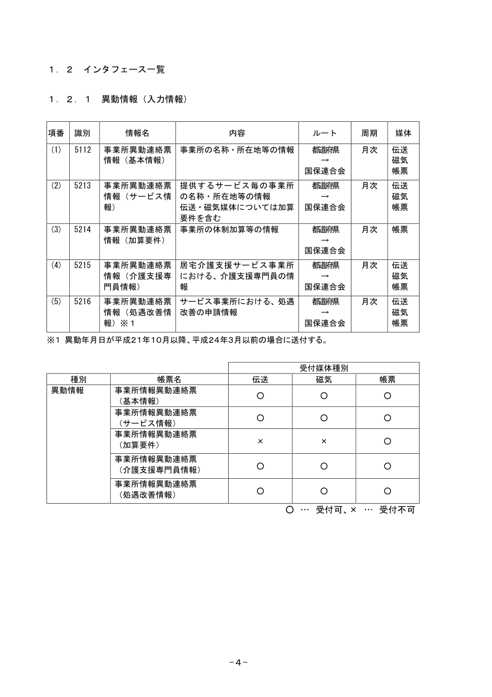
| 項番 | 項目名 | 属性 | 桁数 | 内容 | 必須 | 備考 | その他の列 |
|---|---|---|---|---|---|---|---|
| (1) | 事業所異動連絡票情報（基本情報） | 事業所の名称・所在地等の情報 | 識別: 5112 ルート: 都道府県→国保連合会 周期: 月次 媒体: 伝送 磁気 帳票 | ||||
| (2) | 事業所異動連絡票情報（サービス情報） | 提供するサービス毎の事業所の名称・所在地等の情報 伝送・磁気媒体については加算要件を含む | 識別: 5213 ルート: 都道府県→国保連合会 周期: 月次 媒体: 伝送 磁気 帳票 | ||||
| (3) | 事業所異動連絡票情報（加算要件） | 事業所の体制加算等の情報 | 識別: 5214 ルート: 都道府県→国保連合会 周期: 月次 媒体: 帳票 | ||||
| (4) | 事業所異動連絡票情報（介護支援専門員情報） | 居宅介護支援サービス事業所における、介護支援専門員の情報 | 識別: 5215 ルート: 都道府県→国保連合会 周期: 月次 媒体: 伝送 磁気 帳票 | ||||
| (5) | 事業所異動連絡票情報（処遇改善情報）※1 | サービス事業所における、処遇改善の申請情報 | 識別: 5216 ルート: 都道府県→国保連合会 周期: 月次 媒体: 伝送 磁気 帳票 |
| 項番 | 項目名 | 属性 | 桁数 | 内容 | 必須 | 備考 | その他の列 |
|---|---|---|---|---|---|---|---|
| 異動情報 > 事業所情報異動連絡票（基本情報） | 種別: 異動情報 受付媒体種別 > 伝送: ○ 受付媒体種別 > 磁気: ○ 受付媒体種別 > 帳票: ○ | ||||||
| 異動情報 > 事業所情報異動連絡票（サービス情報） | 種別: － 受付媒体種別 > 伝送: ○ 受付媒体種別 > 磁気: ○ 受付媒体種別 > 帳票: ○ | ||||||
| 異動情報 > 事業所情報異動連絡票（加算要件） | 種別: － 受付媒体種別 > 伝送: × 受付媒体種別 > 磁気: × 受付媒体種別 > 帳票: ○ | ||||||
| 異動情報 > 事業所情報異動連絡票（介護支援専門員情報） | 種別: － 受付媒体種別 > 伝送: ○ 受付媒体種別 > 磁気: ○ 受付媒体種別 > 帳票: ○ | ||||||
| 異動情報 > 事業所情報異動連絡票（処遇改善情報） | 種別: － 受付媒体種別 > 伝送: ○ 受付媒体種別 > 磁気: ○ 受付媒体種別 > 帳票: ○ |
| 項番 | 項目名 | 属性 | 桁数 | 内容 | 必須 | 備考 | その他の列 |
|---|---|---|---|---|---|---|---|
| (1) | 事業所異動連絡票情報（基本情報） | 事業所の名称・所在地等の情報 | 識別: 5112 ルート: 都道府県 → 国保連合会 周期: 月次 媒体: 伝送 磁気 帳票 | ||||
| (2) | 事業所異動連絡票情報（サービス情報） | 提供するサービス毎の事業所の名称・所在地等の情報 伝送・磁気媒体については加算要件を含む | 識別: 5213 ルート: 都道府県 → 国保連合会 周期: 月次 媒体: 伝送 磁気 帳票 | ||||
| (3) | 事業所異動連絡票情報（加算要件） | 事業所の体制加算等の情報 | 識別: 5214 ルート: 都道府県 → 国保連合会 周期: 月次 媒体: 帳票 | ||||
| (4) | 事業所異動連絡票情報（介護支援専門員情報） | 居宅介護支援サービス事業所における、介護支援専門員の情報 | 識別: 5215 ルート: 都道府県 → 国保連合会 周期: 月次 媒体: 伝送 磁気 帳票 | ||||
| (5) | 事業所異動連絡票情報（処遇改善情報）※1 | サービス事業所における、処遇改善の申請情報 | 識別: 5216 ルート: 都道府県 → 国保連合会 周期: 月次 媒体: 伝送 磁気 帳票 |
| 項番 | 項目名 | 属性 | 桁数 | 内容 | 必須 | 備考 | その他の列 |
|---|---|---|---|---|---|---|---|
| 事業所情報異動連絡票（基本情報） | 種別: 異動情報 受付媒体種別 > 伝送: ○ 受付媒体種別 > 磁気: ○ 受付媒体種別 > 帳票: ○ | ||||||
| 事業所情報異動連絡票（サービス情報） | 種別: 異動情報 受付媒体種別 > 伝送: ○ 受付媒体種別 > 磁気: ○ 受付媒体種別 > 帳票: ○ | ||||||
| 事業所情報異動連絡票（加算要件） | 種別: 異動情報 受付媒体種別 > 伝送: × 受付媒体種別 > 磁気: × 受付媒体種別 > 帳票: ○ | ||||||
| 事業所情報異動連絡票（介護支援専門員情報） | 種別: 異動情報 受付媒体種別 > 伝送: ○ 受付媒体種別 > 磁気: ○ 受付媒体種別 > 帳票: ○ | ||||||
| 事業所情報異動連絡票（処遇改善情報） | 種別: 異動情報 受付媒体種別 > 伝送: ○ 受付媒体種別 > 磁気: ○ 受付媒体種別 > 帳票: ○ |
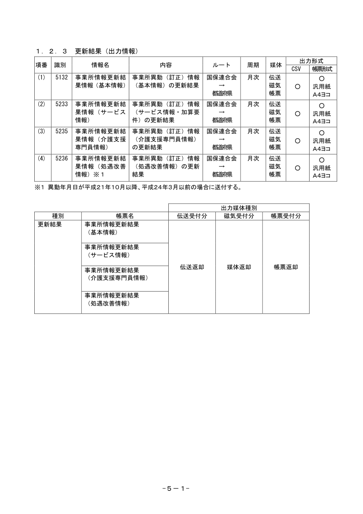
| 項番 | 項目名 | 属性 | 桁数 | 内容 | 必須 | 備考 | その他の列 |
|---|---|---|---|---|---|---|---|
| (1) | 事業所情報更新結果情報（基本情報） | 事業所異動（訂正）情報（基本情報）の更新結果 | 識別: 5132 ルート: 国保連合会→都道府県 周期: 月次 媒体: 伝送 磁気 帳票 出力形式 > CSV: ○ 出力形式 > 帳票形式: ○ 汎用紙A4ヨコ | ||||
| (2) | 事業所情報更新結果情報（サービス情報） | 事業所異動（訂正）情報（サービス情報・加算要件）の更新結果 | 識別: 5233 ルート: 国保連合会→都道府県 周期: 月次 媒体: 伝送 磁気 帳票 出力形式 > CSV: ○ 出力形式 > 帳票形式: ○ 汎用紙A4ヨコ | ||||
| (3) | 事業所情報更新結果情報（介護支援専門員情報） | 事業所異動（訂正）情報（介護支援専門員情報）の更新結果 | 識別: 5235 ルート: 国保連合会→都道府県 周期: 月次 媒体: 伝送 磁気 帳票 出力形式 > CSV: ○ 出力形式 > 帳票形式: ○ 汎用紙A4ヨコ | ||||
| (4) | 事業所情報更新結果情報（処遇改善情報）※1 | 事業所異動（訂正）情報（処遇改善情報）の更新結果 | 識別: 5236 ルート: 国保連合会→都道府県 周期: 月次 媒体: 伝送 磁気 帳票 出力形式 > CSV: ○ 出力形式 > 帳票形式: ○ 汎用紙A4ヨコ |
| 項番 | 項目名 | 属性 | 桁数 | 内容 | 必須 | 備考 | その他の列 |
|---|---|---|---|---|---|---|---|
| 更新結果 > 事業所情報更新結果（基本情報） | 種別: 更新結果 出力媒体種別 > 伝送受付分: 伝送返却 出力媒体種別 > 磁気受付分: 媒体返却 出力媒体種別 > 帳票受付分: 帳票返却 | ||||||
| 更新結果 > 事業所情報更新結果（サービス情報） | 種別: 更新結果 出力媒体種別 > 伝送受付分: 伝送返却 出力媒体種別 > 磁気受付分: 媒体返却 出力媒体種別 > 帳票受付分: 帳票返却 | ||||||
| 更新結果 > 事業所情報更新結果（介護支援専門員情報） | 種別: 更新結果 出力媒体種別 > 伝送受付分: 伝送返却 出力媒体種別 > 磁気受付分: 媒体返却 出力媒体種別 > 帳票受付分: 帳票返却 | ||||||
| 更新結果 > 事業所情報更新結果（処遇改善情報） | 種別: 更新結果 出力媒体種別 > 伝送受付分: 伝送返却 出力媒体種別 > 磁気受付分: 媒体返却 出力媒体種別 > 帳票受付分: 帳票返却 |
| 項番 | 項目名 | 属性 | 桁数 | 内容 | 必須 | 備考 | その他の列 |
|---|---|---|---|---|---|---|---|
| (1) | 事業所情報更新結果情報（基本情報） | 事業所異動（訂正）情報（基本情報）の更新結果 | 識別: 5132 ルート: 国保連合会 → 都道府県 周期: 月次 媒体: 伝送 磁気 帳票 出力形式 > CSV: ○ 出力形式 > 帳票形式: ○ 汎用紙 A4ヨコ | ||||
| (2) | 事業所情報更新結果情報（サービス情報） | 事業所異動（訂正）情報（サービス情報・加算要件）の更新結果 | 識別: 5233 ルート: 国保連合会 → 都道府県 周期: 月次 媒体: 伝送 磁気 帳票 出力形式 > CSV: ○ 出力形式 > 帳票形式: ○ 汎用紙 A4ヨコ | ||||
| (3) | 事業所情報更新結果情報（介護支援専門員情報） | 事業所異動（訂正）情報（介護支援専門員情報）の更新結果 | 識別: 5235 ルート: 国保連合会 → 都道府県 周期: 月次 媒体: 伝送 磁気 帳票 出力形式 > CSV: ○ 出力形式 > 帳票形式: ○ 汎用紙 A4ヨコ | ||||
| (4) | 事業所情報更新結果情報（処遇改善情報）※１ | 事業所異動（訂正）情報（処遇改善情報）の更新結果 | 識別: 5236 ルート: 国保連合会 → 都道府県 周期: 月次 媒体: 伝送 磁気 帳票 出力形式 > CSV: ○ 出力形式 > 帳票形式: ○ 汎用紙 A4ヨコ |
| 項番 | 項目名 | 属性 | 桁数 | 内容 | 必須 | 備考 | その他の列 |
|---|---|---|---|---|---|---|---|
| 事業所情報更新結果（基本情報） | 種別: 更新結果 出力媒体種別 > 伝送受付分: 伝送返却 出力媒体種別 > 磁気受付分: 媒体返却 出力媒体種別 > 帳票受付分: 帳票返却 | ||||||
| 事業所情報更新結果（サービス情報） | 種別: 更新結果 出力媒体種別 > 伝送受付分: 伝送返却 出力媒体種別 > 磁気受付分: 媒体返却 出力媒体種別 > 帳票受付分: 帳票返却 | ||||||
| 事業所情報更新結果（介護支援専門員情報） | 種別: 更新結果 出力媒体種別 > 伝送受付分: 伝送返却 出力媒体種別 > 磁気受付分: 媒体返却 出力媒体種別 > 帳票受付分: 帳票返却 | ||||||
| 事業所情報更新結果（処遇改善情報） | 種別: 更新結果 出力媒体種別 > 伝送受付分: 伝送返却 出力媒体種別 > 磁気受付分: 媒体返却 出力媒体種別 > 帳票受付分: 帳票返却 |
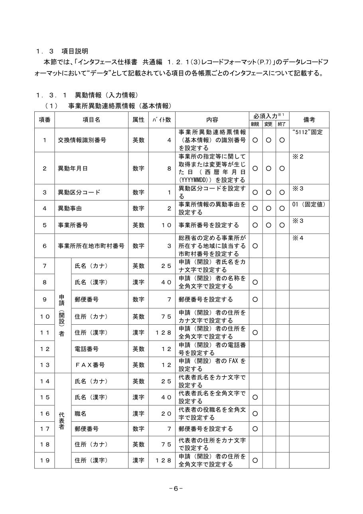
| 項番 | 項目名 | 属性 | 桁数 | 内容 | 必須 | 備考 | その他の列 |
|---|---|---|---|---|---|---|---|
| １ | 交換情報識別番号 | 英数 | 4 | 事業所異動連絡票情報（基本情報）の識別番号を設定する | 必須入力※１ > 新規:○ 必須入力※１ > 変更:○ 必須入力※１ > 終了:○ | “5112”固定 | |
| ２ | 異動年月日 | 数字 | 8 | 事業所の指定等に関して取得または変更等が生じた日（西暦年月日(YYYYMMDD)）を設定する | 必須入力※１ > 新規:○ 必須入力※１ > 変更:○ 必須入力※１ > 終了:○ | ※２ | |
| ３ | 異動区分コード | 数字 | 1 | 異動区分コードを設定する | 必須入力※１ > 新規:○ 必須入力※１ > 変更:○ 必須入力※１ > 終了:○ | ※３ | |
| ４ | 異動事由 | 数字 | 2 | 事業所情報の異動事由を設定する | 必須入力※１ > 新規:○ 必須入力※１ > 変更:○ 必須入力※１ > 終了:○ | 01（固定値） | |
| ５ | 事業所番号 | 英数 | 10 | 事業所番号を設定する | 必須入力※１ > 新規:○ 必須入力※１ > 変更:○ 必須入力※１ > 終了:○ | ※３ | |
| ６ | 事業所所在地市町村番号 | 数字 | 3 | 総務省の定める事業所が所在する地域に該当する市町村番号を設定する | 必須入力※１ > 新規:○ 必須入力※１ > 変更:－ 必須入力※１ > 終了:－ | ※４ | |
| ７ | 申請（開設）者 > 氏名（カナ） | 英数 | 25 | 申請（開設）者氏名をカナ文字で設定する | 必須入力※１ > 新規:－ 必須入力※１ > 変更:－ 必須入力※１ > 終了:－ | ||
| ８ | 申請（開設）者 > 氏名（漢字） | 漢字 | 40 | 申請（開設）者の名称を全角文字で設定する | 必須入力※１ > 新規:○ 必須入力※１ > 変更:－ 必須入力※１ > 終了:－ | ||
| ９ | 申請（開設）者 > 郵便番号 | 数字 | 7 | 郵便番号を設定する | 必須入力※１ > 新規:○ 必須入力※１ > 変更:－ 必須入力※１ > 終了:－ | ||
| １０ | 申請（開設）者 > 住所（カナ） | 英数 | 75 | 申請（開設）者の住所をカナ文字で設定する | 必須入力※１ > 新規:－ 必須入力※１ > 変更:－ 必須入力※１ > 終了:－ | ||
| １１ | 申請（開設）者 > 住所（漢字） | 漢字 | 128 | 申請（開設）者の住所を全角文字で設定する | 必須入力※１ > 新規:○ 必須入力※１ > 変更:－ 必須入力※１ > 終了:－ | ||
| １２ | 申請（開設）者 > 電話番号 | 英数 | 12 | 申請（開設）者の電話番号を設定する | 必須入力※１ > 新規:－ 必須入力※１ > 変更:－ 必須入力※１ > 終了:－ | ||
| １３ | 申請（開設）者 > ＦＡＸ番号 | 英数 | 12 | 申請（開設）者の FAX を設定する | 必須入力※１ > 新規:－ 必須入力※１ > 変更:－ 必須入力※１ > 終了:－ | ||
| １４ | 代表者 > 氏名（カナ） | 英数 | 25 | 代表者氏名をカナ文字で設定する | 必須入力※１ > 新規:－ 必須入力※１ > 変更:－ 必須入力※１ > 終了:－ | ||
| １５ | 代表者 > 氏名（漢字） | 漢字 | 40 | 代表者氏名を全角文字で設定する | 必須入力※１ > 新規:○ 必須入力※１ > 変更:－ 必須入力※１ > 終了:－ | ||
| １６ | 代表者 > 職名 | 漢字 | 20 | 代表者の役職名を全角文字で設定する | 必須入力※１ > 新規:○ 必須入力※１ > 変更:－ 必須入力※１ > 終了:－ | ||
| １７ | 代表者 > 郵便番号 | 数字 | 7 | 郵便番号を設定する | 必須入力※１ > 新規:○ 必須入力※１ > 変更:－ 必須入力※１ > 終了:－ | ||
| １８ | 代表者 > 住所（カナ） | 英数 | 75 | 代表者の住所をカナ文字で設定する | 必須入力※１ > 新規:－ 必須入力※１ > 変更:－ 必須入力※１ > 終了:－ | ||
| １９ | 代表者 > 住所（漢字） | 漢字 | 128 | 申請（開設）者の住所を全角文字で設定する | 必須入力※１ > 新規:○ 必須入力※１ > 変更:－ 必須入力※１ > 終了:－ |
| 項番 | 項目名 | 属性 | 桁数 | 内容 | 必須 | 備考 | その他の列 |
|---|---|---|---|---|---|---|---|
| 1 | 交換情報識別番号 | 英数 | 4 | 事業所異動連絡票情報（基本情報）の識別番号を設定する | 必須入力 > 新規:○ 必須入力 > 変更:○ 必須入力 > 終了:○ | “5112”固定 | |
| 2 | 異動年月日 | 数字 | 8 | 事業所の指定等に関して取得または変更等が生じた日（西暦年月日(YYYYMMDD)）を設定する | 必須入力 > 新規:○ 必須入力 > 変更:○ 必須入力 > 終了:○ | ※2 | |
| 3 | 異動区分コード | 数字 | 1 | 異動区分コードを設定する | 必須入力 > 新規:○ 必須入力 > 変更:○ 必須入力 > 終了:○ | ※3 | |
| 4 | 異動事由 | 数字 | 2 | 事業所情報の異動事由を設定する | 必須入力 > 新規:○ 必須入力 > 変更:○ 必須入力 > 終了:○ | 01（固定値） | |
| 5 | 事業所番号 | 英数 | 10 | 事業所番号を設定する | 必須入力 > 新規:○ 必須入力 > 変更:○ 必須入力 > 終了:○ | ※3 | |
| 6 | 事業所所在地市町村番号 | 数字 | 3 | 総務省の定める事業所が所在する地域に該当する市町村番号を設定する | 必須入力 > 新規:○ 必須入力 > 変更:－ 必須入力 > 終了:－ | ※4 | |
| 7 | 申請（開設）者 > 氏名（カナ） | 英数 | 25 | 申請（開設）者氏名をカナ文字で設定する | 必須入力 > 新規:－ 必須入力 > 変更:－ 必須入力 > 終了:－ | ||
| 8 | 申請（開設）者 > 氏名（漢字） | 漢字 | 40 | 申請（開設）者の名称を全角文字で設定する | 必須入力 > 新規:○ 必須入力 > 変更:－ 必須入力 > 終了:－ | ||
| 9 | 申請（開設）者 > 郵便番号 | 数字 | 7 | 郵便番号を設定する | 必須入力 > 新規:○ 必須入力 > 変更:－ 必須入力 > 終了:－ | ||
| 10 | 申請（開設）者 > 住所（カナ） | 英数 | 75 | 申請（開設）者の住所をカナ文字で設定する | 必須入力 > 新規:－ 必須入力 > 変更:－ 必須入力 > 終了:－ | ||
| 11 | 申請（開設）者 > 住所（漢字） | 漢字 | 128 | 申請（開設）者の住所を全角文字で設定する | 必須入力 > 新規:○ 必須入力 > 変更:－ 必須入力 > 終了:－ | ||
| 12 | 申請（開設）者 > 電話番号 | 英数 | 12 | 申請（開設）者の電話番号を設定する | 必須入力 > 新規:－ 必須入力 > 変更:－ 必須入力 > 終了:－ | ||
| 13 | 申請（開設）者 > ＦＡＸ番号 | 英数 | 12 | 申請（開設）者の FAX を設定する | 必須入力 > 新規:－ 必須入力 > 変更:－ 必須入力 > 終了:－ | ||
| 14 | 代表者 > 氏名（カナ） | 英数 | 25 | 代表者氏名をカナ文字で設定する | 必須入力 > 新規:－ 必須入力 > 変更:－ 必須入力 > 終了:－ | ||
| 15 | 代表者 > 氏名（漢字） | 漢字 | 40 | 代表者氏名を全角文字で設定する | 必須入力 > 新規:○ 必須入力 > 変更:－ 必須入力 > 終了:－ | ||
| 16 | 代表者 > 職名 | 漢字 | 20 | 代表者の役職名を全角文字で設定する | 必須入力 > 新規:○ 必須入力 > 変更:－ 必須入力 > 終了:－ | ||
| 17 | 代表者 > 郵便番号 | 数字 | 7 | 郵便番号を設定する | 必須入力 > 新規:○ 必須入力 > 変更:－ 必須入力 > 終了:－ | ||
| 18 | 代表者 > 住所（カナ） | 英数 | 75 | 代表者の住所をカナ文字で設定する | 必須入力 > 新規:－ 必須入力 > 変更:－ 必須入力 > 終了:－ | ||
| 19 | 代表者 > 住所（漢字） | 漢字 | 128 | 申請（開設）者の住所を全角文字で設定する | 必須入力 > 新規:○ 必須入力 > 変更:－ 必須入力 > 終了:－ |
| 項番 | 項目名 | 属性 | 桁数 | 内容 | 必須 | 備考 | その他の列 |
|---|---|---|---|---|---|---|---|
| ２０ | 法人等種別コード | 数字 | 2 | 事業所の法人等の種別をコードで設定する | 必須入力※1 > 新規:○ 必須入力※1 > 変更:－ 必須入力※1 > 終了:－ | ※3 | |
| ２１ | 指定／基準該当等事業所区分コード | 数字 | 1 | 指定又は基準該当等の事業所の区分をコードで設定する | 必須入力※1 > 新規:○ 必須入力※1 > 変更:－ 必須入力※1 > 終了:－ | ※3 ※5 ※6 |
| 項番 | 項目名 | 属性 | 桁数 | 内容 | 必須 | 備考 | その他の列 |
|---|---|---|---|---|---|---|---|
| コード: 1 介護（介護予防）サービス: 指定事業所 地域密着型サービス: 情報なし 介護予防・日常生活支援総合事業サービス（経過措置）: 情報なし、又は、 みなし指定事業所 介護予防・日常生活支援総合事業サービス: 情報なし、又は、 指定事業所 | |||||||
| コード: 2 介護（介護予防）サービス: 基準該当事業所 地域密着型サービス: 情報なし 介護予防・日常生活支援総合事業サービス（経過措置）: 情報なし、又は、 みなし指定事業所 介護予防・日常生活支援総合事業サービス: 情報なし、又は、 指定事業所 | |||||||
| コード: 3 介護（介護予防）サービス: 相当サービス事業所 地域密着型サービス: 情報なし、又は、 相当サービス事業所 介護予防・日常生活支援総合事業サービス（経過措置）: 情報なし、又は、 みなし指定事業所 介護予防・日常生活支援総合事業サービス: 情報なし、又は、 指定事業所 | |||||||
| コード: 4 介護（介護予防）サービス: その他 地域密着型サービス: 情報なし 介護予防・日常生活支援総合事業サービス（経過措置）: 情報なし、又は、 みなし指定事業所 介護予防・日常生活支援総合事業サービス: 情報なし、又は、 指定事業所 | |||||||
| コード: 5 介護（介護予防）サービス: 情報なし 地域密着型サービス: 指定事業所 介護予防・日常生活支援総合事業サービス（経過措置）: 情報なし、又は、 みなし指定事業所 介護予防・日常生活支援総合事業サービス: 情報なし、又は、 指定事業所 | |||||||
| コード: 6 介護（介護予防）サービス: 指定事業所 地域密着型サービス: みなし指定事業所 介護予防・日常生活支援総合事業サービス（経過措置）: 情報なし、又は、 みなし指定事業所 介護予防・日常生活支援総合事業サービス: 情報なし、又は、 指定事業所 | |||||||
| コード: 7 介護（介護予防）サービス: 基準該当事業所 地域密着型サービス: みなし指定事業所 介護予防・日常生活支援総合事業サービス（経過措置）: 情報なし、又は、 みなし指定事業所 介護予防・日常生活支援総合事業サービス: 情報なし、又は、 指定事業所 | |||||||
| コード: 8 介護（介護予防）サービス: 情報なし 地域密着型サービス: 情報なし 介護予防・日常生活支援総合事業サービス（経過措置）: 指定事業所 介護予防・日常生活支援総合事業サービス: 情報なし | |||||||
| コード: 9 介護（介護予防）サービス: 情報なし 地域密着型サービス: 情報なし 介護予防・日常生活支援総合事業サービス（経過措置）: 情報なし 介護予防・日常生活支援総合事業サービス: 指定事業所 |
| 項番 | 項目名 | 属性 | 桁数 | 内容 | 必須 | 備考 | その他の列 |
|---|---|---|---|---|---|---|---|
| ２０ | 法人等種別コード | 数字 | 2 | 事業所の法人等の種別をコードで設定する | 必須入力※1 > 新規:○ 必須入力※1 > 変更:－ 必須入力※1 > 終了:－ | ※３ | |
| ２１ | 指定／基準該当等事業所区分コード | 数字 | 1 | 指定又は基準該当等の事業所の区分をコードで設定する | 必須入力※1 > 新規:○ 必須入力※1 > 変更:－ 必須入力※1 > 終了:－ | ※３ ※５ ※６ |
| 項番 | 項目名 | 属性 | 桁数 | 内容 | 必須 | 備考 | その他の列 |
|---|---|---|---|---|---|---|---|
| 1 | コード: 1 介護（介護予防）サービス: 指定事業所 地域密着型サービス: 情報なし 介護予防・日常生活支援総合事業サービス（経過措置）: 情報なし、又は、みなし指定事業所 介護予防・日常生活支援総合事業サービス: 情報なし、又は、指定事業所 | ||||||
| 2 | コード: 2 介護（介護予防）サービス: 基準該当事業所 地域密着型サービス: 情報なし 介護予防・日常生活支援総合事業サービス（経過措置）: 情報なし、又は、みなし指定事業所 介護予防・日常生活支援総合事業サービス: 情報なし、又は、指定事業所 | ||||||
| 3 | コード: 3 介護（介護予防）サービス: 相当サービス事業所 地域密着型サービス: 情報なし、又は、相当サービス事業所 介護予防・日常生活支援総合事業サービス（経過措置）: 情報なし、又は、みなし指定事業所 介護予防・日常生活支援総合事業サービス: 情報なし、又は、指定事業所 | ||||||
| 4 | コード: 4 介護（介護予防）サービス: その他 地域密着型サービス: 情報なし 介護予防・日常生活支援総合事業サービス（経過措置）: 情報なし、又は、みなし指定事業所 介護予防・日常生活支援総合事業サービス: 情報なし、又は、指定事業所 | ||||||
| 5 | コード: 5 介護（介護予防）サービス: 情報なし 地域密着型サービス: 指定事業所 介護予防・日常生活支援総合事業サービス（経過措置）: 情報なし、又は、みなし指定事業所 介護予防・日常生活支援総合事業サービス: 情報なし、又は、指定事業所 | ||||||
| 6 | コード: 6 介護（介護予防）サービス: 指定事業所 地域密着型サービス: みなし指定事業所 介護予防・日常生活支援総合事業サービス（経過措置）: 情報なし、又は、みなし指定事業所 介護予防・日常生活支援総合事業サービス: 情報なし、又は、指定事業所 | ||||||
| 7 | コード: 7 介護（介護予防）サービス: 基準該当事業所 地域密着型サービス: みなし指定事業所 介護予防・日常生活支援総合事業サービス（経過措置）: 情報なし、又は、みなし指定事業所 介護予防・日常生活支援総合事業サービス: 情報なし、又は、指定事業所 | ||||||
| 8 | コード: 8 介護（介護予防）サービス: 情報なし 地域密着型サービス: 情報なし 介護予防・日常生活支援総合事業サービス（経過措置）: 指定事業所 介護予防・日常生活支援総合事業サービス: 情報なし | ||||||
| 9 | コード: 9 介護（介護予防）サービス: 情報なし 地域密着型サービス: 情報なし 介護予防・日常生活支援総合事業サービス（経過措置）: 情報なし 介護予防・日常生活支援総合事業サービス: 指定事業所 |
| 項番 | 項目名 | 属性 | 桁数 | 内容 | 必須 | 備考 | その他の列 |
|---|---|---|---|---|---|---|---|
| １ | 交換情報識別番号 | 英数 | 4 | 事業所異動連絡票情報（サービス情報）の識別番号を設定する | 必須入力※1 > 新規:○ 必須入力※1 > 変更:○ 必須入力※1 > 終了:○ | "5213"固定 | |
| ２ | 異動年月日 | 数字 | 8 | 事業所の指定等に関して取得または変更等が生じた年月日（西暦年月日(YYYYMMDD)）を設定する | 必須入力※1 > 新規:○ 必須入力※1 > 変更:○ 必須入力※1 > 終了:○ | ※２ | |
| ３ | 異動区分コード | 数字 | 1 | 異動区分コードを設定する | 必須入力※1 > 新規:○ 必須入力※1 > 変更:○ 必須入力※1 > 終了:○ | ※３ | |
| ４ | 異動事由 | 数字 | 2 | 事業所情報の異動事由を設定する | 必須入力※1 > 新規:○ 必須入力※1 > 変更:○ 必須入力※1 > 終了:○ | 01（固定値） | |
| ５ | 事業所番号 | 英数 | 10 | 事業所番号を設定する | 必須入力※1 > 新規:○ 必須入力※1 > 変更:○ 必須入力※1 > 終了:○ | ※３ ※３１ | |
| ６ | 管理者 > 氏名（カナ） | 英数 | 25 | 管理者氏名をカナ文字で設定する | 必須入力※1 > 新規:－ 必須入力※1 > 変更:－ 必須入力※1 > 終了:－ | ||
| ７ | 管理者 > 氏名（漢字） | 漢字 | 40 | 管理者氏名を全角文字で設定する | 必須入力※1 > 新規:○ 必須入力※1 > 変更:－ 必須入力※1 > 終了:－ | ||
| ８ | 管理者 > 郵便番号 | 数字 | 7 | 郵便番号を設定する | 必須入力※1 > 新規:○ 必須入力※1 > 変更:－ 必須入力※1 > 終了:－ | ||
| ９ | 管理者 > 住所（カナ） | 英数 | 75 | 管理者の住所をカナ文字で設定する | 必須入力※1 > 新規:－ 必須入力※1 > 変更:－ 必須入力※1 > 終了:－ | ||
| １０ | 管理者 > 住所（漢字） | 漢字 | 128 | 管理者の住所を全角文字で設定する | 必須入力※1 > 新規:○ 必須入力※1 > 変更:－ 必須入力※1 > 終了:－ | ||
| １１ | 事業所 > 名称（カナ） | 英数 | 25 | 事業所名称をカナ文字で設定する | 必須入力※1 > 新規:－ 必須入力※1 > 変更:－ 必須入力※1 > 終了:－ | ||
| １２ | 事業所 > 名称（漢字） | 漢字 | 40 | 事業所名称を全角文字で設定する | 必須入力※1 > 新規:○ 必須入力※1 > 変更:－ 必須入力※1 > 終了:－ | ||
| １３ | 事業所 > 郵便番号 | 数字 | 7 | 郵便番号を設定する | 必須入力※1 > 新規:○ 必須入力※1 > 変更:－ 必須入力※1 > 終了:－ | ||
| １４ | 事業所 > 住所（カナ） | 英数 | 75 | 事業所の住所をカナ文字で設定する | 必須入力※1 > 新規:－ 必須入力※1 > 変更:－ 必須入力※1 > 終了:－ | ||
| １５ | 事業所 > 住所（漢字） | 漢字 | 128 | 事業所の住所を全角文字で設定する | 必須入力※1 > 新規:○ 必須入力※1 > 変更:－ 必須入力※1 > 終了:－ | ||
| １６ | 事業所 > 電話番号 | 英数 | 12 | 事業所の電話番号を設定する | 必須入力※1 > 新規:○ 必須入力※1 > 変更:－ 必須入力※1 > 終了:－ | ||
| １７ | 事業所 > ＦＡＸ番号 | 英数 | 12 | 事業所のＦＡＸ番号を設定する | 必須入力※1 > 新規:－ 必須入力※1 > 変更:－ 必須入力※1 > 終了:－ | ||
| １８ | サービス種類コード | 英数 | 2 | サービスの種類を設定する | 必須入力※1 > 新規:○ 必須入力※1 > 変更:○ 必須入力※1 > 終了:○ | ※３ | |
| １９ | 指定番号 | 数字 | 2 | 指定番号を"01"～"99"の範囲で設定する | 必須入力※1 > 新規:○ 必須入力※1 > 変更:○ 必須入力※1 > 終了:○ | ※６ | |
| ２０ | 事業開始年月日 | 数字 | 8 | 事業開始年月日（西暦年月日(YYYYMMDD)）を設定する | 必須入力※1 > 新規:○ 必須入力※1 > 変更:－ 必須入力※1 > 終了:－ | ※２ | |
| ２１ | 事業休止年月日 | 数字 | 8 | 事業休止年月日（西暦年月日(YYYYMMDD)）を設定する | 必須入力※1 > 新規:－ 必須入力※1 > 変更:－ 必須入力※1 > 終了:－ | ※２ |
| 項番 | 項目名 | 属性 | 桁数 | 内容 | 必須 | 備考 | その他の列 |
|---|---|---|---|---|---|---|---|
| 1 | 交換情報識別番号 | 英数 | 4 | 事業所異動連絡票情報（サービス情報）の識別番号を設定する | 必須入力※1 > 新規:○ 必須入力※1 > 変更:○ 必須入力※1 > 終了:○ | “5213”固定 | |
| 2 | 異動年月日 | 数字 | 8 | 事業所の指定等に関して取得または変更等が生じた年月日（西暦年月日(YYYYMMDD)）を設定する | 必須入力※1 > 新規:○ 必須入力※1 > 変更:○ 必須入力※1 > 終了:○ | ※2 | |
| 3 | 異動区分コード | 数字 | 1 | 異動区分コードを設定する | 必須入力※1 > 新規:○ 必須入力※1 > 変更:○ 必須入力※1 > 終了:○ | ※3 | |
| 4 | 異動事由 | 数字 | 2 | 事業所情報の異動事由を設定する | 必須入力※1 > 新規:○ 必須入力※1 > 変更:○ 必須入力※1 > 終了:○ | 01（固定値） | |
| 5 | 事業所番号 | 英数 | 10 | 事業所番号を設定する | 必須入力※1 > 新規:○ 必須入力※1 > 変更:○ 必須入力※1 > 終了:○ | ※3 ※31 | |
| 6 | 管理者 > 氏名（カナ） | 英数 | 25 | 管理者氏名をカナ文字で設定する | 必須入力※1 > 新規:－ 必須入力※1 > 変更:－ 必須入力※1 > 終了:－ | ||
| 7 | 管理者 > 氏名（漢字） | 漢字 | 40 | 管理者氏名を全角文字で設定する | 必須入力※1 > 新規:○ 必須入力※1 > 変更:－ 必須入力※1 > 終了:－ | ||
| 8 | 管理者 > 郵便番号 | 数字 | 7 | 郵便番号を設定する | 必須入力※1 > 新規:○ 必須入力※1 > 変更:－ 必須入力※1 > 終了:－ | ||
| 9 | 管理者 > 住所（カナ） | 英数 | 75 | 管理者の住所をカナ文字で設定する | 必須入力※1 > 新規:－ 必須入力※1 > 変更:－ 必須入力※1 > 終了:－ | ||
| 10 | 管理者 > 住所（漢字） | 漢字 | 128 | 管理者の住所を全角文字で設定する | 必須入力※1 > 新規:○ 必須入力※1 > 変更:－ 必須入力※1 > 終了:－ | ||
| 11 | 事業所 > 名称（カナ） | 英数 | 25 | 事業所名称をカナ文字で設定する | 必須入力※1 > 新規:－ 必須入力※1 > 変更:－ 必須入力※1 > 終了:－ | ||
| 12 | 事業所 > 名称（漢字） | 漢字 | 40 | 事業所名称を全角文字で設定する | 必須入力※1 > 新規:○ 必須入力※1 > 変更:－ 必須入力※1 > 終了:－ | ||
| 13 | 事業所 > 郵便番号 | 数字 | 7 | 郵便番号を設定する | 必須入力※1 > 新規:○ 必須入力※1 > 変更:－ 必須入力※1 > 終了:－ | ||
| 14 | 事業所 > 住所（カナ） | 英数 | 75 | 事業所の住所をカナ文字で設定する | 必須入力※1 > 新規:－ 必須入力※1 > 変更:－ 必須入力※1 > 終了:－ | ||
| 15 | 事業所 > 住所（漢字） | 漢字 | 128 | 事業所の住所を全角文字で設定する | 必須入力※1 > 新規:○ 必須入力※1 > 変更:－ 必須入力※1 > 終了:－ | ||
| 16 | 事業所 > 電話番号 | 英数 | 12 | 事業所の電話番号を設定する | 必須入力※1 > 新規:○ 必須入力※1 > 変更:－ 必須入力※1 > 終了:－ | ||
| 17 | 事業所 > ＦＡＸ番号 | 英数 | 12 | 事業所のＦＡＸ番号を設定する | 必須入力※1 > 新規:－ 必須入力※1 > 変更:－ 必須入力※1 > 終了:－ | ||
| 18 | サービス種類コード | 英数 | 2 | サービスの種類を設定する | 必須入力※1 > 新規:○ 必須入力※1 > 変更:○ 必須入力※1 > 終了:○ | ※3 | |
| 19 | 指定番号 | 数字 | 2 | 指定番号を”01”～”99”の範囲で設定する | 必須入力※1 > 新規:○ 必須入力※1 > 変更:○ 必須入力※1 > 終了:○ | ※6 | |
| 20 | 事業開始年月日 | 数字 | 8 | 事業開始年月日（西暦年月日(YYYYMMDD)）を設定する | 必須入力※1 > 新規:○ 必須入力※1 > 変更:－ 必須入力※1 > 終了:－ | ※2 | |
| 21 | 事業休止年月日 | 数字 | 8 | 事業休止年月日（西暦年月日(YYYYMMDD)）を設定する | 必須入力※1 > 新規:－ 必須入力※1 > 変更:－ 必須入力※1 > 終了:－ | ※2 |
| 項番 | 項目名 | 属性 | 桁数 | 内容 | 必須 | 備考 | その他の列 |
|---|---|---|---|---|---|---|---|
| ５７ | 薬剤管理指導の有無 | 数字 | 1 | 薬剤管理指導の有無をコードで設定する | 必須入力※1 > 新規:－ 必須入力※1 > 変更:－ 必須入力※1 > 終了:－ | 1:無し 2:有り ※４ | |
| ５８ | 障害者生活支援体制の有無 | 数字 | 1 | 障害者生活支援体制の有無をコードで設定する | 必須入力※1 > 新規:－ 必須入力※1 > 変更:－ 必須入力※1 > 終了:－ | ※３、※４ | |
| ５９ | 生活保護法による指定の有無 | 数字 | 1 | 生活保護法第54条の2による介護機関の指定等の有無を設定する | 必須入力※1 > 新規:－ 必須入力※1 > 変更:－ 必須入力※1 > 終了:－ | 1:指定無し 2:指定有り ※４ | |
| ６０ | 地域区分コード | 数字 | 1 | 厚生労働省の定める事業所が所在する地域に該当する区分をコードで設定する | 必須入力※1 > 新規:○ 必須入力※1 > 変更:－ 必須入力※1 > 終了:－ | ※３ ※２８ ※３２ | |
| ６１ | 基準該当・地域密着型・介護予防・日常生活支援総合事業 > 登録保険者番号 | 数字 | 6 | 基準該当事業所、地域密着型事業所、介護予防・日常生活支援総合事業（経過措置）事業所、又は、介護予防・日常生活支援総合事業事業所を登録した保険者の番号を設定する | 必須入力※1 > 新規:－ 必須入力※1 > 変更:－ 必須入力※1 > 終了:－ | ※７ ※２０ ※３３ ※３４ | |
| ６２ | 基準該当・地域密着型・介護予防・日常生活支援総合事業 > 受領委任の有無 | 数字 | 1 | 受領委任の有無をコードで設定する | 必須入力※1 > 新規:－ 必須入力※1 > 変更:－ 必須入力※1 > 終了:－ | 1:無し 2:有り ※２１ ※２４ | |
| ６３ | 基準該当・地域密着型・介護予防・日常生活支援総合事業 > 登録開始年月日 | 数字 | 8 | 登録開始年月日（西暦年月日(YYYYMMDD)）を設定する | 必須入力※1 > 新規:－ 必須入力※1 > 変更:－ 必須入力※1 > 終了:－ | ※２ ※２１ | |
| ６４ | 基準該当・地域密着型・介護予防・日常生活支援総合事業 > 登録終了年月日 | 数字 | 8 | 登録終了年月日（西暦年月日(YYYYMMDD)）を設定する | 必須入力※1 > 新規:－ 必須入力※1 > 変更:－ 必須入力※1 > 終了:－ | ※２ ※２１ | |
| ６５ | 時間延長サービス体制 | 数字 | 1 | 時間延長サービス体制をコードで設定する | 必須入力※1 > 新規:－ 必須入力※1 > 変更:－ 必須入力※1 > 終了:－ | ※３、※４、※８ | |
| ６６ | 個別リハビリテーション提供体制 | 数字 | 1 | 個別リハビリテーション提供体制をコードで設定する | 必須入力※1 > 新規:－ 必須入力※1 > 変更:－ 必須入力※1 > 終了:－ | ※３、※４、※８、※１９ | |
| ６７ | 居住費対策 | 数字 | 1 | 居住費対策の対応をコードで設定する | 必須入力※1 > 新規:－ 必須入力※1 > 変更:－ 必須入力※1 > 終了:－ | 1:対応不可 2:対応可 ※４、※８、※１６ | |
| ６８ | 夜間ケアの有無 | 数字 | 1 | 夜間ケアの有無をコードで設定する | 必須入力※1 > 新規:－ 必須入力※1 > 変更:－ 必須入力※1 > 終了:－ | 1:無し 2:有り ※４、※８、※１９ | |
| ６９ | ﾘﾊﾋﾞﾘﾃｰｼｮﾝ機能強化の有無 | 数字 | 1 | ﾘﾊﾋﾞﾘﾃｰｼｮﾝの機能強化の有無をコードで設定する | 必須入力※1 > 新規:－ 必須入力※1 > 変更:－ 必須入力※1 > 終了:－ | 1:無し 2:有り ※４、※１０、※３７ | |
| ７０ | 個別リハビリテーション提供体制（総合リハビリテーション施設）の有無 | 数字 | 1 | 個別リハビリテーション提供体制（総合リハビリテーション施設）の有無をコードで設定する | 必須入力※1 > 新規:－ 必須入力※1 > 変更:－ 必須入力※1 > 終了:－ | 1:無し 2:有り ※４、※１０、※１９ |
| 項番 | 項目名 | 属性 | 桁数 | 内容 | 必須 | 備考 | その他の列 |
|---|---|---|---|---|---|---|---|
| ５７ | 薬剤管理指導の有無 | 数字 | 1 | 薬剤管理指導の有無をコードで設定する | 必須入力※1 > 新規:－ 必須入力※1 > 変更:－ 必須入力※1 > 終了:－ | 1:無し 2:有り ※４ | |
| ５８ | 障害者生活支援体制の有無 | 数字 | 1 | 障害者生活支援体制の有無をコードで設定する | 必須入力※1 > 新規:－ 必須入力※1 > 変更:－ 必須入力※1 > 終了:－ | ※３、※４ | |
| ５９ | 生活保護法による指定の有無 | 数字 | 1 | 生活保護法第 54 条の 2 による介護機関の指定等の有無を設定する | 必須入力※1 > 新規:－ 必須入力※1 > 変更:－ 必須入力※1 > 終了:－ | 1:指定無し 2:指定有り ※４ | |
| ６０ | 地域区分コード | 数字 | 1 | 厚生労働省の定める事業所が所在する地域に該当する区分をコードで設定する | 必須入力※1 > 新規:○ 必須入力※1 > 変更:－ 必須入力※1 > 終了:－ | ※３ ※２８ ※３２ | |
| ６１ | 日常生活支援総合事業 > 基準該当・地域密着型・介護予防・ > 登録保険者番号 | 数字 | 6 | 基準該当事業所、地域密着型事業所、介護予防・日常生活支援総合事業（経過措置）事業所、又は、介護予防・日常生活支援総合事業事業所を登録した保険者の番号を設定する | 必須入力※1 > 新規:－ 必須入力※1 > 変更:－ 必須入力※1 > 終了:－ | ※７ ※２０ ※３３ ※３４ | |
| ６２ | 日常生活支援総合事業 > 基準該当・地域密着型・介護予防・ > 受領委任の有無 | 数字 | 1 | 受領委任の有無をコードで設定する | 必須入力※1 > 新規:－ 必須入力※1 > 変更:－ 必須入力※1 > 終了:－ | 1:無し 2:有り ※２１ ※２４ | |
| ６３ | 日常生活支援総合事業 > 基準該当・地域密着型・介護予防・ > 登録開始年月日 | 数字 | 8 | 登録開始年月日（西暦年月日(YYYYMMDD)）を設定する | 必須入力※1 > 新規:－ 必須入力※1 > 変更:－ 必須入力※1 > 終了:－ | ※２ ※２１ | |
| ６４ | 日常生活支援総合事業 > 基準該当・地域密着型・介護予防・ > 登録終了年月日 | 数字 | 8 | 登録終了年月日（西暦年月日(YYYYMMDD)）を設定する | 必須入力※1 > 新規:－ 必須入力※1 > 変更:－ 必須入力※1 > 終了:－ | ※２ ※２１ | |
| ６５ | 時間延長サービス体制 | 数字 | 1 | 時間延長サービス体制をコードで設定する | 必須入力※1 > 新規:－ 必須入力※1 > 変更:－ 必須入力※1 > 終了:－ | ※３、※４、※８ | |
| ６６ | 個別ﾘﾊﾋﾞﾘﾃｰｼｮﾝ提供体制 | 数字 | 1 | 個別ﾘﾊﾋﾞﾘﾃｰｼｮﾝ提供体制をコードで設定する | 必須入力※1 > 新規:－ 必須入力※1 > 変更:－ 必須入力※1 > 終了:－ | ※３、※４、※８、※１９ | |
| ６７ | 居住費対策 | 数字 | 1 | 居住費対策の対応をコードで設定する | 必須入力※1 > 新規:－ 必須入力※1 > 変更:－ 必須入力※1 > 終了:－ | 1:対応不可 2:対応可 ※４、※８、※１６ | |
| ６８ | 夜間ケアの有無 | 数字 | 1 | 夜間ケアの有無をコードで設定する | 必須入力※1 > 新規:－ 必須入力※1 > 変更:－ 必須入力※1 > 終了:－ | 1:無し 2:有り ※４、※８、※１９ | |
| ６９ | ﾘﾊﾋﾞﾘﾃｰｼｮﾝ機能強化の有無 | 数字 | 1 | ﾘﾊﾋﾞﾘﾃｰｼｮﾝの機能強化の有無をコードで設定する | 必須入力※1 > 新規:－ 必須入力※1 > 変更:－ 必須入力※1 > 終了:－ | 1:無し 2:有り ※４、※１０、※３７ | |
| ７０ | 個別ﾘﾊﾋﾞﾘﾃｰｼｮﾝ提供体制（総合ﾘﾊﾋﾞﾘﾃｰｼｮﾝ施設）の有無 | 数字 | 1 | 個別ﾘﾊﾋﾞﾘﾃｰｼｮﾝ提供体制（総合ﾘﾊﾋﾞﾘﾃｰｼｮﾝ施設）の有無をコードで設定する | 必須入力※1 > 新規:－ 必須入力※1 > 変更:－ 必須入力※1 > 終了:－ | 1:無し 2:有り ※４、※１０、※１９ |
| 項番 | 項目名 | 属性 | 桁数 | 内容 | 必須 | 備考 | その他の列 |
|---|---|---|---|---|---|---|---|
| 101 | 指定有効終了年月日 | 数字 | 8 | 指定有効終了年月日（西暦年月日(YYYYMMDD)）を設定する | 必須入力※1 > 新規:－ 必須入力※1 > 変更:－ 必須入力※1 > 終了:－ | ※２ ※１８ | |
| 102 | 指定更新申請中区分 | 数字 | 1 | 指定更新申請中区分をコードで設定する | 必須入力※1 > 新規:－ 必須入力※1 > 変更:－ 必須入力※1 > 終了:－ | 1:無し 2:有り ※１８ | |
| 103 | 効力停止開始年月日 | 数字 | 8 | 効力停止開始年月日（西暦年月日(YYYYMMDD)）を設定する | 必須入力※1 > 新規:－ 必須入力※1 > 変更:－ 必須入力※1 > 終了:－ | ※２ ※１８ | |
| 104 | 効力停止終了年月日 | 数字 | 8 | 効力停止終了年月日（西暦年月日(YYYYMMDD)）を設定する | 必須入力※1 > 新規:－ 必須入力※1 > 変更:－ 必須入力※1 > 終了:－ | ※２ ※１８ | |
| 105 | 大規模事業所該当の有無 | 数字 | 1 | 大規模事業所該当の有無をコードで設定する | 必須入力※1 > 新規:－ 必須入力※1 > 変更:－ 必須入力※1 > 終了:－ | 1:非該当 2:該当 ※４、※１８、※２５ | |
| 106 | 準ユニットケア体制の有無 | 数字 | 1 | 準ユニットケア体制の有無をコードで設定する | 必須入力※1 > 新規:－ 必須入力※1 > 変更:－ 必須入力※1 > 終了:－ | 1:対応不可 2:対応可 ※４、※１８ | |
| 107 | 重度化対応体制の有無 | 数字 | 1 | 重度化対応体制の有無をコードで設定する | 必須入力※1 > 新規:－ 必須入力※1 > 変更:－ 必須入力※1 > 終了:－ | 1:対応不可 2:対応可 ※４、※１８、※２５ | |
| 108 | 医療連携体制加算Ⅰ | 数字 | 1 | 医療連携体制加算Ⅰをコードで設定する | 必須入力※1 > 新規:－ 必須入力※1 > 変更:－ 必須入力※1 > 終了:－ | ※３、※４、※１８ | |
| 109 | ユニットケア体制の有無 | 数字 | 1 | ユニットケア体制の有無をコードで設定する | 必須入力※1 > 新規:－ 必須入力※1 > 変更:－ 必須入力※1 > 終了:－ | 1:対応不可 2:対応可 ※４、※１８ | |
| 110 | 在宅・入所相互利用体制の有無 | 数字 | 1 | 在宅・入所相互利用体制の有無をコードで設定する | 必須入力※1 > 新規:－ 必須入力※1 > 変更:－ 必須入力※1 > 終了:－ | 1:対応不可 2:対応可 ※４、※１８ | |
| 111 | ターミナルケア体制（看取り介護体制）の有無 | 数字 | 1 | ターミナルケア体制（看取り介護体制）の有無をコードで設定する | 必須入力※1 > 新規:－ 必須入力※1 > 変更:－ 必須入力※1 > 終了:－ | ※３、※４、※１８ | |
| 112 | 身体拘束廃止取組の有無 | 数字 | 1 | 身体拘束廃止取組の有無をコードで設定する | 必須入力※1 > 新規:－ 必須入力※1 > 変更:－ 必須入力※1 > 終了:－ | 1:減算型 2:基準型 ※４、※１８ | |
| 113 | 小規模拠点集合体制の有無 | 数字 | 1 | 小規模拠点集合体制の有無をコードで設定する | 必須入力※1 > 新規:－ 必須入力※1 > 変更:－ 必須入力※1 > 終了:－ | 1:無し 2:有り ※４、※１８ | |
| 114 | 認知症ケア加算の有無 | 数字 | 1 | 認知症ケア加算の有無をコードで設定する | 必須入力※1 > 新規:－ 必須入力※1 > 変更:－ 必須入力※1 > 終了:－ | 1:無し 2:有り ※４、※１８ | |
| 115 | 個別機能訓練加算 | 数字 | 1 | 個別機能訓練加算をコードで設定する | 必須入力※1 > 新規:－ 必須入力※1 > 変更:－ 必須入力※1 > 終了:－ | ※３、※４、※１８ | |
| 116 | リハビリテーション提供体制（理学療法Ⅰ）の有無 | 数字 | 1 | リハビリテーション提供体制（理学療法Ⅰ）の有無をコードで設定する | 必須入力※1 > 新規:－ 必須入力※1 > 変更:－ 必須入力※1 > 終了:－ | 1:無し 2:有り ※４、※１８ |
| 項番 | 項目名 | 属性 | 桁数 | 内容 | 必須 | 備考 | その他の列 |
|---|---|---|---|---|---|---|---|
| 101 | 指定有効終了年月日 | 数字 | 8 | 指定有効終了年月日（西暦年月日(YYYYMMDD)）を設定する | 必須入力※1 > 新規:－ 必須入力※1 > 変更:－ 必須入力※1 > 終了:－ | ※2 ※18 | |
| 102 | 指定更新申請中区分 | 数字 | 1 | 指定更新申請中区分をコードで設定する | 必須入力※1 > 新規:－ 必須入力※1 > 変更:－ 必須入力※1 > 終了:－ | 1:無し 2:有り ※18 | |
| 103 | 効力停止開始年月日 | 数字 | 8 | 効力停止開始年月日（西暦年月日(YYYYMMDD)）を設定する | 必須入力※1 > 新規:－ 必須入力※1 > 変更:－ 必須入力※1 > 終了:－ | ※2 ※18 | |
| 104 | 効力停止終了年月日 | 数字 | 8 | 効力停止終了年月日（西暦年月日(YYYYMMDD)）を設定する | 必須入力※1 > 新規:－ 必須入力※1 > 変更:－ 必須入力※1 > 終了:－ | ※2 ※18 | |
| 105 | 大規模事業所該当の有無 | 数字 | 1 | 大規模事業所該当の有無をコードで設定する | 必須入力※1 > 新規:－ 必須入力※1 > 変更:－ 必須入力※1 > 終了:－ | 1:非該当 2:該当 ※4、※18、※25 | |
| 106 | 準ユニットケア体制の有無 | 数字 | 1 | 準ユニットケア体制の有無をコードで設定する | 必須入力※1 > 新規:－ 必須入力※1 > 変更:－ 必須入力※1 > 終了:－ | 1:対応不可 2:対応可 ※4、※18 | |
| 107 | 重度化対応体制の有無 | 数字 | 1 | 重度化対応体制の有無をコードで設定する | 必須入力※1 > 新規:－ 必須入力※1 > 変更:－ 必須入力※1 > 終了:－ | 1:対応不可 2:対応可 ※4、※18、※25 | |
| 108 | 医療連携体制加算Ⅰ | 数字 | 1 | 医療連携体制加算Ⅰをコードで設定する | 必須入力※1 > 新規:－ 必須入力※1 > 変更:－ 必須入力※1 > 終了:－ | ※3、※4、※18 | |
| 109 | ユニットケア体制の有無 | 数字 | 1 | ユニットケア体制の有無をコードで設定する | 必須入力※1 > 新規:－ 必須入力※1 > 変更:－ 必須入力※1 > 終了:－ | 1:対応不可 2:対応可 ※4、※18 | |
| 110 | 在宅・入所相互利用体制の有無 | 数字 | 1 | 在宅・入所相互利用体制の有無をコードで設定する | 必須入力※1 > 新規:－ 必須入力※1 > 変更:－ 必須入力※1 > 終了:－ | 1:対応不可 2:対応可 ※4、※18 | |
| 111 | ターミナルケア体制（看取り介護体制）の有無 | 数字 | 1 | ターミナルケア体制（看取り介護体制）の有無をコードで設定する | 必須入力※1 > 新規:－ 必須入力※1 > 変更:－ 必須入力※1 > 終了:－ | ※3、※4、※18 | |
| 112 | 身体拘束廃止取組の有無 | 数字 | 1 | 身体拘束廃止取組の有無をコードで設定する | 必須入力※1 > 新規:－ 必須入力※1 > 変更:－ 必須入力※1 > 終了:－ | 1:減算型 2:基準型 ※4、※18 | |
| 113 | 小規模拠点集合体制の有無 | 数字 | 1 | 小規模拠点集合体制の有無をコードで設定する | 必須入力※1 > 新規:－ 必須入力※1 > 変更:－ 必須入力※1 > 終了:－ | 1:無し 2:有り ※4、※18 | |
| 114 | 認知症ケア加算の有無 | 数字 | 1 | 認知症ケア加算の有無をコードで設定する | 必須入力※1 > 新規:－ 必須入力※1 > 変更:－ 必須入力※1 > 終了:－ | 1:無し 2:有り ※4、※18 | |
| 115 | 個別機能訓練加算 | 数字 | 1 | 個別機能訓練加算をコードで設定する | 必須入力※1 > 新規:－ 必須入力※1 > 変更:－ 必須入力※1 > 終了:－ | ※3、※4、※18 | |
| 116 | ﾘﾊﾋﾞﾘﾃｰｼｮﾝ提供体制（理学療法Ⅰ）の有無 | 数字 | 1 | ﾘﾊﾋﾞﾘﾃｰｼｮﾝ提供体制（理学療法Ⅰ）の有無をコードで設定する | 必須入力※1 > 新規:－ 必須入力※1 > 変更:－ 必須入力※1 > 終了:－ | 1:無し 2:有り ※4、※18 |
| 項番 | 項目名 | 属性 | 桁数 | 内容 | 必須 | 備考 | その他の列 |
|---|---|---|---|---|---|---|---|
| 117 | リハビリテーション提供体制（理学療法Ⅱ）の有無 | 数字 | 1 | リハビリテーション提供体制（理学療法Ⅱ）の有無をコードで設定する | 必須入力※1 > 新規:－ 必須入力※1 > 変更:－ 必須入力※1 > 終了:－ | 1:無し 2:有り ※４、※１８、※２５ | |
| 118 | リハビリテーション提供体制（作業療法）の有無 | 数字 | 1 | リハビリテーション提供体制（作業療法）の有無をコードで設定する | 必須入力※1 > 新規:－ 必須入力※1 > 変更:－ 必須入力※1 > 終了:－ | 1:無し 2:有り ※４、※１８ | |
| 119 | リハビリテーション提供体制（言語聴覚療法）の有無 | 数字 | 1 | リハビリテーション提供体制（言語聴覚療法）の有無をコードで設定する | 必須入力※1 > 新規:－ 必須入力※1 > 変更:－ 必須入力※1 > 終了:－ | 1:無し 2:有り ※４、※１８ | |
| 120 | リハビリテーション提供体制（その他）の有無 | 数字 | 1 | リハビリテーション提供体制（その他）の有無をコードで設定する | 必須入力※1 > 新規:－ 必須入力※1 > 変更:－ 必須入力※1 > 終了:－ | 1:無し 2:有り ※４、※１８ | |
| 121 | 設備基準 | 数字 | 1 | 設備基準をコードで設定する | 必須入力※1 > 新規:－ 必須入力※1 > 変更:－ 必須入力※1 > 終了:－ | 1:基準型 2:減算型 ※４、※２２ | |
| 122 | 療養体制維持特別加算 | 数字 | 1 | 療養体制維持特別加算をコードで設定する | 必須入力※1 > 新規:－ 必須入力※1 > 変更:－ 必須入力※1 > 終了:－ | 1:無し 2:有り ※４、※２３、※４２ | |
| 123 | 個別リハビリテーション提供体制（リハビリテーション指導管理）の有無 | 数字 | 1 | 個別リハビリテーション提供体制（リハビリテーション指導管理）の有無をコードで設定する | 必須入力※1 > 新規:－ 必須入力※1 > 変更:－ 必須入力※1 > 終了:－ | 1:無し 2:有り ※４、※２３ | |
| 124 | ３級ヘルパー体制 | 数字 | 1 | ３級ヘルパー体制をコードで設定する | 必須入力※1 > 新規:－ 必須入力※1 > 変更:－ 必須入力※1 > 終了:－ | 1:無し 2:有り ※４、※２６、※２９ | |
| 125 | 中山間地域等における小規模事業所加算（地域に関する状況） | 数字 | 1 | 中山間地域等における小規模事業所加算（地域に関する状況）をコードで設定する | 必須入力※1 > 新規:－ 必須入力※1 > 変更:－ 必須入力※1 > 終了:－ | 1:非該当 2:該当 ※４、※２６ | |
| 126 | 中山間地域等における小規模事業所加算（規模に関する状況） | 数字 | 1 | 中山間地域等における小規模事業所加算（規模に関する状況）をコードで設定する | 必須入力※1 > 新規:－ 必須入力※1 > 変更:－ 必須入力※1 > 終了:－ | 1:非該当 2:該当 ※４、※２６ | |
| 127 | サービス提供体制強化加算 | 英数 | 1 | サービス提供体制強化加算をコードで設定する | 必須入力※1 > 新規:－ 必須入力※1 > 変更:－ 必須入力※1 > 終了:－ | ※３、※４、※２６、※２７ | |
| 128 | 認知症短期集中リハビリテーション実施加算 | 数字 | 1 | 認知症短期集中リハビリテーション実施加算をコードで設定する | 必須入力※1 > 新規:－ 必須入力※1 > 変更:－ 必須入力※1 > 終了:－ | ※３、※４、※２６ | |
| 129 | 若年性認知症利用者（入所者・患者）受入加算 | 数字 | 1 | 若年性認知症利用者（入所者・患者）受入加算をコードで設定する | 必須入力※1 > 新規:－ 必須入力※1 > 変更:－ 必須入力※1 > 終了:－ | 1:無し 2:有り ※４、※２６ | |
| 130 | 看護体制加算 | 数字 | 1 | 看護体制加算をコードで設定する | 必須入力※1 > 新規:－ 必須入力※1 > 変更:－ 必須入力※1 > 終了:－ | ※３、※４、※２６、※４２ | |
| 131 | 夜勤職員配置加算 | 数字 | 1 | 夜勤職員配置加算をコードで設定する | 必須入力※1 > 新規:－ 必須入力※1 > 変更:－ 必須入力※1 > 終了:－ | ※３、※４、※２６ | |
| 132 | 療養食加算 | 数字 | 1 | 療養食加算をコードで設定する | 必須入力※1 > 新規:－ 必須入力※1 > 変更:－ 必須入力※1 > 終了:－ | 1:無し 2:有り ※４、※２６ |
| 項番 | 項目名 | 属性 | 桁数 | 内容 | 必須 | 備考 | その他の列 |
|---|---|---|---|---|---|---|---|
| 117 | ﾘﾊﾋﾞﾘﾃｰｼｮﾝ提供体制（理学療法Ⅱ）の有無 | 数字 | 1 | ﾘﾊﾋﾞﾘﾃｰｼｮﾝ提供体制（理学療法Ⅱ）の有無をコードで設定する | 必須入力 > 新規:－ 必須入力 > 変更:－ 必須入力 > 終了:－ | 1:無し 2:有り ※４、※１８、※２５ | |
| 118 | ﾘﾊﾋﾞﾘﾃｰｼｮﾝ提供体制（作業療法）の有無 | 数字 | 1 | ﾘﾊﾋﾞﾘﾃｰｼｮﾝ提供体制（作業療法）の有無をコードで設定する | 必須入力 > 新規:－ 必須入力 > 変更:－ 必須入力 > 終了:－ | 1:無し 2:有り ※４、※１８ | |
| 119 | ﾘﾊﾋﾞﾘﾃｰｼｮﾝ提供体制（言語聴覚療法）の有無 | 数字 | 1 | ﾘﾊﾋﾞﾘﾃｰｼｮﾝ提供体制（言語聴覚療法）の有無をコードで設定する | 必須入力 > 新規:－ 必須入力 > 変更:－ 必須入力 > 終了:－ | 1:無し 2:有り ※４、※１８ | |
| 120 | ﾘﾊﾋﾞﾘﾃｰｼｮﾝ提供体制（その他）の有無 | 数字 | 1 | ﾘﾊﾋﾞﾘﾃｰｼｮﾝ提供体制（その他）の有無をコードで設定する | 必須入力 > 新規:－ 必須入力 > 変更:－ 必須入力 > 終了:－ | 1:無し 2:有り ※４、※１８ | |
| 121 | 設備基準 | 数字 | 1 | 設備基準をコードで設定する | 必須入力 > 新規:－ 必須入力 > 変更:－ 必須入力 > 終了:－ | 1:基準型 2:減算型 ※４、※２２ | |
| 122 | 療養体制維持特別加算 | 数字 | 1 | 療養体制維持特別加算をコードで設定する | 必須入力 > 新規:－ 必須入力 > 変更:－ 必須入力 > 終了:－ | 1:無し 2:有り ※４、※２３、※４２ | |
| 123 | 個別ﾘﾊﾋﾞﾘﾃｰｼｮﾝ提供体制（ﾘﾊﾋﾞﾘﾃｰｼｮﾝ指導管理）の有無 | 数字 | 1 | 個別ﾘﾊﾋﾞﾘﾃｰｼｮﾝ提供体制（ﾘﾊﾋﾞﾘﾃｰｼｮﾝ指導管理）の有無をコードで設定する | 必須入力 > 新規:－ 必須入力 > 変更:－ 必須入力 > 終了:－ | 1:無し 2:有り ※４、※２３ | |
| 124 | ３級ヘルパー体制 | 数字 | 1 | ３級ヘルパー体制をコードで設定する | 必須入力 > 新規:－ 必須入力 > 変更:－ 必須入力 > 終了:－ | 1:無し 2:有り ※４、※２６、※２９ | |
| 125 | 中山間地域等における小規模事業所加算（地域に関する状況） | 数字 | 1 | 中山間地域等における小規模事業所加算（地域に関する状況）をコードで設定する | 必須入力 > 新規:－ 必須入力 > 変更:－ 必須入力 > 終了:－ | 1:非該当 2:該当 ※４、※２６ | |
| 126 | 中山間地域等における小規模事業所加算（規模に関する状況） | 数字 | 1 | 中山間地域等における小規模事業所加算（規模に関する状況）をコードで設定する | 必須入力 > 新規:－ 必須入力 > 変更:－ 必須入力 > 終了:－ | 1:非該当 2:該当 ※４、※２６ | |
| 127 | サービス提供体制強化加算 | 英数 | 1 | サービス提供体制強化加算をコードで設定する | 必須入力 > 新規:－ 必須入力 > 変更:－ 必須入力 > 終了:－ | ※３、※４、※２６、※２７ | |
| 128 | 認知症短期集中リハビリテーション実施加算 | 数字 | 1 | 認知症短期集中リハビリテーション実施加算をコードで設定する | 必須入力 > 新規:－ 必須入力 > 変更:－ 必須入力 > 終了:－ | ※３、※４、※２６ | |
| 129 | 若年性認知症利用者（入所者・患者）受入加算 | 数字 | 1 | 若年性認知症利用者（入所者・患者）受入加算をコードで設定する | 必須入力 > 新規:－ 必須入力 > 変更:－ 必須入力 > 終了:－ | 1:無し 2:有り ※４、※２６ | |
| 130 | 看護体制加算 | 数字 | 1 | 看護体制加算をコードで設定する | 必須入力 > 新規:－ 必須入力 > 変更:－ 必須入力 > 終了:－ | ※３、※４、※２６、※４２ | |
| 131 | 夜勤職員配置加算 | 数字 | 1 | 夜勤職員配置加算をコードで設定する | 必須入力 > 新規:－ 必須入力 > 変更:－ 必須入力 > 終了:－ | ※３、※４、※２６ | |
| 132 | 療養食加算 | 数字 | 1 | 療養食加算をコードで設定する | 必須入力 > 新規:－ 必須入力 > 変更:－ 必須入力 > 終了:－ | 1:無し 2:有り ※４、※２６ |
| 項番 | 項目名 | 属性 | 桁数 | 内容 | 必須 | 備考 | その他の列 |
|---|---|---|---|---|---|---|---|
| 166 | ターミナルケアマネジメント加算 | 数字 | 1 | ターミナルケアマネジメント加算をコードで設定する | 必須入力※1 > 新規:－ 必須入力※1 > 変更:－ 必須入力※1 > 終了:－ | ※3、※4、※36 | |
| 167 | 認知症加算 | 数字 | 1 | 認知症加算をコードで設定する | 必須入力※1 > 新規:－ 必須入力※1 > 変更:－ 必須入力※1 > 終了:－ | ※3、※4、※35 | |
| 168 | 総合マネジメント体制強化加算 | 数字 | 1 | 総合マネジメント体制強化加算をコードで設定する | 必須入力※1 > 新規:－ 必須入力※1 > 変更:－ 必須入力※1 > 終了:－ | ※3、※4、※35 | |
| 169 | 看護体制強化加算 | 数字 | 1 | 看護体制強化加算をコードで設定する | 必須入力※1 > 新規:－ 必須入力※1 > 変更:－ 必須入力※1 > 終了:－ | ※3、※4、※35 | |
| 170 | 訪問看護体制強化加算 | 数字 | 1 | 訪問看護体制強化加算をコードで設定する | 必須入力※1 > 新規:－ 必須入力※1 > 変更:－ 必須入力※1 > 終了:－ | ※3、※4、※35、※42 | |
| 171 | 看取り連携体制加算 | 数字 | 1 | 看取り連携体制加算をコードで設定する | 必須入力※1 > 新規:－ 必須入力※1 > 変更:－ 必須入力※1 > 終了:－ | ※3、※4、※35 | |
| 172 | 訪問体制強化加算 | 数字 | 1 | 訪問体制強化加算をコードで設定する | 必須入力※1 > 新規:－ 必須入力※1 > 変更:－ 必須入力※1 > 終了:－ | ※3、※4、※35 | |
| 173 | 夜間支援体制加算 | 数字 | 1 | 夜間支援体制加算をコードで設定する | 必須入力※1 > 新規:－ 必須入力※1 > 変更:－ 必須入力※1 > 終了:－ | ※3、※4、※35 | |
| 174 | 一体的サービス提供加算 | 数字 | 1 | 一体的サービス提供加算をコードで設定する | 必須入力※1 > 新規:－ 必須入力※1 > 変更:－ 必須入力※1 > 終了:－ | ※3、※4、※35、※67 | |
| 175 | 訪問看護体制減算 | 数字 | 1 | 訪問看護体制減算をコードで設定する | 必須入力※1 > 新規:－ 必須入力※1 > 変更:－ 必須入力※1 > 終了:－ | ※3、※4、※35 | |
| 176 | 配置医師緊急時対応加算 | 数字 | 1 | 配置医師緊急時対応加算をコードで設定する | 必須入力※1 > 新規:－ 必須入力※1 > 変更:－ 必須入力※1 > 終了:－ | ※3、※4、※36 | |
| 177 | 褥瘡マネジメント加算 | 数字 | 1 | 褥瘡マネジメント加算をコードで設定する | 必須入力※1 > 新規:－ 必須入力※1 > 変更:－ 必須入力※1 > 終了:－ | ※3、※4、※43 | |
| 178 | 移行定着支援加算 | 数字 | 1 | 移行定着支援加算をコードで設定する | 必須入力※1 > 新規:－ 必須入力※1 > 変更:－ 必須入力※1 > 終了:－ | ※3、※4、※43、※53 | |
| 179 | 共生型サービスの提供（居宅介護事業所） | 数字 | 1 | 共生型サービスの提供（居宅介護事業所）をコードで設定する | 必須入力※1 > 新規:－ 必須入力※1 > 変更:－ 必須入力※1 > 終了:－ | ※3、※4、※43 | |
| 180 | 共生型サービスの提供（重度訪問介護事業所） | 数字 | 1 | 共生型サービスの提供（重度訪問介護事業所）をコードで設定する | 必須入力※1 > 新規:－ 必須入力※1 > 変更:－ 必須入力※1 > 終了:－ | ※3、※4、※43 | |
| 181 | 共生型サービスの提供（生活介護事業所） | 数字 | 1 | 共生型サービスの提供（生活介護事業所）をコードで設定する | 必須入力※1 > 新規:－ 必須入力※1 > 変更:－ 必須入力※1 > 終了:－ | ※3、※4、※43 | |
| 182 | 共生型サービスの提供（自立訓練事業所） | 数字 | 1 | 共生型サービスの提供（自立訓練事業所）をコードで設定する | 必須入力※1 > 新規:－ 必須入力※1 > 変更:－ 必須入力※1 > 終了:－ | ※3、※4、※43 | |
| 183 | 共生型サービスの提供（児童発達支援事業所） | 数字 | 1 | 共生型サービスの提供（児童発達支援事業所）をコードで設定する | 必須入力※1 > 新規:－ 必須入力※1 > 変更:－ 必須入力※1 > 終了:－ | ※3、※4、※43 |
| 項番 | 項目名 | 属性 | 桁数 | 内容 | 必須 | 備考 | その他の列 |
|---|---|---|---|---|---|---|---|
| 166 | ターミナルケアマネジメント加算 | 数字 | 1 | ターミナルケアマネジメント加算をコードで設定する | 必須入力※1 > 新規:－ 必須入力※1 > 変更:－ 必須入力※1 > 終了:－ | ※３、※４、※３６ | |
| 167 | 認知症加算 | 数字 | 1 | 認知症加算をコードで設定する | 必須入力※1 > 新規:－ 必須入力※1 > 変更:－ 必須入力※1 > 終了:－ | ※３、※４、※３５ | |
| 168 | 総合マネジメント体制強化加算 | 数字 | 1 | 総合マネジメント体制強化加算をコードで設定する | 必須入力※1 > 新規:－ 必須入力※1 > 変更:－ 必須入力※1 > 終了:－ | ※３、※４、※３５ | |
| 169 | 看護体制強化加算 | 数字 | 1 | 看護体制強化加算をコードで設定する | 必須入力※1 > 新規:－ 必須入力※1 > 変更:－ 必須入力※1 > 終了:－ | ※３、※４、※３５ | |
| 170 | 訪問看護体制強化加算 | 数字 | 1 | 訪問看護体制強化加算をコードで設定する | 必須入力※1 > 新規:－ 必須入力※1 > 変更:－ 必須入力※1 > 終了:－ | ※３、※４、※３５、※４２ | |
| 171 | 看取り連携体制加算 | 数字 | 1 | 看取り連携体制加算をコードで設定する | 必須入力※1 > 新規:－ 必須入力※1 > 変更:－ 必須入力※1 > 終了:－ | ※３、※４、※３５ | |
| 172 | 訪問体制強化加算 | 数字 | 1 | 訪問体制強化加算をコードで設定する | 必須入力※1 > 新規:－ 必須入力※1 > 変更:－ 必須入力※1 > 終了:－ | ※３、※４、※３５ | |
| 173 | 夜間支援体制加算 | 数字 | 1 | 夜間支援体制加算をコードで設定する | 必須入力※1 > 新規:－ 必須入力※1 > 変更:－ 必須入力※1 > 終了:－ | ※３、※４、※３５ | |
| 174 | 一体的サービス提供加算 | 数字 | 1 | 一体的サービス提供加算をコードで設定する | 必須入力※1 > 新規:－ 必須入力※1 > 変更:－ 必須入力※1 > 終了:－ | ※３、※４、※３５ ※６７ | |
| 175 | 訪問看護体制減算 | 数字 | 1 | 訪問看護体制減算をコードで設定する | 必須入力※1 > 新規:－ 必須入力※1 > 変更:－ 必須入力※1 > 終了:－ | ※３、※４、※３５ | |
| 176 | 配置医師緊急時対応加算 | 数字 | 1 | 配置医師緊急時対応加算をコードで設定する | 必須入力※1 > 新規:－ 必須入力※1 > 変更:－ 必須入力※1 > 終了:－ | ※３、※４、※３６ | |
| 177 | 褥瘡マネジメント加算 | 数字 | 1 | 褥瘡マネジメント加算をコードで設定する | 必須入力※1 > 新規:－ 必須入力※1 > 変更:－ 必須入力※1 > 終了:－ | ※３、※４ ※４３ | |
| 178 | 移行定着支援加算 | 数字 | 1 | 移行定着支援加算をコードで設定する | 必須入力※1 > 新規:－ 必須入力※1 > 変更:－ 必須入力※1 > 終了:－ | ※３、※４ ※４３ ※５３ | |
| 179 | 共生型サービスの提供（居宅介護事業所） | 数字 | 1 | 共生型サービスの提供（居宅介護事業所）をコードで設定する | 必須入力※1 > 新規:－ 必須入力※1 > 変更:－ 必須入力※1 > 終了:－ | ※３、※４ ※４３ | |
| 180 | 共生型サービスの提供（重度訪問介護事業所） | 数字 | 1 | 共生型サービスの提供（重度訪問介護事業所）をコードで設定する | 必須入力※1 > 新規:－ 必須入力※1 > 変更:－ 必須入力※1 > 終了:－ | ※３、※４ ※４３ | |
| 181 | 共生型サービスの提供（生活介護事業所） | 数字 | 1 | 共生型サービスの提供（生活介護事業所）をコードで設定する | 必須入力※1 > 新規:－ 必須入力※1 > 変更:－ 必須入力※1 > 終了:－ | ※３、※４ ※４３ | |
| 182 | 共生型サービスの提供（自立訓練事業所） | 数字 | 1 | 共生型サービスの提供（自立訓練事業所）をコードで設定する | 必須入力※1 > 新規:－ 必須入力※1 > 変更:－ 必須入力※1 > 終了:－ | ※３、※４ ※４３ | |
| 183 | 共生型サービスの提供（児童発達支援事業所） | 数字 | 1 | 共生型サービスの提供（児童発達支援事業所）をコードで設定する | 必須入力※1 > 新規:－ 必須入力※1 > 変更:－ 必須入力※1 > 終了:－ | ※３、※４ ※４３ |
| 項番 | 項目名 | 属性 | 桁数 | 内容 | 必須 | 備考 | その他の列 |
|---|---|---|---|---|---|---|---|
| １ | 交換情報識別番号 | 英数 | 4 | 事業所訂正連絡票情報（サービス情報）の識別番号を設定する | ○ | "5223"固定 | |
| ２ | 異動年月日 | 数字 | 8 | 事業所の指定等に関して取得または変更等が生じた年月日（西暦年月日(YYYYMMDD)）を設定する | ○ | ※3 | |
| ３ | 異動事由 | 数字 | 2 | 事業所情報の異動事由を設定する | |||
| ４ | 訂正年月日 | 数字 | 8 | 事業所台帳情報に訂正が生じた日（西暦年月日(YYYYMMDD)）を設定する | ○ | ||
| ５ | 訂正区分コード | 数字 | 1 | 訂正区分コードを設定する | ○ | 2:修正 3:削除 | |
| ６ | 事業所番号 | 英数 | 10 | 事業所番号を設定する | ○ | ||
| ７ | 管理者 > 氏名（カナ） | 英数 | 25 | 管理者氏名をカナ文字で設定する | |||
| ８ | 管理者 > 氏名（漢字） | 漢字 | 40 | 管理者氏名を全角文字で設定する | |||
| ９ | 管理者 > 郵便番号 | 数字 | 7 | 郵便番号を設定する | |||
| １０ | 管理者 > 住所（カナ） | 英数 | 75 | 管理者の住所をカナ文字で設定する | |||
| １１ | 管理者 > 住所（漢字） | 漢字 | 128 | 管理者の住所を全角文字で設定する | |||
| １２ | 事業所 > 名称（カナ） | 英数 | 25 | 事業所名称をカナ文字で設定する | |||
| １３ | 事業所 > 名称（漢字） | 漢字 | 40 | 事業所名称を全角文字で設定する | |||
| １４ | 事業所 > 郵便番号 | 数字 | 7 | 郵便番号を設定する | |||
| １５ | 事業所 > 住所（カナ） | 英数 | 75 | 事業所の住所をカナ文字で設定する | |||
| １６ | 事業所 > 住所（漢字） | 漢字 | 128 | 事業所の住所を全角文字で設定する | |||
| １７ | 事業所 > 電話番号 | 英数 | 12 | 事業所の電話番号を設定する | |||
| １８ | 事業所 > ＦＡＸ番号 | 英数 | 12 | 事業所のＦＡＸ番号を設定する | |||
| １９ | サービス種類コード | 英数 | 2 | サービスの種類を設定する | ○ | ||
| ２０ | 指定番号 | 数字 | 2 | 指定番号を"01"～"99"の範囲で設定する | ○ | ||
| ２１ | 事業開始年月日 | 数字 | 8 | 事業開始年月日（西暦年月日(YYYYMMDD)）を設定する |
| 項番 | 項目名 | 属性 | 桁数 | 内容 | 必須 | 備考 | その他の列 |
|---|---|---|---|---|---|---|---|
| 1 | 交換情報識別番号 | 英数 | 4 | 事業所訂正連絡票情報（サービス情報）の識別番号を設定する | ○ | “5223”固定 | |
| 2 | 異動年月日 | 数字 | 8 | 事業所の指定等に関して取得または変更等が生じた年月日（西暦年月日(YYYYMMDD)）を設定する | ○ | ※３ | |
| 3 | 異動事由 | 数字 | 2 | 事業所情報の異動事由を設定する | |||
| 4 | 訂正年月日 | 数字 | 8 | 事業所台帳情報に訂正が生じた日（西暦年月日(YYYYMMDD)）を設定する | ○ | ||
| 5 | 訂正区分コード | 数字 | 1 | 訂正区分コードを設定する | ○ | 2:修正 3:削除 | |
| 6 | 事業所番号 | 英数 | 10 | 事業所番号を設定する | ○ | ||
| 7 | 管理者 > 氏名（カナ） | 英数 | 25 | 管理者氏名をカナ文字で設定する | |||
| 8 | 管理者 > 氏名（漢字） | 漢字 | 40 | 管理者氏名を全角文字で設定する | |||
| 9 | 管理者 > 郵便番号 | 数字 | 7 | 郵便番号を設定する | |||
| 10 | 管理者 > 住所（カナ） | 英数 | 75 | 管理者の住所をカナ文字で設定する | |||
| 11 | 管理者 > 住所（漢字） | 漢字 | 128 | 管理者の住所を全角文字で設定する | |||
| 12 | 事業所 > 名称（カナ） | 英数 | 25 | 事業所名称をカナ文字で設定する | |||
| 13 | 事業所 > 名称（漢字） | 漢字 | 40 | 事業所名称を全角文字で設定する | |||
| 14 | 事業所 > 郵便番号 | 数字 | 7 | 郵便番号を設定する | |||
| 15 | 事業所 > 住所（カナ） | 英数 | 75 | 事業所の住所をカナ文字で設定する | |||
| 16 | 事業所 > 住所（漢字） | 漢字 | 128 | 事業所の住所を全角文字で設定する | |||
| 17 | 事業所 > 電話番号 | 英数 | 12 | 事業所の電話番号を設定する | |||
| 18 | 事業所 > ＦＡＸ番号 | 英数 | 12 | 事業所のＦＡＸ番号を設定する | |||
| 19 | サービス種類コード | 英数 | 2 | サービスの種類を設定する | ○ | ||
| 20 | 指定番号 | 数字 | 2 | 指定番号を”01”～”99”の範囲で設定する | ○ | ||
| 21 | 事業開始年月日 | 数字 | 8 | 事業開始年月日（西暦年月日(YYYYMMDD)）を設定する |
| 項番 | 項目名 | 属性 | 桁数 | 内容 | 必須 | 備考 | その他の列 |
|---|---|---|---|---|---|---|---|
| ５８ | 薬剤管理指導の有無 | 数字 | 1 | 薬剤管理指導の有無をコードで設定する | 1:無し 2:有り | ||
| ５９ | 障害者生活支援体制の有無 | 数字 | 1 | 障害者生活支援体制の有無をコードで設定する | 1:無し 2:加算Ⅰ 3:加算Ⅱ | ||
| ６０ | 生活保護法による指定の有無 | 数字 | 1 | 生活保護法第54条の2による介護機関の指定等の有無を設定する | 1:指定無し 2:指定有り | ||
| ６１ | 地域区分コード | 数字 | 1 | 厚生労働省の定める事業所が所在する地域に該当する区分をコードで設定する | |||
| ６２ | 基準該当・地域密着型・介護予防・日常生活支援総合事業 > 登録保険者番号 | 数字 | 6 | 基準該当事業所、地域密着型事業所、介護予防・日常生活支援総合事業（経過措置）事業所、又は、介護予防・日常生活支援総合事業事業所を登録した保険者の番号を設定する | ※４ | ||
| ６３ | 基準該当・地域密着型・介護予防・日常生活支援総合事業 > 受領委任の有無 | 数字 | 1 | 受領委任の有無をコードで設定する | 1:無し 2:有り | ||
| ６４ | 基準該当・地域密着型・介護予防・日常生活支援総合事業 > 登録開始年月日 | 数字 | 8 | 登録開始年月日（西暦年月日(YYYYMMDD)）を設定する | |||
| ６５ | 基準該当・地域密着型・介護予防・日常生活支援総合事業 > 登録終了年月日 | 数字 | 8 | 登録終了年月日（西暦年月日(YYYYMMDD)）を設定する | |||
| ６６ | 時間延長サービス体制 | 数字 | 1 | 時間延長サービス体制をコードで設定する | |||
| ６７ | 個別ﾘﾊﾋﾞﾘﾃｰｼｮﾝ提供体制 | 数字 | 1 | 個別ﾘﾊﾋﾞﾘﾃｰｼｮﾝ提供体制をコードで設定する | |||
| ６８ | 居住費対策 | 数字 | 1 | 居住費対策の対応をコードで設定する | 1:対応不可 2:対応可 | ||
| ６９ | 夜間ケアの有無 | 数字 | 1 | 夜間ケアの有無をコードで設定する | 1:無し 2:有り | ||
| ７０ | ﾘﾊﾋﾞﾘﾃｰｼｮﾝ機能強化の有無 | 数字 | 1 | ﾘﾊﾋﾞﾘﾃｰｼｮﾝの機能強化の有無をコードで設定する | 1:無し 2:有り | ||
| ７１ | 個別ﾘﾊﾋﾞﾘﾃｰｼｮﾝ提供体制（総合ﾘﾊﾋﾞﾘﾃｰｼｮﾝ施設）の有無 | 数字 | 1 | 個別ﾘﾊﾋﾞﾘﾃｰｼｮﾝ提供体制（総合ﾘﾊﾋﾞﾘﾃｰｼｮﾝ施設）の有無をコードで設定する | 1:無し 2:有り | ||
| ７２ | 個別ﾘﾊﾋﾞﾘﾃｰｼｮﾝ提供体制（理学療法Ⅱ）の有無 | 数字 | 1 | 個別ﾘﾊﾋﾞﾘﾃｰｼｮﾝ提供体制（理学療法Ⅱ）の有無をコードで設定する | 1:無し 2:有り |
| 項番 | 項目名 | 属性 | 桁数 | 内容 | 必須 | 備考 | その他の列 |
|---|---|---|---|---|---|---|---|
| ５８ | 薬剤管理指導の有無 | 数字 | 1 | 薬剤管理指導の有無をコードで設定する | 1:無し 2:有り | ||
| ５９ | 障害者生活支援体制の有無 | 数字 | 1 | 障害者生活支援体制の有無をコードで設定する | 1:無し 2:加算Ⅰ 3:加算Ⅱ | ||
| ６０ | 生活保護法による指定の有無 | 数字 | 1 | 生活保護法第 54 条の 2 による介護機関の指定等の有無を設定する | 1:指定無し 2:指定有り | ||
| ６１ | 地域区分コード | 数字 | 1 | 厚生労働省の定める事業所が所在する地域に該当する区分をコードで設定する | |||
| ６２ | 日常生活支援総合事業 > 基準該当・地域密着型・介護予防・ > 登録保険者番号 | 数字 | 6 | 基準該当事業所、地域密着型事業所、介護予防・日常生活支援総合事業（経過措置）事業所、又は、介護予防・日常生活支援総合事業事業所を登録した保険者の番号を設定する | ※４ | ||
| ６３ | 日常生活支援総合事業 > 基準該当・地域密着型・介護予防・ > 受領委任の有無 | 数字 | 1 | 受領委任の有無をコードで設定する | 1:無し 2:有り | ||
| ６４ | 日常生活支援総合事業 > 基準該当・地域密着型・介護予防・ > 登録開始年月日 | 数字 | 8 | 登録開始年月日（西暦年月日(YYYYMMDD)）を設定する | |||
| ６５ | 日常生活支援総合事業 > 基準該当・地域密着型・介護予防・ > 登録終了年月日 | 数字 | 8 | 登録終了年月日（西暦年月日(YYYYMMDD)）を設定する | |||
| ６６ | 時間延長サービス体制 | 数字 | 1 | 時間延長サービス体制をコードで設定する | |||
| ６７ | 個別ﾘﾊﾋﾞﾘﾃｰｼｮﾝ提供体制 | 数字 | 1 | 個別ﾘﾊﾋﾞﾘﾃｰｼｮﾝ提供体制をコードで設定する | |||
| ６８ | 居住費対策 | 数字 | 1 | 居住費対策の対応をコードで設定する | 1:対応不可 2:対応可 | ||
| ６９ | 夜間ケアの有無 | 数字 | 1 | 夜間ケアの有無をコードで設定する | 1:無し 2:有り | ||
| ７０ | ﾘﾊﾋﾞﾘﾃｰｼｮﾝ機能強化の有無 | 数字 | 1 | ﾘﾊﾋﾞﾘﾃｰｼｮﾝの機能強化の有無をコードで設定する | 1:無し 2:有り | ||
| ７１ | 個別ﾘﾊﾋﾞﾘﾃｰｼｮﾝ提供体制（総合ﾘﾊﾋﾞﾘﾃｰｼｮﾝ施設）の有無 | 数字 | 1 | 個別ﾘﾊﾋﾞﾘﾃｰｼｮﾝ提供体制（総合ﾘﾊﾋﾞﾘﾃｰｼｮﾝ施設）の有無をコードで設定する | 1:無し 2:有り | ||
| ７２ | 個別ﾘﾊﾋﾞﾘﾃｰｼｮﾝ提供体制（理学療法Ⅱ）の有無 | 数字 | 1 | 個別ﾘﾊﾋﾞﾘﾃｰｼｮﾝ提供体制（理学療法Ⅱ）の有無をコードで設定する | 1:無し 2:有り |
| 項番 | 項目名 | 属性 | 桁数 | 内容 | 必須 | 備考 | その他の列 |
|---|---|---|---|---|---|---|---|
| １ | 交換情報識別番号 | 英数 | 4 | 事業所情報更新結果情報（サービス情報）の識別番号を設定する | “5233”固定 | ||
| ２ | 異動年月日 | 数字 | 8 | 事業所の指定等に関して取得または変更等が生じた年月日（西暦年月日(YYYYMMDD)）を設定する | |||
| ３ | 訂正年月日 | 数字 | 8 | 事業所台帳情報に訂正が生じた日(西暦年月日(YYYYMMDD))を設定する | |||
| ４ | 異動区分コード | 数字 | 1 | 異動区分コードを設定する | ※1 | ||
| ５ | 訂正区分コード | 数字 | 1 | 訂正区分コードを設定する | ※1 | ||
| ６ | 異動事由 | 数字 | 2 | 事業所情報の異動事由を設定する | 01（固定値） | ||
| ７ | 事業所番号 | 英数 | 10 | 事業所番号を設定する | ※1 | ||
| ８ | 管理者 > 氏名（カナ） | 英数 | 25 | 管理者氏名をカナ文字で設定する | |||
| ９ | 管理者 > 氏名（漢字） | 漢字 | 40 | 管理者氏名を全角文字で設定する | |||
| １０ | 管理者 > 郵便番号 | 数字 | 7 | 郵便番号を設定する | |||
| １１ | 管理者 > 住所（カナ） | 英数 | 75 | 管理者の住所をカナ文字で設定する | |||
| １２ | 管理者 > 住所（漢字） | 漢字 | 128 | 管理者の住所を全角文字で設定する | |||
| １３ | 事業所 > 名称（カナ） | 英数 | 25 | 事業所名称をカナ文字で設定する | |||
| １４ | 事業所 > 名称（漢字） | 漢字 | 40 | 事業所名称を全角文字で設定する | |||
| １５ | 事業所 > 郵便番号 | 数字 | 7 | 郵便番号を設定する | |||
| １６ | 事業所 > 住所（カナ） | 英数 | 75 | 事業所の住所をカナ文字で設定する | |||
| １７ | 事業所 > 住所（漢字） | 漢字 | 128 | 事業所の住所を全角文字で設定する | |||
| １８ | 事業所 > 電話番号 | 英数 | 12 | 事業所の電話番号を設定する | |||
| １９ | 事業所 > ＦＡＸ番号 | 英数 | 12 | 事業所のＦＡＸ番号を設定する | |||
| ２０ | サービス種類コード | 英数 | 2 | サービスの種類を設定する | ※1 | ||
| ２１ | 指定番号 | 数字 | 2 | 指定番号を"01"～"99"の範囲で設定する | |||
| ２２ | 事業開始年月日 | 数字 | 8 | 事業開始年月日（西暦年月日(YYYYMMDD)）を設定する | |||
| ２３ | 事業休止年月日 | 数字 | 8 | 事業休止年月日（西暦年月日(YYYYMMDD)）を設定する | |||
| ２４ | 事業廃止年月日 | 数字 | 8 | 事業廃止年月日（西暦年月日(YYYYMMDD)）を設定する | |||
| ２５ | 事業再開年月日 | 数字 | 8 | 事業再開年月日（西暦年月日(YYYYMMDD)）を設定する |
| 項番 | 項目名 | 属性 | 桁数 | 内容 | 必須 | 備考 | その他の列 |
|---|---|---|---|---|---|---|---|
| 1 | 交換情報識別番号 | 英数 | 4 | 事業所情報更新結果情報（サービス情報）の識別番号を設定する | “5233”固定 | ||
| 2 | 異動年月日 | 数字 | 8 | 事業所の指定等に関して取得または変更等が生じた年月日（西暦年月日(YYYYMMDD)）を設定する | |||
| 3 | 訂正年月日 | 数字 | 8 | 事業所台帳情報に訂正が生じた日（西暦年月日(YYYYMMDD)）を設定する | |||
| 4 | 異動区分コード | 数字 | 1 | 異動区分コードを設定する | ※1 | ||
| 5 | 訂正区分コード | 数字 | 1 | 訂正区分コードを設定する | ※1 | ||
| 6 | 異動事由 | 数字 | 2 | 事業所情報の異動事由を設定する | 01（固定値） | ||
| 7 | 事業所番号 | 英数 | 10 | 事業所番号を設定する | ※1 | ||
| 8 | 管理者 > 氏名（カナ） | 英数 | 25 | 管理者氏名をカナ文字で設定する | |||
| 9 | 管理者 > 氏名（漢字） | 漢字 | 40 | 管理者氏名を全角文字で設定する | |||
| 10 | 管理者 > 郵便番号 | 数字 | 7 | 郵便番号を設定する | |||
| 11 | 管理者 > 住所（カナ） | 英数 | 75 | 管理者の住所をカナ文字で設定する | |||
| 12 | 管理者 > 住所（漢字） | 漢字 | 128 | 管理者の住所を全角文字で設定する | |||
| 13 | 事業所 > 名称（カナ） | 英数 | 25 | 事業所名称をカナ文字で設定する | |||
| 14 | 事業所 > 名称（漢字） | 漢字 | 40 | 事業所名称を全角文字で設定する | |||
| 15 | 事業所 > 郵便番号 | 数字 | 7 | 郵便番号を設定する | |||
| 16 | 事業所 > 住所（カナ） | 英数 | 75 | 事業所の住所をカナ文字で設定する | |||
| 17 | 事業所 > 住所（漢字） | 漢字 | 128 | 事業所の住所を全角文字で設定する | |||
| 18 | 事業所 > 電話番号 | 英数 | 12 | 事業所の電話番号を設定する | |||
| 19 | 事業所 > ＦＡＸ番号 | 英数 | 12 | 事業所のＦＡＸ番号を設定する | |||
| 20 | サービス種類コード | 英数 | 2 | サービスの種類を設定する | ※1 | ||
| 21 | 指定番号 | 数字 | 2 | 指定番号を”01”～”99”の範囲で設定する | |||
| 22 | 事業開始年月日 | 数字 | 8 | 事業開始年月日（西暦年月日(YYYYMMDD)）を設定する | |||
| 23 | 事業休止年月日 | 数字 | 8 | 事業休止年月日（西暦年月日(YYYYMMDD)）を設定する | |||
| 24 | 事業廃止年月日 | 数字 | 8 | 事業廃止年月日（西暦年月日(YYYYMMDD)）を設定する | |||
| 25 | 事業再開年月日 | 数字 | 8 | 事業再開年月日（西暦年月日(YYYYMMDD)）を設定する |
| 項番 | 項目名 | 属性 | 桁数 | 内容 | 必須 | 備考 | その他の列 |
|---|---|---|---|---|---|---|---|
| ５０ | 医師の欠員による減算の状況の有無 | 数字 | 1 | 医師の欠員による減算の状況の有無をコードで設定する | ※1 | ||
| ５１ | 看護職員の欠員による減算の状況の有無 | 数字 | 1 | 看護職員の欠員による減算の状況の有無をコードで設定する | ※1 | ||
| ５２ | 理学療法士の欠員による減算の状況の有無 | 数字 | 1 | 理学療法士の欠員による減算の状況の有無をコードで設定する | ※1 | ||
| ５３ | 作業療法士の欠員による減算の状況の有無 | 数字 | 1 | 作業療法士の欠員による減算の状況の有無をコードで設定する | ※1 | ||
| ５４ | 介護職員の欠員による減算の状況の有無 | 数字 | 1 | 介護職員の欠員による減算の状況の有無をコードで設定する | ※1 | ||
| ５５ | 介護支援専門員の欠員による減算の状況の有無 | 数字 | 1 | 介護支援専門員の欠員による減算の状況の有無をコードで設定する | ※1 | ||
| ５６ | 介護従業者の欠員による減算の状況の有無 | 数字 | 1 | 介護従業者の欠員による減算の状況の有無をコードで設定する | ※1 | ||
| ５７ | 感染対策指導管理の有無 | 数字 | 1 | 感染対策指導管理の有無をコードで設定する | ※1 | ||
| ５８ | 重症皮膚潰瘍管理指導の有無 | 数字 | 1 | 重症皮膚潰瘍管理指導の有無をコードで設定する | ※1 | ||
| ５９ | 薬剤管理指導の有無 | 数字 | 1 | 薬剤管理指導の有無をコードで設定する | ※1 | ||
| ６０ | 障害者生活支援体制の有無 | 数字 | 1 | 障害者生活支援体制の有無をコードで設定する | ※1 | ||
| ６１ | 生活保護法による指定の有無 | 数字 | 1 | 生活保護法第54条の2による介護機関の指定等の有無を設定する | ※1 | ||
| ６２ | 地域区分コード | 数字 | 1 | 厚生労働省の定める事業所が所在する地域に該当する区分をコードで設定する | ※1 | ||
| ６３ | 基準該当・地域密着型・介護予防・日常生活支援総合事業 > 登録保険者番号 | 数字 | 6 | 基準該当事業所、地域密着型事業所、又は、介護予防・日常生活支援総合事業所を登録した保険者の番号を設定する | |||
| ６４ | 基準該当・地域密着型・介護予防・日常生活支援総合事業 > 受領委任の有無 | 数字 | 1 | 受領委任の有無をコードで設定する | ※1 | ||
| ６５ | 基準該当・地域密着型・介護予防・日常生活支援総合事業 > 登録開始年月日 | 数字 | 8 | 登録開始年月日（西暦年月日(YYYYMMDD)）を設定する | |||
| ６６ | 基準該当・地域密着型・介護予防・日常生活支援総合事業 > 登録終了年月日 | 数字 | 8 | 登録終了年月日（西暦年月日(YYYYMMDD)）を設定する | |||
| ６７ | 時間延長サービス体制 | 数字 | 1 | 時間延長サービス体制をコードで設定する | ※1 ※2 | ||
| ６８ | 個別リハビリテーション提供体制 | 数字 | 1 | 個別リハビリテーション提供体制をコードで設定する | ※1 ※2 | ||
| ６９ | 居住費対策 | 数字 | 1 | 居住費対策の対応をコードで設定する | ※1 ※2 | ||
| ７０ | 夜間ケアの有無 | 数字 | 1 | 夜間ケアの有無をコードで設定する | ※1 ※2 |
| 項番 | 項目名 | 属性 | 桁数 | 内容 | 必須 | 備考 | その他の列 |
|---|---|---|---|---|---|---|---|
| ５０ | 医師の欠員による減算の状況の有無 | 数字 | 1 | 医師の欠員による減算の状況の有無をコードで設定する | ※1 | ||
| ５１ | 看護職員の欠員による減算の状況の有無 | 数字 | 1 | 看護職員の欠員による減算の状況の有無をコードで設定する | ※1 | ||
| ５２ | 理学療法士の欠員による減算の状況の有無 | 数字 | 1 | 理学療法士の欠員による減算の状況の有無をコードで設定する | ※1 | ||
| ５３ | 作業療法士の欠員による減算の状況の有無 | 数字 | 1 | 作業療法士の欠員による減算の状況の有無をコードで設定する | ※1 | ||
| ５４ | 介護職員の欠員による減算の状況の有無 | 数字 | 1 | 介護職員の欠員による減算の状況の有無をコードで設定する | ※1 | ||
| ５５ | 介護支援専門員の欠員による減算の状況の有無 | 数字 | 1 | 介護支援専門員の欠員による減算の状況の有無をコードで設定する | ※1 | ||
| ５６ | 介護従業者の欠員による減算の状況の有無 | 数字 | 1 | 介護従業者の欠員による減算の状況の有無をコードで設定する | ※1 | ||
| ５７ | 感染対策指導管理の有無 | 数字 | 1 | 感染対策指導管理の有無をコードで設定する | ※1 | ||
| ５８ | 重症皮膚潰瘍管理指導の有無 | 数字 | 1 | 重症皮膚潰瘍管理指導の有無をコードで設定する | ※1 | ||
| ５９ | 薬剤管理指導の有無 | 数字 | 1 | 薬剤管理指導の有無をコードで設定する | ※1 | ||
| ６０ | 障害者生活支援体制の有無 | 数字 | 1 | 障害者生活支援体制の有無をコードで設定する | ※1 | ||
| ６１ | 生活保護法による指定の有無 | 数字 | 1 | 生活保護法第54条の2による介護機関の指定等の有無を設定する | ※1 | ||
| ６２ | 地域区分コード | 数字 | 1 | 厚生労働省の定める事業所が所在する地域に該当する区分をコードで設定する | ※1 | ||
| ６３ | 基準該当・地域密着型・介護予防・日常生活支援総合事業 > 登録保険者番号 | 数字 | 6 | 基準該当事業所、地域密着型事業所、又は、介護予防・日常生活支援総合事業事業所を登録した保険者の番号を設定する | |||
| ６４ | 基準該当・地域密着型・介護予防・日常生活支援総合事業 > 受領委任の有無 | 数字 | 1 | 受領委任の有無をコードで設定する | ※1 | ||
| ６５ | 基準該当・地域密着型・介護予防・日常生活支援総合事業 > 登録開始年月日 | 数字 | 8 | 登録開始年月日（西暦年月日(YYYYMMDD)）を設定する | |||
| ６６ | 基準該当・地域密着型・介護予防・日常生活支援総合事業 > 登録終了年月日 | 数字 | 8 | 登録終了年月日（西暦年月日(YYYYMMDD)）を設定する | |||
| ６７ | 時間延長サービス体制 | 数字 | 1 | 時間延長サービス体制をコードで設定する | ※1 ※2 | ||
| ６８ | 個別ﾘﾊﾋﾞﾘﾃｰｼｮﾝ提供体制 | 数字 | 1 | 個別ﾘﾊﾋﾞﾘﾃｰｼｮﾝ提供体制をコードで設定する | ※1 ※2 | ||
| ６９ | 居住費対策 | 数字 | 1 | 居住費対策の対応をコードで設定する | ※1 ※2 | ||
| ７０ | 夜間ケアの有無 | 数字 | 1 | 夜間ケアの有無をコードで設定する | ※1 ※2 |
| 項番 | 項目名 | 属性 | 桁数 | 内容 | 必須 | 備考 | その他の列 |
|---|---|---|---|---|---|---|---|
| 145 | 緊急短期入所体制確保加算 | 数字 | 1 | 緊急短期入所体制確保加算をコードで設定する | ※1\n※8 | ||
| 146 | 在宅復帰・在宅療養支援機能加算 | 数字 | 1 | 在宅復帰・在宅療養支援機能加算をコードで設定する | ※1\n※8 | ||
| 147 | 生活機能向上グループ活動加算 | 数字 | 1 | 生活機能向上グループ活動加算をコードで設定する | ※1\n※8 | ||
| 148 | 介護職員等処遇改善加算 | 英数 | 1 | 介護職員等処遇改善加算をコードで設定する | ※1\n※8 | ||
| 149 | 短期集中リハビリテーション実施加算 | 数字 | 1 | 短期集中リハビリテーション実施加算をコードで設定する | ※1\n※9 | ||
| 150 | 短期集中個別リハビリテーション実施加算 | 数字 | 1 | 短期集中個別リハビリテーション実施加算をコードで設定する | ※1\n※9 | ||
| 151 | リハビリテーションマネジメント加算 | 数字 | 1 | リハビリテーションマネジメント加算をコードで設定する | ※1\n※9 | ||
| 152 | 移行支援加算 | 数字 | 1 | 移行支援加算をコードで設定する | ※1\n※9 | ||
| 153 | 生活相談員配置等加算 | 数字 | 1 | 生活相談員配置等加算をコードで設定する | ※10 | ||
| 154 | 個別機能訓練体制Ⅰ | 数字 | 1 | 個別機能訓練体制Ⅰをコードで設定する | ※10 | ||
| 155 | 中重度者ケア体制加算 | 数字 | 1 | 中重度者ケア体制加算をコードで設定する | ※1\n※9 | ||
| 156 | 個別送迎体制強化加算 | 数字 | 1 | 個別送迎体制強化加算をコードで設定する | ※1\n※9 | ||
| 157 | 入浴介助体制強化加算 | 数字 | 1 | 入浴介助体制強化加算をコードで設定する | ※1\n※9 | ||
| 158 | 個別機能訓練体制Ⅱ | 数字 | 1 | 個別機能訓練体制Ⅱをコードで設定する | ※10 | ||
| 159 | 生活行為向上リハビリテーション実施加算 | 数字 | 1 | 生活行為向上リハビリテーション実施加算をコードで設定する | ※1\n※9 | ||
| 160 | 看護体制加算Ⅰ又はⅢ | 数字 | 1 | 看護体制加算Ⅰ又はⅢをコードで設定する | ※10 | ||
| 161 | 看護体制加算Ⅱ又はⅣ | 数字 | 1 | 看護体制加算Ⅱ又はⅣをコードで設定する | ※10 | ||
| 162 | 医療連携強化加算 | 数字 | 1 | 医療連携強化加算をコードで設定する | ※1\n※9 | ||
| 163 | テクノロジーの導入（夜勤職員配置加算関係） | 数字 | 1 | テクノロジーの導入（夜勤職員配置加算関係）をコードで設定する | ※10 | ||
| 164 | 特定事業所集中減算 | 数字 | 1 | 特定事業所集中減算をコードで設定する | ※1\n※9 | ||
| 165 | 食堂の有無 | 数字 | 1 | 食堂の有無をコードで設定する | ※10 | ||
| 166 | 重度認知症疾患療養体制加算 | 数字 | 1 | 重度認知症疾患療養体制加算をコードで設定する | ※10 |
| 項番 | 項目名 | 属性 | 桁数 | 内容 | 必須 | 備考 | その他の列 |
|---|---|---|---|---|---|---|---|
| 145 | 緊急短期入所体制確保加算 | 数字 | 1 | 緊急短期入所体制確保加算をコードで設定する | ※1 ※8 | ||
| 146 | 在宅復帰・在宅療養支援機能加算 | 数字 | 1 | 在宅復帰・在宅療養支援機能加算をコードで設定する | ※1 ※8 | ||
| 147 | 生活機能向上グループ活動加算 | 数字 | 1 | 生活機能向上グループ活動加算をコードで設定する | ※1 ※8 | ||
| 148 | 介護職員等処遇改善加算 | 英数 | 1 | 介護職員等処遇改善加算をコードで設定する | ※1 ※8 | ||
| 149 | 短期集中リハビリテーション実施加算 | 数字 | 1 | 短期集中リハビリテーション実施加算をコードで設定する | ※1 ※9 | ||
| 150 | 短期集中個別リハビリテーション実施加算 | 数字 | 1 | 短期集中個別リハビリテーション実施加算をコードで設定する | ※1 ※9 | ||
| 151 | リハビリテーションマネジメント加算 | 数字 | 1 | リハビリテーションマネジメント加算をコードで設定する | ※1 ※9 | ||
| 152 | 移行支援加算 | 数字 | 1 | 移行支援加算をコードで設定する | ※1 ※9 | ||
| 153 | 生活相談員配置等加算 | 数字 | 1 | 生活相談員配置等加算をコードで設定する | ※１０ | ||
| 154 | 個別機能訓練体制Ⅰ | 数字 | 1 | 個別機能訓練体制Ⅰをコードで設定する | ※１０ | ||
| 155 | 中重度者ケア体制加算 | 数字 | 1 | 中重度者ケア体制加算をコードで設定する | ※1 ※9 | ||
| 156 | 個別送迎体制強化加算 | 数字 | 1 | 個別送迎体制強化加算をコードで設定する | ※1 ※9 | ||
| 157 | 入浴介助体制強化加算 | 数字 | 1 | 入浴介助体制強化加算をコードで設定する | ※1 ※9 | ||
| 158 | 個別機能訓練体制Ⅱ | 数字 | 1 | 個別機能訓練体制Ⅱをコードで設定する | ※１０ | ||
| 159 | 生活行為向上リハビリテーション実施加算 | 数字 | 1 | 生活行為向上リハビリテーション実施加算をコードで設定する | ※1 ※9 | ||
| 160 | 看護体制加算Ⅰ又はⅢ | 数字 | 1 | 看護体制加算Ⅰ又はⅢをコードで設定する | ※１０ | ||
| 161 | 看護体制加算Ⅱ又はⅣ | 数字 | 1 | 看護体制加算Ⅱ又はⅣをコードで設定する | ※１０ | ||
| 162 | 医療連携強化加算 | 数字 | 1 | 医療連携強化加算をコードで設定する | ※1 ※9 | ||
| 163 | テクノロジーの導入（夜勤職員配置加算関係） | 数字 | 1 | テクノロジーの導入（夜勤職員配置加算関係）をコードで設定する | ※１０ | ||
| 164 | 特定事業所集中減算 | 数字 | 1 | 特定事業所集中減算をコードで設定する | ※1 ※9 | ||
| 165 | 食堂の有無 | 数字 | 1 | 食堂の有無をコードで設定する | ※１０ | ||
| 166 | 重度認知症疾患療養体制加算 | 数字 | 1 | 重度認知症疾患療養体制加算をコードで設定する | ※１０ |
| 項番 | 項目名 | 属性 | 桁数 | 内容 | 必須 | 備考 | その他の列 |
|---|---|---|---|---|---|---|---|
| １ | 交換情報識別番号 | 英数 | 4 | 事業所情報更新結果情報（介護支援専門員情報）の識別番号を設定する | "5235"固定 | ||
| ２ | 異動年月日 | 数字 | 8 | 介護支援専門員の指定等に関して取得または変更等が生じた年月日(西暦年月日(YYYYMMDD))を設定する | |||
| ３ | 訂正年月日 | 数字 | 8 | 事業所台帳情報に訂正が生じた日(西暦年月日(YYYYMMDD))を設定する | |||
| ４ | 異動区分コード | 数字 | 1 | 異動区分コードを設定する | ※1 | ||
| ５ | 訂正区分コード | 数字 | 1 | 訂正区分コードを設定する | ※1 | ||
| ６ | 異動事由 | 数字 | 2 | 介護支援専門員情報の異動事由を設定する | 01（固定値） | ||
| ７ | 事業所番号 | 英数 | 10 | 事業所番号を設定する | ※1 | ||
| ８ | 介護支援専門員番号 | 数字 | 8 | 介護支援専門員番号を設定する | |||
| ９ | 就労開始年月日 | 数字 | 8 | 就労開始年月日（西暦年月日(YYYYMMDD)）を設定する | |||
| １０ | 就労終了年月日 | 数字 | 8 | 就労終了年月日（西暦年月日(YYYYMMDD)）を設定する | |||
| １１ | 資格有効終了年月日 | 数字 | 8 | 介護支援専門員証の有効終了年月日(西暦年月日(YYYYMMDD))を設定する | |||
| １２ | 主任ケアマネ資格の有無 | 数字 | 1 | 主任ケアマネ資格の有無をコードで設定する | ※1 |
| 項番 | 項目名 | 属性 | 桁数 | 内容 | 必須 | 備考 | その他の列 |
|---|---|---|---|---|---|---|---|
| １ | 交換情報識別番号 | 英数 | 4 | 事業所情報更新結果情報（介護支援専門員情報）の識別番号を設定する | “5235”固定 | ||
| ２ | 異動年月日 | 数字 | 8 | 介護支援専門員の指定等に関して取得または変更等が生じた年月日（西暦年月日(YYYYMMDD)）を設定する | |||
| ３ | 訂正年月日 | 数字 | 8 | 事業所台帳情報に訂正が生じた日（西暦年月日(YYYYMMDD)）を設定する | |||
| ４ | 異動区分コード | 数字 | 1 | 異動区分コードを設定する | ※１ | ||
| ５ | 訂正区分コード | 数字 | 1 | 訂正区分コードを設定する | ※１ | ||
| ６ | 異動事由 | 数字 | 2 | 介護支援専門員情報の異動事由を設定する | 01（固定値） | ||
| ７ | 事業所番号 | 英数 | 10 | 事業所番号を設定する | ※１ | ||
| ８ | 介護支援専門員番号 | 数字 | 8 | 介護支援専門員番号を設定する | |||
| ９ | 就労開始年月日 | 数字 | 8 | 就労開始年月日（西暦年月日(YYYYMMDD)）を設定する | |||
| １０ | 就労終了年月日 | 数字 | 8 | 就労終了年月日（西暦年月日(YYYYMMDD)）を設定する | |||
| １１ | 資格有効終了年月日 | 数字 | 8 | 介護支援専門員証の有効終了年月日（西暦年月日(YYYYMMDD)）を設定する | |||
| １２ | 主任ケアマネ資格の有無 | 数字 | 1 | 主任ケアマネ資格の有無をコードで設定する | ※１ |
| 項番 | 項目名 | 属性 | 桁数 | 内容 | 必須 | 備考 | その他の列 |
|---|---|---|---|---|---|---|---|
| 1 | 交換情報識別番号 | 英数 | 4 | 事業所台帳情報（サービス情報）を設定する | "5243"固定 | ||
| 2 | 異動年月日 | 数字 | 8 | 事業所の指定等に関して取得または変更等が生じた年月日（西暦年月日(YYYYMMDD)）を設定する | |||
| 3 | 訂正年月日 | 数字 | 8 | 事業所台帳情報に訂正が生じた日(西暦年月日(YYYYMMDD))を設定する | |||
| 4 | 異動区分コード | 数字 | 1 | 異動区分コードを設定する | ※1 | ||
| 5 | 異動事由 | 数字 | 2 | 事業所情報の異動事由を設定する | 01（固定値） | ||
| 6 | 事業所番号 | 英数 | 10 | 事業所番号を設定する | ※1 | ||
| 7 | 管理者 > 氏名（カナ） | 英数 | 25 | 管理者氏名をカナ文字で設定する | |||
| 8 | 管理者 > 氏名（漢字） | 漢字 | 40 | 管理者氏名を全角文字で設定する | |||
| 9 | 管理者 > 郵便番号 | 数字 | 7 | 郵便番号を設定する | |||
| 10 | 管理者 > 住所（カナ） | 英数 | 75 | 管理者の住所をカナ文字で設定する | |||
| 11 | 管理者 > 住所（漢字） | 漢字 | 128 | 管理者の住所を全角文字で設定する | |||
| 12 | 事業所 > 名称（カナ） | 英数 | 25 | 事業所名称をカナ文字で設定する | |||
| 13 | 事業所 > 名称（漢字） | 漢字 | 40 | 事業所名称を全角文字で設定する | |||
| 14 | 事業所 > 郵便番号 | 数字 | 7 | 郵便番号を設定する | |||
| 15 | 事業所 > 住所（カナ） | 英数 | 75 | 事業所の住所をカナ文字で設定する | |||
| 16 | 事業所 > 住所（漢字） | 漢字 | 128 | 事業所の住所を全角文字で設定する | |||
| 17 | 事業所 > 電話番号 | 英数 | 12 | 事業所の電話番号を設定する | |||
| 18 | 事業所 > ＦＡＸ番号 | 英数 | 12 | 事業所のＦＡＸ番号を設定する | |||
| 19 | サービス種類コード | 英数 | 2 | サービスの種類を設定する | ※1 | ||
| 20 | 指定番号 | 数字 | 2 | 指定番号を"01"～"99"の範囲で設定する | |||
| 21 | 事業開始年月日 | 数字 | 8 | 事業開始年月日（西暦年月日(YYYYMMDD)）を設定する | |||
| 22 | 事業休止年月日 | 数字 | 8 | 事業休止年月日（西暦年月日(YYYYMMDD)）を設定する | |||
| 23 | 事業廃止年月日 | 数字 | 8 | 事業廃止年月日（西暦年月日(YYYYMMDD)）を設定する | |||
| 24 | 事業再開年月日 | 数字 | 8 | 事業再開年月日（西暦年月日(YYYYMMDD)）を設定する | |||
| 25 | 施設等の区分コード | 英数 | 1 | 施設等の区分をコードで設定する | ※1 | ||
| 26 | 人員配置区分コード | 数字 | 1 | 人員配置区分をコードで設定する | ※1 |
| 項番 | 項目名 | 属性 | 桁数 | 内容 | 必須 | 備考 | その他の列 |
|---|---|---|---|---|---|---|---|
| 1 | 交換情報識別番号 | 英数 | 4 | 事業所台帳情報（サービス情報）を設定する | “5243”固定 | ||
| 2 | 異動年月日 | 数字 | 8 | 事業所の指定等に関して取得または変更等が生じた年月日（西暦年月日(YYYYMMDD)）を設定する | |||
| 3 | 訂正年月日 | 数字 | 8 | 事業所台帳情報に訂正が生じた日（西暦年月日(YYYYMMDD)）を設定する | |||
| 4 | 異動区分コード | 数字 | 1 | 異動区分コードを設定する | ※1 | ||
| 5 | 異動事由 | 数字 | 2 | 事業所情報の異動事由を設定する | 01（固定値） | ||
| 6 | 事業所番号 | 英数 | 10 | 事業所番号を設定する | ※1 | ||
| 7 | 管理者 > 氏名（カナ） | 英数 | 25 | 管理者氏名をカナ文字で設定する | |||
| 8 | 管理者 > 氏名（漢字） | 漢字 | 40 | 管理者氏名を全角文字で設定する | |||
| 9 | 管理者 > 郵便番号 | 数字 | 7 | 郵便番号を設定する | |||
| 10 | 管理者 > 住所（カナ） | 英数 | 75 | 管理者の住所をカナ文字で設定する | |||
| 11 | 管理者 > 住所（漢字） | 漢字 | 128 | 管理者の住所を全角文字で設定する | |||
| 12 | 事業所 > 名称（カナ） | 英数 | 25 | 事業所名称をカナ文字で設定する | |||
| 13 | 事業所 > 名称（漢字） | 漢字 | 40 | 事業所名称を全角文字で設定する | |||
| 14 | 事業所 > 郵便番号 | 数字 | 7 | 郵便番号を設定する | |||
| 15 | 事業所 > 住所（カナ） | 英数 | 75 | 事業所の住所をカナ文字で設定する | |||
| 16 | 事業所 > 住所（漢字） | 漢字 | 128 | 事業所の住所を全角文字で設定する | |||
| 17 | 事業所 > 電話番号 | 英数 | 12 | 事業所の電話番号を設定する | |||
| 18 | 事業所 > ＦＡＸ番号 | 英数 | 12 | 事業所のＦＡＸ番号を設定する | |||
| 19 | サービス種類コード | 英数 | 2 | サービスの種類を設定する | ※1 | ||
| 20 | 指定番号 | 数字 | 2 | 指定番号を”01”～”99”の範囲で設定する | |||
| 21 | 事業開始年月日 | 数字 | 8 | 事業開始年月日（西暦年月日(YYYYMMDD)）を設定する | |||
| 22 | 事業休止年月日 | 数字 | 8 | 事業休止年月日（西暦年月日(YYYYMMDD)）を設定する | |||
| 23 | 事業廃止年月日 | 数字 | 8 | 事業廃止年月日（西暦年月日(YYYYMMDD)）を設定する | |||
| 24 | 事業再開年月日 | 数字 | 8 | 事業再開年月日（西暦年月日(YYYYMMDD)）を設定する | |||
| 25 | 施設等の区分コード | 英数 | 1 | 施設等の区分をコードで設定する | ※1 | ||
| 26 | 人員配置区分コード | 数字 | 1 | 人員配置区分をコードで設定する | ※1 |
| 項番 | 項目名 | 属性 | 桁数 | 内容 | 必須 | 備考 | その他の列 |
|---|---|---|---|---|---|---|---|
| ５１ | 理学療法士の欠員による減算の状況の有無 | 数字 | 1 | 理学療法士の欠員による減算の状況の有無をコードで設定する | ※１ | ||
| ５２ | 作業療法士の欠員による減算の状況の有無 | 数字 | 1 | 作業療法士の欠員による減算の状況の有無をコードで設定する | ※１ | ||
| ５３ | 介護職員の欠員による減算の状況の有無 | 数字 | 1 | 介護職員の欠員による減算の状況の有無をコードで設定する | ※１ | ||
| ５４ | 介護支援専門員の欠員による減算の状況の有無 | 数字 | 1 | 介護支援専門員の欠員による減算の状況の有無をコードで設定する | ※１ | ||
| ５５ | 介護従業者の欠員による減算の状況の有無 | 数字 | 1 | 介護従業者の欠員による減算の状況の有無をコードで設定する | ※１ | ||
| ５６ | 感染対策指導管理の有無 | 数字 | 1 | 感染対策指導管理の有無をコードで設定する | ※１ | ||
| ５７ | 重症皮膚潰瘍管理指導の有無 | 数字 | 1 | 重症皮膚潰瘍管理指導の有無をコードで設定する | ※１ | ||
| ５８ | 薬剤管理指導の有無 | 数字 | 1 | 薬剤管理指導をコードで設定する | ※１ | ||
| ５９ | 障害者生活支援体制の有無 | 数字 | 1 | 障害者生活支援体制の有無をコードで設定する | ※１ | ||
| ６０ | 生活保護法による指定の有無 | 数字 | 1 | 生活保護法第54条の2による介護機関の指定等の有無を設定する | ※１ | ||
| ６１ | 地域区分コード | 数字 | 1 | 厚生労働省の定める事業所が所在する地域に該当する区分をコードで設定する | ※１ | ||
| ６２ | 基準・該当・地域密着型・介護予防・日常生活支援総合事業 > 登録保険者番号 | 数字 | 6 | 基準該当事業所、地域密着型事業所、又は、介護予防・日常生活支援総合事業事業所を登録した保険者の番号を設定する | |||
| ６３ | 基準・該当・地域密着型・介護予防・日常生活支援総合事業 > 受領委任の有無 | 数字 | 1 | 受領委任の有無をコードで設定する | ※１ | ||
| ６４ | 基準・該当・地域密着型・介護予防・日常生活支援総合事業 > 登録開始年月日 | 数字 | 8 | 登録開始年月日（西暦年月日(YYYYMMDD)）を設定する | |||
| ６５ | 基準・該当・地域密着型・介護予防・日常生活支援総合事業 > 登録終了年月日 | 数字 | 8 | 登録終了年月日（西暦年月日(YYYYMMDD)）を設定する | |||
| ６６ | 時間延長サービス体制 | 数字 | 1 | 時間延長サービス体制をコードで設定する | ※１ ※２ | ||
| ６７ | 個別ﾘﾊﾋﾞﾘﾃｰｼｮﾝ提供体制 | 数字 | 1 | 個別ﾘﾊﾋﾞﾘﾃｰｼｮﾝ提供体制をコードで設定する | ※１ ※２ | ||
| ６８ | 居住費対策 | 数字 | 1 | 居住費対策の対応をコードで設定する | ※１ ※２ | ||
| ６９ | 夜間ケアの有無 | 数字 | 1 | 夜間ケアの有無をコードで設定する | ※１ ※２ | ||
| ７０ | ﾘﾊﾋﾞﾘﾃｰｼｮﾝ機能強化の有無 | 数字 | 1 | ﾘﾊﾋﾞﾘﾃｰｼｮﾝ機能強化の有無をコードで設定する | ※１ ※２ | ||
| ７１ | 個別ﾘﾊﾋﾞﾘﾃｰｼｮﾝ提供体制（総合ﾘﾊﾋﾞﾘﾃｰｼｮﾝ施設）の有無 | 数字 | 1 | 個別ﾘﾊﾋﾞﾘﾃｰｼｮﾝ提供体制（総合ﾘﾊﾋﾞﾘﾃｰｼｮﾝ施設）の有無をコードで設定する | ※１ ※２ |
| 項番 | 項目名 | 属性 | 桁数 | 内容 | 必須 | 備考 | その他の列 |
|---|---|---|---|---|---|---|---|
| ５１ | 理学療法士の欠員による減算の状況の有無 | 数字 | 1 | 理学療法士の欠員による減算の状況の有無をコードで設定する | ※1 | ||
| ５２ | 作業療法士の欠員による減算の状況の有無 | 数字 | 1 | 作業療法士の欠員による減算の状況の有無をコードで設定する | ※1 | ||
| ５３ | 介護職員の欠員による減算の状況の有無 | 数字 | 1 | 介護職員の欠員による減算の状況の有無をコードで設定する | ※1 | ||
| ５４ | 介護支援専門員の欠員による減算の状況の有無 | 数字 | 1 | 介護支援専門員の欠員による減算の状況の有無をコードで設定する | ※1 | ||
| ５５ | 介護従業者の欠員による減算の状況の有無 | 数字 | 1 | 介護従業者の欠員による減算の状況の有無をコードで設定する | ※1 | ||
| ５６ | 感染対策指導管理の有無 | 数字 | 1 | 感染対策指導管理の有無をコードで設定する | ※1 | ||
| ５７ | 重症皮膚潰瘍管理指導の有無 | 数字 | 1 | 重症皮膚潰瘍管理指導の有無をコードで設定する | ※1 | ||
| ５８ | 薬剤管理指導の有無 | 数字 | 1 | 薬剤管理指導をコードで設定する | ※1 | ||
| ５９ | 障害者生活支援体制の有無 | 数字 | 1 | 障害者生活支援体制の有無をコードで設定する | ※1 | ||
| ６０ | 生活保護法による指定の有無 | 数字 | 1 | 生活保護法第 54 条の 2 による介護機関の指定等の有無を設定する | ※1 | ||
| ６１ | 地域区分コード | 数字 | 1 | 厚生労働省の定める事業所が所在する地域に該当する区分をコードで設定する | ※1 | ||
| ６２ | 基準該当・地域密着型・介護予防・日常生活支援総合事業 > 登録保険者番号 | 数字 | 6 | 基準該当事業所、地域密着型事業所、又は、介護予防・日常生活支援総合事業事業所を登録した保険者の番号を設定する | |||
| ６３ | 基準該当・地域密着型・介護予防・日常生活支援総合事業 > 受領委任の有無 | 数字 | 1 | 受領委任の有無をコードで設定する | ※1 | ||
| ６４ | 基準該当・地域密着型・介護予防・日常生活支援総合事業 > 登録開始年月日 | 数字 | 8 | 登録開始年月日（西暦年月日(YYYYMMDD)）を設定する | |||
| ６５ | 基準該当・地域密着型・介護予防・日常生活支援総合事業 > 登録終了年月日 | 数字 | 8 | 登録終了年月日（西暦年月日(YYYYMMDD)）を設定する | |||
| ６６ | 時間延長サービス体制 | 数字 | 1 | 時間延長サービス体制をコードで設定する | ※1 ※2 | ||
| ６７ | 個別ﾘﾊﾋﾞﾘﾃｰｼｮﾝ提供体制 | 数字 | 1 | 個別ﾘﾊﾋﾞﾘﾃｰｼｮﾝ提供体制をコードで設定する | ※1 ※2 | ||
| ６８ | 居住費対策 | 数字 | 1 | 居住費対策の対応をコードで設定する | ※1 ※2 | ||
| ６９ | 夜間ケアの有無 | 数字 | 1 | 夜間ケアの有無をコードで設定する | ※1 ※2 | ||
| ７０ | ﾘﾊﾋﾞﾘﾃｰｼｮﾝ機能強化の有無 | 数字 | 1 | ﾘﾊﾋﾞﾘﾃｰｼｮﾝ機能強化の有無をコードで設定する | ※1 ※2 | ||
| ７１ | 個別ﾘﾊﾋﾞﾘﾃｰｼｮﾝ提供体制（総合ﾘﾊﾋﾞﾘﾃｰｼｮﾝ施設）の有無 | 数字 | 1 | 個別ﾘﾊﾋﾞﾘﾃｰｼｮﾝ提供体制（総合ﾘﾊﾋﾞﾘﾃｰｼｮﾝ施設）の有無をコードで設定する | ※1 ※2 |
| 項番 | 項目名 | 属性 | 桁数 | 内容 | 必須 | 備考 | その他の列 |
|---|---|---|---|---|---|---|---|
| 1 | 交換情報識別番号 | 英数 | 4 | 事業所台帳情報（介護支援専門員情報）を設定する | "5245"固定 | ||
| 2 | 異動年月日 | 数字 | 8 | 介護支援専門員の指定等に関して取得または変更等が生じた年月日(西暦年月日(YYYYMMDD))を設定する | |||
| 3 | 訂正年月日 | 数字 | 8 | 事業所台帳情報に訂正が生じた日(西暦年月日(YYYYMMDD))を設定する | |||
| 4 | 異動区分コード | 数字 | 1 | 異動区分コードを設定する | ※1 | ||
| 5 | 異動事由 | 数字 | 2 | 事業所情報の異動事由を設定する | 01（固定値） | ||
| 6 | 事業所番号 | 英数 | 10 | 事業所番号を設定する | ※1 | ||
| 7 | 介護支援専門員番号 | 数字 | 8 | 介護支援専門員番号を設定する | |||
| 8 | 就労開始年月日 | 数字 | 8 | 就労開始年月日（西暦年月日(YYYYMMDD)）を設定する | |||
| 9 | 就労終了年月日 | 数字 | 8 | 就労終了年月日（西暦年月日(YYYYMMDD)）を設定する | |||
| 10 | 資格有効終了年月日 | 数字 | 8 | 介護支援専門員証の有効終了年月日(西暦年月日(YYYYMMDD))を設定する | |||
| 11 | 主任ケアマネ資格の有無 | 数字 | 1 | 主任ケアマネ資格の有無をコードで設定する | ※1 |
| 項番 | 項目名 | 属性 | 桁数 | 内容 | 必須 | 備考 | その他の列 |
|---|---|---|---|---|---|---|---|
| 1 | 交換情報識別番号 | 英数 | 4 | 事業所台帳情報（介護支援専門員情報）を設定する | “5245”固定 | ||
| 2 | 異動年月日 | 数字 | 8 | 介護支援専門員の指定等に関して取得または変更等が生じた年月日（西暦年月日(YYYYMMDD)）を設定する | |||
| 3 | 訂正年月日 | 数字 | 8 | 事業所台帳情報に訂正が生じた日（西暦年月日(YYYYMMDD)）を設定する | |||
| 4 | 異動区分コード | 数字 | 1 | 異動区分コードを設定する | ※1 | ||
| 5 | 異動事由 | 数字 | 2 | 事業所情報の異動事由を設定する | 01（固定値） | ||
| 6 | 事業所番号 | 英数 | 10 | 事業所番号を設定する | ※1 | ||
| 7 | 介護支援専門員番号 | 数字 | 8 | 介護支援専門員番号を設定する | |||
| 8 | 就労開始年月日 | 数字 | 8 | 就労開始年月日（西暦年月日(YYYYMMDD)）を設定する | |||
| 9 | 就労終了年月日 | 数字 | 8 | 就労終了年月日（西暦年月日(YYYYMMDD)）を設定する | |||
| 10 | 資格有効終了年月日 | 数字 | 8 | 介護支援専門員証の有効終了年月日（西暦年月日(YYYYMMDD)）を設定する | |||
| 11 | 主任ケアマネ資格の有無 | 数字 | 1 | 主任ケアマネ資格の有無をコードで設定する | ※1 |